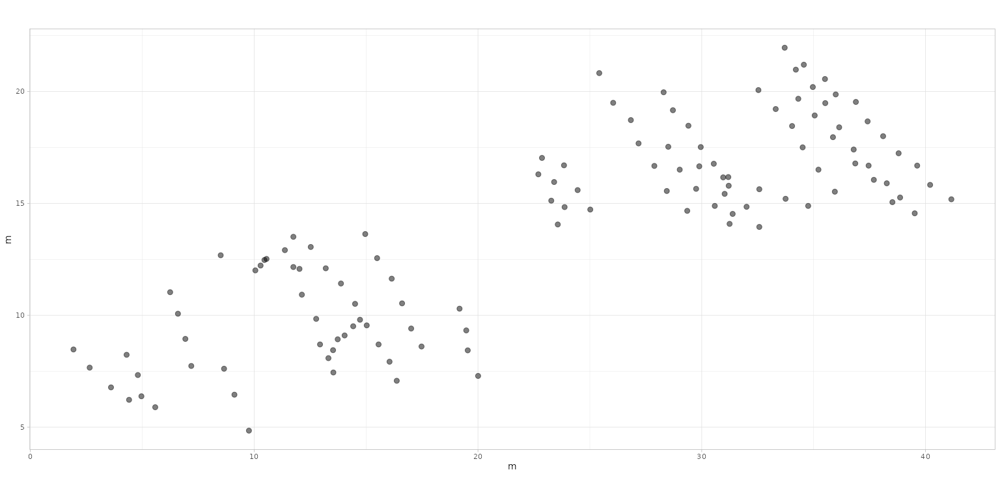
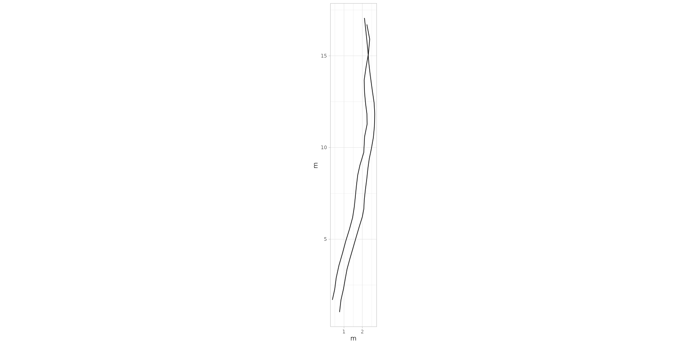
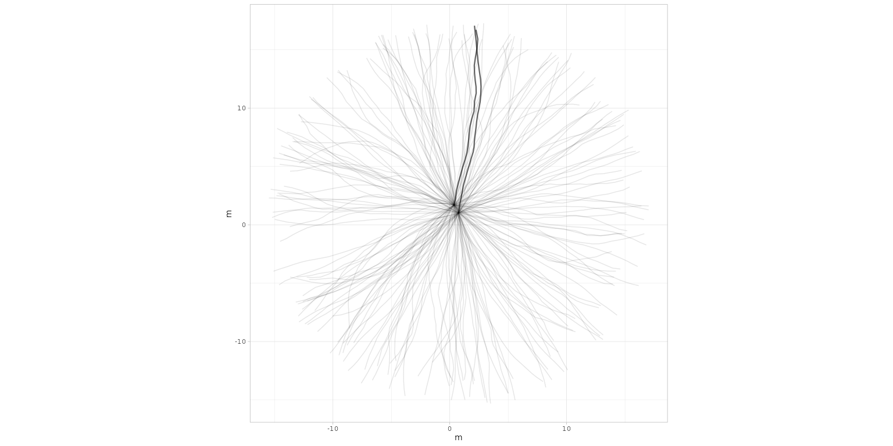
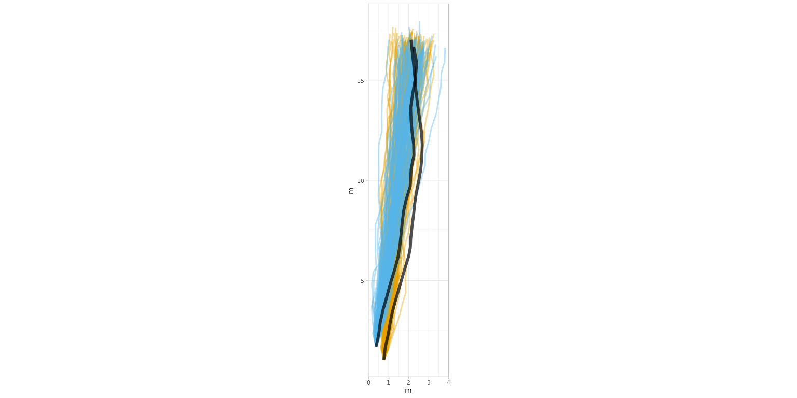
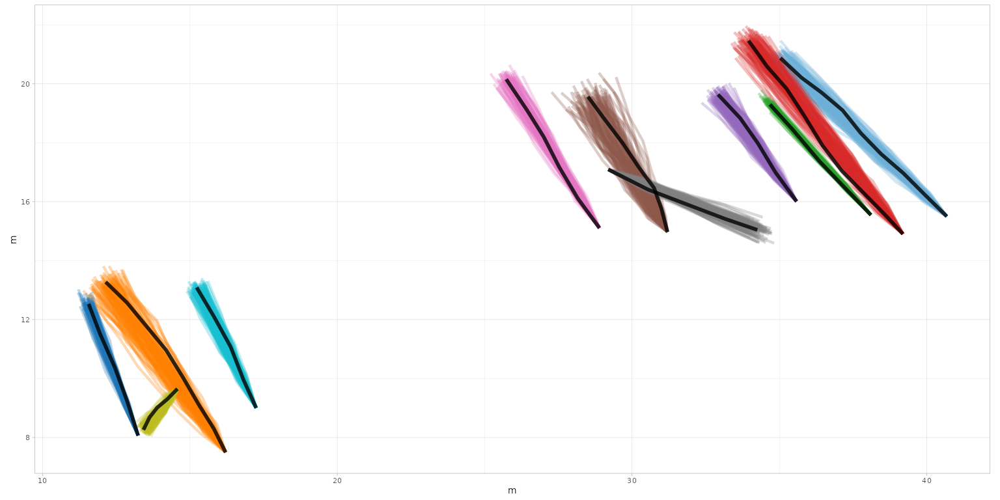
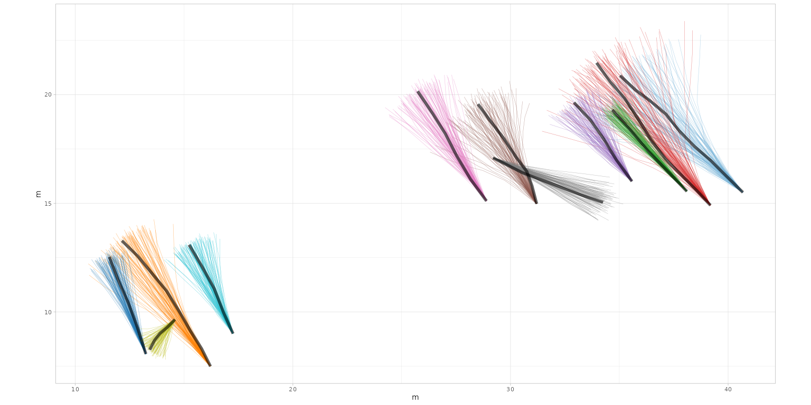

Getting Started with QuAnTeTrack
Installation
To install the QuAnTeTrack package, you can choose between installing the stable version from CRAN (recommended) or the development version from GitHub.
From CRAN (recommended)
To install the stable version from CRAN, use:
install.packages("QuAnTeTrack")From GitHub (development version)
If you want the latest development version, you will need to use the
devtools package. If you haven’t installed
devtools yet, you can do so with the following command:
install.packages("devtools")Once devtools is installed, you can install
QuAnTeTrack using:
devtools::install_github("MacroFunUV/QuAnTeTrack")If you have already installed QuAnTeTrack and want to ensure you have the latest version, you can update it with:
devtools::install_github("MacroFunUV/QuAnTeTrack", force = TRUE)Overview of the Analytical Workflow in QuAnTeTrack
The QuAnTeTrack package (Quantitative Analysis of Tetrapod Trackways) provides a structured and comprehensive workflow for analyzing trackway data, facilitating the assessment of paleoecological and paleoethological hypotheses. The workflow integrates various functions for data digitization, loading, exploratory analysis, statistical testing, simulation, similarity assessment, intersection detection, and clustering. This pipeline aims to help researchers reconstruct, compare, and interpret movement patterns and behavioral dynamics of trackmakers.
1. Data Digitization and Preprocessing
The first step involves digitizing the trackway data using the TPS software suite, particularly:
-
tpsUtil (Rohlf, 2008): For compiling and
converting
.TPSfiles.
- tpsDig (Rohlf, 2009): For digitizing footprint coordinates from trackways.
The digitization process should ensure that the footprints are consistently recorded across all tracks. This process is essential for converting raw images into structured data for further analysis.
2. Loading Data with
tps_to_track()
Once digitized, the data is loaded into QuAnTeTrack
using the tps_to_track() function. This function:
- Reads
.TPSfiles containing digitized footprints within tracks. - Extracts and organizes data into structured
trackR objects. - Handles missing footprints through interpolation if required.
- Converts raw data into real-world measurements using user-specified scales.
The resulting track R objects
contain:
-
Trajectories: Interpolated pathways derived from
midpoints between footprints.
- Footprints: Original digitized points and metadata for each track.
Additionally, if the dataset is extensive, users can utilize the
subset_track() function to isolate
specific tracks for focused analysis. This step helps avoid
computational overhead and allows customized analyses of selected
trajectories.
3. Exploratory Analysis of Track Parameters
Before testing specific hypotheses, users should perform an initial exploration of the data. This includes:
-
Visual Inspection of Tracks (
plot_track()):
Generates visualizations of trackways and footprints to inspect their overall structure. The function offers various modes:- Plotting only footprints
- Plotting only tracks
- Plotting both footprints and tracks
-
Parameter Calculation (
track_param()):
Calculates essential movement parameters, including:- Step lengths
- Turning angles
- Total distance and track length
- Sinuosity
- Straightness
Velocity Calculation (
velocity_track()):
Estimates velocities and relative stride lengths for each track, applying formulas based on empirical studies. This step is crucial for understanding speed dynamics and comparing them across different trackmakers or scenarios.Visualization of Velocity Patterns (
plot_velocity()):
Provides a detailed view of how velocity or relative stride length changes along each track. This visualization is essential for identifying patterns of acceleration, deceleration, or steady movement.-
Direction Analysis (
plot_direction()):
Provides various visualization options to explore trackway directionality:- Boxplots of step directions
- Polar histograms of step directions and average directions
- Faceted plots for comparing multiple tracks
These functions help identify general patterns and irregularities in the data before proceeding with formal statistical testing.
4. Testing Directional and Velocity Patterns
To assess whether tracks exhibit distinct movement patterns, the following statistical tests can be applied:
-
Testing Velocity (
test_velocity()):- Compares mean velocities across tracks using ANOVA, Kruskal-Wallis, or GLM.
- Performs pairwise comparisons if necessary.
- Provides visualizations of velocity distributions across different tracks.
-
Movement Mode Analysis
(
mode_velocity()):- Applies Spearman’s rank correlation to detect trends of acceleration, deceleration, or steady movement along each track.
-
Testing Direction (
test_direction()):- Compares mean directions across tracks using ANOVA, Kruskal-Wallis,
or GLM.
- Performs pairwise comparisons if necessary.
- Compares mean directions across tracks using ANOVA, Kruskal-Wallis,
or GLM.
These statistical tests allow researchers to rigorously compare and quantify movement characteristics, providing a foundation for hypothesis testing.
5. Simulation-Based Hypothesis Testing
(simulate_track())
The simulate_track() function generates
simulated trajectories based on different movement
models to test specific hypotheses. Three models are available:
-
Directed Model: Represents highly constrained,
purposeful movement along a consistent direction.
-
Constrained Model: Generates correlated random
walks, suitable for partially directed movement.
- Unconstrained Model: Represents fully random exploratory movement.
These models can be informed by geological data (e.g., sedimentology, paleogeomorphology, etc.) to test the influence of environmental constraints on movement. For example, natural barriers or features inferred from geological evidence may restrict the range of simulated paths.
The plot_sim() function overlays simulated tracks on the
actual trajectories, allowing users to visually assess how well
different models replicate observed track patterns. This visual
comparison is essential for evaluating the realism of simulated
tracks.
6. Comparing Simulated and Empirical Tracks
The QuAnTeTrack package offers several functions aimed at comparing similarity and intersection metrics between two or more actual tracks. These metrics are then evaluated against simulated datasets to determine the probability of observing such similarity or intersection counts under scenarios of independent (non-coordinated) movement.
Dynamic Time Warping (
simil_DTW_metric()):
Compares trajectories based on the optimal alignment of points, allowing for variable path lengths.Fréchet Distance (
simil_Frechet_metric()):
Measures similarity by comparing the overall shape of trajectories, focusing on global rather than local alignment.Track Intersections (
track_intersection()):
Identifies and counts unique intersections between tracks, which can indicate interaction or coordinated movement.
7. Combining Probability Metrics
(combined_prob())
The combined_prob() function integrates
p-values from multiple similarity metrics and intersection
tests to provide a more robust assessment of observed patterns. This
approach offers an overall measure of significance, enhancing the
reliability of the results by accounting for different aspects of
similarity and interaction.
8. Clustering Analysis
(cluster_track())
The cluster_track() function is an optional but powerful
step that can be applied before formal statistical
testing. It clusters tracks based on calculated movement
parameters, identifying groups of tracks with similar behaviors. The
clustering process:
- Facilitates targeted testing of specific behavioral hypotheses (e.g., gregarious movement).
- Helps filter relevant datasets before applying similarity metrics.
- Informs the selection of appropriate simulation models by identifying common movement characteristics.
Raw Data Format
QuAnTeTrack accepts raw data in the form of .TPS files containing footprint coordinates. Each track should be recorded as a different image within the .TPS file.
Requirements
-
Footprint coordinates should be digitized in
equivalent positions within each footprint.
-
Tracks with missing footprints are acceptable and
will be interpolated as needed by the package
functions.
- It is recommended to digitize the coordinates using
the TPS software suite, particularly:
-
tpsUtil (Rohlf, 2008) - for file
manipulation and data conversion.
- tpsDig (Rohlf, 2009) - for digitizing landmarks and outlines.
-
tpsUtil (Rohlf, 2008) - for file
manipulation and data conversion.
This vignette demonstrates how to load, process, and analyze
trackway data using the QuAnTeTrack package.
We will walk through the Paluxy River and the
Mount Tom datasets, representing dinosaur tracks from
the Paluxy River site (Farlow et al., 2012) and the Mount Tom
site (Ostrom, 1972), respectively. Examples of
.tps files of these datasets can be downloaded here:
Loading and Converting Data
The tps_to_track() function is an
essential component of the QuAnTeTrack package,
designed to transform raw .TPS files
containing digitized trackway data into structured
track R objects. This tool is particularly
useful for reconstructing trackways from footprints digitized using the
TPS software suite, such as tpsUtil
and tpsDig. The function reads the raw
.TPS files, extracts the coordinate data,
and processes it to generate track R
objects that are compatible with the analytical tools provided
by QuAnTeTrack.
The tps_to_track() function reads
.TPS files where each track is represented
by a series of (x, y) coordinates stored as separate
images. These data points are then processed to generate
trajectory coordinates by calculating the
midpoints between consecutive footprints. These
trajectories serve as reconstructed pathways, allowing users to analyze
overall movement patterns. When missing footprints are encountered, the
function can interpolate their positions based on the locations of
adjacent footprints and the specified side (left or right) of the
initial footprint.
Several arguments are provided to customize data handling. The
file argument specifies the path to the
.TPS file, while the scale
argument allows users to define a scale factor (in meters per
pixel) to convert coordinates to real-world measurements. To
account for missing footprints, the
missing argument specifies whether
interpolation is required, while the NAs
argument provides a matrix detailing which footprints need
interpolation. Additionally, the R.L.side
argument identifies whether the first footprint of each track belongs to
the left or right side, which is essential when dealing
with incomplete trackways.
The function generates a track R object
consisting of two main components:
Trajectories and
Footprints. The
Trajectories element contains a list of
interpolated trajectories, where each trajectory represents a series of
midpoints calculated between consecutive footprints. The
Footprints element comprises a list of
data frames with the original footprint coordinates, associated metadata
(such as image reference and ID), and an indicator specifying whether
each footprint is actual or inferred.
The resulting track R object provides a
comprehensive framework for organizing digitized trackway data, making
it compatible with the various analytical functions within the
QuAnTeTrack package. This structured data format
enables users to perform advanced analyses such as calculating movement
parameters, testing hypotheses about trackmaker behavior, and comparing
tracks using similarity metrics. By transforming raw data into
structured objects, the tps_to_track()
function serves as a foundational step in the broader analytical
pipeline provided by QuAnTeTrack.
Examples of Usage
Here, the TPS files (PaluxyRiver.tps and
MountTom.tps) are loaded using the
system.file() function to ensure compatibility across
systems. This approach is necessary because these files are stored as
internal data within the package (specifically, in the
inst/extdata/ folder). Using system.file()
ensures that the files can be accessed regardless of the user’s
operating system or working directory, making the vignette fully
portable and reproducible. They are then converted to track
R objects using the tps_to_track() function. The
scale argument is used to set the coordinate scaling
factor. For the PaluxyRiver dataset, no footprints are
missing, so the missing argument is set to
FALSE and NAs = NULL. For the
MountTom dataset, some footprints are missing, so the
missing argument is set to TRUE, and the
missing footprints are specified using the NAs matrix.
Additionally, the R.L.side argument is provided to specify
the side of the first footprint of each track (either “R” for right or
“L” for left).
For users working with their own data, replace
system.file("extdata", "PaluxyRiver.tps", package = "QuAnTeTrack")
and
system.file("extdata", "MountTom.tps", package = "QuAnTeTrack")
with the file paths to your .TPS files (e.g.,
"C:/path/to/your/PaluxyRiver.tps" and
"C:/path/to/your/MountTom.tps").
PaluxyRiver <- tps_to_track(
system.file("extdata", "PaluxyRiver.tps", package = "QuAnTeTrack"),
scale = 0.004341493,
missing = FALSE,
NAs = NULL
)#> $Trajectories
#> $Trajectories$Track_1
#> x y IMAGE ID time displacementTime
#> 1 0.7554198 1.026763 Sauropod.png 0 0.00 0.00
#> 2 0.8313959 1.680158 Sauropod.png 0 0.02 0.02
#> 3 0.9703237 2.292308 Sauropod.png 0 0.04 0.04
#> 4 1.0680073 2.850190 Sauropod.png 0 0.06 0.06
#> 5 1.1656909 3.375511 Sauropod.png 0 0.08 0.08
#> 6 1.3176431 3.929051 Sauropod.png 0 0.10 0.10
#> 7 1.4934736 4.532519 Sauropod.png 0 0.12 0.12
#> 8 1.6606211 5.112108 Sauropod.png 0 0.14 0.14
#> 9 1.8234271 5.663478 Sauropod.png 0 0.16 0.16
#> 10 1.9970868 6.219189 Sauropod.png 0 0.18 0.18
#> 11 2.0795751 6.655509 Sauropod.png 0 0.20 0.20
#> 12 2.1012826 7.120049 Sauropod.png 0 0.22 0.22
#> 13 2.1642343 7.701809 Sauropod.png 0 0.24 0.24
#> 14 2.2402104 8.290081 Sauropod.png 0 0.26 0.26
#> 15 2.3009913 8.854475 Sauropod.png 0 0.28 0.28
#> 16 2.3747967 9.384137 Sauropod.png 0 0.30 0.30
#> 17 2.4898462 9.933336 Sauropod.png 0 0.32 0.32
#> 18 2.5983836 10.543316 Sauropod.png 0 0.34 0.34
#> 19 2.6548230 11.146783 Sauropod.png 0 0.36 0.36
#> 20 2.6743597 11.824056 Sauropod.png 0 0.38 0.38
#> 21 2.6396277 12.429694 Sauropod.png 0 0.40 0.40
#> 22 2.5636516 12.955015 Sauropod.png 0 0.42 0.42
#> 23 2.4985292 13.417384 Sauropod.png 0 0.44 0.44
#> 24 2.4268946 13.949217 Sauropod.png 0 0.46 0.46
#> 25 2.3530892 14.589587 Sauropod.png 0 0.48 0.48
#> 26 2.3053328 15.195226 Sauropod.png 0 0.50 0.50
#> 27 2.2488934 15.790010 Sauropod.png 0 0.52 0.52
#> 28 2.1859417 16.386965 Sauropod.png 0 0.54 0.54
#> 29 2.1121363 17.059897 Sauropod.png 0 0.56 0.56
#> polar displacement
#> 1 0.7554198+ 1.026763i 0.00000000+0.0000000i
#> 2 0.8313959+ 1.680158i 0.07597613+0.6533947i
#> 3 0.9703237+ 2.292308i 0.13892778+0.6121505i
#> 4 1.0680073+ 2.850190i 0.09768359+0.5578819i
#> 5 1.1656909+ 3.375511i 0.09768359+0.5253207i
#> 6 1.3176431+ 3.929051i 0.15195226+0.5535404i
#> 7 1.4934736+ 4.532519i 0.17583047+0.6034675i
#> 8 1.6606211+ 5.112108i 0.16714748+0.5795893i
#> 9 1.8234271+ 5.663478i 0.16280599+0.5513696i
#> 10 1.9970868+ 6.219189i 0.17365972+0.5557111i
#> 11 2.0795751+ 6.655509i 0.08248837+0.4363200i
#> 12 2.1012826+ 7.120049i 0.02170746+0.4645398i
#> 13 2.1642343+ 7.701809i 0.06295165+0.5817601i
#> 14 2.2402104+ 8.290081i 0.07597613+0.5882723i
#> 15 2.3009913+ 8.854475i 0.06078090+0.5643941i
#> 16 2.3747967+ 9.384137i 0.07380538+0.5296621i
#> 17 2.4898462+ 9.933336i 0.11504956+0.5491989i
#> 18 2.5983836+10.543316i 0.10853732+0.6099798i
#> 19 2.6548230+11.146783i 0.05643941+0.6034675i
#> 20 2.6743597+11.824056i 0.01953672+0.6772729i
#> 21 2.6396277+12.429694i -0.03473194+0.6056383i
#> 22 2.5636516+12.955015i -0.07597613+0.5253207i
#> 23 2.4985292+13.417384i -0.06512239+0.4623690i
#> 24 2.4268946+13.949217i -0.07163463+0.5318329i
#> 25 2.3530892+14.589587i -0.07380538+0.6403702i
#> 26 2.3053328+15.195226i -0.04775642+0.6056383i
#> 27 2.2488934+15.790010i -0.05643941+0.5947845i
#> 28 2.1859417+16.386965i -0.06295165+0.5969553i
#> 29 2.1121363+17.059897i -0.07380538+0.6729314i
#>
#> $Trajectories$Track_2
#> x y IMAGE ID time displacementTime
#> 1 0.3646854 1.693182 Theropod.png 1 0.00 0.00
#> 2 0.4927595 2.279284 Theropod.png 1 0.02 0.02
#> 3 0.5730771 2.891434 Theropod.png 1 0.04 0.04
#> 4 0.7206878 3.564366 Theropod.png 1 0.06 0.06
#> 5 0.9095428 4.213419 Theropod.png 1 0.08 0.08
#> 6 1.0897147 4.884180 Theropod.png 1 0.10 0.10
#> 7 1.2959357 5.546257 Theropod.png 1 0.12 0.12
#> 8 1.4652539 6.171432 Theropod.png 1 0.14 0.14
#> 9 1.5564252 6.742339 Theropod.png 1 0.16 0.16
#> 10 1.6150354 7.304562 Theropod.png 1 0.18 0.18
#> 11 1.6736456 7.899347 Theropod.png 1 0.20 0.20
#> 12 1.7452802 8.494131 Theropod.png 1 0.22 0.22
#> 13 1.8690127 9.043330 Theropod.png 1 0.24 0.24
#> 14 2.0752337 9.724944 Theropod.png 1 0.26 0.26
#> 15 2.1208193 10.591072 Theropod.png 1 0.28 0.28
#> 16 2.2597471 11.277028 Theropod.png 1 0.30 0.30
#> 17 2.2467226 11.832739 Theropod.png 1 0.32 0.32
#> 18 2.1729172 12.405816 Theropod.png 1 0.34 0.34
#> 19 2.1186486 12.994089 Theropod.png 1 0.36 0.36
#> 20 2.0969411 13.667020 Theropod.png 1 0.38 0.38
#> 21 2.1989662 14.368171 Theropod.png 1 0.40 0.40
#> 22 2.3292110 15.112737 Theropod.png 1 0.42 0.42
#> 23 2.3986749 15.902889 Theropod.png 1 0.44 0.44
#> 24 2.2445519 16.708236 Theropod.png 1 0.46 0.46
#> polar displacement
#> 1 0.3646854+ 1.693182i 0.00000000+0.0000000i
#> 2 0.4927595+ 2.279284i 0.12807404+0.5861016i
#> 3 0.5730771+ 2.891434i 0.08031762+0.6121505i
#> 4 0.7206878+ 3.564366i 0.14761076+0.6729314i
#> 5 0.9095428+ 4.213419i 0.18885495+0.6490532i
#> 6 1.0897147+ 4.884180i 0.18017196+0.6707607i
#> 7 1.2959357+ 5.546257i 0.20622092+0.6620777i
#> 8 1.4652539+ 6.171432i 0.16931823+0.6251750i
#> 9 1.5564252+ 6.742339i 0.09117135+0.5709063i
#> 10 1.6150354+ 7.304562i 0.05861016+0.5622233i
#> 11 1.6736456+ 7.899347i 0.05861016+0.5947845i
#> 12 1.7452802+ 8.494131i 0.07163463+0.5947845i
#> 13 1.8690127+ 9.043330i 0.12373255+0.5491989i
#> 14 2.0752337+ 9.724944i 0.20622092+0.6816144i
#> 15 2.1208193+10.591072i 0.04558568+0.8661279i
#> 16 2.2597471+11.277028i 0.13892778+0.6859559i
#> 17 2.2467226+11.832739i -0.01302448+0.5557111i
#> 18 2.1729172+12.405816i -0.07380538+0.5730771i
#> 19 2.1186486+12.994089i -0.05426866+0.5882723i
#> 20 2.0969411+13.667020i -0.02170746+0.6729314i
#> 21 2.1989662+14.368171i 0.10202509+0.7011511i
#> 22 2.3292110+15.112737i 0.13024479+0.7445660i
#> 23 2.3986749+15.902889i 0.06946389+0.7901517i
#> 24 2.2445519+16.708236i -0.15412300+0.8053470i
#>
#>
#> $Footprints
#> $Footprints[[1]]
#> X Y IMAGE ID missing
#> 1 0.9160550 0.633858 Sauropod.png 0 Actual
#> 2 0.5947845 1.419668 Sauropod.png 0 Actual
#> 3 1.0680073 1.940647 Sauropod.png 0 Actual
#> 4 0.8726401 2.643969 Sauropod.png 0 Actual
#> 5 1.2633745 3.056411 Sauropod.png 0 Actual
#> 6 1.0680073 3.694611 Sauropod.png 0 Actual
#> 7 1.5672790 4.163492 Sauropod.png 0 Actual
#> 8 1.4196682 4.901546 Sauropod.png 0 Actual
#> 9 1.9015739 5.322670 Sauropod.png 0 Actual
#> 10 1.7452802 6.004285 Sauropod.png 0 Actual
#> 11 2.2488934 6.434093 Sauropod.png 0 Actual
#> 12 1.9102569 6.876925 Sauropod.png 0 Actual
#> 13 2.2923083 7.363172 Sauropod.png 0 Actual
#> 14 2.0361602 8.040445 Sauropod.png 0 Actual
#> 15 2.4442606 8.539717 Sauropod.png 0 Actual
#> 16 2.1577220 9.169233 Sauropod.png 0 Actual
#> 17 2.5918713 9.599041 Sauropod.png 0 Actual
#> 18 2.3878212 10.267631 Sauropod.png 0 Actual
#> 19 2.8089460 10.819001 Sauropod.png 0 Actual
#> 20 2.5007000 11.474566 Sauropod.png 0 Actual
#> 21 2.8480194 12.173546 Sauropod.png 0 Actual
#> 22 2.4312361 12.685843 Sauropod.png 0 Actual
#> 23 2.6960672 13.224188 Sauropod.png 0 Actual
#> 24 2.3009913 13.610581 Sauropod.png 0 Actual
#> 25 2.5527979 14.287853 Sauropod.png 0 Actual
#> 26 2.1533805 14.891321 Sauropod.png 0 Actual
#> 27 2.4572850 15.499130 Sauropod.png 0 Actual
#> 28 2.0405017 16.080890 Sauropod.png 0 Actual
#> 29 2.3313817 16.693041 Sauropod.png 0 Actual
#> 30 1.8928909 17.426753 Sauropod.png 0 Actual
#>
#> $Footprints[[2]]
#> X Y IMAGE ID missing
#> 1 0.1866842 1.376253 Theropod.png 1 Actual
#> 2 0.5426866 2.010111 Theropod.png 1 Actual
#> 3 0.4428323 2.548456 Theropod.png 1 Actual
#> 4 0.7033219 3.234412 Theropod.png 1 Actual
#> 5 0.7380538 3.894319 Theropod.png 1 Actual
#> 6 1.0810318 4.532519 Theropod.png 1 Actual
#> 7 1.0983977 5.235841 Theropod.png 1 Actual
#> 8 1.4934736 5.856674 Theropod.png 1 Actual
#> 9 1.4370342 6.486191 Theropod.png 1 Actual
#> 10 1.6758163 6.998487 Theropod.png 1 Actual
#> 11 1.5542545 7.610637 Theropod.png 1 Actual
#> 12 1.7930366 8.188056 Theropod.png 1 Actual
#> 13 1.6975238 8.800206 Theropod.png 1 Actual
#> 14 2.0405017 9.286454 Theropod.png 1 Actual
#> 15 2.1099656 10.163435 Theropod.png 1 Actual
#> 16 2.1316731 11.018709 Theropod.png 1 Actual
#> 17 2.3878212 11.535347 Theropod.png 1 Actual
#> 18 2.1056241 12.130131 Theropod.png 1 Actual
#> 19 2.2402104 12.681501 Theropod.png 1 Actual
#> 20 1.9970868 13.306676 Theropod.png 1 Actual
#> 21 2.1967955 14.027364 Theropod.png 1 Actual
#> 22 2.2011370 14.708978 Theropod.png 1 Actual
#> 23 2.4572850 15.516496 Theropod.png 1 Actual
#> 24 2.3400647 16.289282 Theropod.png 1 Actual
#> 25 2.1490390 17.127190 Theropod.png 1 Actual
MountTom <- tps_to_track(
system.file("extdata", "MountTom.tps", package = "QuAnTeTrack"),
scale = 0.004411765,
missing = TRUE,
NAs = matrix(c(7, 3), nrow = 1, ncol = 2),
R.L.side = c(
"R", "L", "L", "L", "R", "L", "R", "R", "L", "L", "L", "L", "L",
"R", "R", "L", "R", "R", "L", "R", "R", "R", "R"
)
)#> $Trajectories
#> $Trajectories$Track_01
#> x y IMAGE ID time displacementTime polar
#> 1 40.67868 15.50294 Track 1.png 0 0.00 0.00 40.67868+15.50294i
#> 2 39.91544 16.25515 Track 1.png 0 0.02 0.02 39.91544+16.25515i
#> 3 39.21177 16.96103 Track 1.png 0 0.04 0.04 39.21177+16.96103i
#> 4 38.45074 17.61838 Track 1.png 0 0.06 0.06 38.45074+17.61838i
#> 5 37.75809 18.33088 Track 1.png 0 0.08 0.08 37.75809+18.33088i
#> 6 37.14927 19.09632 Track 1.png 0 0.10 0.10 37.14927+19.09632i
#> 7 36.43677 19.69853 Track 1.png 0 0.12 0.12 36.43677+19.69853i
#> 8 35.74633 20.21030 Track 1.png 0 0.14 0.14 35.74633+20.21030i
#> 9 35.03383 20.87427 Track 1.png 0 0.16 0.16 35.03383+20.87427i
#> displacement
#> 1 0.0000000+0.0000000i
#> 2 -0.7632353+0.7522059i
#> 3 -0.7036765+0.7058824i
#> 4 -0.7610295+0.6573530i
#> 5 -0.6926471+0.7125000i
#> 6 -0.6088236+0.7654412i
#> 7 -0.7125000+0.6022059i
#> 8 -0.6904412+0.5117647i
#> 9 -0.7125000+0.6639706i
#>
#> $Trajectories$Track_02
#> x y IMAGE ID time displacementTime polar
#> 1 39.18971 14.90735 Track 2.png 1 0.00 0.00 39.18971+14.90735i
#> 2 38.56544 15.57794 Track 2.png 1 0.02 0.02 38.56544+15.57794i
#> 3 37.86177 16.29044 Track 2.png 1 0.04 0.04 37.86177+16.29044i
#> 4 37.12280 17.04485 Track 2.png 1 0.06 0.06 37.12280+17.04485i
#> 5 36.46544 17.90074 Track 2.png 1 0.08 0.08 36.46544+17.90074i
#> 6 35.83015 18.93750 Track 2.png 1 0.10 0.10 35.83015+18.93750i
#> 7 35.24118 19.83750 Track 2.png 1 0.12 0.12 35.24118+19.83750i
#> 8 34.58383 20.58530 Track 2.png 1 0.14 0.14 34.58383+20.58530i
#> 9 33.95515 21.46324 Track 2.png 1 0.16 0.16 33.95515+21.46324i
#> displacement
#> 1 0.0000000+0.0000000i
#> 2 -0.6242647+0.6705883i
#> 3 -0.7036765+0.7125000i
#> 4 -0.7389706+0.7544118i
#> 5 -0.6573530+0.8558824i
#> 6 -0.6352942+1.0367648i
#> 7 -0.5889706+0.9000001i
#> 8 -0.6573530+0.7477942i
#> 9 -0.6286765+0.8779412i
#>
#> $Trajectories$Track_03
#> x y IMAGE ID time displacementTime polar
#> 1 38.10441 15.55147 Track 3.png 2 0.00 0.00 38.10441+15.55147i
#> 2 37.27500 16.41618 Track 3.png 2 0.02 0.02 37.27500+16.41618i
#> 3 36.36177 17.36912 Track 3.png 2 0.04 0.04 36.36177+17.36912i
#> 4 35.45515 18.44118 Track 3.png 2 0.06 0.06 35.45515+18.44118i
#> 5 34.68088 19.29927 Track 3.png 2 0.08 0.08 34.68088+19.29927i
#> displacement
#> 1 0.0000000+0.0000000i
#> 2 -0.8294118+0.8647059i
#> 3 -0.9132354+0.9529412i
#> 4 -0.9066177+1.0720589i
#> 5 -0.7742648+0.8580883i
#>
#> $Trajectories$Track_04
#> x y IMAGE ID time displacementTime polar
#> 1 35.58088 16.01250 Track 4.png 3 0.00 0.00 35.58088+16.01250i
#> 2 34.86177 17.00294 Track 4.png 3 0.02 0.02 34.86177+17.00294i
#> 3 34.27280 17.97794 Track 4.png 3 0.04 0.04 34.27280+17.97794i
#> 4 33.67059 18.83382 Track 4.png 3 0.06 0.06 33.67059+18.83382i
#> 5 32.91838 19.63677 Track 4.png 3 0.08 0.08 32.91838+19.63677i
#> displacement
#> 1 0.0000000+0.0000000i
#> 2 -0.7191177+0.9904412i
#> 3 -0.5889706+0.9750001i
#> 4 -0.6022059+0.8558824i
#> 5 -0.7522059+0.8029412i
#>
#> $Trajectories$Track_05
#> x y IMAGE ID time displacementTime polar
#> 1 32.28750 14.39559 Track 5.png 4 0.00 0.00 32.28750+14.39559i
#> 2 31.60368 15.31544 Track 5.png 4 0.02 0.02 31.60368+15.31544i
#> displacement
#> 1 0.0000000+0.000000i
#> 2 -0.6838236+0.919853i
#>
#> $Trajectories$Track_06
#> x y IMAGE ID time displacementTime polar
#> 1 30.91324 14.48382 Track 6.png 5 0.00 0.00 30.91324+14.48382i
#> 2 30.16544 15.26691 Track 6.png 5 0.02 0.02 30.16544+15.26691i
#> 3 29.38235 16.07647 Track 6.png 5 0.04 0.04 29.38235+16.07647i
#> displacement
#> 1 0.0000000+0.0000000i
#> 2 -0.7477942+0.7830883i
#> 3 -0.7830883+0.8095589i
#>
#> $Trajectories$Track_07
#> x y IMAGE ID time displacementTime polar
#> 1 31.20221 14.97574 Track 7.png 6 0.00 0.00 31.20221+14.97574i
#> 2 30.99062 15.79181 Track 7.png 6 0.02 0.02 30.99062+15.79181i
#> 3 30.74798 16.46461 Track 7.png 6 0.04 0.04 30.74798+16.46461i
#> 4 30.24706 17.14191 Track 7.png 6 0.06 0.06 30.24706+17.14191i
#> 5 29.68015 17.99118 Track 7.png 6 0.08 0.08 29.68015+17.99118i
#> 6 29.05809 18.81397 Track 7.png 6 0.10 0.10 29.05809+18.81397i
#> 7 28.50441 19.56177 Track 7.png 6 0.12 0.12 28.50441+19.56177i
#> displacement
#> 1 0.0000000+0.0000000i
#> 2 -0.2115858+0.8160783i
#> 3 -0.2426471+0.6727942i
#> 4 -0.5009143+0.6773041i
#> 5 -0.5669118+0.8492648i
#> 6 -0.6220589+0.8227942i
#> 7 -0.5536765+0.7477942i
#>
#> $Trajectories$Track_08
#> x y IMAGE ID time displacementTime polar
#> 1 28.89485 15.10809 Track 8.png 7 0.00 0.00 28.89485+15.10809i
#> 2 28.16030 16.11177 Track 8.png 7 0.02 0.02 28.16030+16.11177i
#> 3 27.52941 17.17500 Track 8.png 7 0.04 0.04 27.52941+17.17500i
#> 4 27.00441 18.19853 Track 8.png 7 0.06 0.06 27.00441+18.19853i
#> 5 26.43750 19.10515 Track 8.png 7 0.08 0.08 26.43750+19.10515i
#> 6 25.73162 20.15515 Track 8.png 7 0.10 0.10 25.73162+20.15515i
#> displacement
#> 1 0.0000000+0.0000000i
#> 2 -0.7345589+1.0036765i
#> 3 -0.6308824+1.0632354i
#> 4 -0.5250000+1.0235295i
#> 5 -0.5669118+0.9066177i
#> 6 -0.7058824+1.0500001i
#>
#> $Trajectories$Track_09
#> x y IMAGE ID time displacementTime polar
#> 1 29.19706 17.09118 Track 9.png 8 0.00 0.00 29.19706+17.09118i
#> 2 30.53824 16.41397 Track 9.png 8 0.02 0.02 30.53824+16.41397i
#> 3 31.87941 15.90221 Track 9.png 8 0.04 0.04 31.87941+15.90221i
#> 4 33.15883 15.41691 Track 9.png 8 0.06 0.06 33.15883+15.41691i
#> 5 34.25074 15.04412 Track 9.png 8 0.08 0.08 34.25074+15.04412i
#> displacement
#> 1 0.000000+0.0000000i
#> 2 1.341177-0.6772059i
#> 3 1.341177-0.5117647i
#> 4 1.279412-0.4852941i
#> 5 1.091912-0.3727941i
#>
#> $Trajectories$Track_10
#> x y IMAGE ID time displacementTime polar
#> 1 24.15000 16.14485 Track 10.png 9 0.00 0.00 24.15000+16.14485i
#> 2 24.73677 15.15662 Track 10.png 9 0.02 0.02 24.73677+15.15662i
#> displacement
#> 1 0.0000000+0.0000000i
#> 2 0.5867647-0.9882354i
#>
#> $Trajectories$Track_11
#> x y IMAGE ID time displacementTime polar
#> 1 23.13309 16.49118 Track 11.png 10 0.00 0.00 23.13309+16.49118i
#> 2 23.63824 15.39265 Track 11.png 10 0.02 0.02 23.63824+15.39265i
#> displacement
#> 1 0.0000000+0.000000i
#> 2 0.5051471-1.098529i
#>
#> $Trajectories$Track_12
#> x y IMAGE ID time displacementTime polar
#> 1 23.42206 14.58750 Track 12.png 11 0.00 0.00 23.42206+14.58750i
#> 2 22.98750 15.70809 Track 12.png 11 0.02 0.02 22.98750+15.70809i
#> displacement
#> 1 0.0000000+0.000000i
#> 2 -0.4345589+1.120588i
#>
#> $Trajectories$Track_13
#> x y IMAGE ID time displacementTime polar
#> 1 14.57868 9.652942 Track 13.png 12 0.00 0.00 14.57868+9.652942i
#> 2 14.23456 9.302207 Track 13.png 12 0.02 0.02 14.23456+9.302207i
#> 3 13.88824 9.011030 Track 13.png 12 0.04 0.04 13.88824+9.011030i
#> 4 13.63015 8.682354 Track 13.png 12 0.06 0.06 13.63015+8.682354i
#> 5 13.42280 8.261030 Track 13.png 12 0.08 0.08 13.42280+8.261030i
#> displacement
#> 1 0.0000000+0.0000000i
#> 2 -0.3441177-0.3507353i
#> 3 -0.3463236-0.2911765i
#> 4 -0.2580883-0.3286765i
#> 5 -0.2073530-0.4213236i
#>
#> $Trajectories$Track_14
#> x y IMAGE ID time displacementTime polar
#> 1 19.77574 7.859559 Track 14.png 13 0.00 0.00 19.77574+7.859559i
#> 2 19.51103 8.876471 Track 14.png 13 0.02 0.02 19.51103+8.876471i
#> 3 19.32794 9.807354 Track 14.png 13 0.04 0.04 19.32794+9.807354i
#> displacement
#> 1 0.0000000+0.0000000i
#> 2 -0.2647059+1.0169118i
#> 3 -0.1830882+0.9308824i
#>
#> $Trajectories$Track_15
#> x y IMAGE ID time displacementTime polar
#> 1 17.24780 9.004412 Track 15.png 14 0.00 0.00 17.24780+ 9.004412i
#> 2 16.81324 9.968383 Track 15.png 14 0.02 0.02 16.81324+ 9.968383i
#> 3 16.37868 11.082354 Track 15.png 14 0.04 0.04 16.37868+11.082354i
#> 4 15.82059 12.092648 Track 15.png 14 0.06 0.06 15.82059+12.092648i
#> 5 15.22941 13.089707 Track 15.png 14 0.08 0.08 15.22941+13.089707i
#> displacement
#> 1 0.0000000+0.0000000i
#> 2 -0.4345589+0.9639707i
#> 3 -0.4345589+1.1139707i
#> 4 -0.5580883+1.0102942i
#> 5 -0.5911765+0.9970589i
#>
#> $Trajectories$Track_16
#> x y IMAGE ID time displacementTime polar
#> 1 16.21103 7.497795 Track 16.png 15 0.00 0.00 16.21103+ 7.497795i
#> 2 15.80515 8.309559 Track 16.png 15 0.02 0.02 15.80515+ 8.309559i
#> 3 15.29559 9.121324 Track 16.png 15 0.04 0.04 15.29559+ 9.121324i
#> 4 14.77059 10.027942 Track 16.png 15 0.06 0.06 14.77059+10.027942i
#> 5 14.19485 10.963236 Track 16.png 15 0.08 0.08 14.19485+10.963236i
#> 6 13.53971 11.757354 Track 16.png 15 0.10 0.10 13.53971+11.757354i
#> 7 12.86471 12.573530 Track 16.png 15 0.12 0.12 12.86471+12.573530i
#> 8 12.14118 13.277207 Track 16.png 15 0.14 0.14 12.14118+13.277207i
#> displacement
#> 1 0.0000000+0.0000000i
#> 2 -0.4058824+0.8117648i
#> 3 -0.5095589+0.8117648i
#> 4 -0.5250000+0.9066177i
#> 5 -0.5757353+0.9352942i
#> 6 -0.6551471+0.7941177i
#> 7 -0.6750000+0.8161765i
#> 8 -0.7235295+0.7036765i
#>
#> $Trajectories$Track_17
#> x y IMAGE ID time displacementTime polar
#> 1 10.37427 12.34412 Track 17.png 16 0.00 0.00 10.37427+12.34412i
#> 2 10.17132 12.11250 Track 17.png 16 0.02 0.02 10.17132+12.11250i
#> displacement
#> 1 0.0000000+0.0000000i
#> 2 -0.2029412-0.2316177i
#>
#> $Trajectories$Track_18
#> x y IMAGE ID time displacementTime polar
#> 1 13.24191 8.069118 Track 18.png 17 0.00 0.00 13.24191+ 8.069118i
#> 2 12.85809 9.266912 Track 18.png 17 0.02 0.02 12.85809+ 9.266912i
#> 3 12.45221 10.378677 Track 18.png 17 0.04 0.04 12.45221+10.378677i
#> 4 11.94265 11.536765 Track 18.png 17 0.06 0.06 11.94265+11.536765i
#> 5 11.56324 12.531618 Track 18.png 17 0.08 0.08 11.56324+12.531618i
#> displacement
#> 1 0.0000000+0.000000i
#> 2 -0.3838236+1.197794i
#> 3 -0.4058824+1.111765i
#> 4 -0.5095589+1.158088i
#> 5 -0.3794118+0.994853i
#>
#> $Trajectories$Track_19
#> x y IMAGE ID time displacementTime polar
#> 1 9.443383 5.647059 Track 19.png 18 0.00 0.00 9.443383+5.647059i
#> 2 8.887501 7.030148 Track 19.png 18 0.02 0.02 8.887501+7.030148i
#> displacement
#> 1 0.0000000+0.000000i
#> 2 -0.5558824+1.383088i
#>
#> $Trajectories$Track_20
#> x y IMAGE ID time displacementTime polar
#> 1 7.058824 8.338236 Track 20.png 19 0.00 0.00 7.058824+ 8.338236i
#> 2 6.761030 9.505148 Track 20.png 19 0.02 0.02 6.761030+ 9.505148i
#> 3 6.421324 10.548530 Track 20.png 19 0.04 0.04 6.421324+10.548530i
#> displacement
#> 1 0.0000000+0.000000i
#> 2 -0.2977941+1.166912i
#> 3 -0.3397059+1.043382i
#>
#> $Trajectories$Track_21
#> x y IMAGE ID time displacementTime polar
#> 1 4.008089 6.498530 Track 21.png 20 0.00 0.00 4.008089+6.498530i
#> 2 3.127941 7.217648 Track 21.png 20 0.02 0.02 3.127941+7.217648i
#> 3 2.289706 8.064706 Track 21.png 20 0.04 0.04 2.289706+8.064706i
#> displacement
#> 1 0.0000000+0.0000000i
#> 2 -0.8801471+0.7191177i
#> 3 -0.8382353+0.8470589i
#>
#> $Trajectories$Track_22
#> x y IMAGE ID time displacementTime polar
#> 1 5.272059 6.134559 Track 22.png 21 0.00 0.00 5.272059+6.134559i
#> 2 4.883824 6.853677 Track 22.png 21 0.02 0.02 4.883824+6.853677i
#> 3 4.552941 7.780148 Track 22.png 21 0.04 0.04 4.552941+7.780148i
#> displacement
#> 1 0.0000000+0.0000000i
#> 2 -0.3882353+0.7191177i
#> 3 -0.3308824+0.9264706i
#>
#> $Trajectories$Track_23
#> x y IMAGE ID time displacementTime polar
#> 1 9.529412 12.59779 Track 23.png 22 0.00 0.00 9.529412+12.59779i
#> 2 11.289707 12.29338 Track 23.png 22 0.02 0.02 11.289707+12.29338i
#> displacement
#> 1 0.000000+0.0000000i
#> 2 1.760294-0.3044118i
#>
#>
#> $Footprints
#> $Footprints[[1]]
#> X Y IMAGE ID Side missing
#> 1 41.15294 15.18088 Track 1.png 0 R Actual
#> 2 40.20441 15.82500 Track 1.png 0 L Actual
#> 3 39.62647 16.68530 Track 1.png 0 R Actual
#> 4 38.79706 17.23677 Track 1.png 0 L Actual
#> 5 38.10441 18.00000 Track 1.png 0 R Actual
#> 6 37.41177 18.66177 Track 1.png 0 L Actual
#> 7 36.88677 19.53088 Track 1.png 0 R Actual
#> 8 35.98677 19.86618 Track 1.png 0 L Actual
#> 9 35.50588 20.55441 Track 1.png 0 R Actual
#> 10 34.56177 21.19412 Track 1.png 0 L Actual
#>
#> $Footprints[[2]]
#> X Y IMAGE ID Side missing
#> 1 39.51618 14.55441 Track 2.png 1 L Actual
#> 2 38.86324 15.26030 Track 2.png 1 R Actual
#> 3 38.26765 15.89559 Track 2.png 1 L Actual
#> 4 37.45588 16.68530 Track 2.png 1 R Actual
#> 5 36.78971 17.40441 Track 2.png 1 L Actual
#> 6 36.14118 18.39706 Track 2.png 1 R Actual
#> 7 35.51912 19.47794 Track 2.png 1 L Actual
#> 8 34.96324 20.19706 Track 2.png 1 R Actual
#> 9 34.20441 20.97353 Track 2.png 1 L Actual
#> 10 33.70588 21.95294 Track 2.png 1 R Actual
#>
#> $Footprints[[3]]
#> X Y IMAGE ID Side missing
#> 1 38.51912 15.05294 Track 3.png 2 L Actual
#> 2 37.68971 16.05000 Track 3.png 2 R Actual
#> 3 36.86030 16.78235 Track 3.png 2 L Actual
#> 4 35.86324 17.95588 Track 3.png 2 R Actual
#> 5 35.04706 18.92647 Track 3.png 2 L Actual
#> 6 34.31471 19.67206 Track 3.png 2 R Actual
#>
#> $Footprints[[4]]
#> X Y IMAGE ID Side missing
#> 1 35.94706 15.52059 Track 4.png 3 L Actual
#> 2 35.21471 16.50441 Track 4.png 3 R Actual
#> 3 34.50883 17.50147 Track 4.png 3 L Actual
#> 4 34.03677 18.45441 Track 4.png 3 R Actual
#> 5 33.30441 19.21324 Track 4.png 3 L Actual
#> 6 32.53236 20.06030 Track 4.png 3 R Actual
#>
#> $Footprints[[5]]
#> X Y IMAGE ID Side missing
#> 1 32.57206 13.94559 Track 5.png 4 R Actual
#> 2 32.00294 14.84559 Track 5.png 4 L Actual
#> 3 31.20441 15.78530 Track 5.png 4 R Actual
#>
#> $Footprints[[6]]
#> X Y IMAGE ID Side missing
#> 1 31.24412 14.08235 Track 6.png 5 L Actual
#> 2 30.58235 14.88530 Track 6.png 5 R Actual
#> 3 29.74853 15.64853 Track 6.png 5 L Actual
#> 4 29.01618 16.50441 Track 6.png 5 R Actual
#>
#> $Footprints[[7]]
#> X Y IMAGE ID Side missing
#> 1 31.38088 14.52794 Track 7.png 6 R Actual
#> 2 31.02353 15.42353 Track 7.png 6 L Actual
#> 3 30.95771 16.16010 Track 7.png 6 R Inferred
#> 4 30.53824 16.76912 Track 7.png 6 L Actual
#> 5 29.95588 17.51471 Track 7.png 6 R Actual
#> 6 29.40441 18.46765 Track 7.png 6 L Actual
#> 7 28.71177 19.16030 Track 7.png 6 R Actual
#> 8 28.29706 19.96324 Track 7.png 6 L Actual
#>
#> $Footprints[[8]]
#> X Y IMAGE ID Side missing
#> 1 29.35147 14.66471 Track 8.png 7 R Actual
#> 2 28.43824 15.55147 Track 8.png 7 L Actual
#> 3 27.88235 16.67206 Track 8.png 7 R Actual
#> 4 27.17647 17.67794 Track 8.png 7 L Actual
#> 5 26.83235 18.71912 Track 8.png 7 R Actual
#> 6 26.04265 19.49118 Track 8.png 7 L Actual
#> 7 25.42059 20.81912 Track 8.png 7 R Actual
#>
#> $Footprints[[9]]
#> X Y IMAGE ID Side missing
#> 1 28.50441 17.52794 Track 9.png 8 L Actual
#> 2 29.88971 16.65441 Track 9.png 8 R Actual
#> 3 31.18677 16.17353 Track 9.png 8 L Actual
#> 4 32.57206 15.63088 Track 9.png 8 R Actual
#> 5 33.74559 15.20294 Track 9.png 8 L Actual
#> 6 34.75588 14.88530 Track 9.png 8 R Actual
#>
#> $Footprints[[10]]
#> X Y IMAGE ID Side missing
#> 1 23.84559 16.69853 Track 10.png 9 L Actual
#> 2 24.45441 15.59118 Track 10.png 9 R Actual
#> 3 25.01912 14.72206 Track 10.png 9 L Actual
#>
#> $Footprints[[11]]
#> X Y IMAGE ID Side missing
#> 1 22.86177 17.02941 Track 11.png 10 L Actual
#> 2 23.40441 15.95294 Track 11.png 10 R Actual
#> 3 23.87206 14.83235 Track 11.png 10 L Actual
#>
#> $Footprints[[12]]
#> X Y IMAGE ID Side missing
#> 1 23.56765 14.05588 Track 12.png 11 L Actual
#> 2 23.27647 15.11912 Track 12.png 11 R Actual
#> 3 22.69853 16.29706 Track 12.png 11 L Actual
#>
#> $Footprints[[13]]
#> X Y IMAGE ID Side missing
#> 1 14.73088 9.798530 Track 13.png 12 L Actual
#> 2 14.42647 9.507354 Track 13.png 12 R Actual
#> 3 14.04265 9.097059 Track 13.png 12 L Actual
#> 4 13.73382 8.925001 Track 13.png 12 R Actual
#> 5 13.52647 8.439706 Track 13.png 12 L Actual
#> 6 13.31912 8.082353 Track 13.png 12 R Actual
#>
#> $Footprints[[14]]
#> X Y IMAGE ID Side missing
#> 1 20.00735 7.288236 Track 14.png 13 R Actual
#> 2 19.54412 8.430883 Track 14.png 13 L Actual
#> 3 19.47794 9.322059 Track 14.png 13 R Actual
#> 4 19.17794 10.292648 Track 14.png 13 L Actual
#>
#> $Footprints[[15]]
#> X Y IMAGE ID Side missing
#> 1 17.47941 8.602942 Track 15.png 14 R Actual
#> 2 17.01618 9.405883 Track 15.png 14 L Actual
#> 3 16.61030 10.530883 Track 15.png 14 R Actual
#> 4 16.14706 11.633824 Track 15.png 14 L Actual
#> 5 15.49412 12.551471 Track 15.png 14 R Actual
#> 6 14.96471 13.627942 Track 15.png 14 L Actual
#>
#> $Footprints[[16]]
#> X Y IMAGE ID Side missing
#> 1 16.37206 7.072059 Track 16.png 15 L Actual
#> 2 16.05000 7.923530 Track 16.png 15 R Actual
#> 3 15.56030 8.695589 Track 16.png 15 L Actual
#> 4 15.03088 9.547059 Track 16.png 15 R Actual
#> 5 14.51030 10.508824 Track 16.png 15 L Actual
#> 6 13.87941 11.417648 Track 16.png 15 R Actual
#> 7 13.20000 12.097060 Track 16.png 15 L Actual
#> 8 12.52941 13.050001 Track 16.png 15 R Actual
#> 9 11.75294 13.504413 Track 16.png 15 L Actual
#>
#> $Footprints[[17]]
#> X Y IMAGE ID Side missing
#> 1 10.46029 12.46765 Track 17.png 16 R Actual
#> 2 10.28824 12.22059 Track 17.png 16 L Actual
#> 3 10.05441 12.00441 Track 17.png 16 R Actual
#>
#> $Footprints[[18]]
#> X Y IMAGE ID Side missing
#> 1 13.53971 7.442648 Track 18.png 17 R Actual
#> 2 12.94412 8.695589 Track 18.png 17 L Actual
#> 3 12.77206 9.838236 Track 18.png 17 R Actual
#> 4 12.13235 10.919118 Track 18.png 17 L Actual
#> 5 11.75294 12.154413 Track 18.png 17 R Actual
#> 6 11.37353 12.908824 Track 18.png 17 L Actual
#>
#> $Footprints[[19]]
#> X Y IMAGE ID Side missing
#> 1 9.767648 4.844118 Track 19.png 18 L Actual
#> 2 9.119118 6.450000 Track 19.png 18 R Actual
#> 3 8.655883 7.610295 Track 19.png 18 L Actual
#>
#> $Footprints[[20]]
#> X Y IMAGE ID Side missing
#> 1 7.191177 7.733824 Track 20.png 19 R Actual
#> 2 6.926471 8.942648 Track 20.png 19 L Actual
#> 3 6.595589 10.067648 Track 20.png 19 R Actual
#> 4 6.247059 11.029412 Track 20.png 19 L Actual
#>
#> $Footprints[[21]]
#> X Y IMAGE ID Side missing
#> 1 4.411765 6.220589 Track 21.png 20 R Actual
#> 2 3.604412 6.776471 Track 21.png 20 L Actual
#> 3 2.651471 7.658824 Track 21.png 20 R Actual
#> 4 1.927941 8.470589 Track 21.png 20 L Actual
#>
#> $Footprints[[22]]
#> X Y IMAGE ID Side missing
#> 1 5.580883 5.889706 Track 22.png 21 R Actual
#> 2 4.963236 6.379412 Track 22.png 21 L Actual
#> 3 4.804412 7.327942 Track 22.png 21 R Actual
#> 4 4.301471 8.232353 Track 22.png 21 L Actual
#>
#> $Footprints[[23]]
#> X Y IMAGE ID Side missing
#> 1 8.505883 12.67941 Track 23.png 22 R Actual
#> 2 10.552942 12.51618 Track 23.png 22 L Actual
#> 3 12.026471 12.07059 Track 23.png 22 R ActualSubsetting Tracks from Track Data
The subset_track() function is designed
to extract specific tracks from a larger dataset of tracks, making it
easier to focus on particular trajectories or
footprints for further analysis or visualization. This function
is particularly useful when working with extensive
datasets where only a subset of tracks is relevant to the
research question.
The function operates by taking a track R
object, which contains two elements:
Trajectories and
Footprints. Each of these elements is a
list, where each list entry corresponds to a separate
track. By specifying the desired indices through the
tracks argument, users can isolate
particular tracks of interest.
If the tracks argument is left
unspecified (NULL), the function defaults
to returning all tracks in the dataset. Otherwise, it
subsets the dataset based on the indices provided. If
any indices are outside the range of available tracks,
they are ignored with a warning message to notify the
user. This functionality ensures robustness when working with datasets
of varying sizes.
The function returns a modified track R
object with the same structure as the original, but only
containing the specified tracks. This approach maintains compatibility
with other functions that expect a track R
object, allowing for seamless integration into broader
analytical workflows.
Examples of Usage
To prepare a subset of tracks with more than three
footprints from the MountTom dataset for later
analyses, you can use the subset_track()
function. This is especially useful for focusing on a selection of
tracks of interest before applying similarity metrics, simulations, or
statistical tests.
sbMountTom <- subset_track(MountTom, tracks = c(1, 2, 3, 4, 7, 8, 9, 13, 15, 16, 18))
print(sbMountTom)#> $Trajectories
#> $Trajectories$Track_01
#> x y IMAGE ID time displacementTime polar
#> 1 40.67868 15.50294 Track 1.png 0 0.00 0.00 40.67868+15.50294i
#> 2 39.91544 16.25515 Track 1.png 0 0.02 0.02 39.91544+16.25515i
#> 3 39.21177 16.96103 Track 1.png 0 0.04 0.04 39.21177+16.96103i
#> 4 38.45074 17.61838 Track 1.png 0 0.06 0.06 38.45074+17.61838i
#> 5 37.75809 18.33088 Track 1.png 0 0.08 0.08 37.75809+18.33088i
#> 6 37.14927 19.09632 Track 1.png 0 0.10 0.10 37.14927+19.09632i
#> 7 36.43677 19.69853 Track 1.png 0 0.12 0.12 36.43677+19.69853i
#> 8 35.74633 20.21030 Track 1.png 0 0.14 0.14 35.74633+20.21030i
#> 9 35.03383 20.87427 Track 1.png 0 0.16 0.16 35.03383+20.87427i
#> displacement
#> 1 0.0000000+0.0000000i
#> 2 -0.7632353+0.7522059i
#> 3 -0.7036765+0.7058824i
#> 4 -0.7610295+0.6573530i
#> 5 -0.6926471+0.7125000i
#> 6 -0.6088236+0.7654412i
#> 7 -0.7125000+0.6022059i
#> 8 -0.6904412+0.5117647i
#> 9 -0.7125000+0.6639706i
#>
#> $Trajectories$Track_02
#> x y IMAGE ID time displacementTime polar
#> 1 39.18971 14.90735 Track 2.png 1 0.00 0.00 39.18971+14.90735i
#> 2 38.56544 15.57794 Track 2.png 1 0.02 0.02 38.56544+15.57794i
#> 3 37.86177 16.29044 Track 2.png 1 0.04 0.04 37.86177+16.29044i
#> 4 37.12280 17.04485 Track 2.png 1 0.06 0.06 37.12280+17.04485i
#> 5 36.46544 17.90074 Track 2.png 1 0.08 0.08 36.46544+17.90074i
#> 6 35.83015 18.93750 Track 2.png 1 0.10 0.10 35.83015+18.93750i
#> 7 35.24118 19.83750 Track 2.png 1 0.12 0.12 35.24118+19.83750i
#> 8 34.58383 20.58530 Track 2.png 1 0.14 0.14 34.58383+20.58530i
#> 9 33.95515 21.46324 Track 2.png 1 0.16 0.16 33.95515+21.46324i
#> displacement
#> 1 0.0000000+0.0000000i
#> 2 -0.6242647+0.6705883i
#> 3 -0.7036765+0.7125000i
#> 4 -0.7389706+0.7544118i
#> 5 -0.6573530+0.8558824i
#> 6 -0.6352942+1.0367648i
#> 7 -0.5889706+0.9000001i
#> 8 -0.6573530+0.7477942i
#> 9 -0.6286765+0.8779412i
#>
#> $Trajectories$Track_03
#> x y IMAGE ID time displacementTime polar
#> 1 38.10441 15.55147 Track 3.png 2 0.00 0.00 38.10441+15.55147i
#> 2 37.27500 16.41618 Track 3.png 2 0.02 0.02 37.27500+16.41618i
#> 3 36.36177 17.36912 Track 3.png 2 0.04 0.04 36.36177+17.36912i
#> 4 35.45515 18.44118 Track 3.png 2 0.06 0.06 35.45515+18.44118i
#> 5 34.68088 19.29927 Track 3.png 2 0.08 0.08 34.68088+19.29927i
#> displacement
#> 1 0.0000000+0.0000000i
#> 2 -0.8294118+0.8647059i
#> 3 -0.9132354+0.9529412i
#> 4 -0.9066177+1.0720589i
#> 5 -0.7742648+0.8580883i
#>
#> $Trajectories$Track_04
#> x y IMAGE ID time displacementTime polar
#> 1 35.58088 16.01250 Track 4.png 3 0.00 0.00 35.58088+16.01250i
#> 2 34.86177 17.00294 Track 4.png 3 0.02 0.02 34.86177+17.00294i
#> 3 34.27280 17.97794 Track 4.png 3 0.04 0.04 34.27280+17.97794i
#> 4 33.67059 18.83382 Track 4.png 3 0.06 0.06 33.67059+18.83382i
#> 5 32.91838 19.63677 Track 4.png 3 0.08 0.08 32.91838+19.63677i
#> displacement
#> 1 0.0000000+0.0000000i
#> 2 -0.7191177+0.9904412i
#> 3 -0.5889706+0.9750001i
#> 4 -0.6022059+0.8558824i
#> 5 -0.7522059+0.8029412i
#>
#> $Trajectories$Track_07
#> x y IMAGE ID time displacementTime polar
#> 1 31.20221 14.97574 Track 7.png 6 0.00 0.00 31.20221+14.97574i
#> 2 30.99062 15.79181 Track 7.png 6 0.02 0.02 30.99062+15.79181i
#> 3 30.74798 16.46461 Track 7.png 6 0.04 0.04 30.74798+16.46461i
#> 4 30.24706 17.14191 Track 7.png 6 0.06 0.06 30.24706+17.14191i
#> 5 29.68015 17.99118 Track 7.png 6 0.08 0.08 29.68015+17.99118i
#> 6 29.05809 18.81397 Track 7.png 6 0.10 0.10 29.05809+18.81397i
#> 7 28.50441 19.56177 Track 7.png 6 0.12 0.12 28.50441+19.56177i
#> displacement
#> 1 0.0000000+0.0000000i
#> 2 -0.2115858+0.8160783i
#> 3 -0.2426471+0.6727942i
#> 4 -0.5009143+0.6773041i
#> 5 -0.5669118+0.8492648i
#> 6 -0.6220589+0.8227942i
#> 7 -0.5536765+0.7477942i
#>
#> $Trajectories$Track_08
#> x y IMAGE ID time displacementTime polar
#> 1 28.89485 15.10809 Track 8.png 7 0.00 0.00 28.89485+15.10809i
#> 2 28.16030 16.11177 Track 8.png 7 0.02 0.02 28.16030+16.11177i
#> 3 27.52941 17.17500 Track 8.png 7 0.04 0.04 27.52941+17.17500i
#> 4 27.00441 18.19853 Track 8.png 7 0.06 0.06 27.00441+18.19853i
#> 5 26.43750 19.10515 Track 8.png 7 0.08 0.08 26.43750+19.10515i
#> 6 25.73162 20.15515 Track 8.png 7 0.10 0.10 25.73162+20.15515i
#> displacement
#> 1 0.0000000+0.0000000i
#> 2 -0.7345589+1.0036765i
#> 3 -0.6308824+1.0632354i
#> 4 -0.5250000+1.0235295i
#> 5 -0.5669118+0.9066177i
#> 6 -0.7058824+1.0500001i
#>
#> $Trajectories$Track_09
#> x y IMAGE ID time displacementTime polar
#> 1 29.19706 17.09118 Track 9.png 8 0.00 0.00 29.19706+17.09118i
#> 2 30.53824 16.41397 Track 9.png 8 0.02 0.02 30.53824+16.41397i
#> 3 31.87941 15.90221 Track 9.png 8 0.04 0.04 31.87941+15.90221i
#> 4 33.15883 15.41691 Track 9.png 8 0.06 0.06 33.15883+15.41691i
#> 5 34.25074 15.04412 Track 9.png 8 0.08 0.08 34.25074+15.04412i
#> displacement
#> 1 0.000000+0.0000000i
#> 2 1.341177-0.6772059i
#> 3 1.341177-0.5117647i
#> 4 1.279412-0.4852941i
#> 5 1.091912-0.3727941i
#>
#> $Trajectories$Track_13
#> x y IMAGE ID time displacementTime polar
#> 1 14.57868 9.652942 Track 13.png 12 0.00 0.00 14.57868+9.652942i
#> 2 14.23456 9.302207 Track 13.png 12 0.02 0.02 14.23456+9.302207i
#> 3 13.88824 9.011030 Track 13.png 12 0.04 0.04 13.88824+9.011030i
#> 4 13.63015 8.682354 Track 13.png 12 0.06 0.06 13.63015+8.682354i
#> 5 13.42280 8.261030 Track 13.png 12 0.08 0.08 13.42280+8.261030i
#> displacement
#> 1 0.0000000+0.0000000i
#> 2 -0.3441177-0.3507353i
#> 3 -0.3463236-0.2911765i
#> 4 -0.2580883-0.3286765i
#> 5 -0.2073530-0.4213236i
#>
#> $Trajectories$Track_15
#> x y IMAGE ID time displacementTime polar
#> 1 17.24780 9.004412 Track 15.png 14 0.00 0.00 17.24780+ 9.004412i
#> 2 16.81324 9.968383 Track 15.png 14 0.02 0.02 16.81324+ 9.968383i
#> 3 16.37868 11.082354 Track 15.png 14 0.04 0.04 16.37868+11.082354i
#> 4 15.82059 12.092648 Track 15.png 14 0.06 0.06 15.82059+12.092648i
#> 5 15.22941 13.089707 Track 15.png 14 0.08 0.08 15.22941+13.089707i
#> displacement
#> 1 0.0000000+0.0000000i
#> 2 -0.4345589+0.9639707i
#> 3 -0.4345589+1.1139707i
#> 4 -0.5580883+1.0102942i
#> 5 -0.5911765+0.9970589i
#>
#> $Trajectories$Track_16
#> x y IMAGE ID time displacementTime polar
#> 1 16.21103 7.497795 Track 16.png 15 0.00 0.00 16.21103+ 7.497795i
#> 2 15.80515 8.309559 Track 16.png 15 0.02 0.02 15.80515+ 8.309559i
#> 3 15.29559 9.121324 Track 16.png 15 0.04 0.04 15.29559+ 9.121324i
#> 4 14.77059 10.027942 Track 16.png 15 0.06 0.06 14.77059+10.027942i
#> 5 14.19485 10.963236 Track 16.png 15 0.08 0.08 14.19485+10.963236i
#> 6 13.53971 11.757354 Track 16.png 15 0.10 0.10 13.53971+11.757354i
#> 7 12.86471 12.573530 Track 16.png 15 0.12 0.12 12.86471+12.573530i
#> 8 12.14118 13.277207 Track 16.png 15 0.14 0.14 12.14118+13.277207i
#> displacement
#> 1 0.0000000+0.0000000i
#> 2 -0.4058824+0.8117648i
#> 3 -0.5095589+0.8117648i
#> 4 -0.5250000+0.9066177i
#> 5 -0.5757353+0.9352942i
#> 6 -0.6551471+0.7941177i
#> 7 -0.6750000+0.8161765i
#> 8 -0.7235295+0.7036765i
#>
#> $Trajectories$Track_18
#> x y IMAGE ID time displacementTime polar
#> 1 13.24191 8.069118 Track 18.png 17 0.00 0.00 13.24191+ 8.069118i
#> 2 12.85809 9.266912 Track 18.png 17 0.02 0.02 12.85809+ 9.266912i
#> 3 12.45221 10.378677 Track 18.png 17 0.04 0.04 12.45221+10.378677i
#> 4 11.94265 11.536765 Track 18.png 17 0.06 0.06 11.94265+11.536765i
#> 5 11.56324 12.531618 Track 18.png 17 0.08 0.08 11.56324+12.531618i
#> displacement
#> 1 0.0000000+0.000000i
#> 2 -0.3838236+1.197794i
#> 3 -0.4058824+1.111765i
#> 4 -0.5095589+1.158088i
#> 5 -0.3794118+0.994853i
#>
#>
#> $Footprints
#> $Footprints[[1]]
#> X Y IMAGE ID Side missing
#> 1 41.15294 15.18088 Track 1.png 0 R Actual
#> 2 40.20441 15.82500 Track 1.png 0 L Actual
#> 3 39.62647 16.68530 Track 1.png 0 R Actual
#> 4 38.79706 17.23677 Track 1.png 0 L Actual
#> 5 38.10441 18.00000 Track 1.png 0 R Actual
#> 6 37.41177 18.66177 Track 1.png 0 L Actual
#> 7 36.88677 19.53088 Track 1.png 0 R Actual
#> 8 35.98677 19.86618 Track 1.png 0 L Actual
#> 9 35.50588 20.55441 Track 1.png 0 R Actual
#> 10 34.56177 21.19412 Track 1.png 0 L Actual
#>
#> $Footprints[[2]]
#> X Y IMAGE ID Side missing
#> 1 39.51618 14.55441 Track 2.png 1 L Actual
#> 2 38.86324 15.26030 Track 2.png 1 R Actual
#> 3 38.26765 15.89559 Track 2.png 1 L Actual
#> 4 37.45588 16.68530 Track 2.png 1 R Actual
#> 5 36.78971 17.40441 Track 2.png 1 L Actual
#> 6 36.14118 18.39706 Track 2.png 1 R Actual
#> 7 35.51912 19.47794 Track 2.png 1 L Actual
#> 8 34.96324 20.19706 Track 2.png 1 R Actual
#> 9 34.20441 20.97353 Track 2.png 1 L Actual
#> 10 33.70588 21.95294 Track 2.png 1 R Actual
#>
#> $Footprints[[3]]
#> X Y IMAGE ID Side missing
#> 1 38.51912 15.05294 Track 3.png 2 L Actual
#> 2 37.68971 16.05000 Track 3.png 2 R Actual
#> 3 36.86030 16.78235 Track 3.png 2 L Actual
#> 4 35.86324 17.95588 Track 3.png 2 R Actual
#> 5 35.04706 18.92647 Track 3.png 2 L Actual
#> 6 34.31471 19.67206 Track 3.png 2 R Actual
#>
#> $Footprints[[4]]
#> X Y IMAGE ID Side missing
#> 1 35.94706 15.52059 Track 4.png 3 L Actual
#> 2 35.21471 16.50441 Track 4.png 3 R Actual
#> 3 34.50883 17.50147 Track 4.png 3 L Actual
#> 4 34.03677 18.45441 Track 4.png 3 R Actual
#> 5 33.30441 19.21324 Track 4.png 3 L Actual
#> 6 32.53236 20.06030 Track 4.png 3 R Actual
#>
#> $Footprints[[5]]
#> X Y IMAGE ID Side missing
#> 1 31.38088 14.52794 Track 7.png 6 R Actual
#> 2 31.02353 15.42353 Track 7.png 6 L Actual
#> 3 30.95771 16.16010 Track 7.png 6 R Inferred
#> 4 30.53824 16.76912 Track 7.png 6 L Actual
#> 5 29.95588 17.51471 Track 7.png 6 R Actual
#> 6 29.40441 18.46765 Track 7.png 6 L Actual
#> 7 28.71177 19.16030 Track 7.png 6 R Actual
#> 8 28.29706 19.96324 Track 7.png 6 L Actual
#>
#> $Footprints[[6]]
#> X Y IMAGE ID Side missing
#> 1 29.35147 14.66471 Track 8.png 7 R Actual
#> 2 28.43824 15.55147 Track 8.png 7 L Actual
#> 3 27.88235 16.67206 Track 8.png 7 R Actual
#> 4 27.17647 17.67794 Track 8.png 7 L Actual
#> 5 26.83235 18.71912 Track 8.png 7 R Actual
#> 6 26.04265 19.49118 Track 8.png 7 L Actual
#> 7 25.42059 20.81912 Track 8.png 7 R Actual
#>
#> $Footprints[[7]]
#> X Y IMAGE ID Side missing
#> 1 28.50441 17.52794 Track 9.png 8 L Actual
#> 2 29.88971 16.65441 Track 9.png 8 R Actual
#> 3 31.18677 16.17353 Track 9.png 8 L Actual
#> 4 32.57206 15.63088 Track 9.png 8 R Actual
#> 5 33.74559 15.20294 Track 9.png 8 L Actual
#> 6 34.75588 14.88530 Track 9.png 8 R Actual
#>
#> $Footprints[[8]]
#> X Y IMAGE ID Side missing
#> 1 14.73088 9.798530 Track 13.png 12 L Actual
#> 2 14.42647 9.507354 Track 13.png 12 R Actual
#> 3 14.04265 9.097059 Track 13.png 12 L Actual
#> 4 13.73382 8.925001 Track 13.png 12 R Actual
#> 5 13.52647 8.439706 Track 13.png 12 L Actual
#> 6 13.31912 8.082353 Track 13.png 12 R Actual
#>
#> $Footprints[[9]]
#> X Y IMAGE ID Side missing
#> 1 17.47941 8.602942 Track 15.png 14 R Actual
#> 2 17.01618 9.405883 Track 15.png 14 L Actual
#> 3 16.61030 10.530883 Track 15.png 14 R Actual
#> 4 16.14706 11.633824 Track 15.png 14 L Actual
#> 5 15.49412 12.551471 Track 15.png 14 R Actual
#> 6 14.96471 13.627942 Track 15.png 14 L Actual
#>
#> $Footprints[[10]]
#> X Y IMAGE ID Side missing
#> 1 16.37206 7.072059 Track 16.png 15 L Actual
#> 2 16.05000 7.923530 Track 16.png 15 R Actual
#> 3 15.56030 8.695589 Track 16.png 15 L Actual
#> 4 15.03088 9.547059 Track 16.png 15 R Actual
#> 5 14.51030 10.508824 Track 16.png 15 L Actual
#> 6 13.87941 11.417648 Track 16.png 15 R Actual
#> 7 13.20000 12.097060 Track 16.png 15 L Actual
#> 8 12.52941 13.050001 Track 16.png 15 R Actual
#> 9 11.75294 13.504413 Track 16.png 15 L Actual
#>
#> $Footprints[[11]]
#> X Y IMAGE ID Side missing
#> 1 13.53971 7.442648 Track 18.png 17 R Actual
#> 2 12.94412 8.695589 Track 18.png 17 L Actual
#> 3 12.77206 9.838236 Track 18.png 17 R Actual
#> 4 12.13235 10.919118 Track 18.png 17 L Actual
#> 5 11.75294 12.154413 Track 18.png 17 R Actual
#> 6 11.37353 12.908824 Track 18.png 17 L ActualPlotting Tracks
The plot_track() function is a
versatile tool designed to visualize track and footprint
data from a track R object in
various ways, providing a flexible approach to examining and presenting
trackway datasets. This function generates customizable plots using the
ggplot2 package, allowing users to inspect
individual tracks, footprints, or a combination of both. By adjusting
various plotting parameters, users can tailor their visualizations to
highlight specific aspects of the dataset, such as individual
track paths, footprint shapes, and
colors.
The plot_track() function allows users
to choose between three plotting modes: plotting only the
footprints, only the interpolated
trackways, or a combination of both. This is
controlled by the plot argument, which can
be set to "Footprints",
"Tracks", or
"FootprintsTracks" (default). The
footprints and tracks are plotted using different layers, with
footprints represented by points and tracks represented
by lines.
Additional customization options include changing
colors, sizes,
shapes, and transparency of the
plotted elements. Users can provide a vector of colors via the
colours argument, which allows different
tracks to be plotted in different colors. The
cex.f and
cex.t arguments control the sizes of
footprint points and track lines, respectively. The
shape.f argument allows users to specify
the shapes of footprint points, while the
alpha.f,
alpha.t, and
alpha.l arguments control the transparency
of footprints, track lines, and labels, respectively.
The plot_track() function also supports
the addition of labels to individual tracks. If the
plot.labels argument is set to
TRUE, labels are displayed at the start of
each track, with the label text determined by the
labels argument. If labels are not
provided, the function automatically generates labels based on track
names in the original TPS file. Users can adjust the label size using
the cex.l argument and control the padding
around the labels with the box.p
argument.
The plot_track() function returns a
ggplot object, which can be further
customized using additional ggplot2
functions. This allows users to enhance their plots with additional
layers, themes, and annotations as needed.
The function is especially useful for comparing multiple trackways at once, providing a comprehensive view of track distribution, direction, and spacing. It also allows users to produce clean visualizations suitable for presentation or publication.
Examples of Usage
By default, plot_track() displays both
footprints and interpolated trajectories. This is useful for getting a
general overview of the track and its corresponding interpolated
pathways.
plot_track(PaluxyRiver)
plot_track(MountTom)
To visualize only the footprint data without the interpolated
trajectories, use the plot = "Footprints" argument. This is
particularly useful when you want to inspect the original footprint
positions without the influence of interpolated tracks.
plot_track(PaluxyRiver, plot = "Footprints")
plot_track(MountTom, plot = "Footprints")
If you want to focus on the interpolated trackways without displaying
the footprints, use the plot = "Tracks" argument. This
visualization helps analyze the continuity and pattern of movement.
plot_track(PaluxyRiver, plot = "Tracks")
plot_track(MountTom, plot = "Tracks")
The plot_track() function allows
flexible customization to improve the clarity and presentation of
trackway data. Users can label tracks, change footprint shapes, adjust
colors, and control label size and transparency.
In this first example, tracks from the Mount Tom
dataset are labeled using paste() to generate names like
"Track 1", "Track 2", etc. Labels are enlarged
with cex.l = 4, given padding using
box.p = 0.3, and made semi-transparent
with alpha.l = 0.7.
labels <- paste("Track", seq_along(MountTom[[1]]))
plot_track(MountTom, plot.labels = TRUE, labels = labels, cex.l = 4, box.p = 0.3, alpha.l = 0.7)
In the second example, we plot only footprints from
the Paluxy River dataset, using
colours = c("red", "orange") to
distinguish tracks and shape.f = c(15, 18)
to assign different shapes to footprints—useful for visually comparing
trackmakers.
plot_track(PaluxyRiver, plot = "Footprints", colours = c("red", "orange"), shape.f = c(15, 18))
Extracting Track Parameters
The track_param() function is designed
to compute and display various parameters related to the
movement patterns of tracks from a
track R object. This function is essential
for extracting detailed information about the structure of
individual tracks and their spatial
relationships, providing key metrics that can be used for
further analysis, comparison, and visualization. The
track_param() function utilizes several
helper functions from the trajr package,
which is commonly applied in animal movement
analysis.
The track_param() function works by
iterating over each trajectory within the provided track data and
computing a set of movement-related parameters. These
include turning angles, step lengths,
total distances covered, track
lengths, and measures of sinuosity and
straightness. Such parameters are crucial for understanding the
locomotor patterns of trackmakers and assessing their
movement efficiency.
The turning angles are calculated using the
trajr::TrajAngles() function, providing a
measure of directional changes at each step. The
mean turning angle and standard
deviation are also calculated to summarize overall turning
behavior. The distance covered by the track is obtained
using the trajr::TrajDistance() function,
which measures the total straight-line distance between
the start and end points of the track. The track length
is calculated using the
trajr::TrajLength() function, which sums
the distances between all consecutive points in the track. The
step lengths, representing the distances between
consecutive points, are calculated with
trajr::TrajStepLengths(). The function
also computes the mean and standard deviation of these step
lengths. The sinuosity of the track is
calculated using the
trajr::TrajSinuosity2() function, which
quantifies how much a path deviates from a straight line. This measure
of sinuosity is based on the method described by Benhamou
(2004), which refines previous methods to provide more accurate
estimates of tortuosity for paths with varying turning angles and step
lengths. The straightness index is calculated with
trajr::TrajStraightness(), defined as the
ratio between the beeline distance (start to end) and the total path
length. This measure is based on the work of Batschelet (1981)
and provides insight into how direct or meandering the movement of the
trackmaker was.
The calculation of sinuosity is based on the
formula:
where:
- is the mean step length (in meters),
- is the mean cosine of turning angles (in radians), and
- is the coefficient of variation of the step length (in meters).
The straightness index is calculated as the ratio , where is the beeline distance between the first and last points of the trajectory, and is the total path length. This index is particularly useful for comparing the efficiency of directed walks, but it is not suitable for random trajectories, where the index tends towards zero with increasing steps.
The track_param() function returns a
list of lists, where each sublist contains the
computed parameters for a corresponding track. The
parameters include: turning angles, mean
turning angle, standard deviation of turning
angles, distance, length,
step lengths, mean step length,
standard deviation of step length,
sinuosity and straightness.
The reference direction for calculating angles is considered to be along the positive x-axis, with angles measured counterclockwise. The computed parameters are returned in a structured format, allowing users to further process or visualize the data as needed.
The track_param() function provides
valuable insights into the structure and efficiency of
trackmaker movements, making it a crucial tool for analyzing
fossil trackways.
Examples of Usage
The track_param() function extracts
movement parameters such as turning angles, step lengths, distances,
track lengths, sinuosity, and straightness from
track R objects. The examples below
calculate these parameters for the Paluxy River and
Mount Tom datasets.
params_paluxy <- track_param(PaluxyRiver)#> $Track_1
#> $Track_1$Turning_angles
#> [1] 83.36749 77.21330 80.06835 79.46614 74.64986 73.75563 73.91299 73.54942
#> [9] 72.64598 79.29432 87.32457 83.82411 82.64091 83.85337 82.06724 78.16842
#> [17] 79.91062 84.65694 88.34770 93.28218 98.22952 98.01709 97.67122 96.57457
#> [25] 94.50862 95.42060 96.01985 96.25904
#>
#> $Track_1$Mean_turning_angle
#> [1] 85.16786
#>
#> $Track_1$Standard_deviation_turning_angle
#> [1] 8.716076
#>
#> $Track_1$Distance
#> [1] 16.09043
#>
#> $Track_1$Length
#> [1] 16.2711
#>
#> $Track_1$Step_lengths
#> [1] 0.6577971 0.6277174 0.5663694 0.5343256 0.5740178 0.6285614 0.6032098
#> [8] 0.5749037 0.5822135 0.4440490 0.4650467 0.5851561 0.5931582 0.5676575
#> [15] 0.5347796 0.5611201 0.6195609 0.6061010 0.6775546 0.6066334 0.5307864
#> [22] 0.4669326 0.5366356 0.6446094 0.6075182 0.5974563 0.6002654 0.6769667
#>
#> $Track_1$Mean_step_length
#> [1] 0.5811108
#>
#> $Track_1$Standard_deviation_step_length
#> [1] 0.05855971
#>
#> $Track_1$Sinuosity
#> [1] 0.07738533
#>
#> $Track_1$Straightness
#> [1] 0.9888963
#>
#>
#> $Track_2
#> $Track_2$Turning_angles
#> [1] 77.67357 82.52517 77.62784 73.77659 74.96477 72.69947 74.84593
#> [8] 80.92672 84.04858 84.37223 83.13249 77.30345 73.16693 86.98721
#> [15] 78.55066 91.34262 97.33861 95.27067 91.84761 81.72095 80.07781
#> [22] 84.97592 100.83397
#>
#> $Track_2$Mean_turning_angle
#> [1] 82.86999
#>
#> $Track_2$Standard_deviation_turning_angle
#> [1] 7.941837
#>
#> $Track_2$Distance
#> [1] 15.13227
#>
#> $Track_2$Length
#> [1] 15.27567
#>
#> $Track_2$Step_lengths
#> [1] 0.5999317 0.6173971 0.6889308 0.6759706 0.6945371 0.6934507 0.6476978
#> [8] 0.5781403 0.5652701 0.5976653 0.5990828 0.5629646 0.7121273 0.8673266
#> [15] 0.6998831 0.5558637 0.5778101 0.5907702 0.6732814 0.7085351 0.7558719
#> [22] 0.7931992 0.8199620
#>
#> $Track_2$Mean_step_length
#> [1] 0.6641595
#>
#> $Track_2$Standard_deviation_step_length
#> [1] 0.08686601
#>
#> $Track_2$Sinuosity
#> [1] 0.1466281
#>
#> $Track_2$Straightness
#> [1] 0.9906128
params_mount <- track_param(MountTom)#> $Track_01
#> $Track_01$Turning_angles
#> [1] 135.4170 134.9103 139.1806 134.1905 128.4984 139.7955 143.4536 137.0192
#>
#> $Track_01$Mean_turning_angle
#> [1] 136.5581
#>
#> $Track_01$Standard_deviation_turning_angle
#> [1] 4.46736
#>
#> $Track_01$Distance
#> [1] 7.792014
#>
#> $Track_01$Length
#> [1] 7.811916
#>
#> $Track_01$Step_lengths
#> [1] 1.0716072 0.9967099 1.0056236 0.9936882 0.9780421 0.9329032 0.8594255
#> [8] 0.9739165
#>
#> $Track_01$Mean_step_length
#> [1] 0.9764895
#>
#> $Track_01$Standard_deviation_step_length
#> [1] 0.06119478
#>
#> $Track_01$Sinuosity
#> [1] 0.1073126
#>
#> $Track_01$Straightness
#> [1] 0.9974524
#>
#>
#> $Track_02
#> $Track_02$Turning_angles
#> [1] 132.9511 134.6430 134.4076 127.5257 121.4985 123.2012 131.3173 125.6057
#>
#> $Track_02$Mean_turning_angle
#> [1] 128.8938
#>
#> $Track_02$Standard_deviation_turning_angle
#> [1] 5.148772
#>
#> $Track_02$Distance
#> [1] 8.389291
#>
#> $Track_02$Length
#> [1] 8.419799
#>
#> $Track_02$Step_lengths
#> [1] 0.9161851 1.0014075 1.0560373 1.0791884 1.2159276 1.0755866 0.9956450
#> [8] 1.0798217
#>
#> $Track_02$Mean_step_length
#> [1] 1.052475
#>
#> $Track_02$Standard_deviation_step_length
#> [1] 0.08712676
#>
#> $Track_02$Sinuosity
#> [1] 0.08820136
#>
#> $Track_02$Straightness
#> [1] 0.9963766
#>
#>
#> $Track_03
#> $Track_03$Turning_angles
#> [1] 133.8065 133.7811 130.2205 132.0604
#>
#> $Track_03$Mean_turning_angle
#> [1] 132.4671
#>
#> $Track_03$Standard_deviation_turning_angle
#> [1] 1.706197
#>
#> $Track_03$Distance
#> [1] 5.076073
#>
#> $Track_03$Length
#> [1] 5.077853
#>
#> $Track_03$Step_lengths
#> [1] 1.198182 1.319885 1.404018 1.155769
#>
#> $Track_03$Mean_step_length
#> [1] 1.269463
#>
#> $Track_03$Standard_deviation_step_length
#> [1] 0.1135117
#>
#> $Track_03$Sinuosity
#> [1] 0.03584756
#>
#> $Track_03$Straightness
#> [1] 0.9996494
#>
#>
#> $Track_04
#> $Track_04$Turning_angles
#> [1] 125.9818 121.1350 125.1305 133.1314
#>
#> $Track_04$Mean_turning_angle
#> [1] 126.3447
#>
#> $Track_04$Standard_deviation_turning_angle
#> [1] 4.993546
#>
#> $Track_04$Distance
#> [1] 4.497133
#>
#> $Track_04$Length
#> [1] 4.509806
#>
#> $Track_04$Step_lengths
#> [1] 1.223971 1.139084 1.046512 1.100240
#>
#> $Track_04$Mean_step_length
#> [1] 1.127452
#>
#> $Track_04$Standard_deviation_step_length
#> [1] 0.07470601
#>
#> $Track_04$Sinuosity
#> [1] 0.09660109
#>
#> $Track_04$Straightness
#> [1] 0.9971898
#>
#>
#> $Track_05
#> $Track_05$Turning_angles
#> [1] 126.6273
#>
#> $Track_05$Mean_turning_angle
#> [1] 126.6273
#>
#> $Track_05$Standard_deviation_turning_angle
#> [1] NA
#>
#> $Track_05$Distance
#> [1] 1.146187
#>
#> $Track_05$Length
#> [1] 1.146187
#>
#> $Track_05$Step_lengths
#> [1] 1.146187
#>
#> $Track_05$Mean_step_length
#> [1] 1.146187
#>
#> $Track_05$Standard_deviation_step_length
#> [1] NA
#>
#> $Track_05$Sinuosity
#> [1] NaN
#>
#> $Track_05$Straightness
#> [1] 1
#>
#>
#> $Track_06
#> $Track_06$Turning_angles
#> [1] 133.6793 134.0478
#>
#> $Track_06$Mean_turning_angle
#> [1] 133.8635
#>
#> $Track_06$Standard_deviation_turning_angle
#> [1] 0.2605755
#>
#> $Track_06$Distance
#> [1] 2.209101
#>
#> $Track_06$Length
#> [1] 2.209112
#>
#> $Track_06$Step_lengths
#> [1] 1.082785 1.126327
#>
#> $Track_06$Mean_step_length
#> [1] 1.104556
#>
#> $Track_06$Standard_deviation_step_length
#> [1] 0.03078894
#>
#> $Track_06$Sinuosity
#> [1] 0.006119749
#>
#> $Track_06$Straightness
#> [1] 0.9999948
#>
#>
#> $Track_07
#> $Track_07$Turning_angles
#> [1] 104.5351 109.8321 126.4855 123.7244 127.0905 126.5167
#>
#> $Track_07$Mean_turning_angle
#> [1] 119.6974
#>
#> $Track_07$Standard_deviation_turning_angle
#> [1] 9.906308
#>
#> $Track_07$Distance
#> [1] 5.320692
#>
#> $Track_07$Length
#> [1] 5.38372
#>
#> $Track_07$Step_lengths
#> [1] 0.8430613 0.7152130 0.8424108 1.0210973 1.0314783 0.9304589
#>
#> $Track_07$Mean_step_length
#> [1] 0.8972866
#>
#> $Track_07$Standard_deviation_step_length
#> [1] 0.1212761
#>
#> $Track_07$Sinuosity
#> [1] 0.1483819
#>
#> $Track_07$Straightness
#> [1] 0.9882929
#>
#>
#> $Track_08
#> $Track_08$Turning_angles
#> [1] 126.1992 120.6832 117.1547 122.0179 123.9117
#>
#> $Track_08$Mean_turning_angle
#> [1] 121.9934
#>
#> $Track_08$Standard_deviation_turning_angle
#> [1] 3.409506
#>
#> $Track_08$Distance
#> [1] 5.956414
#>
#> $Track_08$Length
#> [1] 5.964889
#>
#> $Track_08$Step_lengths
#> [1] 1.243762 1.236318 1.150321 1.069273 1.265215
#>
#> $Track_08$Mean_step_length
#> [1] 1.192978
#>
#> $Track_08$Standard_deviation_step_length
#> [1] 0.08185074
#>
#> $Track_08$Sinuosity
#> [1] 0.06692552
#>
#> $Track_08$Straightness
#> [1] 0.9985792
#>
#>
#> $Track_09
#> $Track_09$Turning_angles
#> [1] -26.79077 -20.88580 -20.77225 -18.85063
#>
#> $Track_09$Mean_turning_angle
#> [1] -21.82486
#>
#> $Track_09$Standard_deviation_turning_angle
#> [1] 3.439774
#>
#> $Track_09$Distance
#> [1] 5.452531
#>
#> $Track_09$Length
#> [1] 5.460107
#>
#> $Track_09$Step_lengths
#> [1] 1.502452 1.435499 1.368359 1.153797
#>
#> $Track_09$Mean_step_length
#> [1] 1.365027
#>
#> $Track_09$Standard_deviation_step_length
#> [1] 0.1510864
#>
#> $Track_09$Sinuosity
#> [1] 0.0535709
#>
#> $Track_09$Straightness
#> [1] 0.9986127
#>
#>
#> $Track_10
#> $Track_10$Turning_angles
#> [1] -59.30028
#>
#> $Track_10$Mean_turning_angle
#> [1] -59.30028
#>
#> $Track_10$Standard_deviation_turning_angle
#> [1] NA
#>
#> $Track_10$Distance
#> [1] 1.149305
#>
#> $Track_10$Length
#> [1] 1.149305
#>
#> $Track_10$Step_lengths
#> [1] 1.149305
#>
#> $Track_10$Mean_step_length
#> [1] 1.149305
#>
#> $Track_10$Standard_deviation_step_length
#> [1] NA
#>
#> $Track_10$Sinuosity
#> [1] NaN
#>
#> $Track_10$Straightness
#> [1] 1
#>
#>
#> $Track_11
#> $Track_11$Turning_angles
#> [1] -65.30517
#>
#> $Track_11$Mean_turning_angle
#> [1] -65.30517
#>
#> $Track_11$Standard_deviation_turning_angle
#> [1] NA
#>
#> $Track_11$Distance
#> [1] 1.209107
#>
#> $Track_11$Length
#> [1] 1.209107
#>
#> $Track_11$Step_lengths
#> [1] 1.209107
#>
#> $Track_11$Mean_step_length
#> [1] 1.209107
#>
#> $Track_11$Standard_deviation_step_length
#> [1] NA
#>
#> $Track_11$Sinuosity
#> [1] NaN
#>
#> $Track_11$Straightness
#> [1] 1
#>
#>
#> $Track_12
#> $Track_12$Turning_angles
#> [1] 111.1961
#>
#> $Track_12$Mean_turning_angle
#> [1] 111.1961
#>
#> $Track_12$Standard_deviation_turning_angle
#> [1] NA
#>
#> $Track_12$Distance
#> [1] 1.201898
#>
#> $Track_12$Length
#> [1] 1.201898
#>
#> $Track_12$Step_lengths
#> [1] 1.201898
#>
#> $Track_12$Mean_step_length
#> [1] 1.201898
#>
#> $Track_12$Standard_deviation_step_length
#> [1] NA
#>
#> $Track_12$Sinuosity
#> [1] NaN
#>
#> $Track_12$Straightness
#> [1] 1
#>
#>
#> $Track_13
#> $Track_13$Turning_angles
#> [1] -134.4543 -139.9441 -128.1402 -116.2039
#>
#> $Track_13$Mean_turning_angle
#> [1] -129.6857
#>
#> $Track_13$Standard_deviation_turning_angle
#> [1] 10.2
#>
#> $Track_13$Distance
#> [1] 1.809277
#>
#> $Track_13$Length
#> [1] 1.831302
#>
#> $Track_13$Step_lengths
#> [1] 0.4913575 0.4524641 0.4178969 0.4695836
#>
#> $Track_13$Mean_step_length
#> [1] 0.4578255
#>
#> $Track_13$Standard_deviation_step_length
#> [1] 0.03101447
#>
#> $Track_13$Sinuosity
#> [1] 0.2636325
#>
#> $Track_13$Straightness
#> [1] 0.9879729
#>
#>
#> $Track_14
#> $Track_14$Turning_angles
#> [1] 104.5905 101.1270
#>
#> $Track_14$Mean_turning_angle
#> [1] 102.8588
#>
#> $Track_14$Standard_deviation_turning_angle
#> [1] 2.449041
#>
#> $Track_14$Distance
#> [1] 1.998605
#>
#> $Track_14$Length
#> [1] 1.999516
#>
#> $Track_14$Step_lengths
#> [1] 1.0507992 0.9487167
#>
#> $Track_14$Mean_step_length
#> [1] 0.9997579
#>
#> $Track_14$Standard_deviation_step_length
#> [1] 0.0721832
#>
#> $Track_14$Sinuosity
#> [1] 0.06047449
#>
#> $Track_14$Straightness
#> [1] 0.9995445
#>
#>
#> $Track_15
#> $Track_15$Turning_angles
#> [1] 114.2659 111.3107 118.9163 120.6646
#>
#> $Track_15$Mean_turning_angle
#> [1] 116.2894
#>
#> $Track_15$Standard_deviation_turning_angle
#> [1] 4.278817
#>
#> $Track_15$Distance
#> [1] 4.556698
#>
#> $Track_15$Length
#> [1] 4.56646
#>
#> $Track_15$Step_lengths
#> [1] 1.057393 1.195731 1.154191 1.159145
#>
#> $Track_15$Mean_step_length
#> [1] 1.141615
#>
#> $Track_15$Standard_deviation_step_length
#> [1] 0.05912482
#>
#> $Track_15$Sinuosity
#> [1] 0.07871941
#>
#> $Track_15$Straightness
#> [1] 0.9978623
#>
#>
#> $Track_16
#> $Track_16$Turning_angles
#> [1] 116.5651 122.1172 120.0741 121.6150 129.5226 129.5917 135.7970
#>
#> $Track_16$Mean_turning_angle
#> [1] 125.0404
#>
#> $Track_16$Standard_deviation_turning_angle
#> [1] 6.748851
#>
#> $Track_16$Distance
#> [1] 7.068614
#>
#> $Track_16$Length
#> [1] 7.109877
#>
#> $Track_16$Step_lengths
#> [1] 0.9075806 0.9584426 1.0476549 1.0982925 1.0294856 1.0591361 1.0092847
#>
#> $Track_16$Mean_step_length
#> [1] 1.015697
#>
#> $Track_16$Standard_deviation_step_length
#> [1] 0.06445766
#>
#> $Track_16$Sinuosity
#> [1] 0.08320294
#>
#> $Track_16$Straightness
#> [1] 0.9941965
#>
#>
#> $Track_17
#> $Track_17$Turning_angles
#> [1] -131.2245
#>
#> $Track_17$Mean_turning_angle
#> [1] -131.2245
#>
#> $Track_17$Standard_deviation_turning_angle
#> [1] NA
#>
#> $Track_17$Distance
#> [1] 0.3079478
#>
#> $Track_17$Length
#> [1] 0.3079478
#>
#> $Track_17$Step_lengths
#> [1] 0.3079478
#>
#> $Track_17$Mean_step_length
#> [1] 0.3079478
#>
#> $Track_17$Standard_deviation_step_length
#> [1] NA
#>
#> $Track_17$Sinuosity
#> [1] NaN
#>
#> $Track_17$Straightness
#> [1] 1
#>
#>
#> $Track_18
#> $Track_18$Turning_angles
#> [1] 107.7676 110.0561 113.7495 110.8756
#>
#> $Track_18$Mean_turning_angle
#> [1] 110.6122
#>
#> $Track_18$Standard_deviation_turning_angle
#> [1] 2.470679
#>
#> $Track_18$Distance
#> [1] 4.767794
#>
#> $Track_18$Length
#> [1] 4.771307
#>
#> $Track_18$Step_lengths
#> [1] 1.257788 1.183538 1.265235 1.064747
#>
#> $Track_18$Mean_step_length
#> [1] 1.192827
#>
#> $Track_18$Standard_deviation_step_length
#> [1] 0.09301194
#>
#> $Track_18$Sinuosity
#> [1] 0.04807342
#>
#> $Track_18$Straightness
#> [1] 0.9992637
#>
#>
#> $Track_19
#> $Track_19$Turning_angles
#> [1] 111.8959
#>
#> $Track_19$Mean_turning_angle
#> [1] 111.8959
#>
#> $Track_19$Standard_deviation_turning_angle
#> [1] NA
#>
#> $Track_19$Distance
#> [1] 1.490617
#>
#> $Track_19$Length
#> [1] 1.490617
#>
#> $Track_19$Step_lengths
#> [1] 1.490617
#>
#> $Track_19$Mean_step_length
#> [1] 1.490617
#>
#> $Track_19$Standard_deviation_step_length
#> [1] NA
#>
#> $Track_19$Sinuosity
#> [1] NaN
#>
#> $Track_19$Straightness
#> [1] 1
#>
#>
#> $Track_20
#> $Track_20$Turning_angles
#> [1] 104.3162 108.0343
#>
#> $Track_20$Mean_turning_angle
#> [1] 106.1753
#>
#> $Track_20$Standard_deviation_turning_angle
#> [1] 2.629063
#>
#> $Track_20$Distance
#> [1] 2.300393
#>
#> $Track_20$Length
#> [1] 2.301602
#>
#> $Track_20$Step_lengths
#> [1] 1.204311 1.097291
#>
#> $Track_20$Mean_step_length
#> [1] 1.150801
#>
#> $Track_20$Standard_deviation_step_length
#> [1] 0.07567463
#>
#> $Track_20$Sinuosity
#> [1] 0.06051244
#>
#> $Track_20$Straightness
#> [1] 0.9994748
#>
#>
#> $Track_21
#> $Track_21$Turning_angles
#> [1] 140.7497 134.7000
#>
#> $Track_21$Mean_turning_angle
#> [1] 137.7249
#>
#> $Track_21$Standard_deviation_turning_angle
#> [1] 4.277776
#>
#> $Track_21$Distance
#> [1] 2.325026
#>
#> $Track_21$Length
#> [1] 2.328268
#>
#> $Track_21$Step_lengths
#> [1] 1.136569 1.191699
#>
#> $Track_21$Mean_step_length
#> [1] 1.164134
#>
#> $Track_21$Standard_deviation_step_length
#> [1] 0.03898298
#>
#> $Track_21$Sinuosity
#> [1] 0.09795169
#>
#> $Track_21$Straightness
#> [1] 0.9986075
#>
#>
#> $Track_22
#> $Track_22$Turning_angles
#> [1] 118.3636 109.6538
#>
#> $Track_22$Mean_turning_angle
#> [1] 114.0087
#>
#> $Track_22$Standard_deviation_turning_angle
#> [1] 6.158744
#>
#> $Track_22$Distance
#> [1] 1.795854
#>
#> $Track_22$Length
#> [1] 1.801009
#>
#> $Track_22$Step_lengths
#> [1] 0.8172251 0.9837840
#>
#> $Track_22$Mean_step_length
#> [1] 0.9005046
#>
#> $Track_22$Standard_deviation_step_length
#> [1] 0.1177749
#>
#> $Track_22$Sinuosity
#> [1] 0.1604935
#>
#> $Track_22$Straightness
#> [1] 0.9971376
#>
#>
#> $Track_23
#> $Track_23$Turning_angles
#> [1] -9.811257
#>
#> $Track_23$Mean_turning_angle
#> [1] -9.811257
#>
#> $Track_23$Standard_deviation_turning_angle
#> [1] NA
#>
#> $Track_23$Distance
#> [1] 1.786422
#>
#> $Track_23$Length
#> [1] 1.786422
#>
#> $Track_23$Step_lengths
#> [1] 1.786422
#>
#> $Track_23$Mean_step_length
#> [1] 1.786422
#>
#> $Track_23$Standard_deviation_step_length
#> [1] NA
#>
#> $Track_23$Sinuosity
#> [1] NaN
#>
#> $Track_23$Straightness
#> [1] 1Calculating Velocities and Relative Stride Lengths
The velocity_track() function
calculates the velocities and relative stride
lengths for each step within a series of tracks. It requires a
track R object as input, which contains
both trajectories and footprints, and uses the
height at the hip, H, for each track maker
to estimate speed. The H argument should be supplied as a
numeric value representing the hip height in meters. If the hip height
is unknown, it must be estimated from skeletal proportions or other
anatomical information. The accuracy of velocity calculations depends
heavily on providing a realistic value for this parameter. The function
supports two calculation methods: Method A
(Alexander, 1976) and Method B (Ruiz &
Torices, 2013), which are specified via the method
argument. By default, Method A is applied to all tracks
if no method is specified. The gravitational
acceleration, G, is set to 9.8
m/s2 by default.
This function works by first extracting the track data and then calculating the Euclidean distance between consecutive footprints to determine the stride length. For each step, the velocity is calculated using one of the two methods.
Method A applies the formula (Alexander, 1976):
where is the velocity (m/s), is gravitational acceleration (m/s2), is stride length (m), and is the hip height (m). This method is based on empirical studies that model the relationship between stride length, body size, and speed for general terrestrial vertebrates. The coefficients , , and have been derived from studies focused on scaling relationships in bipedal and quadrupedal animals.
Method B follows a similar approach but with a coefficient of instead of , which provides a refinement for bipedal locomotion. The formula is (Ruiz & Torices, 2013):
The relative stride length is calculated as the ratio between stride length and hip height (), which allows distinguishing between different gaits according to Thulborn & Wade (1984). The classification is as follows:
-
Walk: Relative stride
(locomotor performance equivalent to walking in mammals).
-
Trot: Relative stride
(locomotor performance equivalent to trotting or racking in
mammals).
- Run: Relative stride (locomotor performance equivalent to cantering, galloping, or sprinting in mammals).
The function returns a track
velocity object, which is structured as a
list of lists, with each list representing an
individual track. For each track, the output includes various metrics
that describe the calculated velocities and relative stride lengths.
Specifically, it provides a vector of calculated velocities for each
step, referred to as Step_velocities,
measured in meters per second (m/s). Additionally, the
function calculates the Mean_velocity,
which represents the average speed across all steps, as well as the
Standard_deviation_velocity, which
quantifies the variation in velocity measurements. The
Maximum_velocity and
Minimum_velocity indicate the highest and
lowest calculated velocities, respectively. In terms of relative stride
lengths, the function also provides a vector of calculated values known
as Step_relative_stride. The average of
these values is captured by the
Mean_relative_stride, while their
variation is described by the
Standard_deviation_relative_stride.
Moreover, the highest and lowest calculated relative stride lengths are
denoted as Maximum_relative_stride and
Minimum_relative_stride, respectively.
This comprehensive output allows users to thoroughly assess the speed
and locomotion style of the track-makers under study.
The function is particularly useful for estimating the speed of ancient track-makers from their footprints and evaluating their locomotion style (walking, trotting, or running).
Examples of Usage
Calculating velocities for the Paluxy River dataset
using Method A for both tracks. The hip heights
(H_paluxyriver) are provided for each trackmaker.
H_paluxyriver <- c(3.472, 2.200)
velocity_paluxyriver <- velocity_track(PaluxyRiver, H = H_paluxyriver)#> $Track_1
#> $Track_1$Step_velocities
#> [1] 0.2884087 0.2667234 0.2246319 0.2038125 0.2297207 0.2673225 0.2495612
#> [8] 0.2303131 0.2352243 0.1496251 0.1616271 0.2372131 0.2426553 0.2254857
#> [15] 0.2041018 0.2211659 0.2609607 0.2515620 0.3030204 0.2519311 0.2015630
#> [22] 0.1627231 0.2052861 0.2788176 0.2525451 0.2455988 0.2475302 0.3025814
#>
#> $Track_1$Mean_velocity
#> [1] 0.2357754
#>
#> $Track_1$Standard_deviation_velocity
#> [1] 0.03865919
#>
#> $Track_1$Maximum_velocity
#> [1] 0.3030204
#>
#> $Track_1$Minimum_velocity
#> [1] 0.1496251
#>
#> $Track_1$Step_relative_stride
#> [1] 0.3789154 0.3615884 0.3262496 0.3077913 0.3306554 0.3620745 0.3474711
#> [8] 0.3311657 0.3353764 0.2557886 0.2678840 0.3370715 0.3416810 0.3269916
#> [15] 0.3080528 0.3232259 0.3568899 0.3491365 0.3902964 0.3494432 0.3057525
#> [22] 0.2689704 0.3091219 0.3713188 0.3499529 0.3441569 0.3457750 0.3899578
#>
#> $Track_1$Mean_relative_stride
#> [1] 0.3347413
#>
#> $Track_1$Standard_deviation_relative_stride
#> [1] 0.03373255
#>
#> $Track_1$Maximum_relative_stride
#> [1] 0.3902964
#>
#> $Track_1$Minimum_relative_stride
#> [1] 0.2557886
#>
#>
#> $Track_2
#> $Track_2$Step_velocities
#> [1] 0.4217631 0.4424676 0.5313636 0.5147757 0.5386046 0.5371984 0.4793255
#> [8] 0.3964918 0.3818617 0.4191057 0.4207669 0.3792643 0.5615777 0.7805553
#> [15] 0.5455458 0.3713092 0.3961137 0.4110622 0.5113603 0.5568550 0.6203647
#> [22] 0.6723679 0.7106800
#>
#> $Track_2$Mean_velocity
#> [1] 0.5043818
#>
#> $Track_2$Standard_deviation_velocity
#> [1] 0.11228
#>
#> $Track_2$Maximum_velocity
#> [1] 0.7805553
#>
#> $Track_2$Minimum_velocity
#> [1] 0.3713092
#>
#> $Track_2$Step_relative_stride
#> [1] 0.5453924 0.5612701 0.6263007 0.6145187 0.6313974 0.6304098 0.5888162
#> [8] 0.5255821 0.5138819 0.5433321 0.5446207 0.5117860 0.6473884 0.7884788
#> [15] 0.6362574 0.5053306 0.5252820 0.5370638 0.6120740 0.6441228 0.6871563
#> [22] 0.7210902 0.7454200
#>
#> $Track_2$Mean_relative_stride
#> [1] 0.6037814
#>
#> $Track_2$Standard_deviation_relative_stride
#> [1] 0.0789691
#>
#> $Track_2$Maximum_relative_stride
#> [1] 0.7884788
#>
#> $Track_2$Minimum_relative_stride
#> [1] 0.5053306Calculating velocities for the Mount Tom dataset
using Method A for all tracks. Multiple hip heights
(H_mounttom) are specified, corresponding to each track in
the dataset.
H_mounttom <- c(
1.380, 1.404, 1.320, 1.736, 1.364, 1.432, 1.508, 1.768, 1.600,
1.848, 1.532, 1.532, 0.760, 1.532, 1.688, 1.620, 0.636, 1.784, 1.676, 1.872,
1.648, 1.760, 1.612
)
velocity_mounttom <- velocity_track(MountTom, H = H_mounttom)#> $Track_01
#> $Track_01$Step_velocities
#> [1] 1.917671 1.699122 1.724574 1.690528 1.646310 1.521394 1.326607 1.634729
#>
#> $Track_01$Mean_velocity
#> [1] 1.645117
#>
#> $Track_01$Standard_deviation_velocity
#> [1] 0.17006
#>
#> $Track_01$Maximum_velocity
#> [1] 1.917671
#>
#> $Track_01$Minimum_velocity
#> [1] 1.326607
#>
#> $Track_01$Step_relative_stride
#> [1] 1.553054 1.444507 1.457425 1.440128 1.417452 1.352034 1.245544 1.411473
#>
#> $Track_01$Mean_relative_stride
#> [1] 1.415202
#>
#> $Track_01$Standard_deviation_relative_stride
#> [1] 0.08868808
#>
#> $Track_01$Maximum_relative_stride
#> [1] 1.553054
#>
#> $Track_01$Minimum_relative_stride
#> [1] 1.245544
#>
#>
#> $Track_02
#> $Track_02$Step_velocities
#> [1] 1.446657 1.678316 1.833994 1.901630 2.320863 1.891043 1.662219 1.903494
#>
#> $Track_02$Mean_velocity
#> [1] 1.829777
#>
#> $Track_02$Standard_deviation_velocity
#> [1] 0.2544829
#>
#> $Track_02$Maximum_velocity
#> [1] 2.320863
#>
#> $Track_02$Minimum_velocity
#> [1] 1.446657
#>
#> $Track_02$Step_relative_stride
#> [1] 1.305107 1.426506 1.504327 1.537305 1.732091 1.532175 1.418298 1.538208
#>
#> $Track_02$Mean_relative_stride
#> [1] 1.499252
#>
#> $Track_02$Standard_deviation_relative_stride
#> [1] 0.1241122
#>
#> $Track_02$Maximum_relative_stride
#> [1] 1.732091
#>
#> $Track_02$Minimum_relative_stride
#> [1] 1.305107
#>
#>
#> $Track_03
#> $Track_03$Step_velocities
#> [1] 2.434079 2.860861 3.171859 2.291902
#>
#> $Track_03$Mean_velocity
#> [1] 2.689676
#>
#> $Track_03$Standard_deviation_velocity
#> [1] 0.4022265
#>
#> $Track_03$Maximum_velocity
#> [1] 3.171859
#>
#> $Track_03$Minimum_velocity
#> [1] 2.291902
#>
#> $Track_03$Step_relative_stride
#> [1] 1.815427 1.999825 2.127300 1.751165
#>
#> $Track_03$Mean_relative_stride
#> [1] 1.923429
#>
#> $Track_03$Standard_deviation_relative_stride
#> [1] 0.1719874
#>
#> $Track_03$Maximum_relative_stride
#> [1] 2.1273
#>
#> $Track_03$Minimum_relative_stride
#> [1] 1.751165
#>
#>
#> $Track_04
#> $Track_04$Step_velocities
#> [1] 1.830533 1.623483 1.409200 1.532089
#>
#> $Track_04$Mean_velocity
#> [1] 1.598826
#>
#> $Track_04$Standard_deviation_velocity
#> [1] 0.1776776
#>
#> $Track_04$Maximum_velocity
#> [1] 1.830533
#>
#> $Track_04$Minimum_velocity
#> [1] 1.4092
#>
#> $Track_04$Step_relative_stride
#> [1] 1.410104 1.312308 1.205659 1.267558
#>
#> $Track_04$Mean_relative_stride
#> [1] 1.298907
#>
#> $Track_04$Standard_deviation_relative_stride
#> [1] 0.08606683
#>
#> $Track_04$Maximum_relative_stride
#> [1] 1.410104
#>
#> $Track_04$Minimum_relative_stride
#> [1] 1.205659
#>
#>
#> $Track_05
#> $Track_05$Step_velocities
#> [1] 2.175188
#>
#> $Track_05$Mean_velocity
#> [1] 2.175188
#>
#> $Track_05$Standard_deviation_velocity
#> [1] NA
#>
#> $Track_05$Maximum_velocity
#> [1] 2.175188
#>
#> $Track_05$Minimum_velocity
#> [1] 2.175188
#>
#> $Track_05$Step_relative_stride
#> [1] 1.680626
#>
#> $Track_05$Mean_relative_stride
#> [1] 1.680626
#>
#> $Track_05$Standard_deviation_relative_stride
#> [1] NA
#>
#> $Track_05$Maximum_relative_stride
#> [1] 1.680626
#>
#> $Track_05$Minimum_relative_stride
#> [1] 1.680626
#>
#>
#> $Track_06
#> $Track_06$Step_velocities
#> [1] 1.868553 1.995720
#>
#> $Track_06$Mean_velocity
#> [1] 1.932136
#>
#> $Track_06$Standard_deviation_velocity
#> [1] 0.08992089
#>
#> $Track_06$Maximum_velocity
#> [1] 1.99572
#>
#> $Track_06$Minimum_velocity
#> [1] 1.868553
#>
#> $Track_06$Step_relative_stride
#> [1] 1.512270 1.573083
#>
#> $Track_06$Mean_relative_stride
#> [1] 1.542676
#>
#> $Track_06$Standard_deviation_relative_stride
#> [1] 0.04300131
#>
#> $Track_06$Maximum_relative_stride
#> [1] 1.573083
#>
#> $Track_06$Minimum_relative_stride
#> [1] 1.51227
#>
#>
#> $Track_07
#> $Track_07$Step_velocities
#> [1] 1.1580528 0.8799351 1.1565610 1.5947244 1.6218920 1.3654251
#>
#> $Track_07$Mean_velocity
#> [1] 1.296098
#>
#> $Track_07$Standard_deviation_velocity
#> [1] 0.2869998
#>
#> $Track_07$Maximum_velocity
#> [1] 1.621892
#>
#> $Track_07$Minimum_velocity
#> [1] 0.8799351
#>
#> $Track_07$Step_relative_stride
#> [1] 1.1181185 0.9485583 1.1172557 1.3542404 1.3680084 1.2340304
#>
#> $Track_07$Mean_relative_stride
#> [1] 1.190035
#>
#> $Track_07$Standard_deviation_relative_stride
#> [1] 0.1608436
#>
#> $Track_07$Maximum_relative_stride
#> [1] 1.368008
#>
#> $Track_07$Minimum_relative_stride
#> [1] 0.9485583
#>
#>
#> $Track_08
#> $Track_08$Step_velocities
#> [1] 1.840475 1.822117 1.615424 1.429871 1.893798
#>
#> $Track_08$Mean_velocity
#> [1] 1.720337
#>
#> $Track_08$Standard_deviation_velocity
#> [1] 0.1938159
#>
#> $Track_08$Maximum_velocity
#> [1] 1.893798
#>
#> $Track_08$Minimum_velocity
#> [1] 1.429871
#>
#> $Track_08$Step_relative_stride
#> [1] 1.406970 1.398550 1.301268 1.209585 1.431239
#>
#> $Track_08$Mean_relative_stride
#> [1] 1.349522
#>
#> $Track_08$Standard_deviation_relative_stride
#> [1] 0.09259133
#>
#> $Track_08$Maximum_relative_stride
#> [1] 1.431239
#>
#> $Track_08$Minimum_relative_stride
#> [1] 1.209585
#>
#>
#> $Track_09
#> $Track_09$Step_velocities
#> [1] 2.836024 2.628135 2.426088 1.824772
#>
#> $Track_09$Mean_velocity
#> [1] 2.428755
#>
#> $Track_09$Standard_deviation_velocity
#> [1] 0.4360513
#>
#> $Track_09$Maximum_velocity
#> [1] 2.836024
#>
#> $Track_09$Minimum_velocity
#> [1] 1.824772
#>
#> $Track_09$Step_relative_stride
#> [1] 1.878065 1.794374 1.710448 1.442246
#>
#> $Track_09$Mean_relative_stride
#> [1] 1.706283
#>
#> $Track_09$Standard_deviation_relative_stride
#> [1] 0.188858
#>
#> $Track_09$Maximum_relative_stride
#> [1] 1.878065
#>
#> $Track_09$Minimum_relative_stride
#> [1] 1.442246
#>
#>
#> $Track_10
#> $Track_10$Step_velocities
#> [1] 1.531647
#>
#> $Track_10$Mean_velocity
#> [1] 1.531647
#>
#> $Track_10$Standard_deviation_velocity
#> [1] NA
#>
#> $Track_10$Maximum_velocity
#> [1] 1.531647
#>
#> $Track_10$Minimum_velocity
#> [1] 1.531647
#>
#> $Track_10$Step_relative_stride
#> [1] 1.243837
#>
#> $Track_10$Mean_relative_stride
#> [1] 1.243837
#>
#> $Track_10$Standard_deviation_relative_stride
#> [1] NA
#>
#> $Track_10$Maximum_relative_stride
#> [1] 1.243837
#>
#> $Track_10$Minimum_relative_stride
#> [1] 1.243837
#>
#>
#> $Track_11
#> $Track_11$Step_velocities
#> [1] 2.076045
#>
#> $Track_11$Mean_velocity
#> [1] 2.076045
#>
#> $Track_11$Standard_deviation_velocity
#> [1] NA
#>
#> $Track_11$Maximum_velocity
#> [1] 2.076045
#>
#> $Track_11$Minimum_velocity
#> [1] 2.076045
#>
#> $Track_11$Step_relative_stride
#> [1] 1.578469
#>
#> $Track_11$Mean_relative_stride
#> [1] 1.578469
#>
#> $Track_11$Standard_deviation_relative_stride
#> [1] NA
#>
#> $Track_11$Maximum_relative_stride
#> [1] 1.578469
#>
#> $Track_11$Minimum_relative_stride
#> [1] 1.578469
#>
#>
#> $Track_12
#> $Track_12$Step_velocities
#> [1] 2.055415
#>
#> $Track_12$Mean_velocity
#> [1] 2.055415
#>
#> $Track_12$Standard_deviation_velocity
#> [1] NA
#>
#> $Track_12$Maximum_velocity
#> [1] 2.055415
#>
#> $Track_12$Minimum_velocity
#> [1] 2.055415
#>
#> $Track_12$Step_relative_stride
#> [1] 1.569058
#>
#> $Track_12$Mean_relative_stride
#> [1] 1.569058
#>
#> $Track_12$Standard_deviation_relative_stride
#> [1] NA
#>
#> $Track_12$Maximum_relative_stride
#> [1] 1.569058
#>
#> $Track_12$Minimum_relative_stride
#> [1] 1.569058
#>
#>
#> $Track_13
#> $Track_13$Step_velocities
#> [1] 1.0479855 0.9131596 0.7996623 0.9715874
#>
#> $Track_13$Mean_velocity
#> [1] 0.9330987
#>
#> $Track_13$Standard_deviation_velocity
#> [1] 0.1046951
#>
#> $Track_13$Maximum_velocity
#> [1] 1.047985
#>
#> $Track_13$Minimum_velocity
#> [1] 0.7996623
#>
#> $Track_13$Step_relative_stride
#> [1] 1.293046 1.190695 1.099729 1.235746
#>
#> $Track_13$Mean_relative_stride
#> [1] 1.204804
#>
#> $Track_13$Standard_deviation_relative_stride
#> [1] 0.08161704
#>
#> $Track_13$Maximum_relative_stride
#> [1] 1.293046
#>
#> $Track_13$Minimum_relative_stride
#> [1] 1.099729
#>
#>
#> $Track_14
#> $Track_14$Step_velocities
#> [1] 1.642322 1.384645
#>
#> $Track_14$Mean_velocity
#> [1] 1.513483
#>
#> $Track_14$Standard_deviation_velocity
#> [1] 0.1822052
#>
#> $Track_14$Maximum_velocity
#> [1] 1.642322
#>
#> $Track_14$Minimum_velocity
#> [1] 1.384645
#>
#> $Track_14$Step_relative_stride
#> [1] 1.371800 1.238534
#>
#> $Track_14$Mean_relative_stride
#> [1] 1.305167
#>
#> $Track_14$Standard_deviation_relative_stride
#> [1] 0.09423395
#>
#> $Track_14$Maximum_relative_stride
#> [1] 1.3718
#>
#> $Track_14$Minimum_relative_stride
#> [1] 1.238534
#>
#>
#> $Track_15
#> $Track_15$Step_velocities
#> [1] 1.481571 1.819262 1.714949 1.727258
#>
#> $Track_15$Mean_velocity
#> [1] 1.68576
#>
#> $Track_15$Standard_deviation_velocity
#> [1] 0.1438632
#>
#> $Track_15$Maximum_velocity
#> [1] 1.819262
#>
#> $Track_15$Minimum_velocity
#> [1] 1.481571
#>
#> $Track_15$Step_relative_stride
#> [1] 1.252836 1.416743 1.367525 1.373394
#>
#> $Track_15$Mean_relative_stride
#> [1] 1.352624
#>
#> $Track_15$Standard_deviation_relative_stride
#> [1] 0.0700531
#>
#> $Track_15$Maximum_relative_stride
#> [1] 1.416743
#>
#> $Track_15$Minimum_relative_stride
#> [1] 1.252836
#>
#>
#> $Track_16
#> $Track_16$Step_velocities
#> [1] 1.204506 1.319338 1.530753 1.656302 1.486676 1.558870 1.438280
#>
#> $Track_16$Mean_velocity
#> [1] 1.456389
#>
#> $Track_16$Standard_deviation_velocity
#> [1] 0.1524638
#>
#> $Track_16$Maximum_velocity
#> [1] 1.656302
#>
#> $Track_16$Minimum_velocity
#> [1] 1.204506
#>
#> $Track_16$Step_relative_stride
#> [1] 1.120470 1.183262 1.293401 1.355917 1.270970 1.307575 1.246030
#>
#> $Track_16$Mean_relative_stride
#> [1] 1.253947
#>
#> $Track_16$Standard_deviation_relative_stride
#> [1] 0.07957735
#>
#> $Track_16$Maximum_relative_stride
#> [1] 1.355917
#>
#> $Track_16$Minimum_relative_stride
#> [1] 1.12047
#>
#>
#> $Track_17
#> $Track_17$Step_velocities
#> [1] 0.5915414
#>
#> $Track_17$Mean_velocity
#> [1] 0.5915414
#>
#> $Track_17$Standard_deviation_velocity
#> [1] NA
#>
#> $Track_17$Maximum_velocity
#> [1] 0.5915414
#>
#> $Track_17$Minimum_velocity
#> [1] 0.5915414
#>
#> $Track_17$Step_relative_stride
#> [1] 0.9683894
#>
#> $Track_17$Mean_relative_stride
#> [1] 0.9683894
#>
#> $Track_17$Standard_deviation_relative_stride
#> [1] NA
#>
#> $Track_17$Maximum_relative_stride
#> [1] 0.9683894
#>
#> $Track_17$Minimum_relative_stride
#> [1] 0.9683894
#>
#>
#> $Track_18
#> $Track_18$Step_velocities
#> [1] 1.855606 1.676314 1.873988 1.404891
#>
#> $Track_18$Mean_velocity
#> [1] 1.7027
#>
#> $Track_18$Standard_deviation_velocity
#> [1] 0.2176438
#>
#> $Track_18$Maximum_velocity
#> [1] 1.873988
#>
#> $Track_18$Minimum_velocity
#> [1] 1.404891
#>
#> $Track_18$Step_relative_stride
#> [1] 1.410077 1.326836 1.418425 1.193662
#>
#> $Track_18$Mean_relative_stride
#> [1] 1.33725
#>
#> $Track_18$Standard_deviation_relative_stride
#> [1] 0.1042735
#>
#> $Track_18$Maximum_relative_stride
#> [1] 1.418425
#>
#> $Track_18$Minimum_relative_stride
#> [1] 1.193662
#>
#>
#> $Track_19
#> $Track_19$Step_velocities
#> [1] 2.650903
#>
#> $Track_19$Mean_velocity
#> [1] 2.650903
#>
#> $Track_19$Standard_deviation_velocity
#> [1] NA
#>
#> $Track_19$Maximum_velocity
#> [1] 2.650903
#>
#> $Track_19$Minimum_velocity
#> [1] 2.650903
#>
#> $Track_19$Step_relative_stride
#> [1] 1.778779
#>
#> $Track_19$Mean_relative_stride
#> [1] 1.778779
#>
#> $Track_19$Standard_deviation_relative_stride
#> [1] NA
#>
#> $Track_19$Maximum_relative_stride
#> [1] 1.778779
#>
#> $Track_19$Minimum_relative_stride
#> [1] 1.778779
#>
#>
#> $Track_20
#> $Track_20$Step_velocities
#> [1] 1.631206 1.396409
#>
#> $Track_20$Mean_velocity
#> [1] 1.513807
#>
#> $Track_20$Standard_deviation_velocity
#> [1] 0.1660266
#>
#> $Track_20$Maximum_velocity
#> [1] 1.631206
#>
#> $Track_20$Minimum_velocity
#> [1] 1.396409
#>
#> $Track_20$Step_relative_stride
#> [1] 1.286657 1.172319
#>
#> $Track_20$Mean_relative_stride
#> [1] 1.229488
#>
#> $Track_20$Standard_deviation_relative_stride
#> [1] 0.08084897
#>
#> $Track_20$Maximum_relative_stride
#> [1] 1.286657
#>
#> $Track_20$Minimum_relative_stride
#> [1] 1.172319
#>
#>
#> $Track_21
#> $Track_21$Step_velocities
#> [1] 1.719009 1.860508
#>
#> $Track_21$Mean_velocity
#> [1] 1.789759
#>
#> $Track_21$Standard_deviation_velocity
#> [1] 0.1000548
#>
#> $Track_21$Maximum_velocity
#> [1] 1.860508
#>
#> $Track_21$Minimum_velocity
#> [1] 1.719009
#>
#> $Track_21$Step_relative_stride
#> [1] 1.379331 1.446237
#>
#> $Track_21$Mean_relative_stride
#> [1] 1.412784
#>
#> $Track_21$Standard_deviation_relative_stride
#> [1] 0.04730944
#>
#> $Track_21$Maximum_relative_stride
#> [1] 1.446237
#>
#> $Track_21$Minimum_relative_stride
#> [1] 1.379331
#>
#>
#> $Track_22
#> $Track_22$Step_velocities
#> [1] 0.917559 1.250737
#>
#> $Track_22$Mean_velocity
#> [1] 1.084148
#>
#> $Track_22$Standard_deviation_velocity
#> [1] 0.2355923
#>
#> $Track_22$Maximum_velocity
#> [1] 1.250737
#>
#> $Track_22$Minimum_velocity
#> [1] 0.917559
#>
#> $Track_22$Step_relative_stride
#> [1] 0.9286649 1.1179364
#>
#> $Track_22$Mean_relative_stride
#> [1] 1.023301
#>
#> $Track_22$Standard_deviation_relative_stride
#> [1] 0.1338351
#>
#> $Track_22$Maximum_relative_stride
#> [1] 1.117936
#>
#> $Track_22$Minimum_relative_stride
#> [1] 0.9286649
#>
#>
#> $Track_23
#> $Track_23$Step_velocities
#> [1] 3.753784
#>
#> $Track_23$Mean_velocity
#> [1] 3.753784
#>
#> $Track_23$Standard_deviation_velocity
#> [1] NA
#>
#> $Track_23$Maximum_velocity
#> [1] 3.753784
#>
#> $Track_23$Minimum_velocity
#> [1] 3.753784
#>
#> $Track_23$Step_relative_stride
#> [1] 2.216404
#>
#> $Track_23$Mean_relative_stride
#> [1] 2.216404
#>
#> $Track_23$Standard_deviation_relative_stride
#> [1] NA
#>
#> $Track_23$Maximum_relative_stride
#> [1] 2.216404
#>
#> $Track_23$Minimum_relative_stride
#> [1] 2.216404Comparing velocities for the Paluxy River dataset using different methods: Method A for the sauropod trackway and Method B for the theropod trackway. This demonstrates how to apply distinct calculation methods to different trackmakers within the same dataset.
H_paluxyriver <- c(3.472, 2.200)
Method_paluxyriver <- c("A", "B")
velocity_paluxyriver_diff <- velocity_track(PaluxyRiver, H = H_paluxyriver, method = Method_paluxyriver)#> $Track_1
#> $Track_1$Step_velocities
#> [1] 0.2884087 0.2667234 0.2246319 0.2038125 0.2297207 0.2673225 0.2495612
#> [8] 0.2303131 0.2352243 0.1496251 0.1616271 0.2372131 0.2426553 0.2254857
#> [15] 0.2041018 0.2211659 0.2609607 0.2515620 0.3030204 0.2519311 0.2015630
#> [22] 0.1627231 0.2052861 0.2788176 0.2525451 0.2455988 0.2475302 0.3025814
#>
#> $Track_1$Mean_velocity
#> [1] 0.2357754
#>
#> $Track_1$Standard_deviation_velocity
#> [1] 0.03865919
#>
#> $Track_1$Maximum_velocity
#> [1] 0.3030204
#>
#> $Track_1$Minimum_velocity
#> [1] 0.1496251
#>
#> $Track_1$Step_relative_stride
#> [1] 0.3789154 0.3615884 0.3262496 0.3077913 0.3306554 0.3620745 0.3474711
#> [8] 0.3311657 0.3353764 0.2557886 0.2678840 0.3370715 0.3416810 0.3269916
#> [15] 0.3080528 0.3232259 0.3568899 0.3491365 0.3902964 0.3494432 0.3057525
#> [22] 0.2689704 0.3091219 0.3713188 0.3499529 0.3441569 0.3457750 0.3899578
#>
#> $Track_1$Mean_relative_stride
#> [1] 0.3347413
#>
#> $Track_1$Standard_deviation_relative_stride
#> [1] 0.03373255
#>
#> $Track_1$Maximum_relative_stride
#> [1] 0.3902964
#>
#> $Track_1$Minimum_relative_stride
#> [1] 0.2557886
#>
#>
#> $Track_2
#> $Track_2$Step_velocities
#> [1] 0.3812738 0.3999907 0.4803527 0.4653572 0.4868985 0.4856273 0.4333103
#> [8] 0.3584286 0.3452030 0.3788715 0.3803733 0.3428550 0.5076662 0.7056220
#> [15] 0.4931734 0.3356635 0.3580868 0.3716003 0.4622697 0.5033969 0.5608097
#> [22] 0.6078206 0.6424547
#>
#> $Track_2$Mean_velocity
#> [1] 0.4559611
#>
#> $Track_2$Standard_deviation_velocity
#> [1] 0.1015011
#>
#> $Track_2$Maximum_velocity
#> [1] 0.705622
#>
#> $Track_2$Minimum_velocity
#> [1] 0.3356635
#>
#> $Track_2$Step_relative_stride
#> [1] 0.5453924 0.5612701 0.6263007 0.6145187 0.6313974 0.6304098 0.5888162
#> [8] 0.5255821 0.5138819 0.5433321 0.5446207 0.5117860 0.6473884 0.7884788
#> [15] 0.6362574 0.5053306 0.5252820 0.5370638 0.6120740 0.6441228 0.6871563
#> [22] 0.7210902 0.7454200
#>
#> $Track_2$Mean_relative_stride
#> [1] 0.6037814
#>
#> $Track_2$Standard_deviation_relative_stride
#> [1] 0.0789691
#>
#> $Track_2$Maximum_relative_stride
#> [1] 0.7884788
#>
#> $Track_2$Minimum_relative_stride
#> [1] 0.5053306Plotting Velocity Data
The plot_velocity() function provides a
powerful visualization tool for examining trajectories colored by either
velocity or relative stride length. By
applying color gradients, it highlights how these parameters change
along the paths of various tracks, providing valuable insights into
locomotor dynamics.
The function takes as inputs a track R
object and a track velocity R
object, where the latter contains the calculated velocities and
relative stride lengths for each track. The user can specify the
parameter to be visualized via the param
argument, choosing between "V" for
velocity or "RSL" for relative stride
length. If not specified, the function defaults to visualizing
velocity.
The plotting process is handled by the
ggplot2 package, using
ggplot2::geom_path() to plot the tracks
and ggplot2::scale_color_gradientn() to
apply a color gradient representing the selected parameter. Users can
customize the color palette via the
colours argument and adjust the line width
with the lwd argument.
The function also allows the user to include or exclude a legend from
the plot by setting the legend argument to
TRUE or
FALSE, respectively. This flexibility
ensures that the plots can be tailored to the user’s preferences and
presentation requirements.
The resulting plot provides a visually appealing and informative representation of how velocity or relative stride length changes along each trajectory. Such plots are particularly useful for comparing the locomotor patterns of different track makers or assessing how environmental or anatomical factors influence movement.
Examples of Usage
Plotting trajectories colored by relative stride length
(RSL) for the PaluxyRiver dataset using the
previously calculated velocity_paluxyriver_diff object.
plot_velocity(PaluxyRiver, velocity_paluxyriver_diff, param = "RSL")Plotting trajectories colored by velocity for the
MountTom dataset using the previously calculated
velocity_mounttom object.
plot_velocity(MountTom, velocity_mounttom, param = "V")Generating a clean visualization of relative stride length (RSL) for the PaluxyRiver dataset without displaying a legend.
plot_velocity(PaluxyRiver, velocity_paluxyriver_diff, param = "RSL", lwd = 1.5,
colours = c("purple", "orange", "pink", "gray"), legend = FALSE)Applying custom colors and increased line width to enhance visualization of velocity patterns for the MountTom dataset.
plot_velocity(MountTom, velocity_mounttom, param = "V", lwd = 2,
colours = c("blue", "green", "yellow", "red"))
Plotting Direction Data
The plot_direction() function provides
a comprehensive approach to visualizing direction data
from track R objects. It allows users to
generate various types of plots to effectively compare and examine
directionality within their datasets. The available plotting styles are
highly customizable, making this function versatile for different types
of directional analysis.
This function supports four primary plotting styles,
specified by the plot_type argument. The
"boxplot" option displays the distribution
of step directions across tracks as boxplots, providing an overview of
directionality variations by showing medians, quartiles, and potential
outliers. The "polar_steps" option
generates polar histograms that visualize the frequency
of steps within various directional bins, making it particularly useful
for examining the spread and density of step directions around a central
point and highlighting dominant movement trends. The
"polar_average" style also produces
polar histograms, but it focuses on average directions
per track rather than individual steps. This summarization approach
offers a simplified comparison of overall trends across multiple tracks.
Finally, the "faceted" option creates
faceted polar histograms where each track is displayed
separately within a grid of plots, providing a clear visual comparison
of step directions across tracks and making it especially effective for
analyzing individual trackmaker behaviors.
The plot_direction() function allows
users to customize visualizations through several
arguments. The angle_range argument
controls the width of the bins used in polar
histograms, allowing users to specify the desired
angular resolution. The
y_labels_position argument is useful for
positioning the labels of the y-axis, especially in
polar plots, to enhance clarity and presentation. Users can also provide
custom breaks for the y-axis using the
y_breaks_manual argument, which defines
where the labels should be placed for better visualization of frequency
data. This flexibility ensures that the user can tailor the
output to suit specific analytical needs, whether examining
general trends, comparing individual
tracks, or highlighting particular aspects of
directional data.
By generating high-quality visualizations as
ggplot R objects, the
plot_direction() function allows for
further customization using additional functions from the
ggplot2 package. This integration makes it
easy to enhance plots with annotations, themes, and other graphical
elements.
The function is particularly useful for analyzing trackway direction data, providing valuable insights into movement patterns, orientation preferences, and potential group behavior.
Examples of Usage
The boxplot option generates a summary
of directional data distribution, highlighting central tendency,
variability, and potential outliers across tracks.
plot_direction(PaluxyRiver, plot_type = "boxplot")
plot_direction(MountTom, plot_type = "boxplot")
The polar_steps option creates a polar
histogram of individual steps radiating from a central point, revealing
the angular spread of movement and dominant directions.
plot_direction(PaluxyRiver, plot_type = "polar_steps")
plot_direction(MountTom, plot_type = "polar_steps")
The polar_average option generates a
simplified polar plot by averaging step directions for each track,
providing a general overview of dominant movement trends.
plot_direction(PaluxyRiver, plot_type = "polar_average")
plot_direction(MountTom, plot_type = "polar_average")
The faceted option displays individual
step directions separately for each track using faceted panels, allowing
detailed comparison of movement patterns across multiple tracks.
plot_direction(PaluxyRiver, plot_type = "faceted")
plot_direction(MountTom, plot_type = "faceted")
Customization options include setting custom breaks on the radial
axis with y_breaks_manual and adjusting
the position of y-axis labels with
y_labels_position for better
presentation.
plot_direction(PaluxyRiver, plot_type = "polar_average", y_breaks_manual = c(1, 2))
plot_direction(PaluxyRiver, plot_type = "polar_steps", y_labels_position = -90)Testing for Differences in Velocity
The test_velocity() function evaluates
differences in velocities across different tracks
within a track R object. It provides three
statistical methods, which can be selected using the
analysis argument:: ANOVA,
Kruskal-Wallis test, and Generalized Linear
Models (GLM), allowing users to compare velocity data and
identify significant differences between tracks. The function also
includes diagnostic tests to check assumptions of
normality and homogeneity of variances
before proceeding with the analysis. When more than two tracks are
present, it performs pairwise comparisons to identify
specific differences between tracks.
The test_velocity() function requires
that each track contains more than three footprints to
be included in the analysis. This is necessary because statistical tests
for comparing mean velocities rely on having a sufficient number of data
points to provide meaningful results. When a track contains only three
or fewer footprints, the sample size is too small to accurately estimate
mean velocity and its variability, making statistical comparisons
unreliable. By setting this threshold, the function ensures that the
results are statistically robust and meaningful.
The function accepts a track velocity R
object, which is an output of the
velocity_track() function. This object
contains calculated velocities and other related
parameters for each track, including individual step
velocities, mean velocities, and
relative stride lengths. This information serves as the
input for the statistical comparisons performed by
test_velocity().
If "ANOVA" is selected, the function
checks for normality (using the Shapiro-Wilk
test) and homogeneity of variances (using
Levene’s test). If assumptions are violated, it issues
warnings suggesting the use of
"Kruskal-Wallis" or
"GLM" instead.
"ANOVA" compares mean velocities across
tracks, and if significant differences are detected, Tukey’s
HSD is used for post-hoc pairwise comparisons.
When "Kruskal-Wallis" is chosen, the
function performs a non-parametric test that compares
median velocities across tracks. If significant
differences are detected, Dunn’s test is used for
post-hoc pairwise comparisons. If
"GLM" is specified, the function uses a
Generalized Linear Model (GLM) with a Gaussian
family to compare mean velocities across
tracks. Pairwise comparisons are conducted using the
emmeans package, which computes
differences between group means and adjusts for multiple comparisons
using Tukey’s method. This approach is useful when the
data does not meet the assumptions of ANOVA but still
requires a parametric approach.
If the argument plot = TRUE is
specified, a boxplot of velocities by track is
generated for visual comparison of velocity
distributions across tracks. The boxplot allows the user to
visually assess differences in central tendency and
variability across tracks, complementing the
statistical analyses.
The function returns a list of results that includes:
normality_results, a matrix containing the
test statistic and p-value for the Shapiro-Wilk
normality test for each track;
homogeneity_test, the result of
Levene’s test, including the p-value for
testing homogeneity of variances across tracks;
ANOVA, if selected, containing the
ANOVA table and Tukey HSD post-hoc
results; Kruskal_Wallis, if selected,
containing the Kruskal-Wallis test result and
Dunn’s test post-hoc results;
GLM, if selected, providing a summary of
the GLM fit and pairwise comparisons from the
emmeans package; and finally, the
plot if requested, displaying a
boxplot of velocities by track.
Examples of Usage
The ANOVA method is suitable for comparing mean velocities when data meet the assumptions of normality and homogeneity of variances.
test_velocity(PaluxyRiver, velocity_paluxyriver_diff, analysis = "ANOVA")#> Warning in test_velocity(PaluxyRiver, velocity_paluxyriver_diff, analysis =
#> "ANOVA"): One or more tracks do not follow a normal distribution (p-value <=
#> 0.05). Assumptions for ANOVA are not met. Consider using 'Kruskal-Wallis' or
#> 'GLM'.
#> Warning in test_velocity(PaluxyRiver, velocity_paluxyriver_diff, analysis =
#> "ANOVA"): Homogeneity of variances assumption is violated (Levene's test
#> p-value <= 0.05). Assumptions for ANOVA are not met. Consider using
#> 'Kruskal-Wallis' or 'GLM'.
#> $normality_results
#> Track 1 Track 2
#> statistic.W 0.9586486 0.91134871
#> p_value 0.3043396 0.03773134
#>
#> $homogeneity_test
#> Levene's Test for Homogeneity of Variance (center = median)
#> Df F value Pr(>F)
#> group 1 18.698 7.121e-05 ***
#> 51
#> ---
#> Signif. codes: 0 '***' 0.001 '**' 0.01 '*' 0.05 '.' 0.1 ' ' 1
#>
#> $ANOVA
#> $ANOVA$ANOVA
#> Df Sum Sq Mean Sq F value Pr(>F)
#> track 1 0.6687 0.6687 111.9 1.82e-14 ***
#> Residuals 51 0.3046 0.0060
#> ---
#> Signif. codes: 0 '***' 0.001 '**' 0.01 '*' 0.05 '.' 0.1 ' ' 1
#>
#> $ANOVA$Tukey
#> Tukey multiple comparisons of means
#> 95% family-wise confidence level
#>
#> Fit: aov(formula = vel ~ track, data = M_analysis)
#>
#> $track
#> diff lwr upr p adj
#> Track 2-Track 1 0.2256526 0.1828352 0.26847 0
test_velocity(MountTom, velocity_mounttom, analysis = "ANOVA")#> Warning in test_velocity(MountTom, velocity_mounttom, analysis = "ANOVA"): The
#> following tracks were removed from the analysis due to having 3 or fewer
#> footprints: Track 05, Track 06, Track 10, Track 11, Track 12, Track 14, Track
#> 17, Track 19, Track 20, Track 21, Track 22, Track 23.
#> $normality_results
#> Track 01 Track 02 Track 03 Track 04 Track 07 Track 08
#> statistic.W 0.9209702 0.9049639 0.8522781 0.9286605 0.9371515 0.81516913
#> p_value 0.4003329 0.2821994 0.2018271 0.5872649 0.6132123 0.08011557
#> Track 09 Track 13 Track 15 Track 16 Track 18
#> statistic.W 0.8697921 0.9420435 0.8148552 0.9692820 0.8301712
#> p_value 0.2655830 0.6804196 0.1064974 0.8923149 0.1395325
#>
#> $homogeneity_test
#> Levene's Test for Homogeneity of Variance (center = median)
#> Df F value Pr(>F)
#> group 10 1.8073 0.07947 .
#> 58
#> ---
#> Signif. codes: 0 '***' 0.001 '**' 0.01 '*' 0.05 '.' 0.1 ' ' 1
#>
#> $ANOVA
#> $ANOVA$ANOVA
#> Df Sum Sq Mean Sq F value Pr(>F)
#> track 10 10.729 1.0729 19 7.35e-15 ***
#> Residuals 58 3.275 0.0565
#> ---
#> Signif. codes: 0 '***' 0.001 '**' 0.01 '*' 0.05 '.' 0.1 ' ' 1
#>
#> $ANOVA$Tukey
#> Tukey multiple comparisons of means
#> 95% family-wise confidence level
#>
#> Fit: aov(formula = vel ~ track, data = M_analysis)
#>
#> $track
#> diff lwr upr p adj
#> Track 02-Track 01 0.194005116 -0.1812699957 0.569280228 0.8128384
#> Track 03-Track 01 0.966158204 0.5221267034 1.410189704 0.0000001
#> Track 04-Track 01 -0.058483846 -0.5025153465 0.385547654 0.9999966
#> Track 07-Track 01 -0.337960523 -0.7391464928 0.063225447 0.1756512
#> Track 08-Track 01 0.105284346 -0.3142859841 0.524854676 0.9987899
#> Track 09-Track 01 0.663995566 0.2199640654 1.108027066 0.0002666
#> Track 13-Track 01 -0.703166313 -1.1471978130 -0.259134812 0.0000926
#> Track 15-Track 01 0.050096645 -0.3939348551 0.494128146 0.9999992
#> Track 16-Track 01 -0.189837124 -0.5766618555 0.196987607 0.8563548
#> Track 18-Track 01 -0.000824843 -0.4448563435 0.443206657 1.0000000
#> Track 03-Track 02 0.772153088 0.3281215872 1.216184588 0.0000136
#> Track 04-Track 02 -0.252488962 -0.6965204627 0.191542538 0.7114764
#> Track 07-Track 02 -0.531965639 -0.9331516090 -0.130779669 0.0018707
#> Track 08-Track 02 -0.088720770 -0.5082911003 0.330849560 0.9997273
#> Track 09-Track 02 0.469990450 0.0259589492 0.914021950 0.0294239
#> Track 13-Track 02 -0.897171429 -1.3412029292 -0.453139928 0.0000004
#> Track 15-Track 02 -0.143908471 -0.5879399713 0.300123030 0.9904498
#> Track 16-Track 02 -0.383842241 -0.7706669717 0.002982491 0.0534952
#> Track 18-Track 02 -0.194829959 -0.6388614597 0.249201541 0.9236910
#> Track 04-Track 03 -1.024642050 -1.5281264461 -0.521157654 0.0000003
#> Track 07-Track 03 -1.304118727 -1.7702547008 -0.837982753 0.0000000
#> Track 08-Track 03 -0.860873858 -1.3429234671 -0.378824249 0.0000076
#> Track 09-Track 03 -0.302162638 -0.8056470343 0.201321758 0.6425087
#> Track 13-Track 03 -1.669324516 -2.1728089127 -1.165840120 0.0000000
#> Track 15-Track 03 -0.916061559 -1.4195459547 -0.412577162 0.0000050
#> Track 16-Track 03 -1.155995328 -1.6098300300 -0.702160626 0.0000000
#> Track 18-Track 03 -0.966983047 -1.4704674431 -0.463498651 0.0000014
#> Track 07-Track 04 -0.279476677 -0.7456126509 0.186659297 0.6438142
#> Track 08-Track 04 0.163768192 -0.3182814172 0.645817801 0.9864022
#> Track 09-Track 04 0.722479412 0.2189950157 1.225963808 0.0005416
#> Track 13-Track 04 -0.644682467 -1.1481668627 -0.141198070 0.0030869
#> Track 15-Track 04 0.108580491 -0.3949039048 0.612064888 0.9996753
#> Track 16-Track 04 -0.131353278 -0.5851879800 0.322481423 0.9960595
#> Track 18-Track 04 0.057659003 -0.4458253932 0.561143399 0.9999991
#> Track 08-Track 07 0.443244869 0.0003475505 0.886142188 0.0496557
#> Track 09-Track 07 1.001956089 0.5358201149 1.468092063 0.0000001
#> Track 13-Track 07 -0.365205790 -0.8313417635 0.100930184 0.2604157
#> Track 15-Track 07 0.388057168 -0.0780788056 0.854193142 0.1882672
#> Track 16-Track 07 0.148123399 -0.2638864865 0.560133284 0.9794893
#> Track 18-Track 07 0.337135680 -0.1290002940 0.803271654 0.3706410
#> Track 09-Track 08 0.558711220 0.0766616105 1.040760829 0.0110562
#> Track 13-Track 08 -0.808450659 -1.2905002679 -0.326401049 0.0000294
#> Track 15-Track 08 -0.055187701 -0.5372373100 0.426861909 0.9999991
#> Track 16-Track 08 -0.295121470 -0.7250531220 0.134810181 0.4479344
#> Track 18-Track 08 -0.106109189 -0.5881587984 0.375940420 0.9996108
#> Track 13-Track 09 -1.367161878 -1.8706462746 -0.863677482 0.0000000
#> Track 15-Track 09 -0.613898920 -1.1173833167 -0.110414524 0.0059373
#> Track 16-Track 09 -0.853832690 -1.3076673919 -0.399997988 0.0000023
#> Track 18-Track 09 -0.664820409 -1.1683048051 -0.161336013 0.0019895
#> Track 15-Track 13 0.753262958 0.2497785617 1.256747354 0.0002643
#> Track 16-Track 13 0.513329188 0.0594944865 0.967163890 0.0146246
#> Track 18-Track 13 0.702341470 0.1988570733 1.205825866 0.0008589
#> Track 16-Track 15 -0.239933770 -0.6937684714 0.213900932 0.7915111
#> Track 18-Track 15 -0.050921488 -0.5544058846 0.452562908 0.9999997
#> Track 18-Track 16 0.189012281 -0.2648224205 0.642846983 0.9447031The Kruskal-Wallis test is a non-parametric method that compares median velocities, useful when normality or homogeneity of variances cannot be assumed.
test_velocity(PaluxyRiver, velocity_paluxyriver_diff, analysis = "Kruskal-Wallis")#> Warning in test_velocity(PaluxyRiver, velocity_paluxyriver_diff, analysis =
#> "Kruskal-Wallis"): One or more tracks do not follow a normal distribution
#> (p-value <= 0.05). Assumptions for ANOVA are not met. Consider using
#> 'Kruskal-Wallis' or 'GLM'.
#> Warning in test_velocity(PaluxyRiver, velocity_paluxyriver_diff, analysis =
#> "Kruskal-Wallis"): Homogeneity of variances assumption is violated (Levene's
#> test p-value <= 0.05). Assumptions for ANOVA are not met. Consider using
#> 'Kruskal-Wallis' or 'GLM'.
#> Kruskal-Wallis rank sum test
#>
#> data: x and group
#> Kruskal-Wallis chi-squared = 38.6698, df = 1, p-value = 0
#>
#>
#> Comparison of x by group
#> (No adjustment)
#> Col Mean-|
#> Row Mean | Track 1
#> ---------+-----------
#> Track 2 | -6.218503
#> | 0.0000*
#>
#> alpha = 0.05
#> Reject Ho if p <= alpha/2
#> $normality_results
#> Track 1 Track 2
#> statistic.W 0.9586486 0.91134871
#> p_value 0.3043396 0.03773134
#>
#> $homogeneity_test
#> Levene's Test for Homogeneity of Variance (center = median)
#> Df F value Pr(>F)
#> group 1 18.698 7.121e-05 ***
#> 51
#> ---
#> Signif. codes: 0 '***' 0.001 '**' 0.01 '*' 0.05 '.' 0.1 ' ' 1
#>
#> $Kruskal_Wallis
#> $Kruskal_Wallis$Kruskal_Wallis
#>
#> Kruskal-Wallis rank sum test
#>
#> data: vel by track
#> Kruskal-Wallis chi-squared = 38.67, df = 1, p-value = 5.019e-10
#>
#>
#> $Kruskal_Wallis$Dunn
#> $Kruskal_Wallis$Dunn$chi2
#> [1] 38.66978
#>
#> $Kruskal_Wallis$Dunn$Z
#> [1] -6.218503
#>
#> $Kruskal_Wallis$Dunn$P
#> [1] 2.509595e-10
#>
#> $Kruskal_Wallis$Dunn$P.adjusted
#> [1] 2.509595e-10
#>
#> $Kruskal_Wallis$Dunn$comparisons
#> [1] "Track 1 - Track 2"
test_velocity(MountTom, velocity_mounttom, analysis = "Kruskal-Wallis")#> Warning in test_velocity(MountTom, velocity_mounttom, analysis =
#> "Kruskal-Wallis"): The following tracks were removed from the analysis due to
#> having 3 or fewer footprints: Track 05, Track 06, Track 10, Track 11, Track 12,
#> Track 14, Track 17, Track 19, Track 20, Track 21, Track 22, Track 23.
#> Kruskal-Wallis rank sum test
#>
#> data: x and group
#> Kruskal-Wallis chi-squared = 47.0791, df = 10, p-value = 0
#>
#>
#> Comparison of x by group
#> (No adjustment)
#> Col Mean-|
#> Row Mean | Track 01 Track 02 Track 03 Track 04 Track 07 Track 08
#> ---------+------------------------------------------------------------------
#> Track 02 | -1.421706
#> | 0.0776
#> |
#> Track 03 | -2.691099 -1.489538
#> | 0.0036* 0.0682
#> |
#> Track 04 | 0.490554 1.692115 2.805954
#> | 0.3119 0.0453 0.0025*
#> |
#> Track 07 | 2.038004 3.367888 4.317520 1.286742
#> | 0.0208* 0.0004* 0.0000* 0.0991
#> |
#> Track 08 | -0.704116 0.567496 1.866004 -1.064720 -2.513099
#> | 0.2407 0.2852 0.0310 0.1435 0.0060*
#> |
#> Track 09 | -2.101242 -0.899681 0.520205 -2.285749 -3.755634 -1.322667
#> | 0.0178* 0.1841 0.3015 0.0111* 0.0001* 0.0930
#> |
#> Track 13 | 2.778485 3.980046 4.823720 2.017765 0.892692 3.172207
#> | 0.0027* 0.0000* 0.0000* 0.0218* 0.1860 0.0008*
#> |
#> Track 15 | -0.349544 0.852015 2.065056 -0.740898 -2.087004 0.290877
#> | 0.3633 0.1971 0.0195* 0.2294 0.0184* 0.3856
#> |
#> Track 16 | 1.476147 2.855404 3.891159 0.778231 -0.598549 2.015289
#> | 0.0700 0.0021* 0.0000* 0.2182 0.2747 0.0219*
#> |
#> Track 18 | 0.061567 1.263128 2.427623 -0.378331 -1.695386 0.669566
#> | 0.4755 0.1033 0.0076* 0.3526 0.0450 0.2516
#> Col Mean-|
#> Row Mean | Track 09 Track 13 Track 15 Track 16
#> ---------+--------------------------------------------
#> Track 13 | 4.303515
#> | 0.0000*
#> |
#> Track 15 | 1.544851 -2.758663
#> | 0.0612 0.0029*
#> |
#> Track 16 | 3.314043 -1.460277 1.600184
#> | 0.0005* 0.0721 0.0548
#> |
#> Track 18 | 1.907418 -2.396096 0.362567 -1.197952
#> | 0.0282 0.0083* 0.3585 0.1155
#>
#> alpha = 0.05
#> Reject Ho if p <= alpha/2
#> $normality_results
#> Track 01 Track 02 Track 03 Track 04 Track 07 Track 08
#> statistic.W 0.9209702 0.9049639 0.8522781 0.9286605 0.9371515 0.81516913
#> p_value 0.4003329 0.2821994 0.2018271 0.5872649 0.6132123 0.08011557
#> Track 09 Track 13 Track 15 Track 16 Track 18
#> statistic.W 0.8697921 0.9420435 0.8148552 0.9692820 0.8301712
#> p_value 0.2655830 0.6804196 0.1064974 0.8923149 0.1395325
#>
#> $homogeneity_test
#> Levene's Test for Homogeneity of Variance (center = median)
#> Df F value Pr(>F)
#> group 10 1.8073 0.07947 .
#> 58
#> ---
#> Signif. codes: 0 '***' 0.001 '**' 0.01 '*' 0.05 '.' 0.1 ' ' 1
#>
#> $Kruskal_Wallis
#> $Kruskal_Wallis$Kruskal_Wallis
#>
#> Kruskal-Wallis rank sum test
#>
#> data: vel by track
#> Kruskal-Wallis chi-squared = 47.079, df = 10, p-value = 9.135e-07
#>
#>
#> $Kruskal_Wallis$Dunn
#> $Kruskal_Wallis$Dunn$chi2
#> [1] 47.07915
#>
#> $Kruskal_Wallis$Dunn$Z
#> [1] -1.42170606 -2.69109927 -1.48953834 0.49055463 1.69211556 2.80595499
#> [7] 2.03800443 3.36788868 4.31752052 1.28674273 -0.70411605 0.56749651
#> [13] 1.86600430 -1.06472010 -2.51309940 -2.10124209 -0.89968116 0.52020514
#> [19] -2.28574985 -3.75563475 -1.32266775 2.77848552 3.98004645 4.82372037
#> [25] 2.01776539 0.89269297 3.17220731 4.30351524 -0.34954500 0.85201593
#> [31] 2.06505676 -0.74089823 -2.08700428 0.29087714 1.54485162 -2.75866361
#> [37] 1.47614746 2.85540494 3.89115946 0.77823189 -0.59854981 2.01528904
#> [43] 3.31404367 -1.46027782 1.60018468 0.06156758 1.26312851 2.42762398
#> [49] -0.37833101 -1.69538693 0.66956625 1.90741884 -2.39609639 0.36256722
#> [55] -1.19795246
#>
#> $Kruskal_Wallis$Dunn$P
#> [1] 7.755580e-02 3.560850e-03 6.817283e-02 3.118707e-01 4.531197e-02
#> [6] 2.508385e-03 2.077474e-02 3.787309e-04 7.889587e-06 9.909199e-02
#> [11] 2.406803e-01 2.851884e-01 3.102038e-02 1.435013e-01 5.983780e-03
#> [16] 1.780986e-02 1.841450e-01 3.014603e-01 1.113445e-02 8.645135e-05
#> [21] 9.297295e-02 2.730647e-03 3.445090e-05 7.045246e-07 2.180785e-02
#> [26] 1.860108e-01 7.564248e-04 8.405464e-06 3.633401e-01 1.971026e-01
#> [31] 1.945881e-02 2.293776e-01 1.844387e-02 3.855726e-01 6.119108e-02
#> [36] 2.901912e-03 6.995215e-02 2.149099e-03 4.988317e-05 2.182162e-01
#> [41] 2.747366e-01 2.193719e-02 4.597857e-04 7.210687e-02 5.477881e-02
#> [46] 4.754536e-01 1.032715e-01 7.599046e-03 3.525924e-01 4.500102e-02
#> [51] 2.515672e-01 2.823319e-02 8.285366e-03 3.584641e-01 1.154678e-01
#>
#> $Kruskal_Wallis$Dunn$P.adjusted
#> [1] 7.755580e-02 3.560850e-03 6.817283e-02 3.118707e-01 4.531197e-02
#> [6] 2.508385e-03 2.077474e-02 3.787309e-04 7.889587e-06 9.909199e-02
#> [11] 2.406803e-01 2.851884e-01 3.102038e-02 1.435013e-01 5.983780e-03
#> [16] 1.780986e-02 1.841450e-01 3.014603e-01 1.113445e-02 8.645135e-05
#> [21] 9.297295e-02 2.730647e-03 3.445090e-05 7.045246e-07 2.180785e-02
#> [26] 1.860108e-01 7.564248e-04 8.405464e-06 3.633401e-01 1.971026e-01
#> [31] 1.945881e-02 2.293776e-01 1.844387e-02 3.855726e-01 6.119108e-02
#> [36] 2.901912e-03 6.995215e-02 2.149099e-03 4.988317e-05 2.182162e-01
#> [41] 2.747366e-01 2.193719e-02 4.597857e-04 7.210687e-02 5.477881e-02
#> [46] 4.754536e-01 1.032715e-01 7.599046e-03 3.525924e-01 4.500102e-02
#> [51] 2.515672e-01 2.823319e-02 8.285366e-03 3.584641e-01 1.154678e-01
#>
#> $Kruskal_Wallis$Dunn$comparisons
#> [1] "Track 01 - Track 02" "Track 01 - Track 03" "Track 02 - Track 03"
#> [4] "Track 01 - Track 04" "Track 02 - Track 04" "Track 03 - Track 04"
#> [7] "Track 01 - Track 07" "Track 02 - Track 07" "Track 03 - Track 07"
#> [10] "Track 04 - Track 07" "Track 01 - Track 08" "Track 02 - Track 08"
#> [13] "Track 03 - Track 08" "Track 04 - Track 08" "Track 07 - Track 08"
#> [16] "Track 01 - Track 09" "Track 02 - Track 09" "Track 03 - Track 09"
#> [19] "Track 04 - Track 09" "Track 07 - Track 09" "Track 08 - Track 09"
#> [22] "Track 01 - Track 13" "Track 02 - Track 13" "Track 03 - Track 13"
#> [25] "Track 04 - Track 13" "Track 07 - Track 13" "Track 08 - Track 13"
#> [28] "Track 09 - Track 13" "Track 01 - Track 15" "Track 02 - Track 15"
#> [31] "Track 03 - Track 15" "Track 04 - Track 15" "Track 07 - Track 15"
#> [34] "Track 08 - Track 15" "Track 09 - Track 15" "Track 13 - Track 15"
#> [37] "Track 01 - Track 16" "Track 02 - Track 16" "Track 03 - Track 16"
#> [40] "Track 04 - Track 16" "Track 07 - Track 16" "Track 08 - Track 16"
#> [43] "Track 09 - Track 16" "Track 13 - Track 16" "Track 15 - Track 16"
#> [46] "Track 01 - Track 18" "Track 02 - Track 18" "Track 03 - Track 18"
#> [49] "Track 04 - Track 18" "Track 07 - Track 18" "Track 08 - Track 18"
#> [52] "Track 09 - Track 18" "Track 13 - Track 18" "Track 15 - Track 18"
#> [55] "Track 16 - Track 18"The GLM approach offers a flexible alternative when
data do not meet the assumptions required for ANOVA. This method fits a
linear model with a Gaussian family and performs pairwise comparisons
using emmeans.
test_velocity(PaluxyRiver, velocity_paluxyriver_diff, analysis = "GLM")#> Warning in test_velocity(PaluxyRiver, velocity_paluxyriver_diff, analysis =
#> "GLM"): One or more tracks do not follow a normal distribution (p-value <=
#> 0.05). Assumptions for ANOVA are not met. Consider using 'Kruskal-Wallis' or
#> 'GLM'.
#> Warning in test_velocity(PaluxyRiver, velocity_paluxyriver_diff, analysis =
#> "GLM"): Homogeneity of variances assumption is violated (Levene's test p-value
#> <= 0.05). Assumptions for ANOVA are not met. Consider using 'Kruskal-Wallis' or
#> 'GLM'.
#> $normality_results
#> Track 1 Track 2
#> statistic.W 0.9586486 0.91134871
#> p_value 0.3043396 0.03773134
#>
#> $homogeneity_test
#> Levene's Test for Homogeneity of Variance (center = median)
#> Df F value Pr(>F)
#> group 1 18.698 7.121e-05 ***
#> 51
#> ---
#> Signif. codes: 0 '***' 0.001 '**' 0.01 '*' 0.05 '.' 0.1 ' ' 1
#>
#> $GLM
#> $GLM$GLM
#>
#> Call:
#> glm(formula = vel ~ track, family = gaussian(), data = M_analysis)
#>
#> Coefficients:
#> Estimate Std. Error t value Pr(>|t|)
#> (Intercept) 0.23808 0.01435 16.59 < 2e-16 ***
#> trackTrack 2 0.22565 0.02133 10.58 1.82e-14 ***
#> ---
#> Signif. codes: 0 '***' 0.001 '**' 0.01 '*' 0.05 '.' 0.1 ' ' 1
#>
#> (Dispersion parameter for gaussian family taken to be 0.005973464)
#>
#> Null deviance: 0.97332 on 52 degrees of freedom
#> Residual deviance: 0.30465 on 51 degrees of freedom
#> AIC: -117.01
#>
#> Number of Fisher Scoring iterations: 2
#>
#>
#> $GLM$pairwise_results
#> $emmeans
#> track emmean SE df lower.CL upper.CL
#> Track 1 0.238 0.0144 51 0.209 0.267
#> Track 2 0.464 0.0158 51 0.432 0.495
#>
#> Confidence level used: 0.95
#>
#> $contrasts
#> contrast estimate SE df t.ratio p.value
#> Track 1 - Track 2 -0.226 0.0213 51 -10.580 <.0001
test_velocity(MountTom, velocity_mounttom, analysis = "GLM")#> Warning in test_velocity(MountTom, velocity_mounttom, analysis = "GLM"): The
#> following tracks were removed from the analysis due to having 3 or fewer
#> footprints: Track 05, Track 06, Track 10, Track 11, Track 12, Track 14, Track
#> 17, Track 19, Track 20, Track 21, Track 22, Track 23.
#> $normality_results
#> Track 01 Track 02 Track 03 Track 04 Track 07 Track 08
#> statistic.W 0.9209702 0.9049639 0.8522781 0.9286605 0.9371515 0.81516913
#> p_value 0.4003329 0.2821994 0.2018271 0.5872649 0.6132123 0.08011557
#> Track 09 Track 13 Track 15 Track 16 Track 18
#> statistic.W 0.8697921 0.9420435 0.8148552 0.9692820 0.8301712
#> p_value 0.2655830 0.6804196 0.1064974 0.8923149 0.1395325
#>
#> $homogeneity_test
#> Levene's Test for Homogeneity of Variance (center = median)
#> Df F value Pr(>F)
#> group 10 1.8073 0.07947 .
#> 58
#> ---
#> Signif. codes: 0 '***' 0.001 '**' 0.01 '*' 0.05 '.' 0.1 ' ' 1
#>
#> $GLM
#> $GLM$GLM
#>
#> Call:
#> glm(formula = vel ~ track, family = gaussian(), data = M_analysis)
#>
#> Coefficients:
#> Estimate Std. Error t value Pr(>|t|)
#> (Intercept) 1.6439628 0.0792060 20.756 < 2e-16 ***
#> trackTrack 02 0.1940051 0.1120142 1.732 0.08859 .
#> trackTrack 03 0.9661582 0.1325370 7.290 9.55e-10 ***
#> trackTrack 04 -0.0584838 0.1325370 -0.441 0.66066
#> trackTrack 07 -0.3379605 0.1197482 -2.822 0.00652 **
#> trackTrack 08 0.1052843 0.1252357 0.841 0.40397
#> trackTrack 09 0.6639956 0.1325370 5.010 5.42e-06 ***
#> trackTrack 13 -0.7031663 0.1325370 -5.305 1.84e-06 ***
#> trackTrack 15 0.0500966 0.1325370 0.378 0.70682
#> trackTrack 16 -0.1898371 0.1154616 -1.644 0.10555
#> trackTrack 18 -0.0008248 0.1325370 -0.006 0.99506
#> ---
#> Signif. codes: 0 '***' 0.001 '**' 0.01 '*' 0.05 '.' 0.1 ' ' 1
#>
#> (Dispersion parameter for gaussian family taken to be 0.05646233)
#>
#> Null deviance: 14.0038 on 68 degrees of freedom
#> Residual deviance: 3.2748 on 58 degrees of freedom
#> AIC: 9.5122
#>
#> Number of Fisher Scoring iterations: 2
#>
#>
#> $GLM$pairwise_results
#> $emmeans
#> track emmean SE df lower.CL upper.CL
#> Track 01 1.644 0.0792 58 1.485 1.80
#> Track 02 1.838 0.0792 58 1.679 2.00
#> Track 03 2.610 0.1060 58 2.397 2.82
#> Track 04 1.585 0.1060 58 1.373 1.80
#> Track 07 1.306 0.0898 58 1.126 1.49
#> Track 08 1.749 0.0970 58 1.555 1.94
#> Track 09 2.308 0.1060 58 2.095 2.52
#> Track 13 0.941 0.1060 58 0.728 1.15
#> Track 15 1.694 0.1060 58 1.481 1.91
#> Track 16 1.454 0.0840 58 1.286 1.62
#> Track 18 1.643 0.1060 58 1.430 1.86
#>
#> Confidence level used: 0.95
#>
#> $contrasts
#> contrast estimate SE df t.ratio p.value
#> Track 01 - Track 02 -0.194005 0.112 58 -1.732 0.8128
#> Track 01 - Track 03 -0.966158 0.133 58 -7.290 <.0001
#> Track 01 - Track 04 0.058484 0.133 58 0.441 1.0000
#> Track 01 - Track 07 0.337960 0.120 58 2.822 0.1757
#> Track 01 - Track 08 -0.105284 0.125 58 -0.841 0.9988
#> Track 01 - Track 09 -0.663996 0.133 58 -5.010 0.0003
#> Track 01 - Track 13 0.703166 0.133 58 5.305 0.0001
#> Track 01 - Track 15 -0.050097 0.133 58 -0.378 1.0000
#> Track 01 - Track 16 0.189837 0.115 58 1.644 0.8564
#> Track 01 - Track 18 0.000825 0.133 58 0.006 1.0000
#> Track 02 - Track 03 -0.772153 0.133 58 -5.826 <.0001
#> Track 02 - Track 04 0.252489 0.133 58 1.905 0.7115
#> Track 02 - Track 07 0.531966 0.120 58 4.442 0.0019
#> Track 02 - Track 08 0.088721 0.125 58 0.708 0.9997
#> Track 02 - Track 09 -0.469990 0.133 58 -3.546 0.0294
#> Track 02 - Track 13 0.897171 0.133 58 6.769 <.0001
#> Track 02 - Track 15 0.143908 0.133 58 1.086 0.9904
#> Track 02 - Track 16 0.383842 0.115 58 3.324 0.0535
#> Track 02 - Track 18 0.194830 0.133 58 1.470 0.9237
#> Track 03 - Track 04 1.024642 0.150 58 6.818 <.0001
#> Track 03 - Track 07 1.304119 0.139 58 9.373 <.0001
#> Track 03 - Track 08 0.860874 0.144 58 5.983 <.0001
#> Track 03 - Track 09 0.302163 0.150 58 2.011 0.6425
#> Track 03 - Track 13 1.669325 0.150 58 11.108 <.0001
#> Track 03 - Track 15 0.916062 0.150 58 6.096 <.0001
#> Track 03 - Track 16 1.155995 0.135 58 8.534 <.0001
#> Track 03 - Track 18 0.966983 0.150 58 6.434 <.0001
#> Track 04 - Track 07 0.279477 0.139 58 2.009 0.6438
#> Track 04 - Track 08 -0.163768 0.144 58 -1.138 0.9864
#> Track 04 - Track 09 -0.722479 0.150 58 -4.807 0.0005
#> Track 04 - Track 13 0.644683 0.150 58 4.290 0.0031
#> Track 04 - Track 15 -0.108580 0.150 58 -0.723 0.9997
#> Track 04 - Track 16 0.131353 0.135 58 0.970 0.9961
#> Track 04 - Track 18 -0.057659 0.150 58 -0.384 1.0000
#> Track 07 - Track 08 -0.443245 0.132 58 -3.353 0.0497
#> Track 07 - Track 09 -1.001956 0.139 58 -7.201 <.0001
#> Track 07 - Track 13 0.365206 0.139 58 2.625 0.2604
#> Track 07 - Track 15 -0.388057 0.139 58 -2.789 0.1883
#> Track 07 - Track 16 -0.148123 0.123 58 -1.204 0.9795
#> Track 07 - Track 18 -0.337136 0.139 58 -2.423 0.3706
#> Track 08 - Track 09 -0.558711 0.144 58 -3.883 0.0111
#> Track 08 - Track 13 0.808451 0.144 58 5.619 <.0001
#> Track 08 - Track 15 0.055188 0.144 58 0.384 1.0000
#> Track 08 - Track 16 0.295121 0.128 58 2.300 0.4479
#> Track 08 - Track 18 0.106109 0.144 58 0.737 0.9996
#> Track 09 - Track 13 1.367162 0.150 58 9.097 <.0001
#> Track 09 - Track 15 0.613899 0.150 58 4.085 0.0059
#> Track 09 - Track 16 0.853833 0.135 58 6.303 <.0001
#> Track 09 - Track 18 0.664820 0.150 58 4.424 0.0020
#> Track 13 - Track 15 -0.753263 0.150 58 -5.012 0.0003
#> Track 13 - Track 16 -0.513329 0.135 58 -3.789 0.0146
#> Track 13 - Track 18 -0.702341 0.150 58 -4.673 0.0009
#> Track 15 - Track 16 0.239934 0.135 58 1.771 0.7915
#> Track 15 - Track 18 0.050922 0.150 58 0.339 1.0000
#> Track 16 - Track 18 -0.189012 0.135 58 -1.395 0.9447
#>
#> P value adjustment: tukey method for comparing a family of 11 estimatesTesting for Acceleration, Deceleration, or Steady Movement along Trajectories
The mode_velocity() function evaluates
whether a track maker is accelerating,
decelerating, or maintaining a steady
speed along its trajectory by applying Spearman’s rank
correlation test. This test is particularly suitable for
analyzing trends in velocity because it does not assume normality or
linearity in the relationship between step number and velocity. Instead,
it detects monotonic relationships based on ranks,
making it robust to outliers and effective for
identifying general trends.
The function accepts a track velocity R
object and processes each trajectory separately. For each
trajectory, the function calculates the Spearman correlation
coefficient and its associated p-value, comparing
velocity values to their corresponding step
numbers. If the p-value is less than
0.05, the trend is classified as
“acceleration” if the correlation coefficient is
positive or “deceleration” if it is negative. If the
p-value is greater than or equal to 0.05, the
trend is labeled as “steady,” indicating no significant
monotonic relationship between velocity and step
number. This approach allows the detection of gradual changes
in velocity over the course of a track, which may reflect shifts in
locomotor performance or behavior.
Trajectories with fewer than three steps are considered insufficient for reliable statistical analysis, and the function returns a message indicating that the data is inadequate for correlation analysis. This is because the calculation of a meaningful correlation requires a minimum of three data points.
The mode_velocity() function provides a
straightforward way to classify velocity trends based
on statistical significance, making it a useful tool for examining how
track makers modulate their speed along their paths.
However, it only identifies monotonic trends and may
not detect more complex, non-monotonic changes in
speed. Furthermore, the classification is
qualitative, providing information about the general
nature of the trend rather than quantifying the rate of change.
This approach draws from established non-parametric statistical techniques for measuring association between variables. The robustness of the method to non-normal data and its resistance to outliers makes it well-suited for paleontological and biomechanical applications where data quality and quantity can be limited.
Examples of Usage
The velocity_paluxyriver_diff object
contains calculated velocities for the PaluxyRiver
dataset with different methods applied to the sauropod (Method
A) and theropod (Method B).
mode_velocity(velocity_paluxyriver_diff)#> $Track_1
#> $Track_1$correlation
#>
#> Spearman's rank correlation rho
#>
#> data: velocity and steps
#> S = 3178, p-value = 0.5088
#> alternative hypothesis: true rho is not equal to 0
#> sample estimates:
#> rho
#> 0.1302682
#>
#>
#> $Track_1$trend
#> [1] "Steady"
#>
#>
#> $Track_2
#> $Track_2$correlation
#>
#> Spearman's rank correlation rho
#>
#> data: velocity and steps
#> S = 1426, p-value = 0.1711
#> alternative hypothesis: true rho is not equal to 0
#> sample estimates:
#> rho
#> 0.2954545
#>
#>
#> $Track_2$trend
#> [1] "Steady"The velocity_mounttom object contains
calculated velocities for the MountTom dataset.
mode_velocity(velocity_mounttom)#> $Track_01
#> $Track_01$correlation
#>
#> Spearman's rank correlation rho
#>
#> data: velocity and steps
#> S = 160, p-value = 0.002008
#> alternative hypothesis: true rho is not equal to 0
#> sample estimates:
#> rho
#> -0.9047619
#>
#>
#> $Track_01$trend
#> [1] "Deceleration"
#>
#>
#> $Track_02
#> $Track_02$correlation
#>
#> Spearman's rank correlation rho
#>
#> data: velocity and steps
#> S = 42, p-value = 0.207
#> alternative hypothesis: true rho is not equal to 0
#> sample estimates:
#> rho
#> 0.5
#>
#>
#> $Track_02$trend
#> [1] "Steady"
#>
#>
#> $Track_03
#> $Track_03$correlation
#>
#> Spearman's rank correlation rho
#>
#> data: velocity and steps
#> S = 12, p-value = 0.8
#> alternative hypothesis: true rho is not equal to 0
#> sample estimates:
#> rho
#> -0.2
#>
#>
#> $Track_03$trend
#> [1] "Steady"
#>
#>
#> $Track_04
#> $Track_04$correlation
#>
#> Spearman's rank correlation rho
#>
#> data: velocity and steps
#> S = 18, p-value = 0.2
#> alternative hypothesis: true rho is not equal to 0
#> sample estimates:
#> rho
#> -0.8
#>
#>
#> $Track_04$trend
#> [1] "Steady"
#>
#>
#> $Track_05
#> [1] "Less than three steps"
#>
#> $Track_06
#> [1] "Less than three steps"
#>
#> $Track_07
#> $Track_07$correlation
#>
#> Spearman's rank correlation rho
#>
#> data: velocity and steps
#> S = 12, p-value = 0.1562
#> alternative hypothesis: true rho is not equal to 0
#> sample estimates:
#> rho
#> 0.6571429
#>
#>
#> $Track_07$trend
#> [1] "Steady"
#>
#>
#> $Track_08
#> $Track_08$correlation
#>
#> Spearman's rank correlation rho
#>
#> data: velocity and steps
#> S = 20, p-value = 1
#> alternative hypothesis: true rho is not equal to 0
#> sample estimates:
#> rho
#> 0
#>
#>
#> $Track_08$trend
#> [1] "Steady"
#>
#>
#> $Track_09
#> $Track_09$correlation
#>
#> Spearman's rank correlation rho
#>
#> data: velocity and steps
#> S = 20, p-value < 2.2e-16
#> alternative hypothesis: true rho is not equal to 0
#> sample estimates:
#> rho
#> -1
#>
#>
#> $Track_09$trend
#> [1] "Deceleration"
#>
#>
#> $Track_10
#> [1] "Less than three steps"
#>
#> $Track_11
#> [1] "Less than three steps"
#>
#> $Track_12
#> [1] "Less than three steps"
#>
#> $Track_13
#> $Track_13$correlation
#>
#> Spearman's rank correlation rho
#>
#> data: velocity and steps
#> S = 14, p-value = 0.6
#> alternative hypothesis: true rho is not equal to 0
#> sample estimates:
#> rho
#> -0.4
#>
#>
#> $Track_13$trend
#> [1] "Steady"
#>
#>
#> $Track_14
#> [1] "Less than three steps"
#>
#> $Track_15
#> $Track_15$correlation
#>
#> Spearman's rank correlation rho
#>
#> data: velocity and steps
#> S = 6, p-value = 0.6
#> alternative hypothesis: true rho is not equal to 0
#> sample estimates:
#> rho
#> 0.4
#>
#>
#> $Track_15$trend
#> [1] "Steady"
#>
#>
#> $Track_16
#> $Track_16$correlation
#>
#> Spearman's rank correlation rho
#>
#> data: velocity and steps
#> S = 30, p-value = 0.2939
#> alternative hypothesis: true rho is not equal to 0
#> sample estimates:
#> rho
#> 0.4642857
#>
#>
#> $Track_16$trend
#> [1] "Steady"
#>
#>
#> $Track_17
#> [1] "Less than three steps"
#>
#> $Track_18
#> $Track_18$correlation
#>
#> Spearman's rank correlation rho
#>
#> data: velocity and steps
#> S = 14, p-value = 0.6
#> alternative hypothesis: true rho is not equal to 0
#> sample estimates:
#> rho
#> -0.4
#>
#>
#> $Track_18$trend
#> [1] "Steady"
#>
#>
#> $Track_19
#> [1] "Less than three steps"
#>
#> $Track_20
#> [1] "Less than three steps"
#>
#> $Track_21
#> [1] "Less than three steps"
#>
#> $Track_22
#> [1] "Less than three steps"
#>
#> $Track_23
#> [1] "Less than three steps"Testing for Differences in Direction
The test_direction() function provides
a powerful statistical framework for comparing
directions across different tracks within a
track R object. It offers three distinct
methods for this purpose, which can be selected using the
analysis argument: ANOVA,
Kruskal-Wallis test, and Generalized Linear
Models (GLM), ensuring robust analysis even when assumptions
about data distribution and variance homogeneity are violated. The
function requires that each track contains more than three
footprints to be included in the analysis, as statistical tests
for comparing mean directions require a sufficient sample size to
generate meaningful results. This threshold ensures that the comparisons
are statistically reliable and robust.
When using the "ANOVA" option, the
function first checks the normality of the data through
the Shapiro-Wilk test and assesses homogeneity
of variances using Levene’s test. If these
assumptions are violated, the user is advised to consider the
Kruskal-Wallis or GLM methods instead.
The ANOVA method compares mean directions
across tracks, and if significant differences are detected,
Tukey’s HSD test is applied to perform post-hoc
pairwise comparisons. The
"Kruskal-Wallis" option, in contrast,
offers a non-parametric approach that compares median
directions across tracks and applies Dunn’s
test for pairwise comparisons if significant differences are
found. This method is particularly suitable when data do not meet the
assumptions required for parametric tests. Alternatively, if the
"GLM" option is selected, the function
applies a Generalized Linear Model (GLM) with a
Gaussian family to compare mean
directions. The emmeans package
is then used to compute pairwise comparisons, with
adjustments for multiple comparisons following Tukey’s
method, offering a flexible approach when dealing with complex
data distributions or deviations from normality.
The test_direction() function returns
list with a detailed set of results. It provides a normality
results matrix containing the Shapiro-Wilk test
statistic and p-value for each track, allowing the
user to evaluate whether the data follows a normal distribution. The
function also outputs the result of Levene’s test,
including the p-value used to assess whether variances
across tracks are homogeneous. When the ANOVA method is
selected, the function delivers the ANOVA table along
with Tukey HSD post-hoc results, enabling a thorough
examination of differences between groups. For the
Kruskal-Wallis test, the function returns the overall
test result alongside Dunn’s test post-hoc comparisons,
providing a non-parametric alternative for analyzing differences in
central tendency. In the case of GLM, the output
includes a summary of the model fit along with the pairwise
comparisons calculated via the emmeans
package, providing an efficient method to detect significant
differences while accommodating more complex statistical models.
The flexibility and comprehensiveness of the
test_direction() function make it a
versatile tool for comparing directional data across
multiple tracks. Its ability to perform parametric,
non-parametric, and generalized linear model analyses ensures
that researchers can robustly test hypotheses related to
movement patterns, group behavior, and ecological
interactions, regardless of the underlying data structure.
Examples of Usage
Testing with ANOVA checks for differences in mean directions across tracks, assuming the data is normally distributed and variances are homogeneous. Post-hoc pairwise comparisons are conducted if significant differences are found.
test_direction(PaluxyRiver, analysis = "ANOVA")#> $normality_results
#> Track 1 Track 2
#> statistic.W 0.900319498 0.91666968
#> p_value 0.009971017 0.04932503
#>
#> $homogeneity_test
#> Levene's Test for Homogeneity of Variance (center = median)
#> Df F value Pr(>F)
#> group 1 0.2935 0.5903
#> 51
#>
#> $ANOVA
#> $ANOVA$ANOVA
#> Df Sum Sq Mean Sq F value Pr(>F)
#> track 1 49 49.01 0.646 0.425
#> Residuals 51 3867 75.82
#>
#> $ANOVA$Tukey
#> Tukey multiple comparisons of means
#> 95% family-wise confidence level
#>
#> Fit: aov(formula = dir ~ track, data = M_analysis)
#>
#> $track
#> diff lwr upr p adj
#> Track 2-Track 1 -1.931824 -6.755731 2.892084 0.4251435
test_direction(MountTom, analysis = "ANOVA")#> $normality_results
#> Track 01 Track 02 Track 03 Track 04 Track 07 Track 08
#> statistic.W 0.9651863 0.9159365 0.8835034 0.8785774 0.717041538 0.9574186
#> p_value 0.8507202 0.3596607 0.3254893 0.3029142 0.005672604 0.7996415
#> Track 09 Track 13 Track 15 Track 16 Track 18
#> statistic.W 0.78162330 0.8903881 0.8576212 0.9064091 0.9483026
#> p_value 0.05691451 0.3590583 0.2198329 0.3294686 0.7250578
#>
#> $homogeneity_test
#> Levene's Test for Homogeneity of Variance (center = median)
#> Df F value Pr(>F)
#> group 10 1.8236 0.07643 .
#> 58
#> ---
#> Signif. codes: 0 '***' 0.001 '**' 0.01 '*' 0.05 '.' 0.1 ' ' 1
#>
#> $ANOVA
#> $ANOVA$ANOVA
#> Df Sum Sq Mean Sq F value Pr(>F)
#> track 10 372424 37242 1081 <2e-16 ***
#> Residuals 58 1999 34
#> ---
#> Signif. codes: 0 '***' 0.001 '**' 0.01 '*' 0.05 '.' 0.1 ' ' 1
#>
#> $ANOVA$Tukey
#> Tukey multiple comparisons of means
#> 95% family-wise confidence level
#>
#> Fit: aov(formula = dir ~ track, data = M_analysis)
#>
#> $track
#> diff lwr upr p adj
#> Track 02-Track 01 -8.0809326 -17.352515 1.1906495 0.1421812
#> Track 03-Track 01 -4.2235962 -15.193880 6.7466877 0.9669723
#> Track 04-Track 01 -8.9073199 -19.877604 2.0629641 0.2165280
#> Track 07-Track 01 -15.9377861 -25.849524 -6.0260479 0.0000688
#> Track 08-Track 01 -14.2962893 -24.662233 -3.9303453 0.0010286
#> Track 09-Track 01 -157.8393877 -168.809672 -146.8691037 0.0000000
#> Track 13-Track 01 -263.5986805 -274.568964 -252.6283965 0.0000000
#> Track 15-Track 01 -19.4449561 -30.415240 -8.4746721 0.0000090
#> Track 16-Track 01 -10.2244220 -19.781350 -0.6674939 0.0264453
#> Track 18-Track 01 -25.9444892 -36.914773 -14.9742053 0.0000000
#> Track 03-Track 02 3.8573364 -7.112948 14.8276203 0.9825136
#> Track 04-Track 02 -0.8263872 -11.796671 10.1438967 1.0000000
#> Track 07-Track 02 -7.8568535 -17.768592 2.0548847 0.2456248
#> Track 08-Track 02 -6.2153566 -16.581301 4.1505873 0.6437392
#> Track 09-Track 02 -149.7584550 -160.728739 -138.7881711 0.0000000
#> Track 13-Track 02 -255.5177478 -266.488032 -244.5474639 0.0000000
#> Track 15-Track 02 -11.3640234 -22.334307 -0.3937395 0.0362396
#> Track 16-Track 02 -2.1434894 -11.700418 7.4134387 0.9995411
#> Track 18-Track 02 -17.8635566 -28.833841 -6.8932727 0.0000536
#> Track 04-Track 03 -4.6837236 -17.122856 7.7554092 0.9716324
#> Track 07-Track 03 -11.7141899 -23.230589 -0.1977908 0.0429263
#> Track 08-Track 03 -10.0726930 -21.982256 1.8368699 0.1715168
#> Track 09-Track 03 -153.6157914 -166.054924 -141.1766587 0.0000000
#> Track 13-Track 03 -259.3750842 -271.814217 -246.9359515 0.0000000
#> Track 15-Track 03 -15.2213598 -27.660493 -2.7822271 0.0056705
#> Track 16-Track 03 -6.0008258 -17.213309 5.2116570 0.7791969
#> Track 18-Track 03 -21.7208930 -34.160026 -9.2817602 0.0000125
#> Track 07-Track 04 -7.0304663 -18.546865 4.4859329 0.6192299
#> Track 08-Track 04 -5.3889694 -17.298532 6.5205935 0.9084457
#> Track 09-Track 04 -148.9320678 -161.371201 -136.4929350 0.0000000
#> Track 13-Track 04 -254.6913606 -267.130493 -242.2522279 0.0000000
#> Track 15-Track 04 -10.5376362 -22.976769 1.9014966 0.1698520
#> Track 16-Track 04 -1.3171022 -12.529585 9.8953806 0.9999989
#> Track 18-Track 04 -17.0371694 -29.476302 -4.5980366 0.0011459
#> Track 08-Track 07 1.6414969 -9.300766 12.5837596 0.9999884
#> Track 09-Track 07 -141.9016015 -153.418001 -130.3852024 0.0000000
#> Track 13-Track 07 -247.6608943 -259.177293 -236.1444952 0.0000000
#> Track 15-Track 07 -3.5071699 -15.023569 8.0092292 0.9940963
#> Track 16-Track 07 5.7133641 -4.465791 15.8925190 0.7269309
#> Track 18-Track 07 -10.0067031 -21.523102 1.5096961 0.1450230
#> Track 09-Track 08 -143.5430984 -155.452661 -131.6335355 0.0000000
#> Track 13-Track 08 -249.3023912 -261.211954 -237.3928283 0.0000000
#> Track 15-Track 08 -5.1486668 -17.058230 6.7608961 0.9302534
#> Track 16-Track 08 4.0718672 -6.550065 14.6937990 0.9679259
#> Track 18-Track 08 -11.6482000 -23.557763 0.2613630 0.0605113
#> Track 13-Track 09 -105.7592928 -118.198426 -93.3201600 0.0000000
#> Track 15-Track 09 138.3944316 125.955299 150.8335644 0.0000000
#> Track 16-Track 09 147.6149656 136.402483 158.8274484 0.0000000
#> Track 18-Track 09 131.8948984 119.455766 144.3340312 0.0000000
#> Track 15-Track 13 244.1537244 231.714592 256.5928572 0.0000000
#> Track 16-Track 13 253.3742584 242.161776 264.5867412 0.0000000
#> Track 18-Track 13 237.6541912 225.215058 250.0933240 0.0000000
#> Track 16-Track 15 9.2205340 -1.991949 20.4330168 0.2018750
#> Track 18-Track 15 -6.4995332 -18.938666 5.9395996 0.8028891
#> Track 18-Track 16 -15.7200672 -26.932550 -4.5075844 0.0007922Testing with Kruskal-Wallis provides a non-parametric alternative for comparing median directions across tracks when the data does not meet the assumptions of ANOVA. Significant differences are further examined using Dunn’s test.
test_direction(PaluxyRiver, analysis = "Kruskal-Wallis")#> $normality_results
#> Track 1 Track 2
#> statistic.W 0.900319498 0.91666968
#> p_value 0.009971017 0.04932503
#>
#> $homogeneity_test
#> Levene's Test for Homogeneity of Variance (center = median)
#> Df F value Pr(>F)
#> group 1 0.2935 0.5903
#> 51
#>
#> $Kruskal_Wallis
#> $Kruskal_Wallis$Kruskal_Wallis
#>
#> Kruskal-Wallis rank sum test
#>
#> data: dir by track
#> Kruskal-Wallis chi-squared = 0.53676, df = 1, p-value = 0.4638
#>
#>
#> $Kruskal_Wallis$Dunn
#> $Kruskal_Wallis$Dunn$chi2
#> [1] 0.536761
#>
#> $Kruskal_Wallis$Dunn$Z
#> [1] 0.7326398
#>
#> $Kruskal_Wallis$Dunn$P
#> [1] 0.2318891
#>
#> $Kruskal_Wallis$Dunn$P.adjusted
#> [1] 0.2318891
#>
#> $Kruskal_Wallis$Dunn$comparisons
#> [1] "Track 1 - Track 2"
test_direction(MountTom, analysis = "Kruskal-Wallis")#> $normality_results
#> Track 01 Track 02 Track 03 Track 04 Track 07 Track 08
#> statistic.W 0.9651863 0.9159365 0.8835034 0.8785774 0.717041538 0.9574186
#> p_value 0.8507202 0.3596607 0.3254893 0.3029142 0.005672604 0.7996415
#> Track 09 Track 13 Track 15 Track 16 Track 18
#> statistic.W 0.78162330 0.8903881 0.8576212 0.9064091 0.9483026
#> p_value 0.05691451 0.3590583 0.2198329 0.3294686 0.7250578
#>
#> $homogeneity_test
#> Levene's Test for Homogeneity of Variance (center = median)
#> Df F value Pr(>F)
#> group 10 1.8236 0.07643 .
#> 58
#> ---
#> Signif. codes: 0 '***' 0.001 '**' 0.01 '*' 0.05 '.' 0.1 ' ' 1
#>
#> $Kruskal_Wallis
#> $Kruskal_Wallis$Kruskal_Wallis
#>
#> Kruskal-Wallis rank sum test
#>
#> data: dir by track
#> Kruskal-Wallis chi-squared = 53.636, df = 10, p-value = 5.671e-08
#>
#>
#> $Kruskal_Wallis$Dunn
#> $Kruskal_Wallis$Dunn$chi2
#> [1] 53.63609
#>
#> $Kruskal_Wallis$Dunn$Z
#> [1] 1.8799419 0.8440717 -0.7447692 1.8092926 0.2204517 0.8512448
#> [7] 2.9690804 1.2105558 1.7513323 0.8318828 2.9741021 1.2926309
#> [13] 1.8111218 0.9220257 0.1280017 4.8658252 3.2769843 3.5468532
#> [19] 2.6956084 2.0797071 1.8934455 5.3126867 3.7238459 3.9409480
#> [25] 3.0897032 2.5053781 2.3050641 0.3940948 3.6682364 2.0793955
#> [31] 2.4906791 1.6394344 0.9389087 0.7903077 -1.0561741 -1.4502689
#> [37] 2.2384437 0.4146322 1.0820921 0.1377208 -0.7894666 -0.8884194
#> [43] -2.8527883 -3.2899972 -1.6810683 4.2402191 2.6513782 2.9951205
#> [49] 2.1438757 1.4837676 1.3171795 -0.5517327 -0.9458275 0.5044413
#> [55] 2.2406958
#>
#> $Kruskal_Wallis$Dunn$P
#> [1] 3.005800e-02 1.993147e-01 2.282056e-01 3.520278e-02 4.127597e-01
#> [6] 1.973167e-01 1.493462e-03 1.130328e-01 3.994435e-02 2.027375e-01
#> [11] 1.469236e-03 9.806936e-02 3.506100e-02 1.782576e-01 4.490738e-01
#> [16] 5.699010e-07 5.246109e-04 1.949309e-04 3.513010e-03 1.877620e-02
#> [21] 2.914932e-02 5.401032e-08 9.810538e-05 4.058011e-05 1.001783e-03
#> [26] 6.116028e-03 1.058149e-02 3.467555e-01 1.221146e-04 1.879051e-02
#> [31] 6.374960e-03 5.056141e-02 1.738888e-01 2.146740e-01 1.454443e-01
#> [36] 7.349178e-02 1.259607e-02 3.392056e-01 1.396058e-01 4.452305e-01
#> [41] 2.149197e-01 1.871576e-01 2.166874e-03 5.009419e-04 4.637482e-02
#> [46] 1.116508e-05 4.008200e-03 1.371682e-03 1.602142e-02 6.893529e-02
#> [51] 9.388923e-02 2.905657e-01 1.721183e-01 3.069756e-01 1.252289e-02
#>
#> $Kruskal_Wallis$Dunn$P.adjusted
#> [1] 3.005800e-02 1.993147e-01 2.282056e-01 3.520278e-02 4.127597e-01
#> [6] 1.973167e-01 1.493462e-03 1.130328e-01 3.994435e-02 2.027375e-01
#> [11] 1.469236e-03 9.806936e-02 3.506100e-02 1.782576e-01 4.490738e-01
#> [16] 5.699010e-07 5.246109e-04 1.949309e-04 3.513010e-03 1.877620e-02
#> [21] 2.914932e-02 5.401032e-08 9.810538e-05 4.058011e-05 1.001783e-03
#> [26] 6.116028e-03 1.058149e-02 3.467555e-01 1.221146e-04 1.879051e-02
#> [31] 6.374960e-03 5.056141e-02 1.738888e-01 2.146740e-01 1.454443e-01
#> [36] 7.349178e-02 1.259607e-02 3.392056e-01 1.396058e-01 4.452305e-01
#> [41] 2.149197e-01 1.871576e-01 2.166874e-03 5.009419e-04 4.637482e-02
#> [46] 1.116508e-05 4.008200e-03 1.371682e-03 1.602142e-02 6.893529e-02
#> [51] 9.388923e-02 2.905657e-01 1.721183e-01 3.069756e-01 1.252289e-02
#>
#> $Kruskal_Wallis$Dunn$comparisons
#> [1] "Track 01 - Track 02" "Track 01 - Track 03" "Track 02 - Track 03"
#> [4] "Track 01 - Track 04" "Track 02 - Track 04" "Track 03 - Track 04"
#> [7] "Track 01 - Track 07" "Track 02 - Track 07" "Track 03 - Track 07"
#> [10] "Track 04 - Track 07" "Track 01 - Track 08" "Track 02 - Track 08"
#> [13] "Track 03 - Track 08" "Track 04 - Track 08" "Track 07 - Track 08"
#> [16] "Track 01 - Track 09" "Track 02 - Track 09" "Track 03 - Track 09"
#> [19] "Track 04 - Track 09" "Track 07 - Track 09" "Track 08 - Track 09"
#> [22] "Track 01 - Track 13" "Track 02 - Track 13" "Track 03 - Track 13"
#> [25] "Track 04 - Track 13" "Track 07 - Track 13" "Track 08 - Track 13"
#> [28] "Track 09 - Track 13" "Track 01 - Track 15" "Track 02 - Track 15"
#> [31] "Track 03 - Track 15" "Track 04 - Track 15" "Track 07 - Track 15"
#> [34] "Track 08 - Track 15" "Track 09 - Track 15" "Track 13 - Track 15"
#> [37] "Track 01 - Track 16" "Track 02 - Track 16" "Track 03 - Track 16"
#> [40] "Track 04 - Track 16" "Track 07 - Track 16" "Track 08 - Track 16"
#> [43] "Track 09 - Track 16" "Track 13 - Track 16" "Track 15 - Track 16"
#> [46] "Track 01 - Track 18" "Track 02 - Track 18" "Track 03 - Track 18"
#> [49] "Track 04 - Track 18" "Track 07 - Track 18" "Track 08 - Track 18"
#> [52] "Track 09 - Track 18" "Track 13 - Track 18" "Track 15 - Track 18"
#> [55] "Track 16 - Track 18"Testing with Generalized Linear Model (GLM) offers a
flexible approach for comparing mean directions even
when data distribution assumptions are violated. Pairwise comparisons
are computed using the emmeans package.
test_direction(PaluxyRiver, analysis = "GLM")#> $normality_results
#> Track 1 Track 2
#> statistic.W 0.900319498 0.91666968
#> p_value 0.009971017 0.04932503
#>
#> $homogeneity_test
#> Levene's Test for Homogeneity of Variance (center = median)
#> Df F value Pr(>F)
#> group 1 0.2935 0.5903
#> 51
#>
#> $GLM
#> $GLM$GLM
#>
#> Call:
#> glm(formula = dir ~ track, family = gaussian(), data = M_analysis)
#>
#> Coefficients:
#> Estimate Std. Error t value Pr(>|t|)
#> (Intercept) 85.550 1.617 52.909 <2e-16 ***
#> trackTrack 2 -1.932 2.403 -0.804 0.425
#> ---
#> Signif. codes: 0 '***' 0.001 '**' 0.01 '*' 0.05 '.' 0.1 ' ' 1
#>
#> (Dispersion parameter for gaussian family taken to be 75.82002)
#>
#> Null deviance: 3915.8 on 52 degrees of freedom
#> Residual deviance: 3866.8 on 51 degrees of freedom
#> AIC: 383.77
#>
#> Number of Fisher Scoring iterations: 2
#>
#>
#> $GLM$pairwise_results
#> $emmeans
#> track emmean SE df lower.CL upper.CL
#> Track 1 85.6 1.62 51 82.3 88.8
#> Track 2 83.6 1.78 51 80.1 87.2
#>
#> Confidence level used: 0.95
#>
#> $contrasts
#> contrast estimate SE df t.ratio p.value
#> Track 1 - Track 2 1.93 2.4 51 0.804 0.4251
test_direction(MountTom, analysis = "GLM")#> $normality_results
#> Track 01 Track 02 Track 03 Track 04 Track 07 Track 08
#> statistic.W 0.9651863 0.9159365 0.8835034 0.8785774 0.717041538 0.9574186
#> p_value 0.8507202 0.3596607 0.3254893 0.3029142 0.005672604 0.7996415
#> Track 09 Track 13 Track 15 Track 16 Track 18
#> statistic.W 0.78162330 0.8903881 0.8576212 0.9064091 0.9483026
#> p_value 0.05691451 0.3590583 0.2198329 0.3294686 0.7250578
#>
#> $homogeneity_test
#> Levene's Test for Homogeneity of Variance (center = median)
#> Df F value Pr(>F)
#> group 10 1.8236 0.07643 .
#> 58
#> ---
#> Signif. codes: 0 '***' 0.001 '**' 0.01 '*' 0.05 '.' 0.1 ' ' 1
#>
#> $GLM
#> $GLM$GLM
#>
#> Call:
#> glm(formula = dir ~ track, family = gaussian(), data = M_analysis)
#>
#> Coefficients:
#> Estimate Std. Error t value Pr(>|t|)
#> (Intercept) 136.609 1.957 69.810 < 2e-16 ***
#> trackTrack 02 -8.081 2.767 -2.920 0.004978 **
#> trackTrack 03 -4.224 3.274 -1.290 0.202220
#> trackTrack 04 -8.907 3.274 -2.720 0.008595 **
#> trackTrack 07 -15.938 2.959 -5.387 1.36e-06 ***
#> trackTrack 08 -14.296 3.094 -4.621 2.18e-05 ***
#> trackTrack 09 -157.839 3.274 -48.203 < 2e-16 ***
#> trackTrack 13 -263.599 3.274 -80.501 < 2e-16 ***
#> trackTrack 15 -19.445 3.274 -5.938 1.72e-07 ***
#> trackTrack 16 -10.224 2.853 -3.584 0.000694 ***
#> trackTrack 18 -25.944 3.274 -7.923 8.24e-11 ***
#> ---
#> Signif. codes: 0 '***' 0.001 '**' 0.01 '*' 0.05 '.' 0.1 ' ' 1
#>
#> (Dispersion parameter for gaussian family taken to be 34.4641)
#>
#> Null deviance: 374423.4 on 68 degrees of freedom
#> Residual deviance: 1998.9 on 58 degrees of freedom
#> AIC: 452.09
#>
#> Number of Fisher Scoring iterations: 2
#>
#>
#> $GLM$pairwise_results
#> $emmeans
#> track emmean SE df lower.CL upper.CL
#> Track 01 136.6 1.96 58 132.7 141
#> Track 02 128.5 1.96 58 124.6 132
#> Track 03 132.4 2.63 58 127.1 138
#> Track 04 127.7 2.63 58 122.4 133
#> Track 07 120.7 2.22 58 116.2 125
#> Track 08 122.3 2.40 58 117.5 127
#> Track 09 -21.2 2.63 58 -26.5 -16
#> Track 13 -127.0 2.63 58 -132.2 -122
#> Track 15 117.2 2.63 58 111.9 122
#> Track 16 126.4 2.08 58 122.2 131
#> Track 18 110.7 2.63 58 105.4 116
#>
#> Confidence level used: 0.95
#>
#> $contrasts
#> contrast estimate SE df t.ratio p.value
#> Track 01 - Track 02 8.081 2.77 58 2.920 0.1422
#> Track 01 - Track 03 4.224 3.27 58 1.290 0.9670
#> Track 01 - Track 04 8.907 3.27 58 2.720 0.2165
#> Track 01 - Track 07 15.938 2.96 58 5.387 0.0001
#> Track 01 - Track 08 14.296 3.09 58 4.621 0.0010
#> Track 01 - Track 09 157.839 3.27 58 48.203 <.0001
#> Track 01 - Track 13 263.599 3.27 58 80.501 <.0001
#> Track 01 - Track 15 19.445 3.27 58 5.938 <.0001
#> Track 01 - Track 16 10.224 2.85 58 3.584 0.0264
#> Track 01 - Track 18 25.944 3.27 58 7.923 <.0001
#> Track 02 - Track 03 -3.857 3.27 58 -1.178 0.9825
#> Track 02 - Track 04 0.826 3.27 58 0.252 1.0000
#> Track 02 - Track 07 7.857 2.96 58 2.656 0.2456
#> Track 02 - Track 08 6.215 3.09 58 2.009 0.6437
#> Track 02 - Track 09 149.758 3.27 58 45.735 <.0001
#> Track 02 - Track 13 255.518 3.27 58 78.033 <.0001
#> Track 02 - Track 15 11.364 3.27 58 3.470 0.0362
#> Track 02 - Track 16 2.143 2.85 58 0.751 0.9995
#> Track 02 - Track 18 17.864 3.27 58 5.455 0.0001
#> Track 03 - Track 04 4.684 3.71 58 1.261 0.9716
#> Track 03 - Track 07 11.714 3.44 58 3.408 0.0429
#> Track 03 - Track 08 10.073 3.55 58 2.834 0.1715
#> Track 03 - Track 09 153.616 3.71 58 41.374 <.0001
#> Track 03 - Track 13 259.375 3.71 58 69.858 <.0001
#> Track 03 - Track 15 15.221 3.71 58 4.100 0.0057
#> Track 03 - Track 16 6.001 3.35 58 1.793 0.7792
#> Track 03 - Track 18 21.721 3.71 58 5.850 <.0001
#> Track 04 - Track 07 7.030 3.44 58 2.045 0.6192
#> Track 04 - Track 08 5.389 3.55 58 1.516 0.9084
#> Track 04 - Track 09 148.932 3.71 58 40.112 <.0001
#> Track 04 - Track 13 254.691 3.71 58 68.596 <.0001
#> Track 04 - Track 15 10.538 3.71 58 2.838 0.1699
#> Track 04 - Track 16 1.317 3.35 58 0.394 1.0000
#> Track 04 - Track 18 17.037 3.71 58 4.589 0.0011
#> Track 07 - Track 08 -1.641 3.27 58 -0.503 1.0000
#> Track 07 - Track 09 141.902 3.44 58 41.281 <.0001
#> Track 07 - Track 13 247.661 3.44 58 72.047 <.0001
#> Track 07 - Track 15 3.507 3.44 58 1.020 0.9941
#> Track 07 - Track 16 -5.713 3.04 58 -1.880 0.7269
#> Track 07 - Track 18 10.007 3.44 58 2.911 0.1450
#> Track 08 - Track 09 143.543 3.55 58 40.380 <.0001
#> Track 08 - Track 13 249.302 3.55 58 70.131 <.0001
#> Track 08 - Track 15 5.149 3.55 58 1.448 0.9303
#> Track 08 - Track 16 -4.072 3.17 58 -1.284 0.9679
#> Track 08 - Track 18 11.648 3.55 58 3.277 0.0605
#> Track 09 - Track 13 105.759 3.71 58 28.484 <.0001
#> Track 09 - Track 15 -138.394 3.71 58 -37.274 <.0001
#> Track 09 - Track 16 -147.615 3.35 58 -44.107 <.0001
#> Track 09 - Track 18 -131.895 3.71 58 -35.523 <.0001
#> Track 13 - Track 15 -244.154 3.71 58 -65.758 <.0001
#> Track 13 - Track 16 -253.374 3.35 58 -75.707 <.0001
#> Track 13 - Track 18 -237.654 3.71 58 -64.008 <.0001
#> Track 15 - Track 16 -9.221 3.35 58 -2.755 0.2019
#> Track 15 - Track 18 6.500 3.71 58 1.751 0.8029
#> Track 16 - Track 18 15.720 3.35 58 4.697 0.0008
#>
#> P value adjustment: tukey method for comparing a family of 11 estimatesSimulating Tracks Using Different Movement Models
The simulate_track() function generates
simulated movement trajectories based on an existing
set of tracks. It offers three distinct movement
models—Directed, Constrained, and
Unconstrained—each representing varying levels of
constraint in movement patterns. This flexibility allows users to model
scenarios reflecting biological or environmental
constraints, such as directed movement towards resources,
movement along geographical features, or free exploratory behavior.
The Directed model is the most
constrained, simulating trajectories that follow a specific direction
based on the original track’s angular orientation. It
aims to maintain a consistent overall direction with minor deviations to
reflect natural variability. This model is useful for scenarios where
movement is highly directional, such as an animal
navigating toward a known resource.
The Constrained model represents a
correlated random walk, where movement is not strictly
directional but is influenced by certain angular and linear
properties of the original track. This model allows for random
exploration while retaining some of the characteristics of the original
movement pattern. It is suitable for situations where animals navigate
with limited knowledge of their surroundings, such as
navigating within a bounded area without a specific
destination.
The Unconstrained model provides the
most flexibility, simulating trajectories that represent
exploratory or dispersal behavior without directional
bias. It is based on a fully random walk with
the starting direction randomly determined for each simulation. This
model is appropriate for scenarios where animals are moving through
unfamiliar or homogeneous environments.
The simulate_track() function requires
several arguments to define the simulation process. The
data argument specifies the input as a
track R object. The nsim
argument defines the number of simulations to run, with a default value
of 1000 if not specified. This number represents a
recommended minimum to ensure stable and reliable
estimation of p-values, particularly when assessing the
statistical significance of observed trajectory features. Using fewer
simulations may result in imprecise or biased p-value estimates
due to insufficient sampling of the null distribution. The
model argument determines the type of
movement model to be used, which can be “Directed”,
“Constrained”, or “Unconstrained”,
with the default being “Unconstrained” if not
provided.
The function ensures that simulations are only applied to
trajectories with at least four steps, as calculating
the standard deviations of angles and step
lengths—essential for the simulation process—is not feasible
for shorter trajectories. In cases where tracks are too short, the user
is advised to use the subset_track()
function to exclude those tracks from the simulation process.
The simulate_track() function returns a
track simulation R object, which is a list
of simulated trajectories. Each simulation is stored separately,
providing users with the flexibility to visualize, analyze, and
compare these simulations against the original tracks to
evaluate movement constraints or explore
alternative movement hypotheses. This approach is
particularly useful for testing paleoecological and
paleoethological hypotheses, such as assessing whether observed
movement patterns are consistent with group behavior, resource-driven
navigation, or independent exploratory movement.
Examples of Usage
Simulating tracks from the Paluxy River and
Mount Tom datasets using the
Unconstrained, Directed, and
Constrained models. For the Mount Tom
dataset, tracks were preprocessed using
subset_track() to retain only those
containing at least four steps. Although the simulations were performed
with 100 simulated tracks, the examples below display
only a subset of 10 simulated tracks to prevent the
vignette from becoming excessively large. This approach ensures the
vignette remains efficient, clear, and easy to navigate.
sim_unconstrained_paluxy <- simulate_track(PaluxyRiver, nsim = 100, model = "Unconstrained")
print(sim_unconstrained_paluxy[1:10])#> [[1]]
#> [[1]][[1]]
#> x y time displacementTime polar
#> 1 0.7554198 1.0267631 0.00 0.00 0.7554198+ 1.0267631i
#> 2 1.1478970 0.5790577 0.02 0.02 1.1478970+ 0.5790577i
#> 3 1.6273241 0.1022177 0.04 0.04 1.6273241+ 0.1022177i
#> 4 1.9967032 -0.3548569 0.06 0.06 1.9967032- 0.3548569i
#> 5 2.3504248 -0.8059806 0.08 0.08 2.3504248- 0.8059806i
#> 6 2.6345737 -1.1794256 0.10 0.10 2.6345737- 1.1794256i
#> 7 2.9689422 -1.6345632 0.12 0.12 2.9689422- 1.6345632i
#> 8 3.2870021 -2.0988171 0.14 0.14 3.2870021- 2.0988171i
#> 9 3.6703761 -2.6157899 0.16 0.16 3.6703761- 2.6157899i
#> 10 4.0739574 -3.0395767 0.18 0.18 4.0739574- 3.0395767i
#> 11 4.4089793 -3.4677736 0.20 0.20 4.4089793- 3.4677736i
#> 12 4.7789798 -3.9120678 0.22 0.22 4.7789798- 3.9120678i
#> 13 5.0910476 -4.3847248 0.24 0.24 5.0910476- 4.3847248i
#> 14 5.4096816 -4.9015548 0.26 0.26 5.4096816- 4.9015548i
#> 15 5.7973449 -5.5347805 0.28 0.28 5.7973449- 5.5347805i
#> 16 6.1181109 -6.0226056 0.30 0.30 6.1181109- 6.0226056i
#> 17 6.4275298 -6.5540308 0.32 0.32 6.4275298- 6.5540308i
#> 18 6.7374504 -7.0537619 0.34 0.34 6.7374504- 7.0537619i
#> 19 6.9932741 -7.4470383 0.36 0.36 6.9932741- 7.4470383i
#> 20 7.2955697 -8.0015911 0.38 0.38 7.2955697- 8.0015911i
#> 21 7.5884700 -8.4869235 0.40 0.40 7.5884700- 8.4869235i
#> 22 7.9352796 -8.9380691 0.42 0.42 7.9352796- 8.9380691i
#> 23 8.2874460 -9.4017232 0.44 0.44 8.2874460- 9.4017232i
#> 24 8.6135970 -9.8847658 0.46 0.46 8.6135970- 9.8847658i
#> 25 8.9563142 -10.3933839 0.48 0.48 8.9563142-10.3933839i
#> 26 9.1880492 -10.7767226 0.50 0.50 9.1880492-10.7767226i
#> 27 9.5116171 -11.4402314 0.52 0.52 9.5116171-11.4402314i
#> 28 9.7846795 -11.9290971 0.54 0.54 9.7846795-11.9290971i
#> 29 10.0795770 -12.4442691 0.56 0.56 10.0795770-12.4442691i
#> displacement Trajectory Simulation TrajSim
#> 1 0.0000000+0.0000000i Traj_1 Sim_1 TrajSim_1_1
#> 2 0.3924772-0.4477054i Traj_1 Sim_1 TrajSim_1_1
#> 3 0.4794271-0.4768400i Traj_1 Sim_1 TrajSim_1_1
#> 4 0.3693791-0.4570746i Traj_1 Sim_1 TrajSim_1_1
#> 5 0.3537217-0.4511237i Traj_1 Sim_1 TrajSim_1_1
#> 6 0.2841489-0.3734451i Traj_1 Sim_1 TrajSim_1_1
#> 7 0.3343685-0.4551375i Traj_1 Sim_1 TrajSim_1_1
#> 8 0.3180599-0.4642539i Traj_1 Sim_1 TrajSim_1_1
#> 9 0.3833740-0.5169728i Traj_1 Sim_1 TrajSim_1_1
#> 10 0.4035813-0.4237869i Traj_1 Sim_1 TrajSim_1_1
#> 11 0.3350219-0.4281969i Traj_1 Sim_1 TrajSim_1_1
#> 12 0.3700006-0.4442942i Traj_1 Sim_1 TrajSim_1_1
#> 13 0.3120678-0.4726569i Traj_1 Sim_1 TrajSim_1_1
#> 14 0.3186340-0.5168300i Traj_1 Sim_1 TrajSim_1_1
#> 15 0.3876633-0.6332257i Traj_1 Sim_1 TrajSim_1_1
#> 16 0.3207660-0.4878251i Traj_1 Sim_1 TrajSim_1_1
#> 17 0.3094189-0.5314252i Traj_1 Sim_1 TrajSim_1_1
#> 18 0.3099206-0.4997311i Traj_1 Sim_1 TrajSim_1_1
#> 19 0.2558237-0.3932764i Traj_1 Sim_1 TrajSim_1_1
#> 20 0.3022955-0.5545528i Traj_1 Sim_1 TrajSim_1_1
#> 21 0.2929003-0.4853324i Traj_1 Sim_1 TrajSim_1_1
#> 22 0.3468096-0.4511456i Traj_1 Sim_1 TrajSim_1_1
#> 23 0.3521664-0.4636541i Traj_1 Sim_1 TrajSim_1_1
#> 24 0.3261510-0.4830426i Traj_1 Sim_1 TrajSim_1_1
#> 25 0.3427172-0.5086181i Traj_1 Sim_1 TrajSim_1_1
#> 26 0.2317350-0.3833387i Traj_1 Sim_1 TrajSim_1_1
#> 27 0.3235679-0.6635088i Traj_1 Sim_1 TrajSim_1_1
#> 28 0.2730624-0.4888657i Traj_1 Sim_1 TrajSim_1_1
#> 29 0.2948975-0.5151720i Traj_1 Sim_1 TrajSim_1_1
#>
#> [[1]][[2]]
#> x y time displacementTime polar
#> 1 0.3646854 1.69318227 0.00 0.00 0.3646854+1.69318227i
#> 2 0.7952439 1.28166663 0.02 0.02 0.7952439+1.28166663i
#> 3 1.3879986 0.88139785 0.04 0.04 1.3879986+0.88139785i
#> 4 1.8578941 0.50450105 0.06 0.06 1.8578941+0.50450105i
#> 5 2.5255748 0.06048196 0.08 0.08 2.5255748+0.06048196i
#> 6 3.0827105 -0.40017587 0.10 0.10 3.0827105-0.40017587i
#> 7 3.5992208 -0.78472295 0.12 0.12 3.5992208-0.78472295i
#> 8 4.2424652 -1.10716076 0.14 0.14 4.2424652-1.10716076i
#> 9 4.7353624 -1.33991000 0.16 0.16 4.7353624-1.33991000i
#> 10 5.2029918 -1.61058782 0.18 0.18 5.2029918-1.61058782i
#> 11 5.7227200 -1.80785937 0.20 0.20 5.7227200-1.80785937i
#> 12 6.3272158 -1.82725490 0.22 0.22 6.3272158-1.82725490i
#> 13 6.9000990 -1.91160135 0.24 0.24 6.9000990-1.91160135i
#> 14 7.4837637 -2.13225820 0.26 0.26 7.4837637-2.13225820i
#> 15 8.1774724 -2.46564003 0.28 0.28 8.1774724-2.46564003i
#> 16 8.6993578 -2.64900325 0.30 0.30 8.6993578-2.64900325i
#> 17 9.3617400 -2.95375161 0.32 0.32 9.3617400-2.95375161i
#> 18 10.1910333 -3.43490197 0.34 0.34 10.1910333-3.43490197i
#> 19 10.8651393 -3.87459671 0.36 0.36 10.8651393-3.87459671i
#> 20 11.2632225 -4.18268984 0.38 0.38 11.2632225-4.18268984i
#> 21 11.9298725 -4.53888032 0.40 0.40 11.9298725-4.53888032i
#> 22 12.4815778 -4.75955653 0.42 0.42 12.4815778-4.75955653i
#> 23 13.2341442 -5.03911319 0.44 0.44 13.2341442-5.03911319i
#> 24 13.9650248 -5.07078841 0.46 0.46 13.9650248-5.07078841i
#> displacement Trajectory Simulation TrajSim
#> 1 0.0000000+0.00000000i Traj_2 Sim_1 TrajSim_2_1
#> 2 0.4305585-0.41151564i Traj_2 Sim_1 TrajSim_2_1
#> 3 0.5927547-0.40026878i Traj_2 Sim_1 TrajSim_2_1
#> 4 0.4698956-0.37689680i Traj_2 Sim_1 TrajSim_2_1
#> 5 0.6676807-0.44401909i Traj_2 Sim_1 TrajSim_2_1
#> 6 0.5571357-0.46065784i Traj_2 Sim_1 TrajSim_2_1
#> 7 0.5165103-0.38454707i Traj_2 Sim_1 TrajSim_2_1
#> 8 0.6432445-0.32243781i Traj_2 Sim_1 TrajSim_2_1
#> 9 0.4928972-0.23274924i Traj_2 Sim_1 TrajSim_2_1
#> 10 0.4676294-0.27067782i Traj_2 Sim_1 TrajSim_2_1
#> 11 0.5197282-0.19727156i Traj_2 Sim_1 TrajSim_2_1
#> 12 0.6044958-0.01939553i Traj_2 Sim_1 TrajSim_2_1
#> 13 0.5728831-0.08434645i Traj_2 Sim_1 TrajSim_2_1
#> 14 0.5836647-0.22065685i Traj_2 Sim_1 TrajSim_2_1
#> 15 0.6937087-0.33338184i Traj_2 Sim_1 TrajSim_2_1
#> 16 0.5218854-0.18336321i Traj_2 Sim_1 TrajSim_2_1
#> 17 0.6623822-0.30474836i Traj_2 Sim_1 TrajSim_2_1
#> 18 0.8292933-0.48115036i Traj_2 Sim_1 TrajSim_2_1
#> 19 0.6741061-0.43969474i Traj_2 Sim_1 TrajSim_2_1
#> 20 0.3980831-0.30809313i Traj_2 Sim_1 TrajSim_2_1
#> 21 0.6666500-0.35619047i Traj_2 Sim_1 TrajSim_2_1
#> 22 0.5517053-0.22067622i Traj_2 Sim_1 TrajSim_2_1
#> 23 0.7525664-0.27955665i Traj_2 Sim_1 TrajSim_2_1
#> 24 0.7308806-0.03167523i Traj_2 Sim_1 TrajSim_2_1
#>
#>
#> [[2]]
#> [[2]][[1]]
#> x y time displacementTime polar
#> 1 0.7554198 1.026763094 0.00 0.00 0.7554198+ 1.026763094i
#> 2 0.2607927 0.673685333 0.02 0.02 0.2607927+ 0.673685333i
#> 3 -0.1672089 0.359347945 0.04 0.04 -0.1672089+ 0.359347945i
#> 4 -0.6018225 -0.000592442 0.06 0.06 -0.6018225- 0.000592442i
#> 5 -1.0947243 -0.398580917 0.08 0.08 -1.0947243- 0.398580917i
#> 6 -1.5789132 -0.726981889 0.10 0.10 -1.5789132- 0.726981889i
#> 7 -2.0469639 -1.055063275 0.12 0.12 -2.0469639- 1.055063275i
#> 8 -2.4910308 -1.349232096 0.14 0.14 -2.4910308- 1.349232096i
#> 9 -3.0538564 -1.750113919 0.16 0.16 -3.0538564- 1.750113919i
#> 10 -3.5138107 -2.174742806 0.18 0.18 -3.5138107- 2.174742806i
#> 11 -3.9718524 -2.619575347 0.20 0.20 -3.9718524- 2.619575347i
#> 12 -4.4877916 -3.028778708 0.22 0.22 -4.4877916- 3.028778708i
#> 13 -4.8869135 -3.355097680 0.24 0.24 -4.8869135- 3.355097680i
#> 14 -5.3344787 -3.771398861 0.26 0.26 -5.3344787- 3.771398861i
#> 15 -5.6519870 -4.148200657 0.28 0.28 -5.6519870- 4.148200657i
#> 16 -6.0704021 -4.672597706 0.30 0.30 -6.0704021- 4.672597706i
#> 17 -6.4080074 -5.176136671 0.32 0.32 -6.4080074- 5.176136671i
#> 18 -6.7230919 -5.672899180 0.34 0.34 -6.7230919- 5.672899180i
#> 19 -6.9958647 -6.109102720 0.36 0.36 -6.9958647- 6.109102720i
#> 20 -7.2860282 -6.574489157 0.38 0.38 -7.2860282- 6.574489157i
#> 21 -7.6062831 -7.131768936 0.40 0.40 -7.6062831- 7.131768936i
#> 22 -7.9239757 -7.665115770 0.42 0.42 -7.9239757- 7.665115770i
#> 23 -8.2381196 -8.156673252 0.44 0.44 -8.2381196- 8.156673252i
#> 24 -8.5343932 -8.632164792 0.46 0.46 -8.5343932- 8.632164792i
#> 25 -8.9014443 -9.140440996 0.48 0.48 -8.9014443- 9.140440996i
#> 26 -9.2431320 -9.667608964 0.50 0.50 -9.2431320- 9.667608964i
#> 27 -9.4967599 -10.063116339 0.52 0.52 -9.4967599-10.063116339i
#> 28 -9.8805329 -10.570166595 0.54 0.54 -9.8805329-10.570166595i
#> 29 -10.2450066 -10.999284762 0.56 0.56 -10.2450066-10.999284762i
#> displacement Trajectory Simulation TrajSim
#> 1 0.0000000+0.0000000i Traj_1 Sim_2 TrajSim_1_2
#> 2 -0.4946271-0.3530778i Traj_1 Sim_2 TrajSim_1_2
#> 3 -0.4280015-0.3143374i Traj_1 Sim_2 TrajSim_1_2
#> 4 -0.4346137-0.3599404i Traj_1 Sim_2 TrajSim_1_2
#> 5 -0.4929018-0.3979885i Traj_1 Sim_2 TrajSim_1_2
#> 6 -0.4841888-0.3284010i Traj_1 Sim_2 TrajSim_1_2
#> 7 -0.4680507-0.3280814i Traj_1 Sim_2 TrajSim_1_2
#> 8 -0.4440669-0.2941688i Traj_1 Sim_2 TrajSim_1_2
#> 9 -0.5628256-0.4008818i Traj_1 Sim_2 TrajSim_1_2
#> 10 -0.4599543-0.4246289i Traj_1 Sim_2 TrajSim_1_2
#> 11 -0.4580417-0.4448325i Traj_1 Sim_2 TrajSim_1_2
#> 12 -0.5159392-0.4092034i Traj_1 Sim_2 TrajSim_1_2
#> 13 -0.3991220-0.3263190i Traj_1 Sim_2 TrajSim_1_2
#> 14 -0.4475652-0.4163012i Traj_1 Sim_2 TrajSim_1_2
#> 15 -0.3175083-0.3768018i Traj_1 Sim_2 TrajSim_1_2
#> 16 -0.4184152-0.5243970i Traj_1 Sim_2 TrajSim_1_2
#> 17 -0.3376053-0.5035390i Traj_1 Sim_2 TrajSim_1_2
#> 18 -0.3150845-0.4967625i Traj_1 Sim_2 TrajSim_1_2
#> 19 -0.2727728-0.4362035i Traj_1 Sim_2 TrajSim_1_2
#> 20 -0.2901636-0.4653864i Traj_1 Sim_2 TrajSim_1_2
#> 21 -0.3202549-0.5572798i Traj_1 Sim_2 TrajSim_1_2
#> 22 -0.3176926-0.5333468i Traj_1 Sim_2 TrajSim_1_2
#> 23 -0.3141439-0.4915575i Traj_1 Sim_2 TrajSim_1_2
#> 24 -0.2962736-0.4754915i Traj_1 Sim_2 TrajSim_1_2
#> 25 -0.3670512-0.5082762i Traj_1 Sim_2 TrajSim_1_2
#> 26 -0.3416877-0.5271680i Traj_1 Sim_2 TrajSim_1_2
#> 27 -0.2536279-0.3955074i Traj_1 Sim_2 TrajSim_1_2
#> 28 -0.3837729-0.5070503i Traj_1 Sim_2 TrajSim_1_2
#> 29 -0.3644737-0.4291182i Traj_1 Sim_2 TrajSim_1_2
#>
#> [[2]][[2]]
#> x y time displacementTime polar
#> 1 0.3646854 1.693182270 0.00 0.00 0.3646854+1.693182270i
#> 2 1.0377092 1.514506903 0.02 0.02 1.0377092+1.514506903i
#> 3 1.6493958 1.400439596 0.04 0.04 1.6493958+1.400439596i
#> 4 2.2572391 1.111651321 0.06 0.06 2.2572391+1.111651321i
#> 5 2.8759402 0.860977676 0.08 0.08 2.8759402+0.860977676i
#> 6 3.5608465 0.539367999 0.10 0.10 3.5608465+0.539367999i
#> 7 3.8792362 0.414774885 0.12 0.12 3.8792362+0.414774885i
#> 8 4.6666326 0.256427736 0.14 0.14 4.6666326+0.256427736i
#> 9 5.4223308 0.127407916 0.16 0.16 5.4223308+0.127407916i
#> 10 5.8514600 0.063107813 0.18 0.18 5.8514600+0.063107813i
#> 11 6.4440372 -0.008247358 0.20 0.20 6.4440372-0.008247358i
#> 12 7.1578432 -0.073581901 0.22 0.22 7.1578432-0.073581901i
#> 13 7.7911297 -0.151609936 0.24 0.24 7.7911297-0.151609936i
#> 14 8.5423340 -0.184795574 0.26 0.26 8.5423340-0.184795574i
#> 15 9.0434809 -0.281859859 0.28 0.28 9.0434809-0.281859859i
#> 16 9.7631366 -0.346479662 0.30 0.30 9.7631366-0.346479662i
#> 17 10.3315842 -0.513178286 0.32 0.32 10.3315842-0.513178286i
#> 18 10.9499998 -0.673279257 0.34 0.34 10.9499998-0.673279257i
#> 19 11.5292711 -0.815998360 0.36 0.36 11.5292711-0.815998360i
#> 20 12.1629494 -0.832070897 0.38 0.38 12.1629494-0.832070897i
#> 21 12.9071167 -0.940626436 0.40 0.40 12.9071167-0.940626436i
#> 22 13.5417046 -0.887395667 0.42 0.42 13.5417046-0.887395667i
#> 23 14.1880970 -0.736850171 0.44 0.44 14.1880970-0.736850171i
#> 24 14.7342407 -0.731567663 0.46 0.46 14.7342407-0.731567663i
#> displacement Trajectory Simulation TrajSim
#> 1 0.0000000+0.000000000i Traj_2 Sim_2 TrajSim_2_2
#> 2 0.6730238-0.178675367i Traj_2 Sim_2 TrajSim_2_2
#> 3 0.6116866-0.114067307i Traj_2 Sim_2 TrajSim_2_2
#> 4 0.6078433-0.288788275i Traj_2 Sim_2 TrajSim_2_2
#> 5 0.6187012-0.250673646i Traj_2 Sim_2 TrajSim_2_2
#> 6 0.6849063-0.321609676i Traj_2 Sim_2 TrajSim_2_2
#> 7 0.3183897-0.124593114i Traj_2 Sim_2 TrajSim_2_2
#> 8 0.7873965-0.158347149i Traj_2 Sim_2 TrajSim_2_2
#> 9 0.7556981-0.129019820i Traj_2 Sim_2 TrajSim_2_2
#> 10 0.4291293-0.064300103i Traj_2 Sim_2 TrajSim_2_2
#> 11 0.5925772-0.071355171i Traj_2 Sim_2 TrajSim_2_2
#> 12 0.7138059-0.065334543i Traj_2 Sim_2 TrajSim_2_2
#> 13 0.6332865-0.078028035i Traj_2 Sim_2 TrajSim_2_2
#> 14 0.7512043-0.033185638i Traj_2 Sim_2 TrajSim_2_2
#> 15 0.5011469-0.097064285i Traj_2 Sim_2 TrajSim_2_2
#> 16 0.7196557-0.064619803i Traj_2 Sim_2 TrajSim_2_2
#> 17 0.5684475-0.166698624i Traj_2 Sim_2 TrajSim_2_2
#> 18 0.6184156-0.160100971i Traj_2 Sim_2 TrajSim_2_2
#> 19 0.5792713-0.142719103i Traj_2 Sim_2 TrajSim_2_2
#> 20 0.6336783-0.016072537i Traj_2 Sim_2 TrajSim_2_2
#> 21 0.7441673-0.108555539i Traj_2 Sim_2 TrajSim_2_2
#> 22 0.6345879+0.053230769i Traj_2 Sim_2 TrajSim_2_2
#> 23 0.6463924+0.150545496i Traj_2 Sim_2 TrajSim_2_2
#> 24 0.5461437+0.005282508i Traj_2 Sim_2 TrajSim_2_2
#>
#>
#> [[3]]
#> [[3]][[1]]
#> x y time displacementTime polar
#> 1 0.7554198 1.02676309 0.00 0.00 0.7554198+1.02676309i
#> 2 1.3836125 0.86513520 0.02 0.02 1.3836125+0.86513520i
#> 3 1.8482157 0.73550127 0.04 0.04 1.8482157+0.73550127i
#> 4 2.3631075 0.61749146 0.06 0.06 2.3631075+0.61749146i
#> 5 2.9918000 0.42238481 0.08 0.08 2.9918000+0.42238481i
#> 6 3.6141824 0.25104018 0.10 0.10 3.6141824+0.25104018i
#> 7 4.2431795 0.08089532 0.12 0.12 4.2431795+0.08089532i
#> 8 4.7272730 -0.03293260 0.14 0.14 4.7272730-0.03293260i
#> 9 5.3753383 -0.16850341 0.16 0.16 5.3753383-0.16850341i
#> 10 5.9319173 -0.33620059 0.18 0.18 5.9319173-0.33620059i
#> 11 6.4924000 -0.47136308 0.20 0.20 6.4924000-0.47136308i
#> 12 7.0794561 -0.62552687 0.22 0.22 7.0794561-0.62552687i
#> 13 7.6481339 -0.77760175 0.24 0.24 7.6481339-0.77760175i
#> 14 8.1628792 -0.91393525 0.26 0.26 8.1628792-0.91393525i
#> 15 8.6971440 -1.05121737 0.28 0.28 8.6971440-1.05121737i
#> 16 9.1838422 -1.20762098 0.30 0.30 9.1838422-1.20762098i
#> 17 9.7058518 -1.33400031 0.32 0.32 9.7058518-1.33400031i
#> 18 10.3565496 -1.47764600 0.34 0.34 10.3565496-1.47764600i
#> 19 10.8731810 -1.60703695 0.36 0.36 10.8731810-1.60703695i
#> 20 11.4589530 -1.72774611 0.38 0.38 11.4589530-1.72774611i
#> 21 11.9881896 -1.88810985 0.40 0.40 11.9881896-1.88810985i
#> 22 12.5126172 -2.03895998 0.42 0.42 12.5126172-2.03895998i
#> 23 13.1369178 -2.27267666 0.44 0.44 13.1369178-2.27267666i
#> 24 13.6979965 -2.45473268 0.46 0.46 13.6979965-2.45473268i
#> 25 14.1546094 -2.65142687 0.48 0.48 14.1546094-2.65142687i
#> 26 14.6887214 -2.87883243 0.50 0.50 14.6887214-2.87883243i
#> 27 15.2030978 -3.12135382 0.52 0.52 15.2030978-3.12135382i
#> 28 15.6687830 -3.37026967 0.54 0.54 15.6687830-3.37026967i
#> 29 16.0810583 -3.56977321 0.56 0.56 16.0810583-3.56977321i
#> displacement Trajectory Simulation TrajSim
#> 1 0.0000000+0.0000000i Traj_1 Sim_3 TrajSim_1_3
#> 2 0.6281927-0.1616279i Traj_1 Sim_3 TrajSim_1_3
#> 3 0.4646032-0.1296339i Traj_1 Sim_3 TrajSim_1_3
#> 4 0.5148918-0.1180098i Traj_1 Sim_3 TrajSim_1_3
#> 5 0.6286925-0.1951067i Traj_1 Sim_3 TrajSim_1_3
#> 6 0.6223824-0.1713446i Traj_1 Sim_3 TrajSim_1_3
#> 7 0.6289971-0.1701449i Traj_1 Sim_3 TrajSim_1_3
#> 8 0.4840935-0.1138279i Traj_1 Sim_3 TrajSim_1_3
#> 9 0.6480653-0.1355708i Traj_1 Sim_3 TrajSim_1_3
#> 10 0.5565790-0.1676972i Traj_1 Sim_3 TrajSim_1_3
#> 11 0.5604826-0.1351625i Traj_1 Sim_3 TrajSim_1_3
#> 12 0.5870561-0.1541638i Traj_1 Sim_3 TrajSim_1_3
#> 13 0.5686778-0.1520749i Traj_1 Sim_3 TrajSim_1_3
#> 14 0.5147453-0.1363335i Traj_1 Sim_3 TrajSim_1_3
#> 15 0.5342648-0.1372821i Traj_1 Sim_3 TrajSim_1_3
#> 16 0.4866982-0.1564036i Traj_1 Sim_3 TrajSim_1_3
#> 17 0.5220096-0.1263793i Traj_1 Sim_3 TrajSim_1_3
#> 18 0.6506977-0.1436457i Traj_1 Sim_3 TrajSim_1_3
#> 19 0.5166314-0.1293909i Traj_1 Sim_3 TrajSim_1_3
#> 20 0.5857721-0.1207092i Traj_1 Sim_3 TrajSim_1_3
#> 21 0.5292366-0.1603637i Traj_1 Sim_3 TrajSim_1_3
#> 22 0.5244275-0.1508501i Traj_1 Sim_3 TrajSim_1_3
#> 23 0.6243007-0.2337167i Traj_1 Sim_3 TrajSim_1_3
#> 24 0.5610787-0.1820560i Traj_1 Sim_3 TrajSim_1_3
#> 25 0.4566129-0.1966942i Traj_1 Sim_3 TrajSim_1_3
#> 26 0.5341120-0.2274056i Traj_1 Sim_3 TrajSim_1_3
#> 27 0.5143763-0.2425214i Traj_1 Sim_3 TrajSim_1_3
#> 28 0.4656852-0.2489159i Traj_1 Sim_3 TrajSim_1_3
#> 29 0.4122753-0.1995035i Traj_1 Sim_3 TrajSim_1_3
#>
#> [[3]][[2]]
#> x y time displacementTime polar
#> 1 0.36468541 1.69318227 0.00 0.00 0.36468541+ 1.69318227i
#> 2 0.01926306 1.39331401 0.02 0.02 0.01926306+ 1.39331401i
#> 3 -0.60031988 1.03432945 0.04 0.04 -0.60031988+ 1.03432945i
#> 4 -1.17138302 0.67395591 0.06 0.06 -1.17138302+ 0.67395591i
#> 5 -1.58391689 0.36563271 0.08 0.08 -1.58391689+ 0.36563271i
#> 6 -2.11880705 -0.03333694 0.10 0.10 -2.11880705- 0.03333694i
#> 7 -2.61511367 -0.59784363 0.12 0.12 -2.61511367- 0.59784363i
#> 8 -2.94332167 -1.24553743 0.14 0.14 -2.94332167- 1.24553743i
#> 9 -3.22163412 -1.74038353 0.16 0.16 -3.22163412- 1.74038353i
#> 10 -3.65089495 -2.26407310 0.18 0.18 -3.65089495- 2.26407310i
#> 11 -4.02777329 -2.76968199 0.20 0.20 -4.02777329- 2.76968199i
#> 12 -4.40704771 -3.29032001 0.22 0.22 -4.40704771- 3.29032001i
#> 13 -4.80703184 -3.86261729 0.24 0.24 -4.80703184- 3.86261729i
#> 14 -5.18566355 -4.45729023 0.26 0.26 -5.18566355- 4.45729023i
#> 15 -5.61562228 -5.07187958 0.28 0.28 -5.61562228- 5.07187958i
#> 16 -5.96725004 -5.56071044 0.30 0.30 -5.96725004- 5.56071044i
#> 17 -6.27073680 -6.27322179 0.32 0.32 -6.27073680- 6.27322179i
#> 18 -6.70403062 -6.85543677 0.34 0.34 -6.70403062- 6.85543677i
#> 19 -7.08279459 -7.50867195 0.36 0.36 -7.08279459- 7.50867195i
#> 20 -7.33051806 -8.00979598 0.38 0.38 -7.33051806- 8.00979598i
#> 21 -7.68230469 -8.61171655 0.40 0.40 -7.68230469- 8.61171655i
#> 22 -8.09488702 -9.12469079 0.42 0.42 -8.09488702- 9.12469079i
#> 23 -8.45575735 -9.71102864 0.44 0.44 -8.45575735- 9.71102864i
#> 24 -8.78588824 -10.32017365 0.46 0.46 -8.78588824-10.32017365i
#> displacement Trajectory Simulation TrajSim
#> 1 0.0000000+0.0000000i Traj_2 Sim_3 TrajSim_2_3
#> 2 -0.3454224-0.2998683i Traj_2 Sim_3 TrajSim_2_3
#> 3 -0.6195829-0.3589846i Traj_2 Sim_3 TrajSim_2_3
#> 4 -0.5710631-0.3603735i Traj_2 Sim_3 TrajSim_2_3
#> 5 -0.4125339-0.3083232i Traj_2 Sim_3 TrajSim_2_3
#> 6 -0.5348902-0.3989697i Traj_2 Sim_3 TrajSim_2_3
#> 7 -0.4963066-0.5645067i Traj_2 Sim_3 TrajSim_2_3
#> 8 -0.3282080-0.6476938i Traj_2 Sim_3 TrajSim_2_3
#> 9 -0.2783124-0.4948461i Traj_2 Sim_3 TrajSim_2_3
#> 10 -0.4292608-0.5236896i Traj_2 Sim_3 TrajSim_2_3
#> 11 -0.3768783-0.5056089i Traj_2 Sim_3 TrajSim_2_3
#> 12 -0.3792744-0.5206380i Traj_2 Sim_3 TrajSim_2_3
#> 13 -0.3999841-0.5722973i Traj_2 Sim_3 TrajSim_2_3
#> 14 -0.3786317-0.5946729i Traj_2 Sim_3 TrajSim_2_3
#> 15 -0.4299587-0.6145894i Traj_2 Sim_3 TrajSim_2_3
#> 16 -0.3516278-0.4888309i Traj_2 Sim_3 TrajSim_2_3
#> 17 -0.3034868-0.7125113i Traj_2 Sim_3 TrajSim_2_3
#> 18 -0.4332938-0.5822150i Traj_2 Sim_3 TrajSim_2_3
#> 19 -0.3787640-0.6532352i Traj_2 Sim_3 TrajSim_2_3
#> 20 -0.2477235-0.5011240i Traj_2 Sim_3 TrajSim_2_3
#> 21 -0.3517866-0.6019206i Traj_2 Sim_3 TrajSim_2_3
#> 22 -0.4125823-0.5129742i Traj_2 Sim_3 TrajSim_2_3
#> 23 -0.3608703-0.5863378i Traj_2 Sim_3 TrajSim_2_3
#> 24 -0.3301309-0.6091450i Traj_2 Sim_3 TrajSim_2_3
#>
#>
#> [[4]]
#> [[4]][[1]]
#> x y time displacementTime polar
#> 1 0.7554198 1.026763 0.00 0.00 0.7554198+1.026763i
#> 2 0.1528361 1.389438 0.02 0.02 0.1528361+1.389438i
#> 3 -0.3462873 1.674146 0.04 0.04 -0.3462873+1.674146i
#> 4 -0.7808233 1.920570 0.06 0.06 -0.7808233+1.920570i
#> 5 -1.2448140 2.142231 0.08 0.08 -1.2448140+2.142231i
#> 6 -1.8546744 2.445115 0.10 0.10 -1.8546744+2.445115i
#> 7 -2.3538050 2.733439 0.12 0.12 -2.3538050+2.733439i
#> 8 -2.8380757 3.005591 0.14 0.14 -2.8380757+3.005591i
#> 9 -3.3490956 3.267284 0.16 0.16 -3.3490956+3.267284i
#> 10 -3.9130555 3.541667 0.18 0.18 -3.9130555+3.541667i
#> 11 -4.4242384 3.736933 0.20 0.20 -4.4242384+3.736933i
#> 12 -4.9600075 3.938963 0.22 0.22 -4.9600075+3.938963i
#> 13 -5.5552636 4.080881 0.24 0.24 -5.5552636+4.080881i
#> 14 -6.2028301 4.296843 0.26 0.26 -6.2028301+4.296843i
#> 15 -6.8394962 4.492131 0.28 0.28 -6.8394962+4.492131i
#> 16 -7.4941336 4.634858 0.30 0.30 -7.4941336+4.634858i
#> 17 -8.0423612 4.742127 0.32 0.32 -8.0423612+4.742127i
#> 18 -8.7222959 4.847861 0.34 0.34 -8.7222959+4.847861i
#> 19 -9.2688080 4.898093 0.36 0.36 -9.2688080+4.898093i
#> 20 -9.7876272 5.008383 0.38 0.38 -9.7876272+5.008383i
#> 21 -10.3433050 5.085302 0.40 0.40 -10.3433050+5.085302i
#> 22 -10.9796602 5.179931 0.42 0.42 -10.9796602+5.179931i
#> 23 -11.6030730 5.261475 0.44 0.44 -11.6030730+5.261475i
#> 24 -12.2887681 5.299022 0.46 0.46 -12.2887681+5.299022i
#> 25 -12.8594337 5.369146 0.48 0.48 -12.8594337+5.369146i
#> 26 -13.4866344 5.489496 0.50 0.50 -13.4866344+5.489496i
#> 27 -13.9593837 5.577005 0.52 0.52 -13.9593837+5.577005i
#> 28 -14.4871209 5.647222 0.54 0.54 -14.4871209+5.647222i
#> 29 -15.1257872 5.741281 0.56 0.56 -15.1257872+5.741281i
#> displacement Trajectory Simulation TrajSim
#> 1 0.0000000+0.00000000i Traj_1 Sim_4 TrajSim_1_4
#> 2 -0.6025836+0.36267518i Traj_1 Sim_4 TrajSim_1_4
#> 3 -0.4991235+0.28470796i Traj_1 Sim_4 TrajSim_1_4
#> 4 -0.4345359+0.24642412i Traj_1 Sim_4 TrajSim_1_4
#> 5 -0.4639907+0.22166056i Traj_1 Sim_4 TrajSim_1_4
#> 6 -0.6098604+0.30288440i Traj_1 Sim_4 TrajSim_1_4
#> 7 -0.4991306+0.28832394i Traj_1 Sim_4 TrajSim_1_4
#> 8 -0.4842707+0.27215125i Traj_1 Sim_4 TrajSim_1_4
#> 9 -0.5110199+0.26169344i Traj_1 Sim_4 TrajSim_1_4
#> 10 -0.5639598+0.27438352i Traj_1 Sim_4 TrajSim_1_4
#> 11 -0.5111829+0.19526548i Traj_1 Sim_4 TrajSim_1_4
#> 12 -0.5357692+0.20202980i Traj_1 Sim_4 TrajSim_1_4
#> 13 -0.5952560+0.14191855i Traj_1 Sim_4 TrajSim_1_4
#> 14 -0.6475665+0.21596193i Traj_1 Sim_4 TrajSim_1_4
#> 15 -0.6366662+0.19528775i Traj_1 Sim_4 TrajSim_1_4
#> 16 -0.6546374+0.14272710i Traj_1 Sim_4 TrajSim_1_4
#> 17 -0.5482276+0.10726928i Traj_1 Sim_4 TrajSim_1_4
#> 18 -0.6799347+0.10573411i Traj_1 Sim_4 TrajSim_1_4
#> 19 -0.5465121+0.05023104i Traj_1 Sim_4 TrajSim_1_4
#> 20 -0.5188193+0.11029079i Traj_1 Sim_4 TrajSim_1_4
#> 21 -0.5556778+0.07691838i Traj_1 Sim_4 TrajSim_1_4
#> 22 -0.6363552+0.09462893i Traj_1 Sim_4 TrajSim_1_4
#> 23 -0.6234128+0.08154447i Traj_1 Sim_4 TrajSim_1_4
#> 24 -0.6856951+0.03754645i Traj_1 Sim_4 TrajSim_1_4
#> 25 -0.5706657+0.07012450i Traj_1 Sim_4 TrajSim_1_4
#> 26 -0.6272007+0.12035032i Traj_1 Sim_4 TrajSim_1_4
#> 27 -0.4727493+0.08750888i Traj_1 Sim_4 TrajSim_1_4
#> 28 -0.5277372+0.07021710i Traj_1 Sim_4 TrajSim_1_4
#> 29 -0.6386663+0.09405852i Traj_1 Sim_4 TrajSim_1_4
#>
#> [[4]][[2]]
#> x y time displacementTime polar
#> 1 0.36468541 1.69318227 0.00 0.00 0.36468541+1.69318227i
#> 2 -0.06214133 1.35342975 0.02 0.02 -0.06214133+1.35342975i
#> 3 -0.56807996 0.87687498 0.04 0.04 -0.56807996+0.87687498i
#> 4 -0.99238086 0.44460643 0.06 0.06 -0.99238086+0.44460643i
#> 5 -1.49045877 -0.04607676 0.08 0.08 -1.49045877-0.04607676i
#> 6 -2.04852027 -0.45713708 0.10 0.10 -2.04852027-0.45713708i
#> 7 -2.58353935 -1.04183457 0.12 0.12 -2.58353935-1.04183457i
#> 8 -3.06788436 -1.49486271 0.14 0.14 -3.06788436-1.49486271i
#> 9 -3.56356918 -1.84212552 0.16 0.16 -3.56356918-1.84212552i
#> 10 -4.06788149 -2.22471380 0.18 0.18 -4.06788149-2.22471380i
#> 11 -4.60871086 -2.69456549 0.20 0.20 -4.60871086-2.69456549i
#> 12 -5.11513226 -3.01440908 0.22 0.22 -5.11513226-3.01440908i
#> 13 -5.60307971 -3.41246271 0.24 0.24 -5.60307971-3.41246271i
#> 14 -5.97588436 -3.74084801 0.26 0.26 -5.97588436-3.74084801i
#> 15 -6.36492005 -4.00907683 0.28 0.28 -6.36492005-4.00907683i
#> 16 -7.06625806 -4.36959038 0.30 0.30 -7.06625806-4.36959038i
#> 17 -7.67008943 -4.59155418 0.32 0.32 -7.67008943-4.59155418i
#> 18 -8.32015381 -4.71461090 0.34 0.34 -8.32015381-4.71461090i
#> 19 -8.74006917 -4.70346368 0.36 0.36 -8.74006917-4.70346368i
#> 20 -9.34121585 -4.64627582 0.38 0.38 -9.34121585-4.64627582i
#> 21 -10.01143648 -4.56131411 0.40 0.40 -10.01143648-4.56131411i
#> 22 -10.70231846 -4.61049141 0.42 0.42 -10.70231846-4.61049141i
#> 23 -11.48643428 -4.69735341 0.44 0.44 -11.48643428-4.69735341i
#> 24 -12.03508900 -4.68775137 0.46 0.46 -12.03508900-4.68775137i
#> displacement Trajectory Simulation TrajSim
#> 1 0.0000000+0.00000000i Traj_2 Sim_4 TrajSim_2_4
#> 2 -0.4268267-0.33975252i Traj_2 Sim_4 TrajSim_2_4
#> 3 -0.5059386-0.47655477i Traj_2 Sim_4 TrajSim_2_4
#> 4 -0.4243009-0.43226855i Traj_2 Sim_4 TrajSim_2_4
#> 5 -0.4980779-0.49068318i Traj_2 Sim_4 TrajSim_2_4
#> 6 -0.5580615-0.41106033i Traj_2 Sim_4 TrajSim_2_4
#> 7 -0.5350191-0.58469748i Traj_2 Sim_4 TrajSim_2_4
#> 8 -0.4843450-0.45302815i Traj_2 Sim_4 TrajSim_2_4
#> 9 -0.4956848-0.34726281i Traj_2 Sim_4 TrajSim_2_4
#> 10 -0.5043123-0.38258828i Traj_2 Sim_4 TrajSim_2_4
#> 11 -0.5408294-0.46985169i Traj_2 Sim_4 TrajSim_2_4
#> 12 -0.5064214-0.31984359i Traj_2 Sim_4 TrajSim_2_4
#> 13 -0.4879475-0.39805364i Traj_2 Sim_4 TrajSim_2_4
#> 14 -0.3728047-0.32838530i Traj_2 Sim_4 TrajSim_2_4
#> 15 -0.3890357-0.26822882i Traj_2 Sim_4 TrajSim_2_4
#> 16 -0.7013380-0.36051355i Traj_2 Sim_4 TrajSim_2_4
#> 17 -0.6038314-0.22196380i Traj_2 Sim_4 TrajSim_2_4
#> 18 -0.6500644-0.12305672i Traj_2 Sim_4 TrajSim_2_4
#> 19 -0.4199154+0.01114722i Traj_2 Sim_4 TrajSim_2_4
#> 20 -0.6011467+0.05718786i Traj_2 Sim_4 TrajSim_2_4
#> 21 -0.6702206+0.08496172i Traj_2 Sim_4 TrajSim_2_4
#> 22 -0.6908820-0.04917731i Traj_2 Sim_4 TrajSim_2_4
#> 23 -0.7841158-0.08686199i Traj_2 Sim_4 TrajSim_2_4
#> 24 -0.5486547+0.00960204i Traj_2 Sim_4 TrajSim_2_4
#>
#>
#> [[5]]
#> [[5]][[1]]
#> x y time displacementTime polar
#> 1 0.7554198 1.026763 0.00 0.00 0.7554198+ 1.026763i
#> 2 0.9446943 1.604730 0.02 0.02 0.9446943+ 1.604730i
#> 3 1.1743011 2.117913 0.04 0.04 1.1743011+ 2.117913i
#> 4 1.3560138 2.589872 0.06 0.06 1.3560138+ 2.589872i
#> 5 1.5366702 3.078326 0.08 0.08 1.5366702+ 3.078326i
#> 6 1.7471591 3.714167 0.10 0.10 1.7471591+ 3.714167i
#> 7 1.9421991 4.283088 0.12 0.12 1.9421991+ 4.283088i
#> 8 2.1356505 4.940532 0.14 0.14 2.1356505+ 4.940532i
#> 9 2.3401392 5.508600 0.16 0.16 2.3401392+ 5.508600i
#> 10 2.6023499 5.966097 0.18 0.18 2.6023499+ 5.966097i
#> 11 2.8268315 6.399775 0.20 0.20 2.8268315+ 6.399775i
#> 12 3.1127209 6.900035 0.22 0.22 3.1127209+ 6.900035i
#> 13 3.3838519 7.270411 0.24 0.24 3.3838519+ 7.270411i
#> 14 3.7250963 7.741032 0.26 0.26 3.7250963+ 7.741032i
#> 15 4.0299249 8.211128 0.28 0.28 4.0299249+ 8.211128i
#> 16 4.3677952 8.764355 0.30 0.30 4.3677952+ 8.764355i
#> 17 4.6880841 9.233630 0.32 0.32 4.6880841+ 9.233630i
#> 18 5.0312527 9.774718 0.34 0.34 5.0312527+ 9.774718i
#> 19 5.3007739 10.272049 0.36 0.36 5.3007739+10.272049i
#> 20 5.6504286 10.853207 0.38 0.38 5.6504286+10.853207i
#> 21 5.9398913 11.304064 0.40 0.40 5.9398913+11.304064i
#> 22 6.2546777 11.726727 0.42 0.42 6.2546777+11.726727i
#> 23 6.6049396 12.170026 0.44 0.44 6.6049396+12.170026i
#> 24 6.9407108 12.601035 0.46 0.46 6.9407108+12.601035i
#> 25 7.3390389 13.014258 0.48 0.48 7.3390389+13.014258i
#> 26 7.8278715 13.442978 0.50 0.50 7.8278715+13.442978i
#> 27 8.2753599 13.870156 0.52 0.52 8.2753599+13.870156i
#> 28 8.6956801 14.215888 0.54 0.54 8.6956801+14.215888i
#> 29 9.1152770 14.545876 0.56 0.56 9.1152770+14.545876i
#> displacement Trajectory Simulation TrajSim
#> 1 0.0000000+0.0000000i Traj_1 Sim_5 TrajSim_1_5
#> 2 0.1892745+0.5779672i Traj_1 Sim_5 TrajSim_1_5
#> 3 0.2296069+0.5131823i Traj_1 Sim_5 TrajSim_1_5
#> 4 0.1817127+0.4719590i Traj_1 Sim_5 TrajSim_1_5
#> 5 0.1806564+0.4884542i Traj_1 Sim_5 TrajSim_1_5
#> 6 0.2104888+0.6358409i Traj_1 Sim_5 TrajSim_1_5
#> 7 0.1950401+0.5689217i Traj_1 Sim_5 TrajSim_1_5
#> 8 0.1934514+0.6574438i Traj_1 Sim_5 TrajSim_1_5
#> 9 0.2044887+0.5680675i Traj_1 Sim_5 TrajSim_1_5
#> 10 0.2622107+0.4574973i Traj_1 Sim_5 TrajSim_1_5
#> 11 0.2244816+0.4336781i Traj_1 Sim_5 TrajSim_1_5
#> 12 0.2858894+0.5002602i Traj_1 Sim_5 TrajSim_1_5
#> 13 0.2711309+0.3703753i Traj_1 Sim_5 TrajSim_1_5
#> 14 0.3412445+0.4706218i Traj_1 Sim_5 TrajSim_1_5
#> 15 0.3048285+0.4700956i Traj_1 Sim_5 TrajSim_1_5
#> 16 0.3378704+0.5532273i Traj_1 Sim_5 TrajSim_1_5
#> 17 0.3202889+0.4692746i Traj_1 Sim_5 TrajSim_1_5
#> 18 0.3431686+0.5410885i Traj_1 Sim_5 TrajSim_1_5
#> 19 0.2695212+0.4973309i Traj_1 Sim_5 TrajSim_1_5
#> 20 0.3496546+0.5811573i Traj_1 Sim_5 TrajSim_1_5
#> 21 0.2894627+0.4508571i Traj_1 Sim_5 TrajSim_1_5
#> 22 0.3147864+0.4226631i Traj_1 Sim_5 TrajSim_1_5
#> 23 0.3502620+0.4432991i Traj_1 Sim_5 TrajSim_1_5
#> 24 0.3357712+0.4310088i Traj_1 Sim_5 TrajSim_1_5
#> 25 0.3983281+0.4132228i Traj_1 Sim_5 TrajSim_1_5
#> 26 0.4888326+0.4287201i Traj_1 Sim_5 TrajSim_1_5
#> 27 0.4474884+0.4271788i Traj_1 Sim_5 TrajSim_1_5
#> 28 0.4203202+0.3457320i Traj_1 Sim_5 TrajSim_1_5
#> 29 0.4195969+0.3299874i Traj_1 Sim_5 TrajSim_1_5
#>
#> [[5]][[2]]
#> x y time displacementTime polar
#> 1 0.36468541 1.6931823 0.00 0.00 0.36468541+ 1.6931823i
#> 2 0.37429471 0.9710833 0.02 0.02 0.37429471+ 0.9710833i
#> 3 0.49805250 0.3462037 0.04 0.04 0.49805250+ 0.3462037i
#> 4 0.47599532 -0.5369095 0.06 0.06 0.47599532- 0.5369095i
#> 5 0.52008168 -1.1630604 0.08 0.08 0.52008168- 1.1630604i
#> 6 0.48318369 -1.9425038 0.10 0.10 0.48318369- 1.9425038i
#> 7 0.52224251 -2.5860885 0.12 0.12 0.52224251- 2.5860885i
#> 8 0.63120820 -3.2934264 0.14 0.14 0.63120820- 3.2934264i
#> 9 0.78234560 -3.9343371 0.16 0.16 0.78234560- 3.9343371i
#> 10 0.88251390 -4.5292130 0.18 0.18 0.88251390- 4.5292130i
#> 11 0.97896564 -5.1398353 0.20 0.20 0.97896564- 5.1398353i
#> 12 0.92031491 -5.8162043 0.22 0.22 0.92031491- 5.8162043i
#> 13 0.82054970 -6.4828525 0.24 0.24 0.82054970- 6.4828525i
#> 14 0.73971416 -7.0723356 0.26 0.26 0.73971416- 7.0723356i
#> 15 0.64793822 -7.7094139 0.28 0.28 0.64793822- 7.7094139i
#> 16 0.32323720 -8.4044798 0.30 0.30 0.32323720- 8.4044798i
#> 17 -0.01052466 -8.9974932 0.32 0.32 -0.01052466- 8.9974932i
#> 18 -0.44793828 -9.6121345 0.34 0.34 -0.44793828- 9.6121345i
#> 19 -0.79258893 -10.1336234 0.36 0.36 -0.79258893-10.1336234i
#> 20 -1.10366852 -10.6497238 0.38 0.38 -1.10366852-10.6497238i
#> 21 -1.51009975 -11.1783441 0.40 0.40 -1.51009975-11.1783441i
#> 22 -1.87339485 -11.6870116 0.42 0.42 -1.87339485-11.6870116i
#> 23 -2.28985164 -12.2772938 0.44 0.44 -2.28985164-12.2772938i
#> 24 -2.72482448 -12.9698748 0.46 0.46 -2.72482448-12.9698748i
#> displacement Trajectory Simulation TrajSim
#> 1 0.00000000+0.0000000i Traj_2 Sim_5 TrajSim_2_5
#> 2 0.00960930-0.7220990i Traj_2 Sim_5 TrajSim_2_5
#> 3 0.12375779-0.6248796i Traj_2 Sim_5 TrajSim_2_5
#> 4 -0.02205718-0.8831133i Traj_2 Sim_5 TrajSim_2_5
#> 5 0.04408636-0.6261509i Traj_2 Sim_5 TrajSim_2_5
#> 6 -0.03689798-0.7794434i Traj_2 Sim_5 TrajSim_2_5
#> 7 0.03905882-0.6435847i Traj_2 Sim_5 TrajSim_2_5
#> 8 0.10896568-0.7073379i Traj_2 Sim_5 TrajSim_2_5
#> 9 0.15113740-0.6409108i Traj_2 Sim_5 TrajSim_2_5
#> 10 0.10016830-0.5948759i Traj_2 Sim_5 TrajSim_2_5
#> 11 0.09645174-0.6106222i Traj_2 Sim_5 TrajSim_2_5
#> 12 -0.05865073-0.6763690i Traj_2 Sim_5 TrajSim_2_5
#> 13 -0.09976520-0.6666482i Traj_2 Sim_5 TrajSim_2_5
#> 14 -0.08083555-0.5894830i Traj_2 Sim_5 TrajSim_2_5
#> 15 -0.09177593-0.6370783i Traj_2 Sim_5 TrajSim_2_5
#> 16 -0.32470102-0.6950659i Traj_2 Sim_5 TrajSim_2_5
#> 17 -0.33376187-0.5930134i Traj_2 Sim_5 TrajSim_2_5
#> 18 -0.43741361-0.6146413i Traj_2 Sim_5 TrajSim_2_5
#> 19 -0.34465065-0.5214890i Traj_2 Sim_5 TrajSim_2_5
#> 20 -0.31107959-0.5161004i Traj_2 Sim_5 TrajSim_2_5
#> 21 -0.40643123-0.5286203i Traj_2 Sim_5 TrajSim_2_5
#> 22 -0.36329510-0.5086675i Traj_2 Sim_5 TrajSim_2_5
#> 23 -0.41645680-0.5902822i Traj_2 Sim_5 TrajSim_2_5
#> 24 -0.43497283-0.6925810i Traj_2 Sim_5 TrajSim_2_5
#>
#>
#> [[6]]
#> [[6]][[1]]
#> x y time displacementTime polar
#> 1 0.7554198 1.0267631 0.00 0.00 0.7554198+1.0267631i
#> 2 0.3296304 0.5807453 0.02 0.02 0.3296304+0.5807453i
#> 3 -0.1158950 0.1529434 0.04 0.04 -0.1158950+0.1529434i
#> 4 -0.5098908 -0.2169011 0.06 0.06 -0.5098908-0.2169011i
#> 5 -0.8883999 -0.5953091 0.08 0.08 -0.8883999-0.5953091i
#> 6 -1.2475321 -0.9786628 0.10 0.10 -1.2475321-0.9786628i
#> 7 -1.6999705 -1.4944386 0.12 0.12 -1.6999705-1.4944386i
#> 8 -2.1140948 -1.9307408 0.14 0.14 -2.1140948-1.9307408i
#> 9 -2.5231155 -2.3646261 0.16 0.16 -2.5231155-2.3646261i
#> 10 -2.9488734 -2.6867984 0.18 0.18 -2.9488734-2.6867984i
#> 11 -3.4357414 -3.0152479 0.20 0.20 -3.4357414-3.0152479i
#> 12 -3.9153984 -3.3073028 0.22 0.22 -3.9153984-3.3073028i
#> 13 -4.5073273 -3.6363881 0.24 0.24 -4.5073273-3.6363881i
#> 14 -4.9720980 -3.9179480 0.26 0.26 -4.9720980-3.9179480i
#> 15 -5.5079064 -4.2208227 0.28 0.28 -5.5079064-4.2208227i
#> 16 -6.0015263 -4.5104267 0.30 0.30 -6.0015263-4.5104267i
#> 17 -6.4094014 -4.7652351 0.32 0.32 -6.4094014-4.7652351i
#> 18 -6.9576183 -5.1414873 0.34 0.34 -6.9576183-5.1414873i
#> 19 -7.2999821 -5.3953382 0.36 0.36 -7.2999821-5.3953382i
#> 20 -7.7293269 -5.6898546 0.38 0.38 -7.7293269-5.6898546i
#> 21 -8.1703172 -6.0009559 0.40 0.40 -8.1703172-6.0009559i
#> 22 -8.5897612 -6.3411908 0.42 0.42 -8.5897612-6.3411908i
#> 23 -9.0211915 -6.7761138 0.44 0.44 -9.0211915-6.7761138i
#> 24 -9.4193808 -7.1735416 0.46 0.46 -9.4193808-7.1735416i
#> 25 -9.7640815 -7.5786892 0.48 0.48 -9.7640815-7.5786892i
#> 26 -10.1032680 -7.9484489 0.50 0.50 -10.1032680-7.9484489i
#> 27 -10.4687620 -8.3367180 0.52 0.52 -10.4687620-8.3367180i
#> 28 -10.8574113 -8.7173029 0.54 0.54 -10.8574113-8.7173029i
#> 29 -11.3182291 -9.1452665 0.56 0.56 -11.3182291-9.1452665i
#> displacement Trajectory Simulation TrajSim
#> 1 0.0000000+0.0000000i Traj_1 Sim_6 TrajSim_1_6
#> 2 -0.4257894-0.4460178i Traj_1 Sim_6 TrajSim_1_6
#> 3 -0.4455255-0.4278018i Traj_1 Sim_6 TrajSim_1_6
#> 4 -0.3939957-0.3698446i Traj_1 Sim_6 TrajSim_1_6
#> 5 -0.3785091-0.3784079i Traj_1 Sim_6 TrajSim_1_6
#> 6 -0.3591322-0.3833538i Traj_1 Sim_6 TrajSim_1_6
#> 7 -0.4524384-0.5157757i Traj_1 Sim_6 TrajSim_1_6
#> 8 -0.4141243-0.4363022i Traj_1 Sim_6 TrajSim_1_6
#> 9 -0.4090208-0.4338853i Traj_1 Sim_6 TrajSim_1_6
#> 10 -0.4257579-0.3221722i Traj_1 Sim_6 TrajSim_1_6
#> 11 -0.4868680-0.3284495i Traj_1 Sim_6 TrajSim_1_6
#> 12 -0.4796569-0.2920549i Traj_1 Sim_6 TrajSim_1_6
#> 13 -0.5919289-0.3290854i Traj_1 Sim_6 TrajSim_1_6
#> 14 -0.4647707-0.2815599i Traj_1 Sim_6 TrajSim_1_6
#> 15 -0.5358084-0.3028747i Traj_1 Sim_6 TrajSim_1_6
#> 16 -0.4936199-0.2896040i Traj_1 Sim_6 TrajSim_1_6
#> 17 -0.4078751-0.2548084i Traj_1 Sim_6 TrajSim_1_6
#> 18 -0.5482169-0.3762523i Traj_1 Sim_6 TrajSim_1_6
#> 19 -0.3423638-0.2538509i Traj_1 Sim_6 TrajSim_1_6
#> 20 -0.4293448-0.2945164i Traj_1 Sim_6 TrajSim_1_6
#> 21 -0.4409903-0.3111013i Traj_1 Sim_6 TrajSim_1_6
#> 22 -0.4194441-0.3402349i Traj_1 Sim_6 TrajSim_1_6
#> 23 -0.4314303-0.4349230i Traj_1 Sim_6 TrajSim_1_6
#> 24 -0.3981893-0.3974278i Traj_1 Sim_6 TrajSim_1_6
#> 25 -0.3447007-0.4051475i Traj_1 Sim_6 TrajSim_1_6
#> 26 -0.3391865-0.3697597i Traj_1 Sim_6 TrajSim_1_6
#> 27 -0.3654940-0.3882691i Traj_1 Sim_6 TrajSim_1_6
#> 28 -0.3886493-0.3805848i Traj_1 Sim_6 TrajSim_1_6
#> 29 -0.4608178-0.4279636i Traj_1 Sim_6 TrajSim_1_6
#>
#> [[6]][[2]]
#> x y time displacementTime polar
#> 1 0.3646854 1.69318227 0.00 0.00 0.3646854+1.69318227i
#> 2 0.6193553 1.23013024 0.02 0.02 0.6193553+1.23013024i
#> 3 0.8890070 0.56223902 0.04 0.04 0.8890070+0.56223902i
#> 4 1.1760620 -0.08322408 0.06 0.06 1.1760620-0.08322408i
#> 5 1.4232979 -0.69050233 0.08 0.08 1.4232979-0.69050233i
#> 6 1.6145683 -1.03566642 0.10 0.10 1.6145683-1.03566642i
#> 7 1.9224405 -1.54730995 0.12 0.12 1.9224405-1.54730995i
#> 8 2.4004828 -2.08277109 0.14 0.14 2.4004828-2.08277109i
#> 9 2.7489305 -2.51186598 0.16 0.16 2.7489305-2.51186598i
#> 10 3.1886152 -3.04370306 0.18 0.18 3.1886152-3.04370306i
#> 11 3.6298414 -3.63076212 0.20 0.20 3.6298414-3.63076212i
#> 12 4.0666921 -4.22162491 0.22 0.22 4.0666921-4.22162491i
#> 13 4.5292110 -4.73038802 0.24 0.24 4.5292110-4.73038802i
#> 14 4.9910327 -5.09705240 0.26 0.26 4.9910327-5.09705240i
#> 15 5.5827340 -5.63525091 0.28 0.28 5.5827340-5.63525091i
#> 16 6.0621588 -5.94190520 0.30 0.30 6.0621588-5.94190520i
#> 17 6.6381100 -6.26811127 0.32 0.32 6.6381100-6.26811127i
#> 18 7.1068024 -6.52106127 0.34 0.34 7.1068024-6.52106127i
#> 19 7.6739277 -6.81219524 0.36 0.36 7.6739277-6.81219524i
#> 20 8.1372212 -7.00212591 0.38 0.38 8.1372212-7.00212591i
#> 21 8.7830707 -7.28394948 0.40 0.40 8.7830707-7.28394948i
#> 22 9.4395855 -7.51958885 0.42 0.42 9.4395855-7.51958885i
#> 23 10.1036472 -7.69204178 0.44 0.44 10.1036472-7.69204178i
#> 24 10.7343818 -8.03496316 0.46 0.46 10.7343818-8.03496316i
#> displacement Trajectory Simulation TrajSim
#> 1 0.0000000+0.0000000i Traj_2 Sim_6 TrajSim_2_6
#> 2 0.2546698-0.4630520i Traj_2 Sim_6 TrajSim_2_6
#> 3 0.2696518-0.6678912i Traj_2 Sim_6 TrajSim_2_6
#> 4 0.2870549-0.6454631i Traj_2 Sim_6 TrajSim_2_6
#> 5 0.2472359-0.6072782i Traj_2 Sim_6 TrajSim_2_6
#> 6 0.1912704-0.3451641i Traj_2 Sim_6 TrajSim_2_6
#> 7 0.3078722-0.5116435i Traj_2 Sim_6 TrajSim_2_6
#> 8 0.4780423-0.5354611i Traj_2 Sim_6 TrajSim_2_6
#> 9 0.3484476-0.4290949i Traj_2 Sim_6 TrajSim_2_6
#> 10 0.4396848-0.5318371i Traj_2 Sim_6 TrajSim_2_6
#> 11 0.4412261-0.5870591i Traj_2 Sim_6 TrajSim_2_6
#> 12 0.4368508-0.5908628i Traj_2 Sim_6 TrajSim_2_6
#> 13 0.4625189-0.5087631i Traj_2 Sim_6 TrajSim_2_6
#> 14 0.4618217-0.3666644i Traj_2 Sim_6 TrajSim_2_6
#> 15 0.5917013-0.5381985i Traj_2 Sim_6 TrajSim_2_6
#> 16 0.4794249-0.3066543i Traj_2 Sim_6 TrajSim_2_6
#> 17 0.5759512-0.3262061i Traj_2 Sim_6 TrajSim_2_6
#> 18 0.4686924-0.2529500i Traj_2 Sim_6 TrajSim_2_6
#> 19 0.5671252-0.2911340i Traj_2 Sim_6 TrajSim_2_6
#> 20 0.4632936-0.1899307i Traj_2 Sim_6 TrajSim_2_6
#> 21 0.6458495-0.2818236i Traj_2 Sim_6 TrajSim_2_6
#> 22 0.6565147-0.2356394i Traj_2 Sim_6 TrajSim_2_6
#> 23 0.6640618-0.1724529i Traj_2 Sim_6 TrajSim_2_6
#> 24 0.6307346-0.3429214i Traj_2 Sim_6 TrajSim_2_6
#>
#>
#> [[7]]
#> [[7]][[1]]
#> x y time displacementTime polar
#> 1 0.7554198 1.026763 0.00 0.00 0.7554198+ 1.026763i
#> 2 0.2890932 1.293315 0.02 0.02 0.2890932+ 1.293315i
#> 3 -0.2185247 1.556128 0.04 0.04 -0.2185247+ 1.556128i
#> 4 -0.7379474 1.859891 0.06 0.06 -0.7379474+ 1.859891i
#> 5 -1.2054497 2.175715 0.08 0.08 -1.2054497+ 2.175715i
#> 6 -1.6913311 2.505518 0.10 0.10 -1.6913311+ 2.505518i
#> 7 -2.2233054 2.830306 0.12 0.12 -2.2233054+ 2.830306i
#> 8 -2.6800947 3.128176 0.14 0.14 -2.6800947+ 3.128176i
#> 9 -3.1277748 3.385349 0.16 0.16 -3.1277748+ 3.385349i
#> 10 -3.6556256 3.695901 0.18 0.18 -3.6556256+ 3.695901i
#> 11 -4.1716458 4.047138 0.20 0.20 -4.1716458+ 4.047138i
#> 12 -4.5760530 4.357085 0.22 0.22 -4.5760530+ 4.357085i
#> 13 -5.0913869 4.738156 0.24 0.24 -5.0913869+ 4.738156i
#> 14 -5.5987317 5.073852 0.26 0.26 -5.5987317+ 5.073852i
#> 15 -6.0970878 5.454999 0.28 0.28 -6.0970878+ 5.454999i
#> 16 -6.5280033 5.833409 0.30 0.30 -6.5280033+ 5.833409i
#> 17 -6.8925834 6.213441 0.32 0.32 -6.8925834+ 6.213441i
#> 18 -7.2680418 6.628586 0.34 0.34 -7.2680418+ 6.628586i
#> 19 -7.6852714 7.045914 0.36 0.36 -7.6852714+ 7.045914i
#> 20 -8.1329184 7.453353 0.38 0.38 -8.1329184+ 7.453353i
#> 21 -8.6651701 7.947667 0.40 0.40 -8.6651701+ 7.947667i
#> 22 -9.0084615 8.243929 0.42 0.42 -9.0084615+ 8.243929i
#> 23 -9.4484165 8.660319 0.44 0.44 -9.4484165+ 8.660319i
#> 24 -9.8750502 9.023333 0.46 0.46 -9.8750502+ 9.023333i
#> 25 -10.2890565 9.375041 0.48 0.48 -10.2890565+ 9.375041i
#> 26 -10.7346743 9.743430 0.50 0.50 -10.7346743+ 9.743430i
#> 27 -11.1841789 10.149150 0.52 0.52 -11.1841789+10.149150i
#> 28 -11.5604931 10.542082 0.54 0.54 -11.5604931+10.542082i
#> 29 -12.0202207 10.999417 0.56 0.56 -12.0202207+10.999417i
#> displacement Trajectory Simulation TrajSim
#> 1 0.0000000+0.0000000i Traj_1 Sim_7 TrajSim_1_7
#> 2 -0.4663266+0.2665521i Traj_1 Sim_7 TrajSim_1_7
#> 3 -0.5076179+0.2628126i Traj_1 Sim_7 TrajSim_1_7
#> 4 -0.5194227+0.3037637i Traj_1 Sim_7 TrajSim_1_7
#> 5 -0.4675023+0.3158240i Traj_1 Sim_7 TrajSim_1_7
#> 6 -0.4858814+0.3298028i Traj_1 Sim_7 TrajSim_1_7
#> 7 -0.5319743+0.3247879i Traj_1 Sim_7 TrajSim_1_7
#> 8 -0.4567892+0.2978697i Traj_1 Sim_7 TrajSim_1_7
#> 9 -0.4476801+0.2571733i Traj_1 Sim_7 TrajSim_1_7
#> 10 -0.5278508+0.3105519i Traj_1 Sim_7 TrajSim_1_7
#> 11 -0.5160202+0.3512367i Traj_1 Sim_7 TrajSim_1_7
#> 12 -0.4044072+0.3099467i Traj_1 Sim_7 TrajSim_1_7
#> 13 -0.5153339+0.3810713i Traj_1 Sim_7 TrajSim_1_7
#> 14 -0.5073448+0.3356962i Traj_1 Sim_7 TrajSim_1_7
#> 15 -0.4983561+0.3811468i Traj_1 Sim_7 TrajSim_1_7
#> 16 -0.4309156+0.3784099i Traj_1 Sim_7 TrajSim_1_7
#> 17 -0.3645801+0.3800320i Traj_1 Sim_7 TrajSim_1_7
#> 18 -0.3754584+0.4151454i Traj_1 Sim_7 TrajSim_1_7
#> 19 -0.4172296+0.4173283i Traj_1 Sim_7 TrajSim_1_7
#> 20 -0.4476470+0.4074388i Traj_1 Sim_7 TrajSim_1_7
#> 21 -0.5322517+0.4943140i Traj_1 Sim_7 TrajSim_1_7
#> 22 -0.3432914+0.2962614i Traj_1 Sim_7 TrajSim_1_7
#> 23 -0.4399550+0.4163908i Traj_1 Sim_7 TrajSim_1_7
#> 24 -0.4266337+0.3630133i Traj_1 Sim_7 TrajSim_1_7
#> 25 -0.4140063+0.3517080i Traj_1 Sim_7 TrajSim_1_7
#> 26 -0.4456178+0.3683892i Traj_1 Sim_7 TrajSim_1_7
#> 27 -0.4495046+0.4057196i Traj_1 Sim_7 TrajSim_1_7
#> 28 -0.3763142+0.3929328i Traj_1 Sim_7 TrajSim_1_7
#> 29 -0.4597276+0.4573346i Traj_1 Sim_7 TrajSim_1_7
#>
#> [[7]][[2]]
#> x y time displacementTime polar
#> 1 0.3646854 1.69318227 0.00 0.00 0.3646854+1.69318227i
#> 2 -0.1711243 1.26576689 0.02 0.02 -0.1711243+1.26576689i
#> 3 -0.8309791 0.66627690 0.04 0.04 -0.8309791+0.66627690i
#> 4 -1.3516489 0.36798376 0.06 0.06 -1.3516489+0.36798376i
#> 5 -1.9854269 0.03719611 0.08 0.08 -1.9854269+0.03719611i
#> 6 -2.4794406 -0.21910710 0.10 0.10 -2.4794406-0.21910710i
#> 7 -2.9832038 -0.52011203 0.12 0.12 -2.9832038-0.52011203i
#> 8 -3.4508587 -0.77580110 0.14 0.14 -3.4508587-0.77580110i
#> 9 -3.9191483 -1.17187546 0.16 0.16 -3.9191483-1.17187546i
#> 10 -4.3290510 -1.50658466 0.18 0.18 -4.3290510-1.50658466i
#> 11 -4.7214603 -1.97897645 0.20 0.20 -4.7214603-1.97897645i
#> 12 -5.2218907 -2.56516122 0.22 0.22 -5.2218907-2.56516122i
#> 13 -5.7451854 -3.03643279 0.24 0.24 -5.7451854-3.03643279i
#> 14 -6.1801616 -3.40601069 0.26 0.26 -6.1801616-3.40601069i
#> 15 -6.7536873 -3.69557064 0.28 0.28 -6.7536873-3.69557064i
#> 16 -7.2861919 -4.01648549 0.30 0.30 -7.2861919-4.01648549i
#> 17 -7.8745510 -4.40427680 0.32 0.32 -7.8745510-4.40427680i
#> 18 -8.4880246 -4.70578363 0.34 0.34 -8.4880246-4.70578363i
#> 19 -9.0016465 -5.04406550 0.36 0.36 -9.0016465-5.04406550i
#> 20 -9.5935930 -5.36895839 0.38 0.38 -9.5935930-5.36895839i
#> 21 -10.1684967 -5.76149006 0.40 0.40 -10.1684967-5.76149006i
#> 22 -10.8244871 -6.05104981 0.42 0.42 -10.8244871-6.05104981i
#> 23 -11.5316527 -6.28098330 0.44 0.44 -11.5316527-6.28098330i
#> 24 -12.1929994 -6.53155783 0.46 0.46 -12.1929994-6.53155783i
#> displacement Trajectory Simulation TrajSim
#> 1 0.0000000+0.0000000i Traj_2 Sim_7 TrajSim_2_7
#> 2 -0.5358097-0.4274154i Traj_2 Sim_7 TrajSim_2_7
#> 3 -0.6598548-0.5994900i Traj_2 Sim_7 TrajSim_2_7
#> 4 -0.5206698-0.2982931i Traj_2 Sim_7 TrajSim_2_7
#> 5 -0.6337780-0.3307876i Traj_2 Sim_7 TrajSim_2_7
#> 6 -0.4940136-0.2563032i Traj_2 Sim_7 TrajSim_2_7
#> 7 -0.5037632-0.3010049i Traj_2 Sim_7 TrajSim_2_7
#> 8 -0.4676549-0.2556891i Traj_2 Sim_7 TrajSim_2_7
#> 9 -0.4682897-0.3960744i Traj_2 Sim_7 TrajSim_2_7
#> 10 -0.4099027-0.3347092i Traj_2 Sim_7 TrajSim_2_7
#> 11 -0.3924093-0.4723918i Traj_2 Sim_7 TrajSim_2_7
#> 12 -0.5004304-0.5861848i Traj_2 Sim_7 TrajSim_2_7
#> 13 -0.5232948-0.4712716i Traj_2 Sim_7 TrajSim_2_7
#> 14 -0.4349761-0.3695779i Traj_2 Sim_7 TrajSim_2_7
#> 15 -0.5735257-0.2895599i Traj_2 Sim_7 TrajSim_2_7
#> 16 -0.5325047-0.3209148i Traj_2 Sim_7 TrajSim_2_7
#> 17 -0.5883590-0.3877913i Traj_2 Sim_7 TrajSim_2_7
#> 18 -0.6134737-0.3015068i Traj_2 Sim_7 TrajSim_2_7
#> 19 -0.5136218-0.3382819i Traj_2 Sim_7 TrajSim_2_7
#> 20 -0.5919465-0.3248929i Traj_2 Sim_7 TrajSim_2_7
#> 21 -0.5749037-0.3925317i Traj_2 Sim_7 TrajSim_2_7
#> 22 -0.6559904-0.2895598i Traj_2 Sim_7 TrajSim_2_7
#> 23 -0.7071656-0.2299335i Traj_2 Sim_7 TrajSim_2_7
#> 24 -0.6613467-0.2505745i Traj_2 Sim_7 TrajSim_2_7
#>
#>
#> [[8]]
#> [[8]][[1]]
#> x y time displacementTime polar
#> 1 0.7554198 1.026763 0.00 0.00 0.7554198+ 1.026763i
#> 2 0.5144658 1.503754 0.02 0.02 0.5144658+ 1.503754i
#> 3 0.2261202 2.052896 0.04 0.04 0.2261202+ 2.052896i
#> 4 -0.0576630 2.570393 0.06 0.06 -0.0576630+ 2.570393i
#> 5 -0.3350495 3.089586 0.08 0.08 -0.3350495+ 3.089586i
#> 6 -0.5808825 3.514999 0.10 0.10 -0.5808825+ 3.514999i
#> 7 -0.8718447 4.031665 0.12 0.12 -0.8718447+ 4.031665i
#> 8 -1.1133668 4.513627 0.14 0.14 -1.1133668+ 4.513627i
#> 9 -1.3294289 5.075830 0.16 0.16 -1.3294289+ 5.075830i
#> 10 -1.5858786 5.687263 0.18 0.18 -1.5858786+ 5.687263i
#> 11 -1.8757575 6.215943 0.20 0.20 -1.8757575+ 6.215943i
#> 12 -2.1260441 6.636532 0.22 0.22 -2.1260441+ 6.636532i
#> 13 -2.4511675 7.114523 0.24 0.24 -2.4511675+ 7.114523i
#> 14 -2.7985736 7.617408 0.26 0.26 -2.7985736+ 7.617408i
#> 15 -3.1141020 8.143331 0.28 0.28 -3.1141020+ 8.143331i
#> 16 -3.4016054 8.706071 0.30 0.30 -3.4016054+ 8.706071i
#> 17 -3.6666474 9.267877 0.32 0.32 -3.6666474+ 9.267877i
#> 18 -3.8893718 9.794282 0.34 0.34 -3.8893718+ 9.794282i
#> 19 -4.0697899 10.235434 0.36 0.36 -4.0697899+10.235434i
#> 20 -4.3139867 10.694955 0.38 0.38 -4.3139867+10.694955i
#> 21 -4.5747485 11.268152 0.40 0.40 -4.5747485+11.268152i
#> 22 -4.8248862 11.831820 0.42 0.42 -4.8248862+11.831820i
#> 23 -5.0562457 12.357080 0.44 0.44 -5.0562457+12.357080i
#> 24 -5.2791016 12.952495 0.46 0.46 -5.2791016+12.952495i
#> 25 -5.4751889 13.439305 0.48 0.48 -5.4751889+13.439305i
#> 26 -5.7016364 13.990663 0.50 0.50 -5.7016364+13.990663i
#> 27 -5.9122059 14.497862 0.52 0.52 -5.9122059+14.497862i
#> 28 -6.1234464 15.097324 0.54 0.54 -6.1234464+15.097324i
#> 29 -6.3336461 15.605168 0.56 0.56 -6.3336461+15.605168i
#> displacement Trajectory Simulation TrajSim
#> 1 0.0000000+0.0000000i Traj_1 Sim_8 TrajSim_1_8
#> 2 -0.2409540+0.4769909i Traj_1 Sim_8 TrajSim_1_8
#> 3 -0.2883456+0.5491416i Traj_1 Sim_8 TrajSim_1_8
#> 4 -0.2837832+0.5174972i Traj_1 Sim_8 TrajSim_1_8
#> 5 -0.2773865+0.5191934i Traj_1 Sim_8 TrajSim_1_8
#> 6 -0.2458330+0.4254129i Traj_1 Sim_8 TrajSim_1_8
#> 7 -0.2909622+0.5166660i Traj_1 Sim_8 TrajSim_1_8
#> 8 -0.2415220+0.4819619i Traj_1 Sim_8 TrajSim_1_8
#> 9 -0.2160621+0.5622031i Traj_1 Sim_8 TrajSim_1_8
#> 10 -0.2564497+0.6114331i Traj_1 Sim_8 TrajSim_1_8
#> 11 -0.2898789+0.5286795i Traj_1 Sim_8 TrajSim_1_8
#> 12 -0.2502866+0.4205895i Traj_1 Sim_8 TrajSim_1_8
#> 13 -0.3251234+0.4779910i Traj_1 Sim_8 TrajSim_1_8
#> 14 -0.3474061+0.5028848i Traj_1 Sim_8 TrajSim_1_8
#> 15 -0.3155284+0.5259224i Traj_1 Sim_8 TrajSim_1_8
#> 16 -0.2875034+0.5627408i Traj_1 Sim_8 TrajSim_1_8
#> 17 -0.2650420+0.5618058i Traj_1 Sim_8 TrajSim_1_8
#> 18 -0.2227244+0.5264053i Traj_1 Sim_8 TrajSim_1_8
#> 19 -0.1804182+0.4411518i Traj_1 Sim_8 TrajSim_1_8
#> 20 -0.2441968+0.4595204i Traj_1 Sim_8 TrajSim_1_8
#> 21 -0.2607618+0.5731977i Traj_1 Sim_8 TrajSim_1_8
#> 22 -0.2501377+0.5636679i Traj_1 Sim_8 TrajSim_1_8
#> 23 -0.2313595+0.5252598i Traj_1 Sim_8 TrajSim_1_8
#> 24 -0.2228559+0.5954149i Traj_1 Sim_8 TrajSim_1_8
#> 25 -0.1960873+0.4868105i Traj_1 Sim_8 TrajSim_1_8
#> 26 -0.2264475+0.5513576i Traj_1 Sim_8 TrajSim_1_8
#> 27 -0.2105695+0.5071989i Traj_1 Sim_8 TrajSim_1_8
#> 28 -0.2112406+0.5994625i Traj_1 Sim_8 TrajSim_1_8
#> 29 -0.2101997+0.5078435i Traj_1 Sim_8 TrajSim_1_8
#>
#> [[8]][[2]]
#> x y time displacementTime polar
#> 1 0.3646854 1.69318227 0.00 0.00 0.3646854+1.69318227i
#> 2 0.7090229 1.21675931 0.02 0.02 0.7090229+1.21675931i
#> 3 1.1028098 0.53040284 0.04 0.04 1.1028098+0.53040284i
#> 4 1.4525269 0.08446554 0.06 0.06 1.4525269+0.08446554i
#> 5 1.8147243 -0.59379609 0.08 0.08 1.8147243-0.59379609i
#> 6 2.1710415 -1.21416132 0.10 0.10 2.1710415-1.21416132i
#> 7 2.4734683 -1.75267293 0.12 0.12 2.4734683-1.75267293i
#> 8 2.9107748 -2.38320595 0.14 0.14 2.9107748-2.38320595i
#> 9 3.3910779 -2.90891461 0.16 0.16 3.3910779-2.90891461i
#> 10 3.6939409 -3.27918939 0.18 0.18 3.6939409-3.27918939i
#> 11 3.9877741 -3.79692479 0.20 0.20 3.9877741-3.79692479i
#> 12 4.2528563 -4.33934715 0.22 0.22 4.2528563-4.33934715i
#> 13 4.7083880 -4.94676884 0.24 0.24 4.7083880-4.94676884i
#> 14 5.0792809 -5.48717789 0.26 0.26 5.0792809-5.48717789i
#> 15 5.5744920 -6.09442700 0.28 0.28 5.5744920-6.09442700i
#> 16 6.0654870 -6.58690482 0.30 0.30 6.0654870-6.58690482i
#> 17 6.4938087 -6.98531374 0.32 0.32 6.4938087-6.98531374i
#> 18 7.0925742 -7.34108628 0.34 0.34 7.0925742-7.34108628i
#> 19 7.7366668 -7.69671207 0.36 0.36 7.7366668-7.69671207i
#> 20 8.3020658 -7.99663406 0.38 0.38 8.3020658-7.99663406i
#> 21 8.8970977 -8.34480920 0.40 0.40 8.8970977-8.34480920i
#> 22 9.3830207 -8.57371826 0.42 0.42 9.3830207-8.57371826i
#> 23 9.9197879 -8.80081926 0.44 0.44 9.9197879-8.80081926i
#> 24 10.5342876 -9.05156995 0.46 0.46 10.5342876-9.05156995i
#> displacement Trajectory Simulation TrajSim
#> 1 0.0000000+0.0000000i Traj_2 Sim_8 TrajSim_2_8
#> 2 0.3443375-0.4764230i Traj_2 Sim_8 TrajSim_2_8
#> 3 0.3937869-0.6863565i Traj_2 Sim_8 TrajSim_2_8
#> 4 0.3497171-0.4459373i Traj_2 Sim_8 TrajSim_2_8
#> 5 0.3621975-0.6782616i Traj_2 Sim_8 TrajSim_2_8
#> 6 0.3563172-0.6203652i Traj_2 Sim_8 TrajSim_2_8
#> 7 0.3024268-0.5385116i Traj_2 Sim_8 TrajSim_2_8
#> 8 0.4373064-0.6305330i Traj_2 Sim_8 TrajSim_2_8
#> 9 0.4803031-0.5257087i Traj_2 Sim_8 TrajSim_2_8
#> 10 0.3028631-0.3702748i Traj_2 Sim_8 TrajSim_2_8
#> 11 0.2938332-0.5177354i Traj_2 Sim_8 TrajSim_2_8
#> 12 0.2650822-0.5424224i Traj_2 Sim_8 TrajSim_2_8
#> 13 0.4555316-0.6074217i Traj_2 Sim_8 TrajSim_2_8
#> 14 0.3708929-0.5404091i Traj_2 Sim_8 TrajSim_2_8
#> 15 0.4952112-0.6072491i Traj_2 Sim_8 TrajSim_2_8
#> 16 0.4909949-0.4924778i Traj_2 Sim_8 TrajSim_2_8
#> 17 0.4283217-0.3984089i Traj_2 Sim_8 TrajSim_2_8
#> 18 0.5987655-0.3557725i Traj_2 Sim_8 TrajSim_2_8
#> 19 0.6440926-0.3556258i Traj_2 Sim_8 TrajSim_2_8
#> 20 0.5653991-0.2999220i Traj_2 Sim_8 TrajSim_2_8
#> 21 0.5950319-0.3481751i Traj_2 Sim_8 TrajSim_2_8
#> 22 0.4859230-0.2289091i Traj_2 Sim_8 TrajSim_2_8
#> 23 0.5367672-0.2271010i Traj_2 Sim_8 TrajSim_2_8
#> 24 0.6144997-0.2507507i Traj_2 Sim_8 TrajSim_2_8
#>
#>
#> [[9]]
#> [[9]][[1]]
#> x y time displacementTime polar
#> 1 0.7554198 1.026763 0.00 0.00 0.7554198+1.026763i
#> 2 1.2088818 1.271637 0.02 0.02 1.2088818+1.271637i
#> 3 1.8253579 1.606157 0.04 0.04 1.8253579+1.606157i
#> 4 2.2759365 1.881119 0.06 0.06 2.2759365+1.881119i
#> 5 2.7803821 2.220445 0.08 0.08 2.7803821+2.220445i
#> 6 3.2493243 2.558997 0.10 0.10 3.2493243+2.558997i
#> 7 3.7104568 2.842354 0.12 0.12 3.7104568+2.842354i
#> 8 4.1344489 3.095718 0.14 0.14 4.1344489+3.095718i
#> 9 4.6061757 3.394009 0.16 0.16 4.6061757+3.394009i
#> 10 5.0182589 3.637511 0.18 0.18 5.0182589+3.637511i
#> 11 5.5269886 3.913658 0.20 0.20 5.5269886+3.913658i
#> 12 5.9553858 4.233175 0.22 0.22 5.9553858+4.233175i
#> 13 6.3812833 4.544368 0.24 0.24 6.3812833+4.544368i
#> 14 6.8628409 4.877230 0.26 0.26 6.8628409+4.877230i
#> 15 7.3887116 5.265400 0.28 0.28 7.3887116+5.265400i
#> 16 7.9289879 5.575969 0.30 0.30 7.9289879+5.575969i
#> 17 8.4924329 5.816662 0.32 0.32 8.4924329+5.816662i
#> 18 8.9631249 6.035235 0.34 0.34 8.9631249+6.035235i
#> 19 9.4502206 6.289455 0.36 0.36 9.4502206+6.289455i
#> 20 9.9397542 6.515562 0.38 0.38 9.9397542+6.515562i
#> 21 10.4440749 6.782551 0.40 0.40 10.4440749+6.782551i
#> 22 10.9497630 7.087986 0.42 0.42 10.9497630+7.087986i
#> 23 11.4315494 7.328567 0.44 0.44 11.4315494+7.328567i
#> 24 11.9179834 7.584416 0.46 0.46 11.9179834+7.584416i
#> 25 12.3929529 7.853701 0.48 0.48 12.3929529+7.853701i
#> 26 12.9645273 8.163921 0.50 0.50 12.9645273+8.163921i
#> 27 13.4890501 8.438813 0.52 0.52 13.4890501+8.438813i
#> 28 14.0213947 8.706124 0.54 0.54 14.0213947+8.706124i
#> 29 14.6135300 8.955234 0.56 0.56 14.6135300+8.955234i
#> displacement Trajectory Simulation TrajSim
#> 1 0.0000000+0.0000000i Traj_1 Sim_9 TrajSim_1_9
#> 2 0.4534620+0.2448739i Traj_1 Sim_9 TrajSim_1_9
#> 3 0.6164762+0.3345198i Traj_1 Sim_9 TrajSim_1_9
#> 4 0.4505786+0.2749622i Traj_1 Sim_9 TrajSim_1_9
#> 5 0.5044455+0.3393258i Traj_1 Sim_9 TrajSim_1_9
#> 6 0.4689422+0.3385523i Traj_1 Sim_9 TrajSim_1_9
#> 7 0.4611326+0.2833573i Traj_1 Sim_9 TrajSim_1_9
#> 8 0.4239920+0.2533635i Traj_1 Sim_9 TrajSim_1_9
#> 9 0.4717268+0.2982914i Traj_1 Sim_9 TrajSim_1_9
#> 10 0.4120832+0.2435019i Traj_1 Sim_9 TrajSim_1_9
#> 11 0.5087297+0.2761472i Traj_1 Sim_9 TrajSim_1_9
#> 12 0.4283972+0.3195169i Traj_1 Sim_9 TrajSim_1_9
#> 13 0.4258975+0.3111928i Traj_1 Sim_9 TrajSim_1_9
#> 14 0.4815576+0.3328619i Traj_1 Sim_9 TrajSim_1_9
#> 15 0.5258707+0.3881703i Traj_1 Sim_9 TrajSim_1_9
#> 16 0.5402763+0.3105687i Traj_1 Sim_9 TrajSim_1_9
#> 17 0.5634450+0.2406933i Traj_1 Sim_9 TrajSim_1_9
#> 18 0.4706921+0.2185725i Traj_1 Sim_9 TrajSim_1_9
#> 19 0.4870956+0.2542205i Traj_1 Sim_9 TrajSim_1_9
#> 20 0.4895336+0.2261070i Traj_1 Sim_9 TrajSim_1_9
#> 21 0.5043208+0.2669887i Traj_1 Sim_9 TrajSim_1_9
#> 22 0.5056881+0.3054349i Traj_1 Sim_9 TrajSim_1_9
#> 23 0.4817864+0.2405810i Traj_1 Sim_9 TrajSim_1_9
#> 24 0.4864339+0.2558495i Traj_1 Sim_9 TrajSim_1_9
#> 25 0.4749696+0.2692843i Traj_1 Sim_9 TrajSim_1_9
#> 26 0.5715744+0.3102200i Traj_1 Sim_9 TrajSim_1_9
#> 27 0.5245228+0.2748929i Traj_1 Sim_9 TrajSim_1_9
#> 28 0.5323446+0.2673105i Traj_1 Sim_9 TrajSim_1_9
#> 29 0.5921353+0.2491105i Traj_1 Sim_9 TrajSim_1_9
#>
#> [[9]][[2]]
#> x y time displacementTime polar
#> 1 0.3646854 1.693182 0.00 0.00 0.3646854+1.693182i
#> 2 1.0082765 1.607681 0.02 0.02 1.0082765+1.607681i
#> 3 1.5959979 1.630492 0.04 0.04 1.5959979+1.630492i
#> 4 2.1806332 1.681363 0.06 0.06 2.1806332+1.681363i
#> 5 2.7429896 1.755756 0.08 0.08 2.7429896+1.755756i
#> 6 3.3359142 1.966653 0.10 0.10 3.3359142+1.966653i
#> 7 3.9980078 2.142331 0.12 0.12 3.9980078+2.142331i
#> 8 4.7137528 2.232198 0.14 0.14 4.7137528+2.232198i
#> 9 5.4503705 2.279578 0.16 0.16 5.4503705+2.279578i
#> 10 6.0598647 2.285177 0.18 0.18 6.0598647+2.285177i
#> 11 6.6516493 2.222067 0.20 0.20 6.6516493+2.222067i
#> 12 7.2738357 2.129124 0.22 0.22 7.2738357+2.129124i
#> 13 8.0453550 2.035262 0.24 0.24 8.0453550+2.035262i
#> 14 8.8003181 1.887725 0.26 0.26 8.8003181+1.887725i
#> 15 9.6628539 1.863594 0.28 0.28 9.6628539+1.863594i
#> 16 10.3759912 1.995633 0.30 0.30 10.3759912+1.995633i
#> 17 10.9796855 2.094300 0.32 0.32 10.9796855+2.094300i
#> 18 11.7029671 2.304854 0.34 0.34 11.7029671+2.304854i
#> 19 12.3934172 2.462583 0.36 0.36 12.3934172+2.462583i
#> 20 12.9738672 2.556869 0.38 0.38 12.9738672+2.556869i
#> 21 13.5698906 2.643616 0.40 0.40 13.5698906+2.643616i
#> 22 14.1583749 2.810214 0.42 0.42 14.1583749+2.810214i
#> 23 14.8323811 2.971274 0.44 0.44 14.8323811+2.971274i
#> 24 15.4006574 3.245049 0.46 0.46 15.4006574+3.245049i
#> displacement Trajectory Simulation TrajSim
#> 1 0.0000000+0.000000000i Traj_2 Sim_9 TrajSim_2_9
#> 2 0.6435911-0.085501033i Traj_2 Sim_9 TrajSim_2_9
#> 3 0.5877214+0.022811230i Traj_2 Sim_9 TrajSim_2_9
#> 4 0.5846353+0.050870039i Traj_2 Sim_9 TrajSim_2_9
#> 5 0.5623564+0.074393307i Traj_2 Sim_9 TrajSim_2_9
#> 6 0.5929246+0.210896705i Traj_2 Sim_9 TrajSim_2_9
#> 7 0.6620936+0.175678239i Traj_2 Sim_9 TrajSim_2_9
#> 8 0.7157450+0.089866836i Traj_2 Sim_9 TrajSim_2_9
#> 9 0.7366177+0.047380635i Traj_2 Sim_9 TrajSim_2_9
#> 10 0.6094942+0.005598758i Traj_2 Sim_9 TrajSim_2_9
#> 11 0.5917845-0.063110336i Traj_2 Sim_9 TrajSim_2_9
#> 12 0.6221864-0.092942836i Traj_2 Sim_9 TrajSim_2_9
#> 13 0.7715194-0.093861698i Traj_2 Sim_9 TrajSim_2_9
#> 14 0.7549631-0.147537578i Traj_2 Sim_9 TrajSim_2_9
#> 15 0.8625357-0.024130732i Traj_2 Sim_9 TrajSim_2_9
#> 16 0.7131374+0.132038934i Traj_2 Sim_9 TrajSim_2_9
#> 17 0.6036942+0.098667332i Traj_2 Sim_9 TrajSim_2_9
#> 18 0.7232817+0.210553944i Traj_2 Sim_9 TrajSim_2_9
#> 19 0.6904501+0.157728594i Traj_2 Sim_9 TrajSim_2_9
#> 20 0.5804500+0.094285967i Traj_2 Sim_9 TrajSim_2_9
#> 21 0.5960234+0.086747538i Traj_2 Sim_9 TrajSim_2_9
#> 22 0.5884843+0.166597914i Traj_2 Sim_9 TrajSim_2_9
#> 23 0.6740062+0.161059827i Traj_2 Sim_9 TrajSim_2_9
#> 24 0.5682763+0.273775502i Traj_2 Sim_9 TrajSim_2_9
#>
#>
#> [[10]]
#> [[10]][[1]]
#> x y time displacementTime polar
#> 1 0.7554198 1.0267631 0.00 0.00 0.7554198+ 1.0267631i
#> 2 0.2849355 0.6591977 0.02 0.02 0.2849355+ 0.6591977i
#> 3 -0.1261052 0.3358296 0.04 0.04 -0.1261052+ 0.3358296i
#> 4 -0.5837344 -0.0196855 0.06 0.06 -0.5837344- 0.0196855i
#> 5 -1.0910728 -0.5182103 0.08 0.08 -1.0910728- 0.5182103i
#> 6 -1.4898655 -0.9533202 0.10 0.10 -1.4898655- 0.9533202i
#> 7 -1.8773982 -1.3151862 0.12 0.12 -1.8773982- 1.3151862i
#> 8 -2.2499752 -1.6668558 0.14 0.14 -2.2499752- 1.6668558i
#> 9 -2.5795170 -2.0131910 0.16 0.16 -2.5795170- 2.0131910i
#> 10 -2.9683879 -2.4496001 0.18 0.18 -2.9683879- 2.4496001i
#> 11 -3.4248576 -2.9113707 0.20 0.20 -3.4248576- 2.9113707i
#> 12 -3.8482818 -3.3377173 0.22 0.22 -3.8482818- 3.3377173i
#> 13 -4.2254525 -3.6947545 0.24 0.24 -4.2254525- 3.6947545i
#> 14 -4.6980183 -4.0958033 0.26 0.26 -4.6980183- 4.0958033i
#> 15 -5.1012173 -4.4442351 0.28 0.28 -5.1012173- 4.4442351i
#> 16 -5.5497111 -4.8528208 0.30 0.30 -5.5497111- 4.8528208i
#> 17 -5.9621738 -5.2925757 0.32 0.32 -5.9621738- 5.2925757i
#> 18 -6.2885245 -5.6509159 0.34 0.34 -6.2885245- 5.6509159i
#> 19 -6.5840621 -6.0143989 0.36 0.36 -6.5840621- 6.0143989i
#> 20 -6.9741843 -6.4747369 0.38 0.38 -6.9741843- 6.4747369i
#> 21 -7.4102103 -6.9724224 0.40 0.40 -7.4102103- 6.9724224i
#> 22 -7.8141002 -7.4552353 0.42 0.42 -7.8141002- 7.4552353i
#> 23 -8.1332756 -7.9114043 0.44 0.44 -8.1332756- 7.9114043i
#> 24 -8.4435473 -8.4695921 0.46 0.46 -8.4435473- 8.4695921i
#> 25 -8.7185279 -8.9975686 0.48 0.48 -8.7185279- 8.9975686i
#> 26 -8.9417270 -9.4740705 0.50 0.50 -8.9417270- 9.4740705i
#> 27 -9.1492369 -10.1103828 0.52 0.52 -9.1492369-10.1103828i
#> 28 -9.3093529 -10.6037460 0.54 0.54 -9.3093529-10.6037460i
#> 29 -9.4834276 -11.1681237 0.56 0.56 -9.4834276-11.1681237i
#> displacement Trajectory Simulation TrajSim
#> 1 0.0000000+0.0000000i Traj_1 Sim_10 TrajSim_1_10
#> 2 -0.4704843-0.3675654i Traj_1 Sim_10 TrajSim_1_10
#> 3 -0.4110407-0.3233681i Traj_1 Sim_10 TrajSim_1_10
#> 4 -0.4576292-0.3555151i Traj_1 Sim_10 TrajSim_1_10
#> 5 -0.5073384-0.4985248i Traj_1 Sim_10 TrajSim_1_10
#> 6 -0.3987927-0.4351099i Traj_1 Sim_10 TrajSim_1_10
#> 7 -0.3875327-0.3618660i Traj_1 Sim_10 TrajSim_1_10
#> 8 -0.3725770-0.3516696i Traj_1 Sim_10 TrajSim_1_10
#> 9 -0.3295418-0.3463351i Traj_1 Sim_10 TrajSim_1_10
#> 10 -0.3888709-0.4364091i Traj_1 Sim_10 TrajSim_1_10
#> 11 -0.4564697-0.4617706i Traj_1 Sim_10 TrajSim_1_10
#> 12 -0.4234242-0.4263466i Traj_1 Sim_10 TrajSim_1_10
#> 13 -0.3771707-0.3570372i Traj_1 Sim_10 TrajSim_1_10
#> 14 -0.4725659-0.4010487i Traj_1 Sim_10 TrajSim_1_10
#> 15 -0.4031989-0.3484318i Traj_1 Sim_10 TrajSim_1_10
#> 16 -0.4484938-0.4085857i Traj_1 Sim_10 TrajSim_1_10
#> 17 -0.4124627-0.4397549i Traj_1 Sim_10 TrajSim_1_10
#> 18 -0.3263506-0.3583402i Traj_1 Sim_10 TrajSim_1_10
#> 19 -0.2955377-0.3634830i Traj_1 Sim_10 TrajSim_1_10
#> 20 -0.3901222-0.4603380i Traj_1 Sim_10 TrajSim_1_10
#> 21 -0.4360260-0.4976855i Traj_1 Sim_10 TrajSim_1_10
#> 22 -0.4038898-0.4828130i Traj_1 Sim_10 TrajSim_1_10
#> 23 -0.3191754-0.4561689i Traj_1 Sim_10 TrajSim_1_10
#> 24 -0.3102717-0.5581878i Traj_1 Sim_10 TrajSim_1_10
#> 25 -0.2749806-0.5279765i Traj_1 Sim_10 TrajSim_1_10
#> 26 -0.2231991-0.4765018i Traj_1 Sim_10 TrajSim_1_10
#> 27 -0.2075099-0.6363123i Traj_1 Sim_10 TrajSim_1_10
#> 28 -0.1601160-0.4933632i Traj_1 Sim_10 TrajSim_1_10
#> 29 -0.1740746-0.5643777i Traj_1 Sim_10 TrajSim_1_10
#>
#> [[10]][[2]]
#> x y time displacementTime polar
#> 1 0.3646854 1.693182 0.00 0.00 0.3646854+ 1.693182i
#> 2 0.4965767 2.329479 0.02 0.02 0.4965767+ 2.329479i
#> 3 0.5617918 2.920709 0.04 0.04 0.5617918+ 2.920709i
#> 4 0.7929876 3.628564 0.06 0.06 0.7929876+ 3.628564i
#> 5 0.8686045 4.102904 0.08 0.08 0.8686045+ 4.102904i
#> 6 1.0244494 4.660859 0.10 0.10 1.0244494+ 4.660859i
#> 7 1.2270162 5.296502 0.12 0.12 1.2270162+ 5.296502i
#> 8 1.4498276 5.964098 0.14 0.14 1.4498276+ 5.964098i
#> 9 1.6953864 6.572473 0.16 0.16 1.6953864+ 6.572473i
#> 10 1.9933799 7.171971 0.18 0.18 1.9933799+ 7.171971i
#> 11 2.1763451 7.698963 0.20 0.20 2.1763451+ 7.698963i
#> 12 2.4600766 8.282416 0.22 0.22 2.4600766+ 8.282416i
#> 13 2.7132895 8.911290 0.24 0.24 2.7132895+ 8.911290i
#> 14 3.0195768 9.751462 0.26 0.26 3.0195768+ 9.751462i
#> 15 3.2296731 10.395652 0.28 0.28 3.2296731+10.395652i
#> 16 3.4910998 10.994308 0.30 0.30 3.4910998+10.994308i
#> 17 3.7893068 11.654975 0.32 0.32 3.7893068+11.654975i
#> 18 3.9676492 12.167881 0.34 0.34 3.9676492+12.167881i
#> 19 4.3072696 12.697963 0.36 0.36 4.3072696+12.697963i
#> 20 4.7188242 13.269538 0.38 0.38 4.7188242+13.269538i
#> 21 5.0364803 13.732795 0.40 0.40 5.0364803+13.732795i
#> 22 5.5888865 14.290506 0.42 0.42 5.5888865+14.290506i
#> 23 6.0920351 14.638429 0.44 0.44 6.0920351+14.638429i
#> 24 6.7151705 15.010584 0.46 0.46 6.7151705+15.010584i
#> displacement Trajectory Simulation TrajSim
#> 1 0.00000000+0.0000000i Traj_2 Sim_10 TrajSim_2_10
#> 2 0.13189130+0.6362970i Traj_2 Sim_10 TrajSim_2_10
#> 3 0.06521508+0.5912299i Traj_2 Sim_10 TrajSim_2_10
#> 4 0.23119585+0.7078545i Traj_2 Sim_10 TrajSim_2_10
#> 5 0.07561682+0.4743398i Traj_2 Sim_10 TrajSim_2_10
#> 6 0.15584490+0.5579549i Traj_2 Sim_10 TrajSim_2_10
#> 7 0.20256688+0.6356435i Traj_2 Sim_10 TrajSim_2_10
#> 8 0.22281131+0.6675957i Traj_2 Sim_10 TrajSim_2_10
#> 9 0.24555883+0.6083753i Traj_2 Sim_10 TrajSim_2_10
#> 10 0.29799354+0.5994981i Traj_2 Sim_10 TrajSim_2_10
#> 11 0.18296514+0.5269924i Traj_2 Sim_10 TrajSim_2_10
#> 12 0.28373151+0.5834525i Traj_2 Sim_10 TrajSim_2_10
#> 13 0.25321297+0.6288738i Traj_2 Sim_10 TrajSim_2_10
#> 14 0.30628726+0.8401724i Traj_2 Sim_10 TrajSim_2_10
#> 15 0.21009631+0.6441895i Traj_2 Sim_10 TrajSim_2_10
#> 16 0.26142673+0.5986562i Traj_2 Sim_10 TrajSim_2_10
#> 17 0.29820693+0.6606668i Traj_2 Sim_10 TrajSim_2_10
#> 18 0.17834244+0.5129068i Traj_2 Sim_10 TrajSim_2_10
#> 19 0.33962036+0.5300814i Traj_2 Sim_10 TrajSim_2_10
#> 20 0.41155459+0.5715749i Traj_2 Sim_10 TrajSim_2_10
#> 21 0.31765615+0.4632575i Traj_2 Sim_10 TrajSim_2_10
#> 22 0.55240618+0.5577114i Traj_2 Sim_10 TrajSim_2_10
#> 23 0.50314866+0.3479223i Traj_2 Sim_10 TrajSim_2_10
#> 24 0.62313535+0.3721552i Traj_2 Sim_10 TrajSim_2_10
sim_directed_paluxy <- simulate_track(PaluxyRiver, nsim = 100, model = "Directed")
print(sim_directed_paluxy[1:10])#> [[1]]
#> [[1]][[1]]
#> x y time displacementTime polar
#> 1 0.7554198 1.026763 0.00 0.00 0.7554198+ 1.026763i
#> 2 0.7931655 1.550482 0.02 0.02 0.7931655+ 1.550482i
#> 3 0.7503565 2.104379 0.04 0.04 0.7503565+ 2.104379i
#> 4 0.9704389 2.508197 0.06 0.06 0.9704389+ 2.508197i
#> 5 1.0365764 3.153013 0.08 0.08 1.0365764+ 3.153013i
#> 6 1.0128001 3.802124 0.10 0.10 1.0128001+ 3.802124i
#> 7 1.1432490 4.428450 0.12 0.12 1.1432490+ 4.428450i
#> 8 1.1816458 5.015034 0.14 0.14 1.1816458+ 5.015034i
#> 9 1.2712953 5.665344 0.16 0.16 1.2712953+ 5.665344i
#> 10 1.2763851 6.177943 0.18 0.18 1.2763851+ 6.177943i
#> 11 1.3160615 6.680357 0.20 0.20 1.3160615+ 6.680357i
#> 12 1.2902310 7.116292 0.22 0.22 1.2902310+ 7.116292i
#> 13 1.3658839 7.567341 0.24 0.24 1.3658839+ 7.567341i
#> 14 1.4302042 8.124147 0.26 0.26 1.4302042+ 8.124147i
#> 15 1.4830959 8.785758 0.28 0.28 1.4830959+ 8.785758i
#> 16 1.5413978 9.419760 0.30 0.30 1.5413978+ 9.419760i
#> 17 1.4413839 10.049433 0.32 0.32 1.4413839+10.049433i
#> 18 1.3879211 10.688811 0.34 0.34 1.3879211+10.688811i
#> 19 1.5675097 11.192579 0.36 0.36 1.5675097+11.192579i
#> 20 1.7643753 11.808549 0.38 0.38 1.7643753+11.808549i
#> 21 1.8071697 12.333245 0.40 0.40 1.8071697+12.333245i
#> 22 1.7703662 12.873812 0.42 0.42 1.7703662+12.873812i
#> 23 1.9225475 13.428712 0.44 0.44 1.9225475+13.428712i
#> 24 1.9156231 14.013129 0.46 0.46 1.9156231+14.013129i
#> 25 1.9832779 14.628738 0.48 0.48 1.9832779+14.628738i
#> 26 2.2138439 15.230179 0.50 0.50 2.2138439+15.230179i
#> 27 2.3158043 15.843057 0.52 0.52 2.3158043+15.843057i
#> 28 2.2723004 16.458139 0.54 0.54 2.2723004+16.458139i
#> 29 2.3231057 17.144619 0.56 0.56 2.3231057+17.144619i
#> displacement Trajectory Simulation TrajSim
#> 1 0.000000000+0.0000000i Traj_1 Sim_1 TrajSim_1_1
#> 2 0.037745715+0.5237194i Traj_1 Sim_1 TrajSim_1_1
#> 3 -0.042809020+0.5538965i Traj_1 Sim_1 TrajSim_1_1
#> 4 0.220082473+0.4038183i Traj_1 Sim_1 TrajSim_1_1
#> 5 0.066137499+0.6448158i Traj_1 Sim_1 TrajSim_1_1
#> 6 -0.023776344+0.6491108i Traj_1 Sim_1 TrajSim_1_1
#> 7 0.130448880+0.6263256i Traj_1 Sim_1 TrajSim_1_1
#> 8 0.038396842+0.5865848i Traj_1 Sim_1 TrajSim_1_1
#> 9 0.089649473+0.6503096i Traj_1 Sim_1 TrajSim_1_1
#> 10 0.005089802+0.5125994i Traj_1 Sim_1 TrajSim_1_1
#> 11 0.039676376+0.5024139i Traj_1 Sim_1 TrajSim_1_1
#> 12 -0.025830445+0.4359343i Traj_1 Sim_1 TrajSim_1_1
#> 13 0.075652862+0.4510496i Traj_1 Sim_1 TrajSim_1_1
#> 14 0.064320282+0.5568058i Traj_1 Sim_1 TrajSim_1_1
#> 15 0.052891743+0.6616108i Traj_1 Sim_1 TrajSim_1_1
#> 16 0.058301922+0.6340022i Traj_1 Sim_1 TrajSim_1_1
#> 17 -0.100013904+0.6296727i Traj_1 Sim_1 TrajSim_1_1
#> 18 -0.053462841+0.6393783i Traj_1 Sim_1 TrajSim_1_1
#> 19 0.179588632+0.5037677i Traj_1 Sim_1 TrajSim_1_1
#> 20 0.196865568+0.6159703i Traj_1 Sim_1 TrajSim_1_1
#> 21 0.042794381+0.5246960i Traj_1 Sim_1 TrajSim_1_1
#> 22 -0.036803433+0.5405665i Traj_1 Sim_1 TrajSim_1_1
#> 23 0.152181219+0.5549008i Traj_1 Sim_1 TrajSim_1_1
#> 24 -0.006924353+0.5844167i Traj_1 Sim_1 TrajSim_1_1
#> 25 0.067654749+0.6156085i Traj_1 Sim_1 TrajSim_1_1
#> 26 0.230566071+0.6014411i Traj_1 Sim_1 TrajSim_1_1
#> 27 0.101960327+0.6128784i Traj_1 Sim_1 TrajSim_1_1
#> 28 -0.043503836+0.6150823i Traj_1 Sim_1 TrajSim_1_1
#> 29 0.050805306+0.6864799i Traj_1 Sim_1 TrajSim_1_1
#>
#> [[1]][[2]]
#> x y time displacementTime polar
#> 1 0.3646854 1.693182 0.00 0.00 0.3646854+ 1.693182i
#> 2 0.4777050 2.141805 0.02 0.02 0.4777050+ 2.141805i
#> 3 0.6309067 2.875440 0.04 0.04 0.6309067+ 2.875440i
#> 4 0.5790923 3.612134 0.06 0.06 0.5790923+ 3.612134i
#> 5 0.7700964 4.334545 0.08 0.08 0.7700964+ 4.334545i
#> 6 0.7631177 4.858932 0.10 0.10 0.7631177+ 4.858932i
#> 7 0.8506453 5.584714 0.12 0.12 0.8506453+ 5.584714i
#> 8 0.9107945 6.306948 0.14 0.14 0.9107945+ 6.306948i
#> 9 1.0729334 6.931026 0.16 0.16 1.0729334+ 6.931026i
#> 10 1.2581532 7.743392 0.18 0.18 1.2581532+ 7.743392i
#> 11 1.4142502 8.406626 0.20 0.20 1.4142502+ 8.406626i
#> 12 1.6227873 9.047611 0.22 0.22 1.6227873+ 9.047611i
#> 13 1.7259140 9.658657 0.24 0.24 1.7259140+ 9.658657i
#> 14 2.1011957 10.542409 0.26 0.26 2.1011957+10.542409i
#> 15 2.1036655 11.260162 0.28 0.28 2.1036655+11.260162i
#> 16 2.2146661 11.968897 0.30 0.30 2.2146661+11.968897i
#> 17 2.3621728 12.585041 0.32 0.32 2.3621728+12.585041i
#> 18 2.5717256 13.274020 0.34 0.34 2.5717256+13.274020i
#> 19 2.6118921 13.904178 0.36 0.36 2.6118921+13.904178i
#> 20 2.6710710 14.679110 0.38 0.38 2.6710710+14.679110i
#> 21 2.8032706 15.156102 0.40 0.40 2.8032706+15.156102i
#> 22 2.9298387 15.887873 0.42 0.42 2.9298387+15.887873i
#> 23 2.9806255 16.642097 0.44 0.44 2.9806255+16.642097i
#> 24 3.1684861 17.267669 0.46 0.46 3.1684861+17.267669i
#> displacement Trajectory Simulation TrajSim
#> 1 0.000000000+0.0000000i Traj_2 Sim_1 TrajSim_2_1
#> 2 0.113019630+0.4486224i Traj_2 Sim_1 TrajSim_2_1
#> 3 0.153201683+0.7336352i Traj_2 Sim_1 TrajSim_2_1
#> 4 -0.051814379+0.7366942i Traj_2 Sim_1 TrajSim_2_1
#> 5 0.191004034+0.7224105i Traj_2 Sim_1 TrajSim_2_1
#> 6 -0.006978711+0.5243877i Traj_2 Sim_1 TrajSim_2_1
#> 7 0.087527624+0.7257821i Traj_2 Sim_1 TrajSim_2_1
#> 8 0.060149244+0.7222335i Traj_2 Sim_1 TrajSim_2_1
#> 9 0.162138865+0.6240779i Traj_2 Sim_1 TrajSim_2_1
#> 10 0.185219847+0.8123662i Traj_2 Sim_1 TrajSim_2_1
#> 11 0.156096975+0.6632340i Traj_2 Sim_1 TrajSim_2_1
#> 12 0.208537107+0.6409853i Traj_2 Sim_1 TrajSim_2_1
#> 13 0.103126651+0.6110460i Traj_2 Sim_1 TrajSim_2_1
#> 14 0.375281738+0.8837522i Traj_2 Sim_1 TrajSim_2_1
#> 15 0.002469745+0.7177530i Traj_2 Sim_1 TrajSim_2_1
#> 16 0.111000680+0.7087342i Traj_2 Sim_1 TrajSim_2_1
#> 17 0.147506659+0.6161439i Traj_2 Sim_1 TrajSim_2_1
#> 18 0.209552790+0.6889795i Traj_2 Sim_1 TrajSim_2_1
#> 19 0.040166462+0.6301579i Traj_2 Sim_1 TrajSim_2_1
#> 20 0.059178904+0.7749319i Traj_2 Sim_1 TrajSim_2_1
#> 21 0.132199599+0.4769921i Traj_2 Sim_1 TrajSim_2_1
#> 22 0.126568169+0.7317715i Traj_2 Sim_1 TrajSim_2_1
#> 23 0.050786756+0.7542231i Traj_2 Sim_1 TrajSim_2_1
#> 24 0.187860599+0.6255727i Traj_2 Sim_1 TrajSim_2_1
#>
#>
#> [[2]]
#> [[2]][[1]]
#> x y time displacementTime polar
#> 1 0.7554198 1.026763 0.00 0.00 0.7554198+ 1.026763i
#> 2 0.8088973 1.710173 0.02 0.02 0.8088973+ 1.710173i
#> 3 0.8442308 2.188405 0.04 0.04 0.8442308+ 2.188405i
#> 4 1.0132394 2.830518 0.06 0.06 1.0132394+ 2.830518i
#> 5 1.0092660 3.331431 0.08 0.08 1.0092660+ 3.331431i
#> 6 1.0091318 3.831241 0.10 0.10 1.0091318+ 3.831241i
#> 7 1.1612678 4.327777 0.12 0.12 1.1612678+ 4.327777i
#> 8 1.3063413 4.858580 0.14 0.14 1.3063413+ 4.858580i
#> 9 1.3388321 5.446952 0.16 0.16 1.3388321+ 5.446952i
#> 10 1.3523942 6.011934 0.18 0.18 1.3523942+ 6.011934i
#> 11 1.3814086 6.689773 0.20 0.20 1.3814086+ 6.689773i
#> 12 1.4306818 7.178672 0.22 0.22 1.4306818+ 7.178672i
#> 13 1.5846146 7.729344 0.24 0.24 1.5846146+ 7.729344i
#> 14 1.6769425 8.261338 0.26 0.26 1.6769425+ 8.261338i
#> 15 1.7074895 8.771374 0.28 0.28 1.7074895+ 8.771374i
#> 16 1.8534531 9.285576 0.30 0.30 1.8534531+ 9.285576i
#> 17 2.0418694 9.933439 0.32 0.32 2.0418694+ 9.933439i
#> 18 2.0920830 10.488249 0.34 0.34 2.0920830+10.488249i
#> 19 2.2034497 11.020009 0.36 0.36 2.2034497+11.020009i
#> 20 2.2093010 11.624010 0.38 0.38 2.2093010+11.624010i
#> 21 2.3038997 12.249337 0.40 0.40 2.3038997+12.249337i
#> 22 2.3728370 12.848232 0.42 0.42 2.3728370+12.848232i
#> 23 2.6074646 13.354586 0.44 0.44 2.6074646+13.354586i
#> 24 2.4868676 13.933652 0.46 0.46 2.4868676+13.933652i
#> 25 2.5344032 14.559663 0.48 0.48 2.5344032+14.559663i
#> 26 2.5576126 15.193861 0.50 0.50 2.5576126+15.193861i
#> 27 2.4017925 15.766854 0.52 0.52 2.4017925+15.766854i
#> 28 2.5465674 16.334903 0.54 0.54 2.5465674+16.334903i
#> 29 2.6435613 16.933120 0.56 0.56 2.6435613+16.933120i
#> displacement Trajectory Simulation TrajSim
#> 1 0.0000000000+0.0000000i Traj_1 Sim_2 TrajSim_1_2
#> 2 0.0534775478+0.6834102i Traj_1 Sim_2 TrajSim_1_2
#> 3 0.0353334798+0.4782314i Traj_1 Sim_2 TrajSim_1_2
#> 4 0.1690086251+0.6421134i Traj_1 Sim_2 TrajSim_1_2
#> 5 -0.0039734668+0.5009134i Traj_1 Sim_2 TrajSim_1_2
#> 6 -0.0001341527+0.4998100i Traj_1 Sim_2 TrajSim_1_2
#> 7 0.1521359635+0.4965357i Traj_1 Sim_2 TrajSim_1_2
#> 8 0.1450735082+0.5308028i Traj_1 Sim_2 TrajSim_1_2
#> 9 0.0324908453+0.5883724i Traj_1 Sim_2 TrajSim_1_2
#> 10 0.0135621117+0.5649814i Traj_1 Sim_2 TrajSim_1_2
#> 11 0.0290143303+0.6778397i Traj_1 Sim_2 TrajSim_1_2
#> 12 0.0492732472+0.4888988i Traj_1 Sim_2 TrajSim_1_2
#> 13 0.1539328249+0.5506718i Traj_1 Sim_2 TrajSim_1_2
#> 14 0.0923278969+0.5319944i Traj_1 Sim_2 TrajSim_1_2
#> 15 0.0305469383+0.5100358i Traj_1 Sim_2 TrajSim_1_2
#> 16 0.1459635972+0.5142020i Traj_1 Sim_2 TrajSim_1_2
#> 17 0.1884163213+0.6478626i Traj_1 Sim_2 TrajSim_1_2
#> 18 0.0502135976+0.5548105i Traj_1 Sim_2 TrajSim_1_2
#> 19 0.1113667459+0.5317599i Traj_1 Sim_2 TrajSim_1_2
#> 20 0.0058513037+0.6040009i Traj_1 Sim_2 TrajSim_1_2
#> 21 0.0945986935+0.6253266i Traj_1 Sim_2 TrajSim_1_2
#> 22 0.0689372330+0.5988948i Traj_1 Sim_2 TrajSim_1_2
#> 23 0.2346276335+0.5063546i Traj_1 Sim_2 TrajSim_1_2
#> 24 -0.1205969829+0.5790661i Traj_1 Sim_2 TrajSim_1_2
#> 25 0.0475355823+0.6260102i Traj_1 Sim_2 TrajSim_1_2
#> 26 0.0232093507+0.6341983i Traj_1 Sim_2 TrajSim_1_2
#> 27 -0.1558200265+0.5729933i Traj_1 Sim_2 TrajSim_1_2
#> 28 0.1447749058+0.5680488i Traj_1 Sim_2 TrajSim_1_2
#> 29 0.0969939101+0.5982167i Traj_1 Sim_2 TrajSim_1_2
#>
#> [[2]][[2]]
#> x y time displacementTime polar
#> 1 0.3646854 1.693182 0.00 0.00 0.3646854+ 1.693182i
#> 2 0.4619360 2.307482 0.02 0.02 0.4619360+ 2.307482i
#> 3 0.4580645 2.899413 0.04 0.04 0.4580645+ 2.899413i
#> 4 0.6265208 3.455821 0.06 0.06 0.6265208+ 3.455821i
#> 5 0.6304320 4.099780 0.08 0.08 0.6304320+ 4.099780i
#> 6 0.5396163 4.803659 0.10 0.10 0.5396163+ 4.803659i
#> 7 0.5142295 5.341210 0.12 0.12 0.5142295+ 5.341210i
#> 8 0.6064868 6.103004 0.14 0.14 0.6064868+ 6.103004i
#> 9 0.6697559 6.734360 0.16 0.16 0.6697559+ 6.734360i
#> 10 0.6854573 7.509581 0.18 0.18 0.6854573+ 7.509581i
#> 11 0.8434634 8.176237 0.20 0.20 0.8434634+ 8.176237i
#> 12 0.8996441 8.920059 0.22 0.22 0.8996441+ 8.920059i
#> 13 1.0021044 9.568574 0.24 0.24 1.0021044+ 9.568574i
#> 14 1.0837539 10.214069 0.26 0.26 1.0837539+10.214069i
#> 15 1.1325307 10.938660 0.28 0.28 1.1325307+10.938660i
#> 16 1.3483733 11.765058 0.30 0.30 1.3483733+11.765058i
#> 17 1.3510063 12.425150 0.32 0.32 1.3510063+12.425150i
#> 18 1.4353745 13.212758 0.34 0.34 1.4353745+13.212758i
#> 19 1.5103470 13.895782 0.36 0.36 1.5103470+13.895782i
#> 20 1.5195490 14.530841 0.38 0.38 1.5195490+14.530841i
#> 21 1.7754604 15.212374 0.40 0.40 1.7754604+15.212374i
#> 22 1.8977863 15.727782 0.42 0.42 1.8977863+15.727782i
#> 23 2.0453315 16.301290 0.44 0.44 2.0453315+16.301290i
#> 24 2.1417820 16.882350 0.46 0.46 2.1417820+16.882350i
#> displacement Trajectory Simulation TrajSim
#> 1 0.000000000+0.0000000i Traj_2 Sim_2 TrajSim_2_2
#> 2 0.097250638+0.6142996i Traj_2 Sim_2 TrajSim_2_2
#> 3 -0.003871504+0.5919309i Traj_2 Sim_2 TrajSim_2_2
#> 4 0.168456277+0.5564082i Traj_2 Sim_2 TrajSim_2_2
#> 5 0.003911138+0.6439587i Traj_2 Sim_2 TrajSim_2_2
#> 6 -0.090815620+0.7038792i Traj_2 Sim_2 TrajSim_2_2
#> 7 -0.025386850+0.5375510i Traj_2 Sim_2 TrajSim_2_2
#> 8 0.092257349+0.7617940i Traj_2 Sim_2 TrajSim_2_2
#> 9 0.063269015+0.6313559i Traj_2 Sim_2 TrajSim_2_2
#> 10 0.015701425+0.7752210i Traj_2 Sim_2 TrajSim_2_2
#> 11 0.158006075+0.6666566i Traj_2 Sim_2 TrajSim_2_2
#> 12 0.056180740+0.7438219i Traj_2 Sim_2 TrajSim_2_2
#> 13 0.102460312+0.6485144i Traj_2 Sim_2 TrajSim_2_2
#> 14 0.081649450+0.6454955i Traj_2 Sim_2 TrajSim_2_2
#> 15 0.048776810+0.7245907i Traj_2 Sim_2 TrajSim_2_2
#> 16 0.215842669+0.8263980i Traj_2 Sim_2 TrajSim_2_2
#> 17 0.002632964+0.6600920i Traj_2 Sim_2 TrajSim_2_2
#> 18 0.084368176+0.7876082i Traj_2 Sim_2 TrajSim_2_2
#> 19 0.074972478+0.6830241i Traj_2 Sim_2 TrajSim_2_2
#> 20 0.009202050+0.6350594i Traj_2 Sim_2 TrajSim_2_2
#> 21 0.255911373+0.6815328i Traj_2 Sim_2 TrajSim_2_2
#> 22 0.122325949+0.5154080i Traj_2 Sim_2 TrajSim_2_2
#> 23 0.147545179+0.5735076i Traj_2 Sim_2 TrajSim_2_2
#> 24 0.096450511+0.5810599i Traj_2 Sim_2 TrajSim_2_2
#>
#>
#> [[3]]
#> [[3]][[1]]
#> x y time displacementTime polar
#> 1 0.7554198 1.026763 0.00 0.00 0.7554198+ 1.026763i
#> 2 0.7679634 1.526123 0.02 0.02 0.7679634+ 1.526123i
#> 3 0.8582577 2.160961 0.04 0.04 0.8582577+ 2.160961i
#> 4 0.9471998 2.759514 0.06 0.06 0.9471998+ 2.759514i
#> 5 1.1098553 3.403895 0.08 0.08 1.1098553+ 3.403895i
#> 6 1.2890449 3.989244 0.10 0.10 1.2890449+ 3.989244i
#> 7 1.3808909 4.674927 0.12 0.12 1.3808909+ 4.674927i
#> 8 1.5154242 5.219908 0.14 0.14 1.5154242+ 5.219908i
#> 9 1.5159796 5.766761 0.16 0.16 1.5159796+ 5.766761i
#> 10 1.7322657 6.310501 0.18 0.18 1.7322657+ 6.310501i
#> 11 1.8396115 6.883972 0.20 0.20 1.8396115+ 6.883972i
#> 12 1.9952194 7.446272 0.22 0.22 1.9952194+ 7.446272i
#> 13 2.0729900 7.949641 0.24 0.24 2.0729900+ 7.949641i
#> 14 1.9840882 8.600610 0.26 0.26 1.9840882+ 8.600610i
#> 15 2.1911091 9.131750 0.28 0.28 2.1911091+ 9.131750i
#> 16 2.0908288 9.689215 0.30 0.30 2.0908288+ 9.689215i
#> 17 2.0216512 10.309091 0.32 0.32 2.0216512+10.309091i
#> 18 1.9214285 10.883571 0.34 0.34 1.9214285+10.883571i
#> 19 2.1613156 11.399634 0.36 0.36 2.1613156+11.399634i
#> 20 2.2087219 11.839898 0.38 0.38 2.2087219+11.839898i
#> 21 2.2336197 12.365676 0.40 0.40 2.2336197+12.365676i
#> 22 2.2286304 13.004616 0.42 0.42 2.2286304+13.004616i
#> 23 2.3097426 13.471972 0.44 0.44 2.3097426+13.471972i
#> 24 2.3242076 14.112164 0.46 0.46 2.3242076+14.112164i
#> 25 2.4594170 14.618783 0.48 0.48 2.4594170+14.618783i
#> 26 2.4488312 15.006200 0.50 0.50 2.4488312+15.006200i
#> 27 2.5933605 15.426732 0.52 0.52 2.5933605+15.426732i
#> 28 2.8276940 15.903923 0.54 0.54 2.8276940+15.903923i
#> 29 3.0638028 16.408760 0.56 0.56 3.0638028+16.408760i
#> displacement Trajectory Simulation TrajSim
#> 1 0.000000000+0.0000000i Traj_1 Sim_3 TrajSim_1_3
#> 2 0.012543598+0.4993596i Traj_1 Sim_3 TrajSim_1_3
#> 3 0.090294302+0.6348387i Traj_1 Sim_3 TrajSim_1_3
#> 4 0.088942162+0.5985521i Traj_1 Sim_3 TrajSim_1_3
#> 5 0.162655411+0.6443816i Traj_1 Sim_3 TrajSim_1_3
#> 6 0.179189616+0.5853487i Traj_1 Sim_3 TrajSim_1_3
#> 7 0.091846004+0.6856832i Traj_1 Sim_3 TrajSim_1_3
#> 8 0.134533287+0.5449812i Traj_1 Sim_3 TrajSim_1_3
#> 9 0.000555422+0.5468525i Traj_1 Sim_3 TrajSim_1_3
#> 10 0.216286104+0.5437407i Traj_1 Sim_3 TrajSim_1_3
#> 11 0.107345774+0.5734705i Traj_1 Sim_3 TrajSim_1_3
#> 12 0.155607983+0.5623004i Traj_1 Sim_3 TrajSim_1_3
#> 13 0.077770542+0.5033689i Traj_1 Sim_3 TrajSim_1_3
#> 14 -0.088901783+0.6509689i Traj_1 Sim_3 TrajSim_1_3
#> 15 0.207020858+0.5311394i Traj_1 Sim_3 TrajSim_1_3
#> 16 -0.100280270+0.5574657i Traj_1 Sim_3 TrajSim_1_3
#> 17 -0.069177605+0.6198755i Traj_1 Sim_3 TrajSim_1_3
#> 18 -0.100222678+0.5744807i Traj_1 Sim_3 TrajSim_1_3
#> 19 0.239887104+0.5160624i Traj_1 Sim_3 TrajSim_1_3
#> 20 0.047406335+0.4402645i Traj_1 Sim_3 TrajSim_1_3
#> 21 0.024897777+0.5257780i Traj_1 Sim_3 TrajSim_1_3
#> 22 -0.004989343+0.6389401i Traj_1 Sim_3 TrajSim_1_3
#> 23 0.081112268+0.4673554i Traj_1 Sim_3 TrajSim_1_3
#> 24 0.014464932+0.6401921i Traj_1 Sim_3 TrajSim_1_3
#> 25 0.135209408+0.5066193i Traj_1 Sim_3 TrajSim_1_3
#> 26 -0.010585835+0.3874164i Traj_1 Sim_3 TrajSim_1_3
#> 27 0.144529340+0.4205323i Traj_1 Sim_3 TrajSim_1_3
#> 28 0.234333457+0.4771908i Traj_1 Sim_3 TrajSim_1_3
#> 29 0.236108887+0.5048376i Traj_1 Sim_3 TrajSim_1_3
#>
#> [[3]][[2]]
#> x y time displacementTime polar
#> 1 0.3646854 1.693182 0.00 0.00 0.3646854+ 1.693182i
#> 2 0.5225730 2.309380 0.02 0.02 0.5225730+ 2.309380i
#> 3 0.6379783 3.022819 0.04 0.04 0.6379783+ 3.022819i
#> 4 0.7596040 3.761475 0.06 0.06 0.7596040+ 3.761475i
#> 5 0.9427715 4.430153 0.08 0.08 0.9427715+ 4.430153i
#> 6 0.9985807 4.970895 0.10 0.10 0.9985807+ 4.970895i
#> 7 1.0821636 5.790382 0.12 0.12 1.0821636+ 5.790382i
#> 8 1.0440584 6.303913 0.14 0.14 1.0440584+ 6.303913i
#> 9 1.1185518 6.995292 0.16 0.16 1.1185518+ 6.995292i
#> 10 1.1534217 7.480010 0.18 0.18 1.1534217+ 7.480010i
#> 11 1.2824926 8.138157 0.20 0.20 1.2824926+ 8.138157i
#> 12 1.4394494 8.735612 0.22 0.22 1.4394494+ 8.735612i
#> 13 1.5767743 9.464657 0.24 0.24 1.5767743+ 9.464657i
#> 14 1.5589158 10.040837 0.26 0.26 1.5589158+10.040837i
#> 15 1.5880501 10.562766 0.28 0.28 1.5880501+10.562766i
#> 16 1.8887019 11.308194 0.30 0.30 1.8887019+11.308194i
#> 17 2.0585450 12.006351 0.32 0.32 2.0585450+12.006351i
#> 18 2.0987494 12.696439 0.34 0.34 2.0987494+12.696439i
#> 19 2.1325541 13.328526 0.36 0.36 2.1325541+13.328526i
#> 20 2.2497582 13.920749 0.38 0.38 2.2497582+13.920749i
#> 21 2.3409143 14.501389 0.40 0.40 2.3409143+14.501389i
#> 22 2.6341962 15.349993 0.42 0.42 2.6341962+15.349993i
#> 23 2.6916379 15.951820 0.44 0.44 2.6916379+15.951820i
#> 24 2.7384966 16.596661 0.46 0.46 2.7384966+16.596661i
#> displacement Trajectory Simulation TrajSim
#> 1 0.00000000+0.0000000i Traj_2 Sim_3 TrajSim_2_3
#> 2 0.15788759+0.6161980i Traj_2 Sim_3 TrajSim_2_3
#> 3 0.11540532+0.7134383i Traj_2 Sim_3 TrajSim_2_3
#> 4 0.12162564+0.7386567i Traj_2 Sim_3 TrajSim_2_3
#> 5 0.18316758+0.6686778i Traj_2 Sim_3 TrajSim_2_3
#> 6 0.05580914+0.5407414i Traj_2 Sim_3 TrajSim_2_3
#> 7 0.08358292+0.8194875i Traj_2 Sim_3 TrajSim_2_3
#> 8 -0.03810519+0.5135310i Traj_2 Sim_3 TrajSim_2_3
#> 9 0.07449342+0.6913790i Traj_2 Sim_3 TrajSim_2_3
#> 10 0.03486983+0.4847174i Traj_2 Sim_3 TrajSim_2_3
#> 11 0.12907093+0.6581470i Traj_2 Sim_3 TrajSim_2_3
#> 12 0.15695686+0.5974553i Traj_2 Sim_3 TrajSim_2_3
#> 13 0.13732485+0.7290452i Traj_2 Sim_3 TrajSim_2_3
#> 14 -0.01785852+0.5761794i Traj_2 Sim_3 TrajSim_2_3
#> 15 0.02913433+0.5219296i Traj_2 Sim_3 TrajSim_2_3
#> 16 0.30065175+0.7454280i Traj_2 Sim_3 TrajSim_2_3
#> 17 0.16984314+0.6981565i Traj_2 Sim_3 TrajSim_2_3
#> 18 0.04020443+0.6900879i Traj_2 Sim_3 TrajSim_2_3
#> 19 0.03380471+0.6320875i Traj_2 Sim_3 TrajSim_2_3
#> 20 0.11720400+0.5922226i Traj_2 Sim_3 TrajSim_2_3
#> 21 0.09115619+0.5806401i Traj_2 Sim_3 TrajSim_2_3
#> 22 0.29328185+0.8486038i Traj_2 Sim_3 TrajSim_2_3
#> 23 0.05744169+0.6018273i Traj_2 Sim_3 TrajSim_2_3
#> 24 0.04685873+0.6448412i Traj_2 Sim_3 TrajSim_2_3
#>
#>
#> [[4]]
#> [[4]][[1]]
#> x y time displacementTime polar
#> 1 0.7554198 1.026763 0.00 0.00 0.7554198+ 1.026763i
#> 2 0.7737183 1.590562 0.02 0.02 0.7737183+ 1.590562i
#> 3 0.9888136 2.165310 0.04 0.04 0.9888136+ 2.165310i
#> 4 0.9257240 2.712397 0.06 0.06 0.9257240+ 2.712397i
#> 5 1.1229538 3.350605 0.08 0.08 1.1229538+ 3.350605i
#> 6 1.2994644 3.941479 0.10 0.10 1.2994644+ 3.941479i
#> 7 1.4658251 4.486521 0.12 0.12 1.4658251+ 4.486521i
#> 8 1.4154256 5.114899 0.14 0.14 1.4154256+ 5.114899i
#> 9 1.4152621 5.683209 0.16 0.16 1.4152621+ 5.683209i
#> 10 1.4155228 6.263805 0.18 0.18 1.4155228+ 6.263805i
#> 11 1.4104034 6.833966 0.20 0.20 1.4104034+ 6.833966i
#> 12 1.4459704 7.390339 0.22 0.22 1.4459704+ 7.390339i
#> 13 1.5101260 7.865301 0.24 0.24 1.5101260+ 7.865301i
#> 14 1.3874551 8.444155 0.26 0.26 1.3874551+ 8.444155i
#> 15 1.4819466 9.051121 0.28 0.28 1.4819466+ 9.051121i
#> 16 1.4608268 9.686972 0.30 0.30 1.4608268+ 9.686972i
#> 17 1.5479888 10.269163 0.32 0.32 1.5479888+10.269163i
#> 18 1.6943644 10.799103 0.34 0.34 1.6943644+10.799103i
#> 19 1.7064557 11.433885 0.36 0.36 1.7064557+11.433885i
#> 20 1.7845499 12.040389 0.38 0.38 1.7845499+12.040389i
#> 21 1.7698070 12.611569 0.40 0.40 1.7698070+12.611569i
#> 22 1.7422085 13.182790 0.42 0.42 1.7422085+13.182790i
#> 23 1.8717789 13.673947 0.44 0.44 1.8717789+13.673947i
#> 24 1.8067050 14.287295 0.46 0.46 1.8067050+14.287295i
#> 25 1.8746756 14.842467 0.48 0.48 1.8746756+14.842467i
#> 26 1.9403731 15.374392 0.50 0.50 1.9403731+15.374392i
#> 27 1.9875970 15.905301 0.52 0.52 1.9875970+15.905301i
#> 28 2.0168698 16.445627 0.54 0.54 2.0168698+16.445627i
#> 29 1.9420006 16.983139 0.56 0.56 1.9420006+16.983139i
#> displacement Trajectory Simulation TrajSim
#> 1 0.0000000000+0.0000000i Traj_1 Sim_4 TrajSim_1_4
#> 2 0.0182984775+0.5637987i Traj_1 Sim_4 TrajSim_1_4
#> 3 0.2150953305+0.5747479i Traj_1 Sim_4 TrajSim_1_4
#> 4 -0.0630895534+0.5470878i Traj_1 Sim_4 TrajSim_1_4
#> 5 0.1972297869+0.6382071i Traj_1 Sim_4 TrajSim_1_4
#> 6 0.1765105629+0.5908748i Traj_1 Sim_4 TrajSim_1_4
#> 7 0.1663607070+0.5450412i Traj_1 Sim_4 TrajSim_1_4
#> 8 -0.0503994906+0.6283780i Traj_1 Sim_4 TrajSim_1_4
#> 9 -0.0001634938+0.5683105i Traj_1 Sim_4 TrajSim_1_4
#> 10 0.0002606514+0.5805959i Traj_1 Sim_4 TrajSim_1_4
#> 11 -0.0051193471+0.5701615i Traj_1 Sim_4 TrajSim_1_4
#> 12 0.0355669945+0.5563726i Traj_1 Sim_4 TrajSim_1_4
#> 13 0.0641556031+0.4749619i Traj_1 Sim_4 TrajSim_1_4
#> 14 -0.1226708940+0.5788539i Traj_1 Sim_4 TrajSim_1_4
#> 15 0.0944914943+0.6069664i Traj_1 Sim_4 TrajSim_1_4
#> 16 -0.0211198343+0.6358512i Traj_1 Sim_4 TrajSim_1_4
#> 17 0.0871620312+0.5821906i Traj_1 Sim_4 TrajSim_1_4
#> 18 0.1463755427+0.5299395i Traj_1 Sim_4 TrajSim_1_4
#> 19 0.0120913396+0.6347821i Traj_1 Sim_4 TrajSim_1_4
#> 20 0.0780942351+0.6065043i Traj_1 Sim_4 TrajSim_1_4
#> 21 -0.0147429091+0.5711797i Traj_1 Sim_4 TrajSim_1_4
#> 22 -0.0275985447+0.5712214i Traj_1 Sim_4 TrajSim_1_4
#> 23 0.1295704529+0.4911566i Traj_1 Sim_4 TrajSim_1_4
#> 24 -0.0650739326+0.6133480i Traj_1 Sim_4 TrajSim_1_4
#> 25 0.0679705969+0.5551719i Traj_1 Sim_4 TrajSim_1_4
#> 26 0.0656975431+0.5319257i Traj_1 Sim_4 TrajSim_1_4
#> 27 0.0472239001+0.5309087i Traj_1 Sim_4 TrajSim_1_4
#> 28 0.0292727630+0.5403256i Traj_1 Sim_4 TrajSim_1_4
#> 29 -0.0748691962+0.5375123i Traj_1 Sim_4 TrajSim_1_4
#>
#> [[4]][[2]]
#> x y time displacementTime polar
#> 1 0.3646854 1.693182 0.00 0.00 0.3646854+ 1.693182i
#> 2 0.4149620 2.236939 0.02 0.02 0.4149620+ 2.236939i
#> 3 0.3935243 2.966881 0.04 0.04 0.3935243+ 2.966881i
#> 4 0.4758940 3.698390 0.06 0.06 0.4758940+ 3.698390i
#> 5 0.6687873 4.289034 0.08 0.08 0.6687873+ 4.289034i
#> 6 0.7856965 4.678688 0.10 0.10 0.7856965+ 4.678688i
#> 7 0.8184228 5.275603 0.12 0.12 0.8184228+ 5.275603i
#> 8 0.9563988 5.956435 0.14 0.14 0.9563988+ 5.956435i
#> 9 0.9869074 6.515473 0.16 0.16 0.9869074+ 6.515473i
#> 10 1.2032862 7.042841 0.18 0.18 1.2032862+ 7.042841i
#> 11 1.3232688 7.757644 0.20 0.20 1.3232688+ 7.757644i
#> 12 1.4014402 8.315897 0.22 0.22 1.4014402+ 8.315897i
#> 13 1.3286286 9.105726 0.24 0.24 1.3286286+ 9.105726i
#> 14 1.4688836 9.813402 0.26 0.26 1.4688836+ 9.813402i
#> 15 1.4881809 10.324999 0.28 0.28 1.4881809+10.324999i
#> 16 1.4998780 10.973227 0.30 0.30 1.4998780+10.973227i
#> 17 1.6877630 11.639814 0.32 0.32 1.6877630+11.639814i
#> 18 1.7602913 12.330239 0.34 0.34 1.7602913+12.330239i
#> 19 1.7273997 13.135010 0.36 0.36 1.7273997+13.135010i
#> 20 1.9392917 13.789683 0.38 0.38 1.9392917+13.789683i
#> 21 2.1023951 14.498319 0.40 0.40 2.1023951+14.498319i
#> 22 2.1387845 15.317660 0.42 0.42 2.1387845+15.317660i
#> 23 2.1262178 15.955542 0.44 0.44 2.1262178+15.955542i
#> 24 2.1333665 16.654212 0.46 0.46 2.1333665+16.654212i
#> displacement Trajectory Simulation TrajSim
#> 1 0.000000000+0.0000000i Traj_2 Sim_4 TrajSim_2_4
#> 2 0.050276606+0.5437570i Traj_2 Sim_4 TrajSim_2_4
#> 3 -0.021437724+0.7299419i Traj_2 Sim_4 TrajSim_2_4
#> 4 0.082369716+0.7315092i Traj_2 Sim_4 TrajSim_2_4
#> 5 0.192893325+0.5906441i Traj_2 Sim_4 TrajSim_2_4
#> 6 0.116909202+0.3896534i Traj_2 Sim_4 TrajSim_2_4
#> 7 0.032726303+0.5969149i Traj_2 Sim_4 TrajSim_2_4
#> 8 0.137975986+0.6808329i Traj_2 Sim_4 TrajSim_2_4
#> 9 0.030508585+0.5590379i Traj_2 Sim_4 TrajSim_2_4
#> 10 0.216378804+0.5273674i Traj_2 Sim_4 TrajSim_2_4
#> 11 0.119982553+0.7148033i Traj_2 Sim_4 TrajSim_2_4
#> 12 0.078171444+0.5582527i Traj_2 Sim_4 TrajSim_2_4
#> 13 -0.072811584+0.7898291i Traj_2 Sim_4 TrajSim_2_4
#> 14 0.140254948+0.7076757i Traj_2 Sim_4 TrajSim_2_4
#> 15 0.019297344+0.5115970i Traj_2 Sim_4 TrajSim_2_4
#> 16 0.011697031+0.6482285i Traj_2 Sim_4 TrajSim_2_4
#> 17 0.187885046+0.6665870i Traj_2 Sim_4 TrajSim_2_4
#> 18 0.072528300+0.6904251i Traj_2 Sim_4 TrajSim_2_4
#> 19 -0.032891619+0.8047709i Traj_2 Sim_4 TrajSim_2_4
#> 20 0.211891984+0.6546733i Traj_2 Sim_4 TrajSim_2_4
#> 21 0.163103388+0.7086358i Traj_2 Sim_4 TrajSim_2_4
#> 22 0.036389432+0.8193407i Traj_2 Sim_4 TrajSim_2_4
#> 23 -0.012566702+0.6378823i Traj_2 Sim_4 TrajSim_2_4
#> 24 0.007148727+0.6986697i Traj_2 Sim_4 TrajSim_2_4
#>
#>
#> [[5]]
#> [[5]][[1]]
#> x y time displacementTime polar
#> 1 0.7554198 1.026763 0.00 0.00 0.7554198+ 1.026763i
#> 2 0.7554634 1.597228 0.02 0.02 0.7554634+ 1.597228i
#> 3 0.8962482 2.149068 0.04 0.04 0.8962482+ 2.149068i
#> 4 0.8904518 2.687446 0.06 0.06 0.8904518+ 2.687446i
#> 5 1.0451206 3.191553 0.08 0.08 1.0451206+ 3.191553i
#> 6 1.2057621 3.612658 0.10 0.10 1.2057621+ 3.612658i
#> 7 1.2423231 4.144117 0.12 0.12 1.2423231+ 4.144117i
#> 8 1.2796326 4.717287 0.14 0.14 1.2796326+ 4.717287i
#> 9 1.1522062 5.256873 0.16 0.16 1.1522062+ 5.256873i
#> 10 1.1404176 5.835582 0.18 0.18 1.1404176+ 5.835582i
#> 11 1.1825705 6.365490 0.20 0.20 1.1825705+ 6.365490i
#> 12 1.1640139 7.005823 0.22 0.22 1.1640139+ 7.005823i
#> 13 1.1784289 7.637086 0.24 0.24 1.1784289+ 7.637086i
#> 14 1.0466048 8.235562 0.26 0.26 1.0466048+ 8.235562i
#> 15 1.0869326 8.792788 0.28 0.28 1.0869326+ 8.792788i
#> 16 1.0806390 9.439896 0.30 0.30 1.0806390+ 9.439896i
#> 17 1.2107705 10.018852 0.32 0.32 1.2107705+10.018852i
#> 18 1.2593449 10.549950 0.34 0.34 1.2593449+10.549950i
#> 19 1.2724128 11.019051 0.36 0.36 1.2724128+11.019051i
#> 20 1.2213304 11.494713 0.38 0.38 1.2213304+11.494713i
#> 21 1.1894778 12.048866 0.40 0.40 1.1894778+12.048866i
#> 22 1.2296543 12.606318 0.42 0.42 1.2296543+12.606318i
#> 23 1.2184188 13.224964 0.44 0.44 1.2184188+13.224964i
#> 24 1.3449611 13.866161 0.46 0.46 1.3449611+13.866161i
#> 25 1.3729034 14.443604 0.48 0.48 1.3729034+14.443604i
#> 26 1.4190548 14.908314 0.50 0.50 1.4190548+14.908314i
#> 27 1.3448707 15.574258 0.52 0.52 1.3448707+15.574258i
#> 28 1.4032172 16.236527 0.54 0.54 1.4032172+16.236527i
#> 29 1.3395225 16.747847 0.56 0.56 1.3395225+16.747847i
#> displacement Trajectory Simulation TrajSim
#> 1 0.000000e+00+0.0000000i Traj_1 Sim_5 TrajSim_1_5
#> 2 4.357504e-05+0.5704650i Traj_1 Sim_5 TrajSim_1_5
#> 3 1.407848e-01+0.5518403i Traj_1 Sim_5 TrajSim_1_5
#> 4 -5.796407e-03+0.5383771i Traj_1 Sim_5 TrajSim_1_5
#> 5 1.546689e-01+0.5041071i Traj_1 Sim_5 TrajSim_1_5
#> 6 1.606415e-01+0.4211049i Traj_1 Sim_5 TrajSim_1_5
#> 7 3.656093e-02+0.5314595i Traj_1 Sim_5 TrajSim_1_5
#> 8 3.730953e-02+0.5731695i Traj_1 Sim_5 TrajSim_1_5
#> 9 -1.274264e-01+0.5395863i Traj_1 Sim_5 TrajSim_1_5
#> 10 -1.178854e-02+0.5787093i Traj_1 Sim_5 TrajSim_1_5
#> 11 4.215288e-02+0.5299081i Traj_1 Sim_5 TrajSim_1_5
#> 12 -1.855664e-02+0.6403332i Traj_1 Sim_5 TrajSim_1_5
#> 13 1.441500e-02+0.6312627i Traj_1 Sim_5 TrajSim_1_5
#> 14 -1.318241e-01+0.5984755i Traj_1 Sim_5 TrajSim_1_5
#> 15 4.032777e-02+0.5572262i Traj_1 Sim_5 TrajSim_1_5
#> 16 -6.293588e-03+0.6471077i Traj_1 Sim_5 TrajSim_1_5
#> 17 1.301315e-01+0.5789560i Traj_1 Sim_5 TrajSim_1_5
#> 18 4.857436e-02+0.5310984i Traj_1 Sim_5 TrajSim_1_5
#> 19 1.306795e-02+0.4691013i Traj_1 Sim_5 TrajSim_1_5
#> 20 -5.108240e-02+0.4756616i Traj_1 Sim_5 TrajSim_1_5
#> 21 -3.185258e-02+0.5541532i Traj_1 Sim_5 TrajSim_1_5
#> 22 4.017645e-02+0.5574517i Traj_1 Sim_5 TrajSim_1_5
#> 23 -1.123553e-02+0.6186460i Traj_1 Sim_5 TrajSim_1_5
#> 24 1.265423e-01+0.6411970i Traj_1 Sim_5 TrajSim_1_5
#> 25 2.794234e-02+0.5774429i Traj_1 Sim_5 TrajSim_1_5
#> 26 4.615134e-02+0.4647106i Traj_1 Sim_5 TrajSim_1_5
#> 27 -7.418411e-02+0.6659439i Traj_1 Sim_5 TrajSim_1_5
#> 28 5.834653e-02+0.6622688i Traj_1 Sim_5 TrajSim_1_5
#> 29 -6.369465e-02+0.5113201i Traj_1 Sim_5 TrajSim_1_5
#>
#> [[5]][[2]]
#> x y time displacementTime polar
#> 1 0.3646854 1.693182 0.00 0.00 0.3646854+ 1.693182i
#> 2 0.3729183 2.391210 0.02 0.02 0.3729183+ 2.391210i
#> 3 0.3648632 3.021145 0.04 0.04 0.3648632+ 3.021145i
#> 4 0.2827249 3.629095 0.06 0.06 0.2827249+ 3.629095i
#> 5 0.3661750 4.242405 0.08 0.08 0.3661750+ 4.242405i
#> 6 0.5374277 4.797002 0.10 0.10 0.5374277+ 4.797002i
#> 7 0.5454516 5.440962 0.12 0.12 0.5454516+ 5.440962i
#> 8 0.6144742 6.136024 0.14 0.14 0.6144742+ 6.136024i
#> 9 0.4902879 6.775000 0.16 0.16 0.4902879+ 6.775000i
#> 10 0.6301258 7.395914 0.18 0.18 0.6301258+ 7.395914i
#> 11 0.7558541 8.122311 0.20 0.20 0.7558541+ 8.122311i
#> 12 1.0043255 8.878507 0.22 0.22 1.0043255+ 8.878507i
#> 13 1.1365764 9.627385 0.24 0.24 1.1365764+ 9.627385i
#> 14 1.2315836 10.284943 0.26 0.26 1.2315836+10.284943i
#> 15 1.1618539 10.925717 0.28 0.28 1.1618539+10.925717i
#> 16 1.2056792 11.398900 0.30 0.30 1.2056792+11.398900i
#> 17 1.2499717 12.057136 0.32 0.32 1.2499717+12.057136i
#> 18 1.3237600 12.591454 0.34 0.34 1.3237600+12.591454i
#> 19 1.2640905 13.388442 0.36 0.36 1.2640905+13.388442i
#> 20 1.3134748 14.149930 0.38 0.38 1.3134748+14.149930i
#> 21 1.3672078 14.822557 0.40 0.40 1.3672078+14.822557i
#> 22 1.4296719 15.675366 0.42 0.42 1.4296719+15.675366i
#> 23 1.4730580 16.480317 0.44 0.44 1.4730580+16.480317i
#> 24 1.4353004 17.104213 0.46 0.46 1.4353004+17.104213i
#> displacement Trajectory Simulation TrajSim
#> 1 0.000000000+0.0000000i Traj_2 Sim_5 TrajSim_2_5
#> 2 0.008232868+0.6980281i Traj_2 Sim_5 TrajSim_2_5
#> 3 -0.008055097+0.6299344i Traj_2 Sim_5 TrajSim_2_5
#> 4 -0.082138317+0.6079498i Traj_2 Sim_5 TrajSim_2_5
#> 5 0.083450100+0.6133107i Traj_2 Sim_5 TrajSim_2_5
#> 6 0.171252755+0.5545971i Traj_2 Sim_5 TrajSim_2_5
#> 7 0.008023888+0.6439600i Traj_2 Sim_5 TrajSim_2_5
#> 8 0.069022569+0.6950615i Traj_2 Sim_5 TrajSim_2_5
#> 9 -0.124186292+0.6389758i Traj_2 Sim_5 TrajSim_2_5
#> 10 0.139837919+0.6209139i Traj_2 Sim_5 TrajSim_2_5
#> 11 0.125728267+0.7263974i Traj_2 Sim_5 TrajSim_2_5
#> 12 0.248471402+0.7561955i Traj_2 Sim_5 TrajSim_2_5
#> 13 0.132250969+0.7488786i Traj_2 Sim_5 TrajSim_2_5
#> 14 0.095007175+0.6575581i Traj_2 Sim_5 TrajSim_2_5
#> 15 -0.069729741+0.6407738i Traj_2 Sim_5 TrajSim_2_5
#> 16 0.043825369+0.4731825i Traj_2 Sim_5 TrajSim_2_5
#> 17 0.044292501+0.6582367i Traj_2 Sim_5 TrajSim_2_5
#> 18 0.073788267+0.5343179i Traj_2 Sim_5 TrajSim_2_5
#> 19 -0.059669534+0.7969878i Traj_2 Sim_5 TrajSim_2_5
#> 20 0.049384306+0.7614879i Traj_2 Sim_5 TrajSim_2_5
#> 21 0.053733018+0.6726267i Traj_2 Sim_5 TrajSim_2_5
#> 22 0.062464104+0.8528096i Traj_2 Sim_5 TrajSim_2_5
#> 23 0.043386087+0.8049508i Traj_2 Sim_5 TrajSim_2_5
#> 24 -0.037757559+0.6238959i Traj_2 Sim_5 TrajSim_2_5
#>
#>
#> [[6]]
#> [[6]][[1]]
#> x y time displacementTime polar
#> 1 0.7554198 1.026763 0.00 0.00 0.7554198+ 1.026763i
#> 2 0.8474271 1.642852 0.02 0.02 0.8474271+ 1.642852i
#> 3 0.9152519 2.264158 0.04 0.04 0.9152519+ 2.264158i
#> 4 0.8712764 2.867594 0.06 0.06 0.8712764+ 2.867594i
#> 5 0.9013740 3.248170 0.08 0.08 0.9013740+ 3.248170i
#> 6 0.8979645 3.852901 0.10 0.10 0.8979645+ 3.852901i
#> 7 1.0443865 4.433236 0.12 0.12 1.0443865+ 4.433236i
#> 8 1.0378685 5.065583 0.14 0.14 1.0378685+ 5.065583i
#> 9 1.0938980 5.592656 0.16 0.16 1.0938980+ 5.592656i
#> 10 1.2360910 6.244644 0.18 0.18 1.2360910+ 6.244644i
#> 11 1.3942348 6.781201 0.20 0.20 1.3942348+ 6.781201i
#> 12 1.3723455 7.315650 0.22 0.22 1.3723455+ 7.315650i
#> 13 1.3918192 7.741078 0.24 0.24 1.3918192+ 7.741078i
#> 14 1.4315311 8.240907 0.26 0.26 1.4315311+ 8.240907i
#> 15 1.4669248 8.793058 0.28 0.28 1.4669248+ 8.793058i
#> 16 1.5646995 9.336900 0.30 0.30 1.5646995+ 9.336900i
#> 17 1.6691670 9.927657 0.32 0.32 1.6691670+ 9.927657i
#> 18 1.8080551 10.471357 0.34 0.34 1.8080551+10.471357i
#> 19 1.9541752 11.041916 0.36 0.36 1.9541752+11.041916i
#> 20 1.9904596 11.706941 0.38 0.38 1.9904596+11.706941i
#> 21 2.0026733 12.257785 0.40 0.40 2.0026733+12.257785i
#> 22 2.2328546 12.804067 0.42 0.42 2.2328546+12.804067i
#> 23 2.3494387 13.422575 0.44 0.44 2.3494387+13.422575i
#> 24 2.5655729 13.986948 0.46 0.46 2.5655729+13.986948i
#> 25 2.7047877 14.461633 0.48 0.48 2.7047877+14.461633i
#> 26 2.7921963 14.978965 0.50 0.50 2.7921963+14.978965i
#> 27 2.8132836 15.606191 0.52 0.52 2.8132836+15.606191i
#> 28 2.8855196 16.163737 0.54 0.54 2.8855196+16.163737i
#> 29 3.0409645 16.721079 0.56 0.56 3.0409645+16.721079i
#> displacement Trajectory Simulation TrajSim
#> 1 0.000000000+0.0000000i Traj_1 Sim_6 TrajSim_1_6
#> 2 0.092007353+0.6160886i Traj_1 Sim_6 TrajSim_1_6
#> 3 0.067824799+0.6213061i Traj_1 Sim_6 TrajSim_1_6
#> 4 -0.043975534+0.6034364i Traj_1 Sim_6 TrajSim_1_6
#> 5 0.030097608+0.3805758i Traj_1 Sim_6 TrajSim_1_6
#> 6 -0.003409511+0.6047312i Traj_1 Sim_6 TrajSim_1_6
#> 7 0.146422037+0.5803352i Traj_1 Sim_6 TrajSim_1_6
#> 8 -0.006517998+0.6323471i Traj_1 Sim_6 TrajSim_1_6
#> 9 0.056029460+0.5270727i Traj_1 Sim_6 TrajSim_1_6
#> 10 0.142193024+0.6519881i Traj_1 Sim_6 TrajSim_1_6
#> 11 0.158143820+0.5365569i Traj_1 Sim_6 TrajSim_1_6
#> 12 -0.021889382+0.5344493i Traj_1 Sim_6 TrajSim_1_6
#> 13 0.019473714+0.4254273i Traj_1 Sim_6 TrajSim_1_6
#> 14 0.039711897+0.4998293i Traj_1 Sim_6 TrajSim_1_6
#> 15 0.035393759+0.5521511i Traj_1 Sim_6 TrajSim_1_6
#> 16 0.097774690+0.5438423i Traj_1 Sim_6 TrajSim_1_6
#> 17 0.104467497+0.5907565i Traj_1 Sim_6 TrajSim_1_6
#> 18 0.138888052+0.5437004i Traj_1 Sim_6 TrajSim_1_6
#> 19 0.146120144+0.5705583i Traj_1 Sim_6 TrajSim_1_6
#> 20 0.036284355+0.6650257i Traj_1 Sim_6 TrajSim_1_6
#> 21 0.012213709+0.5508434i Traj_1 Sim_6 TrajSim_1_6
#> 22 0.230181354+0.5462824i Traj_1 Sim_6 TrajSim_1_6
#> 23 0.116584086+0.6185079i Traj_1 Sim_6 TrajSim_1_6
#> 24 0.216134229+0.5643730i Traj_1 Sim_6 TrajSim_1_6
#> 25 0.139214779+0.4746853i Traj_1 Sim_6 TrajSim_1_6
#> 26 0.087408578+0.5173318i Traj_1 Sim_6 TrajSim_1_6
#> 27 0.021087302+0.6272255i Traj_1 Sim_6 TrajSim_1_6
#> 28 0.072235959+0.5575462i Traj_1 Sim_6 TrajSim_1_6
#> 29 0.155444932+0.5573425i Traj_1 Sim_6 TrajSim_1_6
#>
#> [[6]][[2]]
#> x y time displacementTime polar
#> 1 0.3646854 1.693182 0.00 0.00 0.3646854+ 1.693182i
#> 2 0.5754388 2.282177 0.02 0.02 0.5754388+ 2.282177i
#> 3 0.6260764 2.827369 0.04 0.04 0.6260764+ 2.827369i
#> 4 0.6362688 3.484574 0.06 0.06 0.6362688+ 3.484574i
#> 5 0.7815525 4.058174 0.08 0.08 0.7815525+ 4.058174i
#> 6 0.8840178 4.662508 0.10 0.10 0.8840178+ 4.662508i
#> 7 0.8713428 5.261847 0.12 0.12 0.8713428+ 5.261847i
#> 8 1.0109005 5.908803 0.14 0.14 1.0109005+ 5.908803i
#> 9 0.9645488 6.506624 0.16 0.16 0.9645488+ 6.506624i
#> 10 0.9624972 7.049391 0.18 0.18 0.9624972+ 7.049391i
#> 11 1.0001619 7.705800 0.20 0.20 1.0001619+ 7.705800i
#> 12 1.1562615 8.355552 0.22 0.22 1.1562615+ 8.355552i
#> 13 1.2365855 8.883145 0.24 0.24 1.2365855+ 8.883145i
#> 14 1.0317051 9.677409 0.26 0.26 1.0317051+ 9.677409i
#> 15 1.1075141 10.219482 0.28 0.28 1.1075141+10.219482i
#> 16 1.2791233 10.924228 0.30 0.30 1.2791233+10.924228i
#> 17 1.3486172 11.423780 0.32 0.32 1.3486172+11.423780i
#> 18 1.3851953 12.010519 0.34 0.34 1.3851953+12.010519i
#> 19 1.5782253 12.735039 0.36 0.36 1.5782253+12.735039i
#> 20 1.8638720 13.420441 0.38 0.38 1.8638720+13.420441i
#> 21 1.9490398 13.977603 0.40 0.40 1.9490398+13.977603i
#> 22 2.0076556 14.705261 0.42 0.42 2.0076556+14.705261i
#> 23 2.2112456 15.288384 0.44 0.44 2.2112456+15.288384i
#> 24 2.3182800 15.912153 0.46 0.46 2.3182800+15.912153i
#> displacement Trajectory Simulation TrajSim
#> 1 0.000000000+0.0000000i Traj_2 Sim_6 TrajSim_2_6
#> 2 0.210753386+0.5889949i Traj_2 Sim_6 TrajSim_2_6
#> 3 0.050637627+0.5451915i Traj_2 Sim_6 TrajSim_2_6
#> 4 0.010192337+0.6572055i Traj_2 Sim_6 TrajSim_2_6
#> 5 0.145283693+0.5735998i Traj_2 Sim_6 TrajSim_2_6
#> 6 0.102465312+0.6043336i Traj_2 Sim_6 TrajSim_2_6
#> 7 -0.012675014+0.5993394i Traj_2 Sim_6 TrajSim_2_6
#> 8 0.139557720+0.6469555i Traj_2 Sim_6 TrajSim_2_6
#> 9 -0.046351711+0.5978214i Traj_2 Sim_6 TrajSim_2_6
#> 10 -0.002051548+0.5427670i Traj_2 Sim_6 TrajSim_2_6
#> 11 0.037664686+0.6564093i Traj_2 Sim_6 TrajSim_2_6
#> 12 0.156099567+0.6497513i Traj_2 Sim_6 TrajSim_2_6
#> 13 0.080324045+0.5275932i Traj_2 Sim_6 TrajSim_2_6
#> 14 -0.204880421+0.7942642i Traj_2 Sim_6 TrajSim_2_6
#> 15 0.075808981+0.5420733i Traj_2 Sim_6 TrajSim_2_6
#> 16 0.171609274+0.7047454i Traj_2 Sim_6 TrajSim_2_6
#> 17 0.069493818+0.4995519i Traj_2 Sim_6 TrajSim_2_6
#> 18 0.036578115+0.5867395i Traj_2 Sim_6 TrajSim_2_6
#> 19 0.193030039+0.7245202i Traj_2 Sim_6 TrajSim_2_6
#> 20 0.285646704+0.6854012i Traj_2 Sim_6 TrajSim_2_6
#> 21 0.085167820+0.5571622i Traj_2 Sim_6 TrajSim_2_6
#> 22 0.058615773+0.7276585i Traj_2 Sim_6 TrajSim_2_6
#> 23 0.203589985+0.5831226i Traj_2 Sim_6 TrajSim_2_6
#> 24 0.107034398+0.6237691i Traj_2 Sim_6 TrajSim_2_6
#>
#>
#> [[7]]
#> [[7]][[1]]
#> x y time displacementTime polar
#> 1 0.7554198 1.026763 0.00 0.00 0.7554198+ 1.026763i
#> 2 0.7930942 1.628923 0.02 0.02 0.7930942+ 1.628923i
#> 3 0.8456083 2.218059 0.04 0.04 0.8456083+ 2.218059i
#> 4 0.8028852 2.684842 0.06 0.06 0.8028852+ 2.684842i
#> 5 0.7433750 3.135372 0.08 0.08 0.7433750+ 3.135372i
#> 6 0.7887317 3.709542 0.10 0.10 0.7887317+ 3.709542i
#> 7 0.7431183 4.253441 0.12 0.12 0.7431183+ 4.253441i
#> 8 0.7124802 4.849082 0.14 0.14 0.7124802+ 4.849082i
#> 9 0.5923456 5.422356 0.16 0.16 0.5923456+ 5.422356i
#> 10 0.6461025 5.939790 0.18 0.18 0.6461025+ 5.939790i
#> 11 0.7152204 6.501793 0.20 0.20 0.7152204+ 6.501793i
#> 12 0.8927997 7.078185 0.22 0.22 0.8927997+ 7.078185i
#> 13 0.8832559 7.677000 0.24 0.24 0.8832559+ 7.677000i
#> 14 0.8308289 8.324137 0.26 0.26 0.8308289+ 8.324137i
#> 15 0.8909364 8.900279 0.28 0.28 0.8909364+ 8.900279i
#> 16 0.9517975 9.484182 0.30 0.30 0.9517975+ 9.484182i
#> 17 1.1256206 10.116843 0.32 0.32 1.1256206+10.116843i
#> 18 1.2180492 10.701747 0.34 0.34 1.2180492+10.701747i
#> 19 1.2347152 11.214717 0.36 0.36 1.2347152+11.214717i
#> 20 1.2701528 11.747063 0.38 0.38 1.2701528+11.747063i
#> 21 1.3401076 12.252253 0.40 0.40 1.3401076+12.252253i
#> 22 1.4882605 12.846021 0.42 0.42 1.4882605+12.846021i
#> 23 1.5150890 13.532930 0.44 0.44 1.5150890+13.532930i
#> 24 1.6797193 14.128017 0.46 0.46 1.6797193+14.128017i
#> 25 1.7342632 14.605809 0.48 0.48 1.7342632+14.605809i
#> 26 1.6907994 15.144210 0.50 0.50 1.6907994+15.144210i
#> 27 1.8774185 15.772828 0.52 0.52 1.8774185+15.772828i
#> 28 1.8888470 16.272359 0.54 0.54 1.8888470+16.272359i
#> 29 1.8803664 16.908369 0.56 0.56 1.8803664+16.908369i
#> displacement Trajectory Simulation TrajSim
#> 1 0.000000000+0.0000000i Traj_1 Sim_7 TrajSim_1_7
#> 2 0.037674417+0.6021603i Traj_1 Sim_7 TrajSim_1_7
#> 3 0.052514055+0.5891353i Traj_1 Sim_7 TrajSim_1_7
#> 4 -0.042723043+0.4667836i Traj_1 Sim_7 TrajSim_1_7
#> 5 -0.059510260+0.4505300i Traj_1 Sim_7 TrajSim_1_7
#> 6 0.045356755+0.5741701i Traj_1 Sim_7 TrajSim_1_7
#> 7 -0.045613405+0.5438981i Traj_1 Sim_7 TrajSim_1_7
#> 8 -0.030638119+0.5956417i Traj_1 Sim_7 TrajSim_1_7
#> 9 -0.120134558+0.5732740i Traj_1 Sim_7 TrajSim_1_7
#> 10 0.053756892+0.5174341i Traj_1 Sim_7 TrajSim_1_7
#> 11 0.069117867+0.5620024i Traj_1 Sim_7 TrajSim_1_7
#> 12 0.177579301+0.5763927i Traj_1 Sim_7 TrajSim_1_7
#> 13 -0.009543834+0.5988147i Traj_1 Sim_7 TrajSim_1_7
#> 14 -0.052426974+0.6471373i Traj_1 Sim_7 TrajSim_1_7
#> 15 0.060107542+0.5761420i Traj_1 Sim_7 TrajSim_1_7
#> 16 0.060861045+0.5839030i Traj_1 Sim_7 TrajSim_1_7
#> 17 0.173823136+0.6326606i Traj_1 Sim_7 TrajSim_1_7
#> 18 0.092428600+0.5849044i Traj_1 Sim_7 TrajSim_1_7
#> 19 0.016666016+0.5129691i Traj_1 Sim_7 TrajSim_1_7
#> 20 0.035437631+0.5323463i Traj_1 Sim_7 TrajSim_1_7
#> 21 0.069954709+0.5051903i Traj_1 Sim_7 TrajSim_1_7
#> 22 0.148152956+0.5937681i Traj_1 Sim_7 TrajSim_1_7
#> 23 0.026828483+0.6869091i Traj_1 Sim_7 TrajSim_1_7
#> 24 0.164630303+0.5950871i Traj_1 Sim_7 TrajSim_1_7
#> 25 0.054543878+0.4777919i Traj_1 Sim_7 TrajSim_1_7
#> 26 -0.043463802+0.5384005i Traj_1 Sim_7 TrajSim_1_7
#> 27 0.186619159+0.6286184i Traj_1 Sim_7 TrajSim_1_7
#> 28 0.011428453+0.4995310i Traj_1 Sim_7 TrajSim_1_7
#> 29 -0.008480578+0.6360094i Traj_1 Sim_7 TrajSim_1_7
#>
#> [[7]][[2]]
#> x y time displacementTime polar
#> 1 0.3646854 1.693182 0.00 0.00 0.3646854+ 1.693182i
#> 2 0.3714808 2.337070 0.02 0.02 0.3714808+ 2.337070i
#> 3 0.4415245 3.056965 0.04 0.04 0.4415245+ 3.056965i
#> 4 0.5450027 3.775133 0.06 0.06 0.5450027+ 3.775133i
#> 5 0.5343646 4.482524 0.08 0.08 0.5343646+ 4.482524i
#> 6 0.6509924 5.280931 0.10 0.10 0.6509924+ 5.280931i
#> 7 0.8052967 6.014058 0.12 0.12 0.8052967+ 6.014058i
#> 8 0.9092671 6.621804 0.14 0.14 0.9092671+ 6.621804i
#> 9 1.0136857 7.357776 0.16 0.16 1.0136857+ 7.357776i
#> 10 1.2160023 8.003878 0.18 0.18 1.2160023+ 8.003878i
#> 11 1.3204679 8.681506 0.20 0.20 1.3204679+ 8.681506i
#> 12 1.4710969 9.374917 0.22 0.22 1.4710969+ 9.374917i
#> 13 1.5861173 10.106444 0.24 0.24 1.5861173+10.106444i
#> 14 1.5626355 10.728480 0.26 0.26 1.5626355+10.728480i
#> 15 1.7540560 11.377501 0.28 0.28 1.7540560+11.377501i
#> 16 1.9296769 12.106624 0.30 0.30 1.9296769+12.106624i
#> 17 1.9464450 12.763704 0.32 0.32 1.9464450+12.763704i
#> 18 2.1112461 13.383690 0.34 0.34 2.1112461+13.383690i
#> 19 2.1815794 14.136970 0.36 0.36 2.1815794+14.136970i
#> 20 2.1981944 14.986149 0.38 0.38 2.1981944+14.986149i
#> 21 2.0614060 15.701848 0.40 0.40 2.0614060+15.701848i
#> 22 2.1899414 16.382223 0.42 0.42 2.1899414+16.382223i
#> 23 2.1051337 17.104671 0.44 0.44 2.1051337+17.104671i
#> 24 2.0122674 17.688341 0.46 0.46 2.0122674+17.688341i
#> displacement Trajectory Simulation TrajSim
#> 1 0.000000000+0.0000000i Traj_2 Sim_7 TrajSim_2_7
#> 2 0.006795428+0.6438876i Traj_2 Sim_7 TrajSim_2_7
#> 3 0.070043640+0.7198955i Traj_2 Sim_7 TrajSim_2_7
#> 4 0.103478269+0.7181672i Traj_2 Sim_7 TrajSim_2_7
#> 5 -0.010638116+0.7073920i Traj_2 Sim_7 TrajSim_2_7
#> 6 0.116627731+0.7984063i Traj_2 Sim_7 TrajSim_2_7
#> 7 0.154304333+0.7331271i Traj_2 Sim_7 TrajSim_2_7
#> 8 0.103970441+0.6077463i Traj_2 Sim_7 TrajSim_2_7
#> 9 0.104418518+0.7359715i Traj_2 Sim_7 TrajSim_2_7
#> 10 0.202316638+0.6461025i Traj_2 Sim_7 TrajSim_2_7
#> 11 0.104465578+0.6776273i Traj_2 Sim_7 TrajSim_2_7
#> 12 0.150629073+0.6934118i Traj_2 Sim_7 TrajSim_2_7
#> 13 0.115020397+0.7315262i Traj_2 Sim_7 TrajSim_2_7
#> 14 -0.023481827+0.6220363i Traj_2 Sim_7 TrajSim_2_7
#> 15 0.191420442+0.6490212i Traj_2 Sim_7 TrajSim_2_7
#> 16 0.175620946+0.7291225i Traj_2 Sim_7 TrajSim_2_7
#> 17 0.016768071+0.6570809i Traj_2 Sim_7 TrajSim_2_7
#> 18 0.164801080+0.6199851i Traj_2 Sim_7 TrajSim_2_7
#> 19 0.070333338+0.7532807i Traj_2 Sim_7 TrajSim_2_7
#> 20 0.016614972+0.8491783i Traj_2 Sim_7 TrajSim_2_7
#> 21 -0.136788361+0.7156999i Traj_2 Sim_7 TrajSim_2_7
#> 22 0.128535367+0.6803750i Traj_2 Sim_7 TrajSim_2_7
#> 23 -0.084807636+0.7224479i Traj_2 Sim_7 TrajSim_2_7
#> 24 -0.092866304+0.5836697i Traj_2 Sim_7 TrajSim_2_7
#>
#>
#> [[8]]
#> [[8]][[1]]
#> x y time displacementTime polar
#> 1 0.7554198 1.026763 0.00 0.00 0.7554198+ 1.026763i
#> 2 0.7173859 1.694080 0.02 0.02 0.7173859+ 1.694080i
#> 3 0.9365349 2.271721 0.04 0.04 0.9365349+ 2.271721i
#> 4 1.0744245 3.023427 0.06 0.06 1.0744245+ 3.023427i
#> 5 1.2595820 3.540840 0.08 0.08 1.2595820+ 3.540840i
#> 6 1.1931076 4.077684 0.10 0.10 1.1931076+ 4.077684i
#> 7 1.1896442 4.598477 0.12 0.12 1.1896442+ 4.598477i
#> 8 1.3153251 5.073513 0.14 0.14 1.3153251+ 5.073513i
#> 9 1.2735593 5.650110 0.16 0.16 1.2735593+ 5.650110i
#> 10 1.2802257 6.064278 0.18 0.18 1.2802257+ 6.064278i
#> 11 1.4274089 6.595191 0.20 0.20 1.4274089+ 6.595191i
#> 12 1.3384624 7.209997 0.22 0.22 1.3384624+ 7.209997i
#> 13 1.3153699 7.795517 0.24 0.24 1.3153699+ 7.795517i
#> 14 1.4089164 8.453464 0.26 0.26 1.4089164+ 8.453464i
#> 15 1.4556819 8.963023 0.28 0.28 1.4556819+ 8.963023i
#> 16 1.4855267 9.624953 0.30 0.30 1.4855267+ 9.624953i
#> 17 1.5168446 10.099175 0.32 0.32 1.5168446+10.099175i
#> 18 1.4807369 10.742129 0.34 0.34 1.4807369+10.742129i
#> 19 1.5681748 11.312600 0.36 0.36 1.5681748+11.312600i
#> 20 1.7293048 11.870920 0.38 0.38 1.7293048+11.870920i
#> 21 1.8562208 12.456572 0.40 0.40 1.8562208+12.456572i
#> 22 1.8826928 12.997062 0.42 0.42 1.8826928+12.997062i
#> 23 1.8522342 13.547514 0.44 0.44 1.8522342+13.547514i
#> 24 1.9660829 14.148240 0.46 0.46 1.9660829+14.148240i
#> 25 2.0931749 14.686472 0.48 0.48 2.0931749+14.686472i
#> 26 2.1404810 15.231996 0.50 0.50 2.1404810+15.231996i
#> 27 2.1768091 15.884726 0.52 0.52 2.1768091+15.884726i
#> 28 2.3404014 16.548827 0.54 0.54 2.3404014+16.548827i
#> 29 2.3439515 17.151641 0.56 0.56 2.3439515+17.151641i
#> displacement Trajectory Simulation TrajSim
#> 1 0.000000000+0.0000000i Traj_1 Sim_8 TrajSim_1_8
#> 2 -0.038033878+0.6673168i Traj_1 Sim_8 TrajSim_1_8
#> 3 0.219148957+0.5776413i Traj_1 Sim_8 TrajSim_1_8
#> 4 0.137889617+0.7517058i Traj_1 Sim_8 TrajSim_1_8
#> 5 0.185157480+0.5174129i Traj_1 Sim_8 TrajSim_1_8
#> 6 -0.066474404+0.5368441i Traj_1 Sim_8 TrajSim_1_8
#> 7 -0.003463377+0.5207933i Traj_1 Sim_8 TrajSim_1_8
#> 8 0.125680922+0.4750358i Traj_1 Sim_8 TrajSim_1_8
#> 9 -0.041765840+0.5765965i Traj_1 Sim_8 TrajSim_1_8
#> 10 0.006666488+0.4141683i Traj_1 Sim_8 TrajSim_1_8
#> 11 0.147183110+0.5309128i Traj_1 Sim_8 TrajSim_1_8
#> 12 -0.088946453+0.6148063i Traj_1 Sim_8 TrajSim_1_8
#> 13 -0.023092552+0.5855204i Traj_1 Sim_8 TrajSim_1_8
#> 14 0.093546517+0.6579463i Traj_1 Sim_8 TrajSim_1_8
#> 15 0.046765544+0.5095598i Traj_1 Sim_8 TrajSim_1_8
#> 16 0.029844744+0.6619293i Traj_1 Sim_8 TrajSim_1_8
#> 17 0.031317894+0.4742224i Traj_1 Sim_8 TrajSim_1_8
#> 18 -0.036107643+0.6429538i Traj_1 Sim_8 TrajSim_1_8
#> 19 0.087437888+0.5704714i Traj_1 Sim_8 TrajSim_1_8
#> 20 0.161129983+0.5583200i Traj_1 Sim_8 TrajSim_1_8
#> 21 0.126916015+0.5856520i Traj_1 Sim_8 TrajSim_1_8
#> 22 0.026471987+0.5404898i Traj_1 Sim_8 TrajSim_1_8
#> 23 -0.030458582+0.5504520i Traj_1 Sim_8 TrajSim_1_8
#> 24 0.113848680+0.6007256i Traj_1 Sim_8 TrajSim_1_8
#> 25 0.127091972+0.5382320i Traj_1 Sim_8 TrajSim_1_8
#> 26 0.047306158+0.5455245i Traj_1 Sim_8 TrajSim_1_8
#> 27 0.036328088+0.6527300i Traj_1 Sim_8 TrajSim_1_8
#> 28 0.163592305+0.6641011i Traj_1 Sim_8 TrajSim_1_8
#> 29 0.003550132+0.6028138i Traj_1 Sim_8 TrajSim_1_8
#>
#> [[8]][[2]]
#> x y time displacementTime polar
#> 1 0.3646854 1.693182 0.00 0.00 0.3646854+ 1.693182i
#> 2 0.3619161 2.313706 0.02 0.02 0.3619161+ 2.313706i
#> 3 0.5956572 2.795285 0.04 0.04 0.5956572+ 2.795285i
#> 4 0.7092769 3.311924 0.06 0.06 0.7092769+ 3.311924i
#> 5 0.6646608 3.930082 0.08 0.08 0.6646608+ 3.930082i
#> 6 0.6804567 4.516326 0.10 0.10 0.6804567+ 4.516326i
#> 7 0.6460161 5.093395 0.12 0.12 0.6460161+ 5.093395i
#> 8 0.6989285 5.883799 0.14 0.14 0.6989285+ 5.883799i
#> 9 0.7945033 6.576341 0.16 0.16 0.7945033+ 6.576341i
#> 10 0.9385975 7.170090 0.18 0.18 0.9385975+ 7.170090i
#> 11 0.9138850 7.768676 0.20 0.20 0.9138850+ 7.768676i
#> 12 0.7817742 8.342742 0.22 0.22 0.7817742+ 8.342742i
#> 13 0.8272465 8.910948 0.24 0.24 0.8272465+ 8.910948i
#> 14 0.8603620 9.590466 0.26 0.26 0.8603620+ 9.590466i
#> 15 0.9250533 10.216982 0.28 0.28 0.9250533+10.216982i
#> 16 0.9676728 11.011991 0.30 0.30 0.9676728+11.011991i
#> 17 1.1190373 11.567135 0.32 0.32 1.1190373+11.567135i
#> 18 1.2615590 12.248238 0.34 0.34 1.2615590+12.248238i
#> 19 1.2555149 12.902453 0.36 0.36 1.2555149+12.902453i
#> 20 1.2856293 13.364411 0.38 0.38 1.2856293+13.364411i
#> 21 1.3005458 13.938556 0.40 0.40 1.3005458+13.938556i
#> 22 1.3525367 14.719805 0.42 0.42 1.3525367+14.719805i
#> 23 1.2489354 15.231571 0.44 0.44 1.2489354+15.231571i
#> 24 1.3417170 15.918543 0.46 0.46 1.3417170+15.918543i
#> displacement Trajectory Simulation TrajSim
#> 1 0.000000000+0.0000000i Traj_2 Sim_8 TrajSim_2_8
#> 2 -0.002769342+0.6205242i Traj_2 Sim_8 TrajSim_2_8
#> 3 0.233741171+0.4815783i Traj_2 Sim_8 TrajSim_2_8
#> 4 0.113619676+0.5166389i Traj_2 Sim_8 TrajSim_2_8
#> 5 -0.044616110+0.6181581i Traj_2 Sim_8 TrajSim_2_8
#> 6 0.015795861+0.5862445i Traj_2 Sim_8 TrajSim_2_8
#> 7 -0.034440549+0.5770684i Traj_2 Sim_8 TrajSim_2_8
#> 8 0.052912361+0.7904047i Traj_2 Sim_8 TrajSim_2_8
#> 9 0.095574816+0.6925421i Traj_2 Sim_8 TrajSim_2_8
#> 10 0.144094159+0.5937482i Traj_2 Sim_8 TrajSim_2_8
#> 11 -0.024712484+0.5985864i Traj_2 Sim_8 TrajSim_2_8
#> 12 -0.132110818+0.5740663i Traj_2 Sim_8 TrajSim_2_8
#> 13 0.045472349+0.5682060i Traj_2 Sim_8 TrajSim_2_8
#> 14 0.033115544+0.6795175i Traj_2 Sim_8 TrajSim_2_8
#> 15 0.064691292+0.6265166i Traj_2 Sim_8 TrajSim_2_8
#> 16 0.042619480+0.7950083i Traj_2 Sim_8 TrajSim_2_8
#> 17 0.151364454+0.5551439i Traj_2 Sim_8 TrajSim_2_8
#> 18 0.142521742+0.6811031i Traj_2 Sim_8 TrajSim_2_8
#> 19 -0.006044126+0.6542157i Traj_2 Sim_8 TrajSim_2_8
#> 20 0.030114407+0.4619581i Traj_2 Sim_8 TrajSim_2_8
#> 21 0.014916514+0.5741445i Traj_2 Sim_8 TrajSim_2_8
#> 22 0.051990916+0.7812491i Traj_2 Sim_8 TrajSim_2_8
#> 23 -0.103601353+0.5117656i Traj_2 Sim_8 TrajSim_2_8
#> 24 0.092781587+0.6869723i Traj_2 Sim_8 TrajSim_2_8
#>
#>
#> [[9]]
#> [[9]][[1]]
#> x y time displacementTime polar
#> 1 0.7554198 1.026763 0.00 0.00 0.7554198+ 1.026763i
#> 2 0.7706392 1.615962 0.02 0.02 0.7706392+ 1.615962i
#> 3 0.7805914 2.236319 0.04 0.04 0.7805914+ 2.236319i
#> 4 0.9274951 2.785916 0.06 0.06 0.9274951+ 2.785916i
#> 5 1.0105933 3.421831 0.08 0.08 1.0105933+ 3.421831i
#> 6 1.1205428 3.988843 0.10 0.10 1.1205428+ 3.988843i
#> 7 1.2048903 4.539708 0.12 0.12 1.2048903+ 4.539708i
#> 8 1.2713968 5.169760 0.14 0.14 1.2713968+ 5.169760i
#> 9 1.2685340 5.691228 0.16 0.16 1.2685340+ 5.691228i
#> 10 1.2846146 6.349966 0.18 0.18 1.2846146+ 6.349966i
#> 11 1.3064176 6.939523 0.20 0.20 1.3064176+ 6.939523i
#> 12 1.3235817 7.446438 0.22 0.22 1.3235817+ 7.446438i
#> 13 1.2963779 7.999222 0.24 0.24 1.2963779+ 7.999222i
#> 14 1.4137698 8.533207 0.26 0.26 1.4137698+ 8.533207i
#> 15 1.6736089 9.148564 0.28 0.28 1.6736089+ 9.148564i
#> 16 1.7993691 9.742880 0.30 0.30 1.7993691+ 9.742880i
#> 17 1.8720181 10.295958 0.32 0.32 1.8720181+10.295958i
#> 18 1.9979255 10.908800 0.34 0.34 1.9979255+10.908800i
#> 19 2.2221794 11.480198 0.36 0.36 2.2221794+11.480198i
#> 20 2.3193468 12.102495 0.38 0.38 2.3193468+12.102495i
#> 21 2.3268908 12.696931 0.40 0.40 2.3268908+12.696931i
#> 22 2.4893194 13.283307 0.42 0.42 2.4893194+13.283307i
#> 23 2.4657660 13.857187 0.44 0.44 2.4657660+13.857187i
#> 24 2.5941963 14.392228 0.46 0.46 2.5941963+14.392228i
#> 25 2.5604505 15.006892 0.48 0.48 2.5604505+15.006892i
#> 26 2.5746825 15.567407 0.50 0.50 2.5746825+15.567407i
#> 27 2.5835643 16.130506 0.52 0.52 2.5835643+16.130506i
#> 28 2.5997108 16.761322 0.54 0.54 2.5997108+16.761322i
#> 29 2.4704301 17.269656 0.56 0.56 2.4704301+17.269656i
#> displacement Trajectory Simulation TrajSim
#> 1 0.000000000+0.0000000i Traj_1 Sim_9 TrajSim_1_9
#> 2 0.015219468+0.5891991i Traj_1 Sim_9 TrajSim_1_9
#> 3 0.009952102+0.6203569i Traj_1 Sim_9 TrajSim_1_9
#> 4 0.146903771+0.5495965i Traj_1 Sim_9 TrajSim_1_9
#> 5 0.083098132+0.6359149i Traj_1 Sim_9 TrajSim_1_9
#> 6 0.109949549+0.5670127i Traj_1 Sim_9 TrajSim_1_9
#> 7 0.084347498+0.5508648i Traj_1 Sim_9 TrajSim_1_9
#> 8 0.066506513+0.6300515i Traj_1 Sim_9 TrajSim_1_9
#> 9 -0.002862782+0.5214689i Traj_1 Sim_9 TrajSim_1_9
#> 10 0.016080576+0.6587376i Traj_1 Sim_9 TrajSim_1_9
#> 11 0.021802980+0.5895574i Traj_1 Sim_9 TrajSim_1_9
#> 12 0.017164096+0.5069148i Traj_1 Sim_9 TrajSim_1_9
#> 13 -0.027203745+0.5527840i Traj_1 Sim_9 TrajSim_1_9
#> 14 0.117391889+0.5339853i Traj_1 Sim_9 TrajSim_1_9
#> 15 0.259839030+0.6153567i Traj_1 Sim_9 TrajSim_1_9
#> 16 0.125760205+0.5943157i Traj_1 Sim_9 TrajSim_1_9
#> 17 0.072649027+0.5530778i Traj_1 Sim_9 TrajSim_1_9
#> 18 0.125907390+0.6128420i Traj_1 Sim_9 TrajSim_1_9
#> 19 0.224253955+0.5713985i Traj_1 Sim_9 TrajSim_1_9
#> 20 0.097167337+0.6222964i Traj_1 Sim_9 TrajSim_1_9
#> 21 0.007544002+0.5944365i Traj_1 Sim_9 TrajSim_1_9
#> 22 0.162428626+0.5863755i Traj_1 Sim_9 TrajSim_1_9
#> 23 -0.023553372+0.5738803i Traj_1 Sim_9 TrajSim_1_9
#> 24 0.128430305+0.5350413i Traj_1 Sim_9 TrajSim_1_9
#> 25 -0.033745803+0.6146639i Traj_1 Sim_9 TrajSim_1_9
#> 26 0.014231929+0.5605143i Traj_1 Sim_9 TrajSim_1_9
#> 27 0.008881816+0.5630998i Traj_1 Sim_9 TrajSim_1_9
#> 28 0.016146485+0.6308159i Traj_1 Sim_9 TrajSim_1_9
#> 29 -0.129280615+0.5083338i Traj_1 Sim_9 TrajSim_1_9
#>
#> [[9]][[2]]
#> x y time displacementTime polar
#> 1 0.3646854 1.693182 0.00 0.00 0.3646854+ 1.693182i
#> 2 0.6097725 2.335687 0.02 0.02 0.6097725+ 2.335687i
#> 3 0.7176147 2.996082 0.04 0.04 0.7176147+ 2.996082i
#> 4 0.8204879 3.596660 0.06 0.06 0.8204879+ 3.596660i
#> 5 0.9455930 4.046029 0.08 0.08 0.9455930+ 4.046029i
#> 6 1.0145715 4.726116 0.10 0.10 1.0145715+ 4.726116i
#> 7 1.0535108 5.489020 0.12 0.12 1.0535108+ 5.489020i
#> 8 1.1506446 6.090259 0.14 0.14 1.1506446+ 6.090259i
#> 9 1.1695517 6.784102 0.16 0.16 1.1695517+ 6.784102i
#> 10 1.2060719 7.393732 0.18 0.18 1.2060719+ 7.393732i
#> 11 1.3723296 8.044958 0.20 0.20 1.3723296+ 8.044958i
#> 12 1.3759265 8.667280 0.22 0.22 1.3759265+ 8.667280i
#> 13 1.3899150 9.257141 0.24 0.24 1.3899150+ 9.257141i
#> 14 1.4719195 9.886034 0.26 0.26 1.4719195+ 9.886034i
#> 15 1.4983894 10.521703 0.28 0.28 1.4983894+10.521703i
#> 16 1.7005287 11.183387 0.30 0.30 1.7005287+11.183387i
#> 17 1.7887168 11.750090 0.32 0.32 1.7887168+11.750090i
#> 18 1.8436718 12.321240 0.34 0.34 1.8436718+12.321240i
#> 19 1.9680261 13.003043 0.36 0.36 1.9680261+13.003043i
#> 20 2.0409512 13.522726 0.38 0.38 2.0409512+13.522726i
#> 21 1.9858943 14.135211 0.40 0.40 1.9858943+14.135211i
#> 22 1.9342755 14.713964 0.42 0.42 1.9342755+14.713964i
#> 23 2.1020404 15.335600 0.44 0.44 2.1020404+15.335600i
#> 24 2.2629184 16.100467 0.46 0.46 2.2629184+16.100467i
#> displacement Trajectory Simulation TrajSim
#> 1 0.000000000+0.0000000i Traj_2 Sim_9 TrajSim_2_9
#> 2 0.245087110+0.6425049i Traj_2 Sim_9 TrajSim_2_9
#> 3 0.107842137+0.6603952i Traj_2 Sim_9 TrajSim_2_9
#> 4 0.102873267+0.6005779i Traj_2 Sim_9 TrajSim_2_9
#> 5 0.125105029+0.4493689i Traj_2 Sim_9 TrajSim_2_9
#> 6 0.068978552+0.6800871i Traj_2 Sim_9 TrajSim_2_9
#> 7 0.038939288+0.7629038i Traj_2 Sim_9 TrajSim_2_9
#> 8 0.097133827+0.6012391i Traj_2 Sim_9 TrajSim_2_9
#> 9 0.018907121+0.6938424i Traj_2 Sim_9 TrajSim_2_9
#> 10 0.036520114+0.6096306i Traj_2 Sim_9 TrajSim_2_9
#> 11 0.166257746+0.6512259i Traj_2 Sim_9 TrajSim_2_9
#> 12 0.003596925+0.6223216i Traj_2 Sim_9 TrajSim_2_9
#> 13 0.013988472+0.5898615i Traj_2 Sim_9 TrajSim_2_9
#> 14 0.082004505+0.6288928i Traj_2 Sim_9 TrajSim_2_9
#> 15 0.026469892+0.6356691i Traj_2 Sim_9 TrajSim_2_9
#> 16 0.202139269+0.6616836i Traj_2 Sim_9 TrajSim_2_9
#> 17 0.088188162+0.5667030i Traj_2 Sim_9 TrajSim_2_9
#> 18 0.054954924+0.5711504i Traj_2 Sim_9 TrajSim_2_9
#> 19 0.124354339+0.6818032i Traj_2 Sim_9 TrajSim_2_9
#> 20 0.072925093+0.5196826i Traj_2 Sim_9 TrajSim_2_9
#> 21 -0.055056908+0.6124845i Traj_2 Sim_9 TrajSim_2_9
#> 22 -0.051618796+0.5787533i Traj_2 Sim_9 TrajSim_2_9
#> 23 0.167764943+0.6216361i Traj_2 Sim_9 TrajSim_2_9
#> 24 0.160878006+0.7648667i Traj_2 Sim_9 TrajSim_2_9
#>
#>
#> [[10]]
#> [[10]][[1]]
#> x y time displacementTime polar
#> 1 0.7554198 1.026763 0.00 0.00 0.7554198+ 1.026763i
#> 2 0.8621314 1.603094 0.02 0.02 0.8621314+ 1.603094i
#> 3 1.0469075 2.101061 0.04 0.04 1.0469075+ 2.101061i
#> 4 0.9705621 2.655759 0.06 0.06 0.9705621+ 2.655759i
#> 5 1.0768936 3.194809 0.08 0.08 1.0768936+ 3.194809i
#> 6 1.1667518 3.801836 0.10 0.10 1.1667518+ 3.801836i
#> 7 1.2871376 4.411618 0.12 0.12 1.2871376+ 4.411618i
#> 8 1.2755976 4.933231 0.14 0.14 1.2755976+ 4.933231i
#> 9 1.1914903 5.502848 0.16 0.16 1.1914903+ 5.502848i
#> 10 1.2636925 6.179358 0.18 0.18 1.2636925+ 6.179358i
#> 11 1.4402551 6.804925 0.20 0.20 1.4402551+ 6.804925i
#> 12 1.3717844 7.375031 0.22 0.22 1.3717844+ 7.375031i
#> 13 1.5089826 7.947102 0.24 0.24 1.5089826+ 7.947102i
#> 14 1.6311184 8.511819 0.26 0.26 1.6311184+ 8.511819i
#> 15 1.6459232 9.026121 0.28 0.28 1.6459232+ 9.026121i
#> 16 1.7128449 9.618065 0.30 0.30 1.7128449+ 9.618065i
#> 17 1.9265005 10.195295 0.32 0.32 1.9265005+10.195295i
#> 18 1.9157877 10.760660 0.34 0.34 1.9157877+10.760660i
#> 19 2.0715146 11.446139 0.36 0.36 2.0715146+11.446139i
#> 20 2.2406538 11.937236 0.38 0.38 2.2406538+11.937236i
#> 21 2.2401906 12.538275 0.40 0.40 2.2401906+12.538275i
#> 22 2.3033591 13.161286 0.42 0.42 2.3033591+13.161286i
#> 23 2.4245098 13.638685 0.44 0.44 2.4245098+13.638685i
#> 24 2.5094842 14.296024 0.46 0.46 2.5094842+14.296024i
#> 25 2.4211935 14.906388 0.48 0.48 2.4211935+14.906388i
#> 26 2.2862068 15.396122 0.50 0.50 2.2862068+15.396122i
#> 27 2.3739113 15.924418 0.52 0.52 2.3739113+15.924418i
#> 28 2.3447559 16.651124 0.54 0.54 2.3447559+16.651124i
#> 29 2.3879505 17.256647 0.56 0.56 2.3879505+17.256647i
#> displacement Trajectory Simulation TrajSim
#> 1 0.0000000000+0.0000000i Traj_1 Sim_10 TrajSim_1_10
#> 2 0.1067115902+0.5763310i Traj_1 Sim_10 TrajSim_1_10
#> 3 0.1847761083+0.4979671i Traj_1 Sim_10 TrajSim_1_10
#> 4 -0.0763454079+0.5546982i Traj_1 Sim_10 TrajSim_1_10
#> 5 0.1063315311+0.5390496i Traj_1 Sim_10 TrajSim_1_10
#> 6 0.0898581483+0.6070265i Traj_1 Sim_10 TrajSim_1_10
#> 7 0.1203858904+0.6097822i Traj_1 Sim_10 TrajSim_1_10
#> 8 -0.0115400824+0.5216137i Traj_1 Sim_10 TrajSim_1_10
#> 9 -0.0841072985+0.5696171i Traj_1 Sim_10 TrajSim_1_10
#> 10 0.0722022235+0.6765094i Traj_1 Sim_10 TrajSim_1_10
#> 11 0.1765626387+0.6255674i Traj_1 Sim_10 TrajSim_1_10
#> 12 -0.0684706751+0.5701062i Traj_1 Sim_10 TrajSim_1_10
#> 13 0.1371981467+0.5720704i Traj_1 Sim_10 TrajSim_1_10
#> 14 0.1221357984+0.5647170i Traj_1 Sim_10 TrajSim_1_10
#> 15 0.0148047701+0.5143022i Traj_1 Sim_10 TrajSim_1_10
#> 16 0.0669217815+0.5919437i Traj_1 Sim_10 TrajSim_1_10
#> 17 0.2136555845+0.5772298i Traj_1 Sim_10 TrajSim_1_10
#> 18 -0.0107128519+0.5653655i Traj_1 Sim_10 TrajSim_1_10
#> 19 0.1557268903+0.6854788i Traj_1 Sim_10 TrajSim_1_10
#> 20 0.1691392392+0.4910970i Traj_1 Sim_10 TrajSim_1_10
#> 21 -0.0004632112+0.6010390i Traj_1 Sim_10 TrajSim_1_10
#> 22 0.0631685004+0.6230114i Traj_1 Sim_10 TrajSim_1_10
#> 23 0.1211506780+0.4773991i Traj_1 Sim_10 TrajSim_1_10
#> 24 0.0849744436+0.6573384i Traj_1 Sim_10 TrajSim_1_10
#> 25 -0.0882906848+0.6103644i Traj_1 Sim_10 TrajSim_1_10
#> 26 -0.1349867454+0.4897335i Traj_1 Sim_10 TrajSim_1_10
#> 27 0.0877045099+0.5282960i Traj_1 Sim_10 TrajSim_1_10
#> 28 -0.0291553833+0.7267060i Traj_1 Sim_10 TrajSim_1_10
#> 29 0.0431946068+0.6055234i Traj_1 Sim_10 TrajSim_1_10
#>
#> [[10]][[2]]
#> x y time displacementTime polar
#> 1 0.3646854 1.693182 0.00 0.00 0.3646854+ 1.693182i
#> 2 0.3613710 2.375933 0.02 0.02 0.3613710+ 2.375933i
#> 3 0.4804546 2.966869 0.04 0.04 0.4804546+ 2.966869i
#> 4 0.6984691 3.712405 0.06 0.06 0.6984691+ 3.712405i
#> 5 0.8548394 4.261546 0.08 0.08 0.8548394+ 4.261546i
#> 6 1.0880303 4.793200 0.10 0.10 1.0880303+ 4.793200i
#> 7 1.2084019 5.534063 0.12 0.12 1.2084019+ 5.534063i
#> 8 1.2791897 6.194664 0.14 0.14 1.2791897+ 6.194664i
#> 9 1.4601044 6.881908 0.16 0.16 1.4601044+ 6.881908i
#> 10 1.4850491 7.477670 0.18 0.18 1.4850491+ 7.477670i
#> 11 1.6283604 8.144452 0.20 0.20 1.6283604+ 8.144452i
#> 12 1.6334073 8.708801 0.22 0.22 1.6334073+ 8.708801i
#> 13 1.7383228 9.377489 0.24 0.24 1.7383228+ 9.377489i
#> 14 1.7248947 9.907332 0.26 0.26 1.7248947+ 9.907332i
#> 15 1.7178297 10.618743 0.28 0.28 1.7178297+10.618743i
#> 16 1.6193042 11.349560 0.30 0.30 1.6193042+11.349560i
#> 17 1.6314608 11.863874 0.32 0.32 1.6314608+11.863874i
#> 18 1.5434568 12.541238 0.34 0.34 1.5434568+12.541238i
#> 19 1.7169188 13.003805 0.36 0.36 1.7169188+13.003805i
#> 20 1.7969627 13.546648 0.38 0.38 1.7969627+13.546648i
#> 21 1.9542126 14.062850 0.40 0.40 1.9542126+14.062850i
#> 22 2.0220986 14.671040 0.42 0.42 2.0220986+14.671040i
#> 23 2.1180859 15.310971 0.44 0.44 2.1180859+15.310971i
#> 24 2.1333303 16.050372 0.46 0.46 2.1333303+16.050372i
#> displacement Trajectory Simulation TrajSim
#> 1 0.000000000+0.0000000i Traj_2 Sim_10 TrajSim_2_10
#> 2 -0.003314372+0.6827512i Traj_2 Sim_10 TrajSim_2_10
#> 3 0.119083574+0.5909354i Traj_2 Sim_10 TrajSim_2_10
#> 4 0.218014474+0.7455362i Traj_2 Sim_10 TrajSim_2_10
#> 5 0.156370273+0.5491413i Traj_2 Sim_10 TrajSim_2_10
#> 6 0.233190905+0.5316539i Traj_2 Sim_10 TrajSim_2_10
#> 7 0.120371619+0.7408632i Traj_2 Sim_10 TrajSim_2_10
#> 8 0.070787843+0.6606011i Traj_2 Sim_10 TrajSim_2_10
#> 9 0.180914655+0.6872431i Traj_2 Sim_10 TrajSim_2_10
#> 10 0.024944671+0.5957625i Traj_2 Sim_10 TrajSim_2_10
#> 11 0.143311380+0.6667818i Traj_2 Sim_10 TrajSim_2_10
#> 12 0.005046850+0.5643490i Traj_2 Sim_10 TrajSim_2_10
#> 13 0.104915501+0.6686883i Traj_2 Sim_10 TrajSim_2_10
#> 14 -0.013428084+0.5298430i Traj_2 Sim_10 TrajSim_2_10
#> 15 -0.007064979+0.7114109i Traj_2 Sim_10 TrajSim_2_10
#> 16 -0.098525530+0.7308173i Traj_2 Sim_10 TrajSim_2_10
#> 17 0.012156639+0.5143140i Traj_2 Sim_10 TrajSim_2_10
#> 18 -0.088004064+0.6773634i Traj_2 Sim_10 TrajSim_2_10
#> 19 0.173462045+0.4625673i Traj_2 Sim_10 TrajSim_2_10
#> 20 0.080043926+0.5428430i Traj_2 Sim_10 TrajSim_2_10
#> 21 0.157249881+0.5162016i Traj_2 Sim_10 TrajSim_2_10
#> 22 0.067885935+0.6081904i Traj_2 Sim_10 TrajSim_2_10
#> 23 0.095987380+0.6399307i Traj_2 Sim_10 TrajSim_2_10
#> 24 0.015244324+0.7394014i Traj_2 Sim_10 TrajSim_2_10
sim_constrained_paluxy <- simulate_track(PaluxyRiver, nsim = 100, model = "Constrained")
print(sim_constrained_paluxy[1:10])#> [[1]]
#> [[1]][[1]]
#> x y time displacementTime polar
#> 1 0.75541978 1.026763 0.00 0.00 0.75541978+ 1.026763i
#> 2 0.81588644 1.621522 0.02 0.02 0.81588644+ 1.621522i
#> 3 0.80342006 2.175580 0.04 0.04 0.80342006+ 2.175580i
#> 4 0.73113808 2.773800 0.06 0.06 0.73113808+ 2.773800i
#> 5 0.67223890 3.316721 0.08 0.08 0.67223890+ 3.316721i
#> 6 0.54718137 3.888530 0.10 0.10 0.54718137+ 3.888530i
#> 7 0.43735049 4.403580 0.12 0.12 0.43735049+ 4.403580i
#> 8 0.30772368 4.961772 0.14 0.14 0.30772368+ 4.961772i
#> 9 0.14708864 5.554497 0.16 0.16 0.14708864+ 5.554497i
#> 10 -0.01182985 6.098670 0.18 0.18 -0.01182985+ 6.098670i
#> 11 -0.17754871 6.714783 0.20 0.20 -0.17754871+ 6.714783i
#> 12 -0.27613514 7.335252 0.22 0.22 -0.27613514+ 7.335252i
#> 13 -0.36974501 7.882619 0.24 0.24 -0.36974501+ 7.882619i
#> 14 -0.50892205 8.447676 0.26 0.26 -0.50892205+ 8.447676i
#> 15 -0.64921411 9.112168 0.28 0.28 -0.64921411+ 9.112168i
#> 16 -0.72920229 9.605752 0.30 0.30 -0.72920229+ 9.605752i
#> 17 -0.77209030 10.263771 0.32 0.32 -0.77209030+10.263771i
#> 18 -0.82670918 10.807863 0.34 0.34 -0.82670918+10.807863i
#> 19 -0.91149006 11.486757 0.36 0.36 -0.91149006+11.486757i
#> 20 -0.96974732 11.936631 0.38 0.38 -0.96974732+11.936631i
#> 21 -1.03661679 12.547770 0.40 0.40 -1.03661679+12.547770i
#> 22 -1.13509456 13.104358 0.42 0.42 -1.13509456+13.104358i
#> 23 -1.26121953 13.695921 0.44 0.44 -1.26121953+13.695921i
#> 24 -1.32746831 14.196915 0.46 0.46 -1.32746831+14.196915i
#> 25 -1.39261487 14.716370 0.48 0.48 -1.39261487+14.716370i
#> 26 -1.47308593 15.342833 0.50 0.50 -1.47308593+15.342833i
#> 27 -1.50245695 15.945769 0.52 0.52 -1.50245695+15.945769i
#> 28 -1.48571888 16.506697 0.54 0.54 -1.48571888+16.506697i
#> 29 -1.47217669 17.078835 0.56 0.56 -1.47217669+17.078835i
#> displacement Trajectory Simulation TrajSim
#> 1 0.00000000+0.0000000i Traj_1 Sim_1 TrajSim_1_1
#> 2 0.06046666+0.5947592i Traj_1 Sim_1 TrajSim_1_1
#> 3 -0.01246638+0.5540580i Traj_1 Sim_1 TrajSim_1_1
#> 4 -0.07228198+0.5982194i Traj_1 Sim_1 TrajSim_1_1
#> 5 -0.05889918+0.5429211i Traj_1 Sim_1 TrajSim_1_1
#> 6 -0.12505753+0.5718096i Traj_1 Sim_1 TrajSim_1_1
#> 7 -0.10983088+0.5150495i Traj_1 Sim_1 TrajSim_1_1
#> 8 -0.12962681+0.5581924i Traj_1 Sim_1 TrajSim_1_1
#> 9 -0.16063503+0.5927253i Traj_1 Sim_1 TrajSim_1_1
#> 10 -0.15891849+0.5441728i Traj_1 Sim_1 TrajSim_1_1
#> 11 -0.16571886+0.6161130i Traj_1 Sim_1 TrajSim_1_1
#> 12 -0.09858643+0.6204690i Traj_1 Sim_1 TrajSim_1_1
#> 13 -0.09360986+0.5473670i Traj_1 Sim_1 TrajSim_1_1
#> 14 -0.13917704+0.5650571i Traj_1 Sim_1 TrajSim_1_1
#> 15 -0.14029206+0.6644919i Traj_1 Sim_1 TrajSim_1_1
#> 16 -0.07998819+0.4935835i Traj_1 Sim_1 TrajSim_1_1
#> 17 -0.04288800+0.6580194i Traj_1 Sim_1 TrajSim_1_1
#> 18 -0.05461888+0.5440918i Traj_1 Sim_1 TrajSim_1_1
#> 19 -0.08478088+0.6788939i Traj_1 Sim_1 TrajSim_1_1
#> 20 -0.05825726+0.4498743i Traj_1 Sim_1 TrajSim_1_1
#> 21 -0.06686948+0.6111387i Traj_1 Sim_1 TrajSim_1_1
#> 22 -0.09847777+0.5565881i Traj_1 Sim_1 TrajSim_1_1
#> 23 -0.12612497+0.5915633i Traj_1 Sim_1 TrajSim_1_1
#> 24 -0.06624877+0.5009940i Traj_1 Sim_1 TrajSim_1_1
#> 25 -0.06514657+0.5194549i Traj_1 Sim_1 TrajSim_1_1
#> 26 -0.08047106+0.6264623i Traj_1 Sim_1 TrajSim_1_1
#> 27 -0.02937102+0.6029362i Traj_1 Sim_1 TrajSim_1_1
#> 28 0.01673807+0.5609285i Traj_1 Sim_1 TrajSim_1_1
#> 29 0.01354219+0.5721377i Traj_1 Sim_1 TrajSim_1_1
#>
#> [[1]][[2]]
#> x y time displacementTime polar
#> 1 0.3646854 1.693182 0.00 0.00 0.3646854+ 1.693182i
#> 2 0.4325982 2.323452 0.02 0.02 0.4325982+ 2.323452i
#> 3 0.5089082 2.997778 0.04 0.04 0.5089082+ 2.997778i
#> 4 0.5452847 3.597502 0.06 0.06 0.5452847+ 3.597502i
#> 5 0.6492801 4.371537 0.08 0.08 0.6492801+ 4.371537i
#> 6 0.8159226 5.118475 0.10 0.10 0.8159226+ 5.118475i
#> 7 1.0002241 5.822438 0.12 0.12 1.0002241+ 5.822438i
#> 8 1.1258351 6.515085 0.14 0.14 1.1258351+ 6.515085i
#> 9 1.2292963 7.031786 0.16 0.16 1.2292963+ 7.031786i
#> 10 1.3425837 7.785721 0.18 0.18 1.3425837+ 7.785721i
#> 11 1.5372707 8.382136 0.20 0.20 1.5372707+ 8.382136i
#> 12 1.6518536 8.934408 0.22 0.22 1.6518536+ 8.934408i
#> 13 1.8327283 9.563641 0.24 0.24 1.8327283+ 9.563641i
#> 14 2.1169956 10.135858 0.26 0.26 2.1169956+10.135858i
#> 15 2.3699681 10.707984 0.28 0.28 2.3699681+10.707984i
#> 16 2.5734211 11.196747 0.30 0.30 2.5734211+11.196747i
#> 17 2.7784761 11.753170 0.32 0.32 2.7784761+11.753170i
#> 18 2.9517652 12.348732 0.34 0.34 2.9517652+12.348732i
#> 19 3.2809402 12.874441 0.36 0.36 3.2809402+12.874441i
#> 20 3.5668391 13.422125 0.38 0.38 3.5668391+13.422125i
#> 21 3.9619385 14.017071 0.40 0.40 3.9619385+14.017071i
#> 22 4.4107814 14.413754 0.42 0.42 4.4107814+14.413754i
#> 23 4.9767114 15.022534 0.44 0.44 4.9767114+15.022534i
#> 24 5.3772324 15.647313 0.46 0.46 5.3772324+15.647313i
#> displacement Trajectory Simulation TrajSim
#> 1 0.00000000+0.0000000i Traj_2 Sim_1 TrajSim_2_1
#> 2 0.06791280+0.6302702i Traj_2 Sim_1 TrajSim_2_1
#> 3 0.07630993+0.6743256i Traj_2 Sim_1 TrajSim_2_1
#> 4 0.03637653+0.5997240i Traj_2 Sim_1 TrajSim_2_1
#> 5 0.10399543+0.7740349i Traj_2 Sim_1 TrajSim_2_1
#> 6 0.16664248+0.7469383i Traj_2 Sim_1 TrajSim_2_1
#> 7 0.18430152+0.7039626i Traj_2 Sim_1 TrajSim_2_1
#> 8 0.12561097+0.6926469i Traj_2 Sim_1 TrajSim_2_1
#> 9 0.10346120+0.5167017i Traj_2 Sim_1 TrajSim_2_1
#> 10 0.11328742+0.7539346i Traj_2 Sim_1 TrajSim_2_1
#> 11 0.19468703+0.5964151i Traj_2 Sim_1 TrajSim_2_1
#> 12 0.11458290+0.5522717i Traj_2 Sim_1 TrajSim_2_1
#> 13 0.18087466+0.6292334i Traj_2 Sim_1 TrajSim_2_1
#> 14 0.28426732+0.5722173i Traj_2 Sim_1 TrajSim_2_1
#> 15 0.25297250+0.5721256i Traj_2 Sim_1 TrajSim_2_1
#> 16 0.20345301+0.4887628i Traj_2 Sim_1 TrajSim_2_1
#> 17 0.20505498+0.5564231i Traj_2 Sim_1 TrajSim_2_1
#> 18 0.17328908+0.5955625i Traj_2 Sim_1 TrajSim_2_1
#> 19 0.32917502+0.5257083i Traj_2 Sim_1 TrajSim_2_1
#> 20 0.28589889+0.5476840i Traj_2 Sim_1 TrajSim_2_1
#> 21 0.39509944+0.5949464i Traj_2 Sim_1 TrajSim_2_1
#> 22 0.44884285+0.3966834i Traj_2 Sim_1 TrajSim_2_1
#> 23 0.56593002+0.6087799i Traj_2 Sim_1 TrajSim_2_1
#> 24 0.40052100+0.6247788i Traj_2 Sim_1 TrajSim_2_1
#>
#>
#> [[2]]
#> [[2]][[1]]
#> x y time displacementTime polar
#> 1 0.75541978 1.026763 0.00 0.00 0.75541978+ 1.026763i
#> 2 0.78823773 1.745620 0.02 0.02 0.78823773+ 1.745620i
#> 3 0.80799234 2.404231 0.04 0.04 0.80799234+ 2.404231i
#> 4 0.85465107 2.949462 0.06 0.06 0.85465107+ 2.949462i
#> 5 0.88814819 3.476943 0.08 0.08 0.88814819+ 3.476943i
#> 6 0.88555601 4.030796 0.10 0.10 0.88555601+ 4.030796i
#> 7 0.87004059 4.561144 0.12 0.12 0.87004059+ 4.561144i
#> 8 0.82683180 5.095106 0.14 0.14 0.82683180+ 5.095106i
#> 9 0.78458716 5.638355 0.16 0.16 0.78458716+ 5.638355i
#> 10 0.77871672 6.221109 0.18 0.18 0.77871672+ 6.221109i
#> 11 0.73076123 6.815303 0.20 0.20 0.73076123+ 6.815303i
#> 12 0.68268250 7.442962 0.22 0.22 0.68268250+ 7.442962i
#> 13 0.67998546 8.074538 0.24 0.24 0.67998546+ 8.074538i
#> 14 0.62993515 8.625798 0.26 0.26 0.62993515+ 8.625798i
#> 15 0.56978262 9.194134 0.28 0.28 0.56978262+ 9.194134i
#> 16 0.49717672 9.672494 0.30 0.30 0.49717672+ 9.672494i
#> 17 0.40244501 10.208178 0.32 0.32 0.40244501+10.208178i
#> 18 0.17953318 10.880270 0.34 0.34 0.17953318+10.880270i
#> 19 0.04309232 11.388424 0.36 0.36 0.04309232+11.388424i
#> 20 -0.02872134 11.884606 0.38 0.38 -0.02872134+11.884606i
#> 21 -0.11213656 12.392407 0.40 0.40 -0.11213656+12.392407i
#> 22 -0.26119002 13.005978 0.42 0.42 -0.26119002+13.005978i
#> 23 -0.46166841 13.613911 0.44 0.44 -0.46166841+13.613911i
#> 24 -0.60791137 14.073314 0.46 0.46 -0.60791137+14.073314i
#> 25 -0.77604135 14.645182 0.48 0.48 -0.77604135+14.645182i
#> 26 -0.91419399 15.207633 0.50 0.50 -0.91419399+15.207633i
#> 27 -1.08629736 15.775514 0.52 0.52 -1.08629736+15.775514i
#> 28 -1.18420593 16.293348 0.54 0.54 -1.18420593+16.293348i
#> 29 -1.26272583 16.767757 0.56 0.56 -1.26272583+16.767757i
#> displacement Trajectory Simulation TrajSim
#> 1 0.000000000+0.0000000i Traj_1 Sim_2 TrajSim_1_2
#> 2 0.032817947+0.7188566i Traj_1 Sim_2 TrajSim_1_2
#> 3 0.019754607+0.6586111i Traj_1 Sim_2 TrajSim_1_2
#> 4 0.046658732+0.5452316i Traj_1 Sim_2 TrajSim_1_2
#> 5 0.033497126+0.5274806i Traj_1 Sim_2 TrajSim_1_2
#> 6 -0.002592180+0.5538531i Traj_1 Sim_2 TrajSim_1_2
#> 7 -0.015515428+0.5303478i Traj_1 Sim_2 TrajSim_1_2
#> 8 -0.043208789+0.5339623i Traj_1 Sim_2 TrajSim_1_2
#> 9 -0.042244641+0.5432492i Traj_1 Sim_2 TrajSim_1_2
#> 10 -0.005870438+0.5827538i Traj_1 Sim_2 TrajSim_1_2
#> 11 -0.047955487+0.5941942i Traj_1 Sim_2 TrajSim_1_2
#> 12 -0.048078733+0.6276586i Traj_1 Sim_2 TrajSim_1_2
#> 13 -0.002697044+0.6315765i Traj_1 Sim_2 TrajSim_1_2
#> 14 -0.050050309+0.5512591i Traj_1 Sim_2 TrajSim_1_2
#> 15 -0.060152524+0.5683367i Traj_1 Sim_2 TrajSim_1_2
#> 16 -0.072605900+0.4783593i Traj_1 Sim_2 TrajSim_1_2
#> 17 -0.094731708+0.5356840i Traj_1 Sim_2 TrajSim_1_2
#> 18 -0.222911838+0.6720929i Traj_1 Sim_2 TrajSim_1_2
#> 19 -0.136440857+0.5081540i Traj_1 Sim_2 TrajSim_1_2
#> 20 -0.071813664+0.4961816i Traj_1 Sim_2 TrajSim_1_2
#> 21 -0.083415213+0.5078013i Traj_1 Sim_2 TrajSim_1_2
#> 22 -0.149053464+0.6135706i Traj_1 Sim_2 TrajSim_1_2
#> 23 -0.200478385+0.6079328i Traj_1 Sim_2 TrajSim_1_2
#> 24 -0.146242962+0.4594028i Traj_1 Sim_2 TrajSim_1_2
#> 25 -0.168129985+0.5718683i Traj_1 Sim_2 TrajSim_1_2
#> 26 -0.138152634+0.5624510i Traj_1 Sim_2 TrajSim_1_2
#> 27 -0.172103372+0.5678810i Traj_1 Sim_2 TrajSim_1_2
#> 28 -0.097908565+0.5178341i Traj_1 Sim_2 TrajSim_1_2
#> 29 -0.078519901+0.4744089i Traj_1 Sim_2 TrajSim_1_2
#>
#> [[2]][[2]]
#> x y time displacementTime polar
#> 1 0.364685412 1.693182 0.00 0.00 0.364685412+ 1.693182i
#> 2 0.506201672 2.259187 0.02 0.02 0.506201672+ 2.259187i
#> 3 0.706321716 2.819942 0.04 0.04 0.706321716+ 2.819942i
#> 4 0.804649560 3.450618 0.06 0.06 0.804649560+ 3.450618i
#> 5 0.952586112 4.041378 0.08 0.08 0.952586112+ 4.041378i
#> 6 0.885736697 4.633869 0.10 0.10 0.885736697+ 4.633869i
#> 7 0.790905176 5.210654 0.12 0.12 0.790905176+ 5.210654i
#> 8 0.492350913 5.973004 0.14 0.14 0.492350913+ 5.973004i
#> 9 0.357801240 6.539957 0.16 0.16 0.357801240+ 6.539957i
#> 10 0.265891283 7.342857 0.18 0.18 0.265891283+ 7.342857i
#> 11 0.108836204 7.930659 0.20 0.20 0.108836204+ 7.930659i
#> 12 0.050193777 8.534683 0.22 0.22 0.050193777+ 8.534683i
#> 13 -0.008507829 9.152134 0.24 0.24 -0.008507829+ 9.152134i
#> 14 -0.131071744 9.922780 0.26 0.26 -0.131071744+ 9.922780i
#> 15 -0.154958660 10.684480 0.28 0.28 -0.154958660+10.684480i
#> 16 -0.230337610 11.301775 0.30 0.30 -0.230337610+11.301775i
#> 17 -0.247997071 11.946473 0.32 0.32 -0.247997071+11.946473i
#> 18 -0.187902045 12.618664 0.34 0.34 -0.187902045+12.618664i
#> 19 -0.086513104 13.237578 0.36 0.36 -0.086513104+13.237578i
#> 20 0.036527578 13.827298 0.38 0.38 0.036527578+13.827298i
#> 21 0.141544080 14.335458 0.40 0.40 0.141544080+14.335458i
#> 22 0.289334038 14.947592 0.42 0.42 0.289334038+14.947592i
#> 23 0.550720794 15.466358 0.44 0.44 0.550720794+15.466358i
#> 24 0.924877194 16.082106 0.46 0.46 0.924877194+16.082106i
#> displacement Trajectory Simulation TrajSim
#> 1 0.00000000+0.0000000i Traj_2 Sim_2 TrajSim_2_2
#> 2 0.14151626+0.5660052i Traj_2 Sim_2 TrajSim_2_2
#> 3 0.20012004+0.5607542i Traj_2 Sim_2 TrajSim_2_2
#> 4 0.09832784+0.6306758i Traj_2 Sim_2 TrajSim_2_2
#> 5 0.14793655+0.5907601i Traj_2 Sim_2 TrajSim_2_2
#> 6 -0.06684942+0.5924913i Traj_2 Sim_2 TrajSim_2_2
#> 7 -0.09483152+0.5767848i Traj_2 Sim_2 TrajSim_2_2
#> 8 -0.29855426+0.7623501i Traj_2 Sim_2 TrajSim_2_2
#> 9 -0.13454967+0.5669537i Traj_2 Sim_2 TrajSim_2_2
#> 10 -0.09190996+0.8028996i Traj_2 Sim_2 TrajSim_2_2
#> 11 -0.15705508+0.5878021i Traj_2 Sim_2 TrajSim_2_2
#> 12 -0.05864243+0.6040238i Traj_2 Sim_2 TrajSim_2_2
#> 13 -0.05870161+0.6174513i Traj_2 Sim_2 TrajSim_2_2
#> 14 -0.12256391+0.7706460i Traj_2 Sim_2 TrajSim_2_2
#> 15 -0.02388692+0.7616997i Traj_2 Sim_2 TrajSim_2_2
#> 16 -0.07537895+0.6172951i Traj_2 Sim_2 TrajSim_2_2
#> 17 -0.01765946+0.6446978i Traj_2 Sim_2 TrajSim_2_2
#> 18 0.06009503+0.6721908i Traj_2 Sim_2 TrajSim_2_2
#> 19 0.10138894+0.6189141i Traj_2 Sim_2 TrajSim_2_2
#> 20 0.12304068+0.5897207i Traj_2 Sim_2 TrajSim_2_2
#> 21 0.10501650+0.5081598i Traj_2 Sim_2 TrajSim_2_2
#> 22 0.14778996+0.6121337i Traj_2 Sim_2 TrajSim_2_2
#> 23 0.26138676+0.5187666i Traj_2 Sim_2 TrajSim_2_2
#> 24 0.37415640+0.6157481i Traj_2 Sim_2 TrajSim_2_2
#>
#>
#> [[3]]
#> [[3]][[1]]
#> x y time displacementTime polar
#> 1 0.7554198 1.026763 0.00 0.00 0.7554198+ 1.026763i
#> 2 0.8081561 1.689727 0.02 0.02 0.8081561+ 1.689727i
#> 3 0.8637663 2.287107 0.04 0.04 0.8637663+ 2.287107i
#> 4 0.9181930 2.771145 0.06 0.06 0.9181930+ 2.771145i
#> 5 0.9554814 3.373082 0.08 0.08 0.9554814+ 3.373082i
#> 6 1.0171312 3.898202 0.10 0.10 1.0171312+ 3.898202i
#> 7 1.0869046 4.654708 0.12 0.12 1.0869046+ 4.654708i
#> 8 1.1209523 5.266034 0.14 0.14 1.1209523+ 5.266034i
#> 9 1.1088507 5.772594 0.16 0.16 1.1088507+ 5.772594i
#> 10 1.0817506 6.279184 0.18 0.18 1.0817506+ 6.279184i
#> 11 1.0487990 6.805792 0.20 0.20 1.0487990+ 6.805792i
#> 12 1.0071421 7.399969 0.22 0.22 1.0071421+ 7.399969i
#> 13 0.9716948 8.135874 0.24 0.24 0.9716948+ 8.135874i
#> 14 0.9636757 8.709127 0.26 0.26 0.9636757+ 8.709127i
#> 15 0.9767306 9.317256 0.28 0.28 0.9767306+ 9.317256i
#> 16 0.9998029 9.887887 0.30 0.30 0.9998029+ 9.887887i
#> 17 1.0138964 10.425622 0.32 0.32 1.0138964+10.425622i
#> 18 1.0207257 10.946450 0.34 0.34 1.0207257+10.946450i
#> 19 1.0200081 11.445502 0.36 0.36 1.0200081+11.445502i
#> 20 1.0091032 12.052033 0.38 0.38 1.0091032+12.052033i
#> 21 0.9420365 12.653075 0.40 0.40 0.9420365+12.653075i
#> 22 0.8968818 13.247252 0.42 0.42 0.8968818+13.247252i
#> 23 0.8308143 13.818508 0.44 0.44 0.8308143+13.818508i
#> 24 0.8192555 14.445539 0.46 0.46 0.8192555+14.445539i
#> 25 0.7583030 15.051484 0.48 0.48 0.7583030+15.051484i
#> 26 0.6997549 15.511962 0.50 0.50 0.6997549+15.511962i
#> 27 0.6132257 16.092548 0.52 0.52 0.6132257+16.092548i
#> 28 0.5240133 16.690142 0.54 0.54 0.5240133+16.690142i
#> 29 0.3780402 17.325196 0.56 0.56 0.3780402+17.325196i
#> displacement Trajectory Simulation TrajSim
#> 1 0.0000000000+0.0000000i Traj_1 Sim_3 TrajSim_1_3
#> 2 0.0527363324+0.6629643i Traj_1 Sim_3 TrajSim_1_3
#> 3 0.0556101519+0.5973796i Traj_1 Sim_3 TrajSim_1_3
#> 4 0.0544267815+0.4840381i Traj_1 Sim_3 TrajSim_1_3
#> 5 0.0372883772+0.6019365i Traj_1 Sim_3 TrajSim_1_3
#> 6 0.0616497722+0.5251202i Traj_1 Sim_3 TrajSim_1_3
#> 7 0.0697734025+0.7565066i Traj_1 Sim_3 TrajSim_1_3
#> 8 0.0340476829+0.6113256i Traj_1 Sim_3 TrajSim_1_3
#> 9 -0.0121015706+0.5065599i Traj_1 Sim_3 TrajSim_1_3
#> 10 -0.0271000919+0.5065900i Traj_1 Sim_3 TrajSim_1_3
#> 11 -0.0329516434+0.5266080i Traj_1 Sim_3 TrajSim_1_3
#> 12 -0.0416569146+0.5941767i Traj_1 Sim_3 TrajSim_1_3
#> 13 -0.0354473058+0.7359053i Traj_1 Sim_3 TrajSim_1_3
#> 14 -0.0080190855+0.5732527i Traj_1 Sim_3 TrajSim_1_3
#> 15 0.0130549420+0.6081293i Traj_1 Sim_3 TrajSim_1_3
#> 16 0.0230723222+0.5706313i Traj_1 Sim_3 TrajSim_1_3
#> 17 0.0140934470+0.5377350i Traj_1 Sim_3 TrajSim_1_3
#> 18 0.0068292902+0.5208282i Traj_1 Sim_3 TrajSim_1_3
#> 19 -0.0007175404+0.4990515i Traj_1 Sim_3 TrajSim_1_3
#> 20 -0.0109048970+0.6065310i Traj_1 Sim_3 TrajSim_1_3
#> 21 -0.0670667581+0.6010425i Traj_1 Sim_3 TrajSim_1_3
#> 22 -0.0451547041+0.5941768i Traj_1 Sim_3 TrajSim_1_3
#> 23 -0.0660675057+0.5712559i Traj_1 Sim_3 TrajSim_1_3
#> 24 -0.0115587380+0.6270313i Traj_1 Sim_3 TrajSim_1_3
#> 25 -0.0609525504+0.6059442i Traj_1 Sim_3 TrajSim_1_3
#> 26 -0.0585480842+0.4604785i Traj_1 Sim_3 TrajSim_1_3
#> 27 -0.0865291466+0.5805863i Traj_1 Sim_3 TrajSim_1_3
#> 28 -0.0892124860+0.5975937i Traj_1 Sim_3 TrajSim_1_3
#> 29 -0.1459730299+0.6350537i Traj_1 Sim_3 TrajSim_1_3
#>
#> [[3]][[2]]
#> x y time displacementTime polar
#> 1 0.36468541 1.693182 0.00 0.00 0.36468541+ 1.693182i
#> 2 0.33942138 2.214402 0.02 0.02 0.33942138+ 2.214402i
#> 3 0.21975325 2.840185 0.04 0.04 0.21975325+ 2.840185i
#> 4 0.20711733 3.508020 0.06 0.06 0.20711733+ 3.508020i
#> 5 0.13638823 4.215674 0.08 0.08 0.13638823+ 4.215674i
#> 6 -0.03907658 4.852094 0.10 0.10 -0.03907658+ 4.852094i
#> 7 -0.10619838 5.512016 0.12 0.12 -0.10619838+ 5.512016i
#> 8 -0.31612654 6.154233 0.14 0.14 -0.31612654+ 6.154233i
#> 9 -0.55544896 6.910437 0.16 0.16 -0.55544896+ 6.910437i
#> 10 -0.77374856 7.389096 0.18 0.18 -0.77374856+ 7.389096i
#> 11 -1.02600536 8.074593 0.20 0.20 -1.02600536+ 8.074593i
#> 12 -1.26142337 8.649305 0.22 0.22 -1.26142337+ 8.649305i
#> 13 -1.57760879 9.245650 0.24 0.24 -1.57760879+ 9.245650i
#> 14 -1.91913985 9.760926 0.26 0.26 -1.91913985+ 9.760926i
#> 15 -2.22277954 10.276732 0.28 0.28 -2.22277954+10.276732i
#> 16 -2.59549514 10.890667 0.30 0.30 -2.59549514+10.890667i
#> 17 -2.91202576 11.417516 0.32 0.32 -2.91202576+11.417516i
#> 18 -3.17299532 11.982635 0.34 0.34 -3.17299532+11.982635i
#> 19 -3.43396755 12.616268 0.36 0.36 -3.43396755+12.616268i
#> 20 -3.73837310 13.149973 0.38 0.38 -3.73837310+13.149973i
#> 21 -3.97803789 13.789384 0.40 0.40 -3.97803789+13.789384i
#> 22 -4.16392386 14.352584 0.42 0.42 -4.16392386+14.352584i
#> 23 -4.25640374 14.891982 0.44 0.44 -4.25640374+14.891982i
#> 24 -4.28268236 15.526507 0.46 0.46 -4.28268236+15.526507i
#> displacement Trajectory Simulation TrajSim
#> 1 0.00000000+0.0000000i Traj_2 Sim_3 TrajSim_2_3
#> 2 -0.02526403+0.5212192i Traj_2 Sim_3 TrajSim_2_3
#> 3 -0.11966813+0.6257837i Traj_2 Sim_3 TrajSim_2_3
#> 4 -0.01263592+0.6678349i Traj_2 Sim_3 TrajSim_2_3
#> 5 -0.07072910+0.7076537i Traj_2 Sim_3 TrajSim_2_3
#> 6 -0.17546481+0.6364196i Traj_2 Sim_3 TrajSim_2_3
#> 7 -0.06712180+0.6599222i Traj_2 Sim_3 TrajSim_2_3
#> 8 -0.20992816+0.6422172i Traj_2 Sim_3 TrajSim_2_3
#> 9 -0.23932241+0.7562044i Traj_2 Sim_3 TrajSim_2_3
#> 10 -0.21829960+0.4786590i Traj_2 Sim_3 TrajSim_2_3
#> 11 -0.25225680+0.6854962i Traj_2 Sim_3 TrajSim_2_3
#> 12 -0.23541801+0.5747123i Traj_2 Sim_3 TrajSim_2_3
#> 13 -0.31618542+0.5963452i Traj_2 Sim_3 TrajSim_2_3
#> 14 -0.34153106+0.5152757i Traj_2 Sim_3 TrajSim_2_3
#> 15 -0.30363969+0.5158059i Traj_2 Sim_3 TrajSim_2_3
#> 16 -0.37271560+0.6139350i Traj_2 Sim_3 TrajSim_2_3
#> 17 -0.31653062+0.5268489i Traj_2 Sim_3 TrajSim_2_3
#> 18 -0.26096956+0.5651192i Traj_2 Sim_3 TrajSim_2_3
#> 19 -0.26097222+0.6336332i Traj_2 Sim_3 TrajSim_2_3
#> 20 -0.30440555+0.5337047i Traj_2 Sim_3 TrajSim_2_3
#> 21 -0.23966479+0.6394113i Traj_2 Sim_3 TrajSim_2_3
#> 22 -0.18588597+0.5632006i Traj_2 Sim_3 TrajSim_2_3
#> 23 -0.09247988+0.5393975i Traj_2 Sim_3 TrajSim_2_3
#> 24 -0.02627861+0.6345248i Traj_2 Sim_3 TrajSim_2_3
#>
#>
#> [[4]]
#> [[4]][[1]]
#> x y time displacementTime polar
#> 1 0.7554198 1.026763 0.00 0.00 0.7554198+ 1.026763i
#> 2 0.8089692 1.549592 0.02 0.02 0.8089692+ 1.549592i
#> 3 0.8877840 2.177199 0.04 0.04 0.8877840+ 2.177199i
#> 4 0.9063286 2.692371 0.06 0.06 0.9063286+ 2.692371i
#> 5 0.9222282 3.401017 0.08 0.08 0.9222282+ 3.401017i
#> 6 0.9934424 3.921742 0.10 0.10 0.9934424+ 3.921742i
#> 7 1.1083878 4.530754 0.12 0.12 1.1083878+ 4.530754i
#> 8 1.1955169 5.025142 0.14 0.14 1.1955169+ 5.025142i
#> 9 1.3139213 5.602832 0.16 0.16 1.3139213+ 5.602832i
#> 10 1.3574458 6.196610 0.18 0.18 1.3574458+ 6.196610i
#> 11 1.4052843 6.716548 0.20 0.20 1.4052843+ 6.716548i
#> 12 1.4483426 7.276537 0.22 0.22 1.4483426+ 7.276537i
#> 13 1.5435593 7.876116 0.24 0.24 1.5435593+ 7.876116i
#> 14 1.5644066 8.367403 0.26 0.26 1.5644066+ 8.367403i
#> 15 1.5524211 8.923141 0.28 0.28 1.5524211+ 8.923141i
#> 16 1.5302055 9.536121 0.30 0.30 1.5302055+ 9.536121i
#> 17 1.4679369 10.118224 0.32 0.32 1.4679369+10.118224i
#> 18 1.4567008 10.749213 0.34 0.34 1.4567008+10.749213i
#> 19 1.4464161 11.428435 0.36 0.36 1.4464161+11.428435i
#> 20 1.4566498 12.066624 0.38 0.38 1.4566498+12.066624i
#> 21 1.4906403 12.617467 0.40 0.40 1.4906403+12.617467i
#> 22 1.5580216 13.192321 0.42 0.42 1.5580216+13.192321i
#> 23 1.6093137 13.793830 0.44 0.44 1.6093137+13.793830i
#> 24 1.6785747 14.316689 0.46 0.46 1.6785747+14.316689i
#> 25 1.7558260 14.882538 0.48 0.48 1.7558260+14.882538i
#> 26 1.7865406 15.367315 0.50 0.50 1.7865406+15.367315i
#> 27 1.8361213 15.936938 0.52 0.52 1.8361213+15.936938i
#> 28 1.9210592 16.544350 0.54 0.54 1.9210592+16.544350i
#> 29 2.0171485 17.133143 0.56 0.56 2.0171485+17.133143i
#> displacement Trajectory Simulation TrajSim
#> 1 0.00000000+0.0000000i Traj_1 Sim_4 TrajSim_1_4
#> 2 0.05354941+0.5228291i Traj_1 Sim_4 TrajSim_1_4
#> 3 0.07881480+0.6276068i Traj_1 Sim_4 TrajSim_1_4
#> 4 0.01854465+0.5151721i Traj_1 Sim_4 TrajSim_1_4
#> 5 0.01589956+0.7086456i Traj_1 Sim_4 TrajSim_1_4
#> 6 0.07121420+0.5207256i Traj_1 Sim_4 TrajSim_1_4
#> 7 0.11494537+0.6090116i Traj_1 Sim_4 TrajSim_1_4
#> 8 0.08712915+0.4943886i Traj_1 Sim_4 TrajSim_1_4
#> 9 0.11840435+0.5776899i Traj_1 Sim_4 TrajSim_1_4
#> 10 0.04352451+0.5937778i Traj_1 Sim_4 TrajSim_1_4
#> 11 0.04783850+0.5199381i Traj_1 Sim_4 TrajSim_1_4
#> 12 0.04305829+0.5599887i Traj_1 Sim_4 TrajSim_1_4
#> 13 0.09521671+0.5995787i Traj_1 Sim_4 TrajSim_1_4
#> 14 0.02084731+0.4912868i Traj_1 Sim_4 TrajSim_1_4
#> 15 -0.01198551+0.5557385i Traj_1 Sim_4 TrajSim_1_4
#> 16 -0.02221554+0.6129796i Traj_1 Sim_4 TrajSim_1_4
#> 17 -0.06226866+0.5821032i Traj_1 Sim_4 TrajSim_1_4
#> 18 -0.01123607+0.6309892i Traj_1 Sim_4 TrajSim_1_4
#> 19 -0.01028473+0.6792222i Traj_1 Sim_4 TrajSim_1_4
#> 20 0.01023374+0.6381891i Traj_1 Sim_4 TrajSim_1_4
#> 21 0.03399047+0.5508429i Traj_1 Sim_4 TrajSim_1_4
#> 22 0.06738132+0.5748539i Traj_1 Sim_4 TrajSim_1_4
#> 23 0.05129213+0.6015089i Traj_1 Sim_4 TrajSim_1_4
#> 24 0.06926098+0.5228586i Traj_1 Sim_4 TrajSim_1_4
#> 25 0.07725130+0.5658490i Traj_1 Sim_4 TrajSim_1_4
#> 26 0.03071463+0.4847769i Traj_1 Sim_4 TrajSim_1_4
#> 27 0.04958066+0.5696228i Traj_1 Sim_4 TrajSim_1_4
#> 28 0.08493788+0.6074122i Traj_1 Sim_4 TrajSim_1_4
#> 29 0.09608928+0.5887929i Traj_1 Sim_4 TrajSim_1_4
#>
#> [[4]][[2]]
#> x y time displacementTime polar
#> 1 0.36468541 1.693182 0.00 0.00 0.36468541+ 1.693182i
#> 2 0.46854956 2.388227 0.02 0.02 0.46854956+ 2.388227i
#> 3 0.61448630 3.098334 0.04 0.04 0.61448630+ 3.098334i
#> 4 0.73755003 3.652944 0.06 0.06 0.73755003+ 3.652944i
#> 5 0.80102373 4.295391 0.08 0.08 0.80102373+ 4.295391i
#> 6 0.89960182 4.918113 0.10 0.10 0.89960182+ 4.918113i
#> 7 1.21270272 5.640184 0.12 0.12 1.21270272+ 5.640184i
#> 8 1.49396159 6.165293 0.14 0.14 1.49396159+ 6.165293i
#> 9 1.62570674 6.721774 0.16 0.16 1.62570674+ 6.721774i
#> 10 1.64629684 7.365225 0.18 0.18 1.64629684+ 7.365225i
#> 11 1.66550716 8.002149 0.20 0.20 1.66550716+ 8.002149i
#> 12 1.51848559 8.779628 0.22 0.22 1.51848559+ 8.779628i
#> 13 1.35298782 9.405528 0.24 0.24 1.35298782+ 9.405528i
#> 14 1.09955815 9.919544 0.26 0.26 1.09955815+ 9.919544i
#> 15 0.69129030 10.423740 0.28 0.28 0.69129030+10.423740i
#> 16 0.37101801 10.784925 0.30 0.30 0.37101801+10.784925i
#> 17 -0.04447404 11.173608 0.32 0.32 -0.04447404+11.173608i
#> 18 -0.53443834 11.711381 0.34 0.34 -0.53443834+11.711381i
#> 19 -0.98582673 12.211857 0.36 0.36 -0.98582673+12.211857i
#> 20 -1.45810359 12.632481 0.38 0.38 -1.45810359+12.632481i
#> 21 -1.93690271 13.015260 0.40 0.40 -1.93690271+13.015260i
#> 22 -2.46039988 13.391530 0.42 0.42 -2.46039988+13.391530i
#> 23 -2.89169661 13.823615 0.44 0.44 -2.89169661+13.823615i
#> 24 -3.48761634 14.266977 0.46 0.46 -3.48761634+14.266977i
#> displacement Trajectory Simulation TrajSim
#> 1 0.00000000+0.0000000i Traj_2 Sim_4 TrajSim_2_4
#> 2 0.10386415+0.6950451i Traj_2 Sim_4 TrajSim_2_4
#> 3 0.14593674+0.7101065i Traj_2 Sim_4 TrajSim_2_4
#> 4 0.12306374+0.5546100i Traj_2 Sim_4 TrajSim_2_4
#> 5 0.06347370+0.6424476i Traj_2 Sim_4 TrajSim_2_4
#> 6 0.09857809+0.6227215i Traj_2 Sim_4 TrajSim_2_4
#> 7 0.31310090+0.7220713i Traj_2 Sim_4 TrajSim_2_4
#> 8 0.28125888+0.5251082i Traj_2 Sim_4 TrajSim_2_4
#> 9 0.13174515+0.5564813i Traj_2 Sim_4 TrajSim_2_4
#> 10 0.02059010+0.6434514i Traj_2 Sim_4 TrajSim_2_4
#> 11 0.01921031+0.6369238i Traj_2 Sim_4 TrajSim_2_4
#> 12 -0.14702156+0.7774791i Traj_2 Sim_4 TrajSim_2_4
#> 13 -0.16549777+0.6258998i Traj_2 Sim_4 TrajSim_2_4
#> 14 -0.25342967+0.5140161i Traj_2 Sim_4 TrajSim_2_4
#> 15 -0.40826785+0.5041954i Traj_2 Sim_4 TrajSim_2_4
#> 16 -0.32027230+0.3611856i Traj_2 Sim_4 TrajSim_2_4
#> 17 -0.41549204+0.3886832i Traj_2 Sim_4 TrajSim_2_4
#> 18 -0.48996431+0.5377727i Traj_2 Sim_4 TrajSim_2_4
#> 19 -0.45138839+0.5004761i Traj_2 Sim_4 TrajSim_2_4
#> 20 -0.47227686+0.4206240i Traj_2 Sim_4 TrajSim_2_4
#> 21 -0.47879911+0.3827790i Traj_2 Sim_4 TrajSim_2_4
#> 22 -0.52349717+0.3762702i Traj_2 Sim_4 TrajSim_2_4
#> 23 -0.43129673+0.4320841i Traj_2 Sim_4 TrajSim_2_4
#> 24 -0.59591973+0.4433625i Traj_2 Sim_4 TrajSim_2_4
#>
#>
#> [[5]]
#> [[5]][[1]]
#> x y time displacementTime polar
#> 1 0.7554198 1.026763 0.00 0.00 0.7554198+ 1.026763i
#> 2 0.8172590 1.648747 0.02 0.02 0.8172590+ 1.648747i
#> 3 0.8633322 2.167523 0.04 0.04 0.8633322+ 2.167523i
#> 4 0.8789768 2.781796 0.06 0.06 0.8789768+ 2.781796i
#> 5 0.8812060 3.406506 0.08 0.08 0.8812060+ 3.406506i
#> 6 0.9448133 3.876639 0.10 0.10 0.9448133+ 3.876639i
#> 7 1.0381308 4.476675 0.12 0.12 1.0381308+ 4.476675i
#> 8 1.1587214 4.952051 0.14 0.14 1.1587214+ 4.952051i
#> 9 1.3057907 5.465704 0.16 0.16 1.3057907+ 5.465704i
#> 10 1.4059716 5.960703 0.18 0.18 1.4059716+ 5.960703i
#> 11 1.4940737 6.579832 0.20 0.20 1.4940737+ 6.579832i
#> 12 1.5485332 7.022848 0.22 0.22 1.5485332+ 7.022848i
#> 13 1.6373649 7.605770 0.24 0.24 1.6373649+ 7.605770i
#> 14 1.6875903 8.160025 0.26 0.26 1.6875903+ 8.160025i
#> 15 1.7312701 8.665241 0.28 0.28 1.7312701+ 8.665241i
#> 16 1.7262319 9.166584 0.30 0.30 1.7262319+ 9.166584i
#> 17 1.7554077 9.749382 0.32 0.32 1.7554077+ 9.749382i
#> 18 1.8150430 10.404735 0.34 0.34 1.8150430+10.404735i
#> 19 1.8628423 10.867016 0.36 0.36 1.8628423+10.867016i
#> 20 1.8970499 11.478890 0.38 0.38 1.8970499+11.478890i
#> 21 1.9533640 12.028932 0.40 0.40 1.9533640+12.028932i
#> 22 1.9739440 12.688239 0.42 0.42 1.9739440+12.688239i
#> 23 2.0042439 13.189929 0.44 0.44 2.0042439+13.189929i
#> 24 2.0557643 13.659356 0.46 0.46 2.0557643+13.659356i
#> 25 2.1304901 14.168843 0.48 0.48 2.1304901+14.168843i
#> 26 2.1589146 14.695198 0.50 0.50 2.1589146+14.695198i
#> 27 2.1704870 15.331326 0.52 0.52 2.1704870+15.331326i
#> 28 2.2467401 15.838112 0.54 0.54 2.2467401+15.838112i
#> 29 2.3039255 16.416047 0.56 0.56 2.3039255+16.416047i
#> displacement Trajectory Simulation TrajSim
#> 1 0.000000000+0.0000000i Traj_1 Sim_5 TrajSim_1_5
#> 2 0.061839233+0.6219839i Traj_1 Sim_5 TrajSim_1_5
#> 3 0.046073221+0.5187757i Traj_1 Sim_5 TrajSim_1_5
#> 4 0.015644548+0.6142731i Traj_1 Sim_5 TrajSim_1_5
#> 5 0.002229173+0.6247104i Traj_1 Sim_5 TrajSim_1_5
#> 6 0.063607378+0.4701323i Traj_1 Sim_5 TrajSim_1_5
#> 7 0.093317431+0.6000362i Traj_1 Sim_5 TrajSim_1_5
#> 8 0.120590625+0.4753762i Traj_1 Sim_5 TrajSim_1_5
#> 9 0.147069276+0.5136529i Traj_1 Sim_5 TrajSim_1_5
#> 10 0.100180947+0.4949988i Traj_1 Sim_5 TrajSim_1_5
#> 11 0.088102073+0.6191298i Traj_1 Sim_5 TrajSim_1_5
#> 12 0.054459517+0.4430160i Traj_1 Sim_5 TrajSim_1_5
#> 13 0.088831698+0.5829219i Traj_1 Sim_5 TrajSim_1_5
#> 14 0.050225382+0.5542551i Traj_1 Sim_5 TrajSim_1_5
#> 15 0.043679779+0.5052153i Traj_1 Sim_5 TrajSim_1_5
#> 16 -0.005038132+0.5013433i Traj_1 Sim_5 TrajSim_1_5
#> 17 0.029175762+0.5827979i Traj_1 Sim_5 TrajSim_1_5
#> 18 0.059635316+0.6553528i Traj_1 Sim_5 TrajSim_1_5
#> 19 0.047799330+0.4622820i Traj_1 Sim_5 TrajSim_1_5
#> 20 0.034207571+0.6118733i Traj_1 Sim_5 TrajSim_1_5
#> 21 0.056314053+0.5500426i Traj_1 Sim_5 TrajSim_1_5
#> 22 0.020580060+0.6593066i Traj_1 Sim_5 TrajSim_1_5
#> 23 0.030299911+0.5016897i Traj_1 Sim_5 TrajSim_1_5
#> 24 0.051520403+0.4694269i Traj_1 Sim_5 TrajSim_1_5
#> 25 0.074725791+0.5094878i Traj_1 Sim_5 TrajSim_1_5
#> 26 0.028424422+0.5263545i Traj_1 Sim_5 TrajSim_1_5
#> 27 0.011572482+0.6361285i Traj_1 Sim_5 TrajSim_1_5
#> 28 0.076253109+0.5067852i Traj_1 Sim_5 TrajSim_1_5
#> 29 0.057185397+0.5779349i Traj_1 Sim_5 TrajSim_1_5
#>
#> [[5]][[2]]
#> x y time displacementTime polar
#> 1 0.3646854 1.693182 0.00 0.00 0.3646854+ 1.693182i
#> 2 0.3304346 2.306429 0.02 0.02 0.3304346+ 2.306429i
#> 3 0.3806782 2.911795 0.04 0.04 0.3806782+ 2.911795i
#> 4 0.4962207 3.495582 0.06 0.06 0.4962207+ 3.495582i
#> 5 0.7346972 4.023968 0.08 0.08 0.7346972+ 4.023968i
#> 6 1.1087519 4.610404 0.10 0.10 1.1087519+ 4.610404i
#> 7 1.5435667 5.267333 0.12 0.12 1.5435667+ 5.267333i
#> 8 1.8941152 5.885970 0.14 0.14 1.8941152+ 5.885970i
#> 9 2.2957490 6.600470 0.16 0.16 2.2957490+ 6.600470i
#> 10 2.7281919 7.203888 0.18 0.18 2.7281919+ 7.203888i
#> 11 3.0530126 7.638514 0.20 0.20 3.0530126+ 7.638514i
#> 12 3.3730350 8.185280 0.22 0.22 3.3730350+ 8.185280i
#> 13 3.7655522 8.632446 0.24 0.24 3.7655522+ 8.632446i
#> 14 4.2164221 9.085847 0.26 0.26 4.2164221+ 9.085847i
#> 15 4.5095087 9.517496 0.28 0.28 4.5095087+ 9.517496i
#> 16 4.8344598 10.061428 0.30 0.30 4.8344598+10.061428i
#> 17 5.2313549 10.578056 0.32 0.32 5.2313549+10.578056i
#> 18 5.6643574 11.140767 0.34 0.34 5.6643574+11.140767i
#> 19 6.1589545 11.446677 0.36 0.36 6.1589545+11.446677i
#> 20 6.7479791 11.777803 0.38 0.38 6.7479791+11.777803i
#> 21 7.3952614 12.029221 0.40 0.40 7.3952614+12.029221i
#> 22 8.0627845 12.215929 0.42 0.42 8.0627845+12.215929i
#> 23 8.8141982 12.395384 0.44 0.44 8.8141982+12.395384i
#> 24 9.4079841 12.611699 0.46 0.46 9.4079841+12.611699i
#> displacement Trajectory Simulation TrajSim
#> 1 0.00000000+0.0000000i Traj_2 Sim_5 TrajSim_2_5
#> 2 -0.03425076+0.6132466i Traj_2 Sim_5 TrajSim_2_5
#> 3 0.05024354+0.6053664i Traj_2 Sim_5 TrajSim_2_5
#> 4 0.11554255+0.5837870i Traj_2 Sim_5 TrajSim_2_5
#> 5 0.23847645+0.5283855i Traj_2 Sim_5 TrajSim_2_5
#> 6 0.37405472+0.5864362i Traj_2 Sim_5 TrajSim_2_5
#> 7 0.43481477+0.6569288i Traj_2 Sim_5 TrajSim_2_5
#> 8 0.35054857+0.6186377i Traj_2 Sim_5 TrajSim_2_5
#> 9 0.40163376+0.7144996i Traj_2 Sim_5 TrajSim_2_5
#> 10 0.43244286+0.6034175i Traj_2 Sim_5 TrajSim_2_5
#> 11 0.32482075+0.4346265i Traj_2 Sim_5 TrajSim_2_5
#> 12 0.32002238+0.5467660i Traj_2 Sim_5 TrajSim_2_5
#> 13 0.39251723+0.4471659i Traj_2 Sim_5 TrajSim_2_5
#> 14 0.45086992+0.4534010i Traj_2 Sim_5 TrajSim_2_5
#> 15 0.29308661+0.4316490i Traj_2 Sim_5 TrajSim_2_5
#> 16 0.32495102+0.5439321i Traj_2 Sim_5 TrajSim_2_5
#> 17 0.39689517+0.5166283i Traj_2 Sim_5 TrajSim_2_5
#> 18 0.43300245+0.5627108i Traj_2 Sim_5 TrajSim_2_5
#> 19 0.49459717+0.3059099i Traj_2 Sim_5 TrajSim_2_5
#> 20 0.58902459+0.3311258i Traj_2 Sim_5 TrajSim_2_5
#> 21 0.64728230+0.2514187i Traj_2 Sim_5 TrajSim_2_5
#> 22 0.66752303+0.1867080i Traj_2 Sim_5 TrajSim_2_5
#> 23 0.75141377+0.1794549i Traj_2 Sim_5 TrajSim_2_5
#> 24 0.59378591+0.2163151i Traj_2 Sim_5 TrajSim_2_5
#>
#>
#> [[6]]
#> [[6]][[1]]
#> x y time displacementTime polar
#> 1 0.7554198 1.026763 0.00 0.00 0.7554198+ 1.026763i
#> 2 0.7702082 1.596906 0.02 0.02 0.7702082+ 1.596906i
#> 3 0.7852948 2.138296 0.04 0.04 0.7852948+ 2.138296i
#> 4 0.8121234 2.674367 0.06 0.06 0.8121234+ 2.674367i
#> 5 0.8456467 3.199865 0.08 0.08 0.8456467+ 3.199865i
#> 6 0.8852039 3.776781 0.10 0.10 0.8852039+ 3.776781i
#> 7 0.9055551 4.389299 0.12 0.12 0.9055551+ 4.389299i
#> 8 0.9320153 5.000635 0.14 0.14 0.9320153+ 5.000635i
#> 9 0.9466949 5.512870 0.16 0.16 0.9466949+ 5.512870i
#> 10 0.9438130 5.941193 0.18 0.18 0.9438130+ 5.941193i
#> 11 1.0048933 6.586655 0.20 0.20 1.0048933+ 6.586655i
#> 12 1.0896303 7.230580 0.22 0.22 1.0896303+ 7.230580i
#> 13 1.1014538 7.855799 0.24 0.24 1.1014538+ 7.855799i
#> 14 1.1407980 8.422596 0.26 0.26 1.1407980+ 8.422596i
#> 15 1.1608418 8.992159 0.28 0.28 1.1608418+ 8.992159i
#> 16 1.1908488 9.541226 0.30 0.30 1.1908488+ 9.541226i
#> 17 1.2187112 10.091394 0.32 0.32 1.2187112+10.091394i
#> 18 1.3084669 10.713149 0.34 0.34 1.3084669+10.713149i
#> 19 1.4022090 11.351358 0.36 0.36 1.4022090+11.351358i
#> 20 1.4955736 11.873076 0.38 0.38 1.4955736+11.873076i
#> 21 1.6101125 12.520860 0.40 0.40 1.6101125+12.520860i
#> 22 1.6666463 13.162669 0.42 0.42 1.6666463+13.162669i
#> 23 1.7623713 13.778199 0.44 0.44 1.7623713+13.778199i
#> 24 1.8750635 14.328294 0.46 0.46 1.8750635+14.328294i
#> 25 1.9821690 14.881944 0.48 0.48 1.9821690+14.881944i
#> 26 2.0521863 15.437527 0.50 0.50 2.0521863+15.437527i
#> 27 2.1158276 15.944936 0.52 0.52 2.1158276+15.944936i
#> 28 2.1934441 16.440608 0.54 0.54 2.1934441+16.440608i
#> 29 2.2972259 17.023011 0.56 0.56 2.2972259+17.023011i
#> displacement Trajectory Simulation TrajSim
#> 1 0.00000000+0.0000000i Traj_1 Sim_6 TrajSim_1_6
#> 2 0.01478846+0.5701430i Traj_1 Sim_6 TrajSim_1_6
#> 3 0.01508651+0.5413898i Traj_1 Sim_6 TrajSim_1_6
#> 4 0.02682864+0.5360711i Traj_1 Sim_6 TrajSim_1_6
#> 5 0.03352329+0.5254984i Traj_1 Sim_6 TrajSim_1_6
#> 6 0.03955716+0.5769160i Traj_1 Sim_6 TrajSim_1_6
#> 7 0.02035127+0.6125171i Traj_1 Sim_6 TrajSim_1_6
#> 8 0.02646015+0.6113369i Traj_1 Sim_6 TrajSim_1_6
#> 9 0.01467964+0.5122343i Traj_1 Sim_6 TrajSim_1_6
#> 10 -0.00288189+0.4283233i Traj_1 Sim_6 TrajSim_1_6
#> 11 0.06108026+0.6454624i Traj_1 Sim_6 TrajSim_1_6
#> 12 0.08473701+0.6439247i Traj_1 Sim_6 TrajSim_1_6
#> 13 0.01182345+0.6252190i Traj_1 Sim_6 TrajSim_1_6
#> 14 0.03934422+0.5667970i Traj_1 Sim_6 TrajSim_1_6
#> 15 0.02004377+0.5695625i Traj_1 Sim_6 TrajSim_1_6
#> 16 0.03000703+0.5490677i Traj_1 Sim_6 TrajSim_1_6
#> 17 0.02786245+0.5501677i Traj_1 Sim_6 TrajSim_1_6
#> 18 0.08975571+0.6217548i Traj_1 Sim_6 TrajSim_1_6
#> 19 0.09374208+0.6382090i Traj_1 Sim_6 TrajSim_1_6
#> 20 0.09336454+0.5217184i Traj_1 Sim_6 TrajSim_1_6
#> 21 0.11453897+0.6477840i Traj_1 Sim_6 TrajSim_1_6
#> 22 0.05653373+0.6418087i Traj_1 Sim_6 TrajSim_1_6
#> 23 0.09572505+0.6155298i Traj_1 Sim_6 TrajSim_1_6
#> 24 0.11269214+0.5500955i Traj_1 Sim_6 TrajSim_1_6
#> 25 0.10710553+0.5536500i Traj_1 Sim_6 TrajSim_1_6
#> 26 0.07001735+0.5555826i Traj_1 Sim_6 TrajSim_1_6
#> 27 0.06364125+0.5074092i Traj_1 Sim_6 TrajSim_1_6
#> 28 0.07761653+0.4956720i Traj_1 Sim_6 TrajSim_1_6
#> 29 0.10378181+0.5824033i Traj_1 Sim_6 TrajSim_1_6
#>
#> [[6]][[2]]
#> x y time displacementTime polar
#> 1 0.3646854 1.693182 0.00 0.00 0.3646854+ 1.693182i
#> 2 0.3918707 2.428107 0.02 0.02 0.3918707+ 2.428107i
#> 3 0.3021224 3.272278 0.04 0.04 0.3021224+ 3.272278i
#> 4 0.3545886 3.921614 0.06 0.06 0.3545886+ 3.921614i
#> 5 0.4188453 4.536089 0.08 0.08 0.4188453+ 4.536089i
#> 6 0.4955489 5.069408 0.10 0.10 0.4955489+ 5.069408i
#> 7 0.5829910 5.540522 0.12 0.12 0.5829910+ 5.540522i
#> 8 0.8338298 6.106423 0.14 0.14 0.8338298+ 6.106423i
#> 9 1.0919521 6.666350 0.16 0.16 1.0919521+ 6.666350i
#> 10 1.3773892 7.321801 0.18 0.18 1.3773892+ 7.321801i
#> 11 1.6036688 7.857196 0.20 0.20 1.6036688+ 7.857196i
#> 12 2.0063437 8.328119 0.22 0.22 2.0063437+ 8.328119i
#> 13 2.3907409 8.784045 0.24 0.24 2.3907409+ 8.784045i
#> 14 2.7968252 9.497024 0.26 0.26 2.7968252+ 9.497024i
#> 15 3.2055587 10.045207 0.28 0.28 3.2055587+10.045207i
#> 16 3.4561250 10.831777 0.30 0.30 3.4561250+10.831777i
#> 17 3.6400520 11.437440 0.32 0.32 3.6400520+11.437440i
#> 18 3.8825899 12.070055 0.34 0.34 3.8825899+12.070055i
#> 19 4.0292595 12.637981 0.36 0.36 4.0292595+12.637981i
#> 20 4.2110095 13.132408 0.38 0.38 4.2110095+13.132408i
#> 21 4.5023730 13.733467 0.40 0.40 4.5023730+13.733467i
#> 22 4.9461049 14.325906 0.42 0.42 4.9461049+14.325906i
#> 23 5.1577400 14.609514 0.44 0.44 5.1577400+14.609514i
#> 24 5.5816743 15.067412 0.46 0.46 5.5816743+15.067412i
#> displacement Trajectory Simulation TrajSim
#> 1 0.00000000+0.0000000i Traj_2 Sim_6 TrajSim_2_6
#> 2 0.02718525+0.7349251i Traj_2 Sim_6 TrajSim_2_6
#> 3 -0.08974822+0.8441704i Traj_2 Sim_6 TrajSim_2_6
#> 4 0.05246613+0.6493358i Traj_2 Sim_6 TrajSim_2_6
#> 5 0.06425677+0.6144758i Traj_2 Sim_6 TrajSim_2_6
#> 6 0.07670357+0.5333187i Traj_2 Sim_6 TrajSim_2_6
#> 7 0.08744205+0.4711135i Traj_2 Sim_6 TrajSim_2_6
#> 8 0.25083888+0.5659010i Traj_2 Sim_6 TrajSim_2_6
#> 9 0.25812223+0.5599275i Traj_2 Sim_6 TrajSim_2_6
#> 10 0.28543713+0.6554508i Traj_2 Sim_6 TrajSim_2_6
#> 11 0.22627956+0.5353953i Traj_2 Sim_6 TrajSim_2_6
#> 12 0.40267493+0.4709225i Traj_2 Sim_6 TrajSim_2_6
#> 13 0.38439718+0.4559264i Traj_2 Sim_6 TrajSim_2_6
#> 14 0.40608438+0.7129794i Traj_2 Sim_6 TrajSim_2_6
#> 15 0.40873347+0.5481830i Traj_2 Sim_6 TrajSim_2_6
#> 16 0.25056632+0.7865693i Traj_2 Sim_6 TrajSim_2_6
#> 17 0.18392693+0.6056638i Traj_2 Sim_6 TrajSim_2_6
#> 18 0.24253790+0.6326141i Traj_2 Sim_6 TrajSim_2_6
#> 19 0.14666966+0.5679266i Traj_2 Sim_6 TrajSim_2_6
#> 20 0.18174992+0.4944266i Traj_2 Sim_6 TrajSim_2_6
#> 21 0.29136357+0.6010594i Traj_2 Sim_6 TrajSim_2_6
#> 22 0.44373190+0.5924387i Traj_2 Sim_6 TrajSim_2_6
#> 23 0.21163509+0.2836084i Traj_2 Sim_6 TrajSim_2_6
#> 24 0.42393433+0.4578974i Traj_2 Sim_6 TrajSim_2_6
#>
#>
#> [[7]]
#> [[7]][[1]]
#> x y time displacementTime polar
#> 1 0.7554198 1.026763 0.00 0.00 0.7554198+ 1.026763i
#> 2 0.8361953 1.585691 0.02 0.02 0.8361953+ 1.585691i
#> 3 0.9318091 2.207128 0.04 0.04 0.9318091+ 2.207128i
#> 4 0.9695244 2.702225 0.06 0.06 0.9695244+ 2.702225i
#> 5 1.0116383 3.386184 0.08 0.08 1.0116383+ 3.386184i
#> 6 1.0224360 4.013945 0.10 0.10 1.0224360+ 4.013945i
#> 7 1.0847470 4.537389 0.12 0.12 1.0847470+ 4.537389i
#> 8 1.1491265 5.082752 0.14 0.14 1.1491265+ 5.082752i
#> 9 1.2485861 5.710652 0.16 0.16 1.2485861+ 5.710652i
#> 10 1.3561317 6.223967 0.18 0.18 1.3561317+ 6.223967i
#> 11 1.5137789 6.825413 0.20 0.20 1.5137789+ 6.825413i
#> 12 1.6120360 7.401994 0.22 0.22 1.6120360+ 7.401994i
#> 13 1.7036540 7.960429 0.24 0.24 1.7036540+ 7.960429i
#> 14 1.7832232 8.528618 0.26 0.26 1.7832232+ 8.528618i
#> 15 1.8859706 9.196284 0.28 0.28 1.8859706+ 9.196284i
#> 16 1.9556259 9.702885 0.30 0.30 1.9556259+ 9.702885i
#> 17 2.0576590 10.334627 0.32 0.32 2.0576590+10.334627i
#> 18 2.1299508 10.860154 0.34 0.34 2.1299508+10.860154i
#> 19 2.1913890 11.351481 0.36 0.36 2.1913890+11.351481i
#> 20 2.2666863 12.039926 0.38 0.38 2.2666863+12.039926i
#> 21 2.2985384 12.484705 0.40 0.40 2.2985384+12.484705i
#> 22 2.3290371 13.113799 0.42 0.42 2.3290371+13.113799i
#> 23 2.3506908 13.671773 0.44 0.44 2.3506908+13.671773i
#> 24 2.3604272 14.187990 0.46 0.46 2.3604272+14.187990i
#> 25 2.3600472 14.829202 0.48 0.48 2.3600472+14.829202i
#> 26 2.3906454 15.379735 0.50 0.50 2.3906454+15.379735i
#> 27 2.3746082 16.011107 0.52 0.52 2.3746082+16.011107i
#> 28 2.3518524 16.521139 0.54 0.54 2.3518524+16.521139i
#> 29 2.3198691 17.037381 0.56 0.56 2.3198691+17.037381i
#> displacement Trajectory Simulation TrajSim
#> 1 0.0000000000+0.0000000i Traj_1 Sim_7 TrajSim_1_7
#> 2 0.0807755551+0.5589280i Traj_1 Sim_7 TrajSim_1_7
#> 3 0.0956137317+0.6214365i Traj_1 Sim_7 TrajSim_1_7
#> 4 0.0377153200+0.4950974i Traj_1 Sim_7 TrajSim_1_7
#> 5 0.0421139298+0.6839590i Traj_1 Sim_7 TrajSim_1_7
#> 6 0.0107976781+0.6277607i Traj_1 Sim_7 TrajSim_1_7
#> 7 0.0623110387+0.5234445i Traj_1 Sim_7 TrajSim_1_7
#> 8 0.0643795050+0.5453633i Traj_1 Sim_7 TrajSim_1_7
#> 9 0.0994595258+0.6278992i Traj_1 Sim_7 TrajSim_1_7
#> 10 0.1075456553+0.5133156i Traj_1 Sim_7 TrajSim_1_7
#> 11 0.1576471958+0.6014457i Traj_1 Sim_7 TrajSim_1_7
#> 12 0.0982571269+0.5765812i Traj_1 Sim_7 TrajSim_1_7
#> 13 0.0916179810+0.5584351i Traj_1 Sim_7 TrajSim_1_7
#> 14 0.0795691363+0.5681884i Traj_1 Sim_7 TrajSim_1_7
#> 15 0.1027474041+0.6676658i Traj_1 Sim_7 TrajSim_1_7
#> 16 0.0696553829+0.5066011i Traj_1 Sim_7 TrajSim_1_7
#> 17 0.1020330026+0.6317422i Traj_1 Sim_7 TrajSim_1_7
#> 18 0.0722918977+0.5255274i Traj_1 Sim_7 TrajSim_1_7
#> 19 0.0614381477+0.4913263i Traj_1 Sim_7 TrajSim_1_7
#> 20 0.0752972874+0.6884459i Traj_1 Sim_7 TrajSim_1_7
#> 21 0.0318521459+0.4447788i Traj_1 Sim_7 TrajSim_1_7
#> 22 0.0304986341+0.6290934i Traj_1 Sim_7 TrajSim_1_7
#> 23 0.0216537454+0.5579747i Traj_1 Sim_7 TrajSim_1_7
#> 24 0.0097364216+0.5162171i Traj_1 Sim_7 TrajSim_1_7
#> 25 -0.0003800507+0.6412116i Traj_1 Sim_7 TrajSim_1_7
#> 26 0.0305982426+0.5505330i Traj_1 Sim_7 TrajSim_1_7
#> 27 -0.0160372095+0.6313716i Traj_1 Sim_7 TrajSim_1_7
#> 28 -0.0227558271+0.5100329i Traj_1 Sim_7 TrajSim_1_7
#> 29 -0.0319833121+0.5162416i Traj_1 Sim_7 TrajSim_1_7
#>
#> [[7]][[2]]
#> x y time displacementTime polar
#> 1 0.3646854 1.693182 0.00 0.00 0.3646854+ 1.693182i
#> 2 0.5274033 2.252768 0.02 0.02 0.5274033+ 2.252768i
#> 3 0.7068381 2.747309 0.04 0.04 0.7068381+ 2.747309i
#> 4 0.9989806 3.282221 0.06 0.06 0.9989806+ 3.282221i
#> 5 1.3069093 3.865088 0.08 0.08 1.3069093+ 3.865088i
#> 6 1.6174540 4.461116 0.10 0.10 1.6174540+ 4.461116i
#> 7 1.8605616 5.030533 0.12 0.12 1.8605616+ 5.030533i
#> 8 2.0678283 5.690060 0.14 0.14 2.0678283+ 5.690060i
#> 9 2.3045628 6.321336 0.16 0.16 2.3045628+ 6.321336i
#> 10 2.5724011 6.854813 0.18 0.18 2.5724011+ 6.854813i
#> 11 2.9433687 7.448347 0.20 0.20 2.9433687+ 7.448347i
#> 12 3.4298512 8.094119 0.22 0.22 3.4298512+ 8.094119i
#> 13 3.7585648 8.640815 0.24 0.24 3.7585648+ 8.640815i
#> 14 3.9432212 9.267886 0.26 0.26 3.9432212+ 9.267886i
#> 15 4.1471464 9.948463 0.28 0.28 4.1471464+ 9.948463i
#> 16 4.3533406 10.661779 0.30 0.30 4.3533406+10.661779i
#> 17 4.7321531 11.368352 0.32 0.32 4.7321531+11.368352i
#> 18 4.9928687 11.871046 0.34 0.34 4.9928687+11.871046i
#> 19 5.2437368 12.478448 0.36 0.36 5.2437368+12.478448i
#> 20 5.4686435 13.179109 0.38 0.38 5.4686435+13.179109i
#> 21 5.7758003 13.792135 0.40 0.40 5.7758003+13.792135i
#> 22 5.9885648 14.471669 0.42 0.42 5.9885648+14.471669i
#> 23 6.0514870 15.219044 0.44 0.44 6.0514870+15.219044i
#> 24 6.0928361 15.768275 0.46 0.46 6.0928361+15.768275i
#> displacement Trajectory Simulation TrajSim
#> 1 0.00000000+0.0000000i Traj_2 Sim_7 TrajSim_2_7
#> 2 0.16271790+0.5595858i Traj_2 Sim_7 TrajSim_2_7
#> 3 0.17943475+0.4945404i Traj_2 Sim_7 TrajSim_2_7
#> 4 0.29214249+0.5349128i Traj_2 Sim_7 TrajSim_2_7
#> 5 0.30792871+0.5828669i Traj_2 Sim_7 TrajSim_2_7
#> 6 0.31054474+0.5960283i Traj_2 Sim_7 TrajSim_2_7
#> 7 0.24310763+0.5694161i Traj_2 Sim_7 TrajSim_2_7
#> 8 0.20726670+0.6595270i Traj_2 Sim_7 TrajSim_2_7
#> 9 0.23673443+0.6312759i Traj_2 Sim_7 TrajSim_2_7
#> 10 0.26783837+0.5334772i Traj_2 Sim_7 TrajSim_2_7
#> 11 0.37096756+0.5935342i Traj_2 Sim_7 TrajSim_2_7
#> 12 0.48648255+0.6457716i Traj_2 Sim_7 TrajSim_2_7
#> 13 0.32871359+0.5466960i Traj_2 Sim_7 TrajSim_2_7
#> 14 0.18465640+0.6270711i Traj_2 Sim_7 TrajSim_2_7
#> 15 0.20392521+0.6805771i Traj_2 Sim_7 TrajSim_2_7
#> 16 0.20619418+0.7133157i Traj_2 Sim_7 TrajSim_2_7
#> 17 0.37881245+0.7065739i Traj_2 Sim_7 TrajSim_2_7
#> 18 0.26071566+0.5026937i Traj_2 Sim_7 TrajSim_2_7
#> 19 0.25086804+0.6074018i Traj_2 Sim_7 TrajSim_2_7
#> 20 0.22490675+0.7006612i Traj_2 Sim_7 TrajSim_2_7
#> 21 0.30715680+0.6130261i Traj_2 Sim_7 TrajSim_2_7
#> 22 0.21276452+0.6795336i Traj_2 Sim_7 TrajSim_2_7
#> 23 0.06292219+0.7473753i Traj_2 Sim_7 TrajSim_2_7
#> 24 0.04134906+0.5492312i Traj_2 Sim_7 TrajSim_2_7
#>
#>
#> [[8]]
#> [[8]][[1]]
#> x y time displacementTime polar
#> 1 0.75541978 1.026763 0.00 0.00 0.75541978+ 1.026763i
#> 2 0.82478618 1.631932 0.02 0.02 0.82478618+ 1.631932i
#> 3 0.87448596 2.235798 0.04 0.04 0.87448596+ 2.235798i
#> 4 0.88188768 2.839838 0.06 0.06 0.88188768+ 2.839838i
#> 5 0.95089658 3.345305 0.08 0.08 0.95089658+ 3.345305i
#> 6 1.02156929 3.869624 0.10 0.10 1.02156929+ 3.869624i
#> 7 1.03461273 4.442849 0.12 0.12 1.03461273+ 4.442849i
#> 8 1.07376144 5.120978 0.14 0.14 1.07376144+ 5.120978i
#> 9 1.08138309 5.670842 0.16 0.16 1.08138309+ 5.670842i
#> 10 1.10733160 6.260413 0.18 0.18 1.10733160+ 6.260413i
#> 11 1.17011703 6.889023 0.20 0.20 1.17011703+ 6.889023i
#> 12 1.18500611 7.532300 0.22 0.22 1.18500611+ 7.532300i
#> 13 1.20706793 8.033957 0.24 0.24 1.20706793+ 8.033957i
#> 14 1.21653848 8.631542 0.26 0.26 1.21653848+ 8.631542i
#> 15 1.18832800 9.109804 0.28 0.28 1.18832800+ 9.109804i
#> 16 1.14568163 9.687566 0.30 0.30 1.14568163+ 9.687566i
#> 17 1.06114995 10.142166 0.32 0.32 1.06114995+10.142166i
#> 18 0.96670211 10.762428 0.34 0.34 0.96670211+10.762428i
#> 19 0.82914756 11.400685 0.36 0.36 0.82914756+11.400685i
#> 20 0.67030400 11.952456 0.38 0.38 0.67030400+11.952456i
#> 21 0.52206420 12.426863 0.40 0.40 0.52206420+12.426863i
#> 22 0.37407742 12.926701 0.42 0.42 0.37407742+12.926701i
#> 23 0.23463487 13.532044 0.44 0.44 0.23463487+13.532044i
#> 24 0.13402359 14.125933 0.46 0.46 0.13402359+14.125933i
#> 25 0.05096079 14.799982 0.48 0.48 0.05096079+14.799982i
#> 26 -0.01370761 15.417906 0.50 0.50 -0.01370761+15.417906i
#> 27 -0.14278689 16.010400 0.52 0.52 -0.14278689+16.010400i
#> 28 -0.21752380 16.513198 0.54 0.54 -0.21752380+16.513198i
#> 29 -0.30854429 17.088596 0.56 0.56 -0.30854429+17.088596i
#> displacement Trajectory Simulation TrajSim
#> 1 0.000000000+0.0000000i Traj_1 Sim_8 TrajSim_1_8
#> 2 0.069366399+0.6051688i Traj_1 Sim_8 TrajSim_1_8
#> 3 0.049699783+0.6038663i Traj_1 Sim_8 TrajSim_1_8
#> 4 0.007401719+0.6040402i Traj_1 Sim_8 TrajSim_1_8
#> 5 0.069008901+0.5054661i Traj_1 Sim_8 TrajSim_1_8
#> 6 0.070672703+0.5243191i Traj_1 Sim_8 TrajSim_1_8
#> 7 0.013043445+0.5732253i Traj_1 Sim_8 TrajSim_1_8
#> 8 0.039148704+0.6781294i Traj_1 Sim_8 TrajSim_1_8
#> 9 0.007621651+0.5498634i Traj_1 Sim_8 TrajSim_1_8
#> 10 0.025948508+0.5895712i Traj_1 Sim_8 TrajSim_1_8
#> 11 0.062785433+0.6286098i Traj_1 Sim_8 TrajSim_1_8
#> 12 0.014889085+0.6432769i Traj_1 Sim_8 TrajSim_1_8
#> 13 0.022061818+0.5016573i Traj_1 Sim_8 TrajSim_1_8
#> 14 0.009470552+0.5975852i Traj_1 Sim_8 TrajSim_1_8
#> 15 -0.028210480+0.4782618i Traj_1 Sim_8 TrajSim_1_8
#> 16 -0.042646374+0.5777619i Traj_1 Sim_8 TrajSim_1_8
#> 17 -0.084531674+0.4546003i Traj_1 Sim_8 TrajSim_1_8
#> 18 -0.094447841+0.6202615i Traj_1 Sim_8 TrajSim_1_8
#> 19 -0.137554553+0.6382574i Traj_1 Sim_8 TrajSim_1_8
#> 20 -0.158843557+0.5517709i Traj_1 Sim_8 TrajSim_1_8
#> 21 -0.148239804+0.4744067i Traj_1 Sim_8 TrajSim_1_8
#> 22 -0.147986775+0.4998383i Traj_1 Sim_8 TrajSim_1_8
#> 23 -0.139442550+0.6053435i Traj_1 Sim_8 TrajSim_1_8
#> 24 -0.100611286+0.5938883i Traj_1 Sim_8 TrajSim_1_8
#> 25 -0.083062801+0.6740496i Traj_1 Sim_8 TrajSim_1_8
#> 26 -0.064668399+0.6179236i Traj_1 Sim_8 TrajSim_1_8
#> 27 -0.129079278+0.5924940i Traj_1 Sim_8 TrajSim_1_8
#> 28 -0.074736908+0.5027979i Traj_1 Sim_8 TrajSim_1_8
#> 29 -0.091020491+0.5753986i Traj_1 Sim_8 TrajSim_1_8
#>
#> [[8]][[2]]
#> x y time displacementTime polar
#> 1 0.36468541 1.693182 0.00 0.00 0.36468541+ 1.693182i
#> 2 0.35629804 2.430098 0.02 0.02 0.35629804+ 2.430098i
#> 3 0.09776191 3.059204 0.04 0.04 0.09776191+ 3.059204i
#> 4 -0.33093836 3.662526 0.06 0.06 -0.33093836+ 3.662526i
#> 5 -0.55183789 4.193943 0.08 0.08 -0.55183789+ 4.193943i
#> 6 -0.72168945 4.812406 0.10 0.10 -0.72168945+ 4.812406i
#> 7 -0.85964528 5.440543 0.12 0.12 -0.85964528+ 5.440543i
#> 8 -0.95110407 5.917131 0.14 0.14 -0.95110407+ 5.917131i
#> 9 -1.17292163 6.526028 0.16 0.16 -1.17292163+ 6.526028i
#> 10 -1.40255725 7.188508 0.18 0.18 -1.40255725+ 7.188508i
#> 11 -1.62074140 7.924947 0.20 0.20 -1.62074140+ 7.924947i
#> 12 -1.90172104 8.519633 0.22 0.22 -1.90172104+ 8.519633i
#> 13 -2.35915513 9.261908 0.24 0.24 -2.35915513+ 9.261908i
#> 14 -2.69680444 9.719934 0.26 0.26 -2.69680444+ 9.719934i
#> 15 -3.07141101 10.318249 0.28 0.28 -3.07141101+10.318249i
#> 16 -3.47307686 10.814018 0.30 0.30 -3.47307686+10.814018i
#> 17 -3.88108290 11.251652 0.32 0.32 -3.88108290+11.251652i
#> 18 -4.30486319 11.610613 0.34 0.34 -4.30486319+11.610613i
#> 19 -4.71457447 12.112680 0.36 0.36 -4.71457447+12.112680i
#> 20 -5.07186097 12.661009 0.38 0.38 -5.07186097+12.661009i
#> 21 -5.41454165 13.161085 0.40 0.40 -5.41454165+13.161085i
#> 22 -5.78847061 13.673912 0.42 0.42 -5.78847061+13.673912i
#> 23 -5.92130344 14.357389 0.44 0.44 -5.92130344+14.357389i
#> 24 -6.11592186 15.031617 0.46 0.46 -6.11592186+15.031617i
#> displacement Trajectory Simulation TrajSim
#> 1 0.000000000+0.0000000i Traj_2 Sim_8 TrajSim_2_8
#> 2 -0.008387373+0.7369154i Traj_2 Sim_8 TrajSim_2_8
#> 3 -0.258536132+0.6291060i Traj_2 Sim_8 TrajSim_2_8
#> 4 -0.428700270+0.6033222i Traj_2 Sim_8 TrajSim_2_8
#> 5 -0.220899521+0.5314175i Traj_2 Sim_8 TrajSim_2_8
#> 6 -0.169851565+0.6184624i Traj_2 Sim_8 TrajSim_2_8
#> 7 -0.137955833+0.6281373i Traj_2 Sim_8 TrajSim_2_8
#> 8 -0.091458785+0.4765879i Traj_2 Sim_8 TrajSim_2_8
#> 9 -0.221817558+0.6088973i Traj_2 Sim_8 TrajSim_2_8
#> 10 -0.229635627+0.6624794i Traj_2 Sim_8 TrajSim_2_8
#> 11 -0.218184146+0.7364390i Traj_2 Sim_8 TrajSim_2_8
#> 12 -0.280979643+0.5946864i Traj_2 Sim_8 TrajSim_2_8
#> 13 -0.457434089+0.7422750i Traj_2 Sim_8 TrajSim_2_8
#> 14 -0.337649311+0.4580257i Traj_2 Sim_8 TrajSim_2_8
#> 15 -0.374606563+0.5983154i Traj_2 Sim_8 TrajSim_2_8
#> 16 -0.401665858+0.4957691i Traj_2 Sim_8 TrajSim_2_8
#> 17 -0.408006037+0.4376338i Traj_2 Sim_8 TrajSim_2_8
#> 18 -0.423780294+0.3589611i Traj_2 Sim_8 TrajSim_2_8
#> 19 -0.409711272+0.5020668i Traj_2 Sim_8 TrajSim_2_8
#> 20 -0.357286502+0.5483288i Traj_2 Sim_8 TrajSim_2_8
#> 21 -0.342680679+0.5000760i Traj_2 Sim_8 TrajSim_2_8
#> 22 -0.373928962+0.5128270i Traj_2 Sim_8 TrajSim_2_8
#> 23 -0.132832826+0.6834774i Traj_2 Sim_8 TrajSim_2_8
#> 24 -0.194618420+0.6742279i Traj_2 Sim_8 TrajSim_2_8
#>
#>
#> [[9]]
#> [[9]][[1]]
#> x y time displacementTime polar
#> 1 0.7554198 1.026763 0.00 0.00 0.7554198+ 1.026763i
#> 2 0.8006982 1.584144 0.02 0.02 0.8006982+ 1.584144i
#> 3 0.8308512 2.025194 0.04 0.04 0.8308512+ 2.025194i
#> 4 0.8223147 2.594851 0.06 0.06 0.8223147+ 2.594851i
#> 5 0.8467114 3.126839 0.08 0.08 0.8467114+ 3.126839i
#> 6 0.8687741 3.665560 0.10 0.10 0.8687741+ 3.665560i
#> 7 0.9329413 4.238597 0.12 0.12 0.9329413+ 4.238597i
#> 8 0.9798661 4.882035 0.14 0.14 0.9798661+ 4.882035i
#> 9 1.0844987 5.546647 0.16 0.16 1.0844987+ 5.546647i
#> 10 1.1482278 6.077447 0.18 0.18 1.1482278+ 6.077447i
#> 11 1.2424875 6.741755 0.20 0.20 1.2424875+ 6.741755i
#> 12 1.3109524 7.294284 0.22 0.22 1.3109524+ 7.294284i
#> 13 1.3654415 7.870032 0.24 0.24 1.3654415+ 7.870032i
#> 14 1.4235463 8.468219 0.26 0.26 1.4235463+ 8.468219i
#> 15 1.4879027 9.148468 0.28 0.28 1.4879027+ 9.148468i
#> 16 1.5171734 9.604249 0.30 0.30 1.5171734+ 9.604249i
#> 17 1.5456761 10.316485 0.32 0.32 1.5456761+10.316485i
#> 18 1.5833609 10.799073 0.34 0.34 1.5833609+10.799073i
#> 19 1.7093326 11.419944 0.36 0.36 1.7093326+11.419944i
#> 20 1.8641916 12.032205 0.38 0.38 1.8641916+12.032205i
#> 21 2.0015005 12.507111 0.40 0.40 2.0015005+12.507111i
#> 22 2.1864443 13.064074 0.42 0.42 2.1864443+13.064074i
#> 23 2.4289243 13.669803 0.44 0.44 2.4289243+13.669803i
#> 24 2.6413790 14.180701 0.46 0.46 2.6413790+14.180701i
#> 25 2.9468919 14.812092 0.48 0.48 2.9468919+14.812092i
#> 26 3.2517361 15.299246 0.50 0.50 3.2517361+15.299246i
#> 27 3.5783500 15.747974 0.52 0.52 3.5783500+15.747974i
#> 28 3.9552221 16.214860 0.54 0.54 3.9552221+16.214860i
#> 29 4.3106130 16.676105 0.56 0.56 4.3106130+16.676105i
#> displacement Trajectory Simulation TrajSim
#> 1 0.000000000+0.0000000i Traj_1 Sim_9 TrajSim_1_9
#> 2 0.045278395+0.5573810i Traj_1 Sim_9 TrajSim_1_9
#> 3 0.030153022+0.4410502i Traj_1 Sim_9 TrajSim_1_9
#> 4 -0.008536499+0.5696568i Traj_1 Sim_9 TrajSim_1_9
#> 5 0.024396662+0.5319880i Traj_1 Sim_9 TrajSim_1_9
#> 6 0.022062715+0.5387209i Traj_1 Sim_9 TrajSim_1_9
#> 7 0.064167178+0.5730372i Traj_1 Sim_9 TrajSim_1_9
#> 8 0.046924895+0.6434379i Traj_1 Sim_9 TrajSim_1_9
#> 9 0.104632539+0.6646117i Traj_1 Sim_9 TrajSim_1_9
#> 10 0.063729098+0.5308007i Traj_1 Sim_9 TrajSim_1_9
#> 11 0.094259665+0.6643080i Traj_1 Sim_9 TrajSim_1_9
#> 12 0.068464926+0.5525289i Traj_1 Sim_9 TrajSim_1_9
#> 13 0.054489102+0.5757472i Traj_1 Sim_9 TrajSim_1_9
#> 14 0.058104852+0.5981873i Traj_1 Sim_9 TrajSim_1_9
#> 15 0.064356322+0.6802493i Traj_1 Sim_9 TrajSim_1_9
#> 16 0.029270741+0.4557806i Traj_1 Sim_9 TrajSim_1_9
#> 17 0.028502701+0.7122360i Traj_1 Sim_9 TrajSim_1_9
#> 18 0.037684842+0.4825885i Traj_1 Sim_9 TrajSim_1_9
#> 19 0.125971686+0.6208710i Traj_1 Sim_9 TrajSim_1_9
#> 20 0.154859024+0.6122603i Traj_1 Sim_9 TrajSim_1_9
#> 21 0.137308813+0.4749066i Traj_1 Sim_9 TrajSim_1_9
#> 22 0.184943840+0.5569630i Traj_1 Sim_9 TrajSim_1_9
#> 23 0.242480021+0.6057286i Traj_1 Sim_9 TrajSim_1_9
#> 24 0.212454728+0.5108986i Traj_1 Sim_9 TrajSim_1_9
#> 25 0.305512847+0.6313906i Traj_1 Sim_9 TrajSim_1_9
#> 26 0.304844207+0.4871544i Traj_1 Sim_9 TrajSim_1_9
#> 27 0.326613896+0.4487279i Traj_1 Sim_9 TrajSim_1_9
#> 28 0.376872150+0.4668862i Traj_1 Sim_9 TrajSim_1_9
#> 29 0.355390890+0.4612445i Traj_1 Sim_9 TrajSim_1_9
#>
#> [[9]][[2]]
#> x y time displacementTime polar
#> 1 0.36468541 1.693182 0.00 0.00 0.36468541+ 1.693182i
#> 2 0.30576881 2.297565 0.02 0.02 0.30576881+ 2.297565i
#> 3 0.24593678 3.002004 0.04 0.04 0.24593678+ 3.002004i
#> 4 0.17303892 3.576337 0.06 0.06 0.17303892+ 3.576337i
#> 5 0.02389151 4.200590 0.08 0.08 0.02389151+ 4.200590i
#> 6 -0.13171589 4.804608 0.10 0.10 -0.13171589+ 4.804608i
#> 7 -0.29708748 5.439562 0.12 0.12 -0.29708748+ 5.439562i
#> 8 -0.52701003 5.980572 0.14 0.14 -0.52701003+ 5.980572i
#> 9 -0.78500086 6.660776 0.16 0.16 -0.78500086+ 6.660776i
#> 10 -1.03256036 7.122053 0.18 0.18 -1.03256036+ 7.122053i
#> 11 -1.38589648 7.650221 0.20 0.20 -1.38589648+ 7.650221i
#> 12 -1.77646097 8.381697 0.22 0.22 -1.77646097+ 8.381697i
#> 13 -1.97770892 8.729121 0.24 0.24 -1.97770892+ 8.729121i
#> 14 -2.34105337 9.144543 0.26 0.26 -2.34105337+ 9.144543i
#> 15 -2.75595740 9.679048 0.28 0.28 -2.75595740+ 9.679048i
#> 16 -3.13161085 10.144584 0.30 0.30 -3.13161085+10.144584i
#> 17 -3.45734063 10.681328 0.32 0.32 -3.45734063+10.681328i
#> 18 -3.77017581 11.213762 0.34 0.34 -3.77017581+11.213762i
#> 19 -4.18664629 11.934554 0.36 0.36 -4.18664629+11.934554i
#> 20 -4.67713653 12.518426 0.38 0.38 -4.67713653+12.518426i
#> 21 -5.10085432 12.993347 0.40 0.40 -5.10085432+12.993347i
#> 22 -5.67312212 13.424638 0.42 0.42 -5.67312212+13.424638i
#> 23 -6.13397838 13.829168 0.44 0.44 -6.13397838+13.829168i
#> 24 -6.42541510 14.279923 0.46 0.46 -6.42541510+14.279923i
#> displacement Trajectory Simulation TrajSim
#> 1 0.00000000+0.0000000i Traj_2 Sim_9 TrajSim_2_9
#> 2 -0.05891660+0.6043823i Traj_2 Sim_9 TrajSim_2_9
#> 3 -0.05983203+0.7044391i Traj_2 Sim_9 TrajSim_2_9
#> 4 -0.07289785+0.5743333i Traj_2 Sim_9 TrajSim_2_9
#> 5 -0.14914742+0.6242534i Traj_2 Sim_9 TrajSim_2_9
#> 6 -0.15560739+0.6040172i Traj_2 Sim_9 TrajSim_2_9
#> 7 -0.16537159+0.6349547i Traj_2 Sim_9 TrajSim_2_9
#> 8 -0.22992255+0.5410096i Traj_2 Sim_9 TrajSim_2_9
#> 9 -0.25799083+0.6802046i Traj_2 Sim_9 TrajSim_2_9
#> 10 -0.24755951+0.4612764i Traj_2 Sim_9 TrajSim_2_9
#> 11 -0.35333611+0.5281686i Traj_2 Sim_9 TrajSim_2_9
#> 12 -0.39056449+0.7314753i Traj_2 Sim_9 TrajSim_2_9
#> 13 -0.20124795+0.3474241i Traj_2 Sim_9 TrajSim_2_9
#> 14 -0.36334445+0.4154226i Traj_2 Sim_9 TrajSim_2_9
#> 15 -0.41490403+0.5345047i Traj_2 Sim_9 TrajSim_2_9
#> 16 -0.37565344+0.4655359i Traj_2 Sim_9 TrajSim_2_9
#> 17 -0.32572978+0.5367443i Traj_2 Sim_9 TrajSim_2_9
#> 18 -0.31283518+0.5324336i Traj_2 Sim_9 TrajSim_2_9
#> 19 -0.41647048+0.7207921i Traj_2 Sim_9 TrajSim_2_9
#> 20 -0.49049024+0.5838724i Traj_2 Sim_9 TrajSim_2_9
#> 21 -0.42371779+0.4749201i Traj_2 Sim_9 TrajSim_2_9
#> 22 -0.57226781+0.4312913i Traj_2 Sim_9 TrajSim_2_9
#> 23 -0.46085626+0.4045303i Traj_2 Sim_9 TrajSim_2_9
#> 24 -0.29143672+0.4507547i Traj_2 Sim_9 TrajSim_2_9
#>
#>
#> [[10]]
#> [[10]][[1]]
#> x y time displacementTime polar
#> 1 0.7554198 1.026763 0.00 0.00 0.7554198+ 1.026763i
#> 2 0.7966803 1.582879 0.02 0.02 0.7966803+ 1.582879i
#> 3 0.8090828 2.171047 0.04 0.04 0.8090828+ 2.171047i
#> 4 0.8407830 2.770485 0.06 0.06 0.8407830+ 2.770485i
#> 5 0.9342482 3.378320 0.08 0.08 0.9342482+ 3.378320i
#> 6 0.9999197 3.909416 0.10 0.10 0.9999197+ 3.909416i
#> 7 1.1195744 4.455900 0.12 0.12 1.1195744+ 4.455900i
#> 8 1.1684928 5.077242 0.14 0.14 1.1684928+ 5.077242i
#> 9 1.1819572 5.702215 0.16 0.16 1.1819572+ 5.702215i
#> 10 1.1497190 6.216026 0.18 0.18 1.1497190+ 6.216026i
#> 11 1.1537465 6.785539 0.20 0.20 1.1537465+ 6.785539i
#> 12 1.1427544 7.364166 0.22 0.22 1.1427544+ 7.364166i
#> 13 1.1585038 8.095928 0.24 0.24 1.1585038+ 8.095928i
#> 14 1.1713400 8.618074 0.26 0.26 1.1713400+ 8.618074i
#> 15 1.1263997 9.228434 0.28 0.28 1.1263997+ 9.228434i
#> 16 1.0767208 9.724221 0.30 0.30 1.0767208+ 9.724221i
#> 17 1.0044732 10.288542 0.32 0.32 1.0044732+10.288542i
#> 18 0.9328545 10.919267 0.34 0.34 0.9328545+10.919267i
#> 19 0.9238658 11.595986 0.36 0.36 0.9238658+11.595986i
#> 20 0.9325933 12.251187 0.38 0.38 0.9325933+12.251187i
#> 21 0.9775223 12.872853 0.40 0.40 0.9775223+12.872853i
#> 22 1.0256906 13.395552 0.42 0.42 1.0256906+13.395552i
#> 23 1.0442588 13.949067 0.44 0.44 1.0442588+13.949067i
#> 24 1.0532913 14.410358 0.46 0.46 1.0532913+14.410358i
#> 25 1.0436128 15.047315 0.48 0.48 1.0436128+15.047315i
#> 26 1.0125129 15.593216 0.50 0.50 1.0125129+15.593216i
#> 27 0.9595442 16.261527 0.52 0.52 0.9595442+16.261527i
#> 28 0.8512953 16.757945 0.54 0.54 0.8512953+16.757945i
#> 29 0.7382923 17.285443 0.56 0.56 0.7382923+17.285443i
#> displacement Trajectory Simulation TrajSim
#> 1 0.000000000+0.0000000i Traj_1 Sim_10 TrajSim_1_10
#> 2 0.041260501+0.5561157i Traj_1 Sim_10 TrajSim_1_10
#> 3 0.012402550+0.5881678i Traj_1 Sim_10 TrajSim_1_10
#> 4 0.031700213+0.5994388i Traj_1 Sim_10 TrajSim_1_10
#> 5 0.093465187+0.6078345i Traj_1 Sim_10 TrajSim_1_10
#> 6 0.065671437+0.5310958i Traj_1 Sim_10 TrajSim_1_10
#> 7 0.119654770+0.5464847i Traj_1 Sim_10 TrajSim_1_10
#> 8 0.048918368+0.6213421i Traj_1 Sim_10 TrajSim_1_10
#> 9 0.013464356+0.6249722i Traj_1 Sim_10 TrajSim_1_10
#> 10 -0.032238125+0.5138113i Traj_1 Sim_10 TrajSim_1_10
#> 11 0.004027456+0.5695131i Traj_1 Sim_10 TrajSim_1_10
#> 12 -0.010992085+0.5786272i Traj_1 Sim_10 TrajSim_1_10
#> 13 0.015749433+0.7317616i Traj_1 Sim_10 TrajSim_1_10
#> 14 0.012836164+0.5221466i Traj_1 Sim_10 TrajSim_1_10
#> 15 -0.044940348+0.6103596i Traj_1 Sim_10 TrajSim_1_10
#> 16 -0.049678832+0.4957873i Traj_1 Sim_10 TrajSim_1_10
#> 17 -0.072247668+0.5643201i Traj_1 Sim_10 TrajSim_1_10
#> 18 -0.071618697+0.6307252i Traj_1 Sim_10 TrajSim_1_10
#> 19 -0.008988699+0.6767189i Traj_1 Sim_10 TrajSim_1_10
#> 20 0.008727489+0.6552016i Traj_1 Sim_10 TrajSim_1_10
#> 21 0.044929070+0.6216654i Traj_1 Sim_10 TrajSim_1_10
#> 22 0.048168240+0.5226989i Traj_1 Sim_10 TrajSim_1_10
#> 23 0.018568188+0.5535152i Traj_1 Sim_10 TrajSim_1_10
#> 24 0.009032593+0.4612908i Traj_1 Sim_10 TrajSim_1_10
#> 25 -0.009678584+0.6369576i Traj_1 Sim_10 TrajSim_1_10
#> 26 -0.031099872+0.5459009i Traj_1 Sim_10 TrajSim_1_10
#> 27 -0.052968737+0.6683114i Traj_1 Sim_10 TrajSim_1_10
#> 28 -0.108248840+0.4964178i Traj_1 Sim_10 TrajSim_1_10
#> 29 -0.113003048+0.5274980i Traj_1 Sim_10 TrajSim_1_10
#>
#> [[10]][[2]]
#> x y time displacementTime polar
#> 1 0.3646854 1.693182 0.00 0.00 0.3646854+ 1.693182i
#> 2 0.5633643 2.394793 0.02 0.02 0.5633643+ 2.394793i
#> 3 0.6936511 3.050537 0.04 0.04 0.6936511+ 3.050537i
#> 4 0.8275386 3.665162 0.06 0.06 0.8275386+ 3.665162i
#> 5 1.0772191 4.312816 0.08 0.08 1.0772191+ 4.312816i
#> 6 1.2403257 5.044806 0.10 0.10 1.2403257+ 5.044806i
#> 7 1.3259052 5.602169 0.12 0.12 1.3259052+ 5.602169i
#> 8 1.5184780 6.110780 0.14 0.14 1.5184780+ 6.110780i
#> 9 1.7042752 6.750420 0.16 0.16 1.7042752+ 6.750420i
#> 10 1.8864396 7.357011 0.18 0.18 1.8864396+ 7.357011i
#> 11 2.1073452 7.945704 0.20 0.20 2.1073452+ 7.945704i
#> 12 2.3728361 8.573500 0.22 0.22 2.3728361+ 8.573500i
#> 13 2.6144939 9.004294 0.24 0.24 2.6144939+ 9.004294i
#> 14 2.9571718 9.565234 0.26 0.26 2.9571718+ 9.565234i
#> 15 3.3753362 10.089343 0.28 0.28 3.3753362+10.089343i
#> 16 3.9219308 10.662657 0.30 0.30 3.9219308+10.662657i
#> 17 4.2788707 11.183821 0.32 0.32 4.2788707+11.183821i
#> 18 4.7517146 11.769550 0.34 0.34 4.7517146+11.769550i
#> 19 5.2272476 12.352398 0.36 0.36 5.2272476+12.352398i
#> 20 5.6952353 12.818730 0.38 0.38 5.6952353+12.818730i
#> 21 6.1303557 13.190369 0.40 0.40 6.1303557+13.190369i
#> 22 6.5988015 13.768087 0.42 0.42 6.5988015+13.768087i
#> 23 6.9393229 14.295386 0.44 0.44 6.9393229+14.295386i
#> 24 7.1940375 14.880645 0.46 0.46 7.1940375+14.880645i
#> displacement Trajectory Simulation TrajSim
#> 1 0.00000000+0.0000000i Traj_2 Sim_10 TrajSim_2_10
#> 2 0.19867889+0.7016109i Traj_2 Sim_10 TrajSim_2_10
#> 3 0.13028679+0.6557441i Traj_2 Sim_10 TrajSim_2_10
#> 4 0.13388750+0.6146250i Traj_2 Sim_10 TrajSim_2_10
#> 5 0.24968051+0.6476533i Traj_2 Sim_10 TrajSim_2_10
#> 6 0.16310656+0.7319907i Traj_2 Sim_10 TrajSim_2_10
#> 7 0.08557958+0.5573623i Traj_2 Sim_10 TrajSim_2_10
#> 8 0.19257280+0.5086111i Traj_2 Sim_10 TrajSim_2_10
#> 9 0.18579715+0.6396401i Traj_2 Sim_10 TrajSim_2_10
#> 10 0.18216436+0.6065913i Traj_2 Sim_10 TrajSim_2_10
#> 11 0.22090562+0.5886925i Traj_2 Sim_10 TrajSim_2_10
#> 12 0.26549087+0.6277962i Traj_2 Sim_10 TrajSim_2_10
#> 13 0.24165782+0.4307937i Traj_2 Sim_10 TrajSim_2_10
#> 14 0.34267792+0.5609404i Traj_2 Sim_10 TrajSim_2_10
#> 15 0.41816443+0.5241088i Traj_2 Sim_10 TrajSim_2_10
#> 16 0.54659454+0.5733144i Traj_2 Sim_10 TrajSim_2_10
#> 17 0.35693989+0.5211642i Traj_2 Sim_10 TrajSim_2_10
#> 18 0.47284392+0.5857288i Traj_2 Sim_10 TrajSim_2_10
#> 19 0.47553305+0.5828484i Traj_2 Sim_10 TrajSim_2_10
#> 20 0.46798767+0.4663315i Traj_2 Sim_10 TrajSim_2_10
#> 21 0.43512037+0.3716386i Traj_2 Sim_10 TrajSim_2_10
#> 22 0.46844584+0.5777182i Traj_2 Sim_10 TrajSim_2_10
#> 23 0.34052140+0.5272991i Traj_2 Sim_10 TrajSim_2_10
#> 24 0.25471455+0.5852592i Traj_2 Sim_10 TrajSim_2_10
sim_unconstrained_mount <- simulate_track(sbMountTom, nsim = 100, model = "Unconstrained")
print(sim_unconstrained_mount[1:10])#> [[1]]
#> [[1]][[1]]
#> x y time displacementTime polar
#> 1 40.67868 15.50294 0.00 0.00 40.67868+15.50294i
#> 2 39.60976 15.74684 0.02 0.02 39.60976+15.74684i
#> 3 38.63711 15.86969 0.04 0.04 38.63711+15.86969i
#> 4 37.57219 16.19142 0.06 0.06 37.57219+16.19142i
#> 5 36.67816 16.67497 0.08 0.08 36.67816+16.67497i
#> 6 35.91826 17.13556 0.10 0.10 35.91826+17.13556i
#> 7 35.10156 17.53752 0.12 0.12 35.10156+17.53752i
#> 8 34.26899 17.81717 0.14 0.14 34.26899+17.81717i
#> 9 33.38380 18.12015 0.16 0.16 33.38380+18.12015i
#> displacement Trajectory Simulation TrajSim
#> 1 0.0000000+0.0000000i Traj_1 Sim_1 TrajSim_1_1
#> 2 -1.0689199+0.2438939i Traj_1 Sim_1 TrajSim_1_1
#> 3 -0.9726528+0.1228507i Traj_1 Sim_1 TrajSim_1_1
#> 4 -1.0649126+0.3217312i Traj_1 Sim_1 TrajSim_1_1
#> 5 -0.8940302+0.4835528i Traj_1 Sim_1 TrajSim_1_1
#> 6 -0.7598997+0.4605845i Traj_1 Sim_1 TrajSim_1_1
#> 7 -0.8167002+0.4019650i Traj_1 Sim_1 TrajSim_1_1
#> 8 -0.8325784+0.2796475i Traj_1 Sim_1 TrajSim_1_1
#> 9 -0.8851849+0.3029810i Traj_1 Sim_1 TrajSim_1_1
#>
#> [[1]][[2]]
#> x y time displacementTime polar
#> 1 39.18971 14.90735 0.00 0.00 39.18971+14.90735i
#> 2 40.21048 14.70762 0.02 0.02 40.21048+14.70762i
#> 3 41.39305 14.69930 0.04 0.04 41.39305+14.69930i
#> 4 42.39720 14.71532 0.06 0.06 42.39720+14.71532i
#> 5 43.43084 14.83460 0.08 0.08 43.43084+14.83460i
#> 6 44.53996 15.07284 0.10 0.10 44.53996+15.07284i
#> 7 45.69930 15.28891 0.12 0.12 45.69930+15.28891i
#> 8 46.64449 15.44940 0.14 0.14 46.64449+15.44940i
#> 9 47.63049 15.73351 0.16 0.16 47.63049+15.73351i
#> displacement Trajectory Simulation TrajSim
#> 1 0.0000000+0.000000000i Traj_2 Sim_1 TrajSim_2_1
#> 2 1.0207723-0.199738638i Traj_2 Sim_1 TrajSim_2_1
#> 3 1.1825714-0.008311208i Traj_2 Sim_1 TrajSim_2_1
#> 4 1.0041514+0.016020014i Traj_2 Sim_1 TrajSim_2_1
#> 5 1.0336395+0.119271512i Traj_2 Sim_1 TrajSim_2_1
#> 6 1.1091161+0.238248733i Traj_2 Sim_1 TrajSim_2_1
#> 7 1.1593397+0.216065879i Traj_2 Sim_1 TrajSim_2_1
#> 8 0.9451877+0.160493871i Traj_2 Sim_1 TrajSim_2_1
#> 9 0.9860076+0.284107054i Traj_2 Sim_1 TrajSim_2_1
#>
#> [[1]][[3]]
#> x y time displacementTime polar
#> 1 38.10441 15.55147 0.00 0.00 38.10441+15.55147i
#> 2 37.43564 14.51111 0.02 0.02 37.43564+14.51111i
#> 3 36.70971 13.47571 0.04 0.04 36.70971+13.47571i
#> 4 35.89281 12.40458 0.06 0.06 35.89281+12.40458i
#> 5 35.22518 11.44408 0.08 0.08 35.22518+11.44408i
#> displacement Trajectory Simulation TrajSim
#> 1 0.0000000+0.0000000i Traj_3 Sim_1 TrajSim_3_1
#> 2 -0.6687769-1.0403662i Traj_3 Sim_1 TrajSim_3_1
#> 3 -0.7259238-1.0353958i Traj_3 Sim_1 TrajSim_3_1
#> 4 -0.8169012-1.0711294i Traj_3 Sim_1 TrajSim_3_1
#> 5 -0.6676343-0.9604955i Traj_3 Sim_1 TrajSim_3_1
#>
#> [[1]][[4]]
#> x y time displacementTime polar
#> 1 35.58088 16.01250 0.00 0.00 35.58088+16.01250i
#> 2 36.30946 15.10143 0.02 0.02 36.30946+15.10143i
#> 3 37.03952 14.09796 0.04 0.04 37.03952+14.09796i
#> 4 37.42408 13.03256 0.06 0.06 37.42408+13.03256i
#> 5 37.72863 11.91395 0.08 0.08 37.72863+11.91395i
#> displacement Trajectory Simulation TrajSim
#> 1 0.0000000+0.000000i Traj_4 Sim_1 TrajSim_4_1
#> 2 0.7285740-0.911072i Traj_4 Sim_1 TrajSim_4_1
#> 3 0.7300647-1.003471i Traj_4 Sim_1 TrajSim_4_1
#> 4 0.3845611-1.065397i Traj_4 Sim_1 TrajSim_4_1
#> 5 0.3045468-1.118615i Traj_4 Sim_1 TrajSim_4_1
#>
#> [[1]][[5]]
#> x y time displacementTime polar
#> 1 31.20221 14.97574 0.00 0.00 31.20221+14.97574i
#> 2 32.01975 15.25329 0.02 0.02 32.01975+15.25329i
#> 3 32.98881 15.52463 0.04 0.04 32.98881+15.52463i
#> 4 33.89879 15.57484 0.06 0.06 33.89879+15.57484i
#> 5 34.80878 15.53705 0.08 0.08 34.80878+15.53705i
#> 6 35.81405 15.51419 0.10 0.10 35.81405+15.51419i
#> 7 36.76936 15.52671 0.12 0.12 36.76936+15.52671i
#> displacement Trajectory Simulation TrajSim
#> 1 0.0000000+0.00000000i Traj_5 Sim_1 TrajSim_5_1
#> 2 0.8175398+0.27754956i Traj_5 Sim_1 TrajSim_5_1
#> 3 0.9690578+0.27134843i Traj_5 Sim_1 TrajSim_5_1
#> 4 0.9099863+0.05020868i Traj_5 Sim_1 TrajSim_5_1
#> 5 0.9099896-0.03779134i Traj_5 Sim_1 TrajSim_5_1
#> 6 1.0052688-0.02286575i Traj_5 Sim_1 TrajSim_5_1
#> 7 0.9553065+0.01252675i Traj_5 Sim_1 TrajSim_5_1
#>
#> [[1]][[6]]
#> x y time displacementTime polar
#> 1 28.89485 15.10809 0.00 0.00 28.89485+15.10809i
#> 2 28.62602 16.26925 0.02 0.02 28.62602+16.26925i
#> 3 28.54660 17.42441 0.04 0.04 28.54660+17.42441i
#> 4 28.60338 18.66827 0.06 0.06 28.60338+18.66827i
#> 5 28.66620 19.85656 0.08 0.08 28.66620+19.85656i
#> 6 28.62740 20.99956 0.10 0.10 28.62740+20.99956i
#> displacement Trajectory Simulation TrajSim
#> 1 0.00000000+0.000000i Traj_6 Sim_1 TrajSim_6_1
#> 2 -0.26883081+1.161164i Traj_6 Sim_1 TrajSim_6_1
#> 3 -0.07942787+1.155154i Traj_6 Sim_1 TrajSim_6_1
#> 4 0.05678716+1.243866i Traj_6 Sim_1 TrajSim_6_1
#> 5 0.06281740+1.188286i Traj_6 Sim_1 TrajSim_6_1
#> 6 -0.03880357+1.143001i Traj_6 Sim_1 TrajSim_6_1
#>
#> [[1]][[7]]
#> x y time displacementTime polar
#> 1 29.19706 17.09118 0.00 0.00 29.19706+17.09118i
#> 2 30.68846 16.67849 0.02 0.02 30.68846+16.67849i
#> 3 32.06068 16.15680 0.04 0.04 32.06068+16.15680i
#> 4 33.51985 15.75808 0.06 0.06 33.51985+15.75808i
#> 5 34.95682 15.32274 0.08 0.08 34.95682+15.32274i
#> displacement Trajectory Simulation TrajSim
#> 1 0.000000+0.0000000i Traj_7 Sim_1 TrajSim_7_1
#> 2 1.491398-0.4126852i Traj_7 Sim_1 TrajSim_7_1
#> 3 1.372218-0.5216952i Traj_7 Sim_1 TrajSim_7_1
#> 4 1.459171-0.3987186i Traj_7 Sim_1 TrajSim_7_1
#> 5 1.436976-0.4353383i Traj_7 Sim_1 TrajSim_7_1
#>
#> [[1]][[8]]
#> x y time displacementTime polar
#> 1 14.57868 9.652942 0.00 0.00 14.57868+9.652942i
#> 2 14.84780 9.278290 0.02 0.02 14.84780+9.278290i
#> 3 15.12365 8.885243 0.04 0.04 15.12365+8.885243i
#> 4 15.30222 8.505782 0.06 0.06 15.30222+8.505782i
#> 5 15.42805 8.107357 0.08 0.08 15.42805+8.107357i
#> displacement Trajectory Simulation TrajSim
#> 1 0.0000000+0.0000000i Traj_8 Sim_1 TrajSim_8_1
#> 2 0.2691217-0.3746521i Traj_8 Sim_1 TrajSim_8_1
#> 3 0.2758479-0.3930470i Traj_8 Sim_1 TrajSim_8_1
#> 4 0.1785712-0.3794606i Traj_8 Sim_1 TrajSim_8_1
#> 5 0.1258268-0.3984254i Traj_8 Sim_1 TrajSim_8_1
#>
#> [[1]][[9]]
#> x y time displacementTime polar
#> 1 17.24780 9.004412 0.00 0.00 17.24780+ 9.004412i
#> 2 17.39318 10.153900 0.02 0.02 17.39318+10.153900i
#> 3 17.66434 11.317305 0.04 0.04 17.66434+11.317305i
#> 4 17.95772 12.332795 0.06 0.06 17.95772+12.332795i
#> 5 18.19898 13.439098 0.08 0.08 18.19898+13.439098i
#> displacement Trajectory Simulation TrajSim
#> 1 0.0000000+0.000000i Traj_9 Sim_1 TrajSim_9_1
#> 2 0.1453822+1.149487i Traj_9 Sim_1 TrajSim_9_1
#> 3 0.2711654+1.163406i Traj_9 Sim_1 TrajSim_9_1
#> 4 0.2933800+1.015490i Traj_9 Sim_1 TrajSim_9_1
#> 5 0.2412600+1.106303i Traj_9 Sim_1 TrajSim_9_1
#>
#> [[1]][[10]]
#> x y time displacementTime polar
#> 1 16.21103 7.497795 0.00 0.00 16.21103+ 7.497795i
#> 2 16.74417 8.268096 0.02 0.02 16.74417+ 8.268096i
#> 3 17.29320 9.206225 0.04 0.04 17.29320+ 9.206225i
#> 4 17.71162 10.134049 0.06 0.06 17.71162+10.134049i
#> 5 18.13257 10.917490 0.08 0.08 18.13257+10.917490i
#> 6 18.51354 11.838956 0.10 0.10 18.51354+11.838956i
#> 7 18.66373 12.866322 0.12 0.12 18.66373+12.866322i
#> 8 18.60935 13.895308 0.14 0.14 18.60935+13.895308i
#> displacement Trajectory Simulation TrajSim
#> 1 0.00000000+0.0000000i Traj_10 Sim_1 TrajSim_10_1
#> 2 0.53314369+0.7703011i Traj_10 Sim_1 TrajSim_10_1
#> 3 0.54902126+0.9381289i Traj_10 Sim_1 TrajSim_10_1
#> 4 0.41841980+0.9278247i Traj_10 Sim_1 TrajSim_10_1
#> 5 0.42095142+0.7834408i Traj_10 Sim_1 TrajSim_10_1
#> 6 0.38097621+0.9214657i Traj_10 Sim_1 TrajSim_10_1
#> 7 0.15018931+1.0273661i Traj_10 Sim_1 TrajSim_10_1
#> 8 -0.05438118+1.0289861i Traj_10 Sim_1 TrajSim_10_1
#>
#> [[1]][[11]]
#> x y time displacementTime polar
#> 1 13.24191 8.069118 0.00 0.00 13.24191+8.069118i
#> 2 14.28010 8.468626 0.02 0.02 14.28010+8.468626i
#> 3 15.39608 8.931027 0.04 0.04 15.39608+8.931027i
#> 4 16.39445 9.305539 0.06 0.06 16.39445+9.305539i
#> 5 17.60736 9.705284 0.08 0.08 17.60736+9.705284i
#> displacement Trajectory Simulation TrajSim
#> 1 0.0000000+0.0000000i Traj_11 Sim_1 TrajSim_11_1
#> 2 1.0381871+0.3995074i Traj_11 Sim_1 TrajSim_11_1
#> 3 1.1159840+0.4624014i Traj_11 Sim_1 TrajSim_11_1
#> 4 0.9983622+0.3745116i Traj_11 Sim_1 TrajSim_11_1
#> 5 1.2129116+0.3997450i Traj_11 Sim_1 TrajSim_11_1
#>
#>
#> [[2]]
#> [[2]][[1]]
#> x y time displacementTime polar
#> 1 40.67868 15.50294 0.00 0.00 40.67868+15.50294i
#> 2 41.64241 15.70418 0.02 0.02 41.64241+15.70418i
#> 3 42.66721 15.84943 0.04 0.04 42.66721+15.84943i
#> 4 43.53926 16.17829 0.06 0.06 43.53926+16.17829i
#> 5 44.35065 16.50951 0.08 0.08 44.35065+16.50951i
#> 6 45.26310 16.82187 0.10 0.10 45.26310+16.82187i
#> 7 46.26412 16.94727 0.12 0.12 46.26412+16.94727i
#> 8 47.28536 17.16591 0.14 0.14 47.28536+17.16591i
#> 9 48.18833 17.47705 0.16 0.16 48.18833+17.47705i
#> displacement Trajectory Simulation TrajSim
#> 1 0.0000000+0.0000000i Traj_1 Sim_2 TrajSim_1_2
#> 2 0.9637344+0.2012341i Traj_1 Sim_2 TrajSim_1_2
#> 3 1.0247951+0.1452567i Traj_1 Sim_2 TrajSim_1_2
#> 4 0.8720486+0.3288539i Traj_1 Sim_2 TrajSim_1_2
#> 5 0.8113879+0.3312244i Traj_1 Sim_2 TrajSim_1_2
#> 6 0.9124553+0.3123559i Traj_1 Sim_2 TrajSim_1_2
#> 7 1.0010169+0.1254008i Traj_1 Sim_2 TrajSim_1_2
#> 8 1.0212441+0.2186423i Traj_1 Sim_2 TrajSim_1_2
#> 9 0.9029692+0.3111423i Traj_1 Sim_2 TrajSim_1_2
#>
#> [[2]][[2]]
#> x y time displacementTime polar
#> 1 39.18971 14.907354 0.00 0.00 39.18971+14.907354i
#> 2 38.82420 13.853018 0.02 0.02 38.82420+13.853018i
#> 3 38.58229 12.773878 0.04 0.04 38.58229+12.773878i
#> 4 38.45300 11.668108 0.06 0.06 38.45300+11.668108i
#> 5 38.45248 10.548519 0.08 0.08 38.45248+10.548519i
#> 6 38.55331 9.476604 0.10 0.10 38.55331+ 9.476604i
#> 7 38.50243 8.338375 0.12 0.12 38.50243+ 8.338375i
#> 8 38.41467 7.332345 0.14 0.14 38.41467+ 7.332345i
#> 9 38.08357 6.300353 0.16 0.16 38.08357+ 6.300353i
#> displacement Trajectory Simulation TrajSim
#> 1 0.0000000000+0.000000i Traj_2 Sim_2 TrajSim_2_2
#> 2 -0.3655097776-1.054336i Traj_2 Sim_2 TrajSim_2_2
#> 3 -0.2419123726-1.079140i Traj_2 Sim_2 TrajSim_2_2
#> 4 -0.1292875938-1.105770i Traj_2 Sim_2 TrajSim_2_2
#> 5 -0.0005148782-1.119590i Traj_2 Sim_2 TrajSim_2_2
#> 6 0.1008286386-1.071915i Traj_2 Sim_2 TrajSim_2_2
#> 7 -0.0508870995-1.138228i Traj_2 Sim_2 TrajSim_2_2
#> 8 -0.0877577828-1.006030i Traj_2 Sim_2 TrajSim_2_2
#> 9 -0.3311021457-1.031991i Traj_2 Sim_2 TrajSim_2_2
#>
#> [[2]][[3]]
#> x y time displacementTime polar
#> 1 38.10441 15.55147 0.00 0.00 38.10441+15.55147i
#> 2 37.17045 14.64108 0.02 0.02 37.17045+14.64108i
#> 3 36.23781 13.68804 0.04 0.04 36.23781+13.68804i
#> 4 35.14269 12.55436 0.06 0.06 35.14269+12.55436i
#> 5 34.12062 11.42601 0.08 0.08 34.12062+11.42601i
#> displacement Trajectory Simulation TrajSim
#> 1 0.0000000+0.0000000i Traj_3 Sim_2 TrajSim_3_2
#> 2 -0.9339631-0.9103891i Traj_3 Sim_2 TrajSim_3_2
#> 3 -0.9326398-0.9530392i Traj_3 Sim_2 TrajSim_3_2
#> 4 -1.0951166-1.1336844i Traj_3 Sim_2 TrajSim_3_2
#> 5 -1.0220727-1.1283493i Traj_3 Sim_2 TrajSim_3_2
#>
#> [[2]][[4]]
#> x y time displacementTime polar
#> 1 35.58088 16.01250 0.00 0.00 35.58088+16.01250i
#> 2 36.65702 16.06429 0.02 0.02 36.65702+16.06429i
#> 3 37.81531 16.17685 0.04 0.04 37.81531+16.17685i
#> 4 38.85936 16.55647 0.06 0.06 38.85936+16.55647i
#> 5 39.80950 17.15998 0.08 0.08 39.80950+17.15998i
#> displacement Trajectory Simulation TrajSim
#> 1 0.0000000+0.00000000i Traj_4 Sim_2 TrajSim_4_2
#> 2 1.0761381+0.05178751i Traj_4 Sim_2 TrajSim_4_2
#> 3 1.1582886+0.11256552i Traj_4 Sim_2 TrajSim_4_2
#> 4 1.0440485+0.37961603i Traj_4 Sim_2 TrajSim_4_2
#> 5 0.9501415+0.60350520i Traj_4 Sim_2 TrajSim_4_2
#>
#> [[2]][[5]]
#> x y time displacementTime polar
#> 1 31.20221 14.97574 0.00 0.00 31.20221+14.97574i
#> 2 30.44898 14.81331 0.02 0.02 30.44898+14.81331i
#> 3 29.60510 14.51168 0.04 0.04 29.60510+14.51168i
#> 4 28.88303 14.15508 0.06 0.06 28.88303+14.15508i
#> 5 28.17943 13.82297 0.08 0.08 28.17943+13.82297i
#> 6 27.40968 13.52561 0.10 0.10 27.40968+13.52561i
#> 7 26.59835 13.16606 0.12 0.12 26.59835+13.16606i
#> displacement Trajectory Simulation TrajSim
#> 1 0.0000000+0.0000000i Traj_5 Sim_2 TrajSim_5_2
#> 2 -0.7532250-0.1624237i Traj_5 Sim_2 TrajSim_5_2
#> 3 -0.8438870-0.3016333i Traj_5 Sim_2 TrajSim_5_2
#> 4 -0.7220681-0.3566003i Traj_5 Sim_2 TrajSim_5_2
#> 5 -0.7036021-0.3321119i Traj_5 Sim_2 TrajSim_5_2
#> 6 -0.7697472-0.2973552i Traj_5 Sim_2 TrajSim_5_2
#> 7 -0.8113250-0.3595475i Traj_5 Sim_2 TrajSim_5_2
#>
#> [[2]][[6]]
#> x y time displacementTime polar
#> 1 28.89485 15.10809 0.00 0.00 28.89485+15.10809i
#> 2 27.80399 14.79725 0.02 0.02 27.80399+14.79725i
#> 3 26.54859 14.25508 0.04 0.04 26.54859+14.25508i
#> 4 25.30788 13.79423 0.06 0.06 25.30788+13.79423i
#> 5 24.25182 13.36338 0.08 0.08 24.25182+13.36338i
#> 6 23.15604 12.81054 0.10 0.10 23.15604+12.81054i
#> displacement Trajectory Simulation TrajSim
#> 1 0.000000+0.0000000i Traj_6 Sim_2 TrajSim_6_2
#> 2 -1.090865-0.3108386i Traj_6 Sim_2 TrajSim_6_2
#> 3 -1.255398-0.5421721i Traj_6 Sim_2 TrajSim_6_2
#> 4 -1.240710-0.4608459i Traj_6 Sim_2 TrajSim_6_2
#> 5 -1.056058-0.4308496i Traj_6 Sim_2 TrajSim_6_2
#> 6 -1.095788-0.5528478i Traj_6 Sim_2 TrajSim_6_2
#>
#> [[2]][[7]]
#> x y time displacementTime polar
#> 1 29.19706 17.09118 0.00 0.00 29.19706+17.09118i
#> 2 29.23583 18.46382 0.02 0.02 29.23583+18.46382i
#> 3 29.27161 19.70963 0.04 0.04 29.27161+19.70963i
#> 4 29.28053 20.68354 0.06 0.06 29.28053+20.68354i
#> 5 29.30431 21.90138 0.08 0.08 29.30431+21.90138i
#> displacement Trajectory Simulation TrajSim
#> 1 0.000000000+0.0000000i Traj_7 Sim_2 TrajSim_7_2
#> 2 0.038772895+1.3726392i Traj_7 Sim_2 TrajSim_7_2
#> 3 0.035772061+1.2458158i Traj_7 Sim_2 TrajSim_7_2
#> 4 0.008922474+0.9739057i Traj_7 Sim_2 TrajSim_7_2
#> 5 0.023777114+1.2178449i Traj_7 Sim_2 TrajSim_7_2
#>
#> [[2]][[8]]
#> x y time displacementTime polar
#> 1 14.57868 9.652942 0.00 0.00 14.57868+9.652942i
#> 2 14.50110 9.194684 0.02 0.02 14.50110+9.194684i
#> 3 14.40952 8.724481 0.04 0.04 14.40952+8.724481i
#> 4 14.21894 8.340948 0.06 0.06 14.21894+8.340948i
#> 5 14.06972 7.917438 0.08 0.08 14.06972+7.917438i
#> displacement Trajectory Simulation TrajSim
#> 1 0.00000000+0.0000000i Traj_8 Sim_2 TrajSim_8_2
#> 2 -0.07758112-0.4582581i Traj_8 Sim_2 TrajSim_8_2
#> 3 -0.09157921-0.4702027i Traj_8 Sim_2 TrajSim_8_2
#> 4 -0.19057744-0.3835333i Traj_8 Sim_2 TrajSim_8_2
#> 5 -0.14921573-0.4235094i Traj_8 Sim_2 TrajSim_8_2
#>
#> [[2]][[9]]
#> x y time displacementTime polar
#> 1 17.24780 9.004412 0.00 0.00 17.24780+9.004412i
#> 2 18.41110 8.927754 0.02 0.02 18.41110+8.927754i
#> 3 19.55953 8.817184 0.04 0.04 19.55953+8.817184i
#> 4 20.66945 8.778912 0.06 0.06 20.66945+8.778912i
#> 5 21.83151 8.632971 0.08 0.08 21.83151+8.632971i
#> displacement Trajectory Simulation TrajSim
#> 1 0.000000+0.00000000i Traj_9 Sim_2 TrajSim_9_2
#> 2 1.163307-0.07665843i Traj_9 Sim_2 TrajSim_9_2
#> 3 1.148428-0.11056965i Traj_9 Sim_2 TrajSim_9_2
#> 4 1.109918-0.03827274i Traj_9 Sim_2 TrajSim_9_2
#> 5 1.162063-0.14594094i Traj_9 Sim_2 TrajSim_9_2
#>
#> [[2]][[10]]
#> x y time displacementTime polar
#> 1 16.211030 7.497795 0.00 0.00 16.211030+ 7.497795i
#> 2 15.359690 7.854868 0.02 0.02 15.359690+ 7.854868i
#> 3 14.438398 8.246327 0.04 0.04 14.438398+ 8.246327i
#> 4 13.464370 8.604435 0.06 0.06 13.464370+ 8.604435i
#> 5 12.483259 8.973548 0.08 0.08 12.483259+ 8.973548i
#> 6 11.535184 9.399196 0.10 0.10 11.535184+ 9.399196i
#> 7 10.591063 9.893392 0.12 0.12 10.591063+ 9.893392i
#> 8 9.739146 10.435108 0.14 0.14 9.739146+10.435108i
#> displacement Trajectory Simulation TrajSim
#> 1 0.0000000+0.0000000i Traj_10 Sim_2 TrajSim_10_2
#> 2 -0.8513408+0.3570731i Traj_10 Sim_2 TrajSim_10_2
#> 3 -0.9212919+0.3914592i Traj_10 Sim_2 TrajSim_10_2
#> 4 -0.9740280+0.3581077i Traj_10 Sim_2 TrajSim_10_2
#> 5 -0.9811105+0.3691138i Traj_10 Sim_2 TrajSim_10_2
#> 6 -0.9480751+0.4256479i Traj_10 Sim_2 TrajSim_10_2
#> 7 -0.9441207+0.4941960i Traj_10 Sim_2 TrajSim_10_2
#> 8 -0.8519171+0.5417160i Traj_10 Sim_2 TrajSim_10_2
#>
#> [[2]][[11]]
#> x y time displacementTime polar
#> 1 13.24191 8.069118 0.00 0.00 13.24191+8.069118i
#> 2 14.40159 8.002203 0.02 0.02 14.40159+8.002203i
#> 3 15.67148 7.956677 0.04 0.04 15.67148+7.956677i
#> 4 16.79520 7.823083 0.06 0.06 16.79520+7.823083i
#> 5 18.04327 7.650268 0.08 0.08 18.04327+7.650268i
#> displacement Trajectory Simulation TrajSim
#> 1 0.000000+0.00000000i Traj_11 Sim_2 TrajSim_11_2
#> 2 1.159674-0.06691493i Traj_11 Sim_2 TrajSim_11_2
#> 3 1.269896-0.04552665i Traj_11 Sim_2 TrajSim_11_2
#> 4 1.123718-0.13359350i Traj_11 Sim_2 TrajSim_11_2
#> 5 1.248070-0.17281491i Traj_11 Sim_2 TrajSim_11_2
#>
#>
#> [[3]]
#> [[3]][[1]]
#> x y time displacementTime polar
#> 1 40.67868 15.50294 0.00 0.00 40.67868+15.50294i
#> 2 40.81391 16.44064 0.02 0.02 40.81391+16.44064i
#> 3 41.10582 17.36576 0.04 0.04 41.10582+17.36576i
#> 4 41.46464 18.19543 0.06 0.06 41.46464+18.19543i
#> 5 42.00778 19.05133 0.08 0.08 42.00778+19.05133i
#> 6 42.62081 19.76612 0.10 0.10 42.62081+19.76612i
#> 7 43.26192 20.41666 0.12 0.12 43.26192+20.41666i
#> 8 43.87824 21.13423 0.14 0.14 43.87824+21.13423i
#> 9 44.64012 21.76537 0.16 0.16 44.64012+21.76537i
#> displacement Trajectory Simulation TrajSim
#> 1 0.0000000+0.0000000i Traj_1 Sim_3 TrajSim_1_3
#> 2 0.1352301+0.9376998i Traj_1 Sim_3 TrajSim_1_3
#> 3 0.2919072+0.9251212i Traj_1 Sim_3 TrajSim_1_3
#> 4 0.3588245+0.8296681i Traj_1 Sim_3 TrajSim_1_3
#> 5 0.5431415+0.8558959i Traj_1 Sim_3 TrajSim_1_3
#> 6 0.6130276+0.7147907i Traj_1 Sim_3 TrajSim_1_3
#> 7 0.6411069+0.6505465i Traj_1 Sim_3 TrajSim_1_3
#> 8 0.6163275+0.7175703i Traj_1 Sim_3 TrajSim_1_3
#> 9 0.7618754+0.6311374i Traj_1 Sim_3 TrajSim_1_3
#>
#> [[3]][[2]]
#> x y time displacementTime polar
#> 1 39.18971 14.90735 0.00 0.00 39.18971+14.90735i
#> 2 39.79800 15.86350 0.02 0.02 39.79800+15.86350i
#> 3 40.45095 16.78325 0.04 0.04 40.45095+16.78325i
#> 4 41.16152 17.64983 0.06 0.06 41.16152+17.64983i
#> 5 41.99609 18.38941 0.08 0.08 41.99609+18.38941i
#> 6 42.74876 19.06937 0.10 0.10 42.74876+19.06937i
#> 7 43.47007 19.75410 0.12 0.12 43.47007+19.75410i
#> 8 44.31979 20.43819 0.14 0.14 44.31979+20.43819i
#> 9 44.96970 21.22776 0.16 0.16 44.96970+21.22776i
#> displacement Trajectory Simulation TrajSim
#> 1 0.0000000+0.0000000i Traj_2 Sim_3 TrajSim_2_3
#> 2 0.6082884+0.9561463i Traj_2 Sim_3 TrajSim_2_3
#> 3 0.6529551+0.9197521i Traj_2 Sim_3 TrajSim_2_3
#> 4 0.7105663+0.8665731i Traj_2 Sim_3 TrajSim_2_3
#> 5 0.8345707+0.7395855i Traj_2 Sim_3 TrajSim_2_3
#> 6 0.7526697+0.6799585i Traj_2 Sim_3 TrajSim_2_3
#> 7 0.7213102+0.6847260i Traj_2 Sim_3 TrajSim_2_3
#> 8 0.8497221+0.6840929i Traj_2 Sim_3 TrajSim_2_3
#> 9 0.6499108+0.7895681i Traj_2 Sim_3 TrajSim_2_3
#>
#> [[3]][[3]]
#> x y time displacementTime polar
#> 1 38.10441 15.55147 0.00 0.00 38.10441+15.55147i
#> 2 38.21078 16.75205 0.02 0.02 38.21078+16.75205i
#> 3 38.26914 18.06337 0.04 0.04 38.26914+18.06337i
#> 4 38.33868 19.19371 0.06 0.06 38.33868+19.19371i
#> 5 38.37398 20.47671 0.08 0.08 38.37398+20.47671i
#> displacement Trajectory Simulation TrajSim
#> 1 0.00000000+0.000000i Traj_3 Sim_3 TrajSim_3_3
#> 2 0.10636918+1.200582i Traj_3 Sim_3 TrajSim_3_3
#> 3 0.05835875+1.311315i Traj_3 Sim_3 TrajSim_3_3
#> 4 0.06953899+1.130339i Traj_3 Sim_3 TrajSim_3_3
#> 5 0.03530068+1.283001i Traj_3 Sim_3 TrajSim_3_3
#>
#> [[3]][[4]]
#> x y time displacementTime polar
#> 1 35.58088 16.01250 0.00 0.00 35.58088+16.01250i
#> 2 36.71647 16.26475 0.02 0.02 36.71647+16.26475i
#> 3 37.94038 16.33103 0.04 0.04 37.94038+16.33103i
#> 4 39.00342 16.27235 0.06 0.06 39.00342+16.27235i
#> 5 40.02780 16.29164 0.08 0.08 40.02780+16.29164i
#> displacement Trajectory Simulation TrajSim
#> 1 0.000000+0.00000000i Traj_4 Sim_3 TrajSim_4_3
#> 2 1.135581+0.25224877i Traj_4 Sim_3 TrajSim_4_3
#> 3 1.223909+0.06627722i Traj_4 Sim_3 TrajSim_4_3
#> 4 1.063044-0.05867402i Traj_4 Sim_3 TrajSim_4_3
#> 5 1.024375+0.01928341i Traj_4 Sim_3 TrajSim_4_3
#>
#> [[3]][[5]]
#> x y time displacementTime polar
#> 1 31.20221 14.97574 0.00 0.00 31.20221+14.97574i
#> 2 31.57131 14.05562 0.02 0.02 31.57131+14.05562i
#> 3 31.95181 13.33098 0.04 0.04 31.95181+13.33098i
#> 4 32.21855 12.58464 0.06 0.06 32.21855+12.58464i
#> 5 32.46825 11.88538 0.08 0.08 32.46825+11.88538i
#> 6 32.75844 11.20915 0.10 0.10 32.75844+11.20915i
#> 7 33.15386 10.28051 0.12 0.12 33.15386+10.28051i
#> displacement Trajectory Simulation TrajSim
#> 1 0.0000000+0.0000000i Traj_5 Sim_3 TrajSim_5_3
#> 2 0.3691062-0.9201167i Traj_5 Sim_3 TrajSim_5_3
#> 3 0.3805000-0.7246350i Traj_5 Sim_3 TrajSim_5_3
#> 4 0.2667386-0.7463453i Traj_5 Sim_3 TrajSim_5_3
#> 5 0.2496980-0.6992577i Traj_5 Sim_3 TrajSim_5_3
#> 6 0.2901915-0.6762299i Traj_5 Sim_3 TrajSim_5_3
#> 7 0.3954163-0.9286455i Traj_5 Sim_3 TrajSim_5_3
#>
#> [[3]][[6]]
#> x y time displacementTime polar
#> 1 28.89485 15.10809 0.00 0.00 28.89485+15.10809i
#> 2 27.83639 14.71798 0.02 0.02 27.83639+14.71798i
#> 3 26.79400 14.24119 0.04 0.04 26.79400+14.24119i
#> 4 25.74829 13.80683 0.06 0.06 25.74829+13.80683i
#> 5 24.56245 13.46391 0.08 0.08 24.56245+13.46391i
#> 6 23.36462 13.07695 0.10 0.10 23.36462+13.07695i
#> displacement Trajectory Simulation TrajSim
#> 1 0.000000+0.0000000i Traj_6 Sim_3 TrajSim_6_3
#> 2 -1.058470-0.3901060i Traj_6 Sim_3 TrajSim_6_3
#> 3 -1.042390-0.4767919i Traj_6 Sim_3 TrajSim_6_3
#> 4 -1.045704-0.4343568i Traj_6 Sim_3 TrajSim_6_3
#> 5 -1.185839-0.3429263i Traj_6 Sim_3 TrajSim_6_3
#> 6 -1.197834-0.3869557i Traj_6 Sim_3 TrajSim_6_3
#>
#> [[3]][[7]]
#> x y time displacementTime polar
#> 1 29.19706 17.09118 0.00 0.00 29.19706+17.09118i
#> 2 27.88789 17.23330 0.02 0.02 27.88789+17.23330i
#> 3 26.51113 17.41521 0.04 0.04 26.51113+17.41521i
#> 4 25.23373 17.76740 0.06 0.06 25.23373+17.76740i
#> 5 24.00125 18.08523 0.08 0.08 24.00125+18.08523i
#> displacement Trajectory Simulation TrajSim
#> 1 0.000000+0.0000000i Traj_7 Sim_3 TrajSim_7_3
#> 2 -1.309172+0.1421240i Traj_7 Sim_3 TrajSim_7_3
#> 3 -1.376762+0.1819111i Traj_7 Sim_3 TrajSim_7_3
#> 4 -1.277401+0.3521885i Traj_7 Sim_3 TrajSim_7_3
#> 5 -1.232480+0.3178286i Traj_7 Sim_3 TrajSim_7_3
#>
#> [[3]][[8]]
#> x y time displacementTime polar
#> 1 14.57868 9.652942 0.00 0.00 14.57868+9.652942i
#> 2 14.45293 9.191354 0.02 0.02 14.45293+9.191354i
#> 3 14.43806 8.732214 0.04 0.04 14.43806+8.732214i
#> 4 14.45886 8.280011 0.06 0.06 14.45886+8.280011i
#> 5 14.47983 7.880882 0.08 0.08 14.47983+7.880882i
#> displacement Trajectory Simulation TrajSim
#> 1 0.00000000+0.0000000i Traj_8 Sim_3 TrajSim_8_3
#> 2 -0.12574499-0.4615876i Traj_8 Sim_3 TrajSim_8_3
#> 3 -0.01487328-0.4591405i Traj_8 Sim_3 TrajSim_8_3
#> 4 0.02079765-0.4522022i Traj_8 Sim_3 TrajSim_8_3
#> 5 0.02097404-0.3991293i Traj_8 Sim_3 TrajSim_8_3
#>
#> [[3]][[9]]
#> x y time displacementTime polar
#> 1 17.24780 9.004412 0.00 0.00 17.24780+9.004412i
#> 2 18.10481 8.261157 0.02 0.02 18.10481+8.261157i
#> 3 18.86715 7.410303 0.04 0.04 18.86715+7.410303i
#> 4 19.81060 6.619421 0.06 0.06 19.81060+6.619421i
#> 5 20.76020 5.981478 0.08 0.08 20.76020+5.981478i
#> displacement Trajectory Simulation TrajSim
#> 1 0.0000000+0.0000000i Traj_9 Sim_3 TrajSim_9_3
#> 2 0.8570196-0.7432550i Traj_9 Sim_3 TrajSim_9_3
#> 3 0.7623356-0.8508545i Traj_9 Sim_3 TrajSim_9_3
#> 4 0.9434544-0.7908818i Traj_9 Sim_3 TrajSim_9_3
#> 5 0.9495916-0.6379428i Traj_9 Sim_3 TrajSim_9_3
#>
#> [[3]][[10]]
#> x y time displacementTime polar
#> 1 16.21103 7.497795 0.00 0.00 16.21103+ 7.497795i
#> 2 16.73409 8.491317 0.02 0.02 16.73409+ 8.491317i
#> 3 17.12266 9.411869 0.04 0.04 17.12266+ 9.411869i
#> 4 17.62957 10.194451 0.06 0.06 17.62957+10.194451i
#> 5 18.16381 11.097609 0.08 0.08 18.16381+11.097609i
#> 6 18.64331 11.907862 0.10 0.10 18.64331+11.907862i
#> 7 19.21449 12.745053 0.12 0.12 19.21449+12.745053i
#> 8 19.68447 13.517813 0.14 0.14 19.68447+13.517813i
#> displacement Trajectory Simulation TrajSim
#> 1 0.0000000+0.0000000i Traj_10 Sim_3 TrajSim_10_3
#> 2 0.5230570+0.9935224i Traj_10 Sim_3 TrajSim_10_3
#> 3 0.3885731+0.9205521i Traj_10 Sim_3 TrajSim_10_3
#> 4 0.5069049+0.7825816i Traj_10 Sim_3 TrajSim_10_3
#> 5 0.5342438+0.9031580i Traj_10 Sim_3 TrajSim_10_3
#> 6 0.4795021+0.8102536i Traj_10 Sim_3 TrajSim_10_3
#> 7 0.5711783+0.8371904i Traj_10 Sim_3 TrajSim_10_3
#> 8 0.4699776+0.7727604i Traj_10 Sim_3 TrajSim_10_3
#>
#> [[3]][[11]]
#> x y time displacementTime polar
#> 1 13.241913 8.069118 0.00 0.00 13.241913+8.069118i
#> 2 12.141903 7.625784 0.02 0.02 12.141903+7.625784i
#> 3 11.004396 7.156991 0.04 0.04 11.004396+7.156991i
#> 4 9.813900 6.606467 0.06 0.06 9.813900+6.606467i
#> 5 8.824783 6.135478 0.08 0.08 8.824783+6.135478i
#> displacement Trajectory Simulation TrajSim
#> 1 0.0000000+0.0000000i Traj_11 Sim_3 TrajSim_11_3
#> 2 -1.1000099-0.4433341i Traj_11 Sim_3 TrajSim_11_3
#> 3 -1.1375065-0.4687930i Traj_11 Sim_3 TrajSim_11_3
#> 4 -1.1904963-0.5505240i Traj_11 Sim_3 TrajSim_11_3
#> 5 -0.9891165-0.4709887i Traj_11 Sim_3 TrajSim_11_3
#>
#>
#> [[4]]
#> [[4]][[1]]
#> x y time displacementTime polar
#> 1 40.67868 15.50294 0.00 0.00 40.67868+15.50294i
#> 2 39.85095 15.43573 0.02 0.02 39.85095+15.43573i
#> 3 38.95274 15.48691 0.04 0.04 38.95274+15.48691i
#> 4 38.12387 15.57392 0.06 0.06 38.12387+15.57392i
#> 5 37.19991 15.70011 0.08 0.08 37.19991+15.70011i
#> 6 36.34636 15.84116 0.10 0.10 36.34636+15.84116i
#> 7 35.37425 16.12398 0.12 0.12 35.37425+16.12398i
#> 8 34.34378 16.14013 0.14 0.14 34.34378+16.14013i
#> 9 33.39145 16.13472 0.16 0.16 33.39145+16.13472i
#> displacement Trajectory Simulation TrajSim
#> 1 0.0000000+0.000000000i Traj_1 Sim_4 TrajSim_1_4
#> 2 -0.8277313-0.067213804i Traj_1 Sim_4 TrajSim_1_4
#> 3 -0.8982111+0.051178592i Traj_1 Sim_4 TrajSim_1_4
#> 4 -0.8288642+0.087010383i Traj_1 Sim_4 TrajSim_1_4
#> 5 -0.9239631+0.126193951i Traj_1 Sim_4 TrajSim_1_4
#> 6 -0.8535471+0.141051292i Traj_1 Sim_4 TrajSim_1_4
#> 7 -0.9721109+0.282815660i Traj_1 Sim_4 TrajSim_1_4
#> 8 -1.0304704+0.016149930i Traj_1 Sim_4 TrajSim_1_4
#> 9 -0.9523349-0.005406112i Traj_1 Sim_4 TrajSim_1_4
#>
#> [[4]][[2]]
#> x y time displacementTime polar
#> 1 39.18971 14.90735 0.00 0.00 39.18971+14.90735i
#> 2 40.23797 14.83942 0.02 0.02 40.23797+14.83942i
#> 3 41.30923 14.91476 0.04 0.04 41.30923+14.91476i
#> 4 42.30565 15.10878 0.06 0.06 42.30565+15.10878i
#> 5 43.14619 15.42054 0.08 0.08 43.14619+15.42054i
#> 6 44.14714 15.78480 0.10 0.10 44.14714+15.78480i
#> 7 45.15072 16.22225 0.12 0.12 45.15072+16.22225i
#> 8 46.09001 16.72042 0.14 0.14 46.09001+16.72042i
#> 9 47.15306 17.08474 0.16 0.16 47.15306+17.08474i
#> displacement Trajectory Simulation TrajSim
#> 1 0.0000000+0.00000000i Traj_2 Sim_4 TrajSim_2_4
#> 2 1.0482637-0.06793464i Traj_2 Sim_4 TrajSim_2_4
#> 3 1.0712548+0.07534229i Traj_2 Sim_4 TrajSim_2_4
#> 4 0.9964228+0.19402277i Traj_2 Sim_4 TrajSim_2_4
#> 5 0.8405435+0.31175917i Traj_2 Sim_4 TrajSim_2_4
#> 6 1.0009460+0.36425318i Traj_2 Sim_4 TrajSim_2_4
#> 7 1.0035848+0.43745732i Traj_2 Sim_4 TrajSim_2_4
#> 8 0.9392820+0.49816351i Traj_2 Sim_4 TrajSim_2_4
#> 9 1.0630545+0.36431755i Traj_2 Sim_4 TrajSim_2_4
#>
#> [[4]][[3]]
#> x y time displacementTime polar
#> 1 38.10441 15.55147 0.00 0.00 38.10441+15.55147i
#> 2 37.75761 14.29303 0.02 0.02 37.75761+14.29303i
#> 3 37.48304 13.18037 0.04 0.04 37.48304+13.18037i
#> 4 37.34386 12.24206 0.06 0.06 37.34386+12.24206i
#> 5 37.18420 11.15226 0.08 0.08 37.18420+11.15226i
#> displacement Trajectory Simulation TrajSim
#> 1 0.0000000+0.0000000i Traj_3 Sim_4 TrajSim_3_4
#> 2 -0.3468027-1.2584429i Traj_3 Sim_4 TrajSim_3_4
#> 3 -0.2745755-1.1126593i Traj_3 Sim_4 TrajSim_3_4
#> 4 -0.1391741-0.9383083i Traj_3 Sim_4 TrajSim_3_4
#> 5 -0.1596590-1.0897994i Traj_3 Sim_4 TrajSim_3_4
#>
#> [[4]][[4]]
#> x y time displacementTime polar
#> 1 35.58088 16.01250 0.00 0.00 35.58088+16.01250i
#> 2 35.58367 14.86772 0.02 0.02 35.58367+14.86772i
#> 3 35.66538 13.64385 0.04 0.04 35.66538+13.64385i
#> 4 35.67800 12.54168 0.06 0.06 35.67800+12.54168i
#> 5 35.79706 11.35723 0.08 0.08 35.79706+11.35723i
#> displacement Trajectory Simulation TrajSim
#> 1 0.000000000+0.000000i Traj_4 Sim_4 TrajSim_4_4
#> 2 0.002782709-1.144777i Traj_4 Sim_4 TrajSim_4_4
#> 3 0.081717566-1.223875i Traj_4 Sim_4 TrajSim_4_4
#> 4 0.012616805-1.102174i Traj_4 Sim_4 TrajSim_4_4
#> 5 0.119059431-1.184449i Traj_4 Sim_4 TrajSim_4_4
#>
#> [[4]][[5]]
#> x y time displacementTime polar
#> 1 31.20221 14.97574 0.00 0.00 31.20221+14.97574i
#> 2 32.12740 15.04045 0.02 0.02 32.12740+15.04045i
#> 3 33.02899 15.26176 0.04 0.04 33.02899+15.26176i
#> 4 33.86047 15.48859 0.06 0.06 33.86047+15.48859i
#> 5 34.67637 15.74291 0.08 0.08 34.67637+15.74291i
#> 6 35.58199 15.87457 0.10 0.10 35.58199+15.87457i
#> 7 36.44456 16.06406 0.12 0.12 36.44456+16.06406i
#> displacement Trajectory Simulation TrajSim
#> 1 0.0000000+0.00000000i Traj_5 Sim_4 TrajSim_5_4
#> 2 0.9251934+0.06470901i Traj_5 Sim_4 TrajSim_5_4
#> 3 0.9015874+0.22131422i Traj_5 Sim_4 TrajSim_5_4
#> 4 0.8314804+0.22683019i Traj_5 Sim_4 TrajSim_5_4
#> 5 0.8159033+0.25432498i Traj_5 Sim_4 TrajSim_5_4
#> 6 0.9056205+0.13165895i Traj_5 Sim_4 TrajSim_5_4
#> 7 0.8625692+0.18948930i Traj_5 Sim_4 TrajSim_5_4
#>
#> [[4]][[6]]
#> x y time displacementTime polar
#> 1 28.89485 15.108089 0.00 0.00 28.89485+15.108089i
#> 2 29.62141 14.055127 0.02 0.02 29.62141+14.055127i
#> 3 30.22758 13.015292 0.04 0.04 30.22758+13.015292i
#> 4 30.86251 11.898743 0.06 0.06 30.86251+11.898743i
#> 5 31.53007 10.738678 0.08 0.08 31.53007+10.738678i
#> 6 32.23119 9.750628 0.10 0.10 32.23119+ 9.750628i
#> displacement Trajectory Simulation TrajSim
#> 1 0.0000000+0.0000000i Traj_6 Sim_4 TrajSim_6_4
#> 2 0.7265580-1.0529621i Traj_6 Sim_4 TrajSim_6_4
#> 3 0.6061707-1.0398349i Traj_6 Sim_4 TrajSim_6_4
#> 4 0.6349223-1.1165489i Traj_6 Sim_4 TrajSim_6_4
#> 5 0.6675691-1.1600653i Traj_6 Sim_4 TrajSim_6_4
#> 6 0.7011131-0.9880502i Traj_6 Sim_4 TrajSim_6_4
#>
#> [[4]][[7]]
#> x y time displacementTime polar
#> 1 29.19706 17.09118 0.00 0.00 29.19706+17.09118i
#> 2 28.37199 16.22573 0.02 0.02 28.37199+16.22573i
#> 3 27.35345 15.03207 0.04 0.04 27.35345+15.03207i
#> 4 26.55291 14.19185 0.06 0.06 26.55291+14.19185i
#> 5 25.63925 13.27267 0.08 0.08 25.63925+13.27267i
#> displacement Trajectory Simulation TrajSim
#> 1 0.0000000+0.0000000i Traj_7 Sim_4 TrajSim_7_4
#> 2 -0.8250721-0.8654431i Traj_7 Sim_4 TrajSim_7_4
#> 3 -1.0185395-1.1936652i Traj_7 Sim_4 TrajSim_7_4
#> 4 -0.8005364-0.8402150i Traj_7 Sim_4 TrajSim_7_4
#> 5 -0.9136613-0.9191862i Traj_7 Sim_4 TrajSim_7_4
#>
#> [[4]][[8]]
#> x y time displacementTime polar
#> 1 14.57868 9.652942 0.00 0.00 14.57868+ 9.652942i
#> 2 14.31281 10.023863 0.02 0.02 14.31281+10.023863i
#> 3 14.16456 10.402910 0.04 0.04 14.16456+10.402910i
#> 4 14.00902 10.817905 0.06 0.06 14.00902+10.817905i
#> 5 13.79953 11.212726 0.08 0.08 13.79953+11.212726i
#> displacement Trajectory Simulation TrajSim
#> 1 0.0000000+0.0000000i Traj_8 Sim_4 TrajSim_8_4
#> 2 -0.2658706+0.3709217i Traj_8 Sim_4 TrajSim_8_4
#> 3 -0.1482484+0.3790461i Traj_8 Sim_4 TrajSim_8_4
#> 4 -0.1555374+0.4149956i Traj_8 Sim_4 TrajSim_8_4
#> 5 -0.2094905+0.3948206i Traj_8 Sim_4 TrajSim_8_4
#>
#> [[4]][[9]]
#> x y time displacementTime polar
#> 1 17.24780 9.004412 0.00 0.00 17.24780+ 9.004412i
#> 2 17.77656 10.018738 0.02 0.02 17.77656+10.018738i
#> 3 18.09640 11.074745 0.04 0.04 18.09640+11.074745i
#> 4 18.51489 12.213146 0.06 0.06 18.51489+12.213146i
#> 5 18.91430 13.305656 0.08 0.08 18.91430+13.305656i
#> displacement Trajectory Simulation TrajSim
#> 1 0.0000000+0.000000i Traj_9 Sim_4 TrajSim_9_4
#> 2 0.5287653+1.014325i Traj_9 Sim_4 TrajSim_9_4
#> 3 0.3198376+1.056007i Traj_9 Sim_4 TrajSim_9_4
#> 4 0.4184875+1.138401i Traj_9 Sim_4 TrajSim_9_4
#> 5 0.3994147+1.092511i Traj_9 Sim_4 TrajSim_9_4
#>
#> [[4]][[10]]
#> x y time displacementTime polar
#> 1 16.21103 7.497795 0.00 0.00 16.21103+ 7.497795i
#> 2 17.13503 7.834314 0.02 0.02 17.13503+ 7.834314i
#> 3 18.23575 8.264066 0.04 0.04 18.23575+ 8.264066i
#> 4 19.15501 8.604497 0.06 0.06 19.15501+ 8.604497i
#> 5 20.16198 8.995759 0.08 0.08 20.16198+ 8.995759i
#> 6 21.06220 9.254372 0.10 0.10 21.06220+ 9.254372i
#> 7 22.11072 9.691790 0.12 0.12 22.11072+ 9.691790i
#> 8 23.17588 10.001615 0.14 0.14 23.17588+10.001615i
#> displacement Trajectory Simulation TrajSim
#> 1 0.0000000+0.0000000i Traj_10 Sim_4 TrajSim_10_4
#> 2 0.9239989+0.3365192i Traj_10 Sim_4 TrajSim_10_4
#> 3 1.1007166+0.4297523i Traj_10 Sim_4 TrajSim_10_4
#> 4 0.9192647+0.3404308i Traj_10 Sim_4 TrajSim_10_4
#> 5 1.0069717+0.3912618i Traj_10 Sim_4 TrajSim_10_4
#> 6 0.9002210+0.2586129i Traj_10 Sim_4 TrajSim_10_4
#> 7 1.0485201+0.4374188i Traj_10 Sim_4 TrajSim_10_4
#> 8 1.0651561+0.3098244i Traj_10 Sim_4 TrajSim_10_4
#>
#> [[4]][[11]]
#> x y time displacementTime polar
#> 1 13.24191 8.069118 0.00 0.00 13.24191+8.069118i
#> 2 12.51833 7.182243 0.02 0.02 12.51833+7.182243i
#> 3 11.64868 6.074769 0.04 0.04 11.64868+6.074769i
#> 4 10.86696 5.121607 0.06 0.06 10.86696+5.121607i
#> 5 10.02764 4.238897 0.08 0.08 10.02764+4.238897i
#> displacement Trajectory Simulation TrajSim
#> 1 0.0000000+0.0000000i Traj_11 Sim_4 TrajSim_11_4
#> 2 -0.7235842-0.8868749i Traj_11 Sim_4 TrajSim_11_4
#> 3 -0.8696505-1.1074746i Traj_11 Sim_4 TrajSim_11_4
#> 4 -0.7817183-0.9531619i Traj_11 Sim_4 TrajSim_11_4
#> 5 -0.8393183-0.8827096i Traj_11 Sim_4 TrajSim_11_4
#>
#>
#> [[5]]
#> [[5]][[1]]
#> x y time displacementTime polar
#> 1 40.67868 15.50294 0.00 0.00 40.67868+15.50294i
#> 2 41.59919 15.37530 0.02 0.02 41.59919+15.37530i
#> 3 42.50550 15.08200 0.04 0.04 42.50550+15.08200i
#> 4 43.48001 14.74751 0.06 0.06 43.48001+14.74751i
#> 5 44.57696 14.58895 0.08 0.08 44.57696+14.58895i
#> 6 45.44688 14.61493 0.10 0.10 45.44688+14.61493i
#> 7 46.36812 14.54008 0.12 0.12 46.36812+14.54008i
#> 8 47.32830 14.27793 0.14 0.14 47.32830+14.27793i
#> 9 48.31313 13.89677 0.16 0.16 48.31313+13.89677i
#> displacement Trajectory Simulation TrajSim
#> 1 0.0000000+0.00000000i Traj_1 Sim_5 TrajSim_1_5
#> 2 0.9205133-0.12764439i Traj_1 Sim_5 TrajSim_1_5
#> 3 0.9063033-0.29329604i Traj_1 Sim_5 TrajSim_1_5
#> 4 0.9745181-0.33449196i Traj_1 Sim_5 TrajSim_1_5
#> 5 1.0969426-0.15855870i Traj_1 Sim_5 TrajSim_1_5
#> 6 0.8699250+0.02598004i Traj_1 Sim_5 TrajSim_1_5
#> 7 0.9212353-0.07484932i Traj_1 Sim_5 TrajSim_1_5
#> 8 0.9601802-0.26215535i Traj_1 Sim_5 TrajSim_1_5
#> 9 0.9848285-0.38116104i Traj_1 Sim_5 TrajSim_1_5
#>
#> [[5]][[2]]
#> x y time displacementTime polar
#> 1 39.18971 14.907354 0.00 0.00 39.18971+14.907354i
#> 2 39.16358 13.732561 0.02 0.02 39.16358+13.732561i
#> 3 39.17874 12.815201 0.04 0.04 39.17874+12.815201i
#> 4 39.36957 11.848079 0.06 0.06 39.36957+11.848079i
#> 5 39.37735 10.901996 0.08 0.08 39.37735+10.901996i
#> 6 39.33722 9.976915 0.10 0.10 39.33722+ 9.976915i
#> 7 39.35539 8.880155 0.12 0.12 39.35539+ 8.880155i
#> 8 39.23926 7.947169 0.14 0.14 39.23926+ 7.947169i
#> 9 38.98258 6.863372 0.16 0.16 38.98258+ 6.863372i
#> displacement Trajectory Simulation TrajSim
#> 1 0.000000000+0.0000000i Traj_2 Sim_5 TrajSim_2_5
#> 2 -0.026127373-1.1747929i Traj_2 Sim_5 TrajSim_2_5
#> 3 0.015157654-0.9173602i Traj_2 Sim_5 TrajSim_2_5
#> 4 0.190827522-0.9671215i Traj_2 Sim_5 TrajSim_2_5
#> 5 0.007778991-0.9460835i Traj_2 Sim_5 TrajSim_2_5
#> 6 -0.040126631-0.9250805i Traj_2 Sim_5 TrajSim_2_5
#> 7 0.018172977-1.0967599i Traj_2 Sim_5 TrajSim_2_5
#> 8 -0.116127536-0.9329867i Traj_2 Sim_5 TrajSim_2_5
#> 9 -0.256687122-1.0837964i Traj_2 Sim_5 TrajSim_2_5
#>
#> [[5]][[3]]
#> x y time displacementTime polar
#> 1 38.10441 15.55147 0.00 0.00 38.10441+15.55147i
#> 2 38.82643 14.70809 0.02 0.02 38.82643+14.70809i
#> 3 39.53551 13.89585 0.04 0.04 39.53551+13.89585i
#> 4 40.24559 13.13913 0.06 0.06 40.24559+13.13913i
#> 5 40.98115 12.22844 0.08 0.08 40.98115+12.22844i
#> displacement Trajectory Simulation TrajSim
#> 1 0.0000000+0.0000000i Traj_3 Sim_5 TrajSim_3_5
#> 2 0.7220161-0.8433788i Traj_3 Sim_5 TrajSim_3_5
#> 3 0.7090783-0.8122459i Traj_3 Sim_5 TrajSim_3_5
#> 4 0.7100794-0.7567195i Traj_3 Sim_5 TrajSim_3_5
#> 5 0.7355601-0.9106885i Traj_3 Sim_5 TrajSim_3_5
#>
#> [[5]][[4]]
#> x y time displacementTime polar
#> 1 35.58088 16.01250 0.00 0.00 35.58088+16.01250i
#> 2 35.16988 14.95033 0.02 0.02 35.16988+14.95033i
#> 3 34.83478 13.80843 0.04 0.04 34.83478+13.80843i
#> 4 34.54591 12.76801 0.06 0.06 34.54591+12.76801i
#> 5 34.19407 11.72574 0.08 0.08 34.19407+11.72574i
#> displacement Trajectory Simulation TrajSim
#> 1 0.0000000+0.000000i Traj_4 Sim_5 TrajSim_4_5
#> 2 -0.4110026-1.062171i Traj_4 Sim_5 TrajSim_4_5
#> 3 -0.3350978-1.141902i Traj_4 Sim_5 TrajSim_4_5
#> 4 -0.2888756-1.040419i Traj_4 Sim_5 TrajSim_4_5
#> 5 -0.3518346-1.042267i Traj_4 Sim_5 TrajSim_4_5
#>
#> [[5]][[5]]
#> x y time displacementTime polar
#> 1 31.20221 14.97574 0.00 0.00 31.20221+14.97574i
#> 2 31.53052 14.11309 0.02 0.02 31.53052+14.11309i
#> 3 31.71317 13.20987 0.04 0.04 31.71317+13.20987i
#> 4 32.03116 12.37873 0.06 0.06 32.03116+12.37873i
#> 5 32.32800 11.43716 0.08 0.08 32.32800+11.43716i
#> 6 32.78707 10.33892 0.10 0.10 32.78707+10.33892i
#> 7 33.16727 9.44831 0.12 0.12 33.16727+ 9.44831i
#> displacement Trajectory Simulation TrajSim
#> 1 0.0000000+0.0000000i Traj_5 Sim_5 TrajSim_5_5
#> 2 0.3283147-0.8626512i Traj_5 Sim_5 TrajSim_5_5
#> 3 0.1826450-0.9032114i Traj_5 Sim_5 TrajSim_5_5
#> 4 0.3179932-0.8311463i Traj_5 Sim_5 TrajSim_5_5
#> 5 0.2968404-0.9415719i Traj_5 Sim_5 TrajSim_5_5
#> 6 0.4590690-1.0982379i Traj_5 Sim_5 TrajSim_5_5
#> 7 0.3801960-0.8906079i Traj_5 Sim_5 TrajSim_5_5
#>
#> [[5]][[6]]
#> x y time displacementTime polar
#> 1 28.89485 15.10809 0.00 0.00 28.89485+15.10809i
#> 2 29.96098 15.63034 0.02 0.02 29.96098+15.63034i
#> 3 30.96128 16.08374 0.04 0.04 30.96128+16.08374i
#> 4 32.01714 16.63156 0.06 0.06 32.01714+16.63156i
#> 5 33.16729 17.07655 0.08 0.08 33.16729+17.07655i
#> 6 34.18519 17.53366 0.10 0.10 34.18519+17.53366i
#> displacement Trajectory Simulation TrajSim
#> 1 0.000000+0.0000000i Traj_6 Sim_5 TrajSim_6_5
#> 2 1.066124+0.5222529i Traj_6 Sim_5 TrajSim_6_5
#> 3 1.000298+0.4533966i Traj_6 Sim_5 TrajSim_6_5
#> 4 1.055862+0.5478186i Traj_6 Sim_5 TrajSim_6_5
#> 5 1.150152+0.4449903i Traj_6 Sim_5 TrajSim_6_5
#> 6 1.017901+0.4571084i Traj_6 Sim_5 TrajSim_6_5
#>
#> [[5]][[7]]
#> x y time displacementTime polar
#> 1 29.19706 17.09118 0.00 0.00 29.19706+17.09118i
#> 2 28.55512 18.37719 0.02 0.02 28.55512+18.37719i
#> 3 28.12631 19.81251 0.04 0.04 28.12631+19.81251i
#> 4 27.74529 21.43755 0.06 0.06 27.74529+21.43755i
#> 5 27.40353 22.73167 0.08 0.08 27.40353+22.73167i
#> displacement Trajectory Simulation TrajSim
#> 1 0.0000000+0.000000i Traj_7 Sim_5 TrajSim_7_5
#> 2 -0.6419403+1.286013i Traj_7 Sim_5 TrajSim_7_5
#> 3 -0.4288118+1.435317i Traj_7 Sim_5 TrajSim_7_5
#> 4 -0.3810147+1.625041i Traj_7 Sim_5 TrajSim_7_5
#> 5 -0.3417634+1.294124i Traj_7 Sim_5 TrajSim_7_5
#>
#> [[5]][[8]]
#> x y time displacementTime polar
#> 1 14.57868 9.652942 0.00 0.00 14.57868+ 9.652942i
#> 2 15.00925 9.575435 0.02 0.02 15.00925+ 9.575435i
#> 3 15.47088 9.588695 0.04 0.04 15.47088+ 9.588695i
#> 4 15.86047 9.731491 0.06 0.06 15.86047+ 9.731491i
#> 5 16.16382 10.085273 0.08 0.08 16.16382+10.085273i
#> displacement Trajectory Simulation TrajSim
#> 1 0.0000000+0.00000000i Traj_8 Sim_5 TrajSim_8_5
#> 2 0.4305773-0.07750650i Traj_8 Sim_5 TrajSim_8_5
#> 3 0.4616220+0.01325975i Traj_8 Sim_5 TrajSim_8_5
#> 4 0.3895980+0.14279576i Traj_8 Sim_5 TrajSim_8_5
#> 5 0.3033416+0.35378233i Traj_8 Sim_5 TrajSim_8_5
#>
#> [[5]][[9]]
#> x y time displacementTime polar
#> 1 17.24780 9.004412 0.00 0.00 17.24780+9.004412i
#> 2 17.01104 7.859953 0.02 0.02 17.01104+7.859953i
#> 3 16.81712 6.724410 0.04 0.04 16.81712+6.724410i
#> 4 16.62203 5.600374 0.06 0.06 16.62203+5.600374i
#> 5 16.50694 4.545074 0.08 0.08 16.50694+4.545074i
#> displacement Trajectory Simulation TrajSim
#> 1 0.0000000+0.000000i Traj_9 Sim_5 TrajSim_9_5
#> 2 -0.2367595-1.144460i Traj_9 Sim_5 TrajSim_9_5
#> 3 -0.1939128-1.135542i Traj_9 Sim_5 TrajSim_9_5
#> 4 -0.1950889-1.124036i Traj_9 Sim_5 TrajSim_9_5
#> 5 -0.1150978-1.055300i Traj_9 Sim_5 TrajSim_9_5
#>
#> [[5]][[10]]
#> x y time displacementTime polar
#> 1 16.21103 7.497795 0.00 0.00 16.21103+ 7.497795i
#> 2 17.08281 8.079524 0.02 0.02 17.08281+ 8.079524i
#> 3 17.84117 8.569528 0.04 0.04 17.84117+ 8.569528i
#> 4 18.69526 9.056961 0.06 0.06 18.69526+ 9.056961i
#> 5 19.55318 9.604869 0.08 0.08 19.55318+ 9.604869i
#> 6 20.34629 10.225317 0.10 0.10 20.34629+10.225317i
#> 7 21.18786 10.864360 0.12 0.12 21.18786+10.864360i
#> 8 22.01017 11.488072 0.14 0.14 22.01017+11.488072i
#> displacement Trajectory Simulation TrajSim
#> 1 0.0000000+0.0000000i Traj_10 Sim_5 TrajSim_10_5
#> 2 0.8717780+0.5817293i Traj_10 Sim_5 TrajSim_10_5
#> 3 0.7583632+0.4900042i Traj_10 Sim_5 TrajSim_10_5
#> 4 0.8540885+0.4874326i Traj_10 Sim_5 TrajSim_10_5
#> 5 0.8579247+0.5479086i Traj_10 Sim_5 TrajSim_10_5
#> 6 0.7931040+0.6204479i Traj_10 Sim_5 TrajSim_10_5
#> 7 0.8415708+0.6390431i Traj_10 Sim_5 TrajSim_10_5
#> 8 0.8223094+0.6237116i Traj_10 Sim_5 TrajSim_10_5
#>
#> [[5]][[11]]
#> x y time displacementTime polar
#> 1 13.24191 8.069118 0.00 0.00 13.24191+ 8.069118i
#> 2 13.75767 9.199468 0.02 0.02 13.75767+ 9.199468i
#> 3 14.36152 10.386460 0.04 0.04 14.36152+10.386460i
#> 4 14.83006 11.369699 0.06 0.06 14.83006+11.369699i
#> 5 15.25380 12.421653 0.08 0.08 15.25380+12.421653i
#> displacement Trajectory Simulation TrajSim
#> 1 0.0000000+0.0000000i Traj_11 Sim_5 TrajSim_11_5
#> 2 0.5157571+1.1303495i Traj_11 Sim_5 TrajSim_11_5
#> 3 0.6038530+1.1869928i Traj_11 Sim_5 TrajSim_11_5
#> 4 0.4685356+0.9832389i Traj_11 Sim_5 TrajSim_11_5
#> 5 0.4237465+1.0519535i Traj_11 Sim_5 TrajSim_11_5
#>
#>
#> [[6]]
#> [[6]][[1]]
#> x y time displacementTime polar
#> 1 40.67868 15.50294 0.00 0.00 40.67868+15.50294i
#> 2 40.42199 16.52912 0.02 0.02 40.42199+16.52912i
#> 3 40.22305 17.56009 0.04 0.04 40.22305+17.56009i
#> 4 40.11338 18.63323 0.06 0.06 40.11338+18.63323i
#> 5 40.21442 19.46570 0.08 0.08 40.21442+19.46570i
#> 6 40.37800 20.48431 0.10 0.10 40.37800+20.48431i
#> 7 40.40030 21.45975 0.12 0.12 40.40030+21.45975i
#> 8 40.37084 22.42806 0.14 0.14 40.37084+22.42806i
#> 9 40.32524 23.33536 0.16 0.16 40.32524+23.33536i
#> displacement Trajectory Simulation TrajSim
#> 1 0.00000000+0.0000000i Traj_1 Sim_6 TrajSim_1_6
#> 2 -0.25668587+1.0261780i Traj_1 Sim_6 TrajSim_1_6
#> 3 -0.19894794+1.0309704i Traj_1 Sim_6 TrajSim_1_6
#> 4 -0.10966614+1.0731380i Traj_1 Sim_6 TrajSim_1_6
#> 5 0.10104558+0.8324670i Traj_1 Sim_6 TrajSim_1_6
#> 6 0.16357080+1.0186144i Traj_1 Sim_6 TrajSim_1_6
#> 7 0.02230507+0.9754437i Traj_1 Sim_6 TrajSim_1_6
#> 8 -0.02945892+0.9683016i Traj_1 Sim_6 TrajSim_1_6
#> 9 -0.04559892+0.9073005i Traj_1 Sim_6 TrajSim_1_6
#>
#> [[6]][[2]]
#> x y time displacementTime polar
#> 1 39.18971 14.90735 0.00 0.00 39.18971+14.90735i
#> 2 38.32216 14.48152 0.02 0.02 38.32216+14.48152i
#> 3 37.33567 14.12791 0.04 0.04 37.33567+14.12791i
#> 4 36.25386 13.68465 0.06 0.06 36.25386+13.68465i
#> 5 35.42690 13.43021 0.08 0.08 35.42690+13.43021i
#> 6 34.48712 13.31534 0.10 0.10 34.48712+13.31534i
#> 7 33.41740 13.25788 0.12 0.12 33.41740+13.25788i
#> 8 32.44594 13.22979 0.14 0.14 32.44594+13.22979i
#> 9 31.26809 13.32078 0.16 0.16 31.26809+13.32078i
#> displacement Trajectory Simulation TrajSim
#> 1 0.0000000+0.00000000i Traj_2 Sim_6 TrajSim_2_6
#> 2 -0.8675528-0.42583303i Traj_2 Sim_6 TrajSim_2_6
#> 3 -0.9864851-0.35361046i Traj_2 Sim_6 TrajSim_2_6
#> 4 -1.0818145-0.44325731i Traj_2 Sim_6 TrajSim_2_6
#> 5 -0.8269533-0.25444406i Traj_2 Sim_6 TrajSim_2_6
#> 6 -0.9397785-0.11487255i Traj_2 Sim_6 TrajSim_2_6
#> 7 -1.0697240-0.05746059i Traj_2 Sim_6 TrajSim_2_6
#> 8 -0.9714631-0.02808856i Traj_2 Sim_6 TrajSim_2_6
#> 9 -1.1778510+0.09099611i Traj_2 Sim_6 TrajSim_2_6
#>
#> [[6]][[3]]
#> x y time displacementTime polar
#> 1 38.10441 15.55147 0.00 0.00 38.10441+15.55147i
#> 2 36.88258 15.46453 0.02 0.02 36.88258+15.46453i
#> 3 35.69825 15.45417 0.04 0.04 35.69825+15.45417i
#> 4 34.28533 15.46651 0.06 0.06 34.28533+15.46651i
#> 5 33.08332 15.50306 0.08 0.08 33.08332+15.50306i
#> displacement Trajectory Simulation TrajSim
#> 1 0.000000+0.00000000i Traj_3 Sim_6 TrajSim_3_6
#> 2 -1.221835-0.08693930i Traj_3 Sim_6 TrajSim_3_6
#> 3 -1.184325-0.01036005i Traj_3 Sim_6 TrajSim_3_6
#> 4 -1.412920+0.01234128i Traj_3 Sim_6 TrajSim_3_6
#> 5 -1.202020+0.03654797i Traj_3 Sim_6 TrajSim_3_6
#>
#> [[6]][[4]]
#> x y time displacementTime polar
#> 1 35.58088 16.01250 0.00 0.00 35.58088+16.01250i
#> 2 35.27569 14.84458 0.02 0.02 35.27569+14.84458i
#> 3 35.07739 13.81612 0.04 0.04 35.07739+13.81612i
#> 4 35.10595 12.54005 0.06 0.06 35.10595+12.54005i
#> 5 34.98827 11.39550 0.08 0.08 34.98827+11.39550i
#> displacement Trajectory Simulation TrajSim
#> 1 0.00000000+0.000000i Traj_4 Sim_6 TrajSim_4_6
#> 2 -0.30519702-1.167920i Traj_4 Sim_6 TrajSim_4_6
#> 3 -0.19829609-1.028461i Traj_4 Sim_6 TrajSim_4_6
#> 4 0.02855658-1.276074i Traj_4 Sim_6 TrajSim_4_6
#> 5 -0.11767515-1.144550i Traj_4 Sim_6 TrajSim_4_6
#>
#> [[6]][[5]]
#> x y time displacementTime polar
#> 1 31.20221 14.97574 0.00 0.00 31.20221+14.97574i
#> 2 30.39646 14.72007 0.02 0.02 30.39646+14.72007i
#> 3 29.48051 14.49884 0.04 0.04 29.48051+14.49884i
#> 4 28.46587 14.12612 0.06 0.06 28.46587+14.12612i
#> 5 27.73695 13.82057 0.08 0.08 27.73695+13.82057i
#> 6 27.00358 13.56324 0.10 0.10 27.00358+13.56324i
#> 7 26.31382 13.16172 0.12 0.12 26.31382+13.16172i
#> displacement Trajectory Simulation TrajSim
#> 1 0.0000000+0.0000000i Traj_5 Sim_6 TrajSim_5_6
#> 2 -0.8057438-0.2556666i Traj_5 Sim_6 TrajSim_5_6
#> 3 -0.9159516-0.2212297i Traj_5 Sim_6 TrajSim_5_6
#> 4 -1.0146408-0.3727180i Traj_5 Sim_6 TrajSim_5_6
#> 5 -0.7289254-0.3055515i Traj_5 Sim_6 TrajSim_5_6
#> 6 -0.7333650-0.2573350i Traj_5 Sim_6 TrajSim_5_6
#> 7 -0.6897645-0.4015190i Traj_5 Sim_6 TrajSim_5_6
#>
#> [[6]][[6]]
#> x y time displacementTime polar
#> 1 28.89485 15.108089 0.00 0.00 28.89485+15.108089i
#> 2 28.67282 14.059016 0.02 0.02 28.67282+14.059016i
#> 3 28.41420 12.946036 0.04 0.04 28.41420+12.946036i
#> 4 28.29837 11.677603 0.06 0.06 28.29837+11.677603i
#> 5 28.20340 10.543648 0.08 0.08 28.20340+10.543648i
#> 6 28.07621 9.226203 0.10 0.10 28.07621+ 9.226203i
#> displacement Trajectory Simulation TrajSim
#> 1 0.0000000+0.000000i Traj_6 Sim_6 TrajSim_6_6
#> 2 -0.2220373-1.049073i Traj_6 Sim_6 TrajSim_6_6
#> 3 -0.2586158-1.112980i Traj_6 Sim_6 TrajSim_6_6
#> 4 -0.1158313-1.268433i Traj_6 Sim_6 TrajSim_6_6
#> 5 -0.0949705-1.133955i Traj_6 Sim_6 TrajSim_6_6
#> 6 -0.1271867-1.317444i Traj_6 Sim_6 TrajSim_6_6
#>
#> [[6]][[7]]
#> x y time displacementTime polar
#> 1 29.19706 17.09118 0.00 0.00 29.19706+17.09118i
#> 2 28.49074 17.83214 0.02 0.02 28.49074+17.83214i
#> 3 27.66300 18.62348 0.04 0.04 27.66300+18.62348i
#> 4 26.59302 19.66827 0.06 0.06 26.59302+19.66827i
#> 5 25.62257 20.62452 0.08 0.08 25.62257+20.62452i
#> displacement Trajectory Simulation TrajSim
#> 1 0.0000000+0.0000000i Traj_7 Sim_6 TrajSim_7_6
#> 2 -0.7063190+0.7409614i Traj_7 Sim_6 TrajSim_7_6
#> 3 -0.8277455+0.7913430i Traj_7 Sim_6 TrajSim_7_6
#> 4 -1.0699776+1.0447860i Traj_7 Sim_6 TrajSim_7_6
#> 5 -0.9704442+0.9562475i Traj_7 Sim_6 TrajSim_7_6
#>
#> [[6]][[8]]
#> x y time displacementTime polar
#> 1 14.57868 9.652942 0.00 0.00 14.57868+ 9.652942i
#> 2 15.00406 9.883149 0.02 0.02 15.00406+ 9.883149i
#> 3 15.36115 10.176032 0.04 0.04 15.36115+10.176032i
#> 4 15.73662 10.455014 0.06 0.06 15.73662+10.455014i
#> 5 16.10143 10.675641 0.08 0.08 16.10143+10.675641i
#> displacement Trajectory Simulation TrajSim
#> 1 0.0000000+0.0000000i Traj_8 Sim_6 TrajSim_8_6
#> 2 0.4253871+0.2302077i Traj_8 Sim_6 TrajSim_8_6
#> 3 0.3570868+0.2928829i Traj_8 Sim_6 TrajSim_8_6
#> 4 0.3754645+0.2789814i Traj_8 Sim_6 TrajSim_8_6
#> 5 0.3648141+0.2206271i Traj_8 Sim_6 TrajSim_8_6
#>
#> [[6]][[9]]
#> x y time displacementTime polar
#> 1 17.24780 9.004412 0.00 0.00 17.24780+ 9.004412i
#> 2 18.21475 9.636441 0.02 0.02 18.21475+ 9.636441i
#> 3 19.23205 10.351338 0.04 0.04 19.23205+10.351338i
#> 4 20.13686 10.913049 0.06 0.06 20.13686+10.913049i
#> 5 21.01949 11.492967 0.08 0.08 21.01949+11.492967i
#> displacement Trajectory Simulation TrajSim
#> 1 0.0000000+0.0000000i Traj_9 Sim_6 TrajSim_9_6
#> 2 0.9669569+0.6320287i Traj_9 Sim_6 TrajSim_9_6
#> 3 1.0172946+0.7148967i Traj_9 Sim_6 TrajSim_9_6
#> 4 0.9048106+0.5617116i Traj_9 Sim_6 TrajSim_9_6
#> 5 0.8826360+0.5799178i Traj_9 Sim_6 TrajSim_9_6
#>
#> [[6]][[10]]
#> x y time displacementTime polar
#> 1 16.21103 7.497795 0.00 0.00 16.21103+ 7.497795i
#> 2 17.04688 8.169626 0.02 0.02 17.04688+ 8.169626i
#> 3 17.81170 8.887355 0.04 0.04 17.81170+ 8.887355i
#> 4 18.47084 9.527854 0.06 0.06 18.47084+ 9.527854i
#> 5 19.19661 10.285437 0.08 0.08 19.19661+10.285437i
#> 6 19.85717 11.068043 0.10 0.10 19.85717+11.068043i
#> 7 20.48726 11.863093 0.12 0.12 20.48726+11.863093i
#> 8 21.03740 12.653563 0.14 0.14 21.03740+12.653563i
#> displacement Trajectory Simulation TrajSim
#> 1 0.0000000+0.0000000i Traj_10 Sim_6 TrajSim_10_6
#> 2 0.8358489+0.6718314i Traj_10 Sim_6 TrajSim_10_6
#> 3 0.7648227+0.7177291i Traj_10 Sim_6 TrajSim_10_6
#> 4 0.6591368+0.6404986i Traj_10 Sim_6 TrajSim_10_6
#> 5 0.7257678+0.7575831i Traj_10 Sim_6 TrajSim_10_6
#> 6 0.6605612+0.7826061i Traj_10 Sim_6 TrajSim_10_6
#> 7 0.6300929+0.7950501i Traj_10 Sim_6 TrajSim_10_6
#> 8 0.5501422+0.7904703i Traj_10 Sim_6 TrajSim_10_6
#>
#> [[6]][[11]]
#> x y time displacementTime polar
#> 1 13.241913 8.069118 0.00 0.00 13.241913+ 8.069118i
#> 2 12.251511 8.589357 0.02 0.02 12.251511+ 8.589357i
#> 3 11.221631 9.251529 0.04 0.04 11.221631+ 9.251529i
#> 4 10.152891 9.951120 0.06 0.06 10.152891+ 9.951120i
#> 5 9.130196 10.717349 0.08 0.08 9.130196+10.717349i
#> displacement Trajectory Simulation TrajSim
#> 1 0.0000000+0.0000000i Traj_11 Sim_6 TrajSim_11_6
#> 2 -0.9904017+0.5202392i Traj_11 Sim_6 TrajSim_11_6
#> 3 -1.0298794+0.6621716i Traj_11 Sim_6 TrajSim_11_6
#> 4 -1.0687405+0.6995911i Traj_11 Sim_6 TrajSim_11_6
#> 5 -1.0226947+0.7662295i Traj_11 Sim_6 TrajSim_11_6
#>
#>
#> [[7]]
#> [[7]][[1]]
#> x y time displacementTime polar
#> 1 40.67868 15.50294 0.00 0.00 40.67868+15.50294i
#> 2 41.40189 15.05813 0.02 0.02 41.40189+15.05813i
#> 3 42.23172 14.53520 0.04 0.04 42.23172+14.53520i
#> 4 43.09978 14.19408 0.06 0.06 43.09978+14.19408i
#> 5 43.94748 13.87428 0.08 0.08 43.94748+13.87428i
#> 6 44.88978 13.59803 0.10 0.10 44.88978+13.59803i
#> 7 45.86963 13.48470 0.12 0.12 45.86963+13.48470i
#> 8 46.76951 13.52782 0.14 0.14 46.76951+13.52782i
#> 9 47.68561 13.46140 0.16 0.16 47.68561+13.46140i
#> displacement Trajectory Simulation TrajSim
#> 1 0.0000000+0.00000000i Traj_1 Sim_7 TrajSim_1_7
#> 2 0.7232123-0.44480731i Traj_1 Sim_7 TrajSim_1_7
#> 3 0.8298278-0.52293934i Traj_1 Sim_7 TrajSim_1_7
#> 4 0.8680593-0.34111233i Traj_1 Sim_7 TrajSim_1_7
#> 5 0.8477023-0.31980540i Traj_1 Sim_7 TrajSim_1_7
#> 6 0.9423029-0.27624804i Traj_1 Sim_7 TrajSim_1_7
#> 7 0.9798491-0.11332846i Traj_1 Sim_7 TrajSim_1_7
#> 8 0.8998778+0.04312153i Traj_1 Sim_7 TrajSim_1_7
#> 9 0.9160953-0.06642346i Traj_1 Sim_7 TrajSim_1_7
#>
#> [[7]][[2]]
#> x y time displacementTime polar
#> 1 39.18971 14.90735 0.00 0.00 39.18971+14.90735i
#> 2 38.16279 15.06793 0.02 0.02 38.16279+15.06793i
#> 3 37.21806 15.18863 0.04 0.04 37.21806+15.18863i
#> 4 36.05275 15.46722 0.06 0.06 36.05275+15.46722i
#> 5 35.15520 15.79938 0.08 0.08 35.15520+15.79938i
#> 6 34.22539 16.32911 0.10 0.10 34.22539+16.32911i
#> 7 33.31022 16.77048 0.12 0.12 33.31022+16.77048i
#> 8 32.36989 17.32549 0.14 0.14 32.36989+17.32549i
#> 9 31.36555 17.80571 0.16 0.16 31.36555+17.80571i
#> displacement Trajectory Simulation TrajSim
#> 1 0.0000000+0.0000000i Traj_2 Sim_7 TrajSim_2_7
#> 2 -1.0269194+0.1605716i Traj_2 Sim_7 TrajSim_2_7
#> 3 -0.9447337+0.1207089i Traj_2 Sim_7 TrajSim_2_7
#> 4 -1.1653058+0.2785886i Traj_2 Sim_7 TrajSim_2_7
#> 5 -0.8975542+0.3321521i Traj_2 Sim_7 TrajSim_2_7
#> 6 -0.9298093+0.5297340i Traj_2 Sim_7 TrajSim_2_7
#> 7 -0.9151707+0.4413664i Traj_2 Sim_7 TrajSim_2_7
#> 8 -0.9403209+0.5550105i Traj_2 Sim_7 TrajSim_2_7
#> 9 -1.0043487+0.4802253i Traj_2 Sim_7 TrajSim_2_7
#>
#> [[7]][[3]]
#> x y time displacementTime polar
#> 1 38.10441 15.55147 0.00 0.00 38.10441+15.55147i
#> 2 38.29879 14.15724 0.02 0.02 38.29879+14.15724i
#> 3 38.47051 12.89183 0.04 0.04 38.47051+12.89183i
#> 4 38.59726 11.60854 0.06 0.06 38.59726+11.60854i
#> 5 38.71949 10.26862 0.08 0.08 38.71949+10.26862i
#> displacement Trajectory Simulation TrajSim
#> 1 0.0000000+0.000000i Traj_3 Sim_7 TrajSim_3_7
#> 2 0.1943759-1.394229i Traj_3 Sim_7 TrajSim_3_7
#> 3 0.1717149-1.265417i Traj_3 Sim_7 TrajSim_3_7
#> 4 0.1267570-1.283282i Traj_3 Sim_7 TrajSim_3_7
#> 5 0.1222271-1.339922i Traj_3 Sim_7 TrajSim_3_7
#>
#> [[7]][[4]]
#> x y time displacementTime polar
#> 1 35.58088 16.01250 0.00 0.00 35.58088+16.01250i
#> 2 34.51057 16.20952 0.02 0.02 34.51057+16.20952i
#> 3 33.39348 16.42587 0.04 0.04 33.39348+16.42587i
#> 4 32.20949 16.48421 0.06 0.06 32.20949+16.48421i
#> 5 31.00263 16.33857 0.08 0.08 31.00263+16.33857i
#> displacement Trajectory Simulation TrajSim
#> 1 0.000000+0.00000000i Traj_4 Sim_7 TrajSim_4_7
#> 2 -1.070319+0.19702194i Traj_4 Sim_7 TrajSim_4_7
#> 3 -1.117081+0.21634808i Traj_4 Sim_7 TrajSim_4_7
#> 4 -1.183992+0.05833415i Traj_4 Sim_7 TrajSim_4_7
#> 5 -1.206866-0.14563549i Traj_4 Sim_7 TrajSim_4_7
#>
#> [[7]][[5]]
#> x y time displacementTime polar
#> 1 31.20221 14.97574 0.00 0.00 31.20221+14.97574i
#> 2 30.17352 14.47120 0.02 0.02 30.17352+14.47120i
#> 3 29.62823 14.25264 0.04 0.04 29.62823+14.25264i
#> 4 28.79765 13.93751 0.06 0.06 28.79765+13.93751i
#> 5 27.94339 13.46365 0.08 0.08 27.94339+13.46365i
#> 6 27.06653 13.05219 0.10 0.10 27.06653+13.05219i
#> 7 26.34422 12.67741 0.12 0.12 26.34422+12.67741i
#> displacement Trajectory Simulation TrajSim
#> 1 0.0000000+0.0000000i Traj_5 Sim_7 TrajSim_5_7
#> 2 -1.0286879-0.5045355i Traj_5 Sim_7 TrajSim_5_7
#> 3 -0.5452935-0.2185598i Traj_5 Sim_7 TrajSim_5_7
#> 4 -0.8305730-0.3151331i Traj_5 Sim_7 TrajSim_5_7
#> 5 -0.8542628-0.4738583i Traj_5 Sim_7 TrajSim_5_7
#> 6 -0.8768616-0.4114611i Traj_5 Sim_7 TrajSim_5_7
#> 7 -0.7223125-0.3747742i Traj_5 Sim_7 TrajSim_5_7
#>
#> [[7]][[6]]
#> x y time displacementTime polar
#> 1 28.89485 15.10809 0.00 0.00 28.89485+15.10809i
#> 2 29.91160 15.78934 0.02 0.02 29.91160+15.78934i
#> 3 30.71646 16.48740 0.04 0.04 30.71646+16.48740i
#> 4 31.62501 17.26732 0.06 0.06 31.62501+17.26732i
#> 5 32.42399 18.11035 0.08 0.08 32.42399+18.11035i
#> 6 33.14052 19.03888 0.10 0.10 33.14052+19.03888i
#> displacement Trajectory Simulation TrajSim
#> 1 0.0000000+0.0000000i Traj_6 Sim_7 TrajSim_6_7
#> 2 1.0167492+0.6812544i Traj_6 Sim_7 TrajSim_6_7
#> 3 0.8048516+0.6980565i Traj_6 Sim_7 TrajSim_6_7
#> 4 0.9085517+0.7799231i Traj_6 Sim_7 TrajSim_6_7
#> 5 0.7989876+0.8430265i Traj_6 Sim_7 TrajSim_6_7
#> 6 0.7165253+0.9285292i Traj_6 Sim_7 TrajSim_6_7
#>
#> [[7]][[7]]
#> x y time displacementTime polar
#> 1 29.19706 17.09118 0.00 0.00 29.19706+17.09118i
#> 2 27.84313 17.66037 0.02 0.02 27.84313+17.66037i
#> 3 26.55048 18.27789 0.04 0.04 26.55048+18.27789i
#> 4 25.44642 18.71808 0.06 0.06 25.44642+18.71808i
#> 5 24.29069 19.13815 0.08 0.08 24.29069+19.13815i
#> displacement Trajectory Simulation TrajSim
#> 1 0.000000+0.0000000i Traj_7 Sim_7 TrajSim_7_7
#> 2 -1.353936+0.5691962i Traj_7 Sim_7 TrajSim_7_7
#> 3 -1.292648+0.6175173i Traj_7 Sim_7 TrajSim_7_7
#> 4 -1.104060+0.4401853i Traj_7 Sim_7 TrajSim_7_7
#> 5 -1.155728+0.4200712i Traj_7 Sim_7 TrajSim_7_7
#>
#> [[7]][[8]]
#> x y time displacementTime polar
#> 1 14.57868 9.652942 0.00 0.00 14.57868+ 9.652942i
#> 2 14.27448 9.864608 0.02 0.02 14.27448+ 9.864608i
#> 3 13.87649 10.075955 0.04 0.04 13.87649+10.075955i
#> 4 13.40130 10.277149 0.06 0.06 13.40130+10.277149i
#> 5 12.93539 10.513978 0.08 0.08 12.93539+10.513978i
#> displacement Trajectory Simulation TrajSim
#> 1 0.0000000+0.0000000i Traj_8 Sim_7 TrajSim_8_7
#> 2 -0.3041969+0.2116663i Traj_8 Sim_7 TrajSim_8_7
#> 3 -0.3979892+0.2113468i Traj_8 Sim_7 TrajSim_8_7
#> 4 -0.4751933+0.2011944i Traj_8 Sim_7 TrajSim_8_7
#> 5 -0.4659125+0.2368291i Traj_8 Sim_7 TrajSim_8_7
#>
#> [[7]][[9]]
#> x y time displacementTime polar
#> 1 17.24780 9.004412 0.00 0.00 17.24780+9.004412i
#> 2 17.89591 7.974255 0.02 0.02 17.89591+7.974255i
#> 3 18.58116 7.022836 0.04 0.04 18.58116+7.022836i
#> 4 19.46327 6.188921 0.06 0.06 19.46327+6.188921i
#> 5 20.33519 5.371026 0.08 0.08 20.33519+5.371026i
#> displacement Trajectory Simulation TrajSim
#> 1 0.0000000+0.0000000i Traj_9 Sim_7 TrajSim_9_7
#> 2 0.6481107-1.0301573i Traj_9 Sim_7 TrajSim_9_7
#> 3 0.6852540-0.9514188i Traj_9 Sim_7 TrajSim_9_7
#> 4 0.8821121-0.8339149i Traj_9 Sim_7 TrajSim_9_7
#> 5 0.8719161-0.8178950i Traj_9 Sim_7 TrajSim_9_7
#>
#> [[7]][[10]]
#> x y time displacementTime polar
#> 1 16.21103 7.497795 0.00 0.00 16.21103+7.497795i
#> 2 17.05939 6.993882 0.02 0.02 17.05939+6.993882i
#> 3 18.01356 6.460374 0.04 0.04 18.01356+6.460374i
#> 4 18.93565 6.023820 0.06 0.06 18.93565+6.023820i
#> 5 19.84048 5.548508 0.08 0.08 19.84048+5.548508i
#> 6 20.76790 5.124454 0.10 0.10 20.76790+5.124454i
#> 7 21.61099 4.630614 0.12 0.12 21.61099+4.630614i
#> 8 22.41994 4.129348 0.14 0.14 22.41994+4.129348i
#> displacement Trajectory Simulation TrajSim
#> 1 0.0000000+0.0000000i Traj_10 Sim_7 TrajSim_10_7
#> 2 0.8483561-0.5039124i Traj_10 Sim_7 TrajSim_10_7
#> 3 0.9541712-0.5335081i Traj_10 Sim_7 TrajSim_10_7
#> 4 0.9220951-0.4365538i Traj_10 Sim_7 TrajSim_10_7
#> 5 0.9048270-0.4753123i Traj_10 Sim_7 TrajSim_10_7
#> 6 0.9274162-0.4240544i Traj_10 Sim_7 TrajSim_10_7
#> 7 0.8430967-0.4938398i Traj_10 Sim_7 TrajSim_10_7
#> 8 0.8089481-0.5012663i Traj_10 Sim_7 TrajSim_10_7
#>
#> [[7]][[11]]
#> x y time displacementTime polar
#> 1 13.241913 8.069118 0.00 0.00 13.241913+ 8.069118i
#> 2 12.392588 8.953183 0.02 0.02 12.392588+ 8.953183i
#> 3 11.474800 9.899485 0.04 0.04 11.474800+ 9.899485i
#> 4 10.591862 10.883149 0.06 0.06 10.591862+10.883149i
#> 5 9.715502 11.829426 0.08 0.08 9.715502+11.829426i
#> displacement Trajectory Simulation TrajSim
#> 1 0.0000000+0.0000000i Traj_11 Sim_7 TrajSim_11_7
#> 2 -0.8493249+0.8840650i Traj_11 Sim_7 TrajSim_11_7
#> 3 -0.9177875+0.9463015i Traj_11 Sim_7 TrajSim_11_7
#> 4 -0.8829385+0.9836644i Traj_11 Sim_7 TrajSim_11_7
#> 5 -0.8763599+0.9462768i Traj_11 Sim_7 TrajSim_11_7
#>
#>
#> [[8]]
#> [[8]][[1]]
#> x y time displacementTime polar
#> 1 40.67868 15.50294 0.00 0.00 40.67868+15.50294i
#> 2 41.50888 15.14828 0.02 0.02 41.50888+15.14828i
#> 3 42.44293 14.97707 0.04 0.04 42.44293+14.97707i
#> 4 43.39878 14.72641 0.06 0.06 43.39878+14.72641i
#> 5 44.28827 14.48540 0.08 0.08 44.28827+14.48540i
#> 6 45.29959 14.03739 0.10 0.10 45.29959+14.03739i
#> 7 46.10948 13.40961 0.12 0.12 46.10948+13.40961i
#> 8 46.78487 12.83285 0.14 0.14 46.78487+12.83285i
#> 9 47.49559 12.26248 0.16 0.16 47.49559+12.26248i
#> displacement Trajectory Simulation TrajSim
#> 1 0.0000000+0.0000000i Traj_1 Sim_8 TrajSim_1_8
#> 2 0.8301964-0.3546666i Traj_1 Sim_8 TrajSim_1_8
#> 3 0.9340511-0.1712045i Traj_1 Sim_8 TrajSim_1_8
#> 4 0.9558483-0.2506569i Traj_1 Sim_8 TrajSim_1_8
#> 5 0.8894987-0.2410160i Traj_1 Sim_8 TrajSim_1_8
#> 6 1.0113205-0.4480120i Traj_1 Sim_8 TrajSim_1_8
#> 7 0.8098890-0.6277785i Traj_1 Sim_8 TrajSim_1_8
#> 8 0.6753916-0.5767589i Traj_1 Sim_8 TrajSim_1_8
#> 9 0.7107125-0.5703661i Traj_1 Sim_8 TrajSim_1_8
#>
#> [[8]][[2]]
#> x y time displacementTime polar
#> 1 39.18971 14.90735 0.00 0.00 39.18971+14.90735i
#> 2 40.00233 15.66400 0.02 0.02 40.00233+15.66400i
#> 3 40.60500 16.41627 0.04 0.04 40.60500+16.41627i
#> 4 41.20924 17.22678 0.06 0.06 41.20924+17.22678i
#> 5 42.02046 18.08948 0.08 0.08 42.02046+18.08948i
#> 6 42.65009 18.79468 0.10 0.10 42.65009+18.79468i
#> 7 43.45586 19.58786 0.12 0.12 43.45586+19.58786i
#> 8 44.32000 20.29428 0.14 0.14 44.32000+20.29428i
#> 9 45.18025 20.87350 0.16 0.16 45.18025+20.87350i
#> displacement Trajectory Simulation TrajSim
#> 1 0.0000000+0.0000000i Traj_2 Sim_8 TrajSim_2_8
#> 2 0.8126230+0.7566492i Traj_2 Sim_8 TrajSim_2_8
#> 3 0.6026679+0.7522682i Traj_2 Sim_8 TrajSim_2_8
#> 4 0.6042453+0.8105053i Traj_2 Sim_8 TrajSim_2_8
#> 5 0.8112182+0.8627039i Traj_2 Sim_8 TrajSim_2_8
#> 6 0.6296231+0.7051959i Traj_2 Sim_8 TrajSim_2_8
#> 7 0.8057717+0.7931861i Traj_2 Sim_8 TrajSim_2_8
#> 8 0.8641381+0.7064185i Traj_2 Sim_8 TrajSim_2_8
#> 9 0.8602546+0.5792230i Traj_2 Sim_8 TrajSim_2_8
#>
#> [[8]][[3]]
#> x y time displacementTime polar
#> 1 38.10441 15.55147 0.00 0.00 38.10441+15.55147i
#> 2 37.12620 16.32038 0.02 0.02 37.12620+16.32038i
#> 3 35.97697 17.32092 0.04 0.04 35.97697+17.32092i
#> 4 35.09199 18.24708 0.06 0.06 35.09199+18.24708i
#> 5 34.26343 19.21187 0.08 0.08 34.26343+19.21187i
#> displacement Trajectory Simulation TrajSim
#> 1 0.0000000+0.0000000i Traj_3 Sim_8 TrajSim_3_8
#> 2 -0.9782129+0.7689052i Traj_3 Sim_8 TrajSim_3_8
#> 3 -1.1492267+1.0005471i Traj_3 Sim_8 TrajSim_3_8
#> 4 -0.8849830+0.9261546i Traj_3 Sim_8 TrajSim_3_8
#> 5 -0.8285569+0.9647869i Traj_3 Sim_8 TrajSim_3_8
#>
#> [[8]][[4]]
#> x y time displacementTime polar
#> 1 35.58088 16.01250 0.00 0.00 35.58088+16.01250i
#> 2 34.48228 15.60352 0.02 0.02 34.48228+15.60352i
#> 3 33.40627 15.30676 0.04 0.04 33.40627+15.30676i
#> 4 32.27528 15.27845 0.06 0.06 32.27528+15.27845i
#> 5 31.07116 15.41487 0.08 0.08 31.07116+15.41487i
#> displacement Trajectory Simulation TrajSim
#> 1 0.000000+0.00000000i Traj_4 Sim_8 TrajSim_4_8
#> 2 -1.098604-0.40898274i Traj_4 Sim_8 TrajSim_4_8
#> 3 -1.076012-0.29676291i Traj_4 Sim_8 TrajSim_4_8
#> 4 -1.130990-0.02830143i Traj_4 Sim_8 TrajSim_4_8
#> 5 -1.204121+0.13641288i Traj_4 Sim_8 TrajSim_4_8
#>
#> [[8]][[5]]
#> x y time displacementTime polar
#> 1 31.20221 14.97574 0.00 0.00 31.20221+14.97574i
#> 2 30.70633 15.58392 0.02 0.02 30.70633+15.58392i
#> 3 30.09323 16.38150 0.04 0.04 30.09323+16.38150i
#> 4 29.57517 17.23071 0.06 0.06 29.57517+17.23071i
#> 5 29.04310 18.02557 0.08 0.08 29.04310+18.02557i
#> 6 28.74741 18.86303 0.10 0.10 28.74741+18.86303i
#> 7 28.59149 19.84281 0.12 0.12 28.59149+19.84281i
#> displacement Trajectory Simulation TrajSim
#> 1 0.0000000+0.0000000i Traj_5 Sim_8 TrajSim_5_8
#> 2 -0.4958759+0.6081793i Traj_5 Sim_8 TrajSim_5_8
#> 3 -0.6131001+0.7975822i Traj_5 Sim_8 TrajSim_5_8
#> 4 -0.5180639+0.8492167i Traj_5 Sim_8 TrajSim_5_8
#> 5 -0.5320705+0.7948582i Traj_5 Sim_8 TrajSim_5_8
#> 6 -0.2956863+0.8374580i Traj_5 Sim_8 TrajSim_5_8
#> 7 -0.1559254+0.9797767i Traj_5 Sim_8 TrajSim_5_8
#>
#> [[8]][[6]]
#> x y time displacementTime polar
#> 1 28.89485 15.10809 0.00 0.00 28.89485+15.10809i
#> 2 27.68102 15.06907 0.02 0.02 27.68102+15.06907i
#> 3 26.41156 15.09139 0.04 0.04 26.41156+15.09139i
#> 4 25.07298 15.08690 0.06 0.06 25.07298+15.08690i
#> 5 23.83462 14.88089 0.08 0.08 23.83462+14.88089i
#> 6 22.78090 14.65028 0.10 0.10 22.78090+14.65028i
#> displacement Trajectory Simulation TrajSim
#> 1 0.000000+0.000000000i Traj_6 Sim_8 TrajSim_6_8
#> 2 -1.213831-0.039023910i Traj_6 Sim_8 TrajSim_6_8
#> 3 -1.269462+0.022321012i Traj_6 Sim_8 TrajSim_6_8
#> 4 -1.338584-0.004483306i Traj_6 Sim_8 TrajSim_6_8
#> 5 -1.238355-0.206009971i Traj_6 Sim_8 TrajSim_6_8
#> 6 -1.053727-0.230609355i Traj_6 Sim_8 TrajSim_6_8
#>
#> [[8]][[7]]
#> x y time displacementTime polar
#> 1 29.19706 17.09118 0.00 0.00 29.19706+17.09118i
#> 2 28.30904 18.37139 0.02 0.02 28.30904+18.37139i
#> 3 27.48995 19.69698 0.04 0.04 27.48995+19.69698i
#> 4 26.83522 20.90629 0.06 0.06 26.83522+20.90629i
#> 5 26.16041 22.18937 0.08 0.08 26.16041+22.18937i
#> displacement Trajectory Simulation TrajSim
#> 1 0.0000000+0.000000i Traj_7 Sim_8 TrajSim_7_8
#> 2 -0.8880231+1.280217i Traj_7 Sim_8 TrajSim_7_8
#> 3 -0.8190887+1.325587i Traj_7 Sim_8 TrajSim_7_8
#> 4 -0.6547289+1.209306i Traj_7 Sim_8 TrajSim_7_8
#> 5 -0.6748140+1.283078i Traj_7 Sim_8 TrajSim_7_8
#>
#> [[8]][[8]]
#> x y time displacementTime polar
#> 1 14.57868 9.652942 0.00 0.00 14.57868+9.652942i
#> 2 14.94182 9.357364 0.02 0.02 14.94182+9.357364i
#> 3 15.24268 9.027658 0.04 0.04 15.24268+9.027658i
#> 4 15.50423 8.673188 0.06 0.06 15.50423+8.673188i
#> 5 15.80127 8.361441 0.08 0.08 15.80127+8.361441i
#> displacement Trajectory Simulation TrajSim
#> 1 0.0000000+0.0000000i Traj_8 Sim_8 TrajSim_8_8
#> 2 0.3631419-0.2955775i Traj_8 Sim_8 TrajSim_8_8
#> 3 0.3008582-0.3297062i Traj_8 Sim_8 TrajSim_8_8
#> 4 0.2615477-0.3544699i Traj_8 Sim_8 TrajSim_8_8
#> 5 0.2970413-0.3117473i Traj_8 Sim_8 TrajSim_8_8
#>
#> [[8]][[9]]
#> x y time displacementTime polar
#> 1 17.24780 9.004412 0.00 0.00 17.24780+ 9.004412i
#> 2 16.39524 9.851708 0.02 0.02 16.39524+ 9.851708i
#> 3 15.46022 10.498327 0.04 0.04 15.46022+10.498327i
#> 4 14.43776 11.172261 0.06 0.06 14.43776+11.172261i
#> 5 13.60821 11.865467 0.08 0.08 13.60821+11.865467i
#> displacement Trajectory Simulation TrajSim
#> 1 0.0000000+0.0000000i Traj_9 Sim_8 TrajSim_9_8
#> 2 -0.8525589+0.8472955i Traj_9 Sim_8 TrajSim_9_8
#> 3 -0.9350152+0.6466191i Traj_9 Sim_8 TrajSim_9_8
#> 4 -1.0224605+0.6739337i Traj_9 Sim_8 TrajSim_9_8
#> 5 -0.8295487+0.6932061i Traj_9 Sim_8 TrajSim_9_8
#>
#> [[8]][[10]]
#> x y time displacementTime polar
#> 1 16.21103 7.497795 0.00 0.00 16.21103+ 7.497795i
#> 2 17.07096 8.252869 0.02 0.02 17.07096+ 8.252869i
#> 3 17.81334 9.039588 0.04 0.04 17.81334+ 9.039588i
#> 4 18.51360 9.749795 0.06 0.06 18.51360+ 9.749795i
#> 5 19.24144 10.450833 0.08 0.08 19.24144+10.450833i
#> 6 19.92285 11.115372 0.10 0.10 19.92285+11.115372i
#> 7 20.64713 11.825256 0.12 0.12 20.64713+11.825256i
#> 8 21.40823 12.546632 0.14 0.14 21.40823+12.546632i
#> displacement Trajectory Simulation TrajSim
#> 1 0.0000000+0.0000000i Traj_10 Sim_8 TrajSim_10_8
#> 2 0.8599310+0.7550742i Traj_10 Sim_8 TrajSim_10_8
#> 3 0.7423750+0.7867188i Traj_10 Sim_8 TrajSim_10_8
#> 4 0.7002635+0.7102077i Traj_10 Sim_8 TrajSim_10_8
#> 5 0.7278449+0.7010375i Traj_10 Sim_8 TrajSim_10_8
#> 6 0.6814098+0.6645394i Traj_10 Sim_8 TrajSim_10_8
#> 7 0.7242762+0.7098836i Traj_10 Sim_8 TrajSim_10_8
#> 8 0.7610986+0.7213757i Traj_10 Sim_8 TrajSim_10_8
#>
#> [[8]][[11]]
#> x y time displacementTime polar
#> 1 13.241913 8.069118 0.00 0.00 13.241913+8.069118i
#> 2 11.976377 8.097620 0.02 0.02 11.976377+8.097620i
#> 3 10.788537 8.149855 0.04 0.04 10.788537+8.149855i
#> 4 9.600463 8.173020 0.06 0.06 9.600463+8.173020i
#> 5 8.460138 8.173996 0.08 0.08 8.460138+8.173996i
#> displacement Trajectory Simulation TrajSim
#> 1 0.000000+0.000000000i Traj_11 Sim_8 TrajSim_11_8
#> 2 -1.265536+0.028501814i Traj_11 Sim_8 TrajSim_11_8
#> 3 -1.187840+0.052235018i Traj_11 Sim_8 TrajSim_11_8
#> 4 -1.188073+0.023165252i Traj_11 Sim_8 TrajSim_11_8
#> 5 -1.140325+0.000975257i Traj_11 Sim_8 TrajSim_11_8
#>
#>
#> [[9]]
#> [[9]][[1]]
#> x y time displacementTime polar
#> 1 40.67868 15.50294 0.00 0.00 40.67868+15.50294i
#> 2 39.77808 14.99627 0.02 0.02 39.77808+14.99627i
#> 3 38.89929 14.63728 0.04 0.04 38.89929+14.63728i
#> 4 37.80445 14.30536 0.06 0.06 37.80445+14.30536i
#> 5 36.80481 14.08870 0.08 0.08 36.80481+14.08870i
#> 6 35.78056 13.94392 0.10 0.10 35.78056+13.94392i
#> 7 34.95120 13.68007 0.12 0.12 34.95120+13.68007i
#> 8 34.01221 13.44875 0.14 0.14 34.01221+13.44875i
#> 9 33.06412 13.17806 0.16 0.16 33.06412+13.17806i
#> displacement Trajectory Simulation TrajSim
#> 1 0.0000000+0.0000000i Traj_1 Sim_9 TrajSim_1_9
#> 2 -0.9006039-0.5066722i Traj_1 Sim_9 TrajSim_1_9
#> 3 -0.8787871-0.3589889i Traj_1 Sim_9 TrajSim_1_9
#> 4 -1.0948377-0.3319209i Traj_1 Sim_9 TrajSim_1_9
#> 5 -0.9996368-0.2166614i Traj_1 Sim_9 TrajSim_1_9
#> 6 -1.0242501-0.1447803i Traj_1 Sim_9 TrajSim_1_9
#> 7 -0.8293646-0.2638475i Traj_1 Sim_9 TrajSim_1_9
#> 8 -0.9389902-0.2313258i Traj_1 Sim_9 TrajSim_1_9
#> 9 -0.9480860-0.2706885i Traj_1 Sim_9 TrajSim_1_9
#>
#> [[9]][[2]]
#> x y time displacementTime polar
#> 1 39.18971 14.90735 0.00 0.00 39.18971+14.90735i
#> 2 40.12515 14.50855 0.02 0.02 40.12515+14.50855i
#> 3 41.19631 14.02830 0.04 0.04 41.19631+14.02830i
#> 4 42.12258 13.52058 0.06 0.06 42.12258+13.52058i
#> 5 43.07602 13.11992 0.08 0.08 43.07602+13.11992i
#> 6 44.00503 12.81104 0.10 0.10 44.00503+12.81104i
#> 7 45.02032 12.46781 0.12 0.12 45.02032+12.46781i
#> 8 46.06318 12.13679 0.14 0.14 46.06318+12.13679i
#> 9 46.87825 11.73060 0.16 0.16 46.87825+11.73060i
#> displacement Trajectory Simulation TrajSim
#> 1 0.0000000+0.0000000i Traj_2 Sim_9 TrajSim_2_9
#> 2 0.9354403-0.3988079i Traj_2 Sim_9 TrajSim_2_9
#> 3 1.0711582-0.4802471i Traj_2 Sim_9 TrajSim_2_9
#> 4 0.9262722-0.5077174i Traj_2 Sim_9 TrajSim_2_9
#> 5 0.9534374-0.4006607i Traj_2 Sim_9 TrajSim_2_9
#> 6 0.9290178-0.3088849i Traj_2 Sim_9 TrajSim_2_9
#> 7 1.0152826-0.3432257i Traj_2 Sim_9 TrajSim_2_9
#> 8 1.0428585-0.3310214i Traj_2 Sim_9 TrajSim_2_9
#> 9 0.8150718-0.4061847i Traj_2 Sim_9 TrajSim_2_9
#>
#> [[9]][[3]]
#> x y time displacementTime polar
#> 1 38.10441 15.55147 0.00 0.00 38.10441+15.55147i
#> 2 38.69452 16.77275 0.02 0.02 38.69452+16.77275i
#> 3 39.07697 17.66445 0.04 0.04 39.07697+17.66445i
#> 4 39.62898 18.82535 0.06 0.06 39.62898+18.82535i
#> 5 40.13454 19.92137 0.08 0.08 40.13454+19.92137i
#> displacement Trajectory Simulation TrajSim
#> 1 0.0000000+0.0000000i Traj_3 Sim_9 TrajSim_3_9
#> 2 0.5901095+1.2212833i Traj_3 Sim_9 TrajSim_3_9
#> 3 0.3824494+0.8916918i Traj_3 Sim_9 TrajSim_3_9
#> 4 0.5520115+1.1609030i Traj_3 Sim_9 TrajSim_3_9
#> 5 0.5055582+1.0960185i Traj_3 Sim_9 TrajSim_3_9
#>
#> [[9]][[4]]
#> x y time displacementTime polar
#> 1 35.58088 16.01250 0.00 0.00 35.58088+16.01250i
#> 2 36.65790 15.42686 0.02 0.02 36.65790+15.42686i
#> 3 37.65368 15.11578 0.04 0.04 37.65368+15.11578i
#> 4 38.72075 14.65285 0.06 0.06 38.72075+14.65285i
#> 5 39.74735 14.10632 0.08 0.08 39.74735+14.10632i
#> displacement Trajectory Simulation TrajSim
#> 1 0.0000000+0.0000000i Traj_4 Sim_9 TrajSim_4_9
#> 2 1.0770123-0.5856385i Traj_4 Sim_9 TrajSim_4_9
#> 3 0.9957809-0.3110849i Traj_4 Sim_9 TrajSim_4_9
#> 4 1.0670746-0.4629305i Traj_4 Sim_9 TrajSim_4_9
#> 5 1.0265968-0.5465259i Traj_4 Sim_9 TrajSim_4_9
#>
#> [[9]][[5]]
#> x y time displacementTime polar
#> 1 31.20221 14.97574 0.00 0.00 31.20221+14.97574i
#> 2 30.05614 15.03615 0.02 0.02 30.05614+15.03615i
#> 3 29.15447 14.96900 0.04 0.04 29.15447+14.96900i
#> 4 28.33866 14.97139 0.06 0.06 28.33866+14.97139i
#> 5 27.32322 14.99407 0.08 0.08 27.32322+14.99407i
#> 6 26.27847 14.89172 0.10 0.10 26.27847+14.89172i
#> 7 25.38794 14.76408 0.12 0.12 25.38794+14.76408i
#> displacement Trajectory Simulation TrajSim
#> 1 0.0000000+0.000000000i Traj_5 Sim_9 TrajSim_5_9
#> 2 -1.1460708+0.060410430i Traj_5 Sim_9 TrajSim_5_9
#> 3 -0.9016650-0.067149686i Traj_5 Sim_9 TrajSim_5_9
#> 4 -0.8158162+0.002390743i Traj_5 Sim_9 TrajSim_5_9
#> 5 -1.0154402+0.022680488i Traj_5 Sim_9 TrajSim_5_9
#> 6 -1.0447467-0.102352786i Traj_5 Sim_9 TrajSim_5_9
#> 7 -0.8905247-0.127630973i Traj_5 Sim_9 TrajSim_5_9
#>
#> [[9]][[6]]
#> x y time displacementTime polar
#> 1 28.89485 15.10809 0.00 0.00 28.89485+15.10809i
#> 2 29.11482 16.19546 0.02 0.02 29.11482+16.19546i
#> 3 29.37659 17.29453 0.04 0.04 29.37659+17.29453i
#> 4 29.71791 18.33662 0.06 0.06 29.71791+18.33662i
#> 5 30.01332 19.58281 0.08 0.08 30.01332+19.58281i
#> 6 30.21552 20.76139 0.10 0.10 30.21552+20.76139i
#> displacement Trajectory Simulation TrajSim
#> 1 0.0000000+0.000000i Traj_6 Sim_9 TrajSim_6_9
#> 2 0.2199692+1.087369i Traj_6 Sim_9 TrajSim_6_9
#> 3 0.2617628+1.099076i Traj_6 Sim_9 TrajSim_6_9
#> 4 0.3413211+1.042083i Traj_6 Sim_9 TrajSim_6_9
#> 5 0.2954136+1.246193i Traj_6 Sim_9 TrajSim_6_9
#> 6 0.2021981+1.178581i Traj_6 Sim_9 TrajSim_6_9
#>
#> [[9]][[7]]
#> x y time displacementTime polar
#> 1 29.19706 17.09118 0.00 0.00 29.19706+17.09118i
#> 2 30.50483 17.56429 0.02 0.02 30.50483+17.56429i
#> 3 31.98427 18.10155 0.04 0.04 31.98427+18.10155i
#> 4 33.08362 18.40302 0.06 0.06 33.08362+18.40302i
#> 5 34.42423 18.74438 0.08 0.08 34.42423+18.74438i
#> displacement Trajectory Simulation TrajSim
#> 1 0.000000+0.0000000i Traj_7 Sim_9 TrajSim_7_9
#> 2 1.307767+0.4731132i Traj_7 Sim_9 TrajSim_7_9
#> 3 1.479444+0.5372609i Traj_7 Sim_9 TrajSim_7_9
#> 4 1.099343+0.3014696i Traj_7 Sim_9 TrajSim_7_9
#> 5 1.340611+0.3413584i Traj_7 Sim_9 TrajSim_7_9
#>
#> [[9]][[8]]
#> x y time displacementTime polar
#> 1 14.57868 9.652942 0.00 0.00 14.57868+9.652942i
#> 2 14.44327 9.229598 0.02 0.02 14.44327+9.229598i
#> 3 14.30002 8.805948 0.04 0.04 14.30002+8.805948i
#> 4 14.12434 8.371742 0.06 0.06 14.12434+8.371742i
#> 5 14.01084 7.907996 0.08 0.08 14.01084+7.907996i
#> displacement Trajectory Simulation TrajSim
#> 1 0.0000000+0.0000000i Traj_8 Sim_9 TrajSim_8_9
#> 2 -0.1354061-0.4233434i Traj_8 Sim_9 TrajSim_8_9
#> 3 -0.1432557-0.4236504i Traj_8 Sim_9 TrajSim_8_9
#> 4 -0.1756786-0.4342058i Traj_8 Sim_9 TrajSim_8_9
#> 5 -0.1134943-0.4637465i Traj_8 Sim_9 TrajSim_8_9
#>
#> [[9]][[9]]
#> x y time displacementTime polar
#> 1 17.24780 9.004412 0.00 0.00 17.24780+9.004412i
#> 2 17.37782 7.960560 0.02 0.02 17.37782+7.960560i
#> 3 17.29571 6.731769 0.04 0.04 17.29571+6.731769i
#> 4 17.00577 5.541542 0.06 0.06 17.00577+5.541542i
#> 5 16.81197 4.301770 0.08 0.08 16.81197+4.301770i
#> displacement Trajectory Simulation TrajSim
#> 1 0.00000000+0.000000i Traj_9 Sim_9 TrajSim_9_9
#> 2 0.13002142-1.043853i Traj_9 Sim_9 TrajSim_9_9
#> 3 -0.08210575-1.228791i Traj_9 Sim_9 TrajSim_9_9
#> 4 -0.28993973-1.190227i Traj_9 Sim_9 TrajSim_9_9
#> 5 -0.19380016-1.239772i Traj_9 Sim_9 TrajSim_9_9
#>
#> [[9]][[10]]
#> x y time displacementTime polar
#> 1 16.21103 7.497795 0.00 0.00 16.21103+7.497795i
#> 2 15.63656 6.698204 0.02 0.02 15.63656+6.698204i
#> 3 15.00781 5.770604 0.04 0.04 15.00781+5.770604i
#> 4 14.30007 4.854290 0.06 0.06 14.30007+4.854290i
#> 5 13.62489 3.998315 0.08 0.08 13.62489+3.998315i
#> 6 13.13594 3.155009 0.10 0.10 13.13594+3.155009i
#> 7 12.53203 2.291537 0.12 0.12 12.53203+2.291537i
#> 8 12.02882 1.441234 0.14 0.14 12.02882+1.441234i
#> displacement Trajectory Simulation TrajSim
#> 1 0.0000000+0.0000000i Traj_10 Sim_9 TrajSim_10_9
#> 2 -0.5744687-0.7995908i Traj_10 Sim_9 TrajSim_10_9
#> 3 -0.6287501-0.9275998i Traj_10 Sim_9 TrajSim_10_9
#> 4 -0.7077398-0.9163143i Traj_10 Sim_9 TrajSim_10_9
#> 5 -0.6751860-0.8559744i Traj_10 Sim_9 TrajSim_10_9
#> 6 -0.4889412-0.8433059i Traj_10 Sim_9 TrajSim_10_9
#> 7 -0.6039189-0.8634720i Traj_10 Sim_9 TrajSim_10_9
#> 8 -0.5032070-0.8503039i Traj_10 Sim_9 TrajSim_10_9
#>
#> [[9]][[11]]
#> x y time displacementTime polar
#> 1 13.241913 8.069118 0.00 0.00 13.241913+ 8.069118i
#> 2 12.399163 8.892951 0.02 0.02 12.399163+ 8.892951i
#> 3 11.457559 9.755992 0.04 0.04 11.457559+ 9.755992i
#> 4 10.503431 10.587495 0.06 0.06 10.503431+10.587495i
#> 5 9.679954 11.430876 0.08 0.08 9.679954+11.430876i
#> displacement Trajectory Simulation TrajSim
#> 1 0.0000000+0.0000000i Traj_11 Sim_9 TrajSim_11_9
#> 2 -0.8427499+0.8238329i Traj_11 Sim_9 TrajSim_11_9
#> 3 -0.9416035+0.8630406i Traj_11 Sim_9 TrajSim_11_9
#> 4 -0.9541281+0.8315031i Traj_11 Sim_9 TrajSim_11_9
#> 5 -0.8234773+0.8433812i Traj_11 Sim_9 TrajSim_11_9
#>
#>
#> [[10]]
#> [[10]][[1]]
#> x y time displacementTime polar
#> 1 40.67868 15.502942 0.00 0.00 40.67868+15.502942i
#> 2 40.99812 14.520396 0.02 0.02 40.99812+14.520396i
#> 3 41.25758 13.563693 0.04 0.04 41.25758+13.563693i
#> 4 41.74407 12.666522 0.06 0.06 41.74407+12.666522i
#> 5 42.21868 11.850270 0.08 0.08 42.21868+11.850270i
#> 6 42.62550 11.060642 0.10 0.10 42.62550+11.060642i
#> 7 42.91742 10.148363 0.12 0.12 42.91742+10.148363i
#> 8 43.36164 9.121069 0.14 0.14 43.36164+ 9.121069i
#> 9 43.79056 8.296182 0.16 0.16 43.79056+ 8.296182i
#> displacement Trajectory Simulation TrajSim
#> 1 0.0000000+0.0000000i Traj_1 Sim_10 TrajSim_1_10
#> 2 0.3194444-0.9825466i Traj_1 Sim_10 TrajSim_1_10
#> 3 0.2594580-0.9567026i Traj_1 Sim_10 TrajSim_1_10
#> 4 0.4864880-0.8971708i Traj_1 Sim_10 TrajSim_1_10
#> 5 0.4746065-0.8162517i Traj_1 Sim_10 TrajSim_1_10
#> 6 0.4068269-0.7896280i Traj_1 Sim_10 TrajSim_1_10
#> 7 0.2919170-0.9122791i Traj_1 Sim_10 TrajSim_1_10
#> 8 0.4442169-1.0272943i Traj_1 Sim_10 TrajSim_1_10
#> 9 0.4289254-0.8248866i Traj_1 Sim_10 TrajSim_1_10
#>
#> [[10]][[2]]
#> x y time displacementTime polar
#> 1 39.18971 14.907354 0.00 0.00 39.18971+14.907354i
#> 2 39.89116 14.257542 0.02 0.02 39.89116+14.257542i
#> 3 40.68956 13.540256 0.04 0.04 40.68956+13.540256i
#> 4 41.46174 12.784258 0.06 0.06 41.46174+12.784258i
#> 5 42.16087 12.034907 0.08 0.08 42.16087+12.034907i
#> 6 42.81895 11.278855 0.10 0.10 42.81895+11.278855i
#> 7 43.51329 10.403914 0.12 0.12 43.51329+10.403914i
#> 8 44.19577 9.498540 0.14 0.14 44.19577+ 9.498540i
#> 9 44.92556 8.696621 0.16 0.16 44.92556+ 8.696621i
#> displacement Trajectory Simulation TrajSim
#> 1 0.0000000+0.0000000i Traj_2 Sim_10 TrajSim_2_10
#> 2 0.7014520-0.6498115i Traj_2 Sim_10 TrajSim_2_10
#> 3 0.7984002-0.7172865i Traj_2 Sim_10 TrajSim_2_10
#> 4 0.7721829-0.7559978i Traj_2 Sim_10 TrajSim_2_10
#> 5 0.6991249-0.7493512i Traj_2 Sim_10 TrajSim_2_10
#> 6 0.6580786-0.7560522i Traj_2 Sim_10 TrajSim_2_10
#> 7 0.6943395-0.8749406i Traj_2 Sim_10 TrajSim_2_10
#> 8 0.6824825-0.9053738i Traj_2 Sim_10 TrajSim_2_10
#> 9 0.7297932-0.8019197i Traj_2 Sim_10 TrajSim_2_10
#>
#> [[10]][[3]]
#> x y time displacementTime polar
#> 1 38.10441 15.55147 0.00 0.00 38.10441+15.55147i
#> 2 36.96194 15.41306 0.02 0.02 36.96194+15.41306i
#> 3 35.77479 15.28111 0.04 0.04 35.77479+15.28111i
#> 4 34.44167 15.14617 0.06 0.06 34.44167+15.14617i
#> 5 33.15202 14.98224 0.08 0.08 33.15202+14.98224i
#> displacement Trajectory Simulation TrajSim
#> 1 0.000000+0.0000000i Traj_3 Sim_10 TrajSim_3_10
#> 2 -1.142478-0.1384089i Traj_3 Sim_10 TrajSim_3_10
#> 3 -1.187145-0.1319547i Traj_3 Sim_10 TrajSim_3_10
#> 4 -1.333125-0.1349413i Traj_3 Sim_10 TrajSim_3_10
#> 5 -1.289649-0.1639232i Traj_3 Sim_10 TrajSim_3_10
#>
#> [[10]][[4]]
#> x y time displacementTime polar
#> 1 35.58088 16.01250 0.00 0.00 35.58088+16.01250i
#> 2 34.60755 15.36262 0.02 0.02 34.60755+15.36262i
#> 3 33.72901 14.55833 0.04 0.04 33.72901+14.55833i
#> 4 33.04513 13.67587 0.06 0.06 33.04513+13.67587i
#> 5 32.50036 12.68531 0.08 0.08 32.50036+12.68531i
#> displacement Trajectory Simulation TrajSim
#> 1 0.0000000+0.0000000i Traj_4 Sim_10 TrajSim_4_10
#> 2 -0.9733377-0.6498790i Traj_4 Sim_10 TrajSim_4_10
#> 3 -0.8785368-0.8042908i Traj_4 Sim_10 TrajSim_4_10
#> 4 -0.6838761-0.8824660i Traj_4 Sim_10 TrajSim_4_10
#> 5 -0.5447719-0.9905531i Traj_4 Sim_10 TrajSim_4_10
#>
#> [[10]][[5]]
#> x y time displacementTime polar
#> 1 31.20221 14.97574 0.00 0.00 31.20221+14.97574i
#> 2 30.36263 15.52611 0.02 0.02 30.36263+15.52611i
#> 3 29.68426 15.90451 0.04 0.04 29.68426+15.90451i
#> 4 28.82339 16.12361 0.06 0.06 28.82339+16.12361i
#> 5 28.00532 16.31124 0.08 0.08 28.00532+16.31124i
#> 6 27.18397 16.54088 0.10 0.10 27.18397+16.54088i
#> 7 26.45802 16.80272 0.12 0.12 26.45802+16.80272i
#> displacement Trajectory Simulation TrajSim
#> 1 0.0000000+0.0000000i Traj_5 Sim_10 TrajSim_5_10
#> 2 -0.8395745+0.5503770i Traj_5 Sim_10 TrajSim_5_10
#> 3 -0.6783700+0.3783967i Traj_5 Sim_10 TrajSim_5_10
#> 4 -0.8608711+0.2190954i Traj_5 Sim_10 TrajSim_5_10
#> 5 -0.8180681+0.1876314i Traj_5 Sim_10 TrajSim_5_10
#> 6 -0.8213515+0.2296465i Traj_5 Sim_10 TrajSim_5_10
#> 7 -0.7259532+0.2618405i Traj_5 Sim_10 TrajSim_5_10
#>
#> [[10]][[6]]
#> x y time displacementTime polar
#> 1 28.89485 15.10809 0.00 0.00 28.89485+15.10809i
#> 2 30.08106 15.24195 0.02 0.02 30.08106+15.24195i
#> 3 31.21450 15.38869 0.04 0.04 31.21450+15.38869i
#> 4 32.41609 15.49727 0.06 0.06 32.41609+15.49727i
#> 5 33.61741 15.50535 0.08 0.08 33.61741+15.50535i
#> 6 34.83112 15.42294 0.10 0.10 34.83112+15.42294i
#> displacement Trajectory Simulation TrajSim
#> 1 0.000000+0.000000000i Traj_6 Sim_10 TrajSim_6_10
#> 2 1.186202+0.133856650i Traj_6 Sim_10 TrajSim_6_10
#> 3 1.133446+0.146742837i Traj_6 Sim_10 TrajSim_6_10
#> 4 1.201587+0.108576512i Traj_6 Sim_10 TrajSim_6_10
#> 5 1.201322+0.008081353i Traj_6 Sim_10 TrajSim_6_10
#> 6 1.213708-0.082403011i Traj_6 Sim_10 TrajSim_6_10
#>
#> [[10]][[7]]
#> x y time displacementTime polar
#> 1 29.19706 17.09118 0.00 0.00 29.19706+17.09118i
#> 2 29.49608 18.46292 0.02 0.02 29.49608+18.46292i
#> 3 29.72662 20.01989 0.04 0.04 29.72662+20.01989i
#> 4 29.94878 21.44091 0.06 0.06 29.94878+21.44091i
#> 5 30.22921 22.68179 0.08 0.08 30.22921+22.68179i
#> displacement Trajectory Simulation TrajSim
#> 1 0.0000000+0.000000i Traj_7 Sim_10 TrajSim_7_10
#> 2 0.2990210+1.371742i Traj_7 Sim_10 TrajSim_7_10
#> 3 0.2305361+1.556971i Traj_7 Sim_10 TrajSim_7_10
#> 4 0.2221655+1.421022i Traj_7 Sim_10 TrajSim_7_10
#> 5 0.2804269+1.240875i Traj_7 Sim_10 TrajSim_7_10
#>
#> [[10]][[8]]
#> x y time displacementTime polar
#> 1 14.57868 9.652942 0.00 0.00 14.57868+ 9.652942i
#> 2 14.71547 10.118791 0.02 0.02 14.71547+10.118791i
#> 3 14.81392 10.589640 0.04 0.04 14.81392+10.589640i
#> 4 14.97487 11.059527 0.06 0.06 14.97487+11.059527i
#> 5 15.15532 11.445873 0.08 0.08 15.15532+11.445873i
#> displacement Trajectory Simulation TrajSim
#> 1 0.00000000+0.0000000i Traj_8 Sim_10 TrajSim_8_10
#> 2 0.13679380+0.4658496i Traj_8 Sim_10 TrajSim_8_10
#> 3 0.09845207+0.4708482i Traj_8 Sim_10 TrajSim_8_10
#> 4 0.16094845+0.4698877i Traj_8 Sim_10 TrajSim_8_10
#> 5 0.18044390+0.3863461i Traj_8 Sim_10 TrajSim_8_10
#>
#> [[10]][[9]]
#> x y time displacementTime polar
#> 1 17.24780 9.004412 0.00 0.00 17.24780+ 9.004412i
#> 2 17.98507 9.959868 0.02 0.02 17.98507+ 9.959868i
#> 3 18.72709 10.807688 0.04 0.04 18.72709+10.807688i
#> 4 19.42952 11.686956 0.06 0.06 19.42952+11.686956i
#> 5 20.20617 12.631166 0.08 0.08 20.20617+12.631166i
#> displacement Trajectory Simulation TrajSim
#> 1 0.0000000+0.0000000i Traj_9 Sim_10 TrajSim_9_10
#> 2 0.7372795+0.9554555i Traj_9 Sim_10 TrajSim_9_10
#> 3 0.7420169+0.8478201i Traj_9 Sim_10 TrajSim_9_10
#> 4 0.7024310+0.8792680i Traj_9 Sim_10 TrajSim_9_10
#> 5 0.7766437+0.9442096i Traj_9 Sim_10 TrajSim_9_10
#>
#> [[10]][[10]]
#> x y time displacementTime polar
#> 1 16.21103 7.497795 0.00 0.00 16.21103+7.497795i
#> 2 16.82624 6.705626 0.02 0.02 16.82624+6.705626i
#> 3 17.51417 6.025723 0.04 0.04 17.51417+6.025723i
#> 4 18.23280 5.324936 0.06 0.06 18.23280+5.324936i
#> 5 18.93392 4.635539 0.08 0.08 18.93392+4.635539i
#> 6 19.74577 4.008007 0.10 0.10 19.74577+4.008007i
#> 7 20.56236 3.449096 0.12 0.12 20.56236+3.449096i
#> 8 21.47422 2.916675 0.14 0.14 21.47422+2.916675i
#> displacement Trajectory Simulation TrajSim
#> 1 0.0000000+0.0000000i Traj_10 Sim_10 TrajSim_10_10
#> 2 0.6152144-0.7921685i Traj_10 Sim_10 TrajSim_10_10
#> 3 0.6879281-0.6799030i Traj_10 Sim_10 TrajSim_10_10
#> 4 0.7186255-0.7007875i Traj_10 Sim_10 TrajSim_10_10
#> 5 0.7011222-0.6893961i Traj_10 Sim_10 TrajSim_10_10
#> 6 0.8118460-0.6275320i Traj_10 Sim_10 TrajSim_10_10
#> 7 0.8165913-0.5589115i Traj_10 Sim_10 TrajSim_10_10
#> 8 0.9118638-0.5324211i Traj_10 Sim_10 TrajSim_10_10
#>
#> [[10]][[11]]
#> x y time displacementTime polar
#> 1 13.24191 8.069118 0.00 0.00 13.24191+ 8.069118i
#> 2 13.73076 9.252540 0.02 0.02 13.73076+ 9.252540i
#> 3 14.21372 10.302481 0.04 0.04 14.21372+10.302481i
#> 4 14.79632 11.459478 0.06 0.06 14.79632+11.459478i
#> 5 15.34110 12.452930 0.08 0.08 15.34110+12.452930i
#> displacement Trajectory Simulation TrajSim
#> 1 0.0000000+0.0000000i Traj_11 Sim_10 TrajSim_11_10
#> 2 0.4888510+1.1834216i Traj_11 Sim_10 TrajSim_11_10
#> 3 0.4829553+1.0499409i Traj_11 Sim_10 TrajSim_11_10
#> 4 0.5825982+1.1569971i Traj_11 Sim_10 TrajSim_11_10
#> 5 0.5447820+0.9934524i Traj_11 Sim_10 TrajSim_11_10
sim_directed_mount <- simulate_track(sbMountTom, nsim = 100, model = "Directed")
print(sim_directed_mount[1:10])#> [[1]]
#> [[1]][[1]]
#> x y time displacementTime polar
#> 1 40.67868 15.50294 0.00 0.00 40.67868+15.50294i
#> 2 39.91117 16.10108 0.02 0.02 39.91117+16.10108i
#> 3 39.30353 16.73228 0.04 0.04 39.30353+16.73228i
#> 4 38.58606 17.40458 0.06 0.06 38.58606+17.40458i
#> 5 38.00167 18.08853 0.08 0.08 38.00167+18.08853i
#> 6 37.30909 18.70425 0.10 0.10 37.30909+18.70425i
#> 7 36.56271 19.25866 0.12 0.12 36.56271+19.25866i
#> 8 35.85945 19.91583 0.14 0.14 35.85945+19.91583i
#> 9 35.24340 20.66555 0.16 0.16 35.24340+20.66555i
#> displacement Trajectory Simulation TrajSim
#> 1 0.0000000+0.0000000i Traj_1 Sim_1 TrajSim_1_1
#> 2 -0.7675064+0.5981348i Traj_1 Sim_1 TrajSim_1_1
#> 3 -0.6076388+0.6312013i Traj_1 Sim_1 TrajSim_1_1
#> 4 -0.7174698+0.6722996i Traj_1 Sim_1 TrajSim_1_1
#> 5 -0.5843950+0.6839480i Traj_1 Sim_1 TrajSim_1_1
#> 6 -0.6925772+0.6157191i Traj_1 Sim_1 TrajSim_1_1
#> 7 -0.7463829+0.5544142i Traj_1 Sim_1 TrajSim_1_1
#> 8 -0.7032610+0.6571696i Traj_1 Sim_1 TrajSim_1_1
#> 9 -0.6160435+0.7497196i Traj_1 Sim_1 TrajSim_1_1
#>
#> [[1]][[2]]
#> x y time displacementTime polar
#> 1 39.18971 14.90735 0.00 0.00 39.18971+14.90735i
#> 2 38.51648 15.69019 0.02 0.02 38.51648+15.69019i
#> 3 37.78391 16.59066 0.04 0.04 37.78391+16.59066i
#> 4 37.12469 17.36075 0.06 0.06 37.12469+17.36075i
#> 5 36.56992 18.23727 0.08 0.08 36.56992+18.23727i
#> 6 35.79492 18.94338 0.10 0.10 35.79492+18.94338i
#> 7 35.25637 19.78507 0.12 0.12 35.25637+19.78507i
#> 8 34.47484 20.65311 0.14 0.14 34.47484+20.65311i
#> 9 33.73738 21.49418 0.16 0.16 33.73738+21.49418i
#> displacement Trajectory Simulation TrajSim
#> 1 0.0000000+0.0000000i Traj_2 Sim_1 TrajSim_2_1
#> 2 -0.6732252+0.7828341i Traj_2 Sim_1 TrajSim_2_1
#> 3 -0.7325687+0.9004766i Traj_2 Sim_1 TrajSim_2_1
#> 4 -0.6592281+0.7700867i Traj_2 Sim_1 TrajSim_2_1
#> 5 -0.5547618+0.8765175i Traj_2 Sim_1 TrajSim_2_1
#> 6 -0.7750051+0.7061109i Traj_2 Sim_1 TrajSim_2_1
#> 7 -0.5385451+0.8416875i Traj_2 Sim_1 TrajSim_2_1
#> 8 -0.7815301+0.8680471i Traj_2 Sim_1 TrajSim_2_1
#> 9 -0.7374639+0.8410641i Traj_2 Sim_1 TrajSim_2_1
#>
#> [[1]][[3]]
#> x y time displacementTime polar
#> 1 38.10441 15.55147 0.00 0.00 38.10441+15.55147i
#> 2 37.26301 16.45049 0.02 0.02 37.26301+16.45049i
#> 3 36.48731 17.34772 0.04 0.04 36.48731+17.34772i
#> 4 35.59299 18.22332 0.06 0.06 35.59299+18.22332i
#> 5 34.72238 19.20846 0.08 0.08 34.72238+19.20846i
#> displacement Trajectory Simulation TrajSim
#> 1 0.0000000+0.0000000i Traj_3 Sim_1 TrajSim_3_1
#> 2 -0.8414084+0.8990157i Traj_3 Sim_1 TrajSim_3_1
#> 3 -0.7756962+0.8972305i Traj_3 Sim_1 TrajSim_3_1
#> 4 -0.8943209+0.8755994i Traj_3 Sim_1 TrajSim_3_1
#> 5 -0.8706115+0.9851413i Traj_3 Sim_1 TrajSim_3_1
#>
#> [[1]][[4]]
#> x y time displacementTime polar
#> 1 35.58088 16.01250 0.00 0.00 35.58088+16.01250i
#> 2 34.82474 16.95571 0.02 0.02 34.82474+16.95571i
#> 3 34.38677 17.86466 0.04 0.04 34.38677+17.86466i
#> 4 33.90830 18.82429 0.06 0.06 33.90830+18.82429i
#> 5 33.13484 19.67208 0.08 0.08 33.13484+19.67208i
#> displacement Trajectory Simulation TrajSim
#> 1 0.0000000+0.0000000i Traj_4 Sim_1 TrajSim_4_1
#> 2 -0.7561468+0.9432092i Traj_4 Sim_1 TrajSim_4_1
#> 3 -0.4379686+0.9089499i Traj_4 Sim_1 TrajSim_4_1
#> 4 -0.4784648+0.9596295i Traj_4 Sim_1 TrajSim_4_1
#> 5 -0.7734605+0.8477904i Traj_4 Sim_1 TrajSim_4_1
#>
#> [[1]][[5]]
#> x y time displacementTime polar
#> 1 31.20221 14.97574 0.00 0.00 31.20221+14.97574i
#> 2 30.57781 15.81066 0.02 0.02 30.57781+15.81066i
#> 3 30.25137 16.54482 0.04 0.04 30.25137+16.54482i
#> 4 29.75548 17.11445 0.06 0.06 29.75548+17.11445i
#> 5 28.88626 17.84315 0.08 0.08 28.88626+17.84315i
#> 6 28.50651 18.36297 0.10 0.10 28.50651+18.36297i
#> 7 28.21819 19.21745 0.12 0.12 28.21819+19.21745i
#> displacement Trajectory Simulation TrajSim
#> 1 0.0000000+0.0000000i Traj_5 Sim_1 TrajSim_5_1
#> 2 -0.6243934+0.8349218i Traj_5 Sim_1 TrajSim_5_1
#> 3 -0.3264431+0.7341622i Traj_5 Sim_1 TrajSim_5_1
#> 4 -0.4958864+0.5696278i Traj_5 Sim_1 TrajSim_5_1
#> 5 -0.8692215+0.7287064i Traj_5 Sim_1 TrajSim_5_1
#> 6 -0.3797502+0.5198195i Traj_5 Sim_1 TrajSim_5_1
#> 7 -0.2883246+0.8544739i Traj_5 Sim_1 TrajSim_5_1
#>
#> [[1]][[6]]
#> x y time displacementTime polar
#> 1 28.89485 15.10809 0.00 0.00 28.89485+15.10809i
#> 2 28.21714 16.05263 0.02 0.02 28.21714+16.05263i
#> 3 27.54356 17.06748 0.04 0.04 27.54356+17.06748i
#> 4 26.91816 18.15589 0.06 0.06 26.91816+18.15589i
#> 5 26.30171 19.11719 0.08 0.08 26.30171+19.11719i
#> 6 25.62098 20.06940 0.10 0.10 25.62098+20.06940i
#> displacement Trajectory Simulation TrajSim
#> 1 0.0000000+0.0000000i Traj_6 Sim_1 TrajSim_6_1
#> 2 -0.6777183+0.9445359i Traj_6 Sim_1 TrajSim_6_1
#> 3 -0.6735728+1.0148499i Traj_6 Sim_1 TrajSim_6_1
#> 4 -0.6254036+1.0884120i Traj_6 Sim_1 TrajSim_6_1
#> 5 -0.6164485+0.9613066i Traj_6 Sim_1 TrajSim_6_1
#> 6 -0.6807294+0.9522077i Traj_6 Sim_1 TrajSim_6_1
#>
#> [[1]][[7]]
#> x y time displacementTime polar
#> 1 29.19706 17.09118 0.00 0.00 29.19706+17.09118i
#> 2 30.29004 16.73272 0.02 0.02 30.29004+16.73272i
#> 3 31.61528 16.10710 0.04 0.04 31.61528+16.10710i
#> 4 32.89367 15.57677 0.06 0.06 32.89367+15.57677i
#> 5 34.07660 15.10554 0.08 0.08 34.07660+15.10554i
#> displacement Trajectory Simulation TrajSim
#> 1 0.000000+0.0000000i Traj_7 Sim_1 TrajSim_7_1
#> 2 1.092977-0.3584625i Traj_7 Sim_1 TrajSim_7_1
#> 3 1.325247-0.6256143i Traj_7 Sim_1 TrajSim_7_1
#> 4 1.278390-0.5303313i Traj_7 Sim_1 TrajSim_7_1
#> 5 1.182926-0.4712334i Traj_7 Sim_1 TrajSim_7_1
#>
#> [[1]][[8]]
#> x y time displacementTime polar
#> 1 14.57868 9.652942 0.00 0.00 14.57868+9.652942i
#> 2 14.36618 9.202876 0.02 0.02 14.36618+9.202876i
#> 3 14.12152 8.917160 0.04 0.04 14.12152+8.917160i
#> 4 13.85069 8.508622 0.06 0.06 13.85069+8.508622i
#> 5 13.56474 8.187153 0.08 0.08 13.56474+8.187153i
#> displacement Trajectory Simulation TrajSim
#> 1 0.0000000+0.0000000i Traj_8 Sim_1 TrajSim_8_1
#> 2 -0.2125014-0.4500663i Traj_8 Sim_1 TrajSim_8_1
#> 3 -0.2446601-0.2857159i Traj_8 Sim_1 TrajSim_8_1
#> 4 -0.2708255-0.4085376i Traj_8 Sim_1 TrajSim_8_1
#> 5 -0.2859481-0.3214689i Traj_8 Sim_1 TrajSim_8_1
#>
#> [[1]][[9]]
#> x y time displacementTime polar
#> 1 17.24780 9.004412 0.00 0.00 17.24780+ 9.004412i
#> 2 16.67298 10.066637 0.02 0.02 16.67298+10.066637i
#> 3 16.17573 11.162508 0.04 0.04 16.17573+11.162508i
#> 4 15.67749 12.165530 0.06 0.06 15.67749+12.165530i
#> 5 15.19749 13.169345 0.08 0.08 15.19749+13.169345i
#> displacement Trajectory Simulation TrajSim
#> 1 0.0000000+0.000000i Traj_9 Sim_1 TrajSim_9_1
#> 2 -0.5748198+1.062224i Traj_9 Sim_1 TrajSim_9_1
#> 3 -0.4972452+1.095871i Traj_9 Sim_1 TrajSim_9_1
#> 4 -0.4982440+1.003022i Traj_9 Sim_1 TrajSim_9_1
#> 5 -0.4799940+1.003815i Traj_9 Sim_1 TrajSim_9_1
#>
#> [[1]][[10]]
#> x y time displacementTime polar
#> 1 16.21103 7.497795 0.00 0.00 16.21103+ 7.497795i
#> 2 15.80864 8.189375 0.02 0.02 15.80864+ 8.189375i
#> 3 15.20039 9.011230 0.04 0.04 15.20039+ 9.011230i
#> 4 14.49400 9.866806 0.06 0.06 14.49400+ 9.866806i
#> 5 13.86808 10.743272 0.08 0.08 13.86808+10.743272i
#> 6 13.21854 11.498432 0.10 0.10 13.21854+11.498432i
#> 7 12.61806 12.397637 0.12 0.12 12.61806+12.397637i
#> 8 12.15460 13.134971 0.14 0.14 12.15460+13.134971i
#> displacement Trajectory Simulation TrajSim
#> 1 0.0000000+0.0000000i Traj_10 Sim_1 TrajSim_10_1
#> 2 -0.4023906+0.6915805i Traj_10 Sim_1 TrajSim_10_1
#> 3 -0.6082450+0.8218546i Traj_10 Sim_1 TrajSim_10_1
#> 4 -0.7063987+0.8555760i Traj_10 Sim_1 TrajSim_10_1
#> 5 -0.6259174+0.8764660i Traj_10 Sim_1 TrajSim_10_1
#> 6 -0.6495429+0.7551608i Traj_10 Sim_1 TrajSim_10_1
#> 7 -0.6004732+0.8992048i Traj_10 Sim_1 TrajSim_10_1
#> 8 -0.4634647+0.7373339i Traj_10 Sim_1 TrajSim_10_1
#>
#> [[1]][[11]]
#> x y time displacementTime polar
#> 1 13.24191 8.069118 0.00 0.00 13.24191+ 8.069118i
#> 2 12.82938 9.314104 0.02 0.02 12.82938+ 9.314104i
#> 3 12.38953 10.528401 0.04 0.04 12.38953+10.528401i
#> 4 11.93972 11.729551 0.06 0.06 11.93972+11.729551i
#> 5 11.52437 12.767511 0.08 0.08 11.52437+12.767511i
#> displacement Trajectory Simulation TrajSim
#> 1 0.0000000+0.000000i Traj_11 Sim_1 TrajSim_11_1
#> 2 -0.4125325+1.244986i Traj_11 Sim_1 TrajSim_11_1
#> 3 -0.4398454+1.214297i Traj_11 Sim_1 TrajSim_11_1
#> 4 -0.4498123+1.201150i Traj_11 Sim_1 TrajSim_11_1
#> 5 -0.4153476+1.037960i Traj_11 Sim_1 TrajSim_11_1
#>
#>
#> [[2]]
#> [[2]][[1]]
#> x y time displacementTime polar
#> 1 40.67868 15.50294 0.00 0.00 40.67868+15.50294i
#> 2 40.01941 16.22577 0.02 0.02 40.01941+16.22577i
#> 3 39.15309 16.95281 0.04 0.04 39.15309+16.95281i
#> 4 38.56361 17.56989 0.06 0.06 38.56361+17.56989i
#> 5 37.92914 18.29320 0.08 0.08 37.92914+18.29320i
#> 6 37.10392 18.91547 0.10 0.10 37.10392+18.91547i
#> 7 36.37855 19.68286 0.12 0.12 36.37855+19.68286i
#> 8 35.73482 20.38299 0.14 0.14 35.73482+20.38299i
#> 9 34.95797 20.95843 0.16 0.16 34.95797+20.95843i
#> displacement Trajectory Simulation TrajSim
#> 1 0.0000000+0.0000000i Traj_1 Sim_2 TrajSim_1_2
#> 2 -0.6592721+0.7228304i Traj_1 Sim_2 TrajSim_1_2
#> 3 -0.8663181+0.7270400i Traj_1 Sim_2 TrajSim_1_2
#> 4 -0.5894803+0.6170801i Traj_1 Sim_2 TrajSim_1_2
#> 5 -0.6344708+0.7233055i Traj_1 Sim_2 TrajSim_1_2
#> 6 -0.8252173+0.6222690i Traj_1 Sim_2 TrajSim_1_2
#> 7 -0.7253664+0.7673912i Traj_1 Sim_2 TrajSim_1_2
#> 8 -0.6437323+0.7001322i Traj_1 Sim_2 TrajSim_1_2
#> 9 -0.7768519+0.5754416i Traj_1 Sim_2 TrajSim_1_2
#>
#> [[2]][[2]]
#> x y time displacementTime polar
#> 1 39.18971 14.90735 0.00 0.00 39.18971+14.90735i
#> 2 38.65730 15.77673 0.02 0.02 38.65730+15.77673i
#> 3 38.11789 16.48812 0.04 0.04 38.11789+16.48812i
#> 4 37.44446 17.33797 0.06 0.06 37.44446+17.33797i
#> 5 36.70829 17.98362 0.08 0.08 36.70829+17.98362i
#> 6 36.02531 18.91958 0.10 0.10 36.02531+18.91958i
#> 7 35.31428 19.84731 0.12 0.12 35.31428+19.84731i
#> 8 34.70667 20.59871 0.14 0.14 34.70667+20.59871i
#> 9 34.19555 21.56870 0.16 0.16 34.19555+21.56870i
#> displacement Trajectory Simulation TrajSim
#> 1 0.0000000+0.0000000i Traj_2 Sim_2 TrajSim_2_2
#> 2 -0.5324109+0.8693764i Traj_2 Sim_2 TrajSim_2_2
#> 3 -0.5394057+0.7113903i Traj_2 Sim_2 TrajSim_2_2
#> 4 -0.6734295+0.8498491i Traj_2 Sim_2 TrajSim_2_2
#> 5 -0.7361743+0.6456511i Traj_2 Sim_2 TrajSim_2_2
#> 6 -0.6829812+0.9359552i Traj_2 Sim_2 TrajSim_2_2
#> 7 -0.7110237+0.9277329i Traj_2 Sim_2 TrajSim_2_2
#> 8 -0.6076099+0.7513972i Traj_2 Sim_2 TrajSim_2_2
#> 9 -0.5111276+0.9699912i Traj_2 Sim_2 TrajSim_2_2
#>
#> [[2]][[3]]
#> x y time displacementTime polar
#> 1 38.10441 15.55147 0.00 0.00 38.10441+15.55147i
#> 2 37.24957 16.50895 0.02 0.02 37.24957+16.50895i
#> 3 36.39082 17.37827 0.04 0.04 36.39082+17.37827i
#> 4 35.47385 18.36222 0.06 0.06 35.47385+18.36222i
#> 5 34.58957 19.34482 0.08 0.08 34.58957+19.34482i
#> displacement Trajectory Simulation TrajSim
#> 1 0.0000000+0.0000000i Traj_3 Sim_2 TrajSim_3_2
#> 2 -0.8548445+0.9574830i Traj_3 Sim_2 TrajSim_3_2
#> 3 -0.8587536+0.8693141i Traj_3 Sim_2 TrajSim_3_2
#> 4 -0.9169629+0.9839501i Traj_3 Sim_2 TrajSim_3_2
#> 5 -0.8842830+0.9826012i Traj_3 Sim_2 TrajSim_3_2
#>
#> [[2]][[4]]
#> x y time displacementTime polar
#> 1 35.58088 16.01250 0.00 0.00 35.58088+16.01250i
#> 2 34.98738 16.88127 0.02 0.02 34.98738+16.88127i
#> 3 34.39078 17.69132 0.04 0.04 34.39078+17.69132i
#> 4 33.68482 18.59733 0.06 0.06 33.68482+18.59733i
#> 5 32.92437 19.41857 0.08 0.08 32.92437+19.41857i
#> displacement Trajectory Simulation TrajSim
#> 1 0.0000000+0.0000000i Traj_4 Sim_2 TrajSim_4_2
#> 2 -0.5935054+0.8687739i Traj_4 Sim_2 TrajSim_4_2
#> 3 -0.5966009+0.8100499i Traj_4 Sim_2 TrajSim_4_2
#> 4 -0.7059599+0.9060048i Traj_4 Sim_2 TrajSim_4_2
#> 5 -0.7604517+0.8212382i Traj_4 Sim_2 TrajSim_4_2
#>
#> [[2]][[5]]
#> x y time displacementTime polar
#> 1 31.20221 14.97574 0.00 0.00 31.20221+14.97574i
#> 2 30.87983 15.97931 0.02 0.02 30.87983+15.97931i
#> 3 30.54359 16.84146 0.04 0.04 30.54359+16.84146i
#> 4 30.20403 17.80317 0.06 0.06 30.20403+17.80317i
#> 5 29.81628 18.66873 0.08 0.08 29.81628+18.66873i
#> 6 29.49679 19.56996 0.10 0.10 29.49679+19.56996i
#> 7 29.02415 20.16294 0.12 0.12 29.02415+20.16294i
#> displacement Trajectory Simulation TrajSim
#> 1 0.0000000+0.0000000i Traj_5 Sim_2 TrajSim_5_2
#> 2 -0.3223787+1.0035770i Traj_5 Sim_2 TrajSim_5_2
#> 3 -0.3362397+0.8621449i Traj_5 Sim_2 TrajSim_5_2
#> 4 -0.3395585+0.9617163i Traj_5 Sim_2 TrajSim_5_2
#> 5 -0.3877522+0.8655596i Traj_5 Sim_2 TrajSim_5_2
#> 6 -0.3194857+0.9012227i Traj_5 Sim_2 TrajSim_5_2
#> 7 -0.4726450+0.5929871i Traj_5 Sim_2 TrajSim_5_2
#>
#> [[2]][[6]]
#> x y time displacementTime polar
#> 1 28.89485 15.10809 0.00 0.00 28.89485+15.10809i
#> 2 28.23996 16.02295 0.02 0.02 28.23996+16.02295i
#> 3 27.71351 16.92387 0.04 0.04 27.71351+16.92387i
#> 4 27.07697 17.87223 0.06 0.06 27.07697+17.87223i
#> 5 26.43997 18.82124 0.08 0.08 26.43997+18.82124i
#> 6 25.83058 19.83042 0.10 0.10 25.83058+19.83042i
#> displacement Trajectory Simulation TrajSim
#> 1 0.0000000+0.0000000i Traj_6 Sim_2 TrajSim_6_2
#> 2 -0.6548987+0.9148596i Traj_6 Sim_2 TrajSim_6_2
#> 3 -0.5264479+0.9009220i Traj_6 Sim_2 TrajSim_6_2
#> 4 -0.6365343+0.9483581i Traj_6 Sim_2 TrajSim_6_2
#> 5 -0.6370077+0.9490111i Traj_6 Sim_2 TrajSim_6_2
#> 6 -0.6093871+1.0091821i Traj_6 Sim_2 TrajSim_6_2
#>
#> [[2]][[7]]
#> x y time displacementTime polar
#> 1 29.19706 17.09118 0.00 0.00 29.19706+17.09118i
#> 2 30.64124 16.64249 0.02 0.02 30.64124+16.64249i
#> 3 32.01360 16.15218 0.04 0.04 32.01360+16.15218i
#> 4 33.20651 15.64266 0.06 0.06 33.20651+15.64266i
#> 5 34.27196 15.32811 0.08 0.08 34.27196+15.32811i
#> displacement Trajectory Simulation TrajSim
#> 1 0.000000+0.0000000i Traj_7 Sim_2 TrajSim_7_2
#> 2 1.444176-0.4486863i Traj_7 Sim_2 TrajSim_7_2
#> 3 1.372366-0.4903068i Traj_7 Sim_2 TrajSim_7_2
#> 4 1.192911-0.5095228i Traj_7 Sim_2 TrajSim_7_2
#> 5 1.065450-0.3145497i Traj_7 Sim_2 TrajSim_7_2
#>
#> [[2]][[8]]
#> x y time displacementTime polar
#> 1 14.57868 9.652942 0.00 0.00 14.57868+9.652942i
#> 2 14.24066 9.360699 0.02 0.02 14.24066+9.360699i
#> 3 13.95536 8.979570 0.04 0.04 13.95536+8.979570i
#> 4 13.59411 8.696838 0.06 0.06 13.59411+8.696838i
#> 5 13.20865 8.365180 0.08 0.08 13.20865+8.365180i
#> displacement Trajectory Simulation TrajSim
#> 1 0.0000000+0.0000000i Traj_8 Sim_2 TrajSim_8_2
#> 2 -0.3380191-0.2922424i Traj_8 Sim_2 TrajSim_8_2
#> 3 -0.2853003-0.3811295i Traj_8 Sim_2 TrajSim_8_2
#> 4 -0.3612473-0.2827322i Traj_8 Sim_2 TrajSim_8_2
#> 5 -0.3854651-0.3316578i Traj_8 Sim_2 TrajSim_8_2
#>
#> [[2]][[9]]
#> x y time displacementTime polar
#> 1 17.24780 9.004412 0.00 0.00 17.24780+ 9.004412i
#> 2 16.82099 10.096699 0.02 0.02 16.82099+10.096699i
#> 3 16.29064 11.069797 0.04 0.04 16.29064+11.069797i
#> 4 15.85054 12.074251 0.06 0.06 15.85054+12.074251i
#> 5 15.30205 12.962175 0.08 0.08 15.30205+12.962175i
#> displacement Trajectory Simulation TrajSim
#> 1 0.0000000+0.0000000i Traj_9 Sim_2 TrajSim_9_2
#> 2 -0.4268024+1.0922863i Traj_9 Sim_2 TrajSim_9_2
#> 3 -0.5303524+0.9730983i Traj_9 Sim_2 TrajSim_9_2
#> 4 -0.4401002+1.0044539i Traj_9 Sim_2 TrajSim_9_2
#> 5 -0.5484948+0.8879243i Traj_9 Sim_2 TrajSim_9_2
#>
#> [[2]][[10]]
#> x y time displacementTime polar
#> 1 16.21103 7.497795 0.00 0.00 16.21103+ 7.497795i
#> 2 15.53138 8.344865 0.02 0.02 15.53138+ 8.344865i
#> 3 14.89146 9.181028 0.04 0.04 14.89146+ 9.181028i
#> 4 14.25117 10.048968 0.06 0.06 14.25117+10.048968i
#> 5 13.73131 10.963305 0.08 0.08 13.73131+10.963305i
#> 6 13.16320 11.826198 0.10 0.10 13.16320+11.826198i
#> 7 12.57372 12.692715 0.12 0.12 12.57372+12.692715i
#> 8 12.06757 13.601707 0.14 0.14 12.06757+13.601707i
#> displacement Trajectory Simulation TrajSim
#> 1 0.0000000+0.0000000i Traj_10 Sim_2 TrajSim_10_2
#> 2 -0.6796516+0.8470707i Traj_10 Sim_2 TrajSim_10_2
#> 3 -0.6399228+0.8361631i Traj_10 Sim_2 TrajSim_10_2
#> 4 -0.6402896+0.8679395i Traj_10 Sim_2 TrajSim_10_2
#> 5 -0.5198593+0.9143375i Traj_10 Sim_2 TrajSim_10_2
#> 6 -0.5681049+0.8628925i Traj_10 Sim_2 TrajSim_10_2
#> 7 -0.5894796+0.8665176i Traj_10 Sim_2 TrajSim_10_2
#> 8 -0.5061538+0.9089912i Traj_10 Sim_2 TrajSim_10_2
#>
#> [[2]][[11]]
#> x y time displacementTime polar
#> 1 13.24191 8.069118 0.00 0.00 13.24191+ 8.069118i
#> 2 12.74218 9.294724 0.02 0.02 12.74218+ 9.294724i
#> 3 12.36363 10.361818 0.04 0.04 12.36363+10.361818i
#> 4 11.85666 11.536954 0.06 0.06 11.85666+11.536954i
#> 5 11.39679 12.585224 0.08 0.08 11.39679+12.585224i
#> displacement Trajectory Simulation TrajSim
#> 1 0.0000000+0.000000i Traj_11 Sim_2 TrajSim_11_2
#> 2 -0.4997309+1.225606i Traj_11 Sim_2 TrajSim_11_2
#> 3 -0.3785493+1.067094i Traj_11 Sim_2 TrajSim_11_2
#> 4 -0.5069755+1.175137i Traj_11 Sim_2 TrajSim_11_2
#> 5 -0.4598669+1.048270i Traj_11 Sim_2 TrajSim_11_2
#>
#>
#> [[3]]
#> [[3]][[1]]
#> x y time displacementTime polar
#> 1 40.67868 15.50294 0.00 0.00 40.67868+15.50294i
#> 2 39.92537 16.08059 0.02 0.02 39.92537+16.08059i
#> 3 39.32830 16.74100 0.04 0.04 39.32830+16.74100i
#> 4 38.56984 17.43659 0.06 0.06 38.56984+17.43659i
#> 5 37.96224 18.16776 0.08 0.08 37.96224+18.16776i
#> 6 37.19125 18.79795 0.10 0.10 37.19125+18.79795i
#> 7 36.36982 19.41537 0.12 0.12 36.36982+19.41537i
#> 8 35.59509 20.04890 0.14 0.14 35.59509+20.04890i
#> 9 34.93581 20.61609 0.16 0.16 34.93581+20.61609i
#> displacement Trajectory Simulation TrajSim
#> 1 0.0000000+0.0000000i Traj_1 Sim_3 TrajSim_1_3
#> 2 -0.7533067+0.5776474i Traj_1 Sim_3 TrajSim_1_3
#> 3 -0.5970710+0.6604140i Traj_1 Sim_3 TrajSim_1_3
#> 4 -0.7584591+0.6955872i Traj_1 Sim_3 TrajSim_1_3
#> 5 -0.6076013+0.7311649i Traj_1 Sim_3 TrajSim_1_3
#> 6 -0.7709928+0.6301972i Traj_1 Sim_3 TrajSim_1_3
#> 7 -0.8214301+0.6174195i Traj_1 Sim_3 TrajSim_1_3
#> 8 -0.7747287+0.6335257i Traj_1 Sim_3 TrajSim_1_3
#> 9 -0.6592775+0.5671888i Traj_1 Sim_3 TrajSim_1_3
#>
#> [[3]][[2]]
#> x y time displacementTime polar
#> 1 39.18971 14.90735 0.00 0.00 39.18971+14.90735i
#> 2 38.68717 15.88436 0.02 0.02 38.68717+15.88436i
#> 3 38.03972 16.70702 0.04 0.04 38.03972+16.70702i
#> 4 37.20077 17.48047 0.06 0.06 37.20077+17.48047i
#> 5 36.47624 18.43756 0.08 0.08 36.47624+18.43756i
#> 6 35.76718 19.15126 0.10 0.10 35.76718+19.15126i
#> 7 34.89290 19.91280 0.12 0.12 34.89290+19.91280i
#> 8 34.18893 20.64112 0.14 0.14 34.18893+20.64112i
#> 9 33.59065 21.55607 0.16 0.16 33.59065+21.55607i
#> displacement Trajectory Simulation TrajSim
#> 1 0.0000000+0.0000000i Traj_2 Sim_3 TrajSim_2_3
#> 2 -0.5025408+0.9770069i Traj_2 Sim_3 TrajSim_2_3
#> 3 -0.6474452+0.8226617i Traj_2 Sim_3 TrajSim_2_3
#> 4 -0.8389527+0.7734482i Traj_2 Sim_3 TrajSim_2_3
#> 5 -0.7245332+0.9570864i Traj_2 Sim_3 TrajSim_2_3
#> 6 -0.7090609+0.7137046i Traj_2 Sim_3 TrajSim_2_3
#> 7 -0.8742709+0.7615381i Traj_2 Sim_3 TrajSim_2_3
#> 8 -0.7039757+0.7283236i Traj_2 Sim_3 TrajSim_2_3
#> 9 -0.5982809+0.9149425i Traj_2 Sim_3 TrajSim_2_3
#>
#> [[3]][[3]]
#> x y time displacementTime polar
#> 1 38.10441 15.55147 0.00 0.00 38.10441+15.55147i
#> 2 37.33722 16.39729 0.02 0.02 37.33722+16.39729i
#> 3 36.43019 17.35221 0.04 0.04 36.43019+17.35221i
#> 4 35.65363 18.18190 0.06 0.06 35.65363+18.18190i
#> 5 34.86518 19.05093 0.08 0.08 34.86518+19.05093i
#> displacement Trajectory Simulation TrajSim
#> 1 0.0000000+0.0000000i Traj_3 Sim_3 TrajSim_3_3
#> 2 -0.7671965+0.8458224i Traj_3 Sim_3 TrajSim_3_3
#> 3 -0.9070325+0.9549195i Traj_3 Sim_3 TrajSim_3_3
#> 4 -0.7765527+0.8296879i Traj_3 Sim_3 TrajSim_3_3
#> 5 -0.7884489+0.8690325i Traj_3 Sim_3 TrajSim_3_3
#>
#> [[3]][[4]]
#> x y time displacementTime polar
#> 1 35.58088 16.01250 0.00 0.00 35.58088+16.01250i
#> 2 34.75672 17.03578 0.02 0.02 34.75672+17.03578i
#> 3 33.96780 17.88534 0.04 0.04 33.96780+17.88534i
#> 4 33.29265 18.67447 0.06 0.06 33.29265+18.67447i
#> 5 32.54437 19.59966 0.08 0.08 32.54437+19.59966i
#> displacement Trajectory Simulation TrajSim
#> 1 0.0000000+0.0000000i Traj_4 Sim_3 TrajSim_4_3
#> 2 -0.8241618+1.0232803i Traj_4 Sim_3 TrajSim_4_3
#> 3 -0.7889247+0.8495616i Traj_4 Sim_3 TrajSim_4_3
#> 4 -0.6751473+0.7891234i Traj_4 Sim_3 TrajSim_4_3
#> 5 -0.7482840+0.9251898i Traj_4 Sim_3 TrajSim_4_3
#>
#> [[3]][[5]]
#> x y time displacementTime polar
#> 1 31.20221 14.97574 0.00 0.00 31.20221+14.97574i
#> 2 30.76884 15.73877 0.02 0.02 30.76884+15.73877i
#> 3 30.13628 16.63646 0.04 0.04 30.13628+16.63646i
#> 4 29.90210 17.27418 0.06 0.06 29.90210+17.27418i
#> 5 29.61036 18.01523 0.08 0.08 29.61036+18.01523i
#> 6 29.04241 18.89936 0.10 0.10 29.04241+18.89936i
#> 7 28.72112 19.55259 0.12 0.12 28.72112+19.55259i
#> displacement Trajectory Simulation TrajSim
#> 1 0.0000000+0.0000000i Traj_5 Sim_3 TrajSim_5_3
#> 2 -0.4333696+0.7630306i Traj_5 Sim_3 TrajSim_5_3
#> 3 -0.6325549+0.8976891i Traj_5 Sim_3 TrajSim_5_3
#> 4 -0.2341834+0.6377258i Traj_5 Sim_3 TrajSim_5_3
#> 5 -0.2917376+0.7410484i Traj_5 Sim_3 TrajSim_5_3
#> 6 -0.5679544+0.8841263i Traj_5 Sim_3 TrajSim_5_3
#> 7 -0.3212855+0.6532328i Traj_5 Sim_3 TrajSim_5_3
#>
#> [[3]][[6]]
#> x y time displacementTime polar
#> 1 28.89485 15.10809 0.00 0.00 28.89485+15.10809i
#> 2 28.16056 16.08823 0.02 0.02 28.16056+16.08823i
#> 3 27.59631 17.06637 0.04 0.04 27.59631+17.06637i
#> 4 27.04538 18.13850 0.06 0.06 27.04538+18.13850i
#> 5 26.46401 18.98517 0.08 0.08 26.46401+18.98517i
#> 6 25.85990 20.02408 0.10 0.10 25.85990+20.02408i
#> displacement Trajectory Simulation TrajSim
#> 1 0.0000000+0.0000000i Traj_6 Sim_3 TrajSim_6_3
#> 2 -0.7342910+0.9801376i Traj_6 Sim_3 TrajSim_6_3
#> 3 -0.5642588+0.9781393i Traj_6 Sim_3 TrajSim_6_3
#> 4 -0.5509213+1.0721361i Traj_6 Sim_3 TrajSim_6_3
#> 5 -0.5813760+0.8466722i Traj_6 Sim_3 TrajSim_6_3
#> 6 -0.6041061+1.0389092i Traj_6 Sim_3 TrajSim_6_3
#>
#> [[3]][[7]]
#> x y time displacementTime polar
#> 1 29.19706 17.09118 0.00 0.00 29.19706+17.09118i
#> 2 30.40606 16.56974 0.02 0.02 30.40606+16.56974i
#> 3 31.62911 16.03133 0.04 0.04 31.62911+16.03133i
#> 4 32.94652 15.48404 0.06 0.06 32.94652+15.48404i
#> 5 34.16893 15.07568 0.08 0.08 34.16893+15.07568i
#> displacement Trajectory Simulation TrajSim
#> 1 0.000000+0.0000000i Traj_7 Sim_3 TrajSim_7_3
#> 2 1.208999-0.5214342i Traj_7 Sim_3 TrajSim_7_3
#> 3 1.223050-0.5384116i Traj_7 Sim_3 TrajSim_7_3
#> 4 1.317408-0.5472920i Traj_7 Sim_3 TrajSim_7_3
#> 5 1.222410-0.4083609i Traj_7 Sim_3 TrajSim_7_3
#>
#> [[3]][[8]]
#> x y time displacementTime polar
#> 1 14.57868 9.652942 0.00 0.00 14.57868+9.652942i
#> 2 14.28016 9.295777 0.02 0.02 14.28016+9.295777i
#> 3 13.91210 9.000507 0.04 0.04 13.91210+9.000507i
#> 4 13.64784 8.667291 0.06 0.06 13.64784+8.667291i
#> 5 13.47714 8.205953 0.08 0.08 13.47714+8.205953i
#> displacement Trajectory Simulation TrajSim
#> 1 0.0000000+0.0000000i Traj_8 Sim_3 TrajSim_8_3
#> 2 -0.2985165-0.3571651i Traj_8 Sim_3 TrajSim_8_3
#> 3 -0.3680603-0.2952699i Traj_8 Sim_3 TrajSim_8_3
#> 4 -0.2642566-0.3332159i Traj_8 Sim_3 TrajSim_8_3
#> 5 -0.1707075-0.4613384i Traj_8 Sim_3 TrajSim_8_3
#>
#> [[3]][[9]]
#> x y time displacementTime polar
#> 1 17.24780 9.004412 0.00 0.00 17.24780+ 9.004412i
#> 2 16.75456 10.070287 0.02 0.02 16.75456+10.070287i
#> 3 16.28219 11.075428 0.04 0.04 16.28219+11.075428i
#> 4 15.89183 12.177728 0.06 0.06 15.89183+12.177728i
#> 5 15.28616 13.132417 0.08 0.08 15.28616+13.132417i
#> displacement Trajectory Simulation TrajSim
#> 1 0.0000000+0.0000000i Traj_9 Sim_3 TrajSim_9_3
#> 2 -0.4932306+1.0658750i Traj_9 Sim_3 TrajSim_9_3
#> 3 -0.4723737+1.0051410i Traj_9 Sim_3 TrajSim_9_3
#> 4 -0.3903653+1.1022995i Traj_9 Sim_3 TrajSim_9_3
#> 5 -0.6056626+0.9546897i Traj_9 Sim_3 TrajSim_9_3
#>
#> [[3]][[10]]
#> x y time displacementTime polar
#> 1 16.21103 7.497795 0.00 0.00 16.21103+ 7.497795i
#> 2 15.63895 8.414478 0.02 0.02 15.63895+ 8.414478i
#> 3 15.00510 9.145478 0.04 0.04 15.00510+ 9.145478i
#> 4 14.38904 9.900886 0.06 0.06 14.38904+ 9.900886i
#> 5 13.92067 10.787833 0.08 0.08 13.92067+10.787833i
#> 6 13.40656 11.579533 0.10 0.10 13.40656+11.579533i
#> 7 12.80935 12.436027 0.12 0.12 12.80935+12.436027i
#> 8 12.30152 13.352074 0.14 0.14 12.30152+13.352074i
#> displacement Trajectory Simulation TrajSim
#> 1 0.0000000+0.0000000i Traj_10 Sim_3 TrajSim_10_3
#> 2 -0.5720759+0.9166832i Traj_10 Sim_3 TrajSim_10_3
#> 3 -0.6338551+0.7310001i Traj_10 Sim_3 TrajSim_10_3
#> 4 -0.6160597+0.7554083i Traj_10 Sim_3 TrajSim_10_3
#> 5 -0.4683718+0.8869472i Traj_10 Sim_3 TrajSim_10_3
#> 6 -0.5141123+0.7916998i Traj_10 Sim_3 TrajSim_10_3
#> 7 -0.5972021+0.8564937i Traj_10 Sim_3 TrajSim_10_3
#> 8 -0.5078332+0.9160468i Traj_10 Sim_3 TrajSim_10_3
#>
#> [[3]][[11]]
#> x y time displacementTime polar
#> 1 13.24191 8.069118 0.00 0.00 13.24191+ 8.069118i
#> 2 12.79891 9.151130 0.02 0.02 12.79891+ 9.151130i
#> 3 12.27523 10.513294 0.04 0.04 12.27523+10.513294i
#> 4 11.91021 11.604016 0.06 0.06 11.91021+11.604016i
#> 5 11.52758 12.616150 0.08 0.08 11.52758+12.616150i
#> displacement Trajectory Simulation TrajSim
#> 1 0.0000000+0.000000i Traj_11 Sim_3 TrajSim_11_3
#> 2 -0.4429980+1.082012i Traj_11 Sim_3 TrajSim_11_3
#> 3 -0.5236834+1.362164i Traj_11 Sim_3 TrajSim_11_3
#> 4 -0.3650248+1.090722i Traj_11 Sim_3 TrajSim_11_3
#> 5 -0.3826221+1.012134i Traj_11 Sim_3 TrajSim_11_3
#>
#>
#> [[4]]
#> [[4]][[1]]
#> x y time displacementTime polar
#> 1 40.67868 15.50294 0.00 0.00 40.67868+15.50294i
#> 2 39.93435 16.07942 0.02 0.02 39.93435+16.07942i
#> 3 39.32229 16.68525 0.04 0.04 39.32229+16.68525i
#> 4 38.58615 17.20736 0.06 0.06 38.58615+17.20736i
#> 5 37.85601 17.97924 0.08 0.08 37.85601+17.97924i
#> 6 37.16339 18.58878 0.10 0.10 37.16339+18.58878i
#> 7 36.43653 19.35246 0.12 0.12 36.43653+19.35246i
#> 8 35.54873 20.07198 0.14 0.14 35.54873+20.07198i
#> 9 34.91054 20.63521 0.16 0.16 34.91054+20.63521i
#> displacement Trajectory Simulation TrajSim
#> 1 0.0000000+0.0000000i Traj_1 Sim_4 TrajSim_1_4
#> 2 -0.7443248+0.5764744i Traj_1 Sim_4 TrajSim_1_4
#> 3 -0.6120627+0.6058375i Traj_1 Sim_4 TrajSim_1_4
#> 4 -0.7361405+0.5221095i Traj_1 Sim_4 TrajSim_1_4
#> 5 -0.7301445+0.7718770i Traj_1 Sim_4 TrajSim_1_4
#> 6 -0.6926181+0.6095436i Traj_1 Sim_4 TrajSim_1_4
#> 7 -0.7268617+0.7636718i Traj_1 Sim_4 TrajSim_1_4
#> 8 -0.8878005+0.7195278i Traj_1 Sim_4 TrajSim_1_4
#> 9 -0.6381887+0.5632299i Traj_1 Sim_4 TrajSim_1_4
#>
#> [[4]][[2]]
#> x y time displacementTime polar
#> 1 39.18971 14.90735 0.00 0.00 39.18971+14.90735i
#> 2 38.65943 15.90867 0.02 0.02 38.65943+15.90867i
#> 3 37.94194 16.73789 0.04 0.04 37.94194+16.73789i
#> 4 37.37704 17.55021 0.06 0.06 37.37704+17.55021i
#> 5 36.65634 18.35676 0.08 0.08 36.65634+18.35676i
#> 6 35.87137 19.04683 0.10 0.10 35.87137+19.04683i
#> 7 35.28239 19.88027 0.12 0.12 35.28239+19.88027i
#> 8 34.67643 20.64112 0.14 0.14 34.67643+20.64112i
#> 9 33.82671 21.39186 0.16 0.16 33.82671+21.39186i
#> displacement Trajectory Simulation TrajSim
#> 1 0.0000000+0.0000000i Traj_2 Sim_4 TrajSim_2_4
#> 2 -0.5302752+1.0013181i Traj_2 Sim_4 TrajSim_2_4
#> 3 -0.7174913+0.8292139i Traj_2 Sim_4 TrajSim_2_4
#> 4 -0.5649068+0.8123286i Traj_2 Sim_4 TrajSim_2_4
#> 5 -0.7206957+0.8065477i Traj_2 Sim_4 TrajSim_2_4
#> 6 -0.7849745+0.6900670i Traj_2 Sim_4 TrajSim_2_4
#> 7 -0.5889791+0.8334367i Traj_2 Sim_4 TrajSim_2_4
#> 8 -0.6059536+0.7608576i Traj_2 Sim_4 TrajSim_2_4
#> 9 -0.8497190+0.7507376i Traj_2 Sim_4 TrajSim_2_4
#>
#> [[4]][[3]]
#> x y time displacementTime polar
#> 1 38.10441 15.55147 0.00 0.00 38.10441+15.55147i
#> 2 37.31832 16.28571 0.02 0.02 37.31832+16.28571i
#> 3 36.49328 17.22142 0.04 0.04 36.49328+17.22142i
#> 4 35.56303 18.23154 0.06 0.06 35.56303+18.23154i
#> 5 34.82589 18.99383 0.08 0.08 34.82589+18.99383i
#> displacement Trajectory Simulation TrajSim
#> 1 0.0000000+0.0000000i Traj_3 Sim_4 TrajSim_3_4
#> 2 -0.7860955+0.7342424i Traj_3 Sim_4 TrajSim_3_4
#> 3 -0.8250358+0.9357023i Traj_3 Sim_4 TrajSim_3_4
#> 4 -0.9302554+1.0101253i Traj_3 Sim_4 TrajSim_3_4
#> 5 -0.7371351+0.7622860i Traj_3 Sim_4 TrajSim_3_4
#>
#> [[4]][[4]]
#> x y time displacementTime polar
#> 1 35.58088 16.01250 0.00 0.00 35.58088+16.01250i
#> 2 34.82565 16.92517 0.02 0.02 34.82565+16.92517i
#> 3 34.08851 17.82358 0.04 0.04 34.08851+17.82358i
#> 4 33.48979 18.75948 0.06 0.06 33.48979+18.75948i
#> 5 32.79901 19.75675 0.08 0.08 32.79901+19.75675i
#> displacement Trajectory Simulation TrajSim
#> 1 0.0000000+0.0000000i Traj_4 Sim_4 TrajSim_4_4
#> 2 -0.7552321+0.9126725i Traj_4 Sim_4 TrajSim_4_4
#> 3 -0.7371408+0.8984089i Traj_4 Sim_4 TrajSim_4_4
#> 4 -0.5987263+0.9358954i Traj_4 Sim_4 TrajSim_4_4
#> 5 -0.6907785+0.9972727i Traj_4 Sim_4 TrajSim_4_4
#>
#> [[4]][[5]]
#> x y time displacementTime polar
#> 1 31.20221 14.97574 0.00 0.00 31.20221+14.97574i
#> 2 30.49418 15.62845 0.02 0.02 30.49418+15.62845i
#> 3 29.97792 16.51965 0.04 0.04 29.97792+16.51965i
#> 4 29.40432 17.17495 0.06 0.06 29.40432+17.17495i
#> 5 28.84431 17.95283 0.08 0.08 28.84431+17.95283i
#> 6 28.51464 18.86096 0.10 0.10 28.51464+18.86096i
#> 7 28.02660 19.71172 0.12 0.12 28.02660+19.71172i
#> displacement Trajectory Simulation TrajSim
#> 1 0.0000000+0.0000000i Traj_5 Sim_4 TrajSim_5_4
#> 2 -0.7080314+0.6527122i Traj_5 Sim_4 TrajSim_5_4
#> 3 -0.5162532+0.8912049i Traj_5 Sim_4 TrajSim_5_4
#> 4 -0.5736031+0.6552998i Traj_5 Sim_4 TrajSim_5_4
#> 5 -0.5600064+0.7778752i Traj_5 Sim_4 TrajSim_5_4
#> 6 -0.3296702+0.9081271i Traj_5 Sim_4 TrajSim_5_4
#> 7 -0.4880482+0.8507664i Traj_5 Sim_4 TrajSim_5_4
#>
#> [[4]][[6]]
#> x y time displacementTime polar
#> 1 28.89485 15.10809 0.00 0.00 28.89485+15.10809i
#> 2 28.15472 16.14843 0.02 0.02 28.15472+16.14843i
#> 3 27.61053 17.17287 0.04 0.04 27.61053+17.17287i
#> 4 26.95051 18.19696 0.06 0.06 26.95051+18.19696i
#> 5 26.31947 19.26382 0.08 0.08 26.31947+19.26382i
#> 6 25.67536 20.34065 0.10 0.10 25.67536+20.34065i
#> displacement Trajectory Simulation TrajSim
#> 1 0.0000000+0.000000i Traj_6 Sim_4 TrajSim_6_4
#> 2 -0.7401329+1.040339i Traj_6 Sim_4 TrajSim_6_4
#> 3 -0.5441961+1.024447i Traj_6 Sim_4 TrajSim_6_4
#> 4 -0.6600160+1.024086i Traj_6 Sim_4 TrajSim_6_4
#> 5 -0.6310416+1.066863i Traj_6 Sim_4 TrajSim_6_4
#> 6 -0.6441084+1.076825i Traj_6 Sim_4 TrajSim_6_4
#>
#> [[4]][[7]]
#> x y time displacementTime polar
#> 1 29.19706 17.09118 0.00 0.00 29.19706+17.09118i
#> 2 30.81018 16.44977 0.02 0.02 30.81018+16.44977i
#> 3 32.25186 15.98063 0.04 0.04 32.25186+15.98063i
#> 4 33.39131 15.60313 0.06 0.06 33.39131+15.60313i
#> 5 34.67250 15.02299 0.08 0.08 34.67250+15.02299i
#> displacement Trajectory Simulation TrajSim
#> 1 0.000000+0.0000000i Traj_7 Sim_4 TrajSim_7_4
#> 2 1.613120-0.6414061i Traj_7 Sim_4 TrajSim_7_4
#> 3 1.441676-0.4691431i Traj_7 Sim_4 TrajSim_7_4
#> 4 1.139451-0.3775027i Traj_7 Sim_4 TrajSim_7_4
#> 5 1.281194-0.5801394i Traj_7 Sim_4 TrajSim_7_4
#>
#> [[4]][[8]]
#> x y time displacementTime polar
#> 1 14.57868 9.652942 0.00 0.00 14.57868+9.652942i
#> 2 14.32085 9.301765 0.02 0.02 14.32085+9.301765i
#> 3 14.18408 8.832850 0.04 0.04 14.18408+8.832850i
#> 4 13.85789 8.541110 0.06 0.06 13.85789+8.541110i
#> 5 13.47541 8.208323 0.08 0.08 13.47541+8.208323i
#> displacement Trajectory Simulation TrajSim
#> 1 0.0000000+0.0000000i Traj_8 Sim_4 TrajSim_8_4
#> 2 -0.2578314-0.3511765i Traj_8 Sim_4 TrajSim_8_4
#> 3 -0.1367612-0.4689151i Traj_8 Sim_4 TrajSim_8_4
#> 4 -0.3261900-0.2917398i Traj_8 Sim_4 TrajSim_8_4
#> 5 -0.3824877-0.3327873i Traj_8 Sim_4 TrajSim_8_4
#>
#> [[4]][[9]]
#> x y time displacementTime polar
#> 1 17.24780 9.004412 0.00 0.00 17.24780+ 9.004412i
#> 2 16.69459 10.014424 0.02 0.02 16.69459+10.014424i
#> 3 16.26705 11.145744 0.04 0.04 16.26705+11.145744i
#> 4 15.74552 12.168934 0.06 0.06 15.74552+12.168934i
#> 5 15.20678 13.236398 0.08 0.08 15.20678+13.236398i
#> displacement Trajectory Simulation TrajSim
#> 1 0.0000000+0.000000i Traj_9 Sim_4 TrajSim_9_4
#> 2 -0.5532069+1.010011i Traj_9 Sim_4 TrajSim_9_4
#> 3 -0.4275387+1.131320i Traj_9 Sim_4 TrajSim_9_4
#> 4 -0.5215271+1.023190i Traj_9 Sim_4 TrajSim_9_4
#> 5 -0.5387394+1.067464i Traj_9 Sim_4 TrajSim_9_4
#>
#> [[4]][[10]]
#> x y time displacementTime polar
#> 1 16.21103 7.497795 0.00 0.00 16.21103+ 7.497795i
#> 2 15.57731 8.224368 0.02 0.02 15.57731+ 8.224368i
#> 3 15.01403 9.052526 0.04 0.04 15.01403+ 9.052526i
#> 4 14.16425 9.702473 0.06 0.06 14.16425+ 9.702473i
#> 5 13.47991 10.453807 0.08 0.08 13.47991+10.453807i
#> 6 12.91007 11.265118 0.10 0.10 12.91007+11.265118i
#> 7 12.32556 12.090225 0.12 0.12 12.32556+12.090225i
#> 8 11.55200 12.727235 0.14 0.14 11.55200+12.727235i
#> displacement Trajectory Simulation TrajSim
#> 1 0.0000000+0.0000000i Traj_10 Sim_4 TrajSim_10_4
#> 2 -0.6337229+0.7265738i Traj_10 Sim_4 TrajSim_10_4
#> 3 -0.5632801+0.8281575i Traj_10 Sim_4 TrajSim_10_4
#> 4 -0.8497797+0.6499469i Traj_10 Sim_4 TrajSim_10_4
#> 5 -0.6843343+0.7513341i Traj_10 Sim_4 TrajSim_10_4
#> 6 -0.5698470+0.8113105i Traj_10 Sim_4 TrajSim_10_4
#> 7 -0.5845089+0.8251078i Traj_10 Sim_4 TrajSim_10_4
#> 8 -0.7735600+0.6370099i Traj_10 Sim_4 TrajSim_10_4
#>
#> [[4]][[11]]
#> x y time displacementTime polar
#> 1 13.24191 8.069118 0.00 0.00 13.24191+ 8.069118i
#> 2 12.86936 9.027462 0.02 0.02 12.86936+ 9.027462i
#> 3 12.55060 10.305265 0.04 0.04 12.55060+10.305265i
#> 4 12.10964 11.507387 0.06 0.06 12.10964+11.507387i
#> 5 11.59688 12.714988 0.08 0.08 11.59688+12.714988i
#> displacement Trajectory Simulation TrajSim
#> 1 0.0000000+0.0000000i Traj_11 Sim_4 TrajSim_11_4
#> 2 -0.3725521+0.9583435i Traj_11 Sim_4 TrajSim_11_4
#> 3 -0.3187633+1.2778037i Traj_11 Sim_4 TrajSim_11_4
#> 4 -0.4409541+1.2021219i Traj_11 Sim_4 TrajSim_11_4
#> 5 -0.5127664+1.2076006i Traj_11 Sim_4 TrajSim_11_4
#>
#>
#> [[5]]
#> [[5]][[1]]
#> x y time displacementTime polar
#> 1 40.67868 15.50294 0.00 0.00 40.67868+15.50294i
#> 2 39.99859 16.15994 0.02 0.02 39.99859+16.15994i
#> 3 39.24872 16.80637 0.04 0.04 39.24872+16.80637i
#> 4 38.60783 17.56678 0.06 0.06 38.60783+17.56678i
#> 5 37.84158 18.17049 0.08 0.08 37.84158+18.17049i
#> 6 37.13336 18.86056 0.10 0.10 37.13336+18.86056i
#> 7 36.49663 19.49641 0.12 0.12 36.49663+19.49641i
#> 8 35.73544 20.13696 0.14 0.14 35.73544+20.13696i
#> 9 34.94124 20.76975 0.16 0.16 34.94124+20.76975i
#> displacement Trajectory Simulation TrajSim
#> 1 0.0000000+0.0000000i Traj_1 Sim_5 TrajSim_1_5
#> 2 -0.6800890+0.6570025i Traj_1 Sim_5 TrajSim_1_5
#> 3 -0.7498687+0.6464259i Traj_1 Sim_5 TrajSim_1_5
#> 4 -0.6408946+0.7604117i Traj_1 Sim_5 TrajSim_1_5
#> 5 -0.7662448+0.6037071i Traj_1 Sim_5 TrajSim_1_5
#> 6 -0.7082181+0.6900663i Traj_1 Sim_5 TrajSim_1_5
#> 7 -0.6367361+0.6358514i Traj_1 Sim_5 TrajSim_1_5
#> 8 -0.7611919+0.6405506i Traj_1 Sim_5 TrajSim_1_5
#> 9 -0.7941920+0.6327874i Traj_1 Sim_5 TrajSim_1_5
#>
#> [[5]][[2]]
#> x y time displacementTime polar
#> 1 39.18971 14.90735 0.00 0.00 39.18971+14.90735i
#> 2 38.56391 15.67204 0.02 0.02 38.56391+15.67204i
#> 3 37.90199 16.48266 0.04 0.04 37.90199+16.48266i
#> 4 37.19346 17.33166 0.06 0.06 37.19346+17.33166i
#> 5 36.65478 18.14422 0.08 0.08 36.65478+18.14422i
#> 6 35.83102 18.88516 0.10 0.10 35.83102+18.88516i
#> 7 35.20046 19.54268 0.12 0.12 35.20046+19.54268i
#> 8 34.45970 20.24658 0.14 0.14 34.45970+20.24658i
#> 9 33.92813 21.00235 0.16 0.16 33.92813+21.00235i
#> displacement Trajectory Simulation TrajSim
#> 1 0.0000000+0.0000000i Traj_2 Sim_5 TrajSim_2_5
#> 2 -0.6257971+0.7646850i Traj_2 Sim_5 TrajSim_2_5
#> 3 -0.6619191+0.8106251i Traj_2 Sim_5 TrajSim_2_5
#> 4 -0.7085306+0.8489922i Traj_2 Sim_5 TrajSim_2_5
#> 5 -0.5386805+0.8125679i Traj_2 Sim_5 TrajSim_2_5
#> 6 -0.8237630+0.7409369i Traj_2 Sim_5 TrajSim_2_5
#> 7 -0.6305563+0.6575187i Traj_2 Sim_5 TrajSim_2_5
#> 8 -0.7407632+0.7038984i Traj_2 Sim_5 TrajSim_2_5
#> 9 -0.5315712+0.7557673i Traj_2 Sim_5 TrajSim_2_5
#>
#> [[5]][[3]]
#> x y time displacementTime polar
#> 1 38.10441 15.55147 0.00 0.00 38.10441+15.55147i
#> 2 37.28336 16.44754 0.02 0.02 37.28336+16.44754i
#> 3 36.45453 17.40853 0.04 0.04 36.45453+17.40853i
#> 4 35.63649 18.27660 0.06 0.06 35.63649+18.27660i
#> 5 34.77457 19.25236 0.08 0.08 34.77457+19.25236i
#> displacement Trajectory Simulation TrajSim
#> 1 0.0000000+0.0000000i Traj_3 Sim_5 TrajSim_3_5
#> 2 -0.8210516+0.8960714i Traj_3 Sim_5 TrajSim_3_5
#> 3 -0.8288337+0.9609856i Traj_3 Sim_5 TrajSim_3_5
#> 4 -0.8180354+0.8680682i Traj_3 Sim_5 TrajSim_3_5
#> 5 -0.8619254+0.9757664i Traj_3 Sim_5 TrajSim_3_5
#>
#> [[5]][[4]]
#> x y time displacementTime polar
#> 1 35.58088 16.01250 0.00 0.00 35.58088+16.01250i
#> 2 34.84455 16.98442 0.02 0.02 34.84455+16.98442i
#> 3 34.23337 17.77943 0.04 0.04 34.23337+17.77943i
#> 4 33.58645 18.68937 0.06 0.06 33.58645+18.68937i
#> 5 33.03496 19.66340 0.08 0.08 33.03496+19.66340i
#> displacement Trajectory Simulation TrajSim
#> 1 0.0000000+0.0000000i Traj_4 Sim_5 TrajSim_4_5
#> 2 -0.7363381+0.9719174i Traj_4 Sim_5 TrajSim_4_5
#> 3 -0.6111719+0.7950148i Traj_4 Sim_5 TrajSim_4_5
#> 4 -0.6469199+0.9099375i Traj_4 Sim_5 TrajSim_4_5
#> 5 -0.5514929+0.9740262i Traj_4 Sim_5 TrajSim_4_5
#>
#> [[5]][[5]]
#> x y time displacementTime polar
#> 1 31.20221 14.97574 0.00 0.00 31.20221+14.97574i
#> 2 30.84794 15.72165 0.02 0.02 30.84794+15.72165i
#> 3 30.02202 16.36162 0.04 0.04 30.02202+16.36162i
#> 4 29.53783 17.15567 0.06 0.06 29.53783+17.15567i
#> 5 29.17581 18.00711 0.08 0.08 29.17581+18.00711i
#> 6 28.81370 18.65735 0.10 0.10 28.81370+18.65735i
#> 7 28.52033 19.35558 0.12 0.12 28.52033+19.35558i
#> displacement Trajectory Simulation TrajSim
#> 1 0.0000000+0.0000000i Traj_5 Sim_5 TrajSim_5_5
#> 2 -0.3542701+0.7459125i Traj_5 Sim_5 TrajSim_5_5
#> 3 -0.8259130+0.6399693i Traj_5 Sim_5 TrajSim_5_5
#> 4 -0.4841914+0.7940538i Traj_5 Sim_5 TrajSim_5_5
#> 5 -0.3620222+0.8514382i Traj_5 Sim_5 TrajSim_5_5
#> 6 -0.3621093+0.6502373i Traj_5 Sim_5 TrajSim_5_5
#> 7 -0.2933679+0.6982320i Traj_5 Sim_5 TrajSim_5_5
#>
#> [[5]][[6]]
#> x y time displacementTime polar
#> 1 28.89485 15.10809 0.00 0.00 28.89485+15.10809i
#> 2 28.11231 16.06569 0.02 0.02 28.11231+16.06569i
#> 3 27.53715 17.13474 0.04 0.04 27.53715+17.13474i
#> 4 27.02568 18.20945 0.06 0.06 27.02568+18.20945i
#> 5 26.45614 19.22417 0.08 0.08 26.45614+19.22417i
#> 6 25.87872 20.25911 0.10 0.10 25.87872+20.25911i
#> displacement Trajectory Simulation TrajSim
#> 1 0.0000000+0.000000i Traj_6 Sim_5 TrajSim_6_5
#> 2 -0.7825406+0.957603i Traj_6 Sim_5 TrajSim_6_5
#> 3 -0.5751604+1.069044i Traj_6 Sim_5 TrajSim_6_5
#> 4 -0.5114704+1.074716i Traj_6 Sim_5 TrajSim_6_5
#> 5 -0.5695457+1.014716i Traj_6 Sim_5 TrajSim_6_5
#> 6 -0.5774130+1.034943i Traj_6 Sim_5 TrajSim_6_5
#>
#> [[5]][[7]]
#> x y time displacementTime polar
#> 1 29.19706 17.09118 0.00 0.00 29.19706+17.09118i
#> 2 30.59097 16.46306 0.02 0.02 30.59097+16.46306i
#> 3 31.81489 15.84698 0.04 0.04 31.81489+15.84698i
#> 4 32.96532 15.37619 0.06 0.06 32.96532+15.37619i
#> 5 34.52224 14.99025 0.08 0.08 34.52224+14.99025i
#> displacement Trajectory Simulation TrajSim
#> 1 0.000000+0.0000000i Traj_7 Sim_5 TrajSim_7_5
#> 2 1.393906-0.6281180i Traj_7 Sim_5 TrajSim_7_5
#> 3 1.223923-0.6160763i Traj_7 Sim_5 TrajSim_7_5
#> 4 1.150430-0.4707908i Traj_7 Sim_5 TrajSim_7_5
#> 5 1.556918-0.3859399i Traj_7 Sim_5 TrajSim_7_5
#>
#> [[5]][[8]]
#> x y time displacementTime polar
#> 1 14.57868 9.652942 0.00 0.00 14.57868+9.652942i
#> 2 14.13182 9.485584 0.02 0.02 14.13182+9.485584i
#> 3 13.84835 9.135267 0.04 0.04 13.84835+9.135267i
#> 4 13.63387 8.747781 0.06 0.06 13.63387+8.747781i
#> 5 13.32023 8.427113 0.08 0.08 13.32023+8.427113i
#> displacement Trajectory Simulation TrajSim
#> 1 0.0000000+0.0000000i Traj_8 Sim_5 TrajSim_8_5
#> 2 -0.4468613-0.1673575i Traj_8 Sim_5 TrajSim_8_5
#> 3 -0.2834672-0.3503176i Traj_8 Sim_5 TrajSim_8_5
#> 4 -0.2144783-0.3874861i Traj_8 Sim_5 TrajSim_8_5
#> 5 -0.3136455-0.3206679i Traj_8 Sim_5 TrajSim_8_5
#>
#> [[5]][[9]]
#> x y time displacementTime polar
#> 1 17.24780 9.004412 0.00 0.00 17.24780+ 9.004412i
#> 2 16.70878 9.949938 0.02 0.02 16.70878+ 9.949938i
#> 3 16.20501 11.032620 0.04 0.04 16.20501+11.032620i
#> 4 15.69752 12.035783 0.06 0.06 15.69752+12.035783i
#> 5 15.26911 13.034223 0.08 0.08 15.26911+13.034223i
#> displacement Trajectory Simulation TrajSim
#> 1 0.0000000+0.0000000i Traj_9 Sim_5 TrajSim_9_5
#> 2 -0.5390140+0.9455254i Traj_9 Sim_5 TrajSim_9_5
#> 3 -0.5037665+1.0826820i Traj_9 Sim_5 TrajSim_9_5
#> 4 -0.5074975+1.0031630i Traj_9 Sim_5 TrajSim_9_5
#> 5 -0.4284085+0.9984399i Traj_9 Sim_5 TrajSim_9_5
#>
#> [[5]][[10]]
#> x y time displacementTime polar
#> 1 16.21103 7.497795 0.00 0.00 16.21103+ 7.497795i
#> 2 15.62632 8.305378 0.02 0.02 15.62632+ 8.305378i
#> 3 15.03329 9.158148 0.04 0.04 15.03329+ 9.158148i
#> 4 14.47673 9.929686 0.06 0.06 14.47673+ 9.929686i
#> 5 13.81380 10.791906 0.08 0.08 13.81380+10.791906i
#> 6 13.26339 11.601971 0.10 0.10 13.26339+11.601971i
#> 7 12.55189 12.423868 0.12 0.12 12.55189+12.423868i
#> 8 12.04283 13.251048 0.14 0.14 12.04283+13.251048i
#> displacement Trajectory Simulation TrajSim
#> 1 0.0000000+0.0000000i Traj_10 Sim_5 TrajSim_10_5
#> 2 -0.5847079+0.8075835i Traj_10 Sim_5 TrajSim_10_5
#> 3 -0.5930296+0.8527702i Traj_10 Sim_5 TrajSim_10_5
#> 4 -0.5565614+0.7715375i Traj_10 Sim_5 TrajSim_10_5
#> 5 -0.6629300+0.8622198i Traj_10 Sim_5 TrajSim_10_5
#> 6 -0.5504089+0.8100649i Traj_10 Sim_5 TrajSim_10_5
#> 7 -0.7115009+0.8218972i Traj_10 Sim_5 TrajSim_10_5
#> 8 -0.5090567+0.8271805i Traj_10 Sim_5 TrajSim_10_5
#>
#> [[5]][[11]]
#> x y time displacementTime polar
#> 1 13.24191 8.069118 0.00 0.00 13.24191+ 8.069118i
#> 2 12.76885 9.268811 0.02 0.02 12.76885+ 9.268811i
#> 3 12.38088 10.387235 0.04 0.04 12.38088+10.387235i
#> 4 12.03829 11.352460 0.06 0.06 12.03829+11.352460i
#> 5 11.68698 12.283721 0.08 0.08 11.68698+12.283721i
#> displacement Trajectory Simulation TrajSim
#> 1 0.0000000+0.0000000i Traj_11 Sim_5 TrajSim_11_5
#> 2 -0.4730648+1.1996924i Traj_11 Sim_5 TrajSim_11_5
#> 3 -0.3879672+1.1184248i Traj_11 Sim_5 TrajSim_11_5
#> 4 -0.3425865+0.9652248i Traj_11 Sim_5 TrajSim_11_5
#> 5 -0.3513119+0.9312606i Traj_11 Sim_5 TrajSim_11_5
#>
#>
#> [[6]]
#> [[6]][[1]]
#> x y time displacementTime polar
#> 1 40.67868 15.50294 0.00 0.00 40.67868+15.50294i
#> 2 39.96303 16.24301 0.02 0.02 39.96303+16.24301i
#> 3 39.22806 16.89532 0.04 0.04 39.22806+16.89532i
#> 4 38.43091 17.55557 0.06 0.06 38.43091+17.55557i
#> 5 37.67753 18.34459 0.08 0.08 37.67753+18.34459i
#> 6 36.82127 18.92525 0.10 0.10 36.82127+18.92525i
#> 7 36.09003 19.47593 0.12 0.12 36.09003+19.47593i
#> 8 35.42341 20.16007 0.14 0.14 35.42341+20.16007i
#> 9 34.74306 20.86977 0.16 0.16 34.74306+20.86977i
#> displacement Trajectory Simulation TrajSim
#> 1 0.0000000+0.0000000i Traj_1 Sim_6 TrajSim_1_6
#> 2 -0.7156528+0.7400692i Traj_1 Sim_6 TrajSim_1_6
#> 3 -0.7349672+0.6523108i Traj_1 Sim_6 TrajSim_1_6
#> 4 -0.7971486+0.6602485i Traj_1 Sim_6 TrajSim_1_6
#> 5 -0.7533758+0.7890241i Traj_1 Sim_6 TrajSim_1_6
#> 6 -0.8562644+0.5806602i Traj_1 Sim_6 TrajSim_1_6
#> 7 -0.7312419+0.5506781i Traj_1 Sim_6 TrajSim_1_6
#> 8 -0.6666169+0.6841326i Traj_1 Sim_6 TrajSim_1_6
#> 9 -0.6803524+0.7097012i Traj_1 Sim_6 TrajSim_1_6
#>
#> [[6]][[2]]
#> x y time displacementTime polar
#> 1 39.18971 14.90735 0.00 0.00 39.18971+14.90735i
#> 2 38.34848 15.63039 0.02 0.02 38.34848+15.63039i
#> 3 37.69030 16.40287 0.04 0.04 37.69030+16.40287i
#> 4 37.03248 17.18056 0.06 0.06 37.03248+17.18056i
#> 5 36.17118 17.98204 0.08 0.08 36.17118+17.98204i
#> 6 35.45739 18.86201 0.10 0.10 35.45739+18.86201i
#> 7 34.80356 19.69655 0.12 0.12 34.80356+19.69655i
#> 8 34.28849 20.43303 0.14 0.14 34.28849+20.43303i
#> 9 33.48069 21.20639 0.16 0.16 33.48069+21.20639i
#> displacement Trajectory Simulation TrajSim
#> 1 0.0000000+0.0000000i Traj_2 Sim_6 TrajSim_2_6
#> 2 -0.8412303+0.7230374i Traj_2 Sim_6 TrajSim_2_6
#> 3 -0.6581775+0.7724756i Traj_2 Sim_6 TrajSim_2_6
#> 4 -0.6578205+0.7776948i Traj_2 Sim_6 TrajSim_2_6
#> 5 -0.8613017+0.8014763i Traj_2 Sim_6 TrajSim_2_6
#> 6 -0.7137884+0.8799698i Traj_2 Sim_6 TrajSim_2_6
#> 7 -0.6538293+0.8345385i Traj_2 Sim_6 TrajSim_2_6
#> 8 -0.5150707+0.7364806i Traj_2 Sim_6 TrajSim_2_6
#> 9 -0.8078012+0.7733639i Traj_2 Sim_6 TrajSim_2_6
#>
#> [[6]][[3]]
#> x y time displacementTime polar
#> 1 38.10441 15.55147 0.00 0.00 38.10441+15.55147i
#> 2 37.13768 16.64550 0.02 0.02 37.13768+16.64550i
#> 3 36.31341 17.62165 0.04 0.04 36.31341+17.62165i
#> 4 35.47267 18.68093 0.06 0.06 35.47267+18.68093i
#> 5 34.64329 19.52998 0.08 0.08 34.64329+19.52998i
#> displacement Trajectory Simulation TrajSim
#> 1 0.0000000+0.0000000i Traj_3 Sim_6 TrajSim_3_6
#> 2 -0.9667366+1.0940275i Traj_3 Sim_6 TrajSim_3_6
#> 3 -0.8242657+0.9761473i Traj_3 Sim_6 TrajSim_3_6
#> 4 -0.8407427+1.0592829i Traj_3 Sim_6 TrajSim_3_6
#> 5 -0.8293763+0.8490523i Traj_3 Sim_6 TrajSim_3_6
#>
#> [[6]][[4]]
#> x y time displacementTime polar
#> 1 35.58088 16.01250 0.00 0.00 35.58088+16.01250i
#> 2 34.79297 16.74977 0.02 0.02 34.79297+16.74977i
#> 3 34.17664 17.62639 0.04 0.04 34.17664+17.62639i
#> 4 33.48263 18.49631 0.06 0.06 33.48263+18.49631i
#> 5 32.76380 19.35884 0.08 0.08 32.76380+19.35884i
#> displacement Trajectory Simulation TrajSim
#> 1 0.0000000+0.0000000i Traj_4 Sim_6 TrajSim_4_6
#> 2 -0.7879122+0.7372732i Traj_4 Sim_6 TrajSim_4_6
#> 3 -0.6163337+0.8766123i Traj_4 Sim_6 TrajSim_4_6
#> 4 -0.6940109+0.8699267i Traj_4 Sim_6 TrajSim_4_6
#> 5 -0.7188287+0.8625237i Traj_4 Sim_6 TrajSim_4_6
#>
#> [[6]][[5]]
#> x y time displacementTime polar
#> 1 31.20221 14.97574 0.00 0.00 31.20221+14.97574i
#> 2 31.00005 15.68004 0.02 0.02 31.00005+15.68004i
#> 3 30.70624 16.38102 0.04 0.04 30.70624+16.38102i
#> 4 30.21358 17.19141 0.06 0.06 30.21358+17.19141i
#> 5 29.82116 17.93130 0.08 0.08 29.82116+17.93130i
#> 6 29.16813 18.60019 0.10 0.10 29.16813+18.60019i
#> 7 28.44742 19.40885 0.12 0.12 28.44742+19.40885i
#> displacement Trajectory Simulation TrajSim
#> 1 0.0000000+0.0000000i Traj_5 Sim_6 TrajSim_5_6
#> 2 -0.2021599+0.7043063i Traj_5 Sim_6 TrajSim_5_6
#> 3 -0.2938082+0.7009782i Traj_5 Sim_6 TrajSim_5_6
#> 4 -0.4926591+0.8103874i Traj_5 Sim_6 TrajSim_5_6
#> 5 -0.3924213+0.7398878i Traj_5 Sim_6 TrajSim_5_6
#> 6 -0.6530257+0.6688911i Traj_5 Sim_6 TrajSim_5_6
#> 7 -0.7207111+0.8086595i Traj_5 Sim_6 TrajSim_5_6
#>
#> [[6]][[6]]
#> x y time displacementTime polar
#> 1 28.89485 15.10809 0.00 0.00 28.89485+15.10809i
#> 2 28.19928 16.29637 0.02 0.02 28.19928+16.29637i
#> 3 27.61431 17.27528 0.04 0.04 27.61431+17.27528i
#> 4 27.11053 18.40478 0.06 0.06 27.11053+18.40478i
#> 5 26.60277 19.37605 0.08 0.08 26.60277+19.37605i
#> 6 25.89231 20.27154 0.10 0.10 25.89231+20.27154i
#> displacement Trajectory Simulation TrajSim
#> 1 0.0000000+0.0000000i Traj_6 Sim_6 TrajSim_6_6
#> 2 -0.6955772+1.1882825i Traj_6 Sim_6 TrajSim_6_6
#> 3 -0.5849666+0.9789121i Traj_6 Sim_6 TrajSim_6_6
#> 4 -0.5037821+1.1294931i Traj_6 Sim_6 TrajSim_6_6
#> 5 -0.5077542+0.9712775i Traj_6 Sim_6 TrajSim_6_6
#> 6 -0.7104646+0.8954886i Traj_6 Sim_6 TrajSim_6_6
#>
#> [[6]][[7]]
#> x y time displacementTime polar
#> 1 29.19706 17.09118 0.00 0.00 29.19706+17.09118i
#> 2 30.51198 16.64662 0.02 0.02 30.51198+16.64662i
#> 3 31.80211 16.16034 0.04 0.04 31.80211+16.16034i
#> 4 33.16105 15.61183 0.06 0.06 33.16105+15.61183i
#> 5 34.44393 15.09170 0.08 0.08 34.44393+15.09170i
#> displacement Trajectory Simulation TrajSim
#> 1 0.000000+0.0000000i Traj_7 Sim_6 TrajSim_7_6
#> 2 1.314922-0.4445542i Traj_7 Sim_6 TrajSim_7_6
#> 3 1.290131-0.4862861i Traj_7 Sim_6 TrajSim_7_6
#> 4 1.358938-0.5485057i Traj_7 Sim_6 TrajSim_7_6
#> 5 1.282877-0.5201349i Traj_7 Sim_6 TrajSim_7_6
#>
#> [[6]][[8]]
#> x y time displacementTime polar
#> 1 14.57868 9.652942 0.00 0.00 14.57868+9.652942i
#> 2 14.28033 9.329635 0.02 0.02 14.28033+9.329635i
#> 3 13.93503 8.994029 0.04 0.04 13.93503+8.994029i
#> 4 13.62082 8.657191 0.06 0.06 13.62082+8.657191i
#> 5 13.35512 8.320189 0.08 0.08 13.35512+8.320189i
#> displacement Trajectory Simulation TrajSim
#> 1 0.0000000+0.0000000i Traj_8 Sim_6 TrajSim_8_6
#> 2 -0.2983428-0.3233068i Traj_8 Sim_6 TrajSim_8_6
#> 3 -0.3453071-0.3356056i Traj_8 Sim_6 TrajSim_8_6
#> 4 -0.3142041-0.3368381i Traj_8 Sim_6 TrajSim_8_6
#> 5 -0.2657009-0.3370027i Traj_8 Sim_6 TrajSim_8_6
#>
#> [[6]][[9]]
#> x y time displacementTime polar
#> 1 17.24780 9.004412 0.00 0.00 17.24780+ 9.004412i
#> 2 16.78465 9.992167 0.02 0.02 16.78465+ 9.992167i
#> 3 16.31868 10.923787 0.04 0.04 16.31868+10.923787i
#> 4 15.80659 11.984784 0.06 0.06 15.80659+11.984784i
#> 5 15.16110 12.979408 0.08 0.08 15.16110+12.979408i
#> displacement Trajectory Simulation TrajSim
#> 1 0.0000000+0.0000000i Traj_9 Sim_6 TrajSim_9_6
#> 2 -0.4631419+0.9877542i Traj_9 Sim_6 TrajSim_9_6
#> 3 -0.4659740+0.9316203i Traj_9 Sim_6 TrajSim_9_6
#> 4 -0.5120906+1.0609972i Traj_9 Sim_6 TrajSim_9_6
#> 5 -0.6454876+0.9946242i Traj_9 Sim_6 TrajSim_9_6
#>
#> [[6]][[10]]
#> x y time displacementTime polar
#> 1 16.21103 7.497795 0.00 0.00 16.21103+ 7.497795i
#> 2 15.51347 8.245663 0.02 0.02 15.51347+ 8.245663i
#> 3 14.91969 8.861232 0.04 0.04 14.91969+ 8.861232i
#> 4 14.29755 9.557312 0.06 0.06 14.29755+ 9.557312i
#> 5 13.88469 10.320289 0.08 0.08 13.88469+10.320289i
#> 6 13.28742 11.189769 0.10 0.10 13.28742+11.189769i
#> 7 12.50521 11.833582 0.12 0.12 12.50521+11.833582i
#> 8 11.83403 12.510016 0.14 0.14 11.83403+12.510016i
#> displacement Trajectory Simulation TrajSim
#> 1 0.0000000+0.0000000i Traj_10 Sim_6 TrajSim_10_6
#> 2 -0.6975632+0.7478683i Traj_10 Sim_6 TrajSim_10_6
#> 3 -0.5937786+0.6155690i Traj_10 Sim_6 TrajSim_10_6
#> 4 -0.6221361+0.6960797i Traj_10 Sim_6 TrajSim_10_6
#> 5 -0.4128636+0.7629771i Traj_10 Sim_6 TrajSim_10_6
#> 6 -0.5972665+0.8694803i Traj_10 Sim_6 TrajSim_10_6
#> 7 -0.7822076+0.6438127i Traj_10 Sim_6 TrajSim_10_6
#> 8 -0.6711800+0.6764344i Traj_10 Sim_6 TrajSim_10_6
#>
#> [[6]][[11]]
#> x y time displacementTime polar
#> 1 13.24191 8.069118 0.00 0.00 13.24191+ 8.069118i
#> 2 12.88189 8.967083 0.02 0.02 12.88189+ 8.967083i
#> 3 12.47085 10.097269 0.04 0.04 12.47085+10.097269i
#> 4 12.15307 11.244688 0.06 0.06 12.15307+11.244688i
#> 5 11.80319 12.350902 0.08 0.08 11.80319+12.350902i
#> displacement Trajectory Simulation TrajSim
#> 1 0.0000000+0.0000000i Traj_11 Sim_6 TrajSim_11_6
#> 2 -0.3600190+0.8979644i Traj_11 Sim_6 TrajSim_11_6
#> 3 -0.4110451+1.1301860i Traj_11 Sim_6 TrajSim_11_6
#> 4 -0.3177765+1.1474195i Traj_11 Sim_6 TrajSim_11_6
#> 5 -0.3498845+1.1062142i Traj_11 Sim_6 TrajSim_11_6
#>
#>
#> [[7]]
#> [[7]][[1]]
#> x y time displacementTime polar
#> 1 40.67868 15.50294 0.00 0.00 40.67868+15.50294i
#> 2 39.83706 16.12109 0.02 0.02 39.83706+16.12109i
#> 3 39.19506 16.72490 0.04 0.04 39.19506+16.72490i
#> 4 38.53078 17.39716 0.06 0.06 38.53078+17.39716i
#> 5 37.84037 18.06795 0.08 0.08 37.84037+18.06795i
#> 6 37.13780 18.77716 0.10 0.10 37.13780+18.77716i
#> 7 36.45630 19.35437 0.12 0.12 36.45630+19.35437i
#> 8 35.67731 20.06070 0.14 0.14 35.67731+20.06070i
#> 9 35.03124 20.73300 0.16 0.16 35.03124+20.73300i
#> displacement Trajectory Simulation TrajSim
#> 1 0.0000000+0.0000000i Traj_1 Sim_7 TrajSim_1_7
#> 2 -0.8416196+0.6181503i Traj_1 Sim_7 TrajSim_1_7
#> 3 -0.6420042+0.6038039i Traj_1 Sim_7 TrajSim_1_7
#> 4 -0.6642757+0.6722618i Traj_1 Sim_7 TrajSim_1_7
#> 5 -0.6904094+0.6707919i Traj_1 Sim_7 TrajSim_1_7
#> 6 -0.7025709+0.7092082i Traj_1 Sim_7 TrajSim_1_7
#> 7 -0.6814977+0.5772109i Traj_1 Sim_7 TrajSim_1_7
#> 8 -0.7789952+0.7063332i Traj_1 Sim_7 TrajSim_1_7
#> 9 -0.6460684+0.6722971i Traj_1 Sim_7 TrajSim_1_7
#>
#> [[7]][[2]]
#> x y time displacementTime polar
#> 1 39.18971 14.90735 0.00 0.00 39.18971+14.90735i
#> 2 38.56703 15.74045 0.02 0.02 38.56703+15.74045i
#> 3 37.99688 16.52573 0.04 0.04 37.99688+16.52573i
#> 4 37.41311 17.36901 0.06 0.06 37.41311+17.36901i
#> 5 36.66912 18.18280 0.08 0.08 36.66912+18.18280i
#> 6 36.10237 19.16104 0.10 0.10 36.10237+19.16104i
#> 7 35.54384 19.97047 0.12 0.12 35.54384+19.97047i
#> 8 35.02349 20.73685 0.14 0.14 35.02349+20.73685i
#> 9 34.27660 21.63461 0.16 0.16 34.27660+21.63461i
#> displacement Trajectory Simulation TrajSim
#> 1 0.0000000+0.0000000i Traj_2 Sim_7 TrajSim_2_7
#> 2 -0.6226790+0.8330999i Traj_2 Sim_7 TrajSim_2_7
#> 3 -0.5701502+0.7852775i Traj_2 Sim_7 TrajSim_2_7
#> 4 -0.5837722+0.8432824i Traj_2 Sim_7 TrajSim_2_7
#> 5 -0.7439909+0.8137860i Traj_2 Sim_7 TrajSim_2_7
#> 6 -0.5667482+0.9782441i Traj_2 Sim_7 TrajSim_2_7
#> 7 -0.5585263+0.8094262i Traj_2 Sim_7 TrajSim_2_7
#> 8 -0.5203557+0.7663772i Traj_2 Sim_7 TrajSim_2_7
#> 9 -0.7468836+0.8977648i Traj_2 Sim_7 TrajSim_2_7
#>
#> [[7]][[3]]
#> x y time displacementTime polar
#> 1 38.10441 15.55147 0.00 0.00 38.10441+15.55147i
#> 2 37.39355 16.39647 0.02 0.02 37.39355+16.39647i
#> 3 36.52817 17.39222 0.04 0.04 36.52817+17.39222i
#> 4 35.60865 18.32132 0.06 0.06 35.60865+18.32132i
#> 5 34.77986 19.25682 0.08 0.08 34.77986+19.25682i
#> displacement Trajectory Simulation TrajSim
#> 1 0.0000000+0.0000000i Traj_3 Sim_7 TrajSim_3_7
#> 2 -0.7108690+0.8449982i Traj_3 Sim_7 TrajSim_3_7
#> 3 -0.8653787+0.9957470i Traj_3 Sim_7 TrajSim_3_7
#> 4 -0.9195181+0.9291047i Traj_3 Sim_7 TrajSim_3_7
#> 5 -0.8287844+0.9355002i Traj_3 Sim_7 TrajSim_3_7
#>
#> [[7]][[4]]
#> x y time displacementTime polar
#> 1 35.58088 16.01250 0.00 0.00 35.58088+16.01250i
#> 2 34.96668 16.87434 0.02 0.02 34.96668+16.87434i
#> 3 34.25442 17.71608 0.04 0.04 34.25442+17.71608i
#> 4 33.58413 18.61944 0.06 0.06 33.58413+18.61944i
#> 5 32.81133 19.59745 0.08 0.08 32.81133+19.59745i
#> displacement Trajectory Simulation TrajSim
#> 1 0.0000000+0.0000000i Traj_4 Sim_7 TrajSim_4_7
#> 2 -0.6142070+0.8618385i Traj_4 Sim_7 TrajSim_4_7
#> 3 -0.7122576+0.8417449i Traj_4 Sim_7 TrajSim_4_7
#> 4 -0.6702904+0.9033512i Traj_4 Sim_7 TrajSim_4_7
#> 5 -0.7728007+0.9780093i Traj_4 Sim_7 TrajSim_4_7
#>
#> [[7]][[5]]
#> x y time displacementTime polar
#> 1 31.20221 14.97574 0.00 0.00 31.20221+14.97574i
#> 2 30.63864 15.88439 0.02 0.02 30.63864+15.88439i
#> 3 30.11125 16.55449 0.04 0.04 30.11125+16.55449i
#> 4 29.74366 17.38586 0.06 0.06 29.74366+17.38586i
#> 5 29.39919 18.16339 0.08 0.08 29.39919+18.16339i
#> 6 28.79835 18.89634 0.10 0.10 28.79835+18.89634i
#> 7 28.29922 19.62574 0.12 0.12 28.29922+19.62574i
#> displacement Trajectory Simulation TrajSim
#> 1 0.0000000+0.0000000i Traj_5 Sim_7 TrajSim_5_7
#> 2 -0.5635724+0.9086549i Traj_5 Sim_7 TrajSim_5_7
#> 3 -0.5273889+0.6700983i Traj_5 Sim_7 TrajSim_5_7
#> 4 -0.3675841+0.8313658i Traj_5 Sim_7 TrajSim_5_7
#> 5 -0.3444725+0.7775313i Traj_5 Sim_7 TrajSim_5_7
#> 6 -0.6008370+0.7329573i Traj_5 Sim_7 TrajSim_5_7
#> 7 -0.4991284+0.7293950i Traj_5 Sim_7 TrajSim_5_7
#>
#> [[7]][[6]]
#> x y time displacementTime polar
#> 1 28.89485 15.10809 0.00 0.00 28.89485+15.10809i
#> 2 28.17876 16.10027 0.02 0.02 28.17876+16.10027i
#> 3 27.63242 16.96901 0.04 0.04 27.63242+16.96901i
#> 4 27.06504 18.02908 0.06 0.06 27.06504+18.02908i
#> 5 26.40310 19.03220 0.08 0.08 26.40310+19.03220i
#> 6 25.67116 20.08976 0.10 0.10 25.67116+20.08976i
#> displacement Trajectory Simulation TrajSim
#> 1 0.0000000+0.0000000i Traj_6 Sim_7 TrajSim_6_7
#> 2 -0.7160903+0.9921838i Traj_6 Sim_7 TrajSim_6_7
#> 3 -0.5463457+0.8687395i Traj_6 Sim_7 TrajSim_6_7
#> 4 -0.5673788+1.0600709i Traj_6 Sim_7 TrajSim_6_7
#> 5 -0.6619439+1.0031132i Traj_6 Sim_7 TrajSim_6_7
#> 6 -0.7319382+1.0575593i Traj_6 Sim_7 TrajSim_6_7
#>
#> [[7]][[7]]
#> x y time displacementTime polar
#> 1 29.19706 17.09118 0.00 0.00 29.19706+17.09118i
#> 2 30.59802 16.59132 0.02 0.02 30.59802+16.59132i
#> 3 32.10175 16.07758 0.04 0.04 32.10175+16.07758i
#> 4 33.43926 15.49143 0.06 0.06 33.43926+15.49143i
#> 5 34.73505 14.92859 0.08 0.08 34.73505+14.92859i
#> displacement Trajectory Simulation TrajSim
#> 1 0.000000+0.0000000i Traj_7 Sim_7 TrajSim_7_7
#> 2 1.400962-0.4998618i Traj_7 Sim_7 TrajSim_7_7
#> 3 1.503729-0.5137309i Traj_7 Sim_7 TrajSim_7_7
#> 4 1.337505-0.5861507i Traj_7 Sim_7 TrajSim_7_7
#> 5 1.295788-0.5628436i Traj_7 Sim_7 TrajSim_7_7
#>
#> [[7]][[8]]
#> x y time displacementTime polar
#> 1 14.57868 9.652942 0.00 0.00 14.57868+9.652942i
#> 2 14.37062 9.299002 0.02 0.02 14.37062+9.299002i
#> 3 14.02277 8.994853 0.04 0.04 14.02277+8.994853i
#> 4 13.72788 8.686314 0.06 0.06 13.72788+8.686314i
#> 5 13.34682 8.414251 0.08 0.08 13.34682+8.414251i
#> displacement Trajectory Simulation TrajSim
#> 1 0.0000000+0.0000000i Traj_8 Sim_7 TrajSim_8_7
#> 2 -0.2080566-0.3539401i Traj_8 Sim_7 TrajSim_8_7
#> 3 -0.3478480-0.3041484i Traj_8 Sim_7 TrajSim_8_7
#> 4 -0.2948890-0.3085390i Traj_8 Sim_7 TrajSim_8_7
#> 5 -0.3810631-0.2720632i Traj_8 Sim_7 TrajSim_8_7
#>
#> [[7]][[9]]
#> x y time displacementTime polar
#> 1 17.24780 9.004412 0.00 0.00 17.24780+ 9.004412i
#> 2 16.87952 9.969987 0.02 0.02 16.87952+ 9.969987i
#> 3 16.35913 10.919275 0.04 0.04 16.35913+10.919275i
#> 4 15.82630 11.972535 0.06 0.06 15.82630+11.972535i
#> 5 15.12531 12.933050 0.08 0.08 15.12531+12.933050i
#> displacement Trajectory Simulation TrajSim
#> 1 0.0000000+0.0000000i Traj_9 Sim_7 TrajSim_9_7
#> 2 -0.3682705+0.9655744i Traj_9 Sim_7 TrajSim_9_7
#> 3 -0.5203945+0.9492882i Traj_9 Sim_7 TrajSim_9_7
#> 4 -0.5328288+1.0532600i Traj_9 Sim_7 TrajSim_9_7
#> 5 -0.7009896+0.9605154i Traj_9 Sim_7 TrajSim_9_7
#>
#> [[7]][[10]]
#> x y time displacementTime polar
#> 1 16.21103 7.497795 0.00 0.00 16.21103+ 7.497795i
#> 2 15.56317 8.337290 0.02 0.02 15.56317+ 8.337290i
#> 3 14.71779 8.964074 0.04 0.04 14.71779+ 8.964074i
#> 4 14.00030 9.667822 0.06 0.06 14.00030+ 9.667822i
#> 5 13.40427 10.503651 0.08 0.08 13.40427+10.503651i
#> 6 12.85865 11.403329 0.10 0.10 12.85865+11.403329i
#> 7 12.23188 12.217289 0.12 0.12 12.23188+12.217289i
#> 8 11.67355 13.072420 0.14 0.14 11.67355+13.072420i
#> displacement Trajectory Simulation TrajSim
#> 1 0.0000000+0.0000000i Traj_10 Sim_7 TrajSim_10_7
#> 2 -0.6478650+0.8394949i Traj_10 Sim_7 TrajSim_10_7
#> 3 -0.8453711+0.6267840i Traj_10 Sim_7 TrajSim_10_7
#> 4 -0.7174900+0.7037482i Traj_10 Sim_7 TrajSim_10_7
#> 5 -0.5960316+0.8358294i Traj_10 Sim_7 TrajSim_10_7
#> 6 -0.5456272+0.8996775i Traj_10 Sim_7 TrajSim_10_7
#> 7 -0.6267678+0.8139608i Traj_10 Sim_7 TrajSim_10_7
#> 8 -0.5583280+0.8551300i Traj_10 Sim_7 TrajSim_10_7
#>
#> [[7]][[11]]
#> x y time displacementTime polar
#> 1 13.24191 8.069118 0.00 0.00 13.24191+ 8.069118i
#> 2 12.88907 9.183949 0.02 0.02 12.88907+ 9.183949i
#> 3 12.45559 10.522485 0.04 0.04 12.45559+10.522485i
#> 4 12.02178 11.634313 0.06 0.06 12.02178+11.634313i
#> 5 11.62394 12.604788 0.08 0.08 11.62394+12.604788i
#> displacement Trajectory Simulation TrajSim
#> 1 0.0000000+0.0000000i Traj_11 Sim_7 TrajSim_11_7
#> 2 -0.3528424+1.1148313i Traj_11 Sim_7 TrajSim_11_7
#> 3 -0.4334841+1.3385350i Traj_11 Sim_7 TrajSim_11_7
#> 4 -0.4338090+1.1118288i Traj_11 Sim_7 TrajSim_11_7
#> 5 -0.3978397+0.9704749i Traj_11 Sim_7 TrajSim_11_7
#>
#>
#> [[8]]
#> [[8]][[1]]
#> x y time displacementTime polar
#> 1 40.67868 15.50294 0.00 0.00 40.67868+15.50294i
#> 2 39.91406 16.12545 0.02 0.02 39.91406+16.12545i
#> 3 39.18724 16.71482 0.04 0.04 39.18724+16.71482i
#> 4 38.44041 17.41887 0.06 0.06 38.44041+17.41887i
#> 5 37.69504 18.02383 0.08 0.08 37.69504+18.02383i
#> 6 36.95088 18.64086 0.10 0.10 36.95088+18.64086i
#> 7 36.23027 19.34494 0.12 0.12 36.23027+19.34494i
#> 8 35.55252 19.93450 0.14 0.14 35.55252+19.93450i
#> 9 34.83625 20.67106 0.16 0.16 34.83625+20.67106i
#> displacement Trajectory Simulation TrajSim
#> 1 0.0000000+0.0000000i Traj_1 Sim_8 TrajSim_1_8
#> 2 -0.7646192+0.6225099i Traj_1 Sim_8 TrajSim_1_8
#> 3 -0.7268242+0.5893673i Traj_1 Sim_8 TrajSim_1_8
#> 4 -0.7468257+0.7040459i Traj_1 Sim_8 TrajSim_1_8
#> 5 -0.7453676+0.6049677i Traj_1 Sim_8 TrajSim_1_8
#> 6 -0.7441595+0.6170244i Traj_1 Sim_8 TrajSim_1_8
#> 7 -0.7206122+0.7040825i Traj_1 Sim_8 TrajSim_1_8
#> 8 -0.6777474+0.5895566i Traj_1 Sim_8 TrajSim_1_8
#> 9 -0.7162775+0.7365635i Traj_1 Sim_8 TrajSim_1_8
#>
#> [[8]][[2]]
#> x y time displacementTime polar
#> 1 39.18971 14.90735 0.00 0.00 39.18971+14.90735i
#> 2 38.48630 15.67191 0.02 0.02 38.48630+15.67191i
#> 3 37.87291 16.57004 0.04 0.04 37.87291+16.57004i
#> 4 37.13362 17.29114 0.06 0.06 37.13362+17.29114i
#> 5 36.56202 18.22346 0.08 0.08 36.56202+18.22346i
#> 6 35.92941 19.03010 0.10 0.10 35.92941+19.03010i
#> 7 35.17566 19.81840 0.12 0.12 35.17566+19.81840i
#> 8 34.58774 20.80964 0.14 0.14 34.58774+20.80964i
#> 9 33.89880 21.53865 0.16 0.16 33.89880+21.53865i
#> displacement Trajectory Simulation TrajSim
#> 1 0.0000000+0.0000000i Traj_2 Sim_8 TrajSim_2_8
#> 2 -0.7034123+0.7645523i Traj_2 Sim_8 TrajSim_2_8
#> 3 -0.6133841+0.8981295i Traj_2 Sim_8 TrajSim_2_8
#> 4 -0.7392947+0.7211013i Traj_2 Sim_8 TrajSim_2_8
#> 5 -0.5715962+0.9323180i Traj_2 Sim_8 TrajSim_2_8
#> 6 -0.6326156+0.8066407i Traj_2 Sim_8 TrajSim_2_8
#> 7 -0.7537425+0.7883062i Traj_2 Sim_8 TrajSim_2_8
#> 8 -0.5879227+0.9912374i Traj_2 Sim_8 TrajSim_2_8
#> 9 -0.6889403+0.7290081i Traj_2 Sim_8 TrajSim_2_8
#>
#> [[8]][[3]]
#> x y time displacementTime polar
#> 1 38.10441 15.55147 0.00 0.00 38.10441+15.55147i
#> 2 37.27884 16.44095 0.02 0.02 37.27884+16.44095i
#> 3 36.34416 17.44934 0.04 0.04 36.34416+17.44934i
#> 4 35.46611 18.43184 0.06 0.06 35.46611+18.43184i
#> 5 34.73290 19.22131 0.08 0.08 34.73290+19.22131i
#> displacement Trajectory Simulation TrajSim
#> 1 0.0000000+0.0000000i Traj_3 Sim_8 TrajSim_3_8
#> 2 -0.8255716+0.8894832i Traj_3 Sim_8 TrajSim_3_8
#> 3 -0.9346836+1.0083850i Traj_3 Sim_8 TrajSim_3_8
#> 4 -0.8780498+0.9825023i Traj_3 Sim_8 TrajSim_3_8
#> 5 -0.7332086+0.7894696i Traj_3 Sim_8 TrajSim_3_8
#>
#> [[8]][[4]]
#> x y time displacementTime polar
#> 1 35.58088 16.01250 0.00 0.00 35.58088+16.01250i
#> 2 34.83836 16.94630 0.02 0.02 34.83836+16.94630i
#> 3 34.22730 17.84845 0.04 0.04 34.22730+17.84845i
#> 4 33.55589 18.91232 0.06 0.06 33.55589+18.91232i
#> 5 33.09026 19.93698 0.08 0.08 33.09026+19.93698i
#> displacement Trajectory Simulation TrajSim
#> 1 0.0000000+0.0000000i Traj_4 Sim_8 TrajSim_4_8
#> 2 -0.7425256+0.9338001i Traj_4 Sim_8 TrajSim_4_8
#> 3 -0.6110572+0.9021491i Traj_4 Sim_8 TrajSim_4_8
#> 4 -0.6714085+1.0638737i Traj_4 Sim_8 TrajSim_4_8
#> 5 -0.4656375+1.0246514i Traj_4 Sim_8 TrajSim_4_8
#>
#> [[8]][[5]]
#> x y time displacementTime polar
#> 1 31.20221 14.97574 0.00 0.00 31.20221+14.97574i
#> 2 30.79525 15.62098 0.02 0.02 30.79525+15.62098i
#> 3 30.46125 16.40492 0.04 0.04 30.46125+16.40492i
#> 4 30.04392 17.15239 0.06 0.06 30.04392+17.15239i
#> 5 29.55332 17.80235 0.08 0.08 29.55332+17.80235i
#> 6 28.90276 18.51865 0.10 0.10 28.90276+18.51865i
#> 7 28.55433 19.25560 0.12 0.12 28.55433+19.25560i
#> displacement Trajectory Simulation TrajSim
#> 1 0.0000000+0.0000000i Traj_5 Sim_8 TrajSim_5_8
#> 2 -0.4069612+0.6452475i Traj_5 Sim_8 TrajSim_5_8
#> 3 -0.3339953+0.7839392i Traj_5 Sim_8 TrajSim_5_8
#> 4 -0.4173270+0.7474638i Traj_5 Sim_8 TrajSim_5_8
#> 5 -0.4906063+0.6499649i Traj_5 Sim_8 TrajSim_5_8
#> 6 -0.6505584+0.7162940i Traj_5 Sim_8 TrajSim_5_8
#> 7 -0.3484307+0.7369558i Traj_5 Sim_8 TrajSim_5_8
#>
#> [[8]][[6]]
#> x y time displacementTime polar
#> 1 28.89485 15.10809 0.00 0.00 28.89485+15.10809i
#> 2 28.15408 16.05878 0.02 0.02 28.15408+16.05878i
#> 3 27.58238 17.01528 0.04 0.04 27.58238+17.01528i
#> 4 27.01479 18.03702 0.06 0.06 27.01479+18.03702i
#> 5 26.27845 19.11899 0.08 0.08 26.27845+19.11899i
#> 6 25.67973 20.00508 0.10 0.10 25.67973+20.00508i
#> displacement Trajectory Simulation TrajSim
#> 1 0.0000000+0.0000000i Traj_6 Sim_8 TrajSim_6_8
#> 2 -0.7407761+0.9506916i Traj_6 Sim_8 TrajSim_6_8
#> 3 -0.5716940+0.9564946i Traj_6 Sim_8 TrajSim_6_8
#> 4 -0.5675907+1.0217408i Traj_6 Sim_8 TrajSim_6_8
#> 5 -0.7363451+1.0819707i Traj_6 Sim_8 TrajSim_6_8
#> 6 -0.5987148+0.8860887i Traj_6 Sim_8 TrajSim_6_8
#>
#> [[8]][[7]]
#> x y time displacementTime polar
#> 1 29.19706 17.09118 0.00 0.00 29.19706+17.09118i
#> 2 30.53746 16.53167 0.02 0.02 30.53746+16.53167i
#> 3 31.70416 16.14209 0.04 0.04 31.70416+16.14209i
#> 4 32.84719 15.55903 0.06 0.06 32.84719+15.55903i
#> 5 34.16343 15.12816 0.08 0.08 34.16343+15.12816i
#> displacement Trajectory Simulation TrajSim
#> 1 0.000000+0.0000000i Traj_7 Sim_8 TrajSim_7_8
#> 2 1.340400-0.5595043i Traj_7 Sim_8 TrajSim_7_8
#> 3 1.166704-0.3895838i Traj_7 Sim_8 TrajSim_7_8
#> 4 1.143029-0.5830638i Traj_7 Sim_8 TrajSim_7_8
#> 5 1.316238-0.4308633i Traj_7 Sim_8 TrajSim_7_8
#>
#> [[8]][[8]]
#> x y time displacementTime polar
#> 1 14.57868 9.652942 0.00 0.00 14.57868+9.652942i
#> 2 14.23664 9.336968 0.02 0.02 14.23664+9.336968i
#> 3 13.97217 8.982844 0.04 0.04 13.97217+8.982844i
#> 4 13.63506 8.711914 0.06 0.06 13.63506+8.711914i
#> 5 13.34300 8.326408 0.08 0.08 13.34300+8.326408i
#> displacement Trajectory Simulation TrajSim
#> 1 0.0000000+0.0000000i Traj_8 Sim_8 TrajSim_8_8
#> 2 -0.3420327-0.3159739i Traj_8 Sim_8 TrajSim_8_8
#> 3 -0.2644722-0.3541237i Traj_8 Sim_8 TrajSim_8_8
#> 4 -0.3371146-0.2709306i Traj_8 Sim_8 TrajSim_8_8
#> 5 -0.2920542-0.3855051i Traj_8 Sim_8 TrajSim_8_8
#>
#> [[8]][[9]]
#> x y time displacementTime polar
#> 1 17.24780 9.004412 0.00 0.00 17.24780+ 9.004412i
#> 2 16.73737 9.940390 0.02 0.02 16.73737+ 9.940390i
#> 3 16.17383 10.878393 0.04 0.04 16.17383+10.878393i
#> 4 15.70267 11.861306 0.06 0.06 15.70267+11.861306i
#> 5 15.15590 12.893352 0.08 0.08 15.15590+12.893352i
#> displacement Trajectory Simulation TrajSim
#> 1 0.0000000+0.0000000i Traj_9 Sim_8 TrajSim_9_8
#> 2 -0.5104253+0.9359774i Traj_9 Sim_8 TrajSim_9_8
#> 3 -0.5635395+0.9380033i Traj_9 Sim_8 TrajSim_9_8
#> 4 -0.4711558+0.9829125i Traj_9 Sim_8 TrajSim_9_8
#> 5 -0.5467754+1.0320467i Traj_9 Sim_8 TrajSim_9_8
#>
#> [[8]][[10]]
#> x y time displacementTime polar
#> 1 16.21103 7.497795 0.00 0.00 16.21103+ 7.497795i
#> 2 15.62122 8.325266 0.02 0.02 15.62122+ 8.325266i
#> 3 14.99219 9.199008 0.04 0.04 14.99219+ 9.199008i
#> 4 14.11363 9.928149 0.06 0.06 14.11363+ 9.928149i
#> 5 13.57630 10.756179 0.08 0.08 13.57630+10.756179i
#> 6 12.97420 11.453016 0.10 0.10 12.97420+11.453016i
#> 7 12.50832 12.375483 0.12 0.12 12.50832+12.375483i
#> 8 11.82898 13.214541 0.14 0.14 11.82898+13.214541i
#> displacement Trajectory Simulation TrajSim
#> 1 0.0000000+0.0000000i Traj_10 Sim_8 TrajSim_10_8
#> 2 -0.5898133+0.8274713i Traj_10 Sim_8 TrajSim_10_8
#> 3 -0.6290226+0.8737422i Traj_10 Sim_8 TrajSim_10_8
#> 4 -0.8785602+0.7291410i Traj_10 Sim_8 TrajSim_10_8
#> 5 -0.5373304+0.8280304i Traj_10 Sim_8 TrajSim_10_8
#> 6 -0.6021035+0.6968367i Traj_10 Sim_8 TrajSim_10_8
#> 7 -0.4658814+0.9224668i Traj_10 Sim_8 TrajSim_10_8
#> 8 -0.6793396+0.8390580i Traj_10 Sim_8 TrajSim_10_8
#>
#> [[8]][[11]]
#> x y time displacementTime polar
#> 1 13.24191 8.069118 0.00 0.00 13.24191+ 8.069118i
#> 2 12.86736 9.119809 0.02 0.02 12.86736+ 9.119809i
#> 3 12.47192 10.248042 0.04 0.04 12.47192+10.248042i
#> 4 12.16805 11.306356 0.06 0.06 12.16805+11.306356i
#> 5 11.81020 12.265809 0.08 0.08 11.81020+12.265809i
#> displacement Trajectory Simulation TrajSim
#> 1 0.0000000+0.0000000i Traj_11 Sim_8 TrajSim_11_8
#> 2 -0.3745482+1.0506911i Traj_11 Sim_8 TrajSim_11_8
#> 3 -0.3954484+1.1282326i Traj_11 Sim_8 TrajSim_11_8
#> 4 -0.3038680+1.0583140i Traj_11 Sim_8 TrajSim_11_8
#> 5 -0.3578522+0.9594529i Traj_11 Sim_8 TrajSim_11_8
#>
#>
#> [[9]]
#> [[9]][[1]]
#> x y time displacementTime polar
#> 1 40.67868 15.50294 0.00 0.00 40.67868+15.50294i
#> 2 39.91883 16.20172 0.02 0.02 39.91883+16.20172i
#> 3 39.31236 17.00517 0.04 0.04 39.31236+17.00517i
#> 4 38.69796 17.65685 0.06 0.06 38.69796+17.65685i
#> 5 37.97673 18.31126 0.08 0.08 37.97673+18.31126i
#> 6 37.35500 18.88940 0.10 0.10 37.35500+18.88940i
#> 7 36.60941 19.49142 0.12 0.12 36.60941+19.49142i
#> 8 35.93275 20.23838 0.14 0.14 35.93275+20.23838i
#> 9 35.07713 20.86204 0.16 0.16 35.07713+20.86204i
#> displacement Trajectory Simulation TrajSim
#> 1 0.0000000+0.0000000i Traj_1 Sim_9 TrajSim_1_9
#> 2 -0.7598499+0.6987747i Traj_1 Sim_9 TrajSim_1_9
#> 3 -0.6064687+0.8034490i Traj_1 Sim_9 TrajSim_1_9
#> 4 -0.6144047+0.6516809i Traj_1 Sim_9 TrajSim_1_9
#> 5 -0.7212289+0.6544159i Traj_1 Sim_9 TrajSim_1_9
#> 6 -0.6217277+0.5781394i Traj_1 Sim_9 TrajSim_1_9
#> 7 -0.7455885+0.6020158i Traj_1 Sim_9 TrajSim_1_9
#> 8 -0.6766561+0.7469667i Traj_1 Sim_9 TrajSim_1_9
#> 9 -0.8556238+0.6236592i Traj_1 Sim_9 TrajSim_1_9
#>
#> [[9]][[2]]
#> x y time displacementTime polar
#> 1 39.18971 14.90735 0.00 0.00 39.18971+14.90735i
#> 2 38.49274 15.61860 0.02 0.02 38.49274+15.61860i
#> 3 37.92469 16.52308 0.04 0.04 37.92469+16.52308i
#> 4 37.36646 17.18222 0.06 0.06 37.36646+17.18222i
#> 5 36.58687 18.02556 0.08 0.08 36.58687+18.02556i
#> 6 36.01823 18.84494 0.10 0.10 36.01823+18.84494i
#> 7 35.32404 19.61200 0.12 0.12 35.32404+19.61200i
#> 8 34.57798 20.34597 0.14 0.14 34.57798+20.34597i
#> 9 33.89718 21.22484 0.16 0.16 33.89718+21.22484i
#> displacement Trajectory Simulation TrajSim
#> 1 0.0000000+0.0000000i Traj_2 Sim_9 TrajSim_2_9
#> 2 -0.6969639+0.7112457i Traj_2 Sim_9 TrajSim_2_9
#> 3 -0.5680544+0.9044765i Traj_2 Sim_9 TrajSim_2_9
#> 4 -0.5582303+0.6591467i Traj_2 Sim_9 TrajSim_2_9
#> 5 -0.7795943+0.8433385i Traj_2 Sim_9 TrajSim_2_9
#> 6 -0.5686310+0.8193788i Traj_2 Sim_9 TrajSim_2_9
#> 7 -0.6941923+0.7670625i Traj_2 Sim_9 TrajSim_2_9
#> 8 -0.7460604+0.7339716i Traj_2 Sim_9 TrajSim_2_9
#> 9 -0.6808006+0.8788692i Traj_2 Sim_9 TrajSim_2_9
#>
#> [[9]][[3]]
#> x y time displacementTime polar
#> 1 38.10441 15.55147 0.00 0.00 38.10441+15.55147i
#> 2 37.26423 16.53982 0.02 0.02 37.26423+16.53982i
#> 3 36.34913 17.52010 0.04 0.04 36.34913+17.52010i
#> 4 35.63749 18.30615 0.06 0.06 35.63749+18.30615i
#> 5 34.76431 19.33873 0.08 0.08 34.76431+19.33873i
#> displacement Trajectory Simulation TrajSim
#> 1 0.0000000+0.0000000i Traj_3 Sim_9 TrajSim_3_9
#> 2 -0.8401817+0.9883439i Traj_3 Sim_9 TrajSim_3_9
#> 3 -0.9151045+0.9802798i Traj_3 Sim_9 TrajSim_3_9
#> 4 -0.7116406+0.7860507i Traj_3 Sim_9 TrajSim_3_9
#> 5 -0.8731760+1.0325888i Traj_3 Sim_9 TrajSim_3_9
#>
#> [[9]][[4]]
#> x y time displacementTime polar
#> 1 35.58088 16.01250 0.00 0.00 35.58088+16.01250i
#> 2 35.10495 17.07603 0.02 0.02 35.10495+17.07603i
#> 3 34.40934 18.07508 0.04 0.04 34.40934+18.07508i
#> 4 33.57271 18.88172 0.06 0.06 33.57271+18.88172i
#> 5 32.97099 19.81295 0.08 0.08 32.97099+19.81295i
#> displacement Trajectory Simulation TrajSim
#> 1 0.0000000+0.0000000i Traj_4 Sim_9 TrajSim_4_9
#> 2 -0.4759345+1.0635275i Traj_4 Sim_9 TrajSim_4_9
#> 3 -0.6956152+0.9990470i Traj_4 Sim_9 TrajSim_4_9
#> 4 -0.8366205+0.8066455i Traj_4 Sim_9 TrajSim_4_9
#> 5 -0.6017208+0.9312339i Traj_4 Sim_9 TrajSim_4_9
#>
#> [[9]][[5]]
#> x y time displacementTime polar
#> 1 31.20221 14.97574 0.00 0.00 31.20221+14.97574i
#> 2 30.76851 15.51046 0.02 0.02 30.76851+15.51046i
#> 3 30.10163 16.19088 0.04 0.04 30.10163+16.19088i
#> 4 29.40088 17.21445 0.06 0.06 29.40088+17.21445i
#> 5 28.85611 17.86897 0.08 0.08 28.85611+17.86897i
#> 6 28.25275 18.51667 0.10 0.10 28.25275+18.51667i
#> 7 27.83931 19.23075 0.12 0.12 27.83931+19.23075i
#> displacement Trajectory Simulation TrajSim
#> 1 0.0000000+0.0000000i Traj_5 Sim_9 TrajSim_5_9
#> 2 -0.4337024+0.5347235i Traj_5 Sim_9 TrajSim_5_9
#> 3 -0.6668762+0.6804225i Traj_5 Sim_9 TrajSim_5_9
#> 4 -0.7007469+1.0235664i Traj_5 Sim_9 TrajSim_5_9
#> 5 -0.5447706+0.6545253i Traj_5 Sim_9 TrajSim_5_9
#> 6 -0.6033616+0.6476953i Traj_5 Sim_9 TrajSim_5_9
#> 7 -0.4134410+0.7140772i Traj_5 Sim_9 TrajSim_5_9
#>
#> [[9]][[6]]
#> x y time displacementTime polar
#> 1 28.89485 15.10809 0.00 0.00 28.89485+15.10809i
#> 2 28.09569 16.20972 0.02 0.02 28.09569+16.20972i
#> 3 27.52291 17.13557 0.04 0.04 27.52291+17.13557i
#> 4 26.92091 18.16017 0.06 0.06 26.92091+18.16017i
#> 5 26.20771 19.13363 0.08 0.08 26.20771+19.13363i
#> 6 25.53778 20.27089 0.10 0.10 25.53778+20.27089i
#> displacement Trajectory Simulation TrajSim
#> 1 0.0000000+0.0000000i Traj_6 Sim_9 TrajSim_6_9
#> 2 -0.7991630+1.1016276i Traj_6 Sim_9 TrajSim_6_9
#> 3 -0.5727852+0.9258568i Traj_6 Sim_9 TrajSim_6_9
#> 4 -0.6019969+1.0245980i Traj_6 Sim_9 TrajSim_6_9
#> 5 -0.7131992+0.9734546i Traj_6 Sim_9 TrajSim_6_9
#> 6 -0.6699315+1.1372598i Traj_6 Sim_9 TrajSim_6_9
#>
#> [[9]][[7]]
#> x y time displacementTime polar
#> 1 29.19706 17.09118 0.00 0.00 29.19706+17.09118i
#> 2 30.44028 16.54404 0.02 0.02 30.44028+16.54404i
#> 3 31.47592 16.11989 0.04 0.04 31.47592+16.11989i
#> 4 32.56127 15.66299 0.06 0.06 32.56127+15.66299i
#> 5 34.03385 15.02998 0.08 0.08 34.03385+15.02998i
#> displacement Trajectory Simulation TrajSim
#> 1 0.000000+0.0000000i Traj_7 Sim_9 TrajSim_7_9
#> 2 1.243223-0.5471359i Traj_7 Sim_9 TrajSim_7_9
#> 3 1.035633-0.4241547i Traj_7 Sim_9 TrajSim_7_9
#> 4 1.085354-0.4568957i Traj_7 Sim_9 TrajSim_7_9
#> 5 1.472584-0.6330082i Traj_7 Sim_9 TrajSim_7_9
#>
#> [[9]][[8]]
#> x y time displacementTime polar
#> 1 14.57868 9.652942 0.00 0.00 14.57868+9.652942i
#> 2 14.24895 9.281251 0.02 0.02 14.24895+9.281251i
#> 3 13.86402 9.005057 0.04 0.04 13.86402+9.005057i
#> 4 13.61490 8.607895 0.06 0.06 13.61490+8.607895i
#> 5 13.48378 8.135844 0.08 0.08 13.48378+8.135844i
#> displacement Trajectory Simulation TrajSim
#> 1 0.0000000+0.0000000i Traj_8 Sim_9 TrajSim_8_9
#> 2 -0.3297234-0.3716909i Traj_8 Sim_9 TrajSim_8_9
#> 3 -0.3849297-0.2761937i Traj_8 Sim_9 TrajSim_8_9
#> 4 -0.2491271-0.3971621i Traj_8 Sim_9 TrajSim_8_9
#> 5 -0.1311147-0.4720507i Traj_8 Sim_9 TrajSim_8_9
#>
#> [[9]][[9]]
#> x y time displacementTime polar
#> 1 17.24780 9.004412 0.00 0.00 17.24780+ 9.004412i
#> 2 16.77750 10.031236 0.02 0.02 16.77750+10.031236i
#> 3 16.35519 10.969032 0.04 0.04 16.35519+10.969032i
#> 4 15.78436 11.950790 0.06 0.06 15.78436+11.950790i
#> 5 15.24235 12.930172 0.08 0.08 15.24235+12.930172i
#> displacement Trajectory Simulation TrajSim
#> 1 0.0000000+0.0000000i Traj_9 Sim_9 TrajSim_9_9
#> 2 -0.4702991+1.0268238i Traj_9 Sim_9 TrajSim_9_9
#> 3 -0.4223081+0.9377960i Traj_9 Sim_9 TrajSim_9_9
#> 4 -0.5708251+0.9817577i Traj_9 Sim_9 TrajSim_9_9
#> 5 -0.5420159+0.9793824i Traj_9 Sim_9 TrajSim_9_9
#>
#> [[9]][[10]]
#> x y time displacementTime polar
#> 1 16.21103 7.497795 0.00 0.00 16.21103+ 7.497795i
#> 2 15.63587 8.349231 0.02 0.02 15.63587+ 8.349231i
#> 3 15.20013 9.211958 0.04 0.04 15.20013+ 9.211958i
#> 4 14.72935 10.053104 0.06 0.06 14.72935+10.053104i
#> 5 14.19902 10.929044 0.08 0.08 14.19902+10.929044i
#> 6 13.65284 11.836428 0.10 0.10 13.65284+11.836428i
#> 7 13.14574 12.720430 0.12 0.12 13.14574+12.720430i
#> 8 12.71316 13.685749 0.14 0.14 12.71316+13.685749i
#> displacement Trajectory Simulation TrajSim
#> 1 0.0000000+0.0000000i Traj_10 Sim_9 TrajSim_10_9
#> 2 -0.5751561+0.8514363i Traj_10 Sim_9 TrajSim_10_9
#> 3 -0.4357448+0.8627269i Traj_10 Sim_9 TrajSim_10_9
#> 4 -0.4707843+0.8411458i Traj_10 Sim_9 TrajSim_10_9
#> 5 -0.5303285+0.8759405i Traj_10 Sim_9 TrajSim_10_9
#> 6 -0.5461733+0.9073841i Traj_10 Sim_9 TrajSim_10_9
#> 7 -0.5071073+0.8840017i Traj_10 Sim_9 TrajSim_10_9
#> 8 -0.4325807+0.9653194i Traj_10 Sim_9 TrajSim_10_9
#>
#> [[9]][[11]]
#> x y time displacementTime polar
#> 1 13.24191 8.069118 0.00 0.00 13.24191+ 8.069118i
#> 2 12.91065 9.122310 0.02 0.02 12.91065+ 9.122310i
#> 3 12.52982 10.276732 0.04 0.04 12.52982+10.276732i
#> 4 12.15888 11.222156 0.06 0.06 12.15888+11.222156i
#> 5 11.72871 12.447933 0.08 0.08 11.72871+12.447933i
#> displacement Trajectory Simulation TrajSim
#> 1 0.0000000+0.0000000i Traj_11 Sim_9 TrajSim_11_9
#> 2 -0.3312586+1.0531914i Traj_11 Sim_9 TrajSim_11_9
#> 3 -0.3808343+1.1544227i Traj_11 Sim_9 TrajSim_11_9
#> 4 -0.3709398+0.9454241i Traj_11 Sim_9 TrajSim_11_9
#> 5 -0.4301742+1.2257771i Traj_11 Sim_9 TrajSim_11_9
#>
#>
#> [[10]]
#> [[10]][[1]]
#> x y time displacementTime polar
#> 1 40.67868 15.50294 0.00 0.00 40.67868+15.50294i
#> 2 39.93925 16.18108 0.02 0.02 39.93925+16.18108i
#> 3 39.26295 16.97643 0.04 0.04 39.26295+16.97643i
#> 4 38.56874 17.69328 0.06 0.06 38.56874+17.69328i
#> 5 37.77653 18.31062 0.08 0.08 37.77653+18.31062i
#> 6 37.07940 19.04036 0.10 0.10 37.07940+19.04036i
#> 7 36.40869 19.69929 0.12 0.12 36.40869+19.69929i
#> 8 35.70511 20.33825 0.14 0.14 35.70511+20.33825i
#> 9 34.98126 21.00447 0.16 0.16 34.98126+21.00447i
#> displacement Trajectory Simulation TrajSim
#> 1 0.0000000+0.0000000i Traj_1 Sim_10 TrajSim_1_10
#> 2 -0.7394268+0.6781340i Traj_1 Sim_10 TrajSim_1_10
#> 3 -0.6762989+0.7953507i Traj_1 Sim_10 TrajSim_1_10
#> 4 -0.6942098+0.7168500i Traj_1 Sim_10 TrajSim_1_10
#> 5 -0.7922138+0.6173410i Traj_1 Sim_10 TrajSim_1_10
#> 6 -0.6971293+0.7297415i Traj_1 Sim_10 TrajSim_1_10
#> 7 -0.6707056+0.6589298i Traj_1 Sim_10 TrajSim_1_10
#> 8 -0.7035843+0.6389567i Traj_1 Sim_10 TrajSim_1_10
#> 9 -0.7238463+0.6662259i Traj_1 Sim_10 TrajSim_1_10
#>
#> [[10]][[2]]
#> x y time displacementTime polar
#> 1 39.18971 14.90735 0.00 0.00 39.18971+14.90735i
#> 2 38.54809 15.65402 0.02 0.02 38.54809+15.65402i
#> 3 37.62845 16.37804 0.04 0.04 37.62845+16.37804i
#> 4 36.77774 16.95307 0.06 0.06 36.77774+16.95307i
#> 5 36.11795 17.85793 0.08 0.08 36.11795+17.85793i
#> 6 35.34108 18.55020 0.10 0.10 35.34108+18.55020i
#> 7 34.72713 19.53769 0.12 0.12 34.72713+19.53769i
#> 8 34.24635 20.38996 0.14 0.14 34.24635+20.38996i
#> 9 33.66617 21.24584 0.16 0.16 33.66617+21.24584i
#> displacement Trajectory Simulation TrajSim
#> 1 0.0000000+0.0000000i Traj_2 Sim_10 TrajSim_2_10
#> 2 -0.6416149+0.7466664i Traj_2 Sim_10 TrajSim_2_10
#> 3 -0.9196407+0.7240179i Traj_2 Sim_10 TrajSim_2_10
#> 4 -0.8507142+0.5750322i Traj_2 Sim_10 TrajSim_2_10
#> 5 -0.6597930+0.9048620i Traj_2 Sim_10 TrajSim_2_10
#> 6 -0.7768651+0.6922682i Traj_2 Sim_10 TrajSim_2_10
#> 7 -0.6139501+0.9874916i Traj_2 Sim_10 TrajSim_2_10
#> 8 -0.4807756+0.8522637i Traj_2 Sim_10 TrajSim_2_10
#> 9 -0.5801894+0.8558815i Traj_2 Sim_10 TrajSim_2_10
#>
#> [[10]][[3]]
#> x y time displacementTime polar
#> 1 38.10441 15.55147 0.00 0.00 38.10441+15.55147i
#> 2 37.29731 16.43362 0.02 0.02 37.29731+16.43362i
#> 3 36.39857 17.46083 0.04 0.04 36.39857+17.46083i
#> 4 35.60447 18.26790 0.06 0.06 35.60447+18.26790i
#> 5 34.77928 19.19758 0.08 0.08 34.77928+19.19758i
#> displacement Trajectory Simulation TrajSim
#> 1 0.0000000+0.0000000i Traj_3 Sim_10 TrajSim_3_10
#> 2 -0.8071055+0.8821501i Traj_3 Sim_10 TrajSim_3_10
#> 3 -0.8987353+1.0272057i Traj_3 Sim_10 TrajSim_3_10
#> 4 -0.7941081+0.8070677i Traj_3 Sim_10 TrajSim_3_10
#> 5 -0.8251846+0.9296867i Traj_3 Sim_10 TrajSim_3_10
#>
#> [[10]][[4]]
#> x y time displacementTime polar
#> 1 35.58088 16.01250 0.00 0.00 35.58088+16.01250i
#> 2 34.99337 17.03413 0.02 0.02 34.99337+17.03413i
#> 3 34.25817 17.81250 0.04 0.04 34.25817+17.81250i
#> 4 33.55816 18.66397 0.06 0.06 33.55816+18.66397i
#> 5 32.93217 19.47342 0.08 0.08 32.93217+19.47342i
#> displacement Trajectory Simulation TrajSim
#> 1 0.0000000+0.0000000i Traj_4 Sim_10 TrajSim_4_10
#> 2 -0.5875109+1.0216305i Traj_4 Sim_10 TrajSim_4_10
#> 3 -0.7351997+0.7783667i Traj_4 Sim_10 TrajSim_4_10
#> 4 -0.7000091+0.8514719i Traj_4 Sim_10 TrajSim_4_10
#> 5 -0.6259993+0.8094524i Traj_4 Sim_10 TrajSim_4_10
#>
#> [[10]][[5]]
#> x y time displacementTime polar
#> 1 31.20221 14.97574 0.00 0.00 31.20221+14.97574i
#> 2 30.89668 15.76161 0.02 0.02 30.89668+15.76161i
#> 3 30.49789 16.76454 0.04 0.04 30.49789+16.76454i
#> 4 29.73775 17.41048 0.06 0.06 29.73775+17.41048i
#> 5 29.21064 18.09849 0.08 0.08 29.21064+18.09849i
#> 6 28.79666 18.79596 0.10 0.10 28.79666+18.79596i
#> 7 28.13693 19.42638 0.12 0.12 28.13693+19.42638i
#> displacement Trajectory Simulation TrajSim
#> 1 0.0000000+0.0000000i Traj_5 Sim_10 TrajSim_5_10
#> 2 -0.3055304+0.7858731i Traj_5 Sim_10 TrajSim_5_10
#> 3 -0.3987886+1.0029326i Traj_5 Sim_10 TrajSim_5_10
#> 4 -0.7601414+0.6459351i Traj_5 Sim_10 TrajSim_5_10
#> 5 -0.5271124+0.6880110i Traj_5 Sim_10 TrajSim_5_10
#> 6 -0.4139703+0.6974699i Traj_5 Sim_10 TrajSim_5_10
#> 7 -0.6597343+0.6304257i Traj_5 Sim_10 TrajSim_5_10
#>
#> [[10]][[6]]
#> x y time displacementTime polar
#> 1 28.89485 15.10809 0.00 0.00 28.89485+15.10809i
#> 2 28.26182 16.14637 0.02 0.02 28.26182+16.14637i
#> 3 27.69217 17.07056 0.04 0.04 27.69217+17.07056i
#> 4 27.14734 18.02155 0.06 0.06 27.14734+18.02155i
#> 5 26.63745 19.10936 0.08 0.08 26.63745+19.10936i
#> 6 26.09758 19.89091 0.10 0.10 26.09758+19.89091i
#> displacement Trajectory Simulation TrajSim
#> 1 0.0000000+0.0000000i Traj_6 Sim_10 TrajSim_6_10
#> 2 -0.6330380+1.0382776i Traj_6 Sim_10 TrajSim_6_10
#> 3 -0.5696445+0.9241939i Traj_6 Sim_10 TrajSim_6_10
#> 4 -0.5448309+0.9509899i Traj_6 Sim_10 TrajSim_6_10
#> 5 -0.5098889+1.0878082i Traj_6 Sim_10 TrajSim_6_10
#> 6 -0.5398686+0.7815529i Traj_6 Sim_10 TrajSim_6_10
#>
#> [[10]][[7]]
#> x y time displacementTime polar
#> 1 29.19706 17.09118 0.00 0.00 29.19706+17.09118i
#> 2 30.49595 16.53883 0.02 0.02 30.49595+16.53883i
#> 3 31.98248 15.95460 0.04 0.04 31.98248+15.95460i
#> 4 33.26074 15.42012 0.06 0.06 33.26074+15.42012i
#> 5 34.57432 14.98899 0.08 0.08 34.57432+14.98899i
#> displacement Trajectory Simulation TrajSim
#> 1 0.000000+0.0000000i Traj_7 Sim_10 TrajSim_7_10
#> 2 1.298889-0.5523503i Traj_7 Sim_10 TrajSim_7_10
#> 3 1.486530-0.5842245i Traj_7 Sim_10 TrajSim_7_10
#> 4 1.278262-0.5344813i Traj_7 Sim_10 TrajSim_7_10
#> 5 1.313581-0.4311305i Traj_7 Sim_10 TrajSim_7_10
#>
#> [[10]][[8]]
#> x y time displacementTime polar
#> 1 14.57868 9.652942 0.00 0.00 14.57868+9.652942i
#> 2 14.32880 9.310305 0.02 0.02 14.32880+9.310305i
#> 3 13.93352 8.994784 0.04 0.04 13.93352+8.994784i
#> 4 13.59303 8.631154 0.06 0.06 13.59303+8.631154i
#> 5 13.34434 8.287629 0.08 0.08 13.34434+8.287629i
#> displacement Trajectory Simulation TrajSim
#> 1 0.0000000+0.0000000i Traj_8 Sim_10 TrajSim_8_10
#> 2 -0.2498763-0.3426365i Traj_8 Sim_10 TrajSim_8_10
#> 3 -0.3952806-0.3155209i Traj_8 Sim_10 TrajSim_8_10
#> 4 -0.3404872-0.3636302i Traj_8 Sim_10 TrajSim_8_10
#> 5 -0.2486965-0.3435253i Traj_8 Sim_10 TrajSim_8_10
#>
#> [[10]][[9]]
#> x y time displacementTime polar
#> 1 17.24780 9.004412 0.00 0.00 17.24780+ 9.004412i
#> 2 16.75018 10.030635 0.02 0.02 16.75018+10.030635i
#> 3 16.30168 11.042559 0.04 0.04 16.30168+11.042559i
#> 4 15.76851 11.973368 0.06 0.06 15.76851+11.973368i
#> 5 15.36741 12.987107 0.08 0.08 15.36741+12.987107i
#> displacement Trajectory Simulation TrajSim
#> 1 0.0000000+0.0000000i Traj_9 Sim_10 TrajSim_9_10
#> 2 -0.4976109+1.0262229i Traj_9 Sim_10 TrajSim_9_10
#> 3 -0.4485080+1.0119240i Traj_9 Sim_10 TrajSim_9_10
#> 4 -0.5331681+0.9308092i Traj_9 Sim_10 TrajSim_9_10
#> 5 -0.4011022+1.0137383i Traj_9 Sim_10 TrajSim_9_10
#>
#> [[10]][[10]]
#> x y time displacementTime polar
#> 1 16.21103 7.497795 0.00 0.00 16.21103+ 7.497795i
#> 2 15.58466 8.269731 0.02 0.02 15.58466+ 8.269731i
#> 3 14.94935 9.227584 0.04 0.04 14.94935+ 9.227584i
#> 4 14.37077 9.950353 0.06 0.06 14.37077+ 9.950353i
#> 5 13.93194 10.781783 0.08 0.08 13.93194+10.781783i
#> 6 13.44083 11.719473 0.10 0.10 13.44083+11.719473i
#> 7 12.93399 12.526447 0.12 0.12 12.93399+12.526447i
#> 8 12.47804 13.474060 0.14 0.14 12.47804+13.474060i
#> displacement Trajectory Simulation TrajSim
#> 1 0.0000000+0.0000000i Traj_10 Sim_10 TrajSim_10_10
#> 2 -0.6263689+0.7719362i Traj_10 Sim_10 TrajSim_10_10
#> 3 -0.6353089+0.9578532i Traj_10 Sim_10 TrajSim_10_10
#> 4 -0.5785823+0.7227691i Traj_10 Sim_10 TrajSim_10_10
#> 5 -0.4388353+0.8314298i Traj_10 Sim_10 TrajSim_10_10
#> 6 -0.4911080+0.9376903i Traj_10 Sim_10 TrajSim_10_10
#> 7 -0.5068393+0.8069734i Traj_10 Sim_10 TrajSim_10_10
#> 8 -0.4559454+0.9476135i Traj_10 Sim_10 TrajSim_10_10
#>
#> [[10]][[11]]
#> x y time displacementTime polar
#> 1 13.24191 8.069118 0.00 0.00 13.24191+ 8.069118i
#> 2 12.84167 9.243966 0.02 0.02 12.84167+ 9.243966i
#> 3 12.47363 10.265289 0.04 0.04 12.47363+10.265289i
#> 4 12.05047 11.336546 0.06 0.06 12.05047+11.336546i
#> 5 11.55135 12.486507 0.08 0.08 11.55135+12.486507i
#> displacement Trajectory Simulation TrajSim
#> 1 0.0000000+0.000000i Traj_11 Sim_10 TrajSim_11_10
#> 2 -0.4002394+1.174848i Traj_11 Sim_10 TrajSim_11_10
#> 3 -0.3680406+1.021323i Traj_11 Sim_10 TrajSim_11_10
#> 4 -0.4231643+1.071257i Traj_11 Sim_10 TrajSim_11_10
#> 5 -0.4991176+1.149961i Traj_11 Sim_10 TrajSim_11_10
sim_constrained_mount <- simulate_track(sbMountTom, nsim = 100, model = "Constrained")
print(sim_constrained_mount[1:10])#> [[1]]
#> [[1]][[1]]
#> x y time displacementTime polar
#> 1 40.67868 15.50294 0.00 0.00 40.67868+15.50294i
#> 2 40.00340 16.25407 0.02 0.02 40.00340+16.25407i
#> 3 39.34168 16.97095 0.04 0.04 39.34168+16.97095i
#> 4 38.70922 17.73551 0.06 0.06 38.70922+17.73551i
#> 5 38.15623 18.47112 0.08 0.08 38.15623+18.47112i
#> 6 37.67897 19.17396 0.10 0.10 37.67897+19.17396i
#> 7 37.33748 19.99157 0.12 0.12 37.33748+19.99157i
#> 8 36.90867 20.98374 0.14 0.14 36.90867+20.98374i
#> 9 36.39741 21.83532 0.16 0.16 36.39741+21.83532i
#> displacement Trajectory Simulation TrajSim
#> 1 0.0000000+0.0000000i Traj_1 Sim_1 TrajSim_1_1
#> 2 -0.6752829+0.7511257i Traj_1 Sim_1 TrajSim_1_1
#> 3 -0.6617153+0.7168808i Traj_1 Sim_1 TrajSim_1_1
#> 4 -0.6324564+0.7645568i Traj_1 Sim_1 TrajSim_1_1
#> 5 -0.5529978+0.7356189i Traj_1 Sim_1 TrajSim_1_1
#> 6 -0.4772584+0.7028392i Traj_1 Sim_1 TrajSim_1_1
#> 7 -0.3414880+0.8176044i Traj_1 Sim_1 TrajSim_1_1
#> 8 -0.4288130+0.9921689i Traj_1 Sim_1 TrajSim_1_1
#> 9 -0.5112594+0.8515794i Traj_1 Sim_1 TrajSim_1_1
#>
#> [[1]][[2]]
#> x y time displacementTime polar
#> 1 39.18971 14.90735 0.00 0.00 39.18971+14.90735i
#> 2 38.63647 15.72260 0.02 0.02 38.63647+15.72260i
#> 3 38.01447 16.64832 0.04 0.04 38.01447+16.64832i
#> 4 37.30492 17.45843 0.06 0.06 37.30492+17.45843i
#> 5 36.67418 18.29404 0.08 0.08 36.67418+18.29404i
#> 6 36.01298 19.10910 0.10 0.10 36.01298+19.10910i
#> 7 35.51538 19.92334 0.12 0.12 35.51538+19.92334i
#> 8 34.90344 20.72505 0.14 0.14 34.90344+20.72505i
#> 9 34.19188 21.62015 0.16 0.16 34.19188+21.62015i
#> displacement Trajectory Simulation TrajSim
#> 1 0.0000000+0.0000000i Traj_2 Sim_1 TrajSim_2_1
#> 2 -0.5532400+0.8152495i Traj_2 Sim_1 TrajSim_2_1
#> 3 -0.6219970+0.9257140i Traj_2 Sim_1 TrajSim_2_1
#> 4 -0.7095562+0.8101095i Traj_2 Sim_1 TrajSim_2_1
#> 5 -0.6307323+0.8356120i Traj_2 Sim_1 TrajSim_2_1
#> 6 -0.6612078+0.8150649i Traj_2 Sim_1 TrajSim_2_1
#> 7 -0.4975922+0.8142396i Traj_2 Sim_1 TrajSim_2_1
#> 8 -0.6119396+0.8017106i Traj_2 Sim_1 TrajSim_2_1
#> 9 -0.7115646+0.8951007i Traj_2 Sim_1 TrajSim_2_1
#>
#> [[1]][[3]]
#> x y time displacementTime polar
#> 1 38.10441 15.55147 0.00 0.00 38.10441+15.55147i
#> 2 37.27644 16.53353 0.02 0.02 37.27644+16.53353i
#> 3 36.31032 17.47938 0.04 0.04 36.31032+17.47938i
#> 4 35.44157 18.19007 0.06 0.06 35.44157+18.19007i
#> 5 34.39727 19.13523 0.08 0.08 34.39727+19.13523i
#> displacement Trajectory Simulation TrajSim
#> 1 0.0000000+0.0000000i Traj_3 Sim_1 TrajSim_3_1
#> 2 -0.8279772+0.9820619i Traj_3 Sim_1 TrajSim_3_1
#> 3 -0.9661138+0.9458497i Traj_3 Sim_1 TrajSim_3_1
#> 4 -0.8687548+0.7106899i Traj_3 Sim_1 TrajSim_3_1
#> 5 -1.0443029+0.9451606i Traj_3 Sim_1 TrajSim_3_1
#>
#> [[1]][[4]]
#> x y time displacementTime polar
#> 1 35.58088 16.01250 0.00 0.00 35.58088+16.01250i
#> 2 34.78300 17.01796 0.02 0.02 34.78300+17.01796i
#> 3 33.95222 17.77534 0.04 0.04 33.95222+17.77534i
#> 4 33.17930 18.58020 0.06 0.06 33.17930+18.58020i
#> 5 32.49170 19.36477 0.08 0.08 32.49170+19.36477i
#> displacement Trajectory Simulation TrajSim
#> 1 0.0000000+0.0000000i Traj_4 Sim_1 TrajSim_4_1
#> 2 -0.7978862+1.0054600i Traj_4 Sim_1 TrajSim_4_1
#> 3 -0.8307742+0.7573826i Traj_4 Sim_1 TrajSim_4_1
#> 4 -0.7729201+0.8048528i Traj_4 Sim_1 TrajSim_4_1
#> 5 -0.6876005+0.7845691i Traj_4 Sim_1 TrajSim_4_1
#>
#> [[1]][[5]]
#> x y time displacementTime polar
#> 1 31.20221 14.97574 0.00 0.00 31.20221+14.97574i
#> 2 30.69563 15.67421 0.02 0.02 30.69563+15.67421i
#> 3 30.07163 16.51627 0.04 0.04 30.07163+16.51627i
#> 4 29.74073 17.16129 0.06 0.06 29.74073+17.16129i
#> 5 29.08770 17.93146 0.08 0.08 29.08770+17.93146i
#> 6 28.53627 18.47779 0.10 0.10 28.53627+18.47779i
#> 7 27.90859 19.10194 0.12 0.12 27.90859+19.10194i
#> displacement Trajectory Simulation TrajSim
#> 1 0.0000000+0.0000000i Traj_5 Sim_1 TrajSim_5_1
#> 2 -0.5065751+0.6984741i Traj_5 Sim_1 TrajSim_5_1
#> 3 -0.6239985+0.8420563i Traj_5 Sim_1 TrajSim_5_1
#> 4 -0.3308994+0.6450193i Traj_5 Sim_1 TrajSim_5_1
#> 5 -0.6530363+0.7701769i Traj_5 Sim_1 TrajSim_5_1
#> 6 -0.5514321+0.5463251i Traj_5 Sim_1 TrajSim_5_1
#> 7 -0.6276786+0.6241537i Traj_5 Sim_1 TrajSim_5_1
#>
#> [[1]][[6]]
#> x y time displacementTime polar
#> 1 28.89485 15.10809 0.00 0.00 28.89485+15.10809i
#> 2 28.18771 16.01220 0.02 0.02 28.18771+16.01220i
#> 3 27.27659 16.90629 0.04 0.04 27.27659+16.90629i
#> 4 26.42167 17.80463 0.06 0.06 26.42167+17.80463i
#> 5 25.75027 18.67307 0.08 0.08 25.75027+18.67307i
#> 6 25.05428 19.62665 0.10 0.10 25.05428+19.62665i
#> displacement Trajectory Simulation TrajSim
#> 1 0.0000000+0.0000000i Traj_6 Sim_1 TrajSim_6_1
#> 2 -0.7071414+0.9041127i Traj_6 Sim_1 TrajSim_6_1
#> 3 -0.9111234+0.8940907i Traj_6 Sim_1 TrajSim_6_1
#> 4 -0.8549173+0.8983399i Traj_6 Sim_1 TrajSim_6_1
#> 5 -0.6713984+0.8684391i Traj_6 Sim_1 TrajSim_6_1
#> 6 -0.6959981+0.9535752i Traj_6 Sim_1 TrajSim_6_1
#>
#> [[1]][[7]]
#> x y time displacementTime polar
#> 1 29.19706 17.09118 0.00 0.00 29.19706+17.09118i
#> 2 30.40866 16.56712 0.02 0.02 30.40866+16.56712i
#> 3 31.40623 16.02956 0.04 0.04 31.40623+16.02956i
#> 4 32.59228 15.52875 0.06 0.06 32.59228+15.52875i
#> 5 33.70790 15.07534 0.08 0.08 33.70790+15.07534i
#> displacement Trajectory Simulation TrajSim
#> 1 0.0000000+0.0000000i Traj_7 Sim_1 TrajSim_7_1
#> 2 1.2116033-0.5240572i Traj_7 Sim_1 TrajSim_7_1
#> 3 0.9975629-0.5375617i Traj_7 Sim_1 TrajSim_7_1
#> 4 1.1860484-0.5008101i Traj_7 Sim_1 TrajSim_7_1
#> 5 1.1156252-0.4534044i Traj_7 Sim_1 TrajSim_7_1
#>
#> [[1]][[8]]
#> x y time displacementTime polar
#> 1 14.57868 9.652942 0.00 0.00 14.57868+9.652942i
#> 2 14.23282 9.298946 0.02 0.02 14.23282+9.298946i
#> 3 13.90294 9.022214 0.04 0.04 13.90294+9.022214i
#> 4 13.57486 8.751315 0.06 0.06 13.57486+8.751315i
#> 5 13.19197 8.383147 0.08 0.08 13.19197+8.383147i
#> displacement Trajectory Simulation TrajSim
#> 1 0.0000000+0.0000000i Traj_8 Sim_1 TrajSim_8_1
#> 2 -0.3458571-0.3539961i Traj_8 Sim_1 TrajSim_8_1
#> 3 -0.3298796-0.2767321i Traj_8 Sim_1 TrajSim_8_1
#> 4 -0.3280841-0.2708989i Traj_8 Sim_1 TrajSim_8_1
#> 5 -0.3828893-0.3681677i Traj_8 Sim_1 TrajSim_8_1
#>
#> [[1]][[9]]
#> x y time displacementTime polar
#> 1 17.24780 9.004412 0.00 0.00 17.24780+ 9.004412i
#> 2 16.77441 10.102428 0.02 0.02 16.77441+10.102428i
#> 3 16.38549 11.251521 0.04 0.04 16.38549+11.251521i
#> 4 16.04139 12.346486 0.06 0.06 16.04139+12.346486i
#> 5 15.67998 13.515644 0.08 0.08 15.67998+13.515644i
#> displacement Trajectory Simulation TrajSim
#> 1 0.0000000+0.000000i Traj_9 Sim_1 TrajSim_9_1
#> 2 -0.4733864+1.098016i Traj_9 Sim_1 TrajSim_9_1
#> 3 -0.3889169+1.149093i Traj_9 Sim_1 TrajSim_9_1
#> 4 -0.3440975+1.094965i Traj_9 Sim_1 TrajSim_9_1
#> 5 -0.3614134+1.169157i Traj_9 Sim_1 TrajSim_9_1
#>
#> [[1]][[10]]
#> x y time displacementTime polar
#> 1 16.21103 7.497795 0.00 0.00 16.21103+ 7.497795i
#> 2 15.61112 8.279591 0.02 0.02 15.61112+ 8.279591i
#> 3 15.07717 9.148471 0.04 0.04 15.07717+ 9.148471i
#> 4 14.48875 10.110409 0.06 0.06 14.48875+10.110409i
#> 5 14.00945 10.949974 0.08 0.08 14.00945+10.949974i
#> 6 13.53446 11.837673 0.10 0.10 13.53446+11.837673i
#> 7 13.07282 12.748564 0.12 0.12 13.07282+12.748564i
#> 8 12.51085 13.674237 0.14 0.14 12.51085+13.674237i
#> displacement Trajectory Simulation TrajSim
#> 1 0.0000000+0.0000000i Traj_10 Sim_1 TrajSim_10_1
#> 2 -0.5999118+0.7817962i Traj_10 Sim_1 TrajSim_10_1
#> 3 -0.5339450+0.8688805i Traj_10 Sim_1 TrajSim_10_1
#> 4 -0.5884191+0.9619374i Traj_10 Sim_1 TrajSim_10_1
#> 5 -0.4793069+0.8395656i Traj_10 Sim_1 TrajSim_10_1
#> 6 -0.4749916+0.8876987i Traj_10 Sim_1 TrajSim_10_1
#> 7 -0.4616341+0.9108911i Traj_10 Sim_1 TrajSim_10_1
#> 8 -0.5619746+0.9256733i Traj_10 Sim_1 TrajSim_10_1
#>
#> [[1]][[11]]
#> x y time displacementTime polar
#> 1 13.24191 8.069118 0.00 0.00 13.24191+ 8.069118i
#> 2 12.89471 9.269505 0.02 0.02 12.89471+ 9.269505i
#> 3 12.52874 10.459518 0.04 0.04 12.52874+10.459518i
#> 4 12.18249 11.510085 0.06 0.06 12.18249+11.510085i
#> 5 11.78030 12.600773 0.08 0.08 11.78030+12.600773i
#> displacement Trajectory Simulation TrajSim
#> 1 0.0000000+0.000000i Traj_11 Sim_1 TrajSim_11_1
#> 2 -0.3472025+1.200387i Traj_11 Sim_1 TrajSim_11_1
#> 3 -0.3659684+1.190013i Traj_11 Sim_1 TrajSim_11_1
#> 4 -0.3462529+1.050566i Traj_11 Sim_1 TrajSim_11_1
#> 5 -0.4021881+1.090688i Traj_11 Sim_1 TrajSim_11_1
#>
#>
#> [[2]]
#> [[2]][[1]]
#> x y time displacementTime polar
#> 1 40.67868 15.50294 0.00 0.00 40.67868+15.50294i
#> 2 39.89088 16.08261 0.02 0.02 39.89088+16.08261i
#> 3 39.09353 16.55601 0.04 0.04 39.09353+16.55601i
#> 4 38.28928 16.99509 0.06 0.06 38.28928+16.99509i
#> 5 37.40215 17.48466 0.08 0.08 37.40215+17.48466i
#> 6 36.66203 18.07837 0.10 0.10 36.66203+18.07837i
#> 7 35.88022 18.58882 0.12 0.12 35.88022+18.58882i
#> 8 35.05085 19.04838 0.14 0.14 35.05085+19.04838i
#> 9 34.08801 19.32623 0.16 0.16 34.08801+19.32623i
#> displacement Trajectory Simulation TrajSim
#> 1 0.0000000+0.0000000i Traj_1 Sim_2 TrajSim_1_2
#> 2 -0.7878034+0.5796632i Traj_1 Sim_2 TrajSim_1_2
#> 3 -0.7973441+0.4734065i Traj_1 Sim_2 TrajSim_1_2
#> 4 -0.8042507+0.4390784i Traj_1 Sim_2 TrajSim_1_2
#> 5 -0.8871290+0.4895683i Traj_1 Sim_2 TrajSim_1_2
#> 6 -0.7401209+0.5937087i Traj_1 Sim_2 TrajSim_1_2
#> 7 -0.7818122+0.5104558i Traj_1 Sim_2 TrajSim_1_2
#> 8 -0.8293683+0.4595526i Traj_1 Sim_2 TrajSim_1_2
#> 9 -0.9628381+0.2778579i Traj_1 Sim_2 TrajSim_1_2
#>
#> [[2]][[2]]
#> x y time displacementTime polar
#> 1 39.18971 14.90735 0.00 0.00 39.18971+14.90735i
#> 2 38.52535 15.63843 0.02 0.02 38.52535+15.63843i
#> 3 37.93669 16.56818 0.04 0.04 37.93669+16.56818i
#> 4 37.32570 17.46212 0.06 0.06 37.32570+17.46212i
#> 5 36.75231 18.31307 0.08 0.08 36.75231+18.31307i
#> 6 36.19533 19.14100 0.10 0.10 36.19533+19.14100i
#> 7 35.51164 20.01806 0.12 0.12 35.51164+20.01806i
#> 8 35.03130 20.84324 0.14 0.14 35.03130+20.84324i
#> 9 34.34247 21.76492 0.16 0.16 34.34247+21.76492i
#> displacement Trajectory Simulation TrajSim
#> 1 0.0000000+0.0000000i Traj_2 Sim_2 TrajSim_2_2
#> 2 -0.6643628+0.7310771i Traj_2 Sim_2 TrajSim_2_2
#> 3 -0.5886568+0.9297484i Traj_2 Sim_2 TrajSim_2_2
#> 4 -0.6109902+0.8939425i Traj_2 Sim_2 TrajSim_2_2
#> 5 -0.5733879+0.8509443i Traj_2 Sim_2 TrajSim_2_2
#> 6 -0.5569763+0.8279324i Traj_2 Sim_2 TrajSim_2_2
#> 7 -0.6836907+0.8770654i Traj_2 Sim_2 TrajSim_2_2
#> 8 -0.4803449+0.8251791i Traj_2 Sim_2 TrajSim_2_2
#> 9 -0.6888252+0.9216741i Traj_2 Sim_2 TrajSim_2_2
#>
#> [[2]][[3]]
#> x y time displacementTime polar
#> 1 38.10441 15.55147 0.00 0.00 38.10441+15.55147i
#> 2 37.20539 16.47633 0.02 0.02 37.20539+16.47633i
#> 3 36.28214 17.49531 0.04 0.04 36.28214+17.49531i
#> 4 35.42036 18.53830 0.06 0.06 35.42036+18.53830i
#> 5 34.62638 19.41085 0.08 0.08 34.62638+19.41085i
#> displacement Trajectory Simulation TrajSim
#> 1 0.0000000+0.0000000i Traj_3 Sim_2 TrajSim_3_2
#> 2 -0.8990267+0.9248609i Traj_3 Sim_2 TrajSim_3_2
#> 3 -0.9232463+1.0189725i Traj_3 Sim_2 TrajSim_3_2
#> 4 -0.8617799+1.0429912i Traj_3 Sim_2 TrajSim_3_2
#> 5 -0.7939843+0.8725488i Traj_3 Sim_2 TrajSim_3_2
#>
#> [[2]][[4]]
#> x y time displacementTime polar
#> 1 35.58088 16.01250 0.00 0.00 35.58088+16.01250i
#> 2 35.11813 16.98664 0.02 0.02 35.11813+16.98664i
#> 3 34.65714 18.18994 0.04 0.04 34.65714+18.18994i
#> 4 34.27705 19.32961 0.06 0.06 34.27705+19.32961i
#> 5 33.88215 20.44898 0.08 0.08 33.88215+20.44898i
#> displacement Trajectory Simulation TrajSim
#> 1 0.0000000+0.0000000i Traj_4 Sim_2 TrajSim_4_2
#> 2 -0.4627572+0.9741362i Traj_4 Sim_2 TrajSim_4_2
#> 3 -0.4609906+1.2032983i Traj_4 Sim_2 TrajSim_4_2
#> 4 -0.3800909+1.1396708i Traj_4 Sim_2 TrajSim_4_2
#> 5 -0.3948947+1.1193756i Traj_4 Sim_2 TrajSim_4_2
#>
#> [[2]][[5]]
#> x y time displacementTime polar
#> 1 31.20221 14.97574 0.00 0.00 31.20221+14.97574i
#> 2 30.83770 15.87434 0.02 0.02 30.83770+15.87434i
#> 3 30.44332 16.53518 0.04 0.04 30.44332+16.53518i
#> 4 29.86518 17.26863 0.06 0.06 29.86518+17.26863i
#> 5 29.31221 17.89297 0.08 0.08 29.31221+17.89297i
#> 6 28.75312 18.63133 0.10 0.10 28.75312+18.63133i
#> 7 28.44842 19.33513 0.12 0.12 28.44842+19.33513i
#> displacement Trajectory Simulation TrajSim
#> 1 0.0000000+0.0000000i Traj_5 Sim_2 TrajSim_5_2
#> 2 -0.3645105+0.8986021i Traj_5 Sim_2 TrajSim_5_2
#> 3 -0.3943791+0.6608387i Traj_5 Sim_2 TrajSim_5_2
#> 4 -0.5781365+0.7334555i Traj_5 Sim_2 TrajSim_5_2
#> 5 -0.5529745+0.6243369i Traj_5 Sim_2 TrajSim_5_2
#> 6 -0.5590870+0.7383588i Traj_5 Sim_2 TrajSim_5_2
#> 7 -0.3047024+0.7038035i Traj_5 Sim_2 TrajSim_5_2
#>
#> [[2]][[6]]
#> x y time displacementTime polar
#> 1 28.89485 15.10809 0.00 0.00 28.89485+15.10809i
#> 2 28.31626 16.10726 0.02 0.02 28.31626+16.10726i
#> 3 27.77631 17.28455 0.04 0.04 27.77631+17.28455i
#> 4 27.16033 18.38021 0.06 0.06 27.16033+18.38021i
#> 5 26.66799 19.46296 0.08 0.08 26.66799+19.46296i
#> 6 26.04438 20.47269 0.10 0.10 26.04438+20.47269i
#> displacement Trajectory Simulation TrajSim
#> 1 0.0000000+0.0000000i Traj_6 Sim_2 TrajSim_6_2
#> 2 -0.5785993+0.9991682i Traj_6 Sim_2 TrajSim_6_2
#> 3 -0.5399420+1.1772941i Traj_6 Sim_2 TrajSim_6_2
#> 4 -0.6159835+1.0956621i Traj_6 Sim_2 TrajSim_6_2
#> 5 -0.4923440+1.0827491i Traj_6 Sim_2 TrajSim_6_2
#> 6 -0.6236032+1.0097224i Traj_6 Sim_2 TrajSim_6_2
#>
#> [[2]][[7]]
#> x y time displacementTime polar
#> 1 29.19706 17.09118 0.00 0.00 29.19706+17.09118i
#> 2 30.58672 16.48675 0.02 0.02 30.58672+16.48675i
#> 3 31.98872 15.91543 0.04 0.04 31.98872+15.91543i
#> 4 33.11196 15.48113 0.06 0.06 33.11196+15.48113i
#> 5 34.37993 14.88091 0.08 0.08 34.37993+14.88091i
#> displacement Trajectory Simulation TrajSim
#> 1 0.000000+0.0000000i Traj_7 Sim_2 TrajSim_7_2
#> 2 1.389661-0.6044241i Traj_7 Sim_2 TrajSim_7_2
#> 3 1.402000-0.5713258i Traj_7 Sim_2 TrajSim_7_2
#> 4 1.123239-0.4342963i Traj_7 Sim_2 TrajSim_7_2
#> 5 1.267972-0.6002174i Traj_7 Sim_2 TrajSim_7_2
#>
#> [[2]][[8]]
#> x y time displacementTime polar
#> 1 14.57868 9.652942 0.00 0.00 14.57868+9.652942i
#> 2 14.22989 9.343188 0.02 0.02 14.22989+9.343188i
#> 3 13.93403 8.955557 0.04 0.04 13.93403+8.955557i
#> 4 13.61094 8.650858 0.06 0.06 13.61094+8.650858i
#> 5 13.24828 8.393815 0.08 0.08 13.24828+8.393815i
#> displacement Trajectory Simulation TrajSim
#> 1 0.0000000+0.0000000i Traj_8 Sim_2 TrajSim_8_2
#> 2 -0.3487867-0.3097543i Traj_8 Sim_2 TrajSim_8_2
#> 3 -0.2958580-0.3876308i Traj_8 Sim_2 TrajSim_8_2
#> 4 -0.3230935-0.3046989i Traj_8 Sim_2 TrajSim_8_2
#> 5 -0.3626556-0.2570424i Traj_8 Sim_2 TrajSim_8_2
#>
#> [[2]][[9]]
#> x y time displacementTime polar
#> 1 17.24780 9.004412 0.00 0.00 17.24780+ 9.004412i
#> 2 16.60447 9.935160 0.02 0.02 16.60447+ 9.935160i
#> 3 16.03353 10.874085 0.04 0.04 16.03353+10.874085i
#> 4 15.60699 11.912233 0.06 0.06 15.60699+11.912233i
#> 5 15.24217 12.980344 0.08 0.08 15.24217+12.980344i
#> displacement Trajectory Simulation TrajSim
#> 1 0.0000000+0.0000000i Traj_9 Sim_2 TrajSim_9_2
#> 2 -0.6433283+0.9307474i Traj_9 Sim_2 TrajSim_9_2
#> 3 -0.5709404+0.9389256i Traj_9 Sim_2 TrajSim_9_2
#> 4 -0.4265330+1.0381476i Traj_9 Sim_2 TrajSim_9_2
#> 5 -0.3648280+1.0681114i Traj_9 Sim_2 TrajSim_9_2
#>
#> [[2]][[10]]
#> x y time displacementTime polar
#> 1 16.21103 7.497795 0.00 0.00 16.21103+ 7.497795i
#> 2 15.60167 8.279302 0.02 0.02 15.60167+ 8.279302i
#> 3 14.88117 9.060351 0.04 0.04 14.88117+ 9.060351i
#> 4 14.21895 9.622667 0.06 0.06 14.21895+ 9.622667i
#> 5 13.40573 10.264758 0.08 0.08 13.40573+10.264758i
#> 6 12.72989 10.876173 0.10 0.10 12.72989+10.876173i
#> 7 11.99089 11.640581 0.12 0.12 11.99089+11.640581i
#> 8 11.33224 12.430307 0.14 0.14 11.33224+12.430307i
#> displacement Trajectory Simulation TrajSim
#> 1 0.0000000+0.0000000i Traj_10 Sim_2 TrajSim_10_2
#> 2 -0.6093623+0.7815073i Traj_10 Sim_2 TrajSim_10_2
#> 3 -0.7204966+0.7810486i Traj_10 Sim_2 TrajSim_10_2
#> 4 -0.6622215+0.5623163i Traj_10 Sim_2 TrajSim_10_2
#> 5 -0.8132217+0.6420912i Traj_10 Sim_2 TrajSim_10_2
#> 6 -0.6758383+0.6114152i Traj_10 Sim_2 TrajSim_10_2
#> 7 -0.7390029+0.7644074i Traj_10 Sim_2 TrajSim_10_2
#> 8 -0.6586465+0.7897266i Traj_10 Sim_2 TrajSim_10_2
#>
#> [[2]][[11]]
#> x y time displacementTime polar
#> 1 13.24191 8.069118 0.00 0.00 13.24191+ 8.069118i
#> 2 12.84186 9.199550 0.02 0.02 12.84186+ 9.199550i
#> 3 12.32220 10.303462 0.04 0.04 12.32220+10.303462i
#> 4 11.82118 11.461421 0.06 0.06 11.82118+11.461421i
#> 5 11.36433 12.728421 0.08 0.08 11.36433+12.728421i
#> displacement Trajectory Simulation TrajSim
#> 1 0.0000000+0.000000i Traj_11 Sim_2 TrajSim_11_2
#> 2 -0.4000550+1.130431i Traj_11 Sim_2 TrajSim_11_2
#> 3 -0.5196609+1.103913i Traj_11 Sim_2 TrajSim_11_2
#> 4 -0.5010140+1.157959i Traj_11 Sim_2 TrajSim_11_2
#> 5 -0.4568557+1.267000i Traj_11 Sim_2 TrajSim_11_2
#>
#>
#> [[3]]
#> [[3]][[1]]
#> x y time displacementTime polar
#> 1 40.67868 15.50294 0.00 0.00 40.67868+15.50294i
#> 2 39.93763 16.14412 0.02 0.02 39.93763+16.14412i
#> 3 39.19964 16.73621 0.04 0.04 39.19964+16.73621i
#> 4 38.34349 17.33503 0.06 0.06 38.34349+17.33503i
#> 5 37.58541 17.87709 0.08 0.08 37.58541+17.87709i
#> 6 36.92859 18.57203 0.10 0.10 36.92859+18.57203i
#> 7 36.19368 19.21427 0.12 0.12 36.19368+19.21427i
#> 8 35.67552 20.07448 0.14 0.14 35.67552+20.07448i
#> 9 35.15069 20.77136 0.16 0.16 35.15069+20.77136i
#> displacement Trajectory Simulation TrajSim
#> 1 0.0000000+0.0000000i Traj_1 Sim_3 TrajSim_1_3
#> 2 -0.7410471+0.6411780i Traj_1 Sim_3 TrajSim_1_3
#> 3 -0.7379924+0.5920908i Traj_1 Sim_3 TrajSim_1_3
#> 4 -0.8561496+0.5988166i Traj_1 Sim_3 TrajSim_1_3
#> 5 -0.7580844+0.5420643i Traj_1 Sim_3 TrajSim_1_3
#> 6 -0.6568145+0.6949381i Traj_1 Sim_3 TrajSim_1_3
#> 7 -0.7349146+0.6422407i Traj_1 Sim_3 TrajSim_1_3
#> 8 -0.5181525+0.8602123i Traj_1 Sim_3 TrajSim_1_3
#> 9 -0.5248345+0.6968771i Traj_1 Sim_3 TrajSim_1_3
#>
#> [[3]][[2]]
#> x y time displacementTime polar
#> 1 39.18971 14.90735 0.00 0.00 39.18971+14.90735i
#> 2 38.45902 15.77857 0.02 0.02 38.45902+15.77857i
#> 3 37.81710 16.54733 0.04 0.04 37.81710+16.54733i
#> 4 37.03994 17.24833 0.06 0.06 37.03994+17.24833i
#> 5 36.49706 17.96871 0.08 0.08 36.49706+17.96871i
#> 6 35.93629 18.91816 0.10 0.10 35.93629+18.91816i
#> 7 35.42060 19.89456 0.12 0.12 35.42060+19.89456i
#> 8 34.80301 20.69938 0.14 0.14 34.80301+20.69938i
#> 9 34.20499 21.56810 0.16 0.16 34.20499+21.56810i
#> displacement Trajectory Simulation TrajSim
#> 1 0.0000000+0.0000000i Traj_2 Sim_3 TrajSim_2_3
#> 2 -0.7306897+0.8712145i Traj_2 Sim_3 TrajSim_2_3
#> 3 -0.6419138+0.7687595i Traj_2 Sim_3 TrajSim_2_3
#> 4 -0.7771673+0.7009991i Traj_2 Sim_3 TrajSim_2_3
#> 5 -0.5428808+0.7203783i Traj_2 Sim_3 TrajSim_2_3
#> 6 -0.5607651+0.9494546i Traj_2 Sim_3 TrajSim_2_3
#> 7 -0.5156880+0.9763985i Traj_2 Sim_3 TrajSim_2_3
#> 8 -0.6175926+0.8048243i Traj_2 Sim_3 TrajSim_2_3
#> 9 -0.5980199+0.8687175i Traj_2 Sim_3 TrajSim_2_3
#>
#> [[3]][[3]]
#> x y time displacementTime polar
#> 1 38.10441 15.55147 0.00 0.00 38.10441+15.55147i
#> 2 37.46184 16.33640 0.02 0.02 37.46184+16.33640i
#> 3 36.63863 17.30839 0.04 0.04 36.63863+17.30839i
#> 4 35.96999 18.16179 0.06 0.06 35.96999+18.16179i
#> 5 35.23037 19.23031 0.08 0.08 35.23037+19.23031i
#> displacement Trajectory Simulation TrajSim
#> 1 0.0000000+0.0000000i Traj_3 Sim_3 TrajSim_3_3
#> 2 -0.6425698+0.7849279i Traj_3 Sim_3 TrajSim_3_3
#> 3 -0.8232122+0.9719921i Traj_3 Sim_3 TrajSim_3_3
#> 4 -0.6686429+0.8533965i Traj_3 Sim_3 TrajSim_3_3
#> 5 -0.7396231+1.0685175i Traj_3 Sim_3 TrajSim_3_3
#>
#> [[3]][[4]]
#> x y time displacementTime polar
#> 1 35.58088 16.01250 0.00 0.00 35.58088+16.01250i
#> 2 34.90794 17.01511 0.02 0.02 34.90794+17.01511i
#> 3 34.15519 17.84387 0.04 0.04 34.15519+17.84387i
#> 4 33.37418 18.69079 0.06 0.06 33.37418+18.69079i
#> 5 32.61109 19.61099 0.08 0.08 32.61109+19.61099i
#> displacement Trajectory Simulation TrajSim
#> 1 0.0000000+0.0000000i Traj_4 Sim_3 TrajSim_4_3
#> 2 -0.6729445+1.0026041i Traj_4 Sim_3 TrajSim_4_3
#> 3 -0.7527524+0.8287640i Traj_4 Sim_3 TrajSim_4_3
#> 4 -0.7810104+0.8469216i Traj_4 Sim_3 TrajSim_4_3
#> 5 -0.7630863+0.9201970i Traj_4 Sim_3 TrajSim_4_3
#>
#> [[3]][[5]]
#> x y time displacementTime polar
#> 1 31.20221 14.97574 0.00 0.00 31.20221+14.97574i
#> 2 30.60868 15.74306 0.02 0.02 30.60868+15.74306i
#> 3 30.17688 16.76378 0.04 0.04 30.17688+16.76378i
#> 4 29.59176 17.58162 0.06 0.06 29.59176+17.58162i
#> 5 28.97288 18.38564 0.08 0.08 28.97288+18.38564i
#> 6 28.40549 19.03932 0.10 0.10 28.40549+19.03932i
#> 7 28.18715 20.04432 0.12 0.12 28.18715+20.04432i
#> displacement Trajectory Simulation TrajSim
#> 1 0.0000000+0.0000000i Traj_5 Sim_3 TrajSim_5_3
#> 2 -0.5935261+0.7673218i Traj_5 Sim_3 TrajSim_5_3
#> 3 -0.4318016+1.0207207i Traj_5 Sim_3 TrajSim_5_3
#> 4 -0.5851206+0.8178402i Traj_5 Sim_3 TrajSim_5_3
#> 5 -0.6188788+0.8040243i Traj_5 Sim_3 TrajSim_5_3
#> 6 -0.5673869+0.6536808i Traj_5 Sim_3 TrajSim_5_3
#> 7 -0.2183418+1.0049935i Traj_5 Sim_3 TrajSim_5_3
#>
#> [[3]][[6]]
#> x y time displacementTime polar
#> 1 28.89485 15.10809 0.00 0.00 28.89485+15.10809i
#> 2 28.43057 16.14899 0.02 0.02 28.43057+16.14899i
#> 3 27.96050 17.24502 0.04 0.04 27.96050+17.24502i
#> 4 27.50989 18.22840 0.06 0.06 27.50989+18.22840i
#> 5 27.25516 19.38656 0.08 0.08 27.25516+19.38656i
#> 6 27.12164 20.59154 0.10 0.10 27.12164+20.59154i
#> displacement Trajectory Simulation TrajSim
#> 1 0.0000000+0.0000000i Traj_6 Sim_3 TrajSim_6_3
#> 2 -0.4642883+1.0409038i Traj_6 Sim_3 TrajSim_6_3
#> 3 -0.4700645+1.0960264i Traj_6 Sim_3 TrajSim_6_3
#> 4 -0.4506165+0.9833767i Traj_6 Sim_3 TrajSim_6_3
#> 5 -0.2547256+1.1581678i Traj_6 Sim_3 TrajSim_6_3
#> 6 -0.1335247+1.2049808i Traj_6 Sim_3 TrajSim_6_3
#>
#> [[3]][[7]]
#> x y time displacementTime polar
#> 1 29.19706 17.09118 0.00 0.00 29.19706+17.09118i
#> 2 30.42127 16.64725 0.02 0.02 30.42127+16.64725i
#> 3 31.87279 16.11761 0.04 0.04 31.87279+16.11761i
#> 4 33.29612 15.54315 0.06 0.06 33.29612+15.54315i
#> 5 34.59894 14.95769 0.08 0.08 34.59894+14.95769i
#> displacement Trajectory Simulation TrajSim
#> 1 0.000000+0.0000000i Traj_7 Sim_3 TrajSim_7_3
#> 2 1.224205-0.4439246i Traj_7 Sim_3 TrajSim_7_3
#> 3 1.451522-0.5296436i Traj_7 Sim_3 TrajSim_7_3
#> 4 1.423337-0.5744555i Traj_7 Sim_3 TrajSim_7_3
#> 5 1.302813-0.5854665i Traj_7 Sim_3 TrajSim_7_3
#>
#> [[3]][[8]]
#> x y time displacementTime polar
#> 1 14.57868 9.652942 0.00 0.00 14.57868+9.652942i
#> 2 14.31764 9.251151 0.02 0.02 14.31764+9.251151i
#> 3 14.07142 8.848150 0.04 0.04 14.07142+8.848150i
#> 4 13.93541 8.438387 0.06 0.06 13.93541+8.438387i
#> 5 13.73490 8.040285 0.08 0.08 13.73490+8.040285i
#> displacement Trajectory Simulation TrajSim
#> 1 0.0000000+0.0000000i Traj_8 Sim_3 TrajSim_8_3
#> 2 -0.2610417-0.4017904i Traj_8 Sim_3 TrajSim_8_3
#> 3 -0.2462202-0.4030018i Traj_8 Sim_3 TrajSim_8_3
#> 4 -0.1360008-0.4097624i Traj_8 Sim_3 TrajSim_8_3
#> 5 -0.2005187-0.3981017i Traj_8 Sim_3 TrajSim_8_3
#>
#> [[3]][[9]]
#> x y time displacementTime polar
#> 1 17.24780 9.004412 0.00 0.00 17.24780+ 9.004412i
#> 2 16.83921 10.029039 0.02 0.02 16.83921+10.029039i
#> 3 16.24737 11.079308 0.04 0.04 16.24737+11.079308i
#> 4 15.48778 11.952214 0.06 0.06 15.48778+11.952214i
#> 5 14.74451 12.759453 0.08 0.08 14.74451+12.759453i
#> displacement Trajectory Simulation TrajSim
#> 1 0.0000000+0.0000000i Traj_9 Sim_3 TrajSim_9_3
#> 2 -0.4085881+1.0246271i Traj_9 Sim_3 TrajSim_9_3
#> 3 -0.5918342+1.0502682i Traj_9 Sim_3 TrajSim_9_3
#> 4 -0.7595955+0.8729059i Traj_9 Sim_3 TrajSim_9_3
#> 5 -0.7432699+0.8072391i Traj_9 Sim_3 TrajSim_9_3
#>
#> [[3]][[10]]
#> x y time displacementTime polar
#> 1 16.21103 7.497795 0.00 0.00 16.21103+ 7.497795i
#> 2 15.58983 8.294836 0.02 0.02 15.58983+ 8.294836i
#> 3 14.92939 9.032265 0.04 0.04 14.92939+ 9.032265i
#> 4 14.22574 9.751608 0.06 0.06 14.22574+ 9.751608i
#> 5 13.52885 10.514151 0.08 0.08 13.52885+10.514151i
#> 6 12.92024 11.198072 0.10 0.10 12.92024+11.198072i
#> 7 12.26654 11.925886 0.12 0.12 12.26654+11.925886i
#> 8 11.56134 12.608664 0.14 0.14 11.56134+12.608664i
#> displacement Trajectory Simulation TrajSim
#> 1 0.0000000+0.0000000i Traj_10 Sim_3 TrajSim_10_3
#> 2 -0.6211979+0.7970414i Traj_10 Sim_3 TrajSim_10_3
#> 3 -0.6604426+0.7374291i Traj_10 Sim_3 TrajSim_10_3
#> 4 -0.7036502+0.7193427i Traj_10 Sim_3 TrajSim_10_3
#> 5 -0.6968876+0.7625436i Traj_10 Sim_3 TrajSim_10_3
#> 6 -0.6086168+0.6839211i Traj_10 Sim_3 TrajSim_10_3
#> 7 -0.6536936+0.7278134i Traj_10 Sim_3 TrajSim_10_3
#> 8 -0.7052044+0.6827786i Traj_10 Sim_3 TrajSim_10_3
#>
#> [[3]][[11]]
#> x y time displacementTime polar
#> 1 13.24191 8.069118 0.00 0.00 13.24191+ 8.069118i
#> 2 12.78549 8.979497 0.02 0.02 12.78549+ 8.979497i
#> 3 12.27425 10.111166 0.04 0.04 12.27425+10.111166i
#> 4 11.63433 11.282916 0.06 0.06 11.63433+11.282916i
#> 5 11.10242 12.263096 0.08 0.08 11.10242+12.263096i
#> displacement Trajectory Simulation TrajSim
#> 1 0.0000000+0.0000000i Traj_11 Sim_3 TrajSim_11_3
#> 2 -0.4564182+0.9103784i Traj_11 Sim_3 TrajSim_11_3
#> 3 -0.5112423+1.1316698i Traj_11 Sim_3 TrajSim_11_3
#> 4 -0.6399181+1.1717498i Traj_11 Sim_3 TrajSim_11_3
#> 5 -0.5319124+0.9801796i Traj_11 Sim_3 TrajSim_11_3
#>
#>
#> [[4]]
#> [[4]][[1]]
#> x y time displacementTime polar
#> 1 40.67868 15.50294 0.00 0.00 40.67868+15.50294i
#> 2 39.84584 16.13331 0.02 0.02 39.84584+16.13331i
#> 3 39.08734 16.61808 0.04 0.04 39.08734+16.61808i
#> 4 38.32874 17.26537 0.06 0.06 38.32874+17.26537i
#> 5 37.59475 17.90740 0.08 0.08 37.59475+17.90740i
#> 6 36.95143 18.55689 0.10 0.10 36.95143+18.55689i
#> 7 36.32543 19.53524 0.12 0.12 36.32543+19.53524i
#> 8 35.71103 20.30202 0.14 0.14 35.71103+20.30202i
#> 9 34.98388 21.05050 0.16 0.16 34.98388+21.05050i
#> displacement Trajectory Simulation TrajSim
#> 1 0.0000000+0.0000000i Traj_1 Sim_4 TrajSim_1_4
#> 2 -0.8328389+0.6303718i Traj_1 Sim_4 TrajSim_1_4
#> 3 -0.7584976+0.4847647i Traj_1 Sim_4 TrajSim_1_4
#> 4 -0.7586018+0.6472923i Traj_1 Sim_4 TrajSim_1_4
#> 5 -0.7339866+0.6420335i Traj_1 Sim_4 TrajSim_1_4
#> 6 -0.6433226+0.6494853i Traj_1 Sim_4 TrajSim_1_4
#> 7 -0.6259985+0.9783465i Traj_1 Sim_4 TrajSim_1_4
#> 8 -0.6143992+0.7667822i Traj_1 Sim_4 TrajSim_1_4
#> 9 -0.7271500+0.7484800i Traj_1 Sim_4 TrajSim_1_4
#>
#> [[4]][[2]]
#> x y time displacementTime polar
#> 1 39.18971 14.90735 0.00 0.00 39.18971+14.90735i
#> 2 38.39729 15.87195 0.02 0.02 38.39729+15.87195i
#> 3 37.76555 16.76258 0.04 0.04 37.76555+16.76258i
#> 4 37.15617 17.57709 0.06 0.06 37.15617+17.57709i
#> 5 36.64325 18.44078 0.08 0.08 36.64325+18.44078i
#> 6 35.90214 19.32780 0.10 0.10 35.90214+19.32780i
#> 7 35.10525 20.25007 0.12 0.12 35.10525+20.25007i
#> 8 34.25470 21.03409 0.14 0.14 34.25470+21.03409i
#> 9 33.51425 21.61241 0.16 0.16 33.51425+21.61241i
#> displacement Trajectory Simulation TrajSim
#> 1 0.0000000+0.0000000i Traj_2 Sim_4 TrajSim_2_4
#> 2 -0.7924220+0.9645956i Traj_2 Sim_4 TrajSim_2_4
#> 3 -0.6317318+0.8906327i Traj_2 Sim_4 TrajSim_2_4
#> 4 -0.6093881+0.8145086i Traj_2 Sim_4 TrajSim_2_4
#> 5 -0.5129142+0.8636855i Traj_2 Sim_4 TrajSim_2_4
#> 6 -0.7411147+0.8870281i Traj_2 Sim_4 TrajSim_2_4
#> 7 -0.7968863+0.9222653i Traj_2 Sim_4 TrajSim_2_4
#> 8 -0.8505489+0.7840217i Traj_2 Sim_4 TrajSim_2_4
#> 9 -0.7404509+0.5783236i Traj_2 Sim_4 TrajSim_2_4
#>
#> [[4]][[3]]
#> x y time displacementTime polar
#> 1 38.10441 15.55147 0.00 0.00 38.10441+15.55147i
#> 2 37.30694 16.45950 0.02 0.02 37.30694+16.45950i
#> 3 36.41400 17.33200 0.04 0.04 36.41400+17.33200i
#> 4 35.46490 18.17147 0.06 0.06 35.46490+18.17147i
#> 5 34.46672 18.94566 0.08 0.08 34.46672+18.94566i
#> displacement Trajectory Simulation TrajSim
#> 1 0.0000000+0.0000000i Traj_3 Sim_4 TrajSim_3_4
#> 2 -0.7974739+0.9080259i Traj_3 Sim_4 TrajSim_3_4
#> 3 -0.8929437+0.8724989i Traj_3 Sim_4 TrajSim_3_4
#> 4 -0.9491016+0.8394747i Traj_3 Sim_4 TrajSim_3_4
#> 5 -0.9981753+0.7741851i Traj_3 Sim_4 TrajSim_3_4
#>
#> [[4]][[4]]
#> x y time displacementTime polar
#> 1 35.58088 16.01250 0.00 0.00 35.58088+16.01250i
#> 2 35.10449 16.95735 0.02 0.02 35.10449+16.95735i
#> 3 34.43557 17.86463 0.04 0.04 34.43557+17.86463i
#> 4 33.76321 18.77888 0.06 0.06 33.76321+18.77888i
#> 5 33.14319 19.70008 0.08 0.08 33.14319+19.70008i
#> displacement Trajectory Simulation TrajSim
#> 1 0.0000000+0.0000000i Traj_4 Sim_4 TrajSim_4_4
#> 2 -0.4763950+0.9448458i Traj_4 Sim_4 TrajSim_4_4
#> 3 -0.6689192+0.9072817i Traj_4 Sim_4 TrajSim_4_4
#> 4 -0.6723563+0.9142518i Traj_4 Sim_4 TrajSim_4_4
#> 5 -0.6200255+0.9211984i Traj_4 Sim_4 TrajSim_4_4
#>
#> [[4]][[5]]
#> x y time displacementTime polar
#> 1 31.20221 14.97574 0.00 0.00 31.20221+14.97574i
#> 2 30.82430 15.67225 0.02 0.02 30.82430+15.67225i
#> 3 30.07250 16.54615 0.04 0.04 30.07250+16.54615i
#> 4 29.47260 17.19605 0.06 0.06 29.47260+17.19605i
#> 5 28.95187 17.98197 0.08 0.08 28.95187+17.98197i
#> 6 28.54119 18.75621 0.10 0.10 28.54119+18.75621i
#> 7 28.14328 19.47681 0.12 0.12 28.14328+19.47681i
#> displacement Trajectory Simulation TrajSim
#> 1 0.0000000+0.0000000i Traj_5 Sim_4 TrajSim_5_4
#> 2 -0.3779085+0.6965149i Traj_5 Sim_4 TrajSim_5_4
#> 3 -0.7517950+0.8738959i Traj_5 Sim_4 TrajSim_5_4
#> 4 -0.5999003+0.6498987i Traj_5 Sim_4 TrajSim_5_4
#> 5 -0.5207382+0.7859282i Traj_5 Sim_4 TrajSim_5_4
#> 6 -0.4106730+0.7742387i Traj_5 Sim_4 TrajSim_5_4
#> 7 -0.3979091+0.7205986i Traj_5 Sim_4 TrajSim_5_4
#>
#> [[4]][[6]]
#> x y time displacementTime polar
#> 1 28.89485 15.10809 0.00 0.00 28.89485+15.10809i
#> 2 28.20122 16.12226 0.02 0.02 28.20122+16.12226i
#> 3 27.65559 17.01435 0.04 0.04 27.65559+17.01435i
#> 4 27.15596 18.03358 0.06 0.06 27.15596+18.03358i
#> 5 26.66456 19.24645 0.08 0.08 26.66456+19.24645i
#> 6 26.16520 20.22548 0.10 0.10 26.16520+20.22548i
#> displacement Trajectory Simulation TrajSim
#> 1 0.0000000+0.0000000i Traj_6 Sim_4 TrajSim_6_4
#> 2 -0.6936337+1.0141681i Traj_6 Sim_4 TrajSim_6_4
#> 3 -0.5456269+0.8920942i Traj_6 Sim_4 TrajSim_6_4
#> 4 -0.4996382+1.0192243i Traj_6 Sim_4 TrajSim_6_4
#> 5 -0.4914006+1.2128717i Traj_6 Sim_4 TrajSim_6_4
#> 6 -0.4993560+0.9790351i Traj_6 Sim_4 TrajSim_6_4
#>
#> [[4]][[7]]
#> x y time displacementTime polar
#> 1 29.19706 17.09118 0.00 0.00 29.19706+17.09118i
#> 2 30.45294 16.56339 0.02 0.02 30.45294+16.56339i
#> 3 31.50474 16.16621 0.04 0.04 31.50474+16.16621i
#> 4 32.74182 15.72830 0.06 0.06 32.74182+15.72830i
#> 5 34.09676 15.30141 0.08 0.08 34.09676+15.30141i
#> displacement Trajectory Simulation TrajSim
#> 1 0.000000+0.0000000i Traj_7 Sim_4 TrajSim_7_4
#> 2 1.255877-0.5277855i Traj_7 Sim_4 TrajSim_7_4
#> 3 1.051801-0.3971844i Traj_7 Sim_4 TrajSim_7_4
#> 4 1.237079-0.4379085i Traj_7 Sim_4 TrajSim_7_4
#> 5 1.354947-0.4268912i Traj_7 Sim_4 TrajSim_7_4
#>
#> [[4]][[8]]
#> x y time displacementTime polar
#> 1 14.57868 9.652942 0.00 0.00 14.57868+9.652942i
#> 2 14.38102 9.225343 0.02 0.02 14.38102+9.225343i
#> 3 14.19061 8.798859 0.04 0.04 14.19061+8.798859i
#> 4 14.09905 8.324621 0.06 0.06 14.09905+8.324621i
#> 5 14.14760 7.810975 0.08 0.08 14.14760+7.810975i
#> displacement Trajectory Simulation TrajSim
#> 1 0.00000000+0.0000000i Traj_8 Sim_4 TrajSim_8_4
#> 2 -0.19766204-0.4275986i Traj_8 Sim_4 TrajSim_8_4
#> 3 -0.19040644-0.4264843i Traj_8 Sim_4 TrajSim_8_4
#> 4 -0.09156283-0.4742383i Traj_8 Sim_4 TrajSim_8_4
#> 5 0.04855701-0.5136458i Traj_8 Sim_4 TrajSim_8_4
#>
#> [[4]][[9]]
#> x y time displacementTime polar
#> 1 17.24780 9.004412 0.00 0.00 17.24780+ 9.004412i
#> 2 16.57359 10.072543 0.02 0.02 16.57359+10.072543i
#> 3 16.00836 10.930008 0.04 0.04 16.00836+10.930008i
#> 4 15.40993 11.768798 0.06 0.06 15.40993+11.768798i
#> 5 14.66737 12.578436 0.08 0.08 14.66737+12.578436i
#> displacement Trajectory Simulation TrajSim
#> 1 0.0000000+0.0000000i Traj_9 Sim_4 TrajSim_9_4
#> 2 -0.6742028+1.0681303i Traj_9 Sim_4 TrajSim_9_4
#> 3 -0.5652288+0.8574651i Traj_9 Sim_4 TrajSim_9_4
#> 4 -0.5984379+0.8387901i Traj_9 Sim_4 TrajSim_9_4
#> 5 -0.7425592+0.8096377i Traj_9 Sim_4 TrajSim_9_4
#>
#> [[4]][[10]]
#> x y time displacementTime polar
#> 1 16.21103 7.497795 0.00 0.00 16.21103+ 7.497795i
#> 2 15.62327 8.339341 0.02 0.02 15.62327+ 8.339341i
#> 3 15.10754 9.223515 0.04 0.04 15.10754+ 9.223515i
#> 4 14.55614 10.189475 0.06 0.06 14.55614+10.189475i
#> 5 14.06094 11.061399 0.08 0.08 14.06094+11.061399i
#> 6 13.39144 11.897160 0.10 0.10 13.39144+11.897160i
#> 7 12.70687 12.637015 0.12 0.12 12.70687+12.637015i
#> 8 12.13538 13.478458 0.14 0.14 12.13538+13.478458i
#> displacement Trajectory Simulation TrajSim
#> 1 0.0000000+0.0000000i Traj_10 Sim_4 TrajSim_10_4
#> 2 -0.5877572+0.8415465i Traj_10 Sim_4 TrajSim_10_4
#> 3 -0.5157369+0.8841740i Traj_10 Sim_4 TrajSim_10_4
#> 4 -0.5513917+0.9659600i Traj_10 Sim_4 TrajSim_10_4
#> 5 -0.4952023+0.8719238i Traj_10 Sim_4 TrajSim_10_4
#> 6 -0.6695059+0.8357610i Traj_10 Sim_4 TrajSim_10_4
#> 7 -0.6845629+0.7398556i Traj_10 Sim_4 TrajSim_10_4
#> 8 -0.5714900+0.8414422i Traj_10 Sim_4 TrajSim_10_4
#>
#> [[4]][[11]]
#> x y time displacementTime polar
#> 1 13.24191 8.069118 0.00 0.00 13.24191+ 8.069118i
#> 2 12.81456 9.288135 0.02 0.02 12.81456+ 9.288135i
#> 3 12.49175 10.367063 0.04 0.04 12.49175+10.367063i
#> 4 12.11093 11.452955 0.06 0.06 12.11093+11.452955i
#> 5 11.67168 12.578903 0.08 0.08 11.67168+12.578903i
#> displacement Trajectory Simulation TrajSim
#> 1 0.0000000+0.000000i Traj_11 Sim_4 TrajSim_11_4
#> 2 -0.4273534+1.219017i Traj_11 Sim_4 TrajSim_11_4
#> 3 -0.3228111+1.078928i Traj_11 Sim_4 TrajSim_11_4
#> 4 -0.3808161+1.085892i Traj_11 Sim_4 TrajSim_11_4
#> 5 -0.4392533+1.125949i Traj_11 Sim_4 TrajSim_11_4
#>
#>
#> [[5]]
#> [[5]][[1]]
#> x y time displacementTime polar
#> 1 40.67868 15.50294 0.00 0.00 40.67868+15.50294i
#> 2 39.73586 16.13496 0.02 0.02 39.73586+16.13496i
#> 3 39.00506 16.79113 0.04 0.04 39.00506+16.79113i
#> 4 38.22778 17.43399 0.06 0.06 38.22778+17.43399i
#> 5 37.58570 18.18401 0.08 0.08 37.58570+18.18401i
#> 6 36.92442 19.02754 0.10 0.10 36.92442+19.02754i
#> 7 36.30332 19.84089 0.12 0.12 36.30332+19.84089i
#> 8 35.67248 20.51219 0.14 0.14 35.67248+20.51219i
#> 9 35.08422 21.18565 0.16 0.16 35.08422+21.18565i
#> displacement Trajectory Simulation TrajSim
#> 1 0.0000000+0.0000000i Traj_1 Sim_5 TrajSim_1_5
#> 2 -0.9428181+0.6320172i Traj_1 Sim_5 TrajSim_1_5
#> 3 -0.7308032+0.6561697i Traj_1 Sim_5 TrajSim_1_5
#> 4 -0.7772738+0.6428627i Traj_1 Sim_5 TrajSim_1_5
#> 5 -0.6420869+0.7500182i Traj_1 Sim_5 TrajSim_1_5
#> 6 -0.6612740+0.8435262i Traj_1 Sim_5 TrajSim_1_5
#> 7 -0.6211027+0.8133546i Traj_1 Sim_5 TrajSim_1_5
#> 8 -0.6308419+0.6713003i Traj_1 Sim_5 TrajSim_1_5
#> 9 -0.5882565+0.6734577i Traj_1 Sim_5 TrajSim_1_5
#>
#> [[5]][[2]]
#> x y time displacementTime polar
#> 1 39.18971 14.90735 0.00 0.00 39.18971+14.90735i
#> 2 38.50052 15.85807 0.02 0.02 38.50052+15.85807i
#> 3 37.76514 16.77736 0.04 0.04 37.76514+16.77736i
#> 4 37.07955 17.50318 0.06 0.06 37.07955+17.50318i
#> 5 36.43105 18.17545 0.08 0.08 36.43105+18.17545i
#> 6 35.58032 18.92472 0.10 0.10 35.58032+18.92472i
#> 7 34.81814 19.73112 0.12 0.12 34.81814+19.73112i
#> 8 33.90023 20.43489 0.14 0.14 33.90023+20.43489i
#> 9 33.01596 21.16326 0.16 0.16 33.01596+21.16326i
#> displacement Trajectory Simulation TrajSim
#> 1 0.0000000+0.0000000i Traj_2 Sim_5 TrajSim_2_5
#> 2 -0.6891913+0.9507178i Traj_2 Sim_5 TrajSim_2_5
#> 3 -0.7353786+0.9192915i Traj_2 Sim_5 TrajSim_2_5
#> 4 -0.6855930+0.7258145i Traj_2 Sim_5 TrajSim_2_5
#> 5 -0.6484997+0.6722726i Traj_2 Sim_5 TrajSim_2_5
#> 6 -0.8507261+0.7492697i Traj_2 Sim_5 TrajSim_2_5
#> 7 -0.7621791+0.8063955i Traj_2 Sim_5 TrajSim_2_5
#> 8 -0.9179110+0.7037729i Traj_2 Sim_5 TrajSim_2_5
#> 9 -0.8842674+0.7283709i Traj_2 Sim_5 TrajSim_2_5
#>
#> [[5]][[3]]
#> x y time displacementTime polar
#> 1 38.10441 15.55147 0.00 0.00 38.10441+15.55147i
#> 2 37.25262 16.47723 0.02 0.02 37.25262+16.47723i
#> 3 36.35277 17.26095 0.04 0.04 36.35277+17.26095i
#> 4 35.35310 18.04133 0.06 0.06 35.35310+18.04133i
#> 5 34.35204 18.90836 0.08 0.08 34.35204+18.90836i
#> displacement Trajectory Simulation TrajSim
#> 1 0.0000000+0.0000000i Traj_3 Sim_5 TrajSim_3_5
#> 2 -0.8517968+0.9257608i Traj_3 Sim_5 TrajSim_3_5
#> 3 -0.8998455+0.7837140i Traj_3 Sim_5 TrajSim_3_5
#> 4 -0.9996767+0.7803879i Traj_3 Sim_5 TrajSim_3_5
#> 5 -1.0010516+0.8670287i Traj_3 Sim_5 TrajSim_3_5
#>
#> [[5]][[4]]
#> x y time displacementTime polar
#> 1 35.58088 16.01250 0.00 0.00 35.58088+16.01250i
#> 2 34.98451 16.87484 0.02 0.02 34.98451+16.87484i
#> 3 34.32585 17.82529 0.04 0.04 34.32585+17.82529i
#> 4 33.60353 18.69202 0.06 0.06 33.60353+18.69202i
#> 5 32.98956 19.52391 0.08 0.08 32.98956+19.52391i
#> displacement Trajectory Simulation TrajSim
#> 1 0.0000000+0.0000000i Traj_4 Sim_5 TrajSim_4_5
#> 2 -0.5963724+0.8623421i Traj_4 Sim_5 TrajSim_4_5
#> 3 -0.6586627+0.9504454i Traj_4 Sim_5 TrajSim_4_5
#> 4 -0.7223240+0.8667276i Traj_4 Sim_5 TrajSim_4_5
#> 5 -0.6139682+0.8318973i Traj_4 Sim_5 TrajSim_4_5
#>
#> [[5]][[5]]
#> x y time displacementTime polar
#> 1 31.20221 14.97574 0.00 0.00 31.20221+14.97574i
#> 2 30.72053 15.70319 0.02 0.02 30.72053+15.70319i
#> 3 30.18072 16.11367 0.04 0.04 30.18072+16.11367i
#> 4 29.54852 16.85938 0.06 0.06 29.54852+16.85938i
#> 5 28.97761 17.48612 0.08 0.08 28.97761+17.48612i
#> 6 28.34373 18.15516 0.10 0.10 28.34373+18.15516i
#> 7 27.83796 18.78149 0.12 0.12 27.83796+18.78149i
#> displacement Trajectory Simulation TrajSim
#> 1 0.0000000+0.0000000i Traj_5 Sim_5 TrajSim_5_5
#> 2 -0.4816814+0.7274571i Traj_5 Sim_5 TrajSim_5_5
#> 3 -0.5398045+0.4104804i Traj_5 Sim_5 TrajSim_5_5
#> 4 -0.6322062+0.7457101i Traj_5 Sim_5 TrajSim_5_5
#> 5 -0.5709064+0.6267360i Traj_5 Sim_5 TrajSim_5_5
#> 6 -0.6338754+0.6690436i Traj_5 Sim_5 TrajSim_5_5
#> 7 -0.5057760+0.6263278i Traj_5 Sim_5 TrajSim_5_5
#>
#> [[5]][[6]]
#> x y time displacementTime polar
#> 1 28.89485 15.10809 0.00 0.00 28.89485+15.10809i
#> 2 28.35590 16.08367 0.02 0.02 28.35590+16.08367i
#> 3 27.69596 17.18052 0.04 0.04 27.69596+17.18052i
#> 4 27.05380 18.21475 0.06 0.06 27.05380+18.21475i
#> 5 26.35396 19.15539 0.08 0.08 26.35396+19.15539i
#> 6 25.64463 20.20973 0.10 0.10 25.64463+20.20973i
#> displacement Trajectory Simulation TrajSim
#> 1 0.0000000+0.0000000i Traj_6 Sim_5 TrajSim_6_5
#> 2 -0.5389513+0.9755802i Traj_6 Sim_5 TrajSim_6_5
#> 3 -0.6599451+1.0968505i Traj_6 Sim_5 TrajSim_6_5
#> 4 -0.6421547+1.0342288i Traj_6 Sim_5 TrajSim_6_5
#> 5 -0.6998429+0.9406366i Traj_6 Sim_5 TrajSim_6_5
#> 6 -0.7093353+1.0543464i Traj_6 Sim_5 TrajSim_6_5
#>
#> [[5]][[7]]
#> x y time displacementTime polar
#> 1 29.19706 17.09118 0.00 0.00 29.19706+17.09118i
#> 2 30.18873 16.68208 0.02 0.02 30.18873+16.68208i
#> 3 31.27304 16.24627 0.04 0.04 31.27304+16.24627i
#> 4 32.67415 15.79874 0.06 0.06 32.67415+15.79874i
#> 5 33.93125 15.35174 0.08 0.08 33.93125+15.35174i
#> displacement Trajectory Simulation TrajSim
#> 1 0.0000000+0.0000000i Traj_7 Sim_5 TrajSim_7_5
#> 2 0.9916649-0.4090936i Traj_7 Sim_5 TrajSim_7_5
#> 3 1.0843133-0.4358125i Traj_7 Sim_5 TrajSim_7_5
#> 4 1.4011112-0.4475276i Traj_7 Sim_5 TrajSim_7_5
#> 5 1.2571032-0.4470037i Traj_7 Sim_5 TrajSim_7_5
#>
#> [[5]][[8]]
#> x y time displacementTime polar
#> 1 14.57868 9.652942 0.00 0.00 14.57868+9.652942i
#> 2 14.27469 9.310440 0.02 0.02 14.27469+9.310440i
#> 3 14.01997 8.905824 0.04 0.04 14.01997+8.905824i
#> 4 13.83728 8.508277 0.06 0.06 13.83728+8.508277i
#> 5 13.66892 8.078978 0.08 0.08 13.66892+8.078978i
#> displacement Trajectory Simulation TrajSim
#> 1 0.0000000+0.0000000i Traj_8 Sim_5 TrajSim_8_5
#> 2 -0.3039863-0.3425017i Traj_8 Sim_5 TrajSim_8_5
#> 3 -0.2547166-0.4046157i Traj_8 Sim_5 TrajSim_8_5
#> 4 -0.1826943-0.3975471i Traj_8 Sim_5 TrajSim_8_5
#> 5 -0.1683582-0.4292994i Traj_8 Sim_5 TrajSim_8_5
#>
#> [[5]][[9]]
#> x y time displacementTime polar
#> 1 17.24780 9.004412 0.00 0.00 17.24780+ 9.004412i
#> 2 16.88974 10.210216 0.02 0.02 16.88974+10.210216i
#> 3 16.52183 11.322423 0.04 0.04 16.52183+11.322423i
#> 4 16.13307 12.403856 0.06 0.06 16.13307+12.403856i
#> 5 15.84387 13.452321 0.08 0.08 15.84387+13.452321i
#> displacement Trajectory Simulation TrajSim
#> 1 0.0000000+0.000000i Traj_9 Sim_5 TrajSim_9_5
#> 2 -0.3580518+1.205803i Traj_9 Sim_5 TrajSim_9_5
#> 3 -0.3679156+1.112207i Traj_9 Sim_5 TrajSim_9_5
#> 4 -0.3887572+1.081433i Traj_9 Sim_5 TrajSim_9_5
#> 5 -0.2891972+1.048465i Traj_9 Sim_5 TrajSim_9_5
#>
#> [[5]][[10]]
#> x y time displacementTime polar
#> 1 16.21103 7.497795 0.00 0.00 16.21103+ 7.497795i
#> 2 15.70761 8.220956 0.02 0.02 15.70761+ 8.220956i
#> 3 15.11867 9.064644 0.04 0.04 15.11867+ 9.064644i
#> 4 14.63430 10.044375 0.06 0.06 14.63430+10.044375i
#> 5 14.25865 11.013251 0.08 0.08 14.25865+11.013251i
#> 6 13.95139 11.939137 0.10 0.10 13.95139+11.939137i
#> 7 13.76693 12.943350 0.12 0.12 13.76693+12.943350i
#> 8 13.68269 13.773599 0.14 0.14 13.68269+13.773599i
#> displacement Trajectory Simulation TrajSim
#> 1 0.00000000+0.0000000i Traj_10 Sim_5 TrajSim_10_5
#> 2 -0.50342089+0.7231618i Traj_10 Sim_5 TrajSim_10_5
#> 3 -0.58893489+0.8436871i Traj_10 Sim_5 TrajSim_10_5
#> 4 -0.48437414+0.9797313i Traj_10 Sim_5 TrajSim_10_5
#> 5 -0.37565135+0.9688762i Traj_10 Sim_5 TrajSim_10_5
#> 6 -0.30725854+0.9258859i Traj_10 Sim_5 TrajSim_10_5
#> 7 -0.18446286+1.0042130i Traj_10 Sim_5 TrajSim_10_5
#> 8 -0.08423601+0.8302494i Traj_10 Sim_5 TrajSim_10_5
#>
#> [[5]][[11]]
#> x y time displacementTime polar
#> 1 13.24191 8.069118 0.00 0.00 13.24191+ 8.069118i
#> 2 12.75506 9.216600 0.02 0.02 12.75506+ 9.216600i
#> 3 12.19424 10.313204 0.04 0.04 12.19424+10.313204i
#> 4 11.58334 11.333161 0.06 0.06 11.58334+11.333161i
#> 5 10.94371 12.373895 0.08 0.08 10.94371+12.373895i
#> displacement Trajectory Simulation TrajSim
#> 1 0.0000000+0.000000i Traj_11 Sim_5 TrajSim_11_5
#> 2 -0.4868490+1.147482i Traj_11 Sim_5 TrajSim_11_5
#> 3 -0.5608262+1.096604i Traj_11 Sim_5 TrajSim_11_5
#> 4 -0.6109020+1.019957i Traj_11 Sim_5 TrajSim_11_5
#> 5 -0.6396244+1.040734i Traj_11 Sim_5 TrajSim_11_5
#>
#>
#> [[6]]
#> [[6]][[1]]
#> x y time displacementTime polar
#> 1 40.67868 15.50294 0.00 0.00 40.67868+15.50294i
#> 2 39.84157 16.11756 0.02 0.02 39.84157+16.11756i
#> 3 39.10865 16.66613 0.04 0.04 39.10865+16.66613i
#> 4 38.29876 17.34624 0.06 0.06 38.29876+17.34624i
#> 5 37.51162 17.97995 0.08 0.08 37.51162+17.97995i
#> 6 36.74170 18.70974 0.10 0.10 36.74170+18.70974i
#> 7 36.17398 19.47741 0.12 0.12 36.17398+19.47741i
#> 8 35.50403 20.18305 0.14 0.14 35.50403+20.18305i
#> 9 34.77188 20.85175 0.16 0.16 34.77188+20.85175i
#> displacement Trajectory Simulation TrajSim
#> 1 0.0000000+0.0000000i Traj_1 Sim_6 TrajSim_1_6
#> 2 -0.8371054+0.6146169i Traj_1 Sim_6 TrajSim_1_6
#> 3 -0.7329222+0.5485759i Traj_1 Sim_6 TrajSim_1_6
#> 4 -0.8098946+0.6801066i Traj_1 Sim_6 TrajSim_1_6
#> 5 -0.7871327+0.6337125i Traj_1 Sim_6 TrajSim_1_6
#> 6 -0.7699260+0.7297830i Traj_1 Sim_6 TrajSim_1_6
#> 7 -0.5677230+0.7676723i Traj_1 Sim_6 TrajSim_1_6
#> 8 -0.6699431+0.7056425i Traj_1 Sim_6 TrajSim_1_6
#> 9 -0.7321496+0.6687013i Traj_1 Sim_6 TrajSim_1_6
#>
#> [[6]][[2]]
#> x y time displacementTime polar
#> 1 39.18971 14.90735 0.00 0.00 39.18971+14.90735i
#> 2 38.59890 15.63581 0.02 0.02 38.59890+15.63581i
#> 3 38.00540 16.50325 0.04 0.04 38.00540+16.50325i
#> 4 37.34714 17.26334 0.06 0.06 37.34714+17.26334i
#> 5 36.65661 18.13467 0.08 0.08 36.65661+18.13467i
#> 6 36.03191 18.97544 0.10 0.10 36.03191+18.97544i
#> 7 35.50589 19.95394 0.12 0.12 35.50589+19.95394i
#> 8 35.10128 21.01894 0.14 0.14 35.10128+21.01894i
#> 9 34.85561 22.01773 0.16 0.16 34.85561+22.01773i
#> displacement Trajectory Simulation TrajSim
#> 1 0.0000000+0.0000000i Traj_2 Sim_6 TrajSim_2_6
#> 2 -0.5908097+0.7284578i Traj_2 Sim_6 TrajSim_2_6
#> 3 -0.5934948+0.8674422i Traj_2 Sim_6 TrajSim_2_6
#> 4 -0.6582635+0.7600811i Traj_2 Sim_6 TrajSim_2_6
#> 5 -0.6905258+0.8713393i Traj_2 Sim_6 TrajSim_2_6
#> 6 -0.6247082+0.8407694i Traj_2 Sim_6 TrajSim_2_6
#> 7 -0.5260142+0.9784995i Traj_2 Sim_6 TrajSim_2_6
#> 8 -0.4046075+1.0649989i Traj_2 Sim_6 TrajSim_2_6
#> 9 -0.2456782+0.9987875i Traj_2 Sim_6 TrajSim_2_6
#>
#> [[6]][[3]]
#> x y time displacementTime polar
#> 1 38.10441 15.55147 0.00 0.00 38.10441+15.55147i
#> 2 37.31421 16.50671 0.02 0.02 37.31421+16.50671i
#> 3 36.53255 17.55822 0.04 0.04 36.53255+17.55822i
#> 4 35.76419 18.52581 0.06 0.06 35.76419+18.52581i
#> 5 34.88187 19.72214 0.08 0.08 34.88187+19.72214i
#> displacement Trajectory Simulation TrajSim
#> 1 0.0000000+0.0000000i Traj_3 Sim_6 TrajSim_3_6
#> 2 -0.7902079+0.9552358i Traj_3 Sim_6 TrajSim_3_6
#> 3 -0.7816523+1.0515120i Traj_3 Sim_6 TrajSim_3_6
#> 4 -0.7683599+0.9675910i Traj_3 Sim_6 TrajSim_3_6
#> 5 -0.8823218+1.1963253i Traj_3 Sim_6 TrajSim_3_6
#>
#> [[6]][[4]]
#> x y time displacementTime polar
#> 1 35.58088 16.01250 0.00 0.00 35.58088+16.01250i
#> 2 34.76753 16.77502 0.02 0.02 34.76753+16.77502i
#> 3 33.88822 17.57791 0.04 0.04 33.88822+17.57791i
#> 4 33.36955 18.52289 0.06 0.06 33.36955+18.52289i
#> 5 32.73828 19.53849 0.08 0.08 32.73828+19.53849i
#> displacement Trajectory Simulation TrajSim
#> 1 0.0000000+0.0000000i Traj_4 Sim_6 TrajSim_4_6
#> 2 -0.8133580+0.7625168i Traj_4 Sim_6 TrajSim_4_6
#> 3 -0.8793097+0.8028932i Traj_4 Sim_6 TrajSim_4_6
#> 4 -0.5186669+0.9449811i Traj_4 Sim_6 TrajSim_4_6
#> 5 -0.6312671+1.0155997i Traj_4 Sim_6 TrajSim_4_6
#>
#> [[6]][[5]]
#> x y time displacementTime polar
#> 1 31.20221 14.97574 0.00 0.00 31.20221+14.97574i
#> 2 30.72596 15.88708 0.02 0.02 30.72596+15.88708i
#> 3 30.40246 16.66215 0.04 0.04 30.40246+16.66215i
#> 4 30.14249 17.48330 0.06 0.06 30.14249+17.48330i
#> 5 29.89540 18.37000 0.08 0.08 29.89540+18.37000i
#> 6 29.62152 19.39401 0.10 0.10 29.62152+19.39401i
#> 7 29.23919 20.20210 0.12 0.12 29.23919+20.20210i
#> displacement Trajectory Simulation TrajSim
#> 1 0.0000000+0.0000000i Traj_5 Sim_6 TrajSim_5_6
#> 2 -0.4762505+0.9113486i Traj_5 Sim_6 TrajSim_5_6
#> 3 -0.3235019+0.7750621i Traj_5 Sim_6 TrajSim_5_6
#> 4 -0.2599632+0.8211481i Traj_5 Sim_6 TrajSim_5_6
#> 5 -0.2470878+0.8867095i Traj_5 Sim_6 TrajSim_5_6
#> 6 -0.2738820+1.0240035i Traj_5 Sim_6 TrajSim_5_6
#> 7 -0.3823288+0.8080958i Traj_5 Sim_6 TrajSim_5_6
#>
#> [[6]][[6]]
#> x y time displacementTime polar
#> 1 28.89485 15.10809 0.00 0.00 28.89485+15.10809i
#> 2 28.06224 16.12965 0.02 0.02 28.06224+16.12965i
#> 3 27.20937 17.05948 0.04 0.04 27.20937+17.05948i
#> 4 26.21579 17.93342 0.06 0.06 26.21579+17.93342i
#> 5 25.24708 18.64593 0.08 0.08 25.24708+18.64593i
#> 6 24.23874 19.40551 0.10 0.10 24.23874+19.40551i
#> displacement Trajectory Simulation TrajSim
#> 1 0.0000000+0.0000000i Traj_6 Sim_6 TrajSim_6_6
#> 2 -0.8326101+1.0215656i Traj_6 Sim_6 TrajSim_6_6
#> 3 -0.8528790+0.9298231i Traj_6 Sim_6 TrajSim_6_6
#> 4 -0.9935760+0.8739468i Traj_6 Sim_6 TrajSim_6_6
#> 5 -0.9687137+0.7125033i Traj_6 Sim_6 TrajSim_6_6
#> 6 -1.0083365+0.7595808i Traj_6 Sim_6 TrajSim_6_6
#>
#> [[6]][[7]]
#> x y time displacementTime polar
#> 1 29.19706 17.09118 0.00 0.00 29.19706+17.09118i
#> 2 30.46729 16.63597 0.02 0.02 30.46729+16.63597i
#> 3 31.82506 16.21505 0.04 0.04 31.82506+16.21505i
#> 4 33.21183 15.60688 0.06 0.06 33.21183+15.60688i
#> 5 34.32816 15.10113 0.08 0.08 34.32816+15.10113i
#> displacement Trajectory Simulation TrajSim
#> 1 0.000000+0.0000000i Traj_7 Sim_6 TrajSim_7_6
#> 2 1.270227-0.4552063i Traj_7 Sim_6 TrajSim_7_6
#> 3 1.357771-0.4209177i Traj_7 Sim_6 TrajSim_7_6
#> 4 1.386773-0.6081779i Traj_7 Sim_6 TrajSim_7_6
#> 5 1.116328-0.5057452i Traj_7 Sim_6 TrajSim_7_6
#>
#> [[6]][[8]]
#> x y time displacementTime polar
#> 1 14.57868 9.652942 0.00 0.00 14.57868+9.652942i
#> 2 14.23055 9.409684 0.02 0.02 14.23055+9.409684i
#> 3 13.82830 9.182517 0.04 0.04 13.82830+9.182517i
#> 4 13.42484 8.897984 0.06 0.06 13.42484+8.897984i
#> 5 13.07881 8.717645 0.08 0.08 13.07881+8.717645i
#> displacement Trajectory Simulation TrajSim
#> 1 0.0000000+0.0000000i Traj_8 Sim_6 TrajSim_8_6
#> 2 -0.3481315-0.2432579i Traj_8 Sim_6 TrajSim_8_6
#> 3 -0.4022434-0.2271668i Traj_8 Sim_6 TrajSim_8_6
#> 4 -0.4034651-0.2845331i Traj_8 Sim_6 TrajSim_8_6
#> 5 -0.3460233-0.1803394i Traj_8 Sim_6 TrajSim_8_6
#>
#> [[6]][[9]]
#> x y time displacementTime polar
#> 1 17.24780 9.004412 0.00 0.00 17.24780+ 9.004412i
#> 2 16.81459 9.978777 0.02 0.02 16.81459+ 9.978777i
#> 3 16.30639 10.945026 0.04 0.04 16.30639+10.945026i
#> 4 15.83582 12.054712 0.06 0.06 15.83582+12.054712i
#> 5 15.31035 13.121417 0.08 0.08 15.31035+13.121417i
#> displacement Trajectory Simulation TrajSim
#> 1 0.0000000+0.0000000i Traj_9 Sim_6 TrajSim_9_6
#> 2 -0.4332009+0.9743643i Traj_9 Sim_6 TrajSim_9_6
#> 3 -0.5082009+0.9662491i Traj_9 Sim_6 TrajSim_9_6
#> 4 -0.4705739+1.1096863i Traj_9 Sim_6 TrajSim_9_6
#> 5 -0.5254664+1.0667046i Traj_9 Sim_6 TrajSim_9_6
#>
#> [[6]][[10]]
#> x y time displacementTime polar
#> 1 16.21103 7.497795 0.00 0.00 16.21103+ 7.497795i
#> 2 15.56926 8.368246 0.02 0.02 15.56926+ 8.368246i
#> 3 14.90905 9.224391 0.04 0.04 14.90905+ 9.224391i
#> 4 14.39649 10.122918 0.06 0.06 14.39649+10.122918i
#> 5 13.94054 10.896438 0.08 0.08 13.94054+10.896438i
#> 6 13.47391 11.864642 0.10 0.10 13.47391+11.864642i
#> 7 12.96838 12.868455 0.12 0.12 12.96838+12.868455i
#> 8 12.62359 13.733888 0.14 0.14 12.62359+13.733888i
#> displacement Trajectory Simulation TrajSim
#> 1 0.0000000+0.0000000i Traj_10 Sim_6 TrajSim_10_6
#> 2 -0.6417692+0.8704519i Traj_10 Sim_6 TrajSim_10_6
#> 3 -0.6602064+0.8561440i Traj_10 Sim_6 TrajSim_10_6
#> 4 -0.5125606+0.8985271i Traj_10 Sim_6 TrajSim_10_6
#> 5 -0.4559554+0.7735200i Traj_10 Sim_6 TrajSim_10_6
#> 6 -0.4666330+0.9682041i Traj_10 Sim_6 TrajSim_10_6
#> 7 -0.5055232+1.0038137i Traj_10 Sim_6 TrajSim_10_6
#> 8 -0.3447965+0.8654330i Traj_10 Sim_6 TrajSim_10_6
#>
#> [[6]][[11]]
#> x y time displacementTime polar
#> 1 13.24191 8.069118 0.00 0.00 13.24191+ 8.069118i
#> 2 12.91821 9.209552 0.02 0.02 12.91821+ 9.209552i
#> 3 12.59009 10.372577 0.04 0.04 12.59009+10.372577i
#> 4 12.32600 11.575082 0.06 0.06 12.32600+11.575082i
#> 5 12.10338 12.617659 0.08 0.08 12.10338+12.617659i
#> displacement Trajectory Simulation TrajSim
#> 1 0.0000000+0.000000i Traj_11 Sim_6 TrajSim_11_6
#> 2 -0.3236978+1.140434i Traj_11 Sim_6 TrajSim_11_6
#> 3 -0.3281214+1.163024i Traj_11 Sim_6 TrajSim_11_6
#> 4 -0.2640892+1.202506i Traj_11 Sim_6 TrajSim_11_6
#> 5 -0.2226285+1.042577i Traj_11 Sim_6 TrajSim_11_6
#>
#>
#> [[7]]
#> [[7]][[1]]
#> x y time displacementTime polar
#> 1 40.67868 15.50294 0.00 0.00 40.67868+15.50294i
#> 2 39.87097 16.18284 0.02 0.02 39.87097+16.18284i
#> 3 39.02789 16.86890 0.04 0.04 39.02789+16.86890i
#> 4 38.33906 17.50611 0.06 0.06 38.33906+17.50611i
#> 5 37.68931 18.08846 0.08 0.08 37.68931+18.08846i
#> 6 36.79490 18.62636 0.10 0.10 36.79490+18.62636i
#> 7 35.97486 19.26680 0.12 0.12 35.97486+19.26680i
#> 8 35.30084 19.94243 0.14 0.14 35.30084+19.94243i
#> 9 34.64993 20.68938 0.16 0.16 34.64993+20.68938i
#> displacement Trajectory Simulation TrajSim
#> 1 0.0000000+0.0000000i Traj_1 Sim_7 TrajSim_1_7
#> 2 -0.8077113+0.6798952i Traj_1 Sim_7 TrajSim_1_7
#> 3 -0.8430786+0.6860633i Traj_1 Sim_7 TrajSim_1_7
#> 4 -0.6888289+0.6372070i Traj_1 Sim_7 TrajSim_1_7
#> 5 -0.6497540+0.5823547i Traj_1 Sim_7 TrajSim_1_7
#> 6 -0.8944053+0.5378987i Traj_1 Sim_7 TrajSim_1_7
#> 7 -0.8200426+0.6404386i Traj_1 Sim_7 TrajSim_1_7
#> 8 -0.6740159+0.6756265i Traj_1 Sim_7 TrajSim_1_7
#> 9 -0.6509173+0.7469587i Traj_1 Sim_7 TrajSim_1_7
#>
#> [[7]][[2]]
#> x y time displacementTime polar
#> 1 39.18971 14.90735 0.00 0.00 39.18971+14.90735i
#> 2 38.44706 15.68247 0.02 0.02 38.44706+15.68247i
#> 3 37.75617 16.53988 0.04 0.04 37.75617+16.53988i
#> 4 37.26007 17.30543 0.06 0.06 37.26007+17.30543i
#> 5 36.68282 18.16195 0.08 0.08 36.68282+18.16195i
#> 6 36.01291 19.17292 0.10 0.10 36.01291+19.17292i
#> 7 35.41548 19.98863 0.12 0.12 35.41548+19.98863i
#> 8 34.83952 20.84737 0.14 0.14 34.83952+20.84737i
#> 9 34.23819 21.55957 0.16 0.16 34.23819+21.55957i
#> displacement Trajectory Simulation TrajSim
#> 1 0.0000000+0.0000000i Traj_2 Sim_7 TrajSim_2_7
#> 2 -0.7426454+0.7751198i Traj_2 Sim_7 TrajSim_2_7
#> 3 -0.6908888+0.8574107i Traj_2 Sim_7 TrajSim_2_7
#> 4 -0.4961009+0.7655442i Traj_2 Sim_7 TrajSim_2_7
#> 5 -0.5772557+0.8565253i Traj_2 Sim_7 TrajSim_2_7
#> 6 -0.6699095+1.0109684i Traj_2 Sim_7 TrajSim_2_7
#> 7 -0.5974329+0.8157057i Traj_2 Sim_7 TrajSim_2_7
#> 8 -0.5759559+0.8587411i Traj_2 Sim_7 TrajSim_2_7
#> 9 -0.6013335+0.7121966i Traj_2 Sim_7 TrajSim_2_7
#>
#> [[7]][[3]]
#> x y time displacementTime polar
#> 1 38.10441 15.55147 0.00 0.00 38.10441+15.55147i
#> 2 37.21340 16.50444 0.02 0.02 37.21340+16.50444i
#> 3 36.44335 17.30926 0.04 0.04 36.44335+17.30926i
#> 4 35.51331 18.33733 0.06 0.06 35.51331+18.33733i
#> 5 34.56236 19.24696 0.08 0.08 34.56236+19.24696i
#> displacement Trajectory Simulation TrajSim
#> 1 0.0000000+0.0000000i Traj_3 Sim_7 TrajSim_3_7
#> 2 -0.8910119+0.9529667i Traj_3 Sim_7 TrajSim_3_7
#> 3 -0.7700502+0.8048237i Traj_3 Sim_7 TrajSim_3_7
#> 4 -0.9300433+1.0280693i Traj_3 Sim_7 TrajSim_3_7
#> 5 -0.9509535+0.9096255i Traj_3 Sim_7 TrajSim_3_7
#>
#> [[7]][[4]]
#> x y time displacementTime polar
#> 1 35.58088 16.01250 0.00 0.00 35.58088+16.01250i
#> 2 35.00049 16.88527 0.02 0.02 35.00049+16.88527i
#> 3 34.35898 18.04387 0.04 0.04 34.35898+18.04387i
#> 4 33.73482 18.90228 0.06 0.06 33.73482+18.90228i
#> 5 33.14917 19.88437 0.08 0.08 33.14917+19.88437i
#> displacement Trajectory Simulation TrajSim
#> 1 0.0000000+0.0000000i Traj_4 Sim_7 TrajSim_4_7
#> 2 -0.5803964+0.8727712i Traj_4 Sim_7 TrajSim_4_7
#> 3 -0.6415069+1.1585928i Traj_4 Sim_7 TrajSim_4_7
#> 4 -0.6241579+0.8584125i Traj_4 Sim_7 TrajSim_4_7
#> 5 -0.5856506+0.9820926i Traj_4 Sim_7 TrajSim_4_7
#>
#> [[7]][[5]]
#> x y time displacementTime polar
#> 1 31.20221 14.97574 0.00 0.00 31.20221+14.97574i
#> 2 30.89320 15.75820 0.02 0.02 30.89320+15.75820i
#> 3 30.52134 16.61440 0.04 0.04 30.52134+16.61440i
#> 4 30.22812 17.21323 0.06 0.06 30.22812+17.21323i
#> 5 29.83744 17.92251 0.08 0.08 29.83744+17.92251i
#> 6 29.35534 18.75775 0.10 0.10 29.35534+18.75775i
#> 7 28.90157 19.67662 0.12 0.12 28.90157+19.67662i
#> displacement Trajectory Simulation TrajSim
#> 1 0.0000000+0.0000000i Traj_5 Sim_7 TrajSim_5_7
#> 2 -0.3090033+0.7824627i Traj_5 Sim_7 TrajSim_5_7
#> 3 -0.3718610+0.8562026i Traj_5 Sim_7 TrajSim_5_7
#> 4 -0.2932232+0.5988256i Traj_5 Sim_7 TrajSim_5_7
#> 5 -0.3906842+0.7092845i Traj_5 Sim_7 TrajSim_5_7
#> 6 -0.4821010+0.8352422i Traj_5 Sim_7 TrajSim_5_7
#> 7 -0.4537675+0.9188685i Traj_5 Sim_7 TrajSim_5_7
#>
#> [[7]][[6]]
#> x y time displacementTime polar
#> 1 28.89485 15.10809 0.00 0.00 28.89485+15.10809i
#> 2 28.26560 16.24615 0.02 0.02 28.26560+16.24615i
#> 3 27.85770 17.44557 0.04 0.04 27.85770+17.44557i
#> 4 27.31715 18.55990 0.06 0.06 27.31715+18.55990i
#> 5 26.90145 19.58802 0.08 0.08 26.90145+19.58802i
#> 6 26.29807 20.54748 0.10 0.10 26.29807+20.54748i
#> displacement Trajectory Simulation TrajSim
#> 1 0.0000000+0.0000000i Traj_6 Sim_7 TrajSim_6_7
#> 2 -0.6292500+1.1380638i Traj_6 Sim_7 TrajSim_6_7
#> 3 -0.4079073+1.1994176i Traj_6 Sim_7 TrajSim_6_7
#> 4 -0.5405486+1.1143287i Traj_6 Sim_7 TrajSim_6_7
#> 5 -0.4156994+1.0281191i Traj_6 Sim_7 TrajSim_6_7
#> 6 -0.6033823+0.9594594i Traj_6 Sim_7 TrajSim_6_7
#>
#> [[7]][[7]]
#> x y time displacementTime polar
#> 1 29.19706 17.09118 0.00 0.00 29.19706+17.09118i
#> 2 30.35079 16.57515 0.02 0.02 30.35079+16.57515i
#> 3 31.47532 16.06801 0.04 0.04 31.47532+16.06801i
#> 4 32.56942 15.57762 0.06 0.06 32.56942+15.57762i
#> 5 33.65377 15.05251 0.08 0.08 33.65377+15.05251i
#> displacement Trajectory Simulation TrajSim
#> 1 0.000000+0.0000000i Traj_7 Sim_7 TrajSim_7_7
#> 2 1.153731-0.5160253i Traj_7 Sim_7 TrajSim_7_7
#> 3 1.124529-0.5071410i Traj_7 Sim_7 TrajSim_7_7
#> 4 1.094102-0.4903891i Traj_7 Sim_7 TrajSim_7_7
#> 5 1.084350-0.5251100i Traj_7 Sim_7 TrajSim_7_7
#>
#> [[7]][[8]]
#> x y time displacementTime polar
#> 1 14.57868 9.652942 0.00 0.00 14.57868+9.652942i
#> 2 14.32869 9.326408 0.02 0.02 14.32869+9.326408i
#> 3 14.11207 8.933447 0.04 0.04 14.11207+8.933447i
#> 4 13.84461 8.597392 0.06 0.06 13.84461+8.597392i
#> 5 13.57592 8.251793 0.08 0.08 13.57592+8.251793i
#> displacement Trajectory Simulation TrajSim
#> 1 0.0000000+0.0000000i Traj_8 Sim_7 TrajSim_8_7
#> 2 -0.2499908-0.3265338i Traj_8 Sim_7 TrajSim_8_7
#> 3 -0.2166204-0.3929610i Traj_8 Sim_7 TrajSim_8_7
#> 4 -0.2674610-0.3360555i Traj_8 Sim_7 TrajSim_8_7
#> 5 -0.2686863-0.3455988i Traj_8 Sim_7 TrajSim_8_7
#>
#> [[7]][[9]]
#> x y time displacementTime polar
#> 1 17.24780 9.004412 0.00 0.00 17.24780+ 9.004412i
#> 2 16.69794 10.028329 0.02 0.02 16.69794+10.028329i
#> 3 16.09711 11.062241 0.04 0.04 16.09711+11.062241i
#> 4 15.53421 12.102593 0.06 0.06 15.53421+12.102593i
#> 5 14.92951 13.001825 0.08 0.08 14.92951+13.001825i
#> displacement Trajectory Simulation TrajSim
#> 1 0.0000000+0.0000000i Traj_9 Sim_7 TrajSim_9_7
#> 2 -0.5498602+1.0239171i Traj_9 Sim_7 TrajSim_9_7
#> 3 -0.6008295+1.0339112i Traj_9 Sim_7 TrajSim_9_7
#> 4 -0.5628974+1.0403524i Traj_9 Sim_7 TrajSim_9_7
#> 5 -0.6046934+0.8992324i Traj_9 Sim_7 TrajSim_9_7
#>
#> [[7]][[10]]
#> x y time displacementTime polar
#> 1 16.21103 7.497795 0.00 0.00 16.21103+ 7.497795i
#> 2 15.68253 8.304156 0.02 0.02 15.68253+ 8.304156i
#> 3 15.10927 9.143162 0.04 0.04 15.10927+ 9.143162i
#> 4 14.58212 10.038921 0.06 0.06 14.58212+10.038921i
#> 5 14.04001 10.852005 0.08 0.08 14.04001+10.852005i
#> 6 13.43406 11.695414 0.10 0.10 13.43406+11.695414i
#> 7 12.78226 12.623648 0.12 0.12 12.78226+12.623648i
#> 8 12.14516 13.446266 0.14 0.14 12.14516+13.446266i
#> displacement Trajectory Simulation TrajSim
#> 1 0.0000000+0.0000000i Traj_10 Sim_7 TrajSim_10_7
#> 2 -0.5284980+0.8063615i Traj_10 Sim_7 TrajSim_10_7
#> 3 -0.5732675+0.8390057i Traj_10 Sim_7 TrajSim_10_7
#> 4 -0.5271497+0.8957587i Traj_10 Sim_7 TrajSim_10_7
#> 5 -0.5421081+0.8130847i Traj_10 Sim_7 TrajSim_10_7
#> 6 -0.6059452+0.8434089i Traj_10 Sim_7 TrajSim_10_7
#> 7 -0.6518012+0.9282334i Traj_10 Sim_7 TrajSim_10_7
#> 8 -0.6370997+0.8226189i Traj_10 Sim_7 TrajSim_10_7
#>
#> [[7]][[11]]
#> x y time displacementTime polar
#> 1 13.24191 8.069118 0.00 0.00 13.24191+ 8.069118i
#> 2 12.79810 9.188993 0.02 0.02 12.79810+ 9.188993i
#> 3 12.15772 10.333805 0.04 0.04 12.15772+10.333805i
#> 4 11.45360 11.408669 0.06 0.06 11.45360+11.408669i
#> 5 10.74662 12.415150 0.08 0.08 10.74662+12.415150i
#> displacement Trajectory Simulation TrajSim
#> 1 0.0000000+0.000000i Traj_11 Sim_7 TrajSim_11_7
#> 2 -0.4438080+1.119875i Traj_11 Sim_7 TrajSim_11_7
#> 3 -0.6403843+1.144812i Traj_11 Sim_7 TrajSim_11_7
#> 4 -0.7041167+1.074864i Traj_11 Sim_7 TrajSim_11_7
#> 5 -0.7069831+1.006482i Traj_11 Sim_7 TrajSim_11_7
#>
#>
#> [[8]]
#> [[8]][[1]]
#> x y time displacementTime polar
#> 1 40.67868 15.50294 0.00 0.00 40.67868+15.50294i
#> 2 39.85626 16.13356 0.02 0.02 39.85626+16.13356i
#> 3 39.04765 16.73576 0.04 0.04 39.04765+16.73576i
#> 4 38.23260 17.33173 0.06 0.06 38.23260+17.33173i
#> 5 37.36521 17.80560 0.08 0.08 37.36521+17.80560i
#> 6 36.39530 18.07863 0.10 0.10 36.39530+18.07863i
#> 7 35.50878 18.31121 0.12 0.12 35.50878+18.31121i
#> 8 34.68148 18.54287 0.14 0.14 34.68148+18.54287i
#> 9 33.64954 18.84128 0.16 0.16 33.64954+18.84128i
#> displacement Trajectory Simulation TrajSim
#> 1 0.0000000+0.0000000i Traj_1 Sim_8 TrajSim_1_8
#> 2 -0.8224237+0.6306149i Traj_1 Sim_8 TrajSim_1_8
#> 3 -0.8086085+0.6021982i Traj_1 Sim_8 TrajSim_1_8
#> 4 -0.8150504+0.5959764i Traj_1 Sim_8 TrajSim_1_8
#> 5 -0.8673885+0.4738635i Traj_1 Sim_8 TrajSim_1_8
#> 6 -0.9699058+0.2730319i Traj_1 Sim_8 TrajSim_1_8
#> 7 -0.8865227+0.2325878i Traj_1 Sim_8 TrajSim_1_8
#> 8 -0.8272990+0.2316507i Traj_1 Sim_8 TrajSim_1_8
#> 9 -1.0319407+0.2984165i Traj_1 Sim_8 TrajSim_1_8
#>
#> [[8]][[2]]
#> x y time displacementTime polar
#> 1 39.18971 14.90735 0.00 0.00 39.18971+14.90735i
#> 2 38.50251 15.83347 0.02 0.02 38.50251+15.83347i
#> 3 37.90375 16.64619 0.04 0.04 37.90375+16.64619i
#> 4 37.10127 17.49888 0.06 0.06 37.10127+17.49888i
#> 5 36.33985 18.35803 0.08 0.08 36.33985+18.35803i
#> 6 35.52012 19.06113 0.10 0.10 35.52012+19.06113i
#> 7 34.66783 19.80379 0.12 0.12 34.66783+19.80379i
#> 8 34.07059 20.53727 0.14 0.14 34.07059+20.53727i
#> 9 33.56297 21.37714 0.16 0.16 33.56297+21.37714i
#> displacement Trajectory Simulation TrajSim
#> 1 0.0000000+0.0000000i Traj_2 Sim_8 TrajSim_2_8
#> 2 -0.6871948+0.9261121i Traj_2 Sim_8 TrajSim_2_8
#> 3 -0.5987593+0.8127198i Traj_2 Sim_8 TrajSim_2_8
#> 4 -0.8024833+0.8526985i Traj_2 Sim_8 TrajSim_2_8
#> 5 -0.7614234+0.8591449i Traj_2 Sim_8 TrajSim_2_8
#> 6 -0.8197302+0.7031007i Traj_2 Sim_8 TrajSim_2_8
#> 7 -0.8522878+0.7426616i Traj_2 Sim_8 TrajSim_2_8
#> 8 -0.5972441+0.7334764i Traj_2 Sim_8 TrajSim_2_8
#> 9 -0.5076123+0.8398737i Traj_2 Sim_8 TrajSim_2_8
#>
#> [[8]][[3]]
#> x y time displacementTime polar
#> 1 38.10441 15.55147 0.00 0.00 38.10441+15.55147i
#> 2 37.32414 16.44646 0.02 0.02 37.32414+16.44646i
#> 3 36.45470 17.39082 0.04 0.04 36.45470+17.39082i
#> 4 35.73623 18.11738 0.06 0.06 35.73623+18.11738i
#> 5 34.74914 19.06049 0.08 0.08 34.74914+19.06049i
#> displacement Trajectory Simulation TrajSim
#> 1 0.0000000+0.0000000i Traj_3 Sim_8 TrajSim_3_8
#> 2 -0.7802707+0.8949929i Traj_3 Sim_8 TrajSim_3_8
#> 3 -0.8694403+0.9443575i Traj_3 Sim_8 TrajSim_3_8
#> 4 -0.7184742+0.7265553i Traj_3 Sim_8 TrajSim_3_8
#> 5 -0.9870865+0.9431097i Traj_3 Sim_8 TrajSim_3_8
#>
#> [[8]][[4]]
#> x y time displacementTime polar
#> 1 35.58088 16.01250 0.00 0.00 35.58088+16.01250i
#> 2 35.17038 16.97498 0.02 0.02 35.17038+16.97498i
#> 3 34.86041 18.15498 0.04 0.04 34.86041+18.15498i
#> 4 34.44838 19.18024 0.06 0.06 34.44838+19.18024i
#> 5 33.87346 20.22392 0.08 0.08 33.87346+20.22392i
#> displacement Trajectory Simulation TrajSim
#> 1 0.0000000+0.0000000i Traj_4 Sim_8 TrajSim_4_8
#> 2 -0.4105000+0.9624796i Traj_4 Sim_8 TrajSim_4_8
#> 3 -0.3099761+1.1800025i Traj_4 Sim_8 TrajSim_4_8
#> 4 -0.4120315+1.0252609i Traj_4 Sim_8 TrajSim_4_8
#> 5 -0.5749189+1.0436733i Traj_4 Sim_8 TrajSim_4_8
#>
#> [[8]][[5]]
#> x y time displacementTime polar
#> 1 31.20221 14.97574 0.00 0.00 31.20221+14.97574i
#> 2 30.70103 15.81960 0.02 0.02 30.70103+15.81960i
#> 3 30.09438 16.54285 0.04 0.04 30.09438+16.54285i
#> 4 29.49218 17.24856 0.06 0.06 29.49218+17.24856i
#> 5 28.90578 17.90690 0.08 0.08 28.90578+17.90690i
#> 6 28.36732 18.66638 0.10 0.10 28.36732+18.66638i
#> 7 27.89067 19.31398 0.12 0.12 27.89067+19.31398i
#> displacement Trajectory Simulation TrajSim
#> 1 0.0000000+0.0000000i Traj_5 Sim_8 TrajSim_5_8
#> 2 -0.5011790+0.8438606i Traj_5 Sim_8 TrajSim_5_8
#> 3 -0.6066537+0.7232486i Traj_5 Sim_8 TrajSim_5_8
#> 4 -0.6021979+0.7057096i Traj_5 Sim_8 TrajSim_5_8
#> 5 -0.5864020+0.6583450i Traj_5 Sim_8 TrajSim_5_8
#> 6 -0.5384577+0.7594811i Traj_5 Sim_8 TrajSim_5_8
#> 7 -0.4766474+0.6475998i Traj_5 Sim_8 TrajSim_5_8
#>
#> [[8]][[6]]
#> x y time displacementTime polar
#> 1 28.89485 15.10809 0.00 0.00 28.89485+15.10809i
#> 2 28.20063 16.28700 0.02 0.02 28.20063+16.28700i
#> 3 27.62371 17.35394 0.04 0.04 27.62371+17.35394i
#> 4 26.95118 18.64514 0.06 0.06 26.95118+18.64514i
#> 5 26.43926 19.70877 0.08 0.08 26.43926+19.70877i
#> 6 25.95509 20.72152 0.10 0.10 25.95509+20.72152i
#> displacement Trajectory Simulation TrajSim
#> 1 0.0000000+0.000000i Traj_6 Sim_8 TrajSim_6_8
#> 2 -0.6942233+1.178913i Traj_6 Sim_8 TrajSim_6_8
#> 3 -0.5769189+1.066935i Traj_6 Sim_8 TrajSim_6_8
#> 4 -0.6725342+1.291202i Traj_6 Sim_8 TrajSim_6_8
#> 5 -0.5119211+1.063634i Traj_6 Sim_8 TrajSim_6_8
#> 6 -0.4841703+1.012750i Traj_6 Sim_8 TrajSim_6_8
#>
#> [[8]][[7]]
#> x y time displacementTime polar
#> 1 29.19706 17.09118 0.00 0.00 29.19706+17.09118i
#> 2 30.68951 16.47844 0.02 0.02 30.68951+16.47844i
#> 3 31.72157 16.04867 0.04 0.04 31.72157+16.04867i
#> 4 33.00784 15.53003 0.06 0.06 33.00784+15.53003i
#> 5 34.19169 15.05300 0.08 0.08 34.19169+15.05300i
#> displacement Trajectory Simulation TrajSim
#> 1 0.000000+0.0000000i Traj_7 Sim_8 TrajSim_7_8
#> 2 1.492449-0.6127336i Traj_7 Sim_8 TrajSim_7_8
#> 3 1.032063-0.4297708i Traj_7 Sim_8 TrajSim_7_8
#> 4 1.286270-0.5186476i Traj_7 Sim_8 TrajSim_7_8
#> 5 1.183847-0.4770296i Traj_7 Sim_8 TrajSim_7_8
#>
#> [[8]][[8]]
#> x y time displacementTime polar
#> 1 14.57868 9.652942 0.00 0.00 14.57868+9.652942i
#> 2 14.28036 9.280936 0.02 0.02 14.28036+9.280936i
#> 3 13.98941 8.897392 0.04 0.04 13.98941+8.897392i
#> 4 13.72230 8.513947 0.06 0.06 13.72230+8.513947i
#> 5 13.39885 8.188466 0.08 0.08 13.39885+8.188466i
#> displacement Trajectory Simulation TrajSim
#> 1 0.0000000+0.0000000i Traj_8 Sim_8 TrajSim_8_8
#> 2 -0.2983162-0.3720062i Traj_8 Sim_8 TrajSim_8_8
#> 3 -0.2909557-0.3835435i Traj_8 Sim_8 TrajSim_8_8
#> 4 -0.2671058-0.3834453i Traj_8 Sim_8 TrajSim_8_8
#> 5 -0.3234520-0.3254810i Traj_8 Sim_8 TrajSim_8_8
#>
#> [[8]][[9]]
#> x y time displacementTime polar
#> 1 17.24780 9.004412 0.00 0.00 17.24780+ 9.004412i
#> 2 16.68202 10.053635 0.02 0.02 16.68202+10.053635i
#> 3 16.22188 11.067464 0.04 0.04 16.22188+11.067464i
#> 4 15.87980 12.116434 0.06 0.06 15.87980+12.116434i
#> 5 15.77748 13.362029 0.08 0.08 15.77748+13.362029i
#> displacement Trajectory Simulation TrajSim
#> 1 0.0000000+0.000000i Traj_9 Sim_8 TrajSim_9_8
#> 2 -0.5657760+1.049223i Traj_9 Sim_8 TrajSim_9_8
#> 3 -0.4601350+1.013829i Traj_9 Sim_8 TrajSim_9_8
#> 4 -0.3420857+1.048970i Traj_9 Sim_8 TrajSim_9_8
#> 5 -0.1023209+1.245595i Traj_9 Sim_8 TrajSim_9_8
#>
#> [[8]][[10]]
#> x y time displacementTime polar
#> 1 16.21103 7.497795 0.00 0.00 16.21103+ 7.497795i
#> 2 15.58809 8.346141 0.02 0.02 15.58809+ 8.346141i
#> 3 14.91588 9.070063 0.04 0.04 14.91588+ 9.070063i
#> 4 14.23268 9.815157 0.06 0.06 14.23268+ 9.815157i
#> 5 13.41428 10.438418 0.08 0.08 13.41428+10.438418i
#> 6 12.68315 11.207140 0.10 0.10 12.68315+11.207140i
#> 7 12.03229 11.861263 0.12 0.12 12.03229+11.861263i
#> 8 11.35174 12.459961 0.14 0.14 11.35174+12.459961i
#> displacement Trajectory Simulation TrajSim
#> 1 0.0000000+0.0000000i Traj_10 Sim_8 TrajSim_10_8
#> 2 -0.6229361+0.8483460i Traj_10 Sim_8 TrajSim_10_8
#> 3 -0.6722182+0.7239229i Traj_10 Sim_8 TrajSim_10_8
#> 4 -0.6831995+0.7450939i Traj_10 Sim_8 TrajSim_10_8
#> 5 -0.8183954+0.6232607i Traj_10 Sim_8 TrajSim_10_8
#> 6 -0.7311324+0.7687217i Traj_10 Sim_8 TrajSim_10_8
#> 7 -0.6508634+0.6541227i Traj_10 Sim_8 TrajSim_10_8
#> 8 -0.6805459+0.5986980i Traj_10 Sim_8 TrajSim_10_8
#>
#> [[8]][[11]]
#> x y time displacementTime polar
#> 1 13.24191 8.069118 0.00 0.00 13.24191+ 8.069118i
#> 2 12.69608 9.250930 0.02 0.02 12.69608+ 9.250930i
#> 3 12.23879 10.361637 0.04 0.04 12.23879+10.361637i
#> 4 11.79271 11.436676 0.06 0.06 11.79271+11.436676i
#> 5 11.36231 12.447271 0.08 0.08 11.36231+12.447271i
#> displacement Trajectory Simulation TrajSim
#> 1 0.0000000+0.000000i Traj_11 Sim_8 TrajSim_11_8
#> 2 -0.5458353+1.181811i Traj_11 Sim_8 TrajSim_11_8
#> 3 -0.4572840+1.110708i Traj_11 Sim_8 TrajSim_11_8
#> 4 -0.4460865+1.075039i Traj_11 Sim_8 TrajSim_11_8
#> 5 -0.4303926+1.010595i Traj_11 Sim_8 TrajSim_11_8
#>
#>
#> [[9]]
#> [[9]][[1]]
#> x y time displacementTime polar
#> 1 40.67868 15.50294 0.00 0.00 40.67868+15.50294i
#> 2 40.10589 16.17455 0.02 0.02 40.10589+16.17455i
#> 3 39.57353 16.85163 0.04 0.04 39.57353+16.85163i
#> 4 39.07680 17.65123 0.06 0.06 39.07680+17.65123i
#> 5 38.58847 18.45307 0.08 0.08 38.58847+18.45307i
#> 6 38.06889 19.18658 0.10 0.10 38.06889+19.18658i
#> 7 37.45022 19.86525 0.12 0.12 37.45022+19.86525i
#> 8 36.92634 20.54739 0.14 0.14 36.92634+20.54739i
#> 9 36.40439 21.46447 0.16 0.16 36.40439+21.46447i
#> displacement Trajectory Simulation TrajSim
#> 1 0.0000000+0.0000000i Traj_1 Sim_9 TrajSim_1_9
#> 2 -0.5727846+0.6716063i Traj_1 Sim_9 TrajSim_1_9
#> 3 -0.5323691+0.6770843i Traj_1 Sim_9 TrajSim_1_9
#> 4 -0.4967258+0.7995988i Traj_1 Sim_9 TrajSim_1_9
#> 5 -0.4883298+0.8018371i Traj_1 Sim_9 TrajSim_1_9
#> 6 -0.5195833+0.7335151i Traj_1 Sim_9 TrajSim_1_9
#> 7 -0.6186643+0.6786661i Traj_1 Sim_9 TrajSim_1_9
#> 8 -0.5238802+0.6821354i Traj_1 Sim_9 TrajSim_1_9
#> 9 -0.5219546+0.9170808i Traj_1 Sim_9 TrajSim_1_9
#>
#> [[9]][[2]]
#> x y time displacementTime polar
#> 1 39.18971 14.90735 0.00 0.00 39.18971+14.90735i
#> 2 38.52825 15.78780 0.02 0.02 38.52825+15.78780i
#> 3 37.94698 16.55064 0.04 0.04 37.94698+16.55064i
#> 4 37.27788 17.40973 0.06 0.06 37.27788+17.40973i
#> 5 36.56025 18.20272 0.08 0.08 36.56025+18.20272i
#> 6 35.76898 18.98728 0.10 0.10 35.76898+18.98728i
#> 7 34.98957 19.70973 0.12 0.12 34.98957+19.70973i
#> 8 34.18169 20.51210 0.14 0.14 34.18169+20.51210i
#> 9 33.45443 21.37488 0.16 0.16 33.45443+21.37488i
#> displacement Trajectory Simulation TrajSim
#> 1 0.0000000+0.0000000i Traj_2 Sim_9 TrajSim_2_9
#> 2 -0.6614576+0.8804510i Traj_2 Sim_9 TrajSim_2_9
#> 3 -0.5812688+0.7628384i Traj_2 Sim_9 TrajSim_2_9
#> 4 -0.6691005+0.8590898i Traj_2 Sim_9 TrajSim_2_9
#> 5 -0.7176358+0.7929879i Traj_2 Sim_9 TrajSim_2_9
#> 6 -0.7912689+0.7845638i Traj_2 Sim_9 TrajSim_2_9
#> 7 -0.7794077+0.7224497i Traj_2 Sim_9 TrajSim_2_9
#> 8 -0.8078835+0.8023636i Traj_2 Sim_9 TrajSim_2_9
#> 9 -0.7272570+0.8627860i Traj_2 Sim_9 TrajSim_2_9
#>
#> [[9]][[3]]
#> x y time displacementTime polar
#> 1 38.10441 15.55147 0.00 0.00 38.10441+15.55147i
#> 2 37.28287 16.44524 0.02 0.02 37.28287+16.44524i
#> 3 36.47432 17.30936 0.04 0.04 36.47432+17.30936i
#> 4 35.74605 18.03370 0.06 0.06 35.74605+18.03370i
#> 5 34.81661 18.93818 0.08 0.08 34.81661+18.93818i
#> displacement Trajectory Simulation TrajSim
#> 1 0.0000000+0.0000000i Traj_3 Sim_9 TrajSim_3_9
#> 2 -0.8215407+0.8937725i Traj_3 Sim_9 TrajSim_3_9
#> 3 -0.8085553+0.8641155i Traj_3 Sim_9 TrajSim_3_9
#> 4 -0.7282651+0.7243435i Traj_3 Sim_9 TrajSim_3_9
#> 5 -0.9294413+0.9044770i Traj_3 Sim_9 TrajSim_3_9
#>
#> [[9]][[4]]
#> x y time displacementTime polar
#> 1 35.58088 16.01250 0.00 0.00 35.58088+16.01250i
#> 2 34.74811 16.96147 0.02 0.02 34.74811+16.96147i
#> 3 33.95804 17.76219 0.04 0.04 33.95804+17.76219i
#> 4 32.86003 18.29395 0.06 0.06 32.86003+18.29395i
#> 5 31.80385 18.63392 0.08 0.08 31.80385+18.63392i
#> displacement Trajectory Simulation TrajSim
#> 1 0.0000000+0.0000000i Traj_4 Sim_9 TrajSim_4_9
#> 2 -0.8327742+0.9489695i Traj_4 Sim_9 TrajSim_4_9
#> 3 -0.7900657+0.8007205i Traj_4 Sim_9 TrajSim_4_9
#> 4 -1.0980101+0.5317618i Traj_4 Sim_9 TrajSim_4_9
#> 5 -1.0561868+0.3399720i Traj_4 Sim_9 TrajSim_4_9
#>
#> [[9]][[5]]
#> x y time displacementTime polar
#> 1 31.20221 14.97574 0.00 0.00 31.20221+14.97574i
#> 2 30.84545 15.90539 0.02 0.02 30.84545+15.90539i
#> 3 30.50139 16.86496 0.04 0.04 30.50139+16.86496i
#> 4 30.19688 17.68365 0.06 0.06 30.19688+17.68365i
#> 5 29.84747 18.55793 0.08 0.08 29.84747+18.55793i
#> 6 29.45950 19.40787 0.10 0.10 29.45950+19.40787i
#> 7 28.94320 20.12805 0.12 0.12 28.94320+20.12805i
#> displacement Trajectory Simulation TrajSim
#> 1 0.0000000+0.0000000i Traj_5 Sim_9 TrajSim_5_9
#> 2 -0.3567543+0.9296522i Traj_5 Sim_9 TrajSim_5_9
#> 3 -0.3440604+0.9595680i Traj_5 Sim_9 TrajSim_5_9
#> 4 -0.3045138+0.8186933i Traj_5 Sim_9 TrajSim_5_9
#> 5 -0.3494065+0.8742841i Traj_5 Sim_9 TrajSim_5_9
#> 6 -0.3879764+0.8499406i Traj_5 Sim_9 TrajSim_5_9
#> 7 -0.5163005+0.7201758i Traj_5 Sim_9 TrajSim_5_9
#>
#> [[9]][[6]]
#> x y time displacementTime polar
#> 1 28.89485 15.10809 0.00 0.00 28.89485+15.10809i
#> 2 28.27579 15.99382 0.02 0.02 28.27579+15.99382i
#> 3 27.41889 17.01364 0.04 0.04 27.41889+17.01364i
#> 4 26.53728 17.90974 0.06 0.06 26.53728+17.90974i
#> 5 25.70143 18.82347 0.08 0.08 25.70143+18.82347i
#> 6 24.99344 19.71846 0.10 0.10 24.99344+19.71846i
#> displacement Trajectory Simulation TrajSim
#> 1 0.0000000+0.0000000i Traj_6 Sim_9 TrajSim_6_9
#> 2 -0.6190611+0.8857282i Traj_6 Sim_9 TrajSim_6_9
#> 3 -0.8569017+1.0198253i Traj_6 Sim_9 TrajSim_6_9
#> 4 -0.8816157+0.8961014i Traj_6 Sim_9 TrajSim_6_9
#> 5 -0.8358453+0.9137294i Traj_6 Sim_9 TrajSim_6_9
#> 6 -0.7079940+0.8949893i Traj_6 Sim_9 TrajSim_6_9
#>
#> [[9]][[7]]
#> x y time displacementTime polar
#> 1 29.19706 17.09118 0.00 0.00 29.19706+17.09118i
#> 2 30.28290 16.56770 0.02 0.02 30.28290+16.56770i
#> 3 31.83816 15.74344 0.04 0.04 31.83816+15.74344i
#> 4 32.99184 15.04857 0.06 0.06 32.99184+15.04857i
#> 5 34.50748 14.21600 0.08 0.08 34.50748+14.21600i
#> displacement Trajectory Simulation TrajSim
#> 1 0.000000+0.0000000i Traj_7 Sim_9 TrajSim_7_9
#> 2 1.085834-0.5234805i Traj_7 Sim_9 TrajSim_7_9
#> 3 1.555267-0.8242572i Traj_7 Sim_9 TrajSim_7_9
#> 4 1.153677-0.6948728i Traj_7 Sim_9 TrajSim_7_9
#> 5 1.515643-0.8325662i Traj_7 Sim_9 TrajSim_7_9
#>
#> [[9]][[8]]
#> x y time displacementTime polar
#> 1 14.57868 9.652942 0.00 0.00 14.57868+9.652942i
#> 2 14.34426 9.229928 0.02 0.02 14.34426+9.229928i
#> 3 14.06952 8.809104 0.04 0.04 14.06952+8.809104i
#> 4 13.84160 8.436563 0.06 0.06 13.84160+8.436563i
#> 5 13.58190 8.066303 0.08 0.08 13.58190+8.066303i
#> displacement Trajectory Simulation TrajSim
#> 1 0.0000000+0.0000000i Traj_8 Sim_9 TrajSim_8_9
#> 2 -0.2344179-0.4230137i Traj_8 Sim_9 TrajSim_8_9
#> 3 -0.2747372-0.4208239i Traj_8 Sim_9 TrajSim_8_9
#> 4 -0.2279256-0.3725410i Traj_8 Sim_9 TrajSim_8_9
#> 5 -0.2596975-0.3702598i Traj_8 Sim_9 TrajSim_8_9
#>
#> [[9]][[9]]
#> x y time displacementTime polar
#> 1 17.24780 9.004412 0.00 0.00 17.24780+ 9.004412i
#> 2 16.79362 10.104603 0.02 0.02 16.79362+10.104603i
#> 3 16.57145 11.246836 0.04 0.04 16.57145+11.246836i
#> 4 16.33922 12.352200 0.06 0.06 16.33922+12.352200i
#> 5 15.95799 13.433238 0.08 0.08 15.95799+13.433238i
#> displacement Trajectory Simulation TrajSim
#> 1 0.0000000+0.000000i Traj_9 Sim_9 TrajSim_9_9
#> 2 -0.4541721+1.100191i Traj_9 Sim_9 TrajSim_9_9
#> 3 -0.2221735+1.142234i Traj_9 Sim_9 TrajSim_9_9
#> 4 -0.2322336+1.105363i Traj_9 Sim_9 TrajSim_9_9
#> 5 -0.3812288+1.081038i Traj_9 Sim_9 TrajSim_9_9
#>
#> [[9]][[10]]
#> x y time displacementTime polar
#> 1 16.21103 7.497795 0.00 0.00 16.21103+ 7.497795i
#> 2 15.54918 8.370843 0.02 0.02 15.54918+ 8.370843i
#> 3 14.85298 9.097168 0.04 0.04 14.85298+ 9.097168i
#> 4 14.11344 9.805910 0.06 0.06 14.11344+ 9.805910i
#> 5 13.38342 10.571706 0.08 0.08 13.38342+10.571706i
#> 6 12.71168 11.344170 0.10 0.10 12.71168+11.344170i
#> 7 11.99143 12.121085 0.12 0.12 11.99143+12.121085i
#> 8 11.18052 12.847077 0.14 0.14 11.18052+12.847077i
#> displacement Trajectory Simulation TrajSim
#> 1 0.0000000+0.0000000i Traj_10 Sim_9 TrajSim_10_9
#> 2 -0.6618530+0.8730488i Traj_10 Sim_9 TrajSim_10_9
#> 3 -0.6961958+0.7263242i Traj_10 Sim_9 TrajSim_10_9
#> 4 -0.7395465+0.7087427i Traj_10 Sim_9 TrajSim_10_9
#> 5 -0.7300157+0.7657954i Traj_10 Sim_9 TrajSim_10_9
#> 6 -0.6717428+0.7724638i Traj_10 Sim_9 TrajSim_10_9
#> 7 -0.7202506+0.7769150i Traj_10 Sim_9 TrajSim_10_9
#> 8 -0.8109070+0.7259927i Traj_10 Sim_9 TrajSim_10_9
#>
#> [[9]][[11]]
#> x y time displacementTime polar
#> 1 13.24191 8.069118 0.00 0.00 13.24191+ 8.069118i
#> 2 12.90851 8.951714 0.02 0.02 12.90851+ 8.951714i
#> 3 12.57763 9.979419 0.04 0.04 12.57763+ 9.979419i
#> 4 12.16689 11.215223 0.06 0.06 12.16689+11.215223i
#> 5 11.66785 12.367151 0.08 0.08 11.66785+12.367151i
#> displacement Trajectory Simulation TrajSim
#> 1 0.0000000+0.0000000i Traj_11 Sim_9 TrajSim_11_9
#> 2 -0.3334048+0.8825959i Traj_11 Sim_9 TrajSim_11_9
#> 3 -0.3308749+1.0277054i Traj_11 Sim_9 TrajSim_11_9
#> 4 -0.4107405+1.2358032i Traj_11 Sim_9 TrajSim_11_9
#> 5 -0.4990426+1.1519283i Traj_11 Sim_9 TrajSim_11_9
#>
#>
#> [[10]]
#> [[10]][[1]]
#> x y time displacementTime polar
#> 1 40.67868 15.50294 0.00 0.00 40.67868+15.50294i
#> 2 40.00188 16.12791 0.02 0.02 40.00188+16.12791i
#> 3 39.28176 16.95447 0.04 0.04 39.28176+16.95447i
#> 4 38.59680 17.70728 0.06 0.06 38.59680+17.70728i
#> 5 38.06095 18.36704 0.08 0.08 38.06095+18.36704i
#> 6 37.56954 19.21623 0.10 0.10 37.56954+19.21623i
#> 7 37.10331 20.14042 0.12 0.12 37.10331+20.14042i
#> 8 36.59677 20.99118 0.14 0.14 36.59677+20.99118i
#> 9 36.07834 21.76236 0.16 0.16 36.07834+21.76236i
#> displacement Trajectory Simulation TrajSim
#> 1 0.0000000+0.0000000i Traj_1 Sim_10 TrajSim_1_10
#> 2 -0.6768019+0.6249684i Traj_1 Sim_10 TrajSim_1_10
#> 3 -0.7201170+0.8265575i Traj_1 Sim_10 TrajSim_1_10
#> 4 -0.6849568+0.7528141i Traj_1 Sim_10 TrajSim_1_10
#> 5 -0.5358543+0.6597587i Traj_1 Sim_10 TrajSim_1_10
#> 6 -0.4914113+0.8491899i Traj_1 Sim_10 TrajSim_1_10
#> 7 -0.4662243+0.9241921i Traj_1 Sim_10 TrajSim_1_10
#> 8 -0.5065410+0.8507594i Traj_1 Sim_10 TrajSim_1_10
#> 9 -0.5184299+0.7711825i Traj_1 Sim_10 TrajSim_1_10
#>
#> [[10]][[2]]
#> x y time displacementTime polar
#> 1 39.18971 14.90735 0.00 0.00 39.18971+14.90735i
#> 2 38.54612 15.73815 0.02 0.02 38.54612+15.73815i
#> 3 37.86741 16.43340 0.04 0.04 37.86741+16.43340i
#> 4 37.02376 17.36283 0.06 0.06 37.02376+17.36283i
#> 5 36.31972 18.01152 0.08 0.08 36.31972+18.01152i
#> 6 35.64276 18.93963 0.10 0.10 35.64276+18.93963i
#> 7 34.95689 19.77239 0.12 0.12 34.95689+19.77239i
#> 8 34.17893 20.54761 0.14 0.14 34.17893+20.54761i
#> 9 33.49011 21.22053 0.16 0.16 33.49011+21.22053i
#> displacement Trajectory Simulation TrajSim
#> 1 0.0000000+0.0000000i Traj_2 Sim_10 TrajSim_2_10
#> 2 -0.6435848+0.8307931i Traj_2 Sim_10 TrajSim_2_10
#> 3 -0.6787177+0.6952539i Traj_2 Sim_10 TrajSim_2_10
#> 4 -0.8436447+0.9294289i Traj_2 Sim_10 TrajSim_2_10
#> 5 -0.7040445+0.6486892i Traj_2 Sim_10 TrajSim_2_10
#> 6 -0.6769575+0.9281091i Traj_2 Sim_10 TrajSim_2_10
#> 7 -0.6858742+0.8327663i Traj_2 Sim_10 TrajSim_2_10
#> 8 -0.7779525+0.7752124i Traj_2 Sim_10 TrajSim_2_10
#> 9 -0.6888238+0.6729281i Traj_2 Sim_10 TrajSim_2_10
#>
#> [[10]][[3]]
#> x y time displacementTime polar
#> 1 38.10441 15.55147 0.00 0.00 38.10441+15.55147i
#> 2 37.19864 16.60490 0.02 0.02 37.19864+16.60490i
#> 3 36.32172 17.69786 0.04 0.04 36.32172+17.69786i
#> 4 35.53348 18.70086 0.06 0.06 35.53348+18.70086i
#> 5 34.74144 19.72035 0.08 0.08 34.74144+19.72035i
#> displacement Trajectory Simulation TrajSim
#> 1 0.0000000+0.000000i Traj_3 Sim_10 TrajSim_3_10
#> 2 -0.9057747+1.053432i Traj_3 Sim_10 TrajSim_3_10
#> 3 -0.8769204+1.092960i Traj_3 Sim_10 TrajSim_3_10
#> 4 -0.7882405+1.002994i Traj_3 Sim_10 TrajSim_3_10
#> 5 -0.7920384+1.019494i Traj_3 Sim_10 TrajSim_3_10
#>
#> [[10]][[4]]
#> x y time displacementTime polar
#> 1 35.58088 16.01250 0.00 0.00 35.58088+16.01250i
#> 2 34.88880 16.92764 0.02 0.02 34.88880+16.92764i
#> 3 34.23712 17.80593 0.04 0.04 34.23712+17.80593i
#> 4 33.52144 18.48701 0.06 0.06 33.52144+18.48701i
#> 5 32.69346 19.15994 0.08 0.08 32.69346+19.15994i
#> displacement Trajectory Simulation TrajSim
#> 1 0.0000000+0.0000000i Traj_4 Sim_10 TrajSim_4_10
#> 2 -0.6920873+0.9151380i Traj_4 Sim_10 TrajSim_4_10
#> 3 -0.6516793+0.8782895i Traj_4 Sim_10 TrajSim_4_10
#> 4 -0.7156785+0.6810797i Traj_4 Sim_10 TrajSim_4_10
#> 5 -0.8279829+0.6729334i Traj_4 Sim_10 TrajSim_4_10
#>
#> [[10]][[5]]
#> x y time displacementTime polar
#> 1 31.20221 14.97574 0.00 0.00 31.20221+14.97574i
#> 2 30.89259 15.75699 0.02 0.02 30.89259+15.75699i
#> 3 30.66252 16.69019 0.04 0.04 30.66252+16.69019i
#> 4 30.54189 17.44647 0.06 0.06 30.54189+17.44647i
#> 5 30.57699 18.31128 0.08 0.08 30.57699+18.31128i
#> 6 30.65996 18.96911 0.10 0.10 30.65996+18.96911i
#> 7 30.87501 19.60631 0.12 0.12 30.87501+19.60631i
#> displacement Trajectory Simulation TrajSim
#> 1 0.00000000+0.0000000i Traj_5 Sim_10 TrajSim_5_10
#> 2 -0.30962031+0.7812491i Traj_5 Sim_10 TrajSim_5_10
#> 3 -0.23006673+0.9332039i Traj_5 Sim_10 TrajSim_5_10
#> 4 -0.12062950+0.7562829i Traj_5 Sim_10 TrajSim_5_10
#> 5 0.03510343+0.8648036i Traj_5 Sim_10 TrajSim_5_10
#> 6 0.08296922+0.6578381i Traj_5 Sim_10 TrajSim_5_10
#> 7 0.21504386+0.6372005i Traj_5 Sim_10 TrajSim_5_10
#>
#> [[10]][[6]]
#> x y time displacementTime polar
#> 1 28.89485 15.10809 0.00 0.00 28.89485+15.10809i
#> 2 28.20882 16.08063 0.02 0.02 28.20882+16.08063i
#> 3 27.40687 16.91168 0.04 0.04 27.40687+16.91168i
#> 4 26.37116 17.92444 0.06 0.06 26.37116+17.92444i
#> 5 25.47713 18.54780 0.08 0.08 25.47713+18.54780i
#> 6 24.41283 19.07644 0.10 0.10 24.41283+19.07644i
#> displacement Trajectory Simulation TrajSim
#> 1 0.0000000+0.0000000i Traj_6 Sim_10 TrajSim_6_10
#> 2 -0.6860302+0.9725391i Traj_6 Sim_10 TrajSim_6_10
#> 3 -0.8019589+0.8310535i Traj_6 Sim_10 TrajSim_6_10
#> 4 -1.0357060+1.0127534i Traj_6 Sim_10 TrajSim_6_10
#> 5 -0.8940292+0.6233602i Traj_6 Sim_10 TrajSim_6_10
#> 6 -1.0643035+0.5286474i Traj_6 Sim_10 TrajSim_6_10
#>
#> [[10]][[7]]
#> x y time displacementTime polar
#> 1 29.19706 17.09118 0.00 0.00 29.19706+17.09118i
#> 2 30.21712 16.53427 0.02 0.02 30.21712+16.53427i
#> 3 31.51062 15.79818 0.04 0.04 31.51062+15.79818i
#> 4 32.51237 15.25924 0.06 0.06 32.51237+15.25924i
#> 5 34.04884 14.57469 0.08 0.08 34.04884+14.57469i
#> displacement Trajectory Simulation TrajSim
#> 1 0.000000+0.0000000i Traj_7 Sim_10 TrajSim_7_10
#> 2 1.020055-0.5569108i Traj_7 Sim_10 TrajSim_7_10
#> 3 1.293502-0.7360854i Traj_7 Sim_10 TrajSim_7_10
#> 4 1.001756-0.5389379i Traj_7 Sim_10 TrajSim_7_10
#> 5 1.536471-0.6845549i Traj_7 Sim_10 TrajSim_7_10
#>
#> [[10]][[8]]
#> x y time displacementTime polar
#> 1 14.57868 9.652942 0.00 0.00 14.57868+9.652942i
#> 2 14.20436 9.306964 0.02 0.02 14.20436+9.306964i
#> 3 13.93085 8.900255 0.04 0.04 13.93085+8.900255i
#> 4 13.62399 8.560627 0.06 0.06 13.62399+8.560627i
#> 5 13.38642 8.239180 0.08 0.08 13.38642+8.239180i
#> displacement Trajectory Simulation TrajSim
#> 1 0.0000000+0.0000000i Traj_8 Sim_10 TrajSim_8_10
#> 2 -0.3743152-0.3459774i Traj_8 Sim_10 TrajSim_8_10
#> 3 -0.2735083-0.4067091i Traj_8 Sim_10 TrajSim_8_10
#> 4 -0.3068665-0.3396280i Traj_8 Sim_10 TrajSim_8_10
#> 5 -0.2375642-0.3214474i Traj_8 Sim_10 TrajSim_8_10
#>
#> [[10]][[9]]
#> x y time displacementTime polar
#> 1 17.24780 9.004412 0.00 0.00 17.24780+ 9.004412i
#> 2 16.73826 10.074409 0.02 0.02 16.73826+10.074409i
#> 3 16.09658 10.957026 0.04 0.04 16.09658+10.957026i
#> 4 15.35659 11.835906 0.06 0.06 15.35659+11.835906i
#> 5 14.74874 12.773571 0.08 0.08 14.74874+12.773571i
#> displacement Trajectory Simulation TrajSim
#> 1 0.0000000+0.0000000i Traj_9 Sim_10 TrajSim_9_10
#> 2 -0.5095352+1.0699963i Traj_9 Sim_10 TrajSim_9_10
#> 3 -0.6416761+0.8826178i Traj_9 Sim_10 TrajSim_9_10
#> 4 -0.7399900+0.8788798i Traj_9 Sim_10 TrajSim_9_10
#> 5 -0.6078492+0.9376647i Traj_9 Sim_10 TrajSim_9_10
#>
#> [[10]][[10]]
#> x y time displacementTime polar
#> 1 16.21103 7.497795 0.00 0.00 16.21103+ 7.497795i
#> 2 15.55977 8.301588 0.02 0.02 15.55977+ 8.301588i
#> 3 15.03488 9.084356 0.04 0.04 15.03488+ 9.084356i
#> 4 14.50601 10.053787 0.06 0.06 14.50601+10.053787i
#> 5 13.91478 11.065261 0.08 0.08 13.91478+11.065261i
#> 6 13.41033 11.940209 0.10 0.10 13.41033+11.940209i
#> 7 12.83927 12.765084 0.12 0.12 12.83927+12.765084i
#> 8 12.31214 13.644862 0.14 0.14 12.31214+13.644862i
#> displacement Trajectory Simulation TrajSim
#> 1 0.0000000+0.0000000i Traj_10 Sim_10 TrajSim_10_10
#> 2 -0.6512616+0.8037938i Traj_10 Sim_10 TrajSim_10_10
#> 3 -0.5248930+0.7827676i Traj_10 Sim_10 TrajSim_10_10
#> 4 -0.5288612+0.9694306i Traj_10 Sim_10 TrajSim_10_10
#> 5 -0.5912351+1.0114742i Traj_10 Sim_10 TrajSim_10_10
#> 6 -0.5044509+0.8749483i Traj_10 Sim_10 TrajSim_10_10
#> 7 -0.5710562+0.8248747i Traj_10 Sim_10 TrajSim_10_10
#> 8 -0.5271311+0.8797785i Traj_10 Sim_10 TrajSim_10_10
#>
#> [[10]][[11]]
#> x y time displacementTime polar
#> 1 13.24191 8.069118 0.00 0.00 13.24191+ 8.069118i
#> 2 12.72501 9.246843 0.02 0.02 12.72501+ 9.246843i
#> 3 12.20777 10.240838 0.04 0.04 12.20777+10.240838i
#> 4 11.80032 11.296798 0.06 0.06 11.80032+11.296798i
#> 5 11.26672 12.410361 0.08 0.08 11.26672+12.410361i
#> displacement Trajectory Simulation TrajSim
#> 1 0.0000000+0.0000000i Traj_11 Sim_10 TrajSim_11_10
#> 2 -0.5168990+1.1777246i Traj_11 Sim_10 TrajSim_11_10
#> 3 -0.5172483+0.9939948i Traj_11 Sim_10 TrajSim_11_10
#> 4 -0.4074476+1.0559600i Traj_11 Sim_10 TrajSim_11_10
#> 5 -0.5335931+1.1135636i Traj_11 Sim_10 TrajSim_11_10Plotting Simulated and Actual Tracks
The plot_sim() function provides a
visual comparison between simulated movement
trajectories and the actual observed tracks,
allowing users to evaluate how closely the simulations replicate
real movement patterns. The function requires two main
inputs: a track R object representing the
original track data and a track simulation R
object generated by the
simulate_track() function, which contains
the simulated trajectories to be compared against the original
tracks.
The function relies on the ggplot2
package to create plots with two primary components: simulated
and actual trajectories. Simulated
trajectories are displayed with paths colored according to the
user-specified colors via the colours_sim
argument. The user can also adjust transparency and
line width through the
alpha_sim and
lwd_sim arguments. The default color for
simulated tracks is black, and the default transparency
level is set to a low value (0.1) to avoid
visual clutter when many simulated tracks are plotted. The
original trajectories are plotted on top of the
simulated trajectories using the colors specified by the
colours_act argument. Users can also
adjust transparency
(alpha_act) and line
width (lwd_act) to enhance
visibility. This overlay helps in visually comparing the
similarity between actual and simulated tracks.
The function returns a ggplot R object
that overlays the original and simulated tracks, allowing for further
customization using additional ggplot2
functions if desired. This visualization tool is essential for assessing
whether the chosen simulation model (Directed,
Constrained, or Unconstrained)
adequately captures the movement dynamics represented
by the original tracks and for comparing how well a specific model
replicates the original track patterns under various conditions.
Examples of Usage
Visualizing the Unconstrained simulation for the Paluxy River
dataset using default settings.
This plot provides a basic comparison of the simulated tracks over the
original tracks.
plot_sim(PaluxyRiver, sim_unconstrained_paluxy)
Visualizing the Directed simulation for the Paluxy River dataset with customized colors, transparency, and line width. Simulated tracks are plotted using light blue and orange colors with moderate transparency, making them easily distinguishable from the actual tracks plotted in black.
plot_sim(PaluxyRiver, sim_directed_paluxy,
colours_sim = c("#E69F00", "#56B4E9"),
alpha_sim = 0.4, lwd_sim = 1,
colours_act = c("black", "black"), alpha_act = 0.7, lwd_act = 2
)
Visualizing the Constrained simulation for the Paluxy River dataset with enhanced transparency and a reduced line width for the simulated tracks. This approach highlights the actual tracks more clearly, emphasizing the contrast between real and simulated data.
plot_sim(PaluxyRiver, sim_constrained_paluxy,
colours_sim = c("#E69F00", "#56B4E9"),
alpha_sim = 0.6, lwd_sim = 0.1,
alpha_act = 0.5, lwd_act = 2
)
Visualizing the Unconstrained simulation for the MountTom
dataset using default settings.
This plot provides a straightforward comparison of the simulated tracks
over the actual tracks without any customization.
plot_sim(sbMountTom, sim_unconstrained_mount)
Visualizing the Directed simulation for the MountTom dataset with a custom color palette, higher transparency, and thicker lines for simulated tracks. This setup allows for better differentiation between the various simulated tracks and the original ones.
plot_sim(sbMountTom, sim_directed_mount,
colours_sim = c("#6BAED6", "#FF7F00", "#1F77B4", "#D62728",
"#2CA02C", "#9467BD", "#8C564B", "#E377C2",
"#7F7F7F", "#BCBD22", "#17BECF"),
alpha_sim = 0.3, lwd_sim = 1.5,
alpha_act = 0.8, lwd_act = 2
)
Visualizing the Constrained simulation for the MountTom dataset with a diverse color palette and thinner simulated tracks for better clarity. The high transparency of simulated tracks ensures the original tracks remain clearly visible.
plot_sim(sbMountTom, sim_constrained_mount,
colours_sim = c("#6BAED6", "#FF7F00", "#1F77B4", "#D62728",
"#2CA02C", "#9467BD", "#8C564B", "#E377C2",
"#7F7F7F", "#BCBD22", "#17BECF"),
alpha_sim = 0.5, lwd_sim = 0.2,
alpha_act = 0.6, lwd_act = 2
)
Similarity Metric Calculation using Dynamic Time Warping (DTW) and Fréchet Distance
The simil_DTW_metric() and
simil_Frechet_metric() functions provide
robust tools for comparing movement trajectories by
quantifying their similarity through distinct mathematical approaches.
Both functions operate on a track R
object, allowing users to evaluate whether observed patterns
deviate from random expectations by comparing real tracks to simulated
ones.
The simil_DTW_metric() function applies
the Dynamic Time Warping (DTW) algorithm, which is
especially suitable for analyzing animal movement
patterns with temporal distortions or varying
lengths. By minimizing the cumulative distance between
corresponding points, it effectively aligns sequences even when
timing or pacing differs between trajectories. The calculation uses the
dtw::dtw() function from the
dtw package, employing Euclidean
distance to compute local distances between points. This method
excels at assessing how well simulated tracks replicate real movements,
although it can be sensitive to noise and outliers, particularly when
comparing trajectories of different lengths.
In contrast, the simil_Frechet_metric()
function calculates similarity based on the Fréchet
distance, a metric that evaluates the overall shape of
trajectories by considering both the order and location
of points. Unlike DTW, which focuses on pointwise alignment,
the Fréchet distance measures similarity by assessing how closely two
paths follow each other over their entire length. This approach is often
illustrated by the analogy of a person walking a dog on a
leash, where both can adjust their speed independently but must
remain connected. It is particularly effective for comparing
trajectories where the overall path shape matters, such as
migration routes, travel paths, or animal tracks.
However, because the Fréchet distance evaluates all points along the
path, this method is particularly sensitive to noise
and may return an invalid measurement (-1) when
comparing highly disparate tracks, especially those generated under
fully Unconstrained models. It is essential for users
to check for the presence of -1 values in the resulting
track similarity R object, as these
invalid measurements cannot be used in further analyses. Ignoring this
warning may lead to incorrect conclusions or errors when processing the
results.
Both functions include the
superposition argument, which provides
options for aligning trajectories before calculating similarity metrics:
"None",
"Centroid", and
"Origin". The
"None" option compares trajectories as
they are, while "Centroid" alignment
shifts trajectories to their centroids, eliminating positional
differences while preserving shape. The
"Origin" option aligns trajectories to
their starting points, making comparisons independent of absolute
positions. These alignment methods ensure comparisons are based on
movement patterns rather than arbitrary spatial
differences.
Statistical testing is supported when
test = TRUE, requiring a
track simulation R object to be provided
through the sim argument. This allows
users to compare similarity metrics between real tracks and simulated
trajectories, determining whether observed similarities are
significantly greater than those expected under random conditions. The
functions provide two types of p-values:
pairwise p-values, which represent the
proportion of simulated distances smaller than the observed distance for
each trajectory pair, and combined p-values,
which reflect the overall proportion of simulations where all observed
distances are smaller than the simulated ones. This statistical
framework offers a comprehensive approach for evaluating similarity
metrics and testing hypotheses about track similarity.
The simil_DTW_metric() and
simil_Frechet_metric() functions return a
track similarity R object, which contains
valuable information about the similarity between trajectories. This
object includes a matrix called
DTW_distance_metric (for the DTW metric)
or Frechet_distance_metric (for the
Fréchet metric), which stores the pairwise distances calculated between
all trajectories. If the test argument is
set to TRUE, additional components are
included in the output. Specifically, a matrix of
DTW_distance_metric_p_values or
Frechet_distance_metric_p_values is
provided, containing the p-values for the pairwise distances
obtained by comparing the observed tracks to those generated through
simulations. The
DTW_metric_p_values_combined and
Frechet_metric_p_values_combined elements
report the overall p-value, summarizing the significance of the
similarity between all tracks when considering the simulated datasets.
Moreover, the output includes
DTW_distance_metric_simulations or
Frechet_distance_metric_simulations, a
list of matrices with the similarity metrics calculated from each
simulated dataset. This comprehensive output structure allows users to
thoroughly evaluate whether the observed similarity between trajectories
is greater than expected under random conditions, providing robust
statistical support for their analyses.
The combination of flexible alignment options, statistical testing, and compatibility with simulated datasets makes these functions highly valuable for investigating animal movement patterns, testing hypotheses about track similarity, and assessing the accuracy of simulations.
Examples of Usage
Comparing Paluxy River tracks against Directed model simulations using Centroid superposition.
simil_dtw_directed_paluxy <- simil_DTW_metric(PaluxyRiver, test = TRUE,
sim = sim_directed_paluxy,
superposition = "Centroid")#> $DTW_distance_metric
#> Track_1 Track_2
#> Track_1 NA 13.04388
#> Track_2 NA NA
#>
#> $DTW_distance_metric_p_values
#> Track_1 Track_2
#> Track_1 NA 0.18
#> Track_2 NA NA
#>
#> $DTW_metric_p_values_combined
#> [1] 0.18
#>
#> $DTW_distance_metric_simulations
#> $DTW_distance_metric_simulations[[1]]
#> Track_1 Track_2
#> Track_1 NA 25.83051
#> Track_2 NA NA
#>
#> $DTW_distance_metric_simulations[[2]]
#> Track_1 Track_2
#> Track_1 NA 14.87146
#> Track_2 NA NA
#>
#> $DTW_distance_metric_simulations[[3]]
#> Track_1 Track_2
#> Track_1 NA 14.86694
#> Track_2 NA NA
#>
#> $DTW_distance_metric_simulations[[4]]
#> Track_1 Track_2
#> Track_1 NA 19.20465
#> Track_2 NA NA
#>
#> $DTW_distance_metric_simulations[[5]]
#> Track_1 Track_2
#> Track_1 NA 18.73789
#> Track_2 NA NA
#>
#> $DTW_distance_metric_simulations[[6]]
#> Track_1 Track_2
#> Track_1 NA 13.28754
#> Track_2 NA NA
#>
#> $DTW_distance_metric_simulations[[7]]
#> Track_1 Track_2
#> Track_1 NA 18.60212
#> Track_2 NA NA
#>
#> $DTW_distance_metric_simulations[[8]]
#> Track_1 Track_2
#> Track_1 NA 14.04276
#> Track_2 NA NA
#>
#> $DTW_distance_metric_simulations[[9]]
#> Track_1 Track_2
#> Track_1 NA 12.63043
#> Track_2 NA NA
#>
#> $DTW_distance_metric_simulations[[10]]
#> Track_1 Track_2
#> Track_1 NA 16.36561
#> Track_2 NA NA
#>
#> $DTW_distance_metric_simulations[[11]]
#> Track_1 Track_2
#> Track_1 NA 12.61177
#> Track_2 NA NA
#>
#> $DTW_distance_metric_simulations[[12]]
#> Track_1 Track_2
#> Track_1 NA 14.56281
#> Track_2 NA NA
#>
#> $DTW_distance_metric_simulations[[13]]
#> Track_1 Track_2
#> Track_1 NA 13.2887
#> Track_2 NA NA
#>
#> $DTW_distance_metric_simulations[[14]]
#> Track_1 Track_2
#> Track_1 NA 20.15498
#> Track_2 NA NA
#>
#> $DTW_distance_metric_simulations[[15]]
#> Track_1 Track_2
#> Track_1 NA 12.17071
#> Track_2 NA NA
#>
#> $DTW_distance_metric_simulations[[16]]
#> Track_1 Track_2
#> Track_1 NA 14.25955
#> Track_2 NA NA
#>
#> $DTW_distance_metric_simulations[[17]]
#> Track_1 Track_2
#> Track_1 NA 13.94988
#> Track_2 NA NA
#>
#> $DTW_distance_metric_simulations[[18]]
#> Track_1 Track_2
#> Track_1 NA 19.02515
#> Track_2 NA NA
#>
#> $DTW_distance_metric_simulations[[19]]
#> Track_1 Track_2
#> Track_1 NA 24.27101
#> Track_2 NA NA
#>
#> $DTW_distance_metric_simulations[[20]]
#> Track_1 Track_2
#> Track_1 NA 26.11954
#> Track_2 NA NA
#>
#> $DTW_distance_metric_simulations[[21]]
#> Track_1 Track_2
#> Track_1 NA 17.59543
#> Track_2 NA NA
#>
#> $DTW_distance_metric_simulations[[22]]
#> Track_1 Track_2
#> Track_1 NA 11.98679
#> Track_2 NA NA
#>
#> $DTW_distance_metric_simulations[[23]]
#> Track_1 Track_2
#> Track_1 NA 32.12382
#> Track_2 NA NA
#>
#> $DTW_distance_metric_simulations[[24]]
#> Track_1 Track_2
#> Track_1 NA 17.19014
#> Track_2 NA NA
#>
#> $DTW_distance_metric_simulations[[25]]
#> Track_1 Track_2
#> Track_1 NA 27.8728
#> Track_2 NA NA
#>
#> $DTW_distance_metric_simulations[[26]]
#> Track_1 Track_2
#> Track_1 NA 15.35175
#> Track_2 NA NA
#>
#> $DTW_distance_metric_simulations[[27]]
#> Track_1 Track_2
#> Track_1 NA 19.2407
#> Track_2 NA NA
#>
#> $DTW_distance_metric_simulations[[28]]
#> Track_1 Track_2
#> Track_1 NA 15.63331
#> Track_2 NA NA
#>
#> $DTW_distance_metric_simulations[[29]]
#> Track_1 Track_2
#> Track_1 NA 14.49965
#> Track_2 NA NA
#>
#> $DTW_distance_metric_simulations[[30]]
#> Track_1 Track_2
#> Track_1 NA 12.86459
#> Track_2 NA NA
#>
#> $DTW_distance_metric_simulations[[31]]
#> Track_1 Track_2
#> Track_1 NA 12.76644
#> Track_2 NA NA
#>
#> $DTW_distance_metric_simulations[[32]]
#> Track_1 Track_2
#> Track_1 NA 16.59782
#> Track_2 NA NA
#>
#> $DTW_distance_metric_simulations[[33]]
#> Track_1 Track_2
#> Track_1 NA 14.65159
#> Track_2 NA NA
#>
#> $DTW_distance_metric_simulations[[34]]
#> Track_1 Track_2
#> Track_1 NA 14.99406
#> Track_2 NA NA
#>
#> $DTW_distance_metric_simulations[[35]]
#> Track_1 Track_2
#> Track_1 NA 16.04295
#> Track_2 NA NA
#>
#> $DTW_distance_metric_simulations[[36]]
#> Track_1 Track_2
#> Track_1 NA 13.77754
#> Track_2 NA NA
#>
#> $DTW_distance_metric_simulations[[37]]
#> Track_1 Track_2
#> Track_1 NA 43.77269
#> Track_2 NA NA
#>
#> $DTW_distance_metric_simulations[[38]]
#> Track_1 Track_2
#> Track_1 NA 18.178
#> Track_2 NA NA
#>
#> $DTW_distance_metric_simulations[[39]]
#> Track_1 Track_2
#> Track_1 NA 22.90486
#> Track_2 NA NA
#>
#> $DTW_distance_metric_simulations[[40]]
#> Track_1 Track_2
#> Track_1 NA 24.08862
#> Track_2 NA NA
#>
#> $DTW_distance_metric_simulations[[41]]
#> Track_1 Track_2
#> Track_1 NA 14.73875
#> Track_2 NA NA
#>
#> $DTW_distance_metric_simulations[[42]]
#> Track_1 Track_2
#> Track_1 NA 16.56099
#> Track_2 NA NA
#>
#> $DTW_distance_metric_simulations[[43]]
#> Track_1 Track_2
#> Track_1 NA 25.40011
#> Track_2 NA NA
#>
#> $DTW_distance_metric_simulations[[44]]
#> Track_1 Track_2
#> Track_1 NA 15.46104
#> Track_2 NA NA
#>
#> $DTW_distance_metric_simulations[[45]]
#> Track_1 Track_2
#> Track_1 NA 13.80943
#> Track_2 NA NA
#>
#> $DTW_distance_metric_simulations[[46]]
#> Track_1 Track_2
#> Track_1 NA 12.57966
#> Track_2 NA NA
#>
#> $DTW_distance_metric_simulations[[47]]
#> Track_1 Track_2
#> Track_1 NA 11.57067
#> Track_2 NA NA
#>
#> $DTW_distance_metric_simulations[[48]]
#> Track_1 Track_2
#> Track_1 NA 16.96219
#> Track_2 NA NA
#>
#> $DTW_distance_metric_simulations[[49]]
#> Track_1 Track_2
#> Track_1 NA 15.05064
#> Track_2 NA NA
#>
#> $DTW_distance_metric_simulations[[50]]
#> Track_1 Track_2
#> Track_1 NA 17.38223
#> Track_2 NA NA
#>
#> $DTW_distance_metric_simulations[[51]]
#> Track_1 Track_2
#> Track_1 NA 11.86244
#> Track_2 NA NA
#>
#> $DTW_distance_metric_simulations[[52]]
#> Track_1 Track_2
#> Track_1 NA 12.33435
#> Track_2 NA NA
#>
#> $DTW_distance_metric_simulations[[53]]
#> Track_1 Track_2
#> Track_1 NA 13.65203
#> Track_2 NA NA
#>
#> $DTW_distance_metric_simulations[[54]]
#> Track_1 Track_2
#> Track_1 NA 16.35599
#> Track_2 NA NA
#>
#> $DTW_distance_metric_simulations[[55]]
#> Track_1 Track_2
#> Track_1 NA 24.51881
#> Track_2 NA NA
#>
#> $DTW_distance_metric_simulations[[56]]
#> Track_1 Track_2
#> Track_1 NA 20.52421
#> Track_2 NA NA
#>
#> $DTW_distance_metric_simulations[[57]]
#> Track_1 Track_2
#> Track_1 NA 13.78188
#> Track_2 NA NA
#>
#> $DTW_distance_metric_simulations[[58]]
#> Track_1 Track_2
#> Track_1 NA 15.81457
#> Track_2 NA NA
#>
#> $DTW_distance_metric_simulations[[59]]
#> Track_1 Track_2
#> Track_1 NA 26.45242
#> Track_2 NA NA
#>
#> $DTW_distance_metric_simulations[[60]]
#> Track_1 Track_2
#> Track_1 NA 23.07406
#> Track_2 NA NA
#>
#> $DTW_distance_metric_simulations[[61]]
#> Track_1 Track_2
#> Track_1 NA 12.9855
#> Track_2 NA NA
#>
#> $DTW_distance_metric_simulations[[62]]
#> Track_1 Track_2
#> Track_1 NA 12.35824
#> Track_2 NA NA
#>
#> $DTW_distance_metric_simulations[[63]]
#> Track_1 Track_2
#> Track_1 NA 24.74448
#> Track_2 NA NA
#>
#> $DTW_distance_metric_simulations[[64]]
#> Track_1 Track_2
#> Track_1 NA 10.39518
#> Track_2 NA NA
#>
#> $DTW_distance_metric_simulations[[65]]
#> Track_1 Track_2
#> Track_1 NA 16.51196
#> Track_2 NA NA
#>
#> $DTW_distance_metric_simulations[[66]]
#> Track_1 Track_2
#> Track_1 NA 28.90121
#> Track_2 NA NA
#>
#> $DTW_distance_metric_simulations[[67]]
#> Track_1 Track_2
#> Track_1 NA 26.24375
#> Track_2 NA NA
#>
#> $DTW_distance_metric_simulations[[68]]
#> Track_1 Track_2
#> Track_1 NA 15.22339
#> Track_2 NA NA
#>
#> $DTW_distance_metric_simulations[[69]]
#> Track_1 Track_2
#> Track_1 NA 19.00555
#> Track_2 NA NA
#>
#> $DTW_distance_metric_simulations[[70]]
#> Track_1 Track_2
#> Track_1 NA 21.16815
#> Track_2 NA NA
#>
#> $DTW_distance_metric_simulations[[71]]
#> Track_1 Track_2
#> Track_1 NA 16.15696
#> Track_2 NA NA
#>
#> $DTW_distance_metric_simulations[[72]]
#> Track_1 Track_2
#> Track_1 NA 22.89327
#> Track_2 NA NA
#>
#> $DTW_distance_metric_simulations[[73]]
#> Track_1 Track_2
#> Track_1 NA 29.03123
#> Track_2 NA NA
#>
#> $DTW_distance_metric_simulations[[74]]
#> Track_1 Track_2
#> Track_1 NA 23.87147
#> Track_2 NA NA
#>
#> $DTW_distance_metric_simulations[[75]]
#> Track_1 Track_2
#> Track_1 NA 12.0144
#> Track_2 NA NA
#>
#> $DTW_distance_metric_simulations[[76]]
#> Track_1 Track_2
#> Track_1 NA 21.33515
#> Track_2 NA NA
#>
#> $DTW_distance_metric_simulations[[77]]
#> Track_1 Track_2
#> Track_1 NA 22.69007
#> Track_2 NA NA
#>
#> $DTW_distance_metric_simulations[[78]]
#> Track_1 Track_2
#> Track_1 NA 17.67976
#> Track_2 NA NA
#>
#> $DTW_distance_metric_simulations[[79]]
#> Track_1 Track_2
#> Track_1 NA 18.16861
#> Track_2 NA NA
#>
#> $DTW_distance_metric_simulations[[80]]
#> Track_1 Track_2
#> Track_1 NA 19.00257
#> Track_2 NA NA
#>
#> $DTW_distance_metric_simulations[[81]]
#> Track_1 Track_2
#> Track_1 NA 15.65382
#> Track_2 NA NA
#>
#> $DTW_distance_metric_simulations[[82]]
#> Track_1 Track_2
#> Track_1 NA 16.71167
#> Track_2 NA NA
#>
#> $DTW_distance_metric_simulations[[83]]
#> Track_1 Track_2
#> Track_1 NA 14.62548
#> Track_2 NA NA
#>
#> $DTW_distance_metric_simulations[[84]]
#> Track_1 Track_2
#> Track_1 NA 12.86804
#> Track_2 NA NA
#>
#> $DTW_distance_metric_simulations[[85]]
#> Track_1 Track_2
#> Track_1 NA 12.49302
#> Track_2 NA NA
#>
#> $DTW_distance_metric_simulations[[86]]
#> Track_1 Track_2
#> Track_1 NA 14.48664
#> Track_2 NA NA
#>
#> $DTW_distance_metric_simulations[[87]]
#> Track_1 Track_2
#> Track_1 NA 12.53682
#> Track_2 NA NA
#>
#> $DTW_distance_metric_simulations[[88]]
#> Track_1 Track_2
#> Track_1 NA 27.71336
#> Track_2 NA NA
#>
#> $DTW_distance_metric_simulations[[89]]
#> Track_1 Track_2
#> Track_1 NA 13.44287
#> Track_2 NA NA
#>
#> $DTW_distance_metric_simulations[[90]]
#> Track_1 Track_2
#> Track_1 NA 19.72045
#> Track_2 NA NA
#>
#> $DTW_distance_metric_simulations[[91]]
#> Track_1 Track_2
#> Track_1 NA 18.03734
#> Track_2 NA NA
#>
#> $DTW_distance_metric_simulations[[92]]
#> Track_1 Track_2
#> Track_1 NA 15.10849
#> Track_2 NA NA
#>
#> $DTW_distance_metric_simulations[[93]]
#> Track_1 Track_2
#> Track_1 NA 21.28264
#> Track_2 NA NA
#>
#> $DTW_distance_metric_simulations[[94]]
#> Track_1 Track_2
#> Track_1 NA 17.10824
#> Track_2 NA NA
#>
#> $DTW_distance_metric_simulations[[95]]
#> Track_1 Track_2
#> Track_1 NA 17.12915
#> Track_2 NA NA
#>
#> $DTW_distance_metric_simulations[[96]]
#> Track_1 Track_2
#> Track_1 NA 32.35504
#> Track_2 NA NA
#>
#> $DTW_distance_metric_simulations[[97]]
#> Track_1 Track_2
#> Track_1 NA 14.61923
#> Track_2 NA NA
#>
#> $DTW_distance_metric_simulations[[98]]
#> Track_1 Track_2
#> Track_1 NA 11.44435
#> Track_2 NA NA
#>
#> $DTW_distance_metric_simulations[[99]]
#> Track_1 Track_2
#> Track_1 NA 14.19837
#> Track_2 NA NA
#>
#> $DTW_distance_metric_simulations[[100]]
#> Track_1 Track_2
#> Track_1 NA 20.07206
#> Track_2 NA NA
simil_frechet_directed_paluxy <- simil_Frechet_metric(PaluxyRiver, test = TRUE,
sim = sim_directed_paluxy,
superposition = "Centroid")#> $Frechet_distance_metric
#> Track_1 Track_2
#> Track_1 NA 0.6589325
#> Track_2 NA NA
#>
#> $Frechet_distance_metric_p_values
#> Track_1 Track_2
#> Track_1 NA 0.31
#> Track_2 NA NA
#>
#> $Frechet_metric_p_values_combined
#> [1] 0.31
#>
#> $Frechet_distance_metric_simulations
#> $Frechet_distance_metric_simulations[[1]]
#> Track_1 Track_2
#> Track_1 NA 0.7394443
#> Track_2 NA NA
#>
#> $Frechet_distance_metric_simulations[[2]]
#> Track_1 Track_2
#> Track_1 NA 0.4870613
#> Track_2 NA NA
#>
#> $Frechet_distance_metric_simulations[[3]]
#> Track_1 Track_2
#> Track_1 NA 0.5377492
#> Track_2 NA NA
#>
#> $Frechet_distance_metric_simulations[[4]]
#> Track_1 Track_2
#> Track_1 NA 0.853969
#> Track_2 NA NA
#>
#> $Frechet_distance_metric_simulations[[5]]
#> Track_1 Track_2
#> Track_1 NA 0.6074768
#> Track_2 NA NA
#>
#> $Frechet_distance_metric_simulations[[6]]
#> Track_1 Track_2
#> Track_1 NA 0.8599327
#> Track_2 NA NA
#>
#> $Frechet_distance_metric_simulations[[7]]
#> Track_1 Track_2
#> Track_1 NA 0.6785878
#> Track_2 NA NA
#>
#> $Frechet_distance_metric_simulations[[8]]
#> Track_1 Track_2
#> Track_1 NA 1.028993
#> Track_2 NA NA
#>
#> $Frechet_distance_metric_simulations[[9]]
#> Track_1 Track_2
#> Track_1 NA 0.9546991
#> Track_2 NA NA
#>
#> $Frechet_distance_metric_simulations[[10]]
#> Track_1 Track_2
#> Track_1 NA 1.112376
#> Track_2 NA NA
#>
#> $Frechet_distance_metric_simulations[[11]]
#> Track_1 Track_2
#> Track_1 NA 0.7600387
#> Track_2 NA NA
#>
#> $Frechet_distance_metric_simulations[[12]]
#> Track_1 Track_2
#> Track_1 NA 0.654289
#> Track_2 NA NA
#>
#> $Frechet_distance_metric_simulations[[13]]
#> Track_1 Track_2
#> Track_1 NA 0.6499942
#> Track_2 NA NA
#>
#> $Frechet_distance_metric_simulations[[14]]
#> Track_1 Track_2
#> Track_1 NA 0.7456369
#> Track_2 NA NA
#>
#> $Frechet_distance_metric_simulations[[15]]
#> Track_1 Track_2
#> Track_1 NA 0.294466
#> Track_2 NA NA
#>
#> $Frechet_distance_metric_simulations[[16]]
#> Track_1 Track_2
#> Track_1 NA 0.5191161
#> Track_2 NA NA
#>
#> $Frechet_distance_metric_simulations[[17]]
#> Track_1 Track_2
#> Track_1 NA 1.074944
#> Track_2 NA NA
#>
#> $Frechet_distance_metric_simulations[[18]]
#> Track_1 Track_2
#> Track_1 NA 1.094673
#> Track_2 NA NA
#>
#> $Frechet_distance_metric_simulations[[19]]
#> Track_1 Track_2
#> Track_1 NA 1.056357
#> Track_2 NA NA
#>
#> $Frechet_distance_metric_simulations[[20]]
#> Track_1 Track_2
#> Track_1 NA 1.346031
#> Track_2 NA NA
#>
#> $Frechet_distance_metric_simulations[[21]]
#> Track_1 Track_2
#> Track_1 NA 0.9163955
#> Track_2 NA NA
#>
#> $Frechet_distance_metric_simulations[[22]]
#> Track_1 Track_2
#> Track_1 NA 0.9537477
#> Track_2 NA NA
#>
#> $Frechet_distance_metric_simulations[[23]]
#> Track_1 Track_2
#> Track_1 NA 1.421275
#> Track_2 NA NA
#>
#> $Frechet_distance_metric_simulations[[24]]
#> Track_1 Track_2
#> Track_1 NA 0.7494393
#> Track_2 NA NA
#>
#> $Frechet_distance_metric_simulations[[25]]
#> Track_1 Track_2
#> Track_1 NA 1.290785
#> Track_2 NA NA
#>
#> $Frechet_distance_metric_simulations[[26]]
#> Track_1 Track_2
#> Track_1 NA 1.44904
#> Track_2 NA NA
#>
#> $Frechet_distance_metric_simulations[[27]]
#> Track_1 Track_2
#> Track_1 NA 0.6377774
#> Track_2 NA NA
#>
#> $Frechet_distance_metric_simulations[[28]]
#> Track_1 Track_2
#> Track_1 NA 0.7535634
#> Track_2 NA NA
#>
#> $Frechet_distance_metric_simulations[[29]]
#> Track_1 Track_2
#> Track_1 NA 0.6270291
#> Track_2 NA NA
#>
#> $Frechet_distance_metric_simulations[[30]]
#> Track_1 Track_2
#> Track_1 NA 0.5597366
#> Track_2 NA NA
#>
#> $Frechet_distance_metric_simulations[[31]]
#> Track_1 Track_2
#> Track_1 NA 0.3998551
#> Track_2 NA NA
#>
#> $Frechet_distance_metric_simulations[[32]]
#> Track_1 Track_2
#> Track_1 NA 0.6926534
#> Track_2 NA NA
#>
#> $Frechet_distance_metric_simulations[[33]]
#> Track_1 Track_2
#> Track_1 NA 0.8550129
#> Track_2 NA NA
#>
#> $Frechet_distance_metric_simulations[[34]]
#> Track_1 Track_2
#> Track_1 NA 1.169484
#> Track_2 NA NA
#>
#> $Frechet_distance_metric_simulations[[35]]
#> Track_1 Track_2
#> Track_1 NA 1.168666
#> Track_2 NA NA
#>
#> $Frechet_distance_metric_simulations[[36]]
#> Track_1 Track_2
#> Track_1 NA 0.7141766
#> Track_2 NA NA
#>
#> $Frechet_distance_metric_simulations[[37]]
#> Track_1 Track_2
#> Track_1 NA 1.686975
#> Track_2 NA NA
#>
#> $Frechet_distance_metric_simulations[[38]]
#> Track_1 Track_2
#> Track_1 NA 0.9619146
#> Track_2 NA NA
#>
#> $Frechet_distance_metric_simulations[[39]]
#> Track_1 Track_2
#> Track_1 NA 1.064738
#> Track_2 NA NA
#>
#> $Frechet_distance_metric_simulations[[40]]
#> Track_1 Track_2
#> Track_1 NA 0.9000265
#> Track_2 NA NA
#>
#> $Frechet_distance_metric_simulations[[41]]
#> Track_1 Track_2
#> Track_1 NA 0.8005778
#> Track_2 NA NA
#>
#> $Frechet_distance_metric_simulations[[42]]
#> Track_1 Track_2
#> Track_1 NA 0.8370028
#> Track_2 NA NA
#>
#> $Frechet_distance_metric_simulations[[43]]
#> Track_1 Track_2
#> Track_1 NA 0.8069601
#> Track_2 NA NA
#>
#> $Frechet_distance_metric_simulations[[44]]
#> Track_1 Track_2
#> Track_1 NA 0.7737637
#> Track_2 NA NA
#>
#> $Frechet_distance_metric_simulations[[45]]
#> Track_1 Track_2
#> Track_1 NA 0.5841453
#> Track_2 NA NA
#>
#> $Frechet_distance_metric_simulations[[46]]
#> Track_1 Track_2
#> Track_1 NA 0.4059376
#> Track_2 NA NA
#>
#> $Frechet_distance_metric_simulations[[47]]
#> Track_1 Track_2
#> Track_1 NA 0.6184215
#> Track_2 NA NA
#>
#> $Frechet_distance_metric_simulations[[48]]
#> Track_1 Track_2
#> Track_1 NA 0.9230158
#> Track_2 NA NA
#>
#> $Frechet_distance_metric_simulations[[49]]
#> Track_1 Track_2
#> Track_1 NA 0.5733356
#> Track_2 NA NA
#>
#> $Frechet_distance_metric_simulations[[50]]
#> Track_1 Track_2
#> Track_1 NA 0.7861374
#> Track_2 NA NA
#>
#> $Frechet_distance_metric_simulations[[51]]
#> Track_1 Track_2
#> Track_1 NA 0.7266578
#> Track_2 NA NA
#>
#> $Frechet_distance_metric_simulations[[52]]
#> Track_1 Track_2
#> Track_1 NA 0.5935208
#> Track_2 NA NA
#>
#> $Frechet_distance_metric_simulations[[53]]
#> Track_1 Track_2
#> Track_1 NA 0.93299
#> Track_2 NA NA
#>
#> $Frechet_distance_metric_simulations[[54]]
#> Track_1 Track_2
#> Track_1 NA 0.7965312
#> Track_2 NA NA
#>
#> $Frechet_distance_metric_simulations[[55]]
#> Track_1 Track_2
#> Track_1 NA 1.033276
#> Track_2 NA NA
#>
#> $Frechet_distance_metric_simulations[[56]]
#> Track_1 Track_2
#> Track_1 NA 1.131373
#> Track_2 NA NA
#>
#> $Frechet_distance_metric_simulations[[57]]
#> Track_1 Track_2
#> Track_1 NA 0.4693628
#> Track_2 NA NA
#>
#> $Frechet_distance_metric_simulations[[58]]
#> Track_1 Track_2
#> Track_1 NA 0.6504618
#> Track_2 NA NA
#>
#> $Frechet_distance_metric_simulations[[59]]
#> Track_1 Track_2
#> Track_1 NA 1.097585
#> Track_2 NA NA
#>
#> $Frechet_distance_metric_simulations[[60]]
#> Track_1 Track_2
#> Track_1 NA 1.137302
#> Track_2 NA NA
#>
#> $Frechet_distance_metric_simulations[[61]]
#> Track_1 Track_2
#> Track_1 NA 0.3863564
#> Track_2 NA NA
#>
#> $Frechet_distance_metric_simulations[[62]]
#> Track_1 Track_2
#> Track_1 NA 0.5621299
#> Track_2 NA NA
#>
#> $Frechet_distance_metric_simulations[[63]]
#> Track_1 Track_2
#> Track_1 NA 1.226441
#> Track_2 NA NA
#>
#> $Frechet_distance_metric_simulations[[64]]
#> Track_1 Track_2
#> Track_1 NA 0.4221523
#> Track_2 NA NA
#>
#> $Frechet_distance_metric_simulations[[65]]
#> Track_1 Track_2
#> Track_1 NA 0.7394673
#> Track_2 NA NA
#>
#> $Frechet_distance_metric_simulations[[66]]
#> Track_1 Track_2
#> Track_1 NA 1.395129
#> Track_2 NA NA
#>
#> $Frechet_distance_metric_simulations[[67]]
#> Track_1 Track_2
#> Track_1 NA 1.197412
#> Track_2 NA NA
#>
#> $Frechet_distance_metric_simulations[[68]]
#> Track_1 Track_2
#> Track_1 NA 0.6108275
#> Track_2 NA NA
#>
#> $Frechet_distance_metric_simulations[[69]]
#> Track_1 Track_2
#> Track_1 NA 0.7352955
#> Track_2 NA NA
#>
#> $Frechet_distance_metric_simulations[[70]]
#> Track_1 Track_2
#> Track_1 NA 0.6929399
#> Track_2 NA NA
#>
#> $Frechet_distance_metric_simulations[[71]]
#> Track_1 Track_2
#> Track_1 NA 0.5708711
#> Track_2 NA NA
#>
#> $Frechet_distance_metric_simulations[[72]]
#> Track_1 Track_2
#> Track_1 NA 1.198645
#> Track_2 NA NA
#>
#> $Frechet_distance_metric_simulations[[73]]
#> Track_1 Track_2
#> Track_1 NA 1.200082
#> Track_2 NA NA
#>
#> $Frechet_distance_metric_simulations[[74]]
#> Track_1 Track_2
#> Track_1 NA 1.345835
#> Track_2 NA NA
#>
#> $Frechet_distance_metric_simulations[[75]]
#> Track_1 Track_2
#> Track_1 NA 0.4594179
#> Track_2 NA NA
#>
#> $Frechet_distance_metric_simulations[[76]]
#> Track_1 Track_2
#> Track_1 NA 0.9671365
#> Track_2 NA NA
#>
#> $Frechet_distance_metric_simulations[[77]]
#> Track_1 Track_2
#> Track_1 NA 0.9277685
#> Track_2 NA NA
#>
#> $Frechet_distance_metric_simulations[[78]]
#> Track_1 Track_2
#> Track_1 NA 0.797229
#> Track_2 NA NA
#>
#> $Frechet_distance_metric_simulations[[79]]
#> Track_1 Track_2
#> Track_1 NA 0.963091
#> Track_2 NA NA
#>
#> $Frechet_distance_metric_simulations[[80]]
#> Track_1 Track_2
#> Track_1 NA 0.8387176
#> Track_2 NA NA
#>
#> $Frechet_distance_metric_simulations[[81]]
#> Track_1 Track_2
#> Track_1 NA 0.9756603
#> Track_2 NA NA
#>
#> $Frechet_distance_metric_simulations[[82]]
#> Track_1 Track_2
#> Track_1 NA 1.005819
#> Track_2 NA NA
#>
#> $Frechet_distance_metric_simulations[[83]]
#> Track_1 Track_2
#> Track_1 NA 0.559812
#> Track_2 NA NA
#>
#> $Frechet_distance_metric_simulations[[84]]
#> Track_1 Track_2
#> Track_1 NA 0.8137471
#> Track_2 NA NA
#>
#> $Frechet_distance_metric_simulations[[85]]
#> Track_1 Track_2
#> Track_1 NA 0.6858434
#> Track_2 NA NA
#>
#> $Frechet_distance_metric_simulations[[86]]
#> Track_1 Track_2
#> Track_1 NA 0.76977
#> Track_2 NA NA
#>
#> $Frechet_distance_metric_simulations[[87]]
#> Track_1 Track_2
#> Track_1 NA 0.7696338
#> Track_2 NA NA
#>
#> $Frechet_distance_metric_simulations[[88]]
#> Track_1 Track_2
#> Track_1 NA 1.175332
#> Track_2 NA NA
#>
#> $Frechet_distance_metric_simulations[[89]]
#> Track_1 Track_2
#> Track_1 NA 0.4711353
#> Track_2 NA NA
#>
#> $Frechet_distance_metric_simulations[[90]]
#> Track_1 Track_2
#> Track_1 NA 0.6776456
#> Track_2 NA NA
#>
#> $Frechet_distance_metric_simulations[[91]]
#> Track_1 Track_2
#> Track_1 NA 1.238917
#> Track_2 NA NA
#>
#> $Frechet_distance_metric_simulations[[92]]
#> Track_1 Track_2
#> Track_1 NA 0.5006774
#> Track_2 NA NA
#>
#> $Frechet_distance_metric_simulations[[93]]
#> Track_1 Track_2
#> Track_1 NA 1.084388
#> Track_2 NA NA
#>
#> $Frechet_distance_metric_simulations[[94]]
#> Track_1 Track_2
#> Track_1 NA 0.6019432
#> Track_2 NA NA
#>
#> $Frechet_distance_metric_simulations[[95]]
#> Track_1 Track_2
#> Track_1 NA 0.5123834
#> Track_2 NA NA
#>
#> $Frechet_distance_metric_simulations[[96]]
#> Track_1 Track_2
#> Track_1 NA 1.071385
#> Track_2 NA NA
#>
#> $Frechet_distance_metric_simulations[[97]]
#> Track_1 Track_2
#> Track_1 NA 0.6590361
#> Track_2 NA NA
#>
#> $Frechet_distance_metric_simulations[[98]]
#> Track_1 Track_2
#> Track_1 NA 0.6402989
#> Track_2 NA NA
#>
#> $Frechet_distance_metric_simulations[[99]]
#> Track_1 Track_2
#> Track_1 NA 0.6034247
#> Track_2 NA NA
#>
#> $Frechet_distance_metric_simulations[[100]]
#> Track_1 Track_2
#> Track_1 NA 0.8506827
#> Track_2 NA NAComparing MountTom tracks (after subsetting) against Constrained model simulations using Origin superposition.
simil_dtw_constrained_mount <- simil_DTW_metric(sbMountTom, test = TRUE,
sim = sim_constrained_mount,
superposition = "Origin")#> $DTW_distance_metric
#> Track_01 Track_02 Track_03 Track_04 Track_07 Track_08 Track_09
#> Track_01 NA 8.365556 8.140001 13.288601 17.963246 14.043056 80.66455
#> Track_02 NA NA 9.928547 13.870318 15.997694 11.986057 83.72110
#> Track_03 NA NA NA 4.242441 9.250629 6.131319 46.49768
#> Track_04 NA NA NA NA 5.401950 3.172849 42.61717
#> Track_07 NA NA NA NA NA 5.261381 51.73148
#> Track_08 NA NA NA NA NA NA 54.42241
#> Track_09 NA NA NA NA NA NA NA
#> Track_13 NA NA NA NA NA NA NA
#> Track_15 NA NA NA NA NA NA NA
#> Track_16 NA NA NA NA NA NA NA
#> Track_18 NA NA NA NA NA NA NA
#> Track_13 Track_15 Track_16 Track_18
#> Track_01 45.00788 18.730370 14.932046 22.179224
#> Track_02 47.19796 17.799527 9.836672 20.569492
#> Track_03 20.29566 7.910351 10.158387 9.928217
#> Track_04 19.90114 4.165947 8.969975 6.396727
#> Track_07 29.44950 2.944420 6.952380 5.167036
#> Track_08 27.32867 4.915326 5.349900 6.863688
#> Track_09 22.41087 41.825031 68.973412 42.969072
#> Track_13 NA 20.579060 39.239001 21.761749
#> Track_15 NA NA 8.572483 2.784293
#> Track_16 NA NA NA 10.795457
#> Track_18 NA NA NA NA
#>
#> $DTW_distance_metric_p_values
#> Track_01 Track_02 Track_03 Track_04 Track_07 Track_08 Track_09
#> Track_01 NA 0.26 0.00 0.52 0.97 0.51 1
#> Track_02 NA NA 0.35 0.65 0.99 0.87 1
#> Track_03 NA NA NA 0.00 0.45 0.47 1
#> Track_04 NA NA NA NA 0.00 0.00 1
#> Track_07 NA NA NA NA NA 0.66 1
#> Track_08 NA NA NA NA NA NA 1
#> Track_09 NA NA NA NA NA NA NA
#> Track_13 NA NA NA NA NA NA NA
#> Track_15 NA NA NA NA NA NA NA
#> Track_16 NA NA NA NA NA NA NA
#> Track_18 NA NA NA NA NA NA NA
#> Track_13 Track_15 Track_16 Track_18
#> Track_01 1.00 0 0 0.71
#> Track_02 1.00 0 0 1.00
#> Track_03 1.00 0 0 1.00
#> Track_04 0.90 0 0 0.00
#> Track_07 1.00 0 0 0.23
#> Track_08 1.00 0 0 0.74
#> Track_09 0.99 0 1 1.00
#> Track_13 NA 0 1 1.00
#> Track_15 NA NA 0 0.00
#> Track_16 NA NA NA 0.00
#> Track_18 NA NA NA NA
#>
#> $DTW_metric_p_values_combined
#> [1] 0
#>
#> $DTW_distance_metric_simulations
#> $DTW_distance_metric_simulations[[1]]
#> Track_01 Track_02 Track_03 Track_04 Track_07 Track_08 Track_09
#> Track_01 NA 7.492005 18.81452 6.419200 9.784618 10.081697 7.959964
#> Track_02 NA NA 12.97847 6.289194 11.500195 10.619085 7.458014
#> Track_03 NA NA NA 19.147351 11.561833 10.424340 10.826799
#> Track_04 NA NA NA NA 12.844377 12.934197 8.805670
#> Track_07 NA NA NA NA NA 2.404875 5.828403
#> Track_08 NA NA NA NA NA NA 5.049382
#> Track_09 NA NA NA NA NA NA NA
#> Track_13 NA NA NA NA NA NA NA
#> Track_15 NA NA NA NA NA NA NA
#> Track_16 NA NA NA NA NA NA NA
#> Track_18 NA NA NA NA NA NA NA
#> Track_13 Track_15 Track_16 Track_18
#> Track_01 6.481778 76.26008 43.84447 17.217396
#> Track_02 9.155787 68.37248 38.62220 11.465204
#> Track_03 12.551831 40.41963 21.57450 1.309204
#> Track_04 9.309444 82.33722 47.31685 17.538864
#> Track_07 3.191245 44.41389 19.68368 10.365900
#> Track_08 2.467612 41.88494 18.93634 9.131539
#> Track_09 5.199895 51.46754 27.82010 9.500453
#> Track_13 NA 53.20042 25.49677 11.159961
#> Track_15 NA NA 21.68934 40.545972
#> Track_16 NA NA NA 21.141697
#> Track_18 NA NA NA NA
#>
#> $DTW_distance_metric_simulations[[2]]
#> Track_01 Track_02 Track_03 Track_04 Track_07 Track_08 Track_09
#> Track_01 NA 14.48965 27.72513 27.49932 14.807265 27.700675 23.994306
#> Track_02 NA NA 15.89255 11.33143 5.935537 15.835969 11.694199
#> Track_03 NA NA NA 15.75148 9.207690 1.300339 6.120439
#> Track_04 NA NA NA NA 11.436219 16.408822 10.665389
#> Track_07 NA NA NA NA NA 9.196609 6.978911
#> Track_08 NA NA NA NA NA NA 6.404951
#> Track_09 NA NA NA NA NA NA NA
#> Track_13 NA NA NA NA NA NA NA
#> Track_15 NA NA NA NA NA NA NA
#> Track_16 NA NA NA NA NA NA NA
#> Track_18 NA NA NA NA NA NA NA
#> Track_13 Track_15 Track_16 Track_18
#> Track_01 26.653577 79.08903 39.26660 23.250340
#> Track_02 13.896832 69.06711 35.72487 12.102584
#> Track_03 3.657714 44.07502 21.31880 4.021777
#> Track_04 11.007888 84.06348 47.33852 13.093484
#> Track_07 8.445390 47.58319 20.11502 6.440138
#> Track_08 4.040642 42.67587 20.78125 3.385040
#> Track_09 5.206360 51.94490 28.48315 4.515466
#> Track_13 NA 54.98882 27.49354 4.086526
#> Track_15 NA NA 23.40101 41.517407
#> Track_16 NA NA NA 19.524013
#> Track_18 NA NA NA NA
#>
#> $DTW_distance_metric_simulations[[3]]
#> Track_01 Track_02 Track_03 Track_04 Track_07 Track_08 Track_09
#> Track_01 NA 9.273111 20.11593 13.975341 13.139294 13.300076 17.690343
#> Track_02 NA NA 11.74741 5.851292 6.503759 6.838717 8.149990
#> Track_03 NA NA NA 15.439514 4.993435 5.129708 5.362650
#> Track_04 NA NA NA NA 10.648503 10.867517 9.980286
#> Track_07 NA NA NA NA NA 1.057106 5.022295
#> Track_08 NA NA NA NA NA NA 5.698622
#> Track_09 NA NA NA NA NA NA NA
#> Track_13 NA NA NA NA NA NA NA
#> Track_15 NA NA NA NA NA NA NA
#> Track_16 NA NA NA NA NA NA NA
#> Track_18 NA NA NA NA NA NA NA
#> Track_13 Track_15 Track_16 Track_18
#> Track_01 26.014762 79.00318 45.86592 17.753617
#> Track_02 16.391088 68.83317 39.59989 9.739453
#> Track_03 3.299796 42.23242 21.67027 2.093861
#> Track_04 18.860316 83.63519 50.39440 13.893341
#> Track_07 8.602027 43.09675 20.54083 3.562317
#> Track_08 8.668014 43.61708 20.86892 3.538216
#> Track_09 8.187443 57.04647 32.94936 4.672818
#> Track_13 NA 50.80172 28.92132 5.018912
#> Track_15 NA NA 21.78797 42.130818
#> Track_16 NA NA NA 21.258694
#> Track_18 NA NA NA NA
#>
#> $DTW_distance_metric_simulations[[4]]
#> Track_01 Track_02 Track_03 Track_04 Track_07 Track_08 Track_09
#> Track_01 NA 18.15019 25.63172 15.101196 10.12783 17.597074 15.915914
#> Track_02 NA NA 12.23931 8.155541 11.54651 6.981718 6.560826
#> Track_03 NA NA NA 20.322603 11.01567 5.985858 10.113767
#> Track_04 NA NA NA NA 13.88124 13.415103 11.342940
#> Track_07 NA NA NA NA NA 5.737336 7.010092
#> Track_08 NA NA NA NA NA NA 4.206868
#> Track_09 NA NA NA NA NA NA NA
#> Track_13 NA NA NA NA NA NA NA
#> Track_15 NA NA NA NA NA NA NA
#> Track_16 NA NA NA NA NA NA NA
#> Track_18 NA NA NA NA NA NA NA
#> Track_13 Track_15 Track_16 Track_18
#> Track_01 19.283799 79.39441 49.56548 16.953223
#> Track_02 6.256326 69.35140 44.34038 7.733245
#> Track_03 6.271587 40.61083 23.65192 6.442111
#> Track_04 11.680795 87.06139 56.06015 12.550275
#> Track_07 8.248102 44.18512 22.44123 5.009015
#> Track_08 3.479719 40.17429 21.95769 1.110337
#> Track_09 5.737636 52.59589 33.09281 4.708799
#> Track_13 NA 51.04001 29.93357 3.410344
#> Track_15 NA NA 19.07543 40.612076
#> Track_16 NA NA NA 22.130004
#> Track_18 NA NA NA NA
#>
#> $DTW_distance_metric_simulations[[5]]
#> Track_01 Track_02 Track_03 Track_04 Track_07 Track_08 Track_09
#> Track_01 NA 23.50746 19.948038 9.084907 9.527245 15.562641 12.045781
#> Track_02 NA NA 6.996376 19.656092 14.768045 8.738772 11.825698
#> Track_03 NA NA NA 16.524131 8.771994 4.591188 8.227130
#> Track_04 NA NA NA NA 12.516424 12.748342 10.393171
#> Track_07 NA NA NA NA NA 5.339837 4.449991
#> Track_08 NA NA NA NA NA NA 3.948977
#> Track_09 NA NA NA NA NA NA NA
#> Track_13 NA NA NA NA NA NA NA
#> Track_15 NA NA NA NA NA NA NA
#> Track_16 NA NA NA NA NA NA NA
#> Track_18 NA NA NA NA NA NA NA
#> Track_13 Track_15 Track_16 Track_18
#> Track_01 16.334026 80.03314 47.40491 26.171333
#> Track_02 7.096255 63.59005 40.78589 10.533180
#> Track_03 3.247889 40.48350 22.08337 3.875189
#> Track_04 12.276526 84.94174 51.37287 22.872325
#> Track_07 8.759569 42.88414 20.61585 12.165226
#> Track_08 4.479783 38.97512 20.17491 7.539462
#> Track_09 7.428461 49.18287 28.50577 12.298255
#> Track_13 NA 50.77821 28.50634 7.587197
#> Track_15 NA NA 19.91819 38.480345
#> Track_16 NA NA NA 22.322668
#> Track_18 NA NA NA NA
#>
#> $DTW_distance_metric_simulations[[6]]
#> Track_01 Track_02 Track_03 Track_04 Track_07 Track_08 Track_09
#> Track_01 NA 20.18105 28.94994 17.840775 13.718899 13.599940 27.689960
#> Track_02 NA NA 14.84716 6.130651 6.988881 8.794619 11.434115
#> Track_03 NA NA NA 21.087181 10.076272 10.910102 4.989357
#> Track_04 NA NA NA NA 9.312350 12.245892 17.088035
#> Track_07 NA NA NA NA NA 3.760822 9.947246
#> Track_08 NA NA NA NA NA NA 11.091830
#> Track_09 NA NA NA NA NA NA NA
#> Track_13 NA NA NA NA NA NA NA
#> Track_15 NA NA NA NA NA NA NA
#> Track_16 NA NA NA NA NA NA NA
#> Track_18 NA NA NA NA NA NA NA
#> Track_13 Track_15 Track_16 Track_18
#> Track_01 8.040417 81.15021 39.25082 22.176498
#> Track_02 11.696078 69.68002 36.46050 9.392578
#> Track_03 15.396886 40.47786 20.16577 4.489492
#> Track_04 11.787848 82.21987 43.82775 15.170663
#> Track_07 4.114582 45.87514 18.78758 6.343362
#> Track_08 5.914900 42.22940 16.61693 6.641166
#> Track_09 15.472943 52.80976 28.61973 4.076725
#> Track_13 NA 57.75363 24.43115 10.731873
#> Track_15 NA NA 23.65270 40.763251
#> Track_16 NA NA NA 18.631591
#> Track_18 NA NA NA NA
#>
#> $DTW_distance_metric_simulations[[7]]
#> Track_01 Track_02 Track_03 Track_04 Track_07 Track_08 Track_09
#> Track_01 NA 18.79421 19.864081 16.796961 10.344828 17.532438 23.921442
#> Track_02 NA NA 7.362372 5.671423 9.698757 7.559305 8.683844
#> Track_03 NA NA NA 13.322689 6.905882 2.970294 3.934958
#> Track_04 NA NA NA NA 11.049782 12.745813 15.562391
#> Track_07 NA NA NA NA NA 5.402829 10.506508
#> Track_08 NA NA NA NA NA NA 4.981199
#> Track_09 NA NA NA NA NA NA NA
#> Track_13 NA NA NA NA NA NA NA
#> Track_15 NA NA NA NA NA NA NA
#> Track_16 NA NA NA NA NA NA NA
#> Track_18 NA NA NA NA NA NA NA
#> Track_13 Track_15 Track_16 Track_18
#> Track_01 24.022053 79.98561 44.62288 19.134510
#> Track_02 8.839549 68.31455 39.27080 8.122488
#> Track_03 3.160246 42.11883 21.26966 2.007922
#> Track_04 14.511178 82.16438 48.49388 13.914026
#> Track_07 10.225341 43.74942 20.03342 6.246216
#> Track_08 5.575544 40.74541 19.86604 1.292628
#> Track_09 4.771530 49.29132 29.11720 4.315278
#> Track_13 NA 52.36798 28.45747 4.271404
#> Track_15 NA NA 19.78443 41.023760
#> Track_16 NA NA NA 20.318311
#> Track_18 NA NA NA NA
#>
#> $DTW_distance_metric_simulations[[8]]
#> Track_01 Track_02 Track_03 Track_04 Track_07 Track_08 Track_09
#> Track_01 NA 18.02022 27.80349 25.130795 15.042417 28.692673 20.588910
#> Track_02 NA NA 14.62358 6.731236 6.516814 15.452291 6.751176
#> Track_03 NA NA NA 18.784102 8.184245 2.383725 8.469995
#> Track_04 NA NA NA NA 11.550665 20.002974 10.277307
#> Track_07 NA NA NA NA NA 9.020031 4.867648
#> Track_08 NA NA NA NA NA NA 9.029730
#> Track_09 NA NA NA NA NA NA NA
#> Track_13 NA NA NA NA NA NA NA
#> Track_15 NA NA NA NA NA NA NA
#> Track_16 NA NA NA NA NA NA NA
#> Track_18 NA NA NA NA NA NA NA
#> Track_13 Track_15 Track_16 Track_18
#> Track_01 28.704061 80.52688 42.43279 28.726802
#> Track_02 13.132056 69.20655 38.35759 15.213216
#> Track_03 4.749194 42.87111 21.94690 2.085206
#> Track_04 15.106082 86.63869 50.27501 19.959708
#> Track_07 8.795581 44.36899 20.10117 8.204170
#> Track_08 6.905644 40.74594 21.25554 2.028015
#> Track_09 7.645411 54.13628 30.08526 8.882587
#> Track_13 NA 56.35692 29.69055 6.303052
#> Track_15 NA NA 22.46629 41.024425
#> Track_16 NA NA NA 21.268847
#> Track_18 NA NA NA NA
#>
#> $DTW_distance_metric_simulations[[9]]
#> Track_01 Track_02 Track_03 Track_04 Track_07 Track_08 Track_09
#> Track_01 NA 8.500903 14.63960 8.183945 10.001223 14.490752 14.059521
#> Track_02 NA NA 16.58184 4.081399 7.370746 10.390322 17.566156
#> Track_03 NA NA NA 19.853895 9.703800 11.398795 3.120814
#> Track_04 NA NA NA NA 12.484107 16.418494 19.267091
#> Track_07 NA NA NA NA NA 2.779915 12.581715
#> Track_08 NA NA NA NA NA NA 15.649243
#> Track_09 NA NA NA NA NA NA NA
#> Track_13 NA NA NA NA NA NA NA
#> Track_15 NA NA NA NA NA NA NA
#> Track_16 NA NA NA NA NA NA NA
#> Track_18 NA NA NA NA NA NA NA
#> Track_13 Track_15 Track_16 Track_18
#> Track_01 6.404399 75.36350 45.72576 16.805057
#> Track_02 5.056178 72.67927 40.51030 18.553626
#> Track_03 10.584788 41.00051 21.48102 2.311197
#> Track_04 8.091975 86.84398 50.72166 22.187985
#> Track_07 3.523846 44.62149 20.42207 10.833369
#> Track_08 6.615693 44.64834 19.97917 12.457771
#> Track_09 12.234139 55.28191 33.24680 4.794178
#> Track_13 NA 55.68228 27.96863 11.970472
#> Track_15 NA NA 21.99989 41.616615
#> Track_16 NA NA NA 22.306536
#> Track_18 NA NA NA NA
#>
#> $DTW_distance_metric_simulations[[10]]
#> Track_01 Track_02 Track_03 Track_04 Track_07 Track_08 Track_09
#> Track_01 NA 8.441559 16.11987 7.411989 8.280875 11.026826 28.73394
#> Track_02 NA NA 10.26332 10.647003 7.543565 9.585342 20.58787
#> Track_03 NA NA NA 18.666347 7.309472 6.507859 8.36527
#> Track_04 NA NA NA NA 9.860467 11.835111 32.02121
#> Track_07 NA NA NA NA NA 3.824506 15.97349
#> Track_08 NA NA NA NA NA NA 14.05925
#> Track_09 NA NA NA NA NA NA NA
#> Track_13 NA NA NA NA NA NA NA
#> Track_15 NA NA NA NA NA NA NA
#> Track_16 NA NA NA NA NA NA NA
#> Track_18 NA NA NA NA NA NA NA
#> Track_13 Track_15 Track_16 Track_18
#> Track_01 9.294341 78.44585 45.68659 12.308632
#> Track_02 11.436145 70.17287 40.32199 7.804911
#> Track_03 9.871890 42.03804 21.52605 3.462710
#> Track_04 9.878938 85.00719 48.74177 14.273938
#> Track_07 4.644530 46.46064 21.65214 5.007675
#> Track_08 4.448514 40.64652 19.24549 3.233850
#> Track_09 20.015451 45.35070 30.62005 11.449279
#> Track_13 NA 54.56415 26.55520 6.327179
#> Track_15 NA NA 21.35396 41.487523
#> Track_16 NA NA NA 20.392937
#> Track_18 NA NA NA NA
#>
#> $DTW_distance_metric_simulations[[11]]
#> Track_01 Track_02 Track_03 Track_04 Track_07 Track_08 Track_09
#> Track_01 NA 17.44487 19.513584 9.569761 7.697939 13.251298 13.813401
#> Track_02 NA NA 9.944589 22.134474 11.864125 8.111939 6.719294
#> Track_03 NA NA NA 21.887911 9.286351 5.148550 6.292146
#> Track_04 NA NA NA NA 9.926141 14.710571 17.131662
#> Track_07 NA NA NA NA NA 5.064883 6.758757
#> Track_08 NA NA NA NA NA NA 4.475155
#> Track_09 NA NA NA NA NA NA NA
#> Track_13 NA NA NA NA NA NA NA
#> Track_15 NA NA NA NA NA NA NA
#> Track_16 NA NA NA NA NA NA NA
#> Track_18 NA NA NA NA NA NA NA
#> Track_13 Track_15 Track_16 Track_18
#> Track_01 21.192154 78.02913 42.81094 13.008703
#> Track_02 8.514255 68.89711 39.19320 8.312802
#> Track_03 3.981755 41.12641 20.24458 4.779233
#> Track_04 25.071939 82.51637 44.69548 15.328997
#> Track_07 10.706861 47.49574 20.28527 5.052533
#> Track_08 7.377492 40.69337 18.61814 2.382280
#> Track_09 6.770207 52.97118 28.67670 3.212360
#> Track_13 NA 52.62749 27.90909 6.326350
#> Track_15 NA NA 21.81006 42.689022
#> Track_16 NA NA NA 19.492615
#> Track_18 NA NA NA NA
#>
#> $DTW_distance_metric_simulations[[12]]
#> Track_01 Track_02 Track_03 Track_04 Track_07 Track_08 Track_09
#> Track_01 NA 18.02355 20.941447 18.43503 11.311448 13.258291 22.146996
#> Track_02 NA NA 8.967579 31.33296 7.714811 8.705564 8.416368
#> Track_03 NA NA NA 29.52008 7.529280 6.500844 3.662904
#> Track_04 NA NA NA NA 20.714149 19.282870 32.241481
#> Track_07 NA NA NA NA NA 4.404687 8.498664
#> Track_08 NA NA NA NA NA NA 7.445756
#> Track_09 NA NA NA NA NA NA NA
#> Track_13 NA NA NA NA NA NA NA
#> Track_15 NA NA NA NA NA NA NA
#> Track_16 NA NA NA NA NA NA NA
#> Track_18 NA NA NA NA NA NA NA
#> Track_13 Track_15 Track_16 Track_18
#> Track_01 12.929380 80.51058 43.58126 16.650090
#> Track_02 5.887967 69.78930 39.77055 7.640881
#> Track_03 6.625261 43.58869 21.43031 3.040952
#> Track_04 23.943947 87.18633 44.81879 24.238097
#> Track_07 4.316293 50.21554 22.21099 5.098766
#> Track_08 5.503620 42.75788 19.32356 3.492527
#> Track_09 7.698113 51.63037 29.94269 4.311786
#> Track_13 NA 57.00894 27.97696 4.378376
#> Track_15 NA NA 23.56016 43.468762
#> Track_16 NA NA NA 20.480722
#> Track_18 NA NA NA NA
#>
#> $DTW_distance_metric_simulations[[13]]
#> Track_01 Track_02 Track_03 Track_04 Track_07 Track_08 Track_09
#> Track_01 NA 8.140142 19.20979 6.407933 9.253289 9.390483 9.965802
#> Track_02 NA NA 16.45573 7.754541 8.676507 8.790703 9.834275
#> Track_03 NA NA NA 18.960844 12.636844 10.688038 15.293977
#> Track_04 NA NA NA NA 14.519917 13.718473 16.647691
#> Track_07 NA NA NA NA NA 3.967425 3.571684
#> Track_08 NA NA NA NA NA NA 4.416920
#> Track_09 NA NA NA NA NA NA NA
#> Track_13 NA NA NA NA NA NA NA
#> Track_15 NA NA NA NA NA NA NA
#> Track_16 NA NA NA NA NA NA NA
#> Track_18 NA NA NA NA NA NA NA
#> Track_13 Track_15 Track_16 Track_18
#> Track_01 7.632546 74.48865 44.48991 13.183195
#> Track_02 6.146087 71.54225 40.15440 10.358501
#> Track_03 9.192387 40.53059 22.01906 4.351075
#> Track_04 8.269576 83.78490 50.77406 13.086803
#> Track_07 7.504735 47.95629 21.24474 8.645988
#> Track_08 5.708390 42.96437 19.69786 6.484482
#> Track_09 8.664692 54.97963 28.45532 10.352842
#> Track_13 NA 53.65868 27.52361 4.436193
#> Track_15 NA NA 23.22454 40.952529
#> Track_16 NA NA NA 20.802430
#> Track_18 NA NA NA NA
#>
#> $DTW_distance_metric_simulations[[14]]
#> Track_01 Track_02 Track_03 Track_04 Track_07 Track_08 Track_09
#> Track_01 NA 13.62283 20.053209 7.522775 9.651242 12.096968 13.47619
#> Track_02 NA NA 9.211622 8.150215 7.392698 8.533605 20.81795
#> Track_03 NA NA NA 17.815465 7.253262 6.446892 17.46577
#> Track_04 NA NA NA NA 8.707089 11.235369 19.11678
#> Track_07 NA NA NA NA NA 3.121277 10.70215
#> Track_08 NA NA NA NA NA NA 10.12355
#> Track_09 NA NA NA NA NA NA NA
#> Track_13 NA NA NA NA NA NA NA
#> Track_15 NA NA NA NA NA NA NA
#> Track_16 NA NA NA NA NA NA NA
#> Track_18 NA NA NA NA NA NA NA
#> Track_13 Track_15 Track_16 Track_18
#> Track_01 25.636594 78.74367 39.50088 20.5711786
#> Track_02 13.107387 67.84690 35.88098 9.6933718
#> Track_03 5.326107 40.79954 19.50241 0.4454533
#> Track_04 21.822630 81.29930 42.38388 18.3114124
#> Track_07 11.443771 44.68680 18.69899 7.5716239
#> Track_08 10.838338 41.12143 17.28183 6.7929306
#> Track_09 24.445705 53.73331 22.63880 17.9500692
#> Track_13 NA 53.51341 27.93401 5.1114019
#> Track_15 NA NA 22.45854 40.8295580
#> Track_16 NA NA NA 19.6535350
#> Track_18 NA NA NA NA
#>
#> $DTW_distance_metric_simulations[[15]]
#> Track_01 Track_02 Track_03 Track_04 Track_07 Track_08 Track_09
#> Track_01 NA 14.27604 22.41219 22.734840 13.556947 14.558920 19.925802
#> Track_02 NA NA 12.41626 7.843108 6.225265 7.679543 8.805577
#> Track_03 NA NA NA 14.403186 6.785552 5.535733 5.487104
#> Track_04 NA NA NA NA 11.707793 11.676173 10.668742
#> Track_07 NA NA NA NA NA 2.574364 6.666521
#> Track_08 NA NA NA NA NA NA 6.105132
#> Track_09 NA NA NA NA NA NA NA
#> Track_13 NA NA NA NA NA NA NA
#> Track_15 NA NA NA NA NA NA NA
#> Track_16 NA NA NA NA NA NA NA
#> Track_18 NA NA NA NA NA NA NA
#> Track_13 Track_15 Track_16 Track_18
#> Track_01 14.538698 79.48079 44.30636 20.652575
#> Track_02 5.030612 70.43887 39.68955 11.042615
#> Track_03 6.342720 41.82584 21.11794 1.217261
#> Track_04 8.086025 84.86351 51.02137 13.135804
#> Track_07 4.327597 46.73423 21.40951 5.985472
#> Track_08 2.693096 43.80044 20.34719 4.491907
#> Track_09 5.252420 55.17546 31.21036 4.786219
#> Track_13 NA 54.71341 27.28471 5.152664
#> Track_15 NA NA 22.20080 41.585365
#> Track_16 NA NA NA 20.697511
#> Track_18 NA NA NA NA
#>
#> $DTW_distance_metric_simulations[[16]]
#> Track_01 Track_02 Track_03 Track_04 Track_07 Track_08 Track_09
#> Track_01 NA 9.10159 19.94533 10.328788 11.694041 12.681981 21.452594
#> Track_02 NA NA 19.35951 3.663433 5.459575 6.648796 22.405346
#> Track_03 NA NA NA 23.715566 11.910591 11.748790 3.537282
#> Track_04 NA NA NA NA 9.887929 11.510376 25.827202
#> Track_07 NA NA NA NA NA 2.072612 15.615650
#> Track_08 NA NA NA NA NA NA 14.921333
#> Track_09 NA NA NA NA NA NA NA
#> Track_13 NA NA NA NA NA NA NA
#> Track_15 NA NA NA NA NA NA NA
#> Track_16 NA NA NA NA NA NA NA
#> Track_18 NA NA NA NA NA NA NA
#> Track_13 Track_15 Track_16 Track_18
#> Track_01 8.040156 80.93152 44.91930 15.210818
#> Track_02 10.505986 69.20397 35.28043 14.375717
#> Track_03 9.256946 41.16448 21.17323 3.980541
#> Track_04 13.045680 82.95644 44.20913 18.574576
#> Track_07 6.697021 45.82350 19.01480 8.256864
#> Track_08 6.838441 43.22606 18.04004 7.837227
#> Track_09 11.802303 49.94319 29.58071 5.779595
#> Track_13 NA 54.27188 26.21825 5.383831
#> Track_15 NA NA 23.25679 40.983762
#> Track_16 NA NA NA 19.748451
#> Track_18 NA NA NA NA
#>
#> $DTW_distance_metric_simulations[[17]]
#> Track_01 Track_02 Track_03 Track_04 Track_07 Track_08 Track_09
#> Track_01 NA 17.18132 25.71512 12.700917 10.152154 19.734083 18.068817
#> Track_02 NA NA 12.72800 8.357824 7.846737 8.290362 6.328901
#> Track_03 NA NA NA 20.965250 10.330290 4.319789 8.373089
#> Track_04 NA NA NA NA 9.755332 15.740194 12.945850
#> Track_07 NA NA NA NA NA 6.361457 6.606242
#> Track_08 NA NA NA NA NA NA 5.161941
#> Track_09 NA NA NA NA NA NA NA
#> Track_13 NA NA NA NA NA NA NA
#> Track_15 NA NA NA NA NA NA NA
#> Track_16 NA NA NA NA NA NA NA
#> Track_18 NA NA NA NA NA NA NA
#> Track_13 Track_15 Track_16 Track_18
#> Track_01 23.348198 79.10711 44.74231 17.588145
#> Track_02 9.004923 68.25765 40.05701 6.465346
#> Track_03 4.328101 42.10459 22.46257 5.460100
#> Track_04 16.987925 84.51824 49.46361 13.257721
#> Track_07 9.411354 46.43849 21.09642 5.605787
#> Track_08 2.839507 41.82159 21.00599 1.917626
#> Track_09 6.521383 52.67549 30.51697 3.759485
#> Track_13 NA 52.68276 28.75121 4.098941
#> Track_15 NA NA 21.98643 42.232031
#> Track_16 NA NA NA 20.827272
#> Track_18 NA NA NA NA
#>
#> $DTW_distance_metric_simulations[[18]]
#> Track_01 Track_02 Track_03 Track_04 Track_07 Track_08 Track_09
#> Track_01 NA 26.7156 23.244762 13.15060 10.772296 19.727370 36.956363
#> Track_02 NA NA 7.906042 19.03484 12.165602 7.540570 14.276972
#> Track_03 NA NA NA 19.39979 8.416643 2.876912 7.697434
#> Track_04 NA NA NA NA 8.075424 16.556222 32.004216
#> Track_07 NA NA NA NA NA 6.158121 17.365298
#> Track_08 NA NA NA NA NA NA 9.625277
#> Track_09 NA NA NA NA NA NA NA
#> Track_13 NA NA NA NA NA NA NA
#> Track_15 NA NA NA NA NA NA NA
#> Track_16 NA NA NA NA NA NA NA
#> Track_18 NA NA NA NA NA NA NA
#> Track_13 Track_15 Track_16 Track_18
#> Track_01 24.205862 78.96976 40.16921 25.296339
#> Track_02 5.044369 67.10116 38.06494 9.109425
#> Track_03 2.828800 41.86786 20.24922 1.524942
#> Track_04 18.331167 83.78478 44.95421 21.636864
#> Track_07 9.338199 46.89927 19.70752 9.333586
#> Track_08 4.275707 40.25013 18.97476 3.515729
#> Track_09 10.536071 51.16576 31.50723 5.856008
#> Track_13 NA 52.72301 26.82928 4.027043
#> Track_15 NA NA 22.83123 40.790233
#> Track_16 NA NA NA 20.188776
#> Track_18 NA NA NA NA
#>
#> $DTW_distance_metric_simulations[[19]]
#> Track_01 Track_02 Track_03 Track_04 Track_07 Track_08 Track_09
#> Track_01 NA 14.87318 25.25412 30.82780 8.739040 11.488990 16.779079
#> Track_02 NA NA 14.37652 13.68309 8.321223 7.317581 4.340467
#> Track_03 NA NA NA 12.67712 11.157266 8.499677 9.153146
#> Track_04 NA NA NA NA 18.591637 16.469192 9.722824
#> Track_07 NA NA NA NA NA 3.886850 7.889690
#> Track_08 NA NA NA NA NA NA 6.066810
#> Track_09 NA NA NA NA NA NA NA
#> Track_13 NA NA NA NA NA NA NA
#> Track_15 NA NA NA NA NA NA NA
#> Track_16 NA NA NA NA NA NA NA
#> Track_18 NA NA NA NA NA NA NA
#> Track_13 Track_15 Track_16 Track_18
#> Track_01 13.822458 76.65171 36.97701 25.785313
#> Track_02 5.238492 68.36518 34.48642 14.843150
#> Track_03 8.688961 38.86673 19.31989 1.367501
#> Track_04 13.153660 79.29572 45.34653 13.230067
#> Track_07 5.690999 44.50079 17.73425 11.168528
#> Track_08 3.432420 41.25860 17.04482 8.383466
#> Track_09 4.431693 56.00962 27.75217 9.308436
#> Track_13 NA 50.91917 23.26601 8.928285
#> Track_15 NA NA 22.35808 37.789715
#> Track_16 NA NA NA 18.840365
#> Track_18 NA NA NA NA
#>
#> $DTW_distance_metric_simulations[[20]]
#> Track_01 Track_02 Track_03 Track_04 Track_07 Track_08 Track_09
#> Track_01 NA 18.09291 16.305039 14.822099 8.877984 11.094387 24.252378
#> Track_02 NA NA 6.939543 5.632655 13.046657 9.783508 9.648934
#> Track_03 NA NA NA 10.348497 7.006980 4.404852 6.186854
#> Track_04 NA NA NA NA 13.667612 10.664035 15.279275
#> Track_07 NA NA NA NA NA 2.644060 13.735554
#> Track_08 NA NA NA NA NA NA 10.892030
#> Track_09 NA NA NA NA NA NA NA
#> Track_13 NA NA NA NA NA NA NA
#> Track_15 NA NA NA NA NA NA NA
#> Track_16 NA NA NA NA NA NA NA
#> Track_18 NA NA NA NA NA NA NA
#> Track_13 Track_15 Track_16 Track_18
#> Track_01 11.665048 80.91133 50.23499 26.117225
#> Track_02 6.204054 68.62654 43.46031 13.072491
#> Track_03 3.761034 42.95904 22.52969 6.174842
#> Track_04 6.268904 80.49584 52.17040 19.078026
#> Track_07 6.783947 45.39329 21.94840 12.574411
#> Track_08 4.080769 44.09565 22.02731 10.350459
#> Track_09 9.500946 50.14435 32.86405 4.413435
#> Track_13 NA 52.84209 28.95261 10.191991
#> Track_15 NA NA 20.04640 38.993727
#> Track_16 NA NA NA 22.437687
#> Track_18 NA NA NA NA
#>
#> $DTW_distance_metric_simulations[[21]]
#> Track_01 Track_02 Track_03 Track_04 Track_07 Track_08 Track_09
#> Track_01 NA 3.116571 18.97445 7.093180 7.679108 10.629386 11.523675
#> Track_02 NA NA 15.04553 7.080705 5.113261 7.601419 8.314125
#> Track_03 NA NA NA 17.862517 10.416953 8.261743 7.109476
#> Track_04 NA NA NA NA 11.782823 12.498457 10.402619
#> Track_07 NA NA NA NA NA 3.794541 7.062726
#> Track_08 NA NA NA NA NA NA 5.822811
#> Track_09 NA NA NA NA NA NA NA
#> Track_13 NA NA NA NA NA NA NA
#> Track_15 NA NA NA NA NA NA NA
#> Track_16 NA NA NA NA NA NA NA
#> Track_18 NA NA NA NA NA NA NA
#> Track_13 Track_15 Track_16 Track_18
#> Track_01 13.858511 77.90078 43.73874 16.225794
#> Track_02 11.253914 67.63082 36.50102 12.444265
#> Track_03 5.377547 41.72969 21.14256 2.107396
#> Track_04 11.908855 83.29371 47.25264 15.237444
#> Track_07 8.483512 47.05720 20.09836 8.466174
#> Track_08 6.871930 41.70388 18.61376 6.358028
#> Track_09 5.614082 51.72149 28.62726 5.348624
#> Track_13 NA 53.51892 27.36793 3.199911
#> Track_15 NA NA 23.81134 42.329882
#> Track_16 NA NA NA 20.716335
#> Track_18 NA NA NA NA
#>
#> $DTW_distance_metric_simulations[[22]]
#> Track_01 Track_02 Track_03 Track_04 Track_07 Track_08 Track_09
#> Track_01 NA 23.35336 28.72059 21.075636 14.942860 15.344518 20.760489
#> Track_02 NA NA 13.07865 7.613356 7.274072 8.679931 2.718346
#> Track_03 NA NA NA 21.426801 9.615038 8.882716 10.185337
#> Track_04 NA NA NA NA 9.570350 12.273201 9.409462
#> Track_07 NA NA NA NA NA 3.413461 5.473067
#> Track_08 NA NA NA NA NA NA 5.025433
#> Track_09 NA NA NA NA NA NA NA
#> Track_13 NA NA NA NA NA NA NA
#> Track_15 NA NA NA NA NA NA NA
#> Track_16 NA NA NA NA NA NA NA
#> Track_18 NA NA NA NA NA NA NA
#> Track_13 Track_15 Track_16 Track_18
#> Track_01 24.079164 80.77506 43.51325 27.7916992
#> Track_02 5.752015 68.25991 39.87962 12.1000610
#> Track_03 7.229147 39.90693 21.57091 0.7960327
#> Track_04 12.250707 84.44731 49.53366 20.4139483
#> Track_07 6.679764 46.45067 21.52290 9.0191091
#> Track_08 7.728864 42.14723 19.80575 8.2773555
#> Track_09 5.194178 57.13780 32.15322 9.3702311
#> Track_13 NA 55.04181 29.21444 6.6657047
#> Track_15 NA NA 22.08148 40.1528203
#> Track_16 NA NA NA 21.4090497
#> Track_18 NA NA NA NA
#>
#> $DTW_distance_metric_simulations[[23]]
#> Track_01 Track_02 Track_03 Track_04 Track_07 Track_08 Track_09
#> Track_01 NA 6.783577 19.46889 18.76909 12.222565 10.029668 9.377400
#> Track_02 NA NA 12.77389 11.20234 7.229744 7.785309 6.426294
#> Track_03 NA NA NA 15.36160 6.063650 8.043485 9.087197
#> Track_04 NA NA NA NA 10.990483 14.581756 15.340018
#> Track_07 NA NA NA NA NA 5.102743 5.006471
#> Track_08 NA NA NA NA NA NA 4.122729
#> Track_09 NA NA NA NA NA NA NA
#> Track_13 NA NA NA NA NA NA NA
#> Track_15 NA NA NA NA NA NA NA
#> Track_16 NA NA NA NA NA NA NA
#> Track_18 NA NA NA NA NA NA NA
#> Track_13 Track_15 Track_16 Track_18
#> Track_01 22.715885 79.85393 44.97080 24.020897
#> Track_02 15.684782 69.96734 38.58920 16.744544
#> Track_03 2.942973 41.48986 20.89644 2.682291
#> Track_04 14.897318 85.30769 50.64786 19.250149
#> Track_07 7.902834 46.26481 21.50232 8.212816
#> Track_08 11.173227 42.69777 19.00833 10.433975
#> Track_09 12.202655 50.47832 27.42603 11.700348
#> Track_13 NA 52.00479 28.21846 3.621596
#> Track_15 NA NA 21.50598 40.504199
#> Track_16 NA NA NA 21.221330
#> Track_18 NA NA NA NA
#>
#> $DTW_distance_metric_simulations[[24]]
#> Track_01 Track_02 Track_03 Track_04 Track_07 Track_08 Track_09
#> Track_01 NA 3.693957 20.39146 5.955734 7.979301 14.429488 8.463175
#> Track_02 NA NA 15.77921 6.702979 5.259555 10.668109 6.337716
#> Track_03 NA NA NA 21.799176 11.140068 4.164124 11.434577
#> Track_04 NA NA NA NA 9.418247 15.802040 9.341575
#> Track_07 NA NA NA NA NA 7.301101 4.522393
#> Track_08 NA NA NA NA NA NA 7.239309
#> Track_09 NA NA NA NA NA NA NA
#> Track_13 NA NA NA NA NA NA NA
#> Track_15 NA NA NA NA NA NA NA
#> Track_16 NA NA NA NA NA NA NA
#> Track_18 NA NA NA NA NA NA NA
#> Track_13 Track_15 Track_16 Track_18
#> Track_01 21.672975 77.92797 43.83019 17.278228
#> Track_02 17.120233 66.00768 36.30933 13.160846
#> Track_03 2.781040 39.44922 21.20706 2.165119
#> Track_04 22.577241 82.78382 46.79428 18.667962
#> Track_07 12.619785 45.54025 20.32807 9.422622
#> Track_08 5.159722 40.63264 20.20096 2.459034
#> Track_09 13.402325 51.78479 27.46543 9.252012
#> Track_13 NA 49.95197 28.37207 3.926318
#> Track_15 NA NA 23.09416 39.566567
#> Track_16 NA NA NA 20.623009
#> Track_18 NA NA NA NA
#>
#> $DTW_distance_metric_simulations[[25]]
#> Track_01 Track_02 Track_03 Track_04 Track_07 Track_08 Track_09
#> Track_01 NA 14.01007 30.40977 10.406558 16.853046 15.499394 15.378328
#> Track_02 NA NA 19.11322 8.264506 8.457977 7.892888 5.172174
#> Track_03 NA NA NA 28.708079 8.598004 9.382674 13.894053
#> Track_04 NA NA NA NA 15.655063 14.624640 13.027075
#> Track_07 NA NA NA NA NA 2.006189 4.585694
#> Track_08 NA NA NA NA NA NA 3.905946
#> Track_09 NA NA NA NA NA NA NA
#> Track_13 NA NA NA NA NA NA NA
#> Track_15 NA NA NA NA NA NA NA
#> Track_16 NA NA NA NA NA NA NA
#> Track_18 NA NA NA NA NA NA NA
#> Track_13 Track_15 Track_16 Track_18
#> Track_01 23.549759 75.89642 40.23146 25.921942
#> Track_02 12.343264 68.13492 36.93759 15.555562
#> Track_03 7.999639 41.07120 21.97329 2.742722
#> Track_04 20.910744 81.45952 44.06305 24.641150
#> Track_07 3.747724 42.96691 20.20746 6.359724
#> Track_08 4.461741 41.62422 19.24334 6.947148
#> Track_09 7.999796 54.12870 28.90284 10.838163
#> Track_13 NA 51.41937 26.68244 5.381331
#> Track_15 NA NA 20.89951 40.545267
#> Track_16 NA NA NA 20.980291
#> Track_18 NA NA NA NA
#>
#> $DTW_distance_metric_simulations[[26]]
#> Track_01 Track_02 Track_03 Track_04 Track_07 Track_08 Track_09
#> Track_01 NA 31.89076 23.718605 14.03356 14.300060 22.149059 26.357431
#> Track_02 NA NA 6.342775 21.38824 12.170987 7.581189 5.359530
#> Track_03 NA NA NA 17.38194 6.587795 1.873014 3.406478
#> Track_04 NA NA NA NA 10.343632 16.215050 18.407759
#> Track_07 NA NA NA NA NA 5.211172 8.878593
#> Track_08 NA NA NA NA NA NA 4.135929
#> Track_09 NA NA NA NA NA NA NA
#> Track_13 NA NA NA NA NA NA NA
#> Track_15 NA NA NA NA NA NA NA
#> Track_16 NA NA NA NA NA NA NA
#> Track_18 NA NA NA NA NA NA NA
#> Track_13 Track_15 Track_16 Track_18
#> Track_01 19.113500 83.50489 47.06741 31.911653
#> Track_02 8.848228 68.12775 42.38872 11.671639
#> Track_03 5.585417 44.43345 22.38106 5.369137
#> Track_04 11.312197 85.52306 50.53110 26.050693
#> Track_07 3.892872 46.55036 21.58470 11.452674
#> Track_08 4.478986 43.13009 21.80739 6.624448
#> Track_09 7.000082 54.39772 32.94120 7.824730
#> Track_13 NA 56.33224 29.09255 11.843776
#> Track_15 NA NA 22.78121 41.234521
#> Track_16 NA NA NA 22.577158
#> Track_18 NA NA NA NA
#>
#> $DTW_distance_metric_simulations[[27]]
#> Track_01 Track_02 Track_03 Track_04 Track_07 Track_08 Track_09
#> Track_01 NA 8.964272 17.83854 9.239515 9.859127 15.958859 17.674830
#> Track_02 NA NA 10.58489 5.776730 11.576360 9.078661 10.108246
#> Track_03 NA NA NA 15.697251 11.069517 2.529322 3.286064
#> Track_04 NA NA NA NA 14.393865 14.168988 14.448617
#> Track_07 NA NA NA NA NA 8.939855 14.159880
#> Track_08 NA NA NA NA NA NA 4.902938
#> Track_09 NA NA NA NA NA NA NA
#> Track_13 NA NA NA NA NA NA NA
#> Track_15 NA NA NA NA NA NA NA
#> Track_16 NA NA NA NA NA NA NA
#> Track_18 NA NA NA NA NA NA NA
#> Track_13 Track_15 Track_16 Track_18
#> Track_01 8.856894 81.12218 49.81956 20.021907
#> Track_02 11.695255 70.17242 42.35811 12.481410
#> Track_03 12.543492 42.67475 22.74198 1.976184
#> Track_04 13.778666 85.00377 53.24969 18.326738
#> Track_07 4.197688 48.40763 22.59181 11.770373
#> Track_08 10.267083 41.57857 21.89787 3.086669
#> Track_09 15.223276 53.93181 33.68365 4.933487
#> Track_13 NA 54.71589 27.52824 13.528956
#> Track_15 NA NA 19.81296 40.253703
#> Track_16 NA NA NA 22.087532
#> Track_18 NA NA NA NA
#>
#> $DTW_distance_metric_simulations[[28]]
#> Track_01 Track_02 Track_03 Track_04 Track_07 Track_08 Track_09
#> Track_01 NA 25.40337 29.21216 18.15080 12.83294 19.221828 16.346270
#> Track_02 NA NA 12.58669 15.00944 10.54320 6.558861 8.122471
#> Track_03 NA NA NA 24.38807 10.84699 7.314397 12.438022
#> Track_04 NA NA NA NA 11.25887 14.160265 11.203117
#> Track_07 NA NA NA NA NA 4.250827 3.614170
#> Track_08 NA NA NA NA NA NA 5.022295
#> Track_09 NA NA NA NA NA NA NA
#> Track_13 NA NA NA NA NA NA NA
#> Track_15 NA NA NA NA NA NA NA
#> Track_16 NA NA NA NA NA NA NA
#> Track_18 NA NA NA NA NA NA NA
#> Track_13 Track_15 Track_16 Track_18
#> Track_01 15.664873 76.12814 35.84908 22.543639
#> Track_02 7.474437 66.74666 36.02517 7.969740
#> Track_03 11.412863 38.74156 19.93378 4.322425
#> Track_04 7.311048 86.38194 45.88923 17.371190
#> Track_07 3.544205 43.01804 17.76548 6.640150
#> Track_08 4.585126 42.54225 18.99905 3.273315
#> Track_09 3.817866 51.25924 24.76883 7.307757
#> Track_13 NA 52.73911 24.13691 6.389842
#> Track_15 NA NA 23.02704 40.114644
#> Track_16 NA NA NA 18.884930
#> Track_18 NA NA NA NA
#>
#> $DTW_distance_metric_simulations[[29]]
#> Track_01 Track_02 Track_03 Track_04 Track_07 Track_08 Track_09
#> Track_01 NA 12.06737 21.29526 15.808511 9.711190 12.375919 21.189297
#> Track_02 NA NA 11.26006 3.223814 5.583943 6.534155 10.542221
#> Track_03 NA NA NA 13.572549 7.990862 7.133850 3.299637
#> Track_04 NA NA NA NA 8.964134 10.709965 11.897689
#> Track_07 NA NA NA NA NA 3.792605 9.275040
#> Track_08 NA NA NA NA NA NA 8.342841
#> Track_09 NA NA NA NA NA NA NA
#> Track_13 NA NA NA NA NA NA NA
#> Track_15 NA NA NA NA NA NA NA
#> Track_16 NA NA NA NA NA NA NA
#> Track_18 NA NA NA NA NA NA NA
#> Track_13 Track_15 Track_16 Track_18
#> Track_01 12.683989 79.76748 43.59505 17.861731
#> Track_02 3.908953 66.60385 37.48535 8.896933
#> Track_03 7.029849 42.67574 21.75408 3.563723
#> Track_04 6.795435 78.96115 46.32245 11.716509
#> Track_07 4.574742 46.60751 20.92322 6.771736
#> Track_08 3.314935 42.06830 19.27573 4.856017
#> Track_09 7.799064 52.23343 30.08990 4.728397
#> Track_13 NA 52.62707 26.39382 4.346033
#> Track_15 NA NA 22.39008 41.396847
#> Track_16 NA NA NA 20.439864
#> Track_18 NA NA NA NA
#>
#> $DTW_distance_metric_simulations[[30]]
#> Track_01 Track_02 Track_03 Track_04 Track_07 Track_08 Track_09
#> Track_01 NA 7.91603 24.15219 18.30674 13.473537 12.528816 25.267063
#> Track_02 NA NA 16.77516 12.14937 7.523214 7.468706 17.509578
#> Track_03 NA NA NA 18.84910 7.835707 8.155687 3.357721
#> Track_04 NA NA NA NA 12.023165 13.158513 17.969201
#> Track_07 NA NA NA NA NA 2.962081 8.835849
#> Track_08 NA NA NA NA NA NA 9.672960
#> Track_09 NA NA NA NA NA NA NA
#> Track_13 NA NA NA NA NA NA NA
#> Track_15 NA NA NA NA NA NA NA
#> Track_16 NA NA NA NA NA NA NA
#> Track_18 NA NA NA NA NA NA NA
#> Track_13 Track_15 Track_16 Track_18
#> Track_01 22.470041 78.41218 41.43287 20.289340
#> Track_02 15.020935 69.31090 36.50543 13.343726
#> Track_03 4.498798 39.13882 20.12139 3.107306
#> Track_04 13.046667 87.21837 49.33877 14.660653
#> Track_07 7.166858 44.62300 20.16601 5.180547
#> Track_08 8.108223 42.49227 18.87936 5.709908
#> Track_09 4.792586 48.25894 28.47802 3.820514
#> Track_13 NA 52.11842 27.15140 2.291359
#> Track_15 NA NA 21.56456 41.601173
#> Track_16 NA NA NA 20.304662
#> Track_18 NA NA NA NA
#>
#> $DTW_distance_metric_simulations[[31]]
#> Track_01 Track_02 Track_03 Track_04 Track_07 Track_08 Track_09
#> Track_01 NA 16.09611 20.631822 26.801125 12.347990 18.365154 22.787827
#> Track_02 NA NA 9.155964 9.405911 7.156317 8.035055 9.704458
#> Track_03 NA NA NA 10.765796 6.459101 2.858279 2.947946
#> Track_04 NA NA NA NA 14.815129 10.930934 9.727457
#> Track_07 NA NA NA NA NA 4.813117 8.240446
#> Track_08 NA NA NA NA NA NA 4.208404
#> Track_09 NA NA NA NA NA NA NA
#> Track_13 NA NA NA NA NA NA NA
#> Track_15 NA NA NA NA NA NA NA
#> Track_16 NA NA NA NA NA NA NA
#> Track_18 NA NA NA NA NA NA NA
#> Track_13 Track_15 Track_16 Track_18
#> Track_01 22.515890 79.04883 38.94272 23.780129
#> Track_02 9.247998 68.80544 35.78560 11.683385
#> Track_03 2.845480 41.64887 19.80352 2.647993
#> Track_04 7.993412 82.31878 47.30193 12.909650
#> Track_07 7.693744 45.13044 19.09473 7.748983
#> Track_08 3.501794 40.91370 18.51642 3.595837
#> Track_09 3.522217 50.21011 27.55512 3.951632
#> Track_13 NA 51.32368 25.89898 3.423629
#> Track_15 NA NA 24.46656 39.816152
#> Track_16 NA NA NA 19.604613
#> Track_18 NA NA NA NA
#>
#> $DTW_distance_metric_simulations[[32]]
#> Track_01 Track_02 Track_03 Track_04 Track_07 Track_08 Track_09
#> Track_01 NA 7.790541 26.69477 37.02619 9.615552 14.466261 29.979889
#> Track_02 NA NA 20.69284 28.80051 6.529692 9.800954 23.767891
#> Track_03 NA NA NA 11.17179 10.913675 8.274136 3.684198
#> Track_04 NA NA NA NA 19.930136 16.346365 11.723172
#> Track_07 NA NA NA NA NA 3.358747 13.648924
#> Track_08 NA NA NA NA NA NA 10.662220
#> Track_09 NA NA NA NA NA NA NA
#> Track_13 NA NA NA NA NA NA NA
#> Track_15 NA NA NA NA NA NA NA
#> Track_16 NA NA NA NA NA NA NA
#> Track_18 NA NA NA NA NA NA NA
#> Track_13 Track_15 Track_16 Track_18
#> Track_01 18.744235 77.27739 40.47547 21.908178
#> Track_02 13.225923 70.36147 36.41294 16.475778
#> Track_03 7.654673 39.63962 20.91649 3.569819
#> Track_04 12.457650 77.23346 48.86656 10.577646
#> Track_07 7.056940 42.77693 18.85261 7.685312
#> Track_08 4.512015 40.46198 18.84290 4.905493
#> Track_09 10.140362 46.57183 28.63648 5.462749
#> Track_13 NA 51.73345 26.54903 4.824019
#> Track_15 NA NA 20.86200 38.712725
#> Track_16 NA NA NA 19.646177
#> Track_18 NA NA NA NA
#>
#> $DTW_distance_metric_simulations[[33]]
#> Track_01 Track_02 Track_03 Track_04 Track_07 Track_08 Track_09
#> Track_01 NA 25.20715 20.236082 6.272169 7.999998 11.158654 24.066964
#> Track_02 NA NA 7.167363 22.153745 15.502083 14.824376 6.906689
#> Track_03 NA NA NA 19.215145 9.460166 8.933352 2.871862
#> Track_04 NA NA NA NA 10.585268 12.815408 22.335750
#> Track_07 NA NA NA NA NA 3.381166 13.044924
#> Track_08 NA NA NA NA NA NA 12.424332
#> Track_09 NA NA NA NA NA NA NA
#> Track_13 NA NA NA NA NA NA NA
#> Track_15 NA NA NA NA NA NA NA
#> Track_16 NA NA NA NA NA NA NA
#> Track_18 NA NA NA NA NA NA NA
#> Track_13 Track_15 Track_16 Track_18
#> Track_01 17.136731 79.44750 49.52839 19.092882
#> Track_02 7.106916 63.89183 43.32785 6.386408
#> Track_03 4.494056 40.36508 23.14861 1.126005
#> Track_04 15.296681 83.20196 52.02345 18.085980
#> Track_07 8.543868 46.01088 22.91534 8.623069
#> Track_08 8.921610 41.31962 21.02768 8.127214
#> Track_09 6.772024 49.17132 33.14498 3.353741
#> Track_13 NA 52.29289 30.59798 3.472482
#> Track_15 NA NA 21.83827 40.973989
#> Track_16 NA NA NA 23.119215
#> Track_18 NA NA NA NA
#>
#> $DTW_distance_metric_simulations[[34]]
#> Track_01 Track_02 Track_03 Track_04 Track_07 Track_08 Track_09
#> Track_01 NA 6.362341 19.32265 12.673506 9.776781 11.925863 6.738490
#> Track_02 NA NA 15.81763 7.666879 8.264579 8.507760 5.260722
#> Track_03 NA NA NA 17.754587 11.777246 5.740805 10.602415
#> Track_04 NA NA NA NA 15.195085 11.504141 9.275689
#> Track_07 NA NA NA NA NA 6.397279 6.953192
#> Track_08 NA NA NA NA NA NA 4.693899
#> Track_09 NA NA NA NA NA NA NA
#> Track_13 NA NA NA NA NA NA NA
#> Track_15 NA NA NA NA NA NA NA
#> Track_16 NA NA NA NA NA NA NA
#> Track_18 NA NA NA NA NA NA NA
#> Track_13 Track_15 Track_16 Track_18
#> Track_01 9.074180 78.30881 46.44173 16.784168
#> Track_02 8.843283 70.22175 40.32643 13.348088
#> Track_03 14.121622 40.27234 21.58644 1.939503
#> Track_04 15.718953 83.94660 51.32494 15.489239
#> Track_07 2.370558 45.82600 20.30825 9.989390
#> Track_08 7.727616 41.18538 20.27356 3.869025
#> Track_09 8.246496 55.47525 31.27551 8.486104
#> Track_13 NA 54.89951 26.48581 11.970234
#> Track_15 NA NA 21.85629 40.667923
#> Track_16 NA NA NA 21.203976
#> Track_18 NA NA NA NA
#>
#> $DTW_distance_metric_simulations[[35]]
#> Track_01 Track_02 Track_03 Track_04 Track_07 Track_08 Track_09
#> Track_01 NA 5.617127 13.393571 10.32205 8.068196 12.399250 13.968869
#> Track_02 NA NA 7.984996 11.45126 6.735691 7.064682 8.259515
#> Track_03 NA NA NA 18.18036 6.385706 3.663292 3.201388
#> Track_04 NA NA NA NA 11.519874 16.008828 19.869581
#> Track_07 NA NA NA NA NA 5.088728 8.924916
#> Track_08 NA NA NA NA NA NA 5.067374
#> Track_09 NA NA NA NA NA NA NA
#> Track_13 NA NA NA NA NA NA NA
#> Track_15 NA NA NA NA NA NA NA
#> Track_16 NA NA NA NA NA NA NA
#> Track_18 NA NA NA NA NA NA NA
#> Track_13 Track_15 Track_16 Track_18
#> Track_01 7.270760 75.98744 49.50790 10.675056
#> Track_02 4.234095 65.30816 41.50044 6.961478
#> Track_03 5.283086 42.24920 23.19247 5.256833
#> Track_04 12.043685 84.84171 53.79316 13.655208
#> Track_07 4.555425 45.38339 23.02421 4.146411
#> Track_08 5.535695 40.09868 21.57279 1.961615
#> Track_09 7.004692 51.16750 32.90988 6.893950
#> Track_13 NA 55.60454 31.33397 5.929361
#> Track_15 NA NA 19.51742 40.579769
#> Track_16 NA NA NA 21.266034
#> Track_18 NA NA NA NA
#>
#> $DTW_distance_metric_simulations[[36]]
#> Track_01 Track_02 Track_03 Track_04 Track_07 Track_08 Track_09
#> Track_01 NA 23.25577 23.67707 17.881862 13.989939 16.070962 31.110490
#> Track_02 NA NA 9.08173 9.252865 8.000348 7.269292 14.824142
#> Track_03 NA NA NA 18.063581 7.332599 5.726264 4.929896
#> Track_04 NA NA NA NA 9.299249 11.096241 24.582520
#> Track_07 NA NA NA NA NA 1.756964 12.112479
#> Track_08 NA NA NA NA NA NA 10.520332
#> Track_09 NA NA NA NA NA NA NA
#> Track_13 NA NA NA NA NA NA NA
#> Track_15 NA NA NA NA NA NA NA
#> Track_16 NA NA NA NA NA NA NA
#> Track_18 NA NA NA NA NA NA NA
#> Track_13 Track_15 Track_16 Track_18
#> Track_01 12.689105 76.78828 45.69090 14.644626
#> Track_02 8.820467 69.02440 43.08371 8.522519
#> Track_03 9.518925 41.01567 22.51425 5.880642
#> Track_04 8.735770 82.86266 51.31265 12.236654
#> Track_07 2.940023 44.69422 22.34122 3.031579
#> Track_08 3.756001 43.66688 22.19390 2.402979
#> Track_09 15.099035 45.59434 31.14665 10.245453
#> Track_13 NA 52.91112 28.13942 3.260137
#> Track_15 NA NA 19.83787 41.711615
#> Track_16 NA NA NA 21.271799
#> Track_18 NA NA NA NA
#>
#> $DTW_distance_metric_simulations[[37]]
#> Track_01 Track_02 Track_03 Track_04 Track_07 Track_08 Track_09
#> Track_01 NA 6.749687 19.80340 5.296334 8.652736 14.004134 15.465752
#> Track_02 NA NA 14.99359 5.371241 8.496216 9.640707 11.251451
#> Track_03 NA NA NA 21.435649 10.919825 4.507536 5.186257
#> Track_04 NA NA NA NA 10.099264 15.550942 17.243452
#> Track_07 NA NA NA NA NA 6.876354 10.280924
#> Track_08 NA NA NA NA NA NA 3.806472
#> Track_09 NA NA NA NA NA NA NA
#> Track_13 NA NA NA NA NA NA NA
#> Track_15 NA NA NA NA NA NA NA
#> Track_16 NA NA NA NA NA NA NA
#> Track_18 NA NA NA NA NA NA NA
#> Track_13 Track_15 Track_16 Track_18
#> Track_01 7.191170 75.75588 42.57379 13.401547
#> Track_02 4.246364 69.14884 37.76686 9.414954
#> Track_03 10.483151 40.05678 20.62187 4.534649
#> Track_04 8.226331 81.73346 45.39998 15.088976
#> Track_07 5.407116 43.15551 18.45345 6.431925
#> Track_08 6.995866 39.35088 18.90101 1.567242
#> Track_09 8.387492 50.67109 28.76339 3.852234
#> Track_13 NA 54.56557 26.65380 5.877915
#> Track_15 NA NA 20.93844 40.851033
#> Track_16 NA NA NA 19.491323
#> Track_18 NA NA NA NA
#>
#> $DTW_distance_metric_simulations[[38]]
#> Track_01 Track_02 Track_03 Track_04 Track_07 Track_08 Track_09
#> Track_01 NA 6.052286 12.33516 7.018574 10.000674 12.385972 17.483371
#> Track_02 NA NA 11.92601 3.560770 5.356344 12.119971 11.040595
#> Track_03 NA NA NA 15.666883 8.316228 1.451333 12.370575
#> Track_04 NA NA NA NA 8.700817 16.036750 15.924788
#> Track_07 NA NA NA NA NA 8.110008 6.365899
#> Track_08 NA NA NA NA NA NA 12.418972
#> Track_09 NA NA NA NA NA NA NA
#> Track_13 NA NA NA NA NA NA NA
#> Track_15 NA NA NA NA NA NA NA
#> Track_16 NA NA NA NA NA NA NA
#> Track_18 NA NA NA NA NA NA NA
#> Track_13 Track_15 Track_16 Track_18
#> Track_01 6.961698 77.92538 44.83389 14.041839
#> Track_02 8.773928 68.31209 36.46094 13.900014
#> Track_03 4.478200 41.42707 19.87187 1.804386
#> Track_04 11.339636 82.48175 45.89229 17.743977
#> Track_07 7.495473 48.34760 20.43696 9.685961
#> Track_08 3.828697 42.29846 20.26225 1.852855
#> Track_09 13.399055 49.92467 24.41685 14.270358
#> Track_13 NA 54.64951 27.02816 5.485080
#> Track_15 NA NA 22.33384 42.019988
#> Track_16 NA NA NA 20.618026
#> Track_18 NA NA NA NA
#>
#> $DTW_distance_metric_simulations[[39]]
#> Track_01 Track_02 Track_03 Track_04 Track_07 Track_08 Track_09
#> Track_01 NA 16.82567 16.987992 8.026122 8.321464 20.816895 8.489951
#> Track_02 NA NA 6.785612 18.687782 12.776499 9.743164 9.189737
#> Track_03 NA NA NA 19.647628 9.037562 4.183517 7.837465
#> Track_04 NA NA NA NA 9.824549 24.658463 11.783945
#> Track_07 NA NA NA NA NA 10.780134 5.402813
#> Track_08 NA NA NA NA NA NA 9.627589
#> Track_09 NA NA NA NA NA NA NA
#> Track_13 NA NA NA NA NA NA NA
#> Track_15 NA NA NA NA NA NA NA
#> Track_16 NA NA NA NA NA NA NA
#> Track_18 NA NA NA NA NA NA NA
#> Track_13 Track_15 Track_16 Track_18
#> Track_01 9.499572 76.71555 48.12963 22.495986
#> Track_02 7.641753 63.95519 41.80396 11.244210
#> Track_03 6.623103 39.61079 22.41327 3.837240
#> Track_04 11.002667 84.12729 52.47908 25.839672
#> Track_07 5.930174 44.25628 22.51355 12.159099
#> Track_08 10.257678 35.23937 20.96561 2.792481
#> Track_09 4.573876 50.89439 30.91145 11.826728
#> Track_13 NA 52.88475 30.06283 10.881719
#> Track_15 NA NA 18.93372 36.982259
#> Track_16 NA NA NA 22.261295
#> Track_18 NA NA NA NA
#>
#> $DTW_distance_metric_simulations[[40]]
#> Track_01 Track_02 Track_03 Track_04 Track_07 Track_08 Track_09
#> Track_01 NA 21.26417 34.55543 24.550767 19.751907 15.469165 27.573154
#> Track_02 NA NA 18.96980 3.428928 7.134484 7.743027 11.479123
#> Track_03 NA NA NA 23.862060 10.005311 11.788635 8.329528
#> Track_04 NA NA NA NA 10.837943 10.707697 14.951577
#> Track_07 NA NA NA NA NA 3.827599 6.464465
#> Track_08 NA NA NA NA NA NA 9.297290
#> Track_09 NA NA NA NA NA NA NA
#> Track_13 NA NA NA NA NA NA NA
#> Track_15 NA NA NA NA NA NA NA
#> Track_16 NA NA NA NA NA NA NA
#> Track_18 NA NA NA NA NA NA NA
#> Track_13 Track_15 Track_16 Track_18
#> Track_01 17.294593 79.28522 38.64687 23.354872
#> Track_02 5.120739 68.68360 36.10455 9.519968
#> Track_03 13.915402 39.28031 21.14993 7.408451
#> Track_04 7.354491 82.47066 45.63058 13.259389
#> Track_07 2.913227 43.55028 19.60242 2.673812
#> Track_08 4.025268 41.33328 17.94440 5.443247
#> Track_09 8.901665 50.64672 28.39292 4.586753
#> Track_13 NA 54.04989 25.21232 5.472044
#> Track_15 NA NA 22.85191 42.470332
#> Track_16 NA NA NA 19.939717
#> Track_18 NA NA NA NA
#>
#> $DTW_distance_metric_simulations[[41]]
#> Track_01 Track_02 Track_03 Track_04 Track_07 Track_08 Track_09
#> Track_01 NA 14.90916 17.956566 5.571522 7.294262 12.434494 5.873925
#> Track_02 NA NA 8.331111 14.519191 12.356518 7.251292 10.487723
#> Track_03 NA NA NA 19.237269 10.417906 4.044214 10.048105
#> Track_04 NA NA NA NA 10.461738 13.920195 9.065223
#> Track_07 NA NA NA NA NA 6.606244 4.655205
#> Track_08 NA NA NA NA NA NA 5.447529
#> Track_09 NA NA NA NA NA NA NA
#> Track_13 NA NA NA NA NA NA NA
#> Track_15 NA NA NA NA NA NA NA
#> Track_16 NA NA NA NA NA NA NA
#> Track_18 NA NA NA NA NA NA NA
#> Track_13 Track_15 Track_16 Track_18
#> Track_01 6.248612 78.96971 47.66830 12.802915
#> Track_02 8.691933 69.19303 42.26584 6.759485
#> Track_03 8.623230 42.30579 21.75314 3.990034
#> Track_04 8.574317 85.85124 51.33540 14.575937
#> Track_07 5.362918 48.58401 22.28688 6.895443
#> Track_08 4.464065 42.47125 20.98668 1.204007
#> Track_09 3.918619 56.73917 31.69926 6.060675
#> Track_13 NA 55.08104 28.18380 4.463878
#> Track_15 NA NA 19.26178 42.779031
#> Track_16 NA NA NA 21.192666
#> Track_18 NA NA NA NA
#>
#> $DTW_distance_metric_simulations[[42]]
#> Track_01 Track_02 Track_03 Track_04 Track_07 Track_08 Track_09
#> Track_01 NA 21.21573 26.70467 20.837747 11.48586 14.687730 10.330762
#> Track_02 NA NA 13.00995 4.330262 11.58545 7.670424 19.311021
#> Track_03 NA NA NA 18.959647 11.42796 8.431319 18.380214
#> Track_04 NA NA NA NA 14.40084 11.402365 21.242715
#> Track_07 NA NA NA NA NA 3.532414 6.909426
#> Track_08 NA NA NA NA NA NA 9.223849
#> Track_09 NA NA NA NA NA NA NA
#> Track_13 NA NA NA NA NA NA NA
#> Track_15 NA NA NA NA NA NA NA
#> Track_16 NA NA NA NA NA NA NA
#> Track_18 NA NA NA NA NA NA NA
#> Track_13 Track_15 Track_16 Track_18
#> Track_01 24.868031 78.29991 42.53868 20.913592
#> Track_02 8.506762 68.33494 39.46696 8.265663
#> Track_03 5.503816 39.05876 21.21053 3.957803
#> Track_04 13.454673 80.73947 47.63773 14.043483
#> Track_07 10.413227 42.45373 18.99184 7.650027
#> Track_08 7.355845 40.07821 18.78857 4.506264
#> Track_09 18.737515 51.25431 25.29207 13.836089
#> Track_13 NA 51.06117 28.00857 3.993737
#> Track_15 NA NA 22.12827 39.556998
#> Track_16 NA NA NA 19.995290
#> Track_18 NA NA NA NA
#>
#> $DTW_distance_metric_simulations[[43]]
#> Track_01 Track_02 Track_03 Track_04 Track_07 Track_08 Track_09
#> Track_01 NA 20.46716 19.051719 16.20726 8.415818 13.123624 15.587044
#> Track_02 NA NA 6.956605 13.08420 11.418812 9.345437 5.225403
#> Track_03 NA NA NA 15.95523 8.152542 5.728878 4.884208
#> Track_04 NA NA NA NA 12.932311 15.158565 13.483620
#> Track_07 NA NA NA NA NA 4.271790 7.229310
#> Track_08 NA NA NA NA NA NA 5.339813
#> Track_09 NA NA NA NA NA NA NA
#> Track_13 NA NA NA NA NA NA NA
#> Track_15 NA NA NA NA NA NA NA
#> Track_16 NA NA NA NA NA NA NA
#> Track_18 NA NA NA NA NA NA NA
#> Track_13 Track_15 Track_16 Track_18
#> Track_01 25.024571 76.63095 45.03678 26.103619
#> Track_02 8.432394 66.04219 40.91448 12.240761
#> Track_03 3.602620 41.71321 22.33297 4.712719
#> Track_04 19.074879 88.60080 54.22583 24.124458
#> Track_07 12.289936 45.95997 22.16409 12.030803
#> Track_08 9.635493 39.71220 19.99959 8.452440
#> Track_09 8.516842 51.58787 31.09479 10.100062
#> Track_13 NA 52.40171 30.64528 5.769891
#> Track_15 NA NA 20.37076 38.802360
#> Track_16 NA NA NA 22.221941
#> Track_18 NA NA NA NA
#>
#> $DTW_distance_metric_simulations[[44]]
#> Track_01 Track_02 Track_03 Track_04 Track_07 Track_08 Track_09
#> Track_01 NA 16.32492 14.812449 6.161352 9.387466 10.026971 7.443315
#> Track_02 NA NA 7.200166 16.839279 14.045078 11.032550 14.926806
#> Track_03 NA NA NA 15.694864 7.695937 5.281635 9.698825
#> Track_04 NA NA NA NA 12.975877 12.135660 11.906786
#> Track_07 NA NA NA NA NA 3.482357 3.643586
#> Track_08 NA NA NA NA NA NA 5.048260
#> Track_09 NA NA NA NA NA NA NA
#> Track_13 NA NA NA NA NA NA NA
#> Track_15 NA NA NA NA NA NA NA
#> Track_16 NA NA NA NA NA NA NA
#> Track_18 NA NA NA NA NA NA NA
#> Track_13 Track_15 Track_16 Track_18
#> Track_01 12.070691 79.61110 47.09902 11.734692
#> Track_02 6.239568 68.13603 41.31952 9.634614
#> Track_03 2.238293 43.32637 21.68236 3.054150
#> Track_04 12.145792 88.48353 51.51022 12.288313
#> Track_07 8.427504 46.06261 20.47776 4.887979
#> Track_08 6.207119 42.21047 19.88479 2.392106
#> Track_09 10.235879 55.95295 30.25810 6.517198
#> Track_13 NA 54.38182 28.47307 3.704338
#> Track_15 NA NA 22.85344 42.907845
#> Track_16 NA NA NA 20.856822
#> Track_18 NA NA NA NA
#>
#> $DTW_distance_metric_simulations[[45]]
#> Track_01 Track_02 Track_03 Track_04 Track_07 Track_08 Track_09
#> Track_01 NA 9.331112 12.432922 7.347007 9.330035 12.224514 11.273178
#> Track_02 NA NA 6.142512 9.304337 9.944891 6.950855 7.658972
#> Track_03 NA NA NA 13.731684 5.282700 1.407323 3.647911
#> Track_04 NA NA NA NA 12.423667 14.203742 12.049792
#> Track_07 NA NA NA NA NA 4.798341 5.706658
#> Track_08 NA NA NA NA NA NA 3.617952
#> Track_09 NA NA NA NA NA NA NA
#> Track_13 NA NA NA NA NA NA NA
#> Track_15 NA NA NA NA NA NA NA
#> Track_16 NA NA NA NA NA NA NA
#> Track_18 NA NA NA NA NA NA NA
#> Track_13 Track_15 Track_16 Track_18
#> Track_01 9.189633 77.01435 46.14502 17.794410
#> Track_02 5.292375 69.02857 41.31077 10.074656
#> Track_03 2.675171 41.65720 20.62091 4.267095
#> Track_04 9.236870 85.81207 50.76554 19.839508
#> Track_07 4.824673 45.35769 21.00980 9.134887
#> Track_08 3.071043 42.63822 21.22736 4.519652
#> Track_09 3.549564 51.51300 29.90875 8.006766
#> Track_13 NA 51.00127 26.67751 7.341672
#> Track_15 NA NA 21.64750 40.753046
#> Track_16 NA NA NA 21.562324
#> Track_18 NA NA NA NA
#>
#> $DTW_distance_metric_simulations[[46]]
#> Track_01 Track_02 Track_03 Track_04 Track_07 Track_08 Track_09
#> Track_01 NA 11.82525 17.289677 17.323204 9.202267 12.568372 10.504566
#> Track_02 NA NA 8.722324 6.932991 11.097101 6.927945 10.238647
#> Track_03 NA NA NA 12.744840 8.414072 3.535005 7.884356
#> Track_04 NA NA NA NA 16.907837 11.669481 16.627207
#> Track_07 NA NA NA NA NA 5.160363 4.085593
#> Track_08 NA NA NA NA NA NA 5.123314
#> Track_09 NA NA NA NA NA NA NA
#> Track_13 NA NA NA NA NA NA NA
#> Track_15 NA NA NA NA NA NA NA
#> Track_16 NA NA NA NA NA NA NA
#> Track_18 NA NA NA NA NA NA NA
#> Track_13 Track_15 Track_16 Track_18
#> Track_01 9.887119 80.01446 47.44230 16.115590
#> Track_02 4.751486 69.53598 41.31388 7.772782
#> Track_03 6.292758 42.02160 21.48214 1.341969
#> Track_04 8.681492 86.17894 53.56061 11.988824
#> Track_07 5.400580 45.31084 20.53515 7.486449
#> Track_08 2.847584 43.65486 21.38919 2.924000
#> Track_09 5.693194 50.40998 28.88726 6.823215
#> Track_13 NA 54.63164 28.27518 5.553657
#> Track_15 NA NA 21.17322 41.553196
#> Track_16 NA NA NA 21.089795
#> Track_18 NA NA NA NA
#>
#> $DTW_distance_metric_simulations[[47]]
#> Track_01 Track_02 Track_03 Track_04 Track_07 Track_08 Track_09
#> Track_01 NA 27.59143 32.42705 41.164451 18.822240 28.425584 27.845692
#> Track_02 NA NA 15.33313 9.671038 7.273280 12.177456 10.749988
#> Track_03 NA NA NA 14.461013 9.603067 2.980809 6.502572
#> Track_04 NA NA NA NA 14.741412 12.014906 10.666422
#> Track_07 NA NA NA NA NA 7.196696 7.227297
#> Track_08 NA NA NA NA NA NA 4.807564
#> Track_09 NA NA NA NA NA NA NA
#> Track_13 NA NA NA NA NA NA NA
#> Track_15 NA NA NA NA NA NA NA
#> Track_16 NA NA NA NA NA NA NA
#> Track_18 NA NA NA NA NA NA NA
#> Track_13 Track_15 Track_16 Track_18
#> Track_01 30.063291 79.95079 43.27825 29.642985
#> Track_02 9.243813 70.08894 41.58091 13.281270
#> Track_03 5.215385 40.34135 22.61538 1.850950
#> Track_04 6.842961 82.58037 52.77345 12.864313
#> Track_07 7.906273 44.49774 21.62308 7.874317
#> Track_08 3.990684 39.77090 21.48430 1.727975
#> Track_09 4.579603 48.91147 30.21940 4.825939
#> Track_13 NA 52.46977 29.35418 3.647821
#> Track_15 NA NA 21.54274 40.448878
#> Track_16 NA NA NA 22.263647
#> Track_18 NA NA NA NA
#>
#> $DTW_distance_metric_simulations[[48]]
#> Track_01 Track_02 Track_03 Track_04 Track_07 Track_08 Track_09
#> Track_01 NA 17.38083 23.76829 16.242310 8.539274 19.686186 21.901591
#> Track_02 NA NA 12.60209 6.603298 11.471319 9.412623 9.695225
#> Track_03 NA NA NA 19.554314 10.388500 3.136276 4.772643
#> Track_04 NA NA NA NA 14.139448 16.036737 16.079639
#> Track_07 NA NA NA NA NA 7.595902 10.993360
#> Track_08 NA NA NA NA NA NA 3.469122
#> Track_09 NA NA NA NA NA NA NA
#> Track_13 NA NA NA NA NA NA NA
#> Track_15 NA NA NA NA NA NA NA
#> Track_16 NA NA NA NA NA NA NA
#> Track_18 NA NA NA NA NA NA NA
#> Track_13 Track_15 Track_16 Track_18
#> Track_01 8.433744 81.66834 34.07943 20.566467
#> Track_02 9.174111 73.33614 32.50699 10.088021
#> Track_03 11.338025 42.42141 17.26722 2.394939
#> Track_04 10.184243 89.66582 41.61346 16.273770
#> Track_07 3.826064 47.74152 15.37833 8.698910
#> Track_08 7.999554 41.73020 15.96405 2.120063
#> Track_09 11.057106 52.27459 23.58362 2.945186
#> Track_13 NA 55.55685 19.79253 8.989642
#> Track_15 NA NA 25.87342 43.703370
#> Track_16 NA NA NA 16.981446
#> Track_18 NA NA NA NA
#>
#> $DTW_distance_metric_simulations[[49]]
#> Track_01 Track_02 Track_03 Track_04 Track_07 Track_08 Track_09
#> Track_01 NA 21.32258 25.77782 10.36642 12.275645 18.624483 19.394210
#> Track_02 NA NA 11.50515 15.88612 7.817888 7.713965 4.197439
#> Track_03 NA NA NA 24.57665 9.652866 4.390026 7.956049
#> Track_04 NA NA NA NA 10.871100 17.712127 16.833440
#> Track_07 NA NA NA NA NA 5.411788 5.993845
#> Track_08 NA NA NA NA NA NA 4.889271
#> Track_09 NA NA NA NA NA NA NA
#> Track_13 NA NA NA NA NA NA NA
#> Track_15 NA NA NA NA NA NA NA
#> Track_16 NA NA NA NA NA NA NA
#> Track_18 NA NA NA NA NA NA NA
#> Track_13 Track_15 Track_16 Track_18
#> Track_01 19.878885 78.16888 44.50999 12.967463
#> Track_02 3.655920 65.28498 39.63485 9.142997
#> Track_03 8.313127 36.30130 20.88219 8.059824
#> Track_04 16.102614 83.59941 48.62902 12.570975
#> Track_07 5.748839 43.59417 21.79033 4.109819
#> Track_08 5.376632 38.02946 20.11877 3.972900
#> Track_09 3.621773 51.32072 30.67035 6.507874
#> Track_13 NA 51.80736 29.00976 6.844889
#> Track_15 NA NA 20.86654 40.246006
#> Track_16 NA NA NA 19.829478
#> Track_18 NA NA NA NA
#>
#> $DTW_distance_metric_simulations[[50]]
#> Track_01 Track_02 Track_03 Track_04 Track_07 Track_08 Track_09
#> Track_01 NA 15.36207 18.188696 9.924519 8.685230 10.553968 12.585792
#> Track_02 NA NA 8.425231 23.859676 11.603313 12.987202 5.188295
#> Track_03 NA NA NA 24.749702 8.652436 9.107045 6.235601
#> Track_04 NA NA NA NA 13.856272 12.412138 20.191799
#> Track_07 NA NA NA NA NA 2.190626 7.099286
#> Track_08 NA NA NA NA NA NA 8.382719
#> Track_09 NA NA NA NA NA NA NA
#> Track_13 NA NA NA NA NA NA NA
#> Track_15 NA NA NA NA NA NA NA
#> Track_16 NA NA NA NA NA NA NA
#> Track_18 NA NA NA NA NA NA NA
#> Track_13 Track_15 Track_16 Track_18
#> Track_01 6.606162 78.94301 42.93173 12.418153
#> Track_02 14.191392 67.73454 38.09130 7.534963
#> Track_03 12.220440 41.53614 20.55788 4.581867
#> Track_04 10.243799 87.20506 45.82386 18.284447
#> Track_07 3.075026 44.02823 18.85340 4.458068
#> Track_08 3.557234 42.51726 18.27863 4.591718
#> Track_09 10.049157 53.85597 28.95182 4.217729
#> Track_13 NA 55.55527 25.20380 7.507520
#> Track_15 NA NA 22.31900 41.336443
#> Track_16 NA NA NA 19.065910
#> Track_18 NA NA NA NA
#>
#> $DTW_distance_metric_simulations[[51]]
#> Track_01 Track_02 Track_03 Track_04 Track_07 Track_08 Track_09
#> Track_01 NA 13.78357 20.50155 7.852629 11.629450 15.643787 18.985869
#> Track_02 NA NA 10.07170 15.313558 10.996805 7.870442 7.366784
#> Track_03 NA NA NA 20.514436 8.003239 3.628354 4.669853
#> Track_04 NA NA NA NA 12.813589 16.080605 18.317175
#> Track_07 NA NA NA NA NA 4.438577 8.286657
#> Track_08 NA NA NA NA NA NA 3.876603
#> Track_09 NA NA NA NA NA NA NA
#> Track_13 NA NA NA NA NA NA NA
#> Track_15 NA NA NA NA NA NA NA
#> Track_16 NA NA NA NA NA NA NA
#> Track_18 NA NA NA NA NA NA NA
#> Track_13 Track_15 Track_16 Track_18
#> Track_01 14.144105 80.02989 44.58386 24.930836
#> Track_02 5.895923 69.46527 39.20882 13.505552
#> Track_03 4.675490 41.35592 20.67635 2.728907
#> Track_04 15.199356 83.13833 45.28736 24.899323
#> Track_07 6.339470 42.51934 18.90302 10.420519
#> Track_08 1.654581 42.25362 19.97827 6.269702
#> Track_09 4.807151 50.08335 28.82154 7.486292
#> Track_13 NA 52.29538 26.41018 7.920680
#> Track_15 NA NA 22.02844 40.260625
#> Track_16 NA NA NA 21.154827
#> Track_18 NA NA NA NA
#>
#> $DTW_distance_metric_simulations[[52]]
#> Track_01 Track_02 Track_03 Track_04 Track_07 Track_08 Track_09
#> Track_01 NA 17.48987 20.271262 10.74224 8.601044 18.147144 25.561506
#> Track_02 NA NA 9.286045 10.32797 12.386365 7.695738 11.161286
#> Track_03 NA NA NA 17.32477 9.624640 2.230829 4.015473
#> Track_04 NA NA NA NA 13.886086 15.285766 20.011745
#> Track_07 NA NA NA NA NA 8.333552 14.988310
#> Track_08 NA NA NA NA NA NA 5.362040
#> Track_09 NA NA NA NA NA NA NA
#> Track_13 NA NA NA NA NA NA NA
#> Track_15 NA NA NA NA NA NA NA
#> Track_16 NA NA NA NA NA NA NA
#> Track_18 NA NA NA NA NA NA NA
#> Track_13 Track_15 Track_16 Track_18
#> Track_01 11.737689 78.25617 47.30744 17.396283
#> Track_02 6.248358 68.25280 42.63059 7.510513
#> Track_03 7.041456 40.64192 22.74306 1.999221
#> Track_04 8.871595 83.42494 51.32122 14.897694
#> Track_07 6.217960 43.62275 21.25833 7.876534
#> Track_08 6.427666 39.32480 21.69977 2.622504
#> Track_09 11.163412 52.68482 34.33593 5.865442
#> Track_13 NA 53.64405 29.26715 4.780163
#> Track_15 NA NA 21.25069 41.870835
#> Track_16 NA NA NA 22.756482
#> Track_18 NA NA NA NA
#>
#> $DTW_distance_metric_simulations[[53]]
#> Track_01 Track_02 Track_03 Track_04 Track_07 Track_08 Track_09
#> Track_01 NA 9.391812 15.256199 6.639906 7.948144 11.249546 18.181886
#> Track_02 NA NA 9.314026 11.817798 8.383955 10.348450 20.396472
#> Track_03 NA NA NA 16.895254 6.318629 7.124910 15.564675
#> Track_04 NA NA NA NA 9.797295 10.978143 18.221143
#> Track_07 NA NA NA NA NA 3.021088 9.578679
#> Track_08 NA NA NA NA NA NA 7.545286
#> Track_09 NA NA NA NA NA NA NA
#> Track_13 NA NA NA NA NA NA NA
#> Track_15 NA NA NA NA NA NA NA
#> Track_16 NA NA NA NA NA NA NA
#> Track_18 NA NA NA NA NA NA NA
#> Track_13 Track_15 Track_16 Track_18
#> Track_01 6.991072 79.82427 41.74395 14.8134734
#> Track_02 10.090211 70.40278 36.79639 8.8473010
#> Track_03 9.566079 41.86981 18.77566 0.8866424
#> Track_04 8.012035 83.96218 43.74069 16.6242520
#> Track_07 3.345864 45.39837 17.91929 5.7285236
#> Track_08 3.667921 42.41077 16.61209 6.5640125
#> Track_09 9.741497 53.50832 21.81730 14.9132503
#> Track_13 NA 54.95021 23.45493 9.1604652
#> Track_15 NA NA 23.50352 41.5739703
#> Track_16 NA NA NA 18.5133876
#> Track_18 NA NA NA NA
#>
#> $DTW_distance_metric_simulations[[54]]
#> Track_01 Track_02 Track_03 Track_04 Track_07 Track_08 Track_09
#> Track_01 NA 10.15133 14.48711 23.70900 15.211086 14.647384 14.058253
#> Track_02 NA NA 14.81000 11.40872 8.582679 8.941688 8.046283
#> Track_03 NA NA NA 24.24287 10.937143 9.400915 11.244962
#> Track_04 NA NA NA NA 9.936786 10.826395 10.942290
#> Track_07 NA NA NA NA NA 2.817359 3.745555
#> Track_08 NA NA NA NA NA NA 2.532550
#> Track_09 NA NA NA NA NA NA NA
#> Track_13 NA NA NA NA NA NA NA
#> Track_15 NA NA NA NA NA NA NA
#> Track_16 NA NA NA NA NA NA NA
#> Track_18 NA NA NA NA NA NA NA
#> Track_13 Track_15 Track_16 Track_18
#> Track_01 10.107737 75.66665 41.43869 10.631679
#> Track_02 4.262412 68.60276 33.43759 11.264280
#> Track_03 10.317160 38.87411 18.55641 3.158917
#> Track_04 11.262458 82.69677 40.75397 19.518011
#> Track_07 5.540851 44.94346 16.58313 8.479516
#> Track_08 5.655673 41.29482 16.05311 6.885747
#> Track_09 5.743957 48.13677 22.33080 8.345477
#> Track_13 NA 54.81259 23.89638 6.849349
#> Track_15 NA NA 23.80634 41.052064
#> Track_16 NA NA NA 18.339512
#> Track_18 NA NA NA NA
#>
#> $DTW_distance_metric_simulations[[55]]
#> Track_01 Track_02 Track_03 Track_04 Track_07 Track_08 Track_09
#> Track_01 NA 6.344633 16.86975 24.88456 8.818613 16.19693 13.775672
#> Track_02 NA NA 15.41975 26.39708 5.604223 11.35052 13.767379
#> Track_03 NA NA NA 11.81256 10.860220 13.45712 4.743384
#> Track_04 NA NA NA NA 23.957725 30.73632 10.887036
#> Track_07 NA NA NA NA NA 5.66078 11.027432
#> Track_08 NA NA NA NA NA NA 15.104545
#> Track_09 NA NA NA NA NA NA NA
#> Track_13 NA NA NA NA NA NA NA
#> Track_15 NA NA NA NA NA NA NA
#> Track_16 NA NA NA NA NA NA NA
#> Track_18 NA NA NA NA NA NA NA
#> Track_13 Track_15 Track_16 Track_18
#> Track_01 10.233617 76.47563 42.22636 8.799321
#> Track_02 11.357974 67.69914 35.31095 6.727975
#> Track_03 5.361752 39.41936 20.21717 7.550085
#> Track_04 13.500073 78.85128 50.08686 20.264390
#> Track_07 8.971423 47.49210 20.12999 4.595109
#> Track_08 13.377821 44.91794 17.57782 6.714311
#> Track_09 4.960641 50.53086 28.90972 7.943544
#> Track_13 NA 52.26130 26.45974 5.738130
#> Track_15 NA NA 23.35912 43.106898
#> Track_16 NA NA NA 19.010093
#> Track_18 NA NA NA NA
#>
#> $DTW_distance_metric_simulations[[56]]
#> Track_01 Track_02 Track_03 Track_04 Track_07 Track_08 Track_09
#> Track_01 NA 14.17251 19.038536 20.297033 8.371147 13.931873 9.868531
#> Track_02 NA NA 9.658739 5.626694 12.126580 7.028165 8.295250
#> Track_03 NA NA NA 11.736257 10.558362 4.522548 8.368538
#> Track_04 NA NA NA NA 18.798447 11.172061 13.394255
#> Track_07 NA NA NA NA NA 7.001911 6.410707
#> Track_08 NA NA NA NA NA NA 4.414042
#> Track_09 NA NA NA NA NA NA NA
#> Track_13 NA NA NA NA NA NA NA
#> Track_15 NA NA NA NA NA NA NA
#> Track_16 NA NA NA NA NA NA NA
#> Track_18 NA NA NA NA NA NA NA
#> Track_13 Track_15 Track_16 Track_18
#> Track_01 16.595600 78.64755 42.50184 18.284420
#> Track_02 5.951577 68.83367 38.93684 9.243201
#> Track_03 3.349709 41.95080 21.22025 1.524716
#> Track_04 6.535922 80.78954 48.81747 11.598070
#> Track_07 10.934193 46.87509 19.59353 9.860041
#> Track_08 4.516809 41.17039 19.37320 3.519264
#> Track_09 7.749980 53.06358 28.21841 7.712854
#> Track_13 NA 52.95123 27.65105 3.400375
#> Track_15 NA NA 23.97717 40.846754
#> Track_16 NA NA NA 20.491728
#> Track_18 NA NA NA NA
#>
#> $DTW_distance_metric_simulations[[57]]
#> Track_01 Track_02 Track_03 Track_04 Track_07 Track_08 Track_09
#> Track_01 NA 13.25337 12.654650 12.00627 11.115960 10.568476 8.055868
#> Track_02 NA NA 6.811896 20.01796 15.787528 12.169461 9.535501
#> Track_03 NA NA NA 16.16191 9.337818 6.908153 5.392562
#> Track_04 NA NA NA NA 9.657212 11.211750 11.772082
#> Track_07 NA NA NA NA NA 4.529386 8.887947
#> Track_08 NA NA NA NA NA NA 6.914550
#> Track_09 NA NA NA NA NA NA NA
#> Track_13 NA NA NA NA NA NA NA
#> Track_15 NA NA NA NA NA NA NA
#> Track_16 NA NA NA NA NA NA NA
#> Track_18 NA NA NA NA NA NA NA
#> Track_13 Track_15 Track_16 Track_18
#> Track_01 7.938793 76.88148 45.14047 18.112232
#> Track_02 12.476758 68.85308 40.94738 9.728687
#> Track_03 7.637103 43.44174 21.28081 3.885025
#> Track_04 7.969528 82.45427 46.41804 21.326286
#> Track_07 4.545278 47.56986 20.27492 11.905671
#> Track_08 3.635521 41.06690 18.52404 8.827823
#> Track_09 6.109813 54.72409 30.30389 8.356089
#> Track_13 NA 53.99176 25.87651 11.076832
#> Track_15 NA NA 22.65323 39.695296
#> Track_16 NA NA NA 20.766479
#> Track_18 NA NA NA NA
#>
#> $DTW_distance_metric_simulations[[58]]
#> Track_01 Track_02 Track_03 Track_04 Track_07 Track_08 Track_09
#> Track_01 NA 5.11078 22.14423 6.353618 8.593487 12.027939 11.797062
#> Track_02 NA NA 19.70459 6.740973 6.077166 7.948244 10.175247
#> Track_03 NA NA NA 22.560419 13.192836 12.781101 9.443654
#> Track_04 NA NA NA NA 10.592248 12.715253 12.623363
#> Track_07 NA NA NA NA NA 3.779748 7.919557
#> Track_08 NA NA NA NA NA NA 8.152391
#> Track_09 NA NA NA NA NA NA NA
#> Track_13 NA NA NA NA NA NA NA
#> Track_15 NA NA NA NA NA NA NA
#> Track_16 NA NA NA NA NA NA NA
#> Track_18 NA NA NA NA NA NA NA
#> Track_13 Track_15 Track_16 Track_18
#> Track_01 11.704458 78.80461 43.56031 17.751986
#> Track_02 10.513416 69.76042 36.53603 15.364728
#> Track_03 8.714991 40.96706 21.19920 3.387159
#> Track_04 11.770327 81.43198 45.72123 18.329155
#> Track_07 8.688754 46.95068 19.67423 10.168480
#> Track_08 8.265895 41.71354 17.28964 9.731252
#> Track_09 3.685266 49.44447 26.74562 5.805739
#> Track_13 NA 50.82096 25.20254 5.103595
#> Track_15 NA NA 22.45842 40.905471
#> Track_16 NA NA NA 20.039731
#> Track_18 NA NA NA NA
#>
#> $DTW_distance_metric_simulations[[59]]
#> Track_01 Track_02 Track_03 Track_04 Track_07 Track_08 Track_09
#> Track_01 NA 24.0822 27.31140 12.69534 10.58380 17.472901 19.856983
#> Track_02 NA NA 11.46967 14.74982 13.49198 7.182083 4.922686
#> Track_03 NA NA NA 22.91091 11.85455 6.527669 9.455601
#> Track_04 NA NA NA NA 11.97466 14.041639 13.734541
#> Track_07 NA NA NA NA NA 5.700453 9.146911
#> Track_08 NA NA NA NA NA NA 4.628899
#> Track_09 NA NA NA NA NA NA NA
#> Track_13 NA NA NA NA NA NA NA
#> Track_15 NA NA NA NA NA NA NA
#> Track_16 NA NA NA NA NA NA NA
#> Track_18 NA NA NA NA NA NA NA
#> Track_13 Track_15 Track_16 Track_18
#> Track_01 16.830628 82.27578 39.66616 27.7002227
#> Track_02 6.845931 69.50827 36.83177 11.7640700
#> Track_03 8.897503 41.34838 19.88461 0.9827307
#> Track_04 11.123400 83.66831 43.05134 23.1263290
#> Track_07 6.991120 44.35439 17.15657 12.4251612
#> Track_08 3.136852 41.29667 17.86364 7.0333937
#> Track_09 5.012136 55.57120 27.60265 9.7145081
#> Track_13 NA 53.11381 24.31926 9.1376155
#> Track_15 NA NA 23.25190 42.2589807
#> Track_16 NA NA NA 20.3380743
#> Track_18 NA NA NA NA
#>
#> $DTW_distance_metric_simulations[[60]]
#> Track_01 Track_02 Track_03 Track_04 Track_07 Track_08 Track_09
#> Track_01 NA 8.051746 18.81581 22.93143 8.294587 9.881811 9.160978
#> Track_02 NA NA 16.16037 17.24514 6.134795 6.613434 6.106811
#> Track_03 NA NA NA 30.28206 9.260173 8.957237 10.946338
#> Track_04 NA NA NA NA 17.758338 15.723686 16.981079
#> Track_07 NA NA NA NA NA 4.398708 4.352728
#> Track_08 NA NA NA NA NA NA 3.365964
#> Track_09 NA NA NA NA NA NA NA
#> Track_13 NA NA NA NA NA NA NA
#> Track_15 NA NA NA NA NA NA NA
#> Track_16 NA NA NA NA NA NA NA
#> Track_18 NA NA NA NA NA NA NA
#> Track_13 Track_15 Track_16 Track_18
#> Track_01 14.802558 75.26759 37.49362 12.332162
#> Track_02 13.877952 70.27858 32.76056 10.055587
#> Track_03 3.597794 40.37802 18.81523 5.122144
#> Track_04 28.874646 87.49189 39.12263 22.661984
#> Track_07 9.001652 46.71784 17.89300 4.754329
#> Track_08 9.882146 40.86343 15.33623 4.860705
#> Track_09 10.879070 52.06226 23.74636 6.042805
#> Track_13 NA 52.25647 24.79987 4.617938
#> Track_15 NA NA 24.91452 42.334600
#> Track_16 NA NA NA 17.446621
#> Track_18 NA NA NA NA
#>
#> $DTW_distance_metric_simulations[[61]]
#> Track_01 Track_02 Track_03 Track_04 Track_07 Track_08 Track_09
#> Track_01 NA 5.004399 12.738093 12.99563 7.419988 9.294083 15.585372
#> Track_02 NA NA 9.187169 10.57642 5.446818 9.253624 11.271744
#> Track_03 NA NA NA 12.18735 4.915014 8.063626 4.646347
#> Track_04 NA NA NA NA 12.196903 17.256535 12.090172
#> Track_07 NA NA NA NA NA 3.918379 8.788693
#> Track_08 NA NA NA NA NA NA 12.882910
#> Track_09 NA NA NA NA NA NA NA
#> Track_13 NA NA NA NA NA NA NA
#> Track_15 NA NA NA NA NA NA NA
#> Track_16 NA NA NA NA NA NA NA
#> Track_18 NA NA NA NA NA NA NA
#> Track_13 Track_15 Track_16 Track_18
#> Track_01 16.495140 74.71065 42.39252 11.534066
#> Track_02 12.339160 66.99492 37.01396 7.900828
#> Track_03 4.039323 42.18536 20.66457 1.343176
#> Track_04 11.825157 83.12759 49.56234 11.885331
#> Track_07 8.230560 44.88388 20.27087 4.228254
#> Track_08 11.839098 44.28195 18.83237 7.097170
#> Track_09 3.717991 52.84208 30.78817 5.386395
#> Track_13 NA 49.72501 26.86748 4.944016
#> Track_15 NA NA 22.93407 42.091392
#> Track_16 NA NA NA 20.284508
#> Track_18 NA NA NA NA
#>
#> $DTW_distance_metric_simulations[[62]]
#> Track_01 Track_02 Track_03 Track_04 Track_07 Track_08 Track_09
#> Track_01 NA 7.906422 14.59378 8.287615 11.762587 8.613416 9.910679
#> Track_02 NA NA 15.36873 8.075270 7.631768 7.860594 11.548894
#> Track_03 NA NA NA 16.426547 10.639450 7.225703 5.624163
#> Track_04 NA NA NA NA 14.126649 10.925925 12.722883
#> Track_07 NA NA NA NA NA 3.768498 9.806324
#> Track_08 NA NA NA NA NA NA 5.431757
#> Track_09 NA NA NA NA NA NA NA
#> Track_13 NA NA NA NA NA NA NA
#> Track_15 NA NA NA NA NA NA NA
#> Track_16 NA NA NA NA NA NA NA
#> Track_18 NA NA NA NA NA NA NA
#> Track_13 Track_15 Track_16 Track_18
#> Track_01 5.567103 76.15200 42.86438 14.296625
#> Track_02 8.079446 68.83045 35.72189 13.805475
#> Track_03 8.041887 42.45946 21.46256 3.811037
#> Track_04 8.817882 83.97407 47.19182 15.635897
#> Track_07 5.790496 43.57627 18.31860 8.943667
#> Track_08 2.942449 41.66088 18.67862 5.356378
#> Track_09 6.016528 50.96212 28.19201 4.613396
#> Track_13 NA 53.34844 25.84954 7.419527
#> Track_15 NA NA 22.35822 39.168575
#> Track_16 NA NA NA 19.602809
#> Track_18 NA NA NA NA
#>
#> $DTW_distance_metric_simulations[[63]]
#> Track_01 Track_02 Track_03 Track_04 Track_07 Track_08 Track_09
#> Track_01 NA 19.78333 18.691967 10.38905 8.760018 14.728694 8.227209
#> Track_02 NA NA 7.102526 27.44795 12.309213 7.619602 15.491778
#> Track_03 NA NA NA 24.86430 7.542758 3.021203 10.968429
#> Track_04 NA NA NA NA 13.814834 20.252259 11.124686
#> Track_07 NA NA NA NA NA 4.744115 3.771427
#> Track_08 NA NA NA NA NA NA 7.669872
#> Track_09 NA NA NA NA NA NA NA
#> Track_13 NA NA NA NA NA NA NA
#> Track_15 NA NA NA NA NA NA NA
#> Track_16 NA NA NA NA NA NA NA
#> Track_18 NA NA NA NA NA NA NA
#> Track_13 Track_15 Track_16 Track_18
#> Track_01 12.851417 78.67811 38.21867 14.9162629
#> Track_02 5.891268 68.80982 36.37767 7.0787962
#> Track_03 4.917213 42.32664 18.84924 3.0038677
#> Track_04 19.224901 88.33510 41.54534 20.7056453
#> Track_07 5.927965 44.79909 16.97870 4.7721922
#> Track_08 2.517686 42.00150 17.70391 0.8254642
#> Track_09 9.035051 54.08948 23.79751 7.9768702
#> Track_13 NA 53.16693 23.51004 2.1725892
#> Track_15 NA NA 24.38333 42.0217346
#> Track_16 NA NA NA 17.6256030
#> Track_18 NA NA NA NA
#>
#> $DTW_distance_metric_simulations[[64]]
#> Track_01 Track_02 Track_03 Track_04 Track_07 Track_08 Track_09
#> Track_01 NA 30.68623 26.089399 32.547001 16.451947 12.773688 26.770585
#> Track_02 NA NA 8.681447 8.250643 9.920315 12.621229 4.967972
#> Track_03 NA NA NA 14.604020 6.687477 8.735098 5.384927
#> Track_04 NA NA NA NA 13.360432 16.975916 10.557251
#> Track_07 NA NA NA NA NA 3.406194 7.845775
#> Track_08 NA NA NA NA NA NA 10.583932
#> Track_09 NA NA NA NA NA NA NA
#> Track_13 NA NA NA NA NA NA NA
#> Track_15 NA NA NA NA NA NA NA
#> Track_16 NA NA NA NA NA NA NA
#> Track_18 NA NA NA NA NA NA NA
#> Track_13 Track_15 Track_16 Track_18
#> Track_01 18.103245 79.22288 41.72236 24.953695
#> Track_02 9.062009 67.27715 40.01948 7.897715
#> Track_03 8.539927 41.44877 21.28456 1.427198
#> Track_04 9.940900 85.30278 51.12847 13.497508
#> Track_07 2.289013 44.31571 20.34163 6.115013
#> Track_08 5.022914 41.89865 18.76780 7.801277
#> Track_09 7.980204 55.02430 31.72277 4.984229
#> Track_13 NA 54.85547 26.94329 7.844420
#> Track_15 NA NA 22.56618 40.911003
#> Track_16 NA NA NA 20.744081
#> Track_18 NA NA NA NA
#>
#> $DTW_distance_metric_simulations[[65]]
#> Track_01 Track_02 Track_03 Track_04 Track_07 Track_08 Track_09
#> Track_01 NA 25.64002 32.09118 28.543965 11.87648 21.719202 40.364784
#> Track_02 NA NA 15.21488 7.482661 10.55954 8.458167 20.000095
#> Track_03 NA NA NA 23.022034 13.40653 7.307329 4.084317
#> Track_04 NA NA NA NA 14.58301 15.397068 28.175642
#> Track_07 NA NA NA NA NA 6.861324 19.062140
#> Track_08 NA NA NA NA NA NA 10.787530
#> Track_09 NA NA NA NA NA NA NA
#> Track_13 NA NA NA NA NA NA NA
#> Track_15 NA NA NA NA NA NA NA
#> Track_16 NA NA NA NA NA NA NA
#> Track_18 NA NA NA NA NA NA NA
#> Track_13 Track_15 Track_16 Track_18
#> Track_01 21.232421 80.67528 42.40374 25.316573
#> Track_02 6.180801 70.70278 39.99277 11.048449
#> Track_03 9.687585 44.22164 23.02621 4.544447
#> Track_04 9.509318 89.56394 51.60404 18.335696
#> Track_07 8.061122 48.72589 20.98323 9.700459
#> Track_08 3.647471 42.61274 20.33884 3.119189
#> Track_09 14.119815 54.05478 33.36907 7.729581
#> Track_13 NA 54.83630 27.36243 5.109282
#> Track_15 NA NA 22.38049 42.520968
#> Track_16 NA NA NA 21.159026
#> Track_18 NA NA NA NA
#>
#> $DTW_distance_metric_simulations[[66]]
#> Track_01 Track_02 Track_03 Track_04 Track_07 Track_08 Track_09
#> Track_01 NA 9.621216 18.00033 7.522403 11.393132 12.074239 9.884394
#> Track_02 NA NA 10.31554 15.685687 6.261540 11.519678 11.466518
#> Track_03 NA NA NA 22.633232 6.002393 8.074505 11.296309
#> Track_04 NA NA NA NA 15.827650 12.639499 9.841266
#> Track_07 NA NA NA NA NA 5.314158 6.791003
#> Track_08 NA NA NA NA NA NA 3.849250
#> Track_09 NA NA NA NA NA NA NA
#> Track_13 NA NA NA NA NA NA NA
#> Track_15 NA NA NA NA NA NA NA
#> Track_16 NA NA NA NA NA NA NA
#> Track_18 NA NA NA NA NA NA NA
#> Track_13 Track_15 Track_16 Track_18
#> Track_01 7.684102 80.42401 49.88222 13.786443
#> Track_02 6.579571 68.39245 42.25985 7.339650
#> Track_03 7.178564 38.65714 21.61692 3.002198
#> Track_04 12.067816 85.20418 50.99851 17.975141
#> Track_07 4.309967 43.25019 22.67033 4.021546
#> Track_08 5.453889 42.01383 20.79283 5.958633
#> Track_09 6.886190 49.79962 28.53677 8.268255
#> Track_13 NA 51.81851 28.53048 4.164809
#> Track_15 NA NA 20.14486 39.764065
#> Track_16 NA NA NA 21.387118
#> Track_18 NA NA NA NA
#>
#> $DTW_distance_metric_simulations[[67]]
#> Track_01 Track_02 Track_03 Track_04 Track_07 Track_08 Track_09
#> Track_01 NA 10.22042 19.21002 6.319756 7.90859 14.972968 17.676715
#> Track_02 NA NA 11.84906 9.110781 10.38243 8.527427 8.798807
#> Track_03 NA NA NA 20.143134 10.71340 2.924737 5.289004
#> Track_04 NA NA NA NA 10.71540 15.716406 18.037930
#> Track_07 NA NA NA NA NA 7.912554 13.025215
#> Track_08 NA NA NA NA NA NA 4.924838
#> Track_09 NA NA NA NA NA NA NA
#> Track_13 NA NA NA NA NA NA NA
#> Track_15 NA NA NA NA NA NA NA
#> Track_16 NA NA NA NA NA NA NA
#> Track_18 NA NA NA NA NA NA NA
#> Track_13 Track_15 Track_16 Track_18
#> Track_01 8.367970 77.10366 44.60512 17.192264
#> Track_02 4.921949 69.98129 40.17418 10.083208
#> Track_03 9.014332 42.95341 22.09366 1.759539
#> Track_04 8.837804 85.64830 49.16452 17.893820
#> Track_07 5.301484 47.44930 20.64875 9.105785
#> Track_08 5.637160 43.51318 21.50265 1.938592
#> Track_09 9.301281 56.90813 33.22205 4.907213
#> Track_13 NA 56.02621 27.94970 7.357564
#> Track_15 NA NA 23.12502 42.732455
#> Track_16 NA NA NA 21.470754
#> Track_18 NA NA NA NA
#>
#> $DTW_distance_metric_simulations[[68]]
#> Track_01 Track_02 Track_03 Track_04 Track_07 Track_08 Track_09
#> Track_01 NA 11.79175 17.566874 26.73035 8.942778 16.221975 17.637730
#> Track_02 NA NA 9.521063 13.46638 7.013349 8.347124 7.671327
#> Track_03 NA NA NA 12.04625 7.699809 1.919890 3.785238
#> Track_04 NA NA NA NA 17.002719 12.912483 9.781380
#> Track_07 NA NA NA NA NA 6.838017 8.761366
#> Track_08 NA NA NA NA NA NA 4.018545
#> Track_09 NA NA NA NA NA NA NA
#> Track_13 NA NA NA NA NA NA NA
#> Track_15 NA NA NA NA NA NA NA
#> Track_16 NA NA NA NA NA NA NA
#> Track_18 NA NA NA NA NA NA NA
#> Track_13 Track_15 Track_16 Track_18
#> Track_01 23.984676 79.29556 42.07429 16.627685
#> Track_02 13.604579 70.43791 37.87474 8.671575
#> Track_03 4.571678 43.76505 20.67030 1.118997
#> Track_04 11.566922 88.95882 52.38292 11.196583
#> Track_07 12.046555 50.32997 21.36503 7.126510
#> Track_08 6.065045 42.07101 19.73488 1.694937
#> Track_09 6.832008 55.30538 30.31082 3.248898
#> Track_13 NA 54.61890 28.45011 4.907380
#> Track_15 NA NA 24.70825 43.927128
#> Track_16 NA NA NA 20.457965
#> Track_18 NA NA NA NA
#>
#> $DTW_distance_metric_simulations[[69]]
#> Track_01 Track_02 Track_03 Track_04 Track_07 Track_08 Track_09
#> Track_01 NA 20.85981 27.23773 4.493476 11.505012 15.136048 16.831263
#> Track_02 NA NA 13.43342 19.367825 9.429413 7.147339 7.867900
#> Track_03 NA NA NA 27.452113 10.458745 7.616995 10.023095
#> Track_04 NA NA NA NA 12.177685 15.303674 16.613303
#> Track_07 NA NA NA NA NA 4.144354 5.476977
#> Track_08 NA NA NA NA NA NA 3.754950
#> Track_09 NA NA NA NA NA NA NA
#> Track_13 NA NA NA NA NA NA NA
#> Track_15 NA NA NA NA NA NA NA
#> Track_16 NA NA NA NA NA NA NA
#> Track_18 NA NA NA NA NA NA NA
#> Track_13 Track_15 Track_16 Track_18
#> Track_01 31.130022 81.16105 46.41937 13.971069
#> Track_02 14.300148 69.61748 42.09791 8.475566
#> Track_03 2.698553 40.28421 22.70025 9.017892
#> Track_04 30.791098 84.88407 48.34914 14.031429
#> Track_07 13.228901 45.46437 21.72141 2.398660
#> Track_08 9.962678 41.16141 20.75699 2.008186
#> Track_09 12.290914 50.88190 30.33757 4.489515
#> Track_13 NA 51.05969 30.41912 11.416868
#> Track_15 NA NA 22.62646 42.995987
#> Track_16 NA NA NA 21.184299
#> Track_18 NA NA NA NA
#>
#> $DTW_distance_metric_simulations[[70]]
#> Track_01 Track_02 Track_03 Track_04 Track_07 Track_08 Track_09
#> Track_01 NA 5.830064 14.46740 21.84971 13.13280 15.162763 6.792919
#> Track_02 NA NA 12.65013 18.83032 11.36886 12.562531 7.410867
#> Track_03 NA NA NA 25.37853 11.68000 11.423177 6.578239
#> Track_04 NA NA NA NA 11.13239 11.174470 20.516344
#> Track_07 NA NA NA NA NA 4.045648 10.124851
#> Track_08 NA NA NA NA NA NA 10.712810
#> Track_09 NA NA NA NA NA NA NA
#> Track_13 NA NA NA NA NA NA NA
#> Track_15 NA NA NA NA NA NA NA
#> Track_16 NA NA NA NA NA NA NA
#> Track_18 NA NA NA NA NA NA NA
#> Track_13 Track_15 Track_16 Track_18
#> Track_01 6.964888 74.80374 47.02918 15.869812
#> Track_02 7.021163 69.00745 41.45897 13.604509
#> Track_03 6.343446 39.64509 21.99299 1.876930
#> Track_04 20.310259 82.48429 47.41894 26.307204
#> Track_07 8.664694 44.90557 20.88436 11.742534
#> Track_08 9.748826 40.99093 18.98204 11.387424
#> Track_09 3.346789 51.42085 30.80758 7.376943
#> Track_13 NA 51.39610 28.39552 7.496106
#> Track_15 NA NA 21.10562 37.705500
#> Track_16 NA NA NA 21.248177
#> Track_18 NA NA NA NA
#>
#> $DTW_distance_metric_simulations[[71]]
#> Track_01 Track_02 Track_03 Track_04 Track_07 Track_08 Track_09
#> Track_01 NA 13.52621 9.872465 18.376053 13.924242 10.799434 6.123384
#> Track_02 NA NA 9.035202 4.244716 6.745753 7.616469 7.349868
#> Track_03 NA NA NA 14.380340 6.683415 3.882194 3.950638
#> Track_04 NA NA NA NA 9.732843 13.027805 11.718228
#> Track_07 NA NA NA NA NA 5.217429 7.270683
#> Track_08 NA NA NA NA NA NA 4.866354
#> Track_09 NA NA NA NA NA NA NA
#> Track_13 NA NA NA NA NA NA NA
#> Track_15 NA NA NA NA NA NA NA
#> Track_16 NA NA NA NA NA NA NA
#> Track_18 NA NA NA NA NA NA NA
#> Track_13 Track_15 Track_16 Track_18
#> Track_01 7.476441 74.00957 45.45878 11.586783
#> Track_02 10.277255 68.94115 38.19658 7.492987
#> Track_03 3.279488 43.85022 21.34692 3.228580
#> Track_04 14.972289 82.05227 46.92092 12.754441
#> Track_07 9.099758 44.45763 19.29742 4.953782
#> Track_08 5.591464 40.76959 19.42810 1.161789
#> Track_09 4.542309 54.97178 29.85123 5.147241
#> Track_13 NA 53.92010 28.15885 5.281322
#> Track_15 NA NA 22.71752 41.552281
#> Track_16 NA NA NA 19.763922
#> Track_18 NA NA NA NA
#>
#> $DTW_distance_metric_simulations[[72]]
#> Track_01 Track_02 Track_03 Track_04 Track_07 Track_08 Track_09
#> Track_01 NA 4.994017 11.863355 15.46800 11.422563 14.550708 7.153715
#> Track_02 NA NA 6.926954 14.87884 9.284415 11.855837 6.432178
#> Track_03 NA NA NA 17.92554 6.699485 7.448979 4.890266
#> Track_04 NA NA NA NA 10.783080 11.830081 14.166301
#> Track_07 NA NA NA NA NA 2.521429 5.949066
#> Track_08 NA NA NA NA NA NA 7.589280
#> Track_09 NA NA NA NA NA NA NA
#> Track_13 NA NA NA NA NA NA NA
#> Track_15 NA NA NA NA NA NA NA
#> Track_16 NA NA NA NA NA NA NA
#> Track_18 NA NA NA NA NA NA NA
#> Track_13 Track_15 Track_16 Track_18
#> Track_01 9.611062 75.92506 47.57938 19.231596
#> Track_02 7.958655 66.56824 40.52567 13.762871
#> Track_03 7.427069 39.70173 20.98798 5.228482
#> Track_04 10.553847 82.85714 48.70411 26.729927
#> Track_07 1.949224 44.20802 20.96708 11.421626
#> Track_08 4.021895 42.43552 19.89661 11.967909
#> Track_09 5.474550 51.41622 30.18845 10.917018
#> Track_13 NA 52.26976 27.32723 13.469217
#> Track_15 NA NA 21.34537 37.216537
#> Track_16 NA NA NA 21.668531
#> Track_18 NA NA NA NA
#>
#> $DTW_distance_metric_simulations[[73]]
#> Track_01 Track_02 Track_03 Track_04 Track_07 Track_08 Track_09
#> Track_01 NA 4.761438 12.87398 4.982198 11.678104 11.091824 13.101630
#> Track_02 NA NA 11.40374 4.720085 8.167227 9.148949 11.789418
#> Track_03 NA NA NA 12.976029 9.403986 2.630702 3.479941
#> Track_04 NA NA NA NA 13.582413 11.507151 13.213776
#> Track_07 NA NA NA NA NA 7.113795 10.514237
#> Track_08 NA NA NA NA NA NA 3.212898
#> Track_09 NA NA NA NA NA NA NA
#> Track_13 NA NA NA NA NA NA NA
#> Track_15 NA NA NA NA NA NA NA
#> Track_16 NA NA NA NA NA NA NA
#> Track_18 NA NA NA NA NA NA NA
#> Track_13 Track_15 Track_16 Track_18
#> Track_01 10.579742 77.07389 39.91693 21.257361
#> Track_02 10.146638 69.25551 33.58759 19.089042
#> Track_03 2.956492 42.25256 18.90017 5.281831
#> Track_04 10.329943 81.54052 42.35209 21.451358
#> Track_07 10.231521 45.18224 16.68026 13.981638
#> Track_08 2.581506 41.98819 17.75222 7.409883
#> Track_09 4.543820 47.47816 24.02606 8.627506
#> Track_13 NA 52.90336 24.68943 8.623283
#> Track_15 NA NA 23.60224 40.219788
#> Track_16 NA NA NA 19.857149
#> Track_18 NA NA NA NA
#>
#> $DTW_distance_metric_simulations[[74]]
#> Track_01 Track_02 Track_03 Track_04 Track_07 Track_08 Track_09
#> Track_01 NA 6.016642 17.11071 9.065872 7.946434 11.481710 13.841499
#> Track_02 NA NA 11.52402 4.564812 6.455531 11.047680 8.562841
#> Track_03 NA NA NA 16.753478 8.289342 9.940107 5.254364
#> Track_04 NA NA NA NA 9.356819 14.374325 12.779472
#> Track_07 NA NA NA NA NA 4.682263 7.896403
#> Track_08 NA NA NA NA NA NA 10.928076
#> Track_09 NA NA NA NA NA NA NA
#> Track_13 NA NA NA NA NA NA NA
#> Track_15 NA NA NA NA NA NA NA
#> Track_16 NA NA NA NA NA NA NA
#> Track_18 NA NA NA NA NA NA NA
#> Track_13 Track_15 Track_16 Track_18
#> Track_01 13.865331 79.58435 42.84447 10.304578
#> Track_02 8.135844 70.60409 37.07629 8.254837
#> Track_03 3.437155 41.32337 19.75164 6.602518
#> Track_04 12.148871 85.12243 46.47740 11.936258
#> Track_07 7.473253 47.05118 19.72063 4.006126
#> Track_08 9.825264 43.23925 17.21728 3.430598
#> Track_09 2.529805 54.38349 29.06689 7.572583
#> Track_13 NA 50.12055 24.83240 6.383139
#> Track_15 NA NA 22.69081 42.554586
#> Track_16 NA NA NA 18.247531
#> Track_18 NA NA NA NA
#>
#> $DTW_distance_metric_simulations[[75]]
#> Track_01 Track_02 Track_03 Track_04 Track_07 Track_08 Track_09
#> Track_01 NA 10.81629 23.77226 5.501473 11.286063 9.942678 7.169321
#> Track_02 NA NA 15.50885 11.143204 6.875027 8.435041 6.667769
#> Track_03 NA NA NA 24.917061 9.001112 10.558983 13.901725
#> Track_04 NA NA NA NA 12.662422 11.778470 8.114814
#> Track_07 NA NA NA NA NA 4.084438 4.430296
#> Track_08 NA NA NA NA NA NA 4.135424
#> Track_09 NA NA NA NA NA NA NA
#> Track_13 NA NA NA NA NA NA NA
#> Track_15 NA NA NA NA NA NA NA
#> Track_16 NA NA NA NA NA NA NA
#> Track_18 NA NA NA NA NA NA NA
#> Track_13 Track_15 Track_16 Track_18
#> Track_01 11.068855 78.13160 39.09101 17.152043
#> Track_02 5.061207 70.62085 35.79910 9.528861
#> Track_03 9.780668 41.16046 20.17667 4.951902
#> Track_04 12.579498 82.92358 41.28900 18.325342
#> Track_07 2.839387 44.44672 18.78859 5.276877
#> Track_08 5.654831 41.58611 16.79757 5.768865
#> Track_09 6.176757 55.00878 26.14182 8.263781
#> Track_13 NA 54.26304 24.88353 5.617938
#> Track_15 NA NA 21.93659 40.338294
#> Track_16 NA NA NA 18.241366
#> Track_18 NA NA NA NA
#>
#> $DTW_distance_metric_simulations[[76]]
#> Track_01 Track_02 Track_03 Track_04 Track_07 Track_08 Track_09
#> Track_01 NA 6.804841 20.76977 5.394808 7.840568 12.740618 26.352981
#> Track_02 NA NA 14.06194 5.646051 7.230160 7.095880 19.144551
#> Track_03 NA NA NA 19.598318 10.687641 6.226859 4.705523
#> Track_04 NA NA NA NA 10.516656 13.012292 23.998480
#> Track_07 NA NA NA NA NA 5.122280 16.487138
#> Track_08 NA NA NA NA NA NA 11.195495
#> Track_09 NA NA NA NA NA NA NA
#> Track_13 NA NA NA NA NA NA NA
#> Track_15 NA NA NA NA NA NA NA
#> Track_16 NA NA NA NA NA NA NA
#> Track_18 NA NA NA NA NA NA NA
#> Track_13 Track_15 Track_16 Track_18
#> Track_01 14.333436 80.56356 49.30455 25.216175
#> Track_02 8.490849 68.59904 41.54118 18.234593
#> Track_03 6.749686 40.87979 22.29356 2.940901
#> Track_04 12.588459 83.12441 51.19108 23.929739
#> Track_07 8.601602 46.64645 22.33527 13.263959
#> Track_08 4.228387 43.08626 21.75714 9.066442
#> Track_09 10.415438 53.26793 34.15634 4.914478
#> Track_13 NA 55.20720 30.29402 9.898786
#> Track_15 NA NA 19.85499 39.778316
#> Track_16 NA NA NA 22.580818
#> Track_18 NA NA NA NA
#>
#> $DTW_distance_metric_simulations[[77]]
#> Track_01 Track_02 Track_03 Track_04 Track_07 Track_08 Track_09
#> Track_01 NA 22.37949 24.378207 7.203794 15.882155 20.871296 28.726614
#> Track_02 NA NA 9.917278 17.297755 7.667351 7.791191 12.205803
#> Track_03 NA NA NA 21.573918 5.557330 2.395397 3.360850
#> Track_04 NA NA NA NA 13.711704 18.279712 25.299483
#> Track_07 NA NA NA NA NA 3.339243 7.951655
#> Track_08 NA NA NA NA NA NA 4.799059
#> Track_09 NA NA NA NA NA NA NA
#> Track_13 NA NA NA NA NA NA NA
#> Track_15 NA NA NA NA NA NA NA
#> Track_16 NA NA NA NA NA NA NA
#> Track_18 NA NA NA NA NA NA NA
#> Track_13 Track_15 Track_16 Track_18
#> Track_01 30.349765 79.84937 45.58930 17.714131
#> Track_02 12.798641 71.94053 42.60454 7.510281
#> Track_03 3.726092 43.55944 22.41220 4.605696
#> Track_04 26.724124 82.67063 47.73967 15.613660
#> Track_07 9.460331 44.42500 21.19384 1.334167
#> Track_08 5.667371 43.30396 21.63705 2.390653
#> Track_09 4.748083 49.11797 30.61710 7.017166
#> Track_13 NA 51.10628 29.20447 8.218400
#> Track_15 NA NA 21.60628 43.537863
#> Track_16 NA NA NA 21.250164
#> Track_18 NA NA NA NA
#>
#> $DTW_distance_metric_simulations[[78]]
#> Track_01 Track_02 Track_03 Track_04 Track_07 Track_08 Track_09
#> Track_01 NA 19.0028 20.240983 26.99244 7.307817 18.605972 22.246308
#> Track_02 NA NA 8.915857 6.66556 14.235335 8.014809 9.639502
#> Track_03 NA NA NA 10.58780 10.842894 3.083482 2.836784
#> Track_04 NA NA NA NA 21.436068 11.130411 11.329783
#> Track_07 NA NA NA NA NA 9.584394 13.308532
#> Track_08 NA NA NA NA NA NA 3.191868
#> Track_09 NA NA NA NA NA NA NA
#> Track_13 NA NA NA NA NA NA NA
#> Track_15 NA NA NA NA NA NA NA
#> Track_16 NA NA NA NA NA NA NA
#> Track_18 NA NA NA NA NA NA NA
#> Track_13 Track_15 Track_16 Track_18
#> Track_01 15.629692 78.25339 45.82967 22.944326
#> Track_02 4.122477 70.29323 42.41095 11.541556
#> Track_03 5.126247 43.63488 22.35995 3.243299
#> Track_04 9.142627 82.63162 52.33619 13.474141
#> Track_07 9.768754 46.62344 20.76510 11.788095
#> Track_08 3.997075 40.86217 20.85042 2.596127
#> Track_09 6.332192 48.97107 30.07768 3.768590
#> Track_13 NA 53.44709 28.11145 6.847253
#> Track_15 NA NA 20.86280 39.910978
#> Track_16 NA NA NA 21.299332
#> Track_18 NA NA NA NA
#>
#> $DTW_distance_metric_simulations[[79]]
#> Track_01 Track_02 Track_03 Track_04 Track_07 Track_08 Track_09
#> Track_01 NA 19.74839 29.55018 14.284694 9.345754 13.042106 21.211239
#> Track_02 NA NA 15.40553 9.584762 11.501159 7.506235 7.656673
#> Track_03 NA NA NA 24.465920 14.295296 10.621248 8.453617
#> Track_04 NA NA NA NA 11.962197 12.081344 15.894813
#> Track_07 NA NA NA NA NA 5.162788 10.158160
#> Track_08 NA NA NA NA NA NA 6.192802
#> Track_09 NA NA NA NA NA NA NA
#> Track_13 NA NA NA NA NA NA NA
#> Track_15 NA NA NA NA NA NA NA
#> Track_16 NA NA NA NA NA NA NA
#> Track_18 NA NA NA NA NA NA NA
#> Track_13 Track_15 Track_16 Track_18
#> Track_01 19.823200 80.58384 46.50576 21.012578
#> Track_02 5.157086 67.47920 41.03673 8.983135
#> Track_03 9.542907 39.00340 22.64513 5.172313
#> Track_04 12.722946 84.29739 50.46722 16.696039
#> Track_07 9.515161 45.12960 21.13312 9.529347
#> Track_08 7.099560 40.41557 19.81215 5.968563
#> Track_09 4.426754 47.23018 29.42512 3.261576
#> Track_13 NA 53.15705 29.28813 3.983945
#> Track_15 NA NA 21.23374 40.759213
#> Track_16 NA NA NA 21.719116
#> Track_18 NA NA NA NA
#>
#> $DTW_distance_metric_simulations[[80]]
#> Track_01 Track_02 Track_03 Track_04 Track_07 Track_08 Track_09
#> Track_01 NA 26.3037 23.164848 8.416803 7.623046 15.776460 26.384863
#> Track_02 NA NA 8.016688 21.273472 16.855283 8.978205 6.780503
#> Track_03 NA NA NA 20.125203 11.035504 5.045527 3.737421
#> Track_04 NA NA NA NA 11.880032 13.804971 21.586086
#> Track_07 NA NA NA NA NA 6.252649 14.967816
#> Track_08 NA NA NA NA NA NA 7.773248
#> Track_09 NA NA NA NA NA NA NA
#> Track_13 NA NA NA NA NA NA NA
#> Track_15 NA NA NA NA NA NA NA
#> Track_16 NA NA NA NA NA NA NA
#> Track_18 NA NA NA NA NA NA NA
#> Track_13 Track_15 Track_16 Track_18
#> Track_01 18.223176 77.61832 40.92248 24.514929
#> Track_02 6.951065 68.62020 39.94439 8.806345
#> Track_03 5.464667 40.66343 20.60133 1.453471
#> Track_04 15.244150 81.61874 44.55922 21.672971
#> Track_07 9.934369 43.91061 18.51852 11.437777
#> Track_08 3.874304 41.02457 19.20947 5.647518
#> Track_09 7.629170 51.99276 30.57111 3.959936
#> Track_13 NA 53.21208 26.89170 6.687217
#> Track_15 NA NA 21.58666 39.697932
#> Track_16 NA NA NA 20.414657
#> Track_18 NA NA NA NA
#>
#> $DTW_distance_metric_simulations[[81]]
#> Track_01 Track_02 Track_03 Track_04 Track_07 Track_08 Track_09
#> Track_01 NA 11.78009 15.280264 8.663931 9.961890 18.478806 8.832987
#> Track_02 NA NA 7.100041 18.656390 11.456661 9.864205 8.618526
#> Track_03 NA NA NA 18.772164 7.853726 2.988713 7.089911
#> Track_04 NA NA NA NA 9.916471 21.902636 12.127889
#> Track_07 NA NA NA NA NA 8.809351 4.521031
#> Track_08 NA NA NA NA NA NA 8.493796
#> Track_09 NA NA NA NA NA NA NA
#> Track_13 NA NA NA NA NA NA NA
#> Track_15 NA NA NA NA NA NA NA
#> Track_16 NA NA NA NA NA NA NA
#> Track_18 NA NA NA NA NA NA NA
#> Track_13 Track_15 Track_16 Track_18
#> Track_01 8.219804 81.96253 51.59911 12.581955
#> Track_02 6.226418 69.17048 43.84532 6.465997
#> Track_03 5.289957 42.77231 22.83697 2.664656
#> Track_04 11.925198 84.10993 51.73088 15.453927
#> Track_07 5.733450 47.13114 22.88738 5.712070
#> Track_08 7.549983 38.61712 21.62887 4.127303
#> Track_09 4.682380 50.92764 30.58002 4.635530
#> Track_13 NA 53.36609 29.05103 2.865905
#> Track_15 NA NA 20.98452 42.226978
#> Track_16 NA NA NA 22.015208
#> Track_18 NA NA NA NA
#>
#> $DTW_distance_metric_simulations[[82]]
#> Track_01 Track_02 Track_03 Track_04 Track_07 Track_08 Track_09
#> Track_01 NA 40.26508 31.164015 41.465602 20.351234 21.332255 29.342131
#> Track_02 NA NA 8.732034 7.647351 11.699061 10.609483 6.945086
#> Track_03 NA NA NA 14.715418 7.318239 6.395235 5.022357
#> Track_04 NA NA NA NA 12.787870 12.069319 11.583388
#> Track_07 NA NA NA NA NA 1.660633 5.786166
#> Track_08 NA NA NA NA NA NA 5.217811
#> Track_09 NA NA NA NA NA NA NA
#> Track_13 NA NA NA NA NA NA NA
#> Track_15 NA NA NA NA NA NA NA
#> Track_16 NA NA NA NA NA NA NA
#> Track_18 NA NA NA NA NA NA NA
#> Track_13 Track_15 Track_16 Track_18
#> Track_01 29.480535 82.76799 37.31914 28.842871
#> Track_02 6.281454 69.66157 38.49336 7.632599
#> Track_03 4.010188 43.03279 20.27726 1.846263
#> Track_04 9.098519 85.09950 47.48015 13.340052
#> Track_07 6.337104 45.01536 18.52211 5.928405
#> Track_08 5.225015 43.13045 18.26152 4.789218
#> Track_09 4.913154 49.32059 25.83726 4.019796
#> Track_13 NA 52.51615 25.21640 2.285001
#> Track_15 NA NA 24.63167 42.024968
#> Track_16 NA NA NA 19.437461
#> Track_18 NA NA NA NA
#>
#> $DTW_distance_metric_simulations[[83]]
#> Track_01 Track_02 Track_03 Track_04 Track_07 Track_08 Track_09
#> Track_01 NA 21.39179 23.402041 8.360807 7.767534 13.603759 17.837451
#> Track_02 NA NA 8.480915 18.324621 14.455318 8.887605 4.037545
#> Track_03 NA NA NA 22.646892 12.588452 6.975453 7.294668
#> Track_04 NA NA NA NA 10.521382 13.910196 16.654615
#> Track_07 NA NA NA NA NA 5.933583 10.347232
#> Track_08 NA NA NA NA NA NA 5.741346
#> Track_09 NA NA NA NA NA NA NA
#> Track_13 NA NA NA NA NA NA NA
#> Track_15 NA NA NA NA NA NA NA
#> Track_16 NA NA NA NA NA NA NA
#> Track_18 NA NA NA NA NA NA NA
#> Track_13 Track_15 Track_16 Track_18
#> Track_01 16.069891 78.32380 41.13046 15.997375
#> Track_02 4.952133 66.61725 37.70485 7.505498
#> Track_03 6.830597 44.26413 21.94454 5.312333
#> Track_04 14.459936 85.55638 45.61925 15.774841
#> Track_07 9.303226 47.25465 19.26742 7.834099
#> Track_08 4.063131 41.54175 18.93710 2.203773
#> Track_09 4.303416 53.77627 29.08117 4.378532
#> Track_13 NA 54.00512 26.44772 2.702807
#> Track_15 NA NA 22.54152 42.545460
#> Track_16 NA NA NA 19.802983
#> Track_18 NA NA NA NA
#>
#> $DTW_distance_metric_simulations[[84]]
#> Track_01 Track_02 Track_03 Track_04 Track_07 Track_08 Track_09
#> Track_01 NA 6.4077 17.73458 33.21944 9.675582 9.941696 16.814676
#> Track_02 NA NA 13.09147 25.79057 10.113908 7.022887 11.830621
#> Track_03 NA NA NA 12.68540 10.469479 6.919272 3.432925
#> Track_04 NA NA NA NA 26.823676 20.219397 13.541292
#> Track_07 NA NA NA NA NA 4.899706 11.680735
#> Track_08 NA NA NA NA NA NA 6.846847
#> Track_09 NA NA NA NA NA NA NA
#> Track_13 NA NA NA NA NA NA NA
#> Track_15 NA NA NA NA NA NA NA
#> Track_16 NA NA NA NA NA NA NA
#> Track_18 NA NA NA NA NA NA NA
#> Track_13 Track_15 Track_16 Track_18
#> Track_01 14.035345 77.73202 47.48234 14.982767
#> Track_02 9.598724 68.18472 40.87169 10.759528
#> Track_03 4.747375 41.14274 22.58170 2.686869
#> Track_04 12.752287 74.91920 53.33599 14.083252
#> Track_07 9.934026 44.73371 21.07775 8.279169
#> Track_08 5.141649 40.38864 20.23878 4.499169
#> Track_09 4.046514 47.33887 30.31399 3.398001
#> Track_13 NA 48.77731 27.72596 2.521627
#> Track_15 NA NA 21.08620 40.171075
#> Track_16 NA NA NA 21.450568
#> Track_18 NA NA NA NA
#>
#> $DTW_distance_metric_simulations[[85]]
#> Track_01 Track_02 Track_03 Track_04 Track_07 Track_08 Track_09
#> Track_01 NA 19.61913 26.32336 39.39237 17.839429 21.559852 14.984066
#> Track_02 NA NA 11.96162 17.25855 6.782113 8.170727 6.968488
#> Track_03 NA NA NA 11.07726 5.839630 4.298894 10.138715
#> Track_04 NA NA NA NA 15.158913 12.757830 20.080129
#> Track_07 NA NA NA NA NA 4.726303 4.940922
#> Track_08 NA NA NA NA NA NA 6.601728
#> Track_09 NA NA NA NA NA NA NA
#> Track_13 NA NA NA NA NA NA NA
#> Track_15 NA NA NA NA NA NA NA
#> Track_16 NA NA NA NA NA NA NA
#> Track_18 NA NA NA NA NA NA NA
#> Track_13 Track_15 Track_16 Track_18
#> Track_01 21.161022 79.96573 46.57414 18.118170
#> Track_02 6.086638 68.92867 42.00631 6.474472
#> Track_03 6.087964 43.16582 23.27916 5.837731
#> Track_04 12.599420 81.45410 54.57311 14.635272
#> Track_07 2.993126 45.10298 22.66889 3.637061
#> Track_08 5.958695 39.87791 21.20230 2.471744
#> Track_09 7.466921 53.17966 30.95771 4.516734
#> Track_13 NA 56.13541 30.48576 5.598827
#> Track_15 NA NA 20.73053 41.393924
#> Track_16 NA NA NA 21.150551
#> Track_18 NA NA NA NA
#>
#> $DTW_distance_metric_simulations[[86]]
#> Track_01 Track_02 Track_03 Track_04 Track_07 Track_08 Track_09
#> Track_01 NA 26.99198 28.25933 17.88885 11.430633 11.071890 23.627633
#> Track_02 NA NA 10.43723 14.52810 11.683733 12.719136 3.046254
#> Track_03 NA NA NA 21.55077 11.612471 11.406136 8.014377
#> Track_04 NA NA NA NA 7.931499 11.027107 14.145044
#> Track_07 NA NA NA NA NA 4.023167 9.073982
#> Track_08 NA NA NA NA NA NA 10.114380
#> Track_09 NA NA NA NA NA NA NA
#> Track_13 NA NA NA NA NA NA NA
#> Track_15 NA NA NA NA NA NA NA
#> Track_16 NA NA NA NA NA NA NA
#> Track_18 NA NA NA NA NA NA NA
#> Track_13 Track_15 Track_16 Track_18
#> Track_01 25.893318 77.77721 41.74771 22.934010
#> Track_02 5.174869 65.81936 38.93619 7.531181
#> Track_03 4.751489 40.70906 21.58084 3.787347
#> Track_04 16.350125 80.18579 46.19299 16.815573
#> Track_07 10.555588 47.32916 20.83918 8.207567
#> Track_08 10.977297 42.26150 18.51264 7.909859
#> Track_09 3.935520 54.91073 30.78879 5.635179
#> Track_13 NA 52.15882 27.96486 2.986934
#> Track_15 NA NA 22.32890 40.479288
#> Track_16 NA NA NA 20.337297
#> Track_18 NA NA NA NA
#>
#> $DTW_distance_metric_simulations[[87]]
#> Track_01 Track_02 Track_03 Track_04 Track_07 Track_08 Track_09
#> Track_01 NA 15.45893 22.95212 23.873722 7.983505 9.901012 10.594252
#> Track_02 NA NA 11.00317 7.184732 9.616169 12.110533 7.544236
#> Track_03 NA NA NA 12.253436 10.821238 11.398923 10.459669
#> Track_04 NA NA NA NA 16.776352 20.113419 14.853126
#> Track_07 NA NA NA NA NA 4.064354 4.334008
#> Track_08 NA NA NA NA NA NA 6.139673
#> Track_09 NA NA NA NA NA NA NA
#> Track_13 NA NA NA NA NA NA NA
#> Track_15 NA NA NA NA NA NA NA
#> Track_16 NA NA NA NA NA NA NA
#> Track_18 NA NA NA NA NA NA NA
#> Track_13 Track_15 Track_16 Track_18
#> Track_01 11.751999 76.53047 43.18567 16.948216
#> Track_02 4.860330 65.23622 38.18427 7.462374
#> Track_03 8.579809 40.05570 21.62880 4.113964
#> Track_04 10.203117 79.61658 49.36836 10.358445
#> Track_07 5.868257 44.11664 20.20390 7.205051
#> Track_08 6.995472 40.98293 18.40274 7.745633
#> Track_09 4.616951 48.76994 27.56853 5.935320
#> Track_13 NA 50.97400 26.19586 4.228941
#> Track_15 NA NA 20.92932 39.690448
#> Track_16 NA NA NA 20.155026
#> Track_18 NA NA NA NA
#>
#> $DTW_distance_metric_simulations[[88]]
#> Track_01 Track_02 Track_03 Track_04 Track_07 Track_08 Track_09
#> Track_01 NA 10.64803 16.87698 10.414467 10.577098 15.581098 16.699869
#> Track_02 NA NA 17.28148 6.742039 5.372861 7.508352 8.217194
#> Track_03 NA NA NA 23.236605 10.377547 13.342374 17.784022
#> Track_04 NA NA NA NA 11.006657 13.206075 13.693287
#> Track_07 NA NA NA NA NA 4.031705 6.326380
#> Track_08 NA NA NA NA NA NA 3.334793
#> Track_09 NA NA NA NA NA NA NA
#> Track_13 NA NA NA NA NA NA NA
#> Track_15 NA NA NA NA NA NA NA
#> Track_16 NA NA NA NA NA NA NA
#> Track_18 NA NA NA NA NA NA NA
#> Track_13 Track_15 Track_16 Track_18
#> Track_01 6.966773 79.00733 46.90008 18.709836
#> Track_02 10.709520 66.36861 36.02658 17.543424
#> Track_03 7.572334 41.87852 21.94242 3.067456
#> Track_04 14.202335 85.02522 48.60033 24.835635
#> Track_07 6.094592 45.27931 20.09415 10.341237
#> Track_08 10.455622 43.85846 18.54898 12.752697
#> Track_09 13.396698 52.32320 26.31663 17.437436
#> Track_13 NA 54.43382 27.84381 8.995694
#> Track_15 NA NA 22.12720 38.844039
#> Track_16 NA NA NA 20.664393
#> Track_18 NA NA NA NA
#>
#> $DTW_distance_metric_simulations[[89]]
#> Track_01 Track_02 Track_03 Track_04 Track_07 Track_08 Track_09
#> Track_01 NA 12.94175 24.87033 9.641377 8.773510 11.881332 7.290957
#> Track_02 NA NA 14.90628 13.657663 8.668513 9.082821 12.691090
#> Track_03 NA NA NA 25.271621 11.466234 9.704814 16.915807
#> Track_04 NA NA NA NA 10.162727 11.534585 9.640149
#> Track_07 NA NA NA NA NA 3.449744 4.597343
#> Track_08 NA NA NA NA NA NA 6.178182
#> Track_09 NA NA NA NA NA NA NA
#> Track_13 NA NA NA NA NA NA NA
#> Track_15 NA NA NA NA NA NA NA
#> Track_16 NA NA NA NA NA NA NA
#> Track_18 NA NA NA NA NA NA NA
#> Track_13 Track_15 Track_16 Track_18
#> Track_01 9.466492 76.06562 41.49873 18.365506
#> Track_02 6.400749 70.27924 39.26523 9.637176
#> Track_03 12.186431 40.89717 21.96424 4.468154
#> Track_04 10.381004 82.74599 45.48230 18.505530
#> Track_07 3.313841 45.56965 20.06537 7.398098
#> Track_08 3.320135 41.44743 18.99695 5.515823
#> Track_09 7.233400 54.84955 27.48117 11.850517
#> Track_13 NA 54.06905 26.22417 7.149431
#> Track_15 NA NA 22.67371 41.202952
#> Track_16 NA NA NA 20.507357
#> Track_18 NA NA NA NA
#>
#> $DTW_distance_metric_simulations[[90]]
#> Track_01 Track_02 Track_03 Track_04 Track_07 Track_08 Track_09
#> Track_01 NA 2.869555 13.10761 6.077730 13.87941 9.978471 10.273004
#> Track_02 NA NA 10.49029 6.546173 11.74006 7.709466 7.848724
#> Track_03 NA NA NA 14.809706 10.65776 6.641439 6.979955
#> Track_04 NA NA NA NA 13.01869 11.238106 8.900472
#> Track_07 NA NA NA NA NA 5.020285 7.425024
#> Track_08 NA NA NA NA NA NA 4.741292
#> Track_09 NA NA NA NA NA NA NA
#> Track_13 NA NA NA NA NA NA NA
#> Track_15 NA NA NA NA NA NA NA
#> Track_16 NA NA NA NA NA NA NA
#> Track_18 NA NA NA NA NA NA NA
#> Track_13 Track_15 Track_16 Track_18
#> Track_01 6.066675 77.99933 46.87464 11.128188
#> Track_02 5.256602 68.59767 39.32941 7.989903
#> Track_03 7.450683 42.45768 21.42406 3.619061
#> Track_04 8.080889 80.66385 46.99947 12.072198
#> Track_07 7.445918 47.64230 20.39699 7.973263
#> Track_08 2.256408 42.53342 19.45657 3.778602
#> Track_09 5.196208 51.75380 28.54585 4.557384
#> Track_13 NA 52.02664 25.86432 4.615552
#> Track_15 NA NA 21.95596 40.709187
#> Track_16 NA NA NA 19.815959
#> Track_18 NA NA NA NA
#>
#> $DTW_distance_metric_simulations[[91]]
#> Track_01 Track_02 Track_03 Track_04 Track_07 Track_08 Track_09
#> Track_01 NA 5.498848 12.302955 27.45737 8.645048 9.764095 9.663825
#> Track_02 NA NA 8.504067 24.39782 6.313835 7.121741 6.924989
#> Track_03 NA NA NA 24.81294 3.740635 3.639374 5.415647
#> Track_04 NA NA NA NA 19.853740 19.141237 19.531470
#> Track_07 NA NA NA NA NA 2.682630 3.403104
#> Track_08 NA NA NA NA NA NA 3.064317
#> Track_09 NA NA NA NA NA NA NA
#> Track_13 NA NA NA NA NA NA NA
#> Track_15 NA NA NA NA NA NA NA
#> Track_16 NA NA NA NA NA NA NA
#> Track_18 NA NA NA NA NA NA NA
#> Track_13 Track_15 Track_16 Track_18
#> Track_01 9.913925 77.73060 40.90292 12.773967
#> Track_02 7.856507 68.09684 34.71121 8.417530
#> Track_03 6.751020 41.85996 18.89258 1.289476
#> Track_04 15.845843 83.47982 38.59221 24.388610
#> Track_07 4.011700 44.29991 18.60828 4.027386
#> Track_08 3.238104 41.76283 17.23631 3.085518
#> Track_09 4.050412 52.31727 25.16839 5.192902
#> Track_13 NA 52.79935 22.85058 6.435190
#> Track_15 NA NA 23.95423 40.461620
#> Track_16 NA NA NA 18.163527
#> Track_18 NA NA NA NA
#>
#> $DTW_distance_metric_simulations[[92]]
#> Track_01 Track_02 Track_03 Track_04 Track_07 Track_08 Track_09
#> Track_01 NA 17.34347 24.37464 8.88533 9.417458 15.758063 10.039091
#> Track_02 NA NA 11.46170 11.59095 12.809150 5.681951 15.730954
#> Track_03 NA NA NA 20.96832 12.044503 6.270274 16.632685
#> Track_04 NA NA NA NA 12.835797 12.387687 15.317474
#> Track_07 NA NA NA NA NA 6.583278 3.693139
#> Track_08 NA NA NA NA NA NA 9.736793
#> Track_09 NA NA NA NA NA NA NA
#> Track_13 NA NA NA NA NA NA NA
#> Track_15 NA NA NA NA NA NA NA
#> Track_16 NA NA NA NA NA NA NA
#> Track_18 NA NA NA NA NA NA NA
#> Track_13 Track_15 Track_16 Track_18
#> Track_01 6.834500 80.26779 47.73246 24.323260
#> Track_02 11.247251 65.58428 40.96708 11.425498
#> Track_03 12.811038 40.40426 22.59053 1.974015
#> Track_04 8.046688 83.80015 50.95596 21.115537
#> Track_07 3.687237 45.02708 21.01891 11.570401
#> Track_08 6.448140 41.10029 20.95863 5.718052
#> Track_09 6.587811 53.01615 28.93946 15.810312
#> Track_13 NA 55.08694 28.24317 12.500796
#> Track_15 NA NA 21.30695 38.511166
#> Track_16 NA NA NA 21.675034
#> Track_18 NA NA NA NA
#>
#> $DTW_distance_metric_simulations[[93]]
#> Track_01 Track_02 Track_03 Track_04 Track_07 Track_08 Track_09
#> Track_01 NA 5.407839 15.76534 7.387340 8.905931 13.177679 22.590573
#> Track_02 NA NA 12.57981 4.137918 6.774505 9.214289 18.495833
#> Track_03 NA NA NA 14.002401 5.378438 4.522958 5.146393
#> Track_04 NA NA NA NA 8.829707 11.681086 19.899606
#> Track_07 NA NA NA NA NA 4.330338 11.075510
#> Track_08 NA NA NA NA NA NA 7.880650
#> Track_09 NA NA NA NA NA NA NA
#> Track_13 NA NA NA NA NA NA NA
#> Track_15 NA NA NA NA NA NA NA
#> Track_16 NA NA NA NA NA NA NA
#> Track_18 NA NA NA NA NA NA NA
#> Track_13 Track_15 Track_16 Track_18
#> Track_01 13.350671 77.84479 43.92919 17.166624
#> Track_02 10.322653 70.14474 38.29196 13.439322
#> Track_03 3.146096 42.56508 21.06111 1.652963
#> Track_04 10.630237 81.63963 47.22048 15.446954
#> Track_07 5.168902 44.80449 20.33051 6.200769
#> Track_08 4.635841 39.26878 18.83669 3.995662
#> Track_09 8.181999 50.20293 30.58442 4.509820
#> Track_13 NA 52.33386 27.01677 3.731804
#> Track_15 NA NA 21.54890 40.948340
#> Track_16 NA NA NA 20.521367
#> Track_18 NA NA NA NA
#>
#> $DTW_distance_metric_simulations[[94]]
#> Track_01 Track_02 Track_03 Track_04 Track_07 Track_08 Track_09
#> Track_01 NA 28.41483 29.31076 16.54639 15.259893 22.773371 13.619550
#> Track_02 NA NA 10.84039 15.98874 10.939102 6.795089 12.496255
#> Track_03 NA NA NA 23.40263 9.355768 4.864781 13.639196
#> Track_04 NA NA NA NA 11.585847 17.404404 8.717042
#> Track_07 NA NA NA NA NA 5.011598 3.492482
#> Track_08 NA NA NA NA NA NA 8.278844
#> Track_09 NA NA NA NA NA NA NA
#> Track_13 NA NA NA NA NA NA NA
#> Track_15 NA NA NA NA NA NA NA
#> Track_16 NA NA NA NA NA NA NA
#> Track_18 NA NA NA NA NA NA NA
#> Track_13 Track_15 Track_16 Track_18
#> Track_01 34.082048 77.50207 41.60167 20.290868
#> Track_02 11.602179 66.24012 40.31587 8.221421
#> Track_03 3.027238 37.25843 21.85304 5.976809
#> Track_04 25.848625 82.17371 47.49036 15.056842
#> Track_07 11.966718 39.81869 19.57171 3.529227
#> Track_08 6.711939 37.26360 19.92873 2.684577
#> Track_09 16.615009 52.61563 28.60831 6.848846
#> Track_13 NA 47.03981 28.96024 8.250457
#> Track_15 NA NA 20.99231 38.931011
#> Track_16 NA NA NA 20.371983
#> Track_18 NA NA NA NA
#>
#> $DTW_distance_metric_simulations[[95]]
#> Track_01 Track_02 Track_03 Track_04 Track_07 Track_08 Track_09
#> Track_01 NA 13.09901 21.39523 41.47958 10.707464 22.593701 19.840610
#> Track_02 NA NA 12.14284 23.92531 6.655161 13.111051 10.290371
#> Track_03 NA NA NA 12.02842 7.773111 2.814164 4.747672
#> Track_04 NA NA NA NA 21.607454 10.309989 13.778106
#> Track_07 NA NA NA NA NA 8.253903 7.402494
#> Track_08 NA NA NA NA NA NA 5.550667
#> Track_09 NA NA NA NA NA NA NA
#> Track_13 NA NA NA NA NA NA NA
#> Track_15 NA NA NA NA NA NA NA
#> Track_16 NA NA NA NA NA NA NA
#> Track_18 NA NA NA NA NA NA NA
#> Track_13 Track_15 Track_16 Track_18
#> Track_01 21.453156 78.53915 40.56371 21.012475
#> Track_02 10.585856 69.02910 36.30966 11.726840
#> Track_03 2.931496 42.67720 20.77246 1.991732
#> Track_04 10.972507 81.09093 50.26560 11.036397
#> Track_07 8.131359 44.43382 19.11700 7.181679
#> Track_08 4.601710 40.05343 19.80523 1.605978
#> Track_09 4.588468 50.36351 27.56680 4.571431
#> Track_13 NA 53.43333 26.87653 2.808845
#> Track_15 NA NA 22.31248 41.326033
#> Track_16 NA NA NA 19.965489
#> Track_18 NA NA NA NA
#>
#> $DTW_distance_metric_simulations[[96]]
#> Track_01 Track_02 Track_03 Track_04 Track_07 Track_08 Track_09
#> Track_01 NA 8.124994 25.62787 13.390798 9.034606 15.672837 29.745313
#> Track_02 NA NA 17.34722 7.492767 6.942791 8.241456 20.764692
#> Track_03 NA NA NA 17.636974 12.116655 7.016232 2.803367
#> Track_04 NA NA NA NA 11.752886 10.901786 19.526104
#> Track_07 NA NA NA NA NA 5.657589 16.440129
#> Track_08 NA NA NA NA NA NA 10.565170
#> Track_09 NA NA NA NA NA NA NA
#> Track_13 NA NA NA NA NA NA NA
#> Track_15 NA NA NA NA NA NA NA
#> Track_16 NA NA NA NA NA NA NA
#> Track_18 NA NA NA NA NA NA NA
#> Track_13 Track_15 Track_16 Track_18
#> Track_01 8.349313 80.84211 48.15477 24.220990
#> Track_02 4.657549 71.34596 42.05433 16.058752
#> Track_03 12.866762 41.50284 23.22996 1.133006
#> Track_04 9.374900 79.74624 50.26130 16.389148
#> Track_07 3.695263 47.97039 22.51961 11.083492
#> Track_08 5.368576 42.73694 21.70633 5.923680
#> Track_09 16.774514 51.61737 33.74029 3.731630
#> Track_13 NA 57.30534 29.29327 11.726320
#> Track_15 NA NA 22.33690 41.405748
#> Track_16 NA NA NA 22.844925
#> Track_18 NA NA NA NA
#>
#> $DTW_distance_metric_simulations[[97]]
#> Track_01 Track_02 Track_03 Track_04 Track_07 Track_08 Track_09
#> Track_01 NA 21.2347 26.93683 31.061132 14.764666 12.639174 33.875867
#> Track_02 NA NA 12.72503 8.175938 6.605926 9.779657 15.893363
#> Track_03 NA NA NA 14.500716 8.670901 9.987197 3.730194
#> Track_04 NA NA NA NA 12.962430 16.831943 15.782182
#> Track_07 NA NA NA NA NA 3.847942 12.918545
#> Track_08 NA NA NA NA NA NA 14.238372
#> Track_09 NA NA NA NA NA NA NA
#> Track_13 NA NA NA NA NA NA NA
#> Track_15 NA NA NA NA NA NA NA
#> Track_16 NA NA NA NA NA NA NA
#> Track_18 NA NA NA NA NA NA NA
#> Track_13 Track_15 Track_16 Track_18
#> Track_01 14.718920 80.50124 41.83212 29.083298
#> Track_02 5.978557 71.49325 38.94890 14.527722
#> Track_03 9.982617 43.44735 20.96010 1.505967
#> Track_04 12.858354 85.22502 49.29545 16.170084
#> Track_07 3.095989 47.03748 19.86410 10.060096
#> Track_08 4.297324 42.62153 17.81813 11.065624
#> Track_09 14.246506 53.81832 31.60280 3.172235
#> Track_13 NA 54.89618 25.44120 11.620369
#> Track_15 NA NA 21.47044 42.922574
#> Track_16 NA NA NA 21.137441
#> Track_18 NA NA NA NA
#>
#> $DTW_distance_metric_simulations[[98]]
#> Track_01 Track_02 Track_03 Track_04 Track_07 Track_08 Track_09
#> Track_01 NA 15.53523 23.10284 4.868434 10.24013 11.024965 11.474550
#> Track_02 NA NA 11.99651 16.666674 11.30860 9.090863 6.561574
#> Track_03 NA NA NA 25.165239 11.41309 9.026027 11.034178
#> Track_04 NA NA NA NA 11.85657 12.554390 13.258385
#> Track_07 NA NA NA NA NA 2.838380 6.139094
#> Track_08 NA NA NA NA NA NA 5.261459
#> Track_09 NA NA NA NA NA NA NA
#> Track_13 NA NA NA NA NA NA NA
#> Track_15 NA NA NA NA NA NA NA
#> Track_16 NA NA NA NA NA NA NA
#> Track_18 NA NA NA NA NA NA NA
#> Track_13 Track_15 Track_16 Track_18
#> Track_01 11.205825 80.21218 49.21736 14.398092
#> Track_02 5.868910 67.30336 41.92143 6.409385
#> Track_03 9.592043 40.79446 22.87697 5.810780
#> Track_04 12.342859 84.84526 51.16951 16.253816
#> Track_07 5.292281 44.33552 21.46205 5.836914
#> Track_08 3.003780 41.86975 21.04279 3.690524
#> Track_09 3.151382 53.83836 31.44406 4.674087
#> Track_13 NA 52.14719 28.28873 3.196440
#> Track_15 NA NA 19.93453 43.061309
#> Track_16 NA NA NA 22.217981
#> Track_18 NA NA NA NA
#>
#> $DTW_distance_metric_simulations[[99]]
#> Track_01 Track_02 Track_03 Track_04 Track_07 Track_08 Track_09
#> Track_01 NA 33.07496 35.88535 12.49105 14.36245 14.078081 31.828045
#> Track_02 NA NA 14.50144 25.67778 13.48082 13.257206 7.316439
#> Track_03 NA NA NA 33.31539 13.39389 12.891089 7.496770
#> Track_04 NA NA NA NA 12.65497 12.786637 27.656555
#> Track_07 NA NA NA NA NA 2.928383 11.973932
#> Track_08 NA NA NA NA NA NA 11.720332
#> Track_09 NA NA NA NA NA NA NA
#> Track_13 NA NA NA NA NA NA NA
#> Track_15 NA NA NA NA NA NA NA
#> Track_16 NA NA NA NA NA NA NA
#> Track_18 NA NA NA NA NA NA NA
#> Track_13 Track_15 Track_16 Track_18
#> Track_01 23.484605 80.67058 37.68766 27.252715
#> Track_02 7.068963 68.87886 37.51576 7.855579
#> Track_03 12.114869 37.44822 20.18300 5.436441
#> Track_04 18.838952 85.03771 41.56625 24.785256
#> Track_07 6.085924 44.30505 17.78465 8.446068
#> Track_08 7.098067 41.47654 16.55111 7.926601
#> Track_09 7.620184 51.64500 28.68833 3.370574
#> Track_13 NA 52.69922 24.82173 5.958320
#> Track_15 NA NA 23.76169 39.682824
#> Track_16 NA NA NA 18.938926
#> Track_18 NA NA NA NA
#>
#> $DTW_distance_metric_simulations[[100]]
#> Track_01 Track_02 Track_03 Track_04 Track_07 Track_08 Track_09
#> Track_01 NA 23.06325 26.20167 32.596968 10.67750 17.380698 17.309214
#> Track_02 NA NA 10.85113 8.531438 11.21459 7.975412 5.366107
#> Track_03 NA NA NA 14.301653 10.18617 5.588865 9.024725
#> Track_04 NA NA NA NA 18.80187 13.652141 13.435263
#> Track_07 NA NA NA NA NA 5.554978 6.313614
#> Track_08 NA NA NA NA NA NA 3.610975
#> Track_09 NA NA NA NA NA NA NA
#> Track_13 NA NA NA NA NA NA NA
#> Track_15 NA NA NA NA NA NA NA
#> Track_16 NA NA NA NA NA NA NA
#> Track_18 NA NA NA NA NA NA NA
#> Track_13 Track_15 Track_16 Track_18
#> Track_01 15.801396 78.89239 43.33891 20.965042
#> Track_02 6.896013 67.30509 39.48388 7.721774
#> Track_03 9.349261 40.75575 21.37382 3.992600
#> Track_04 13.357869 83.24842 51.95068 11.580390
#> Track_07 4.604846 46.05964 20.50556 7.530716
#> Track_08 4.225086 41.77315 20.04247 2.504759
#> Track_09 4.039709 53.99163 30.20857 5.551164
#> Track_13 NA 54.55356 27.50526 6.728252
#> Track_15 NA NA 21.46681 39.632354
#> Track_16 NA NA NA 19.851955
#> Track_18 NA NA NA NA
simil_frechet_constrained_mount <- simil_Frechet_metric(sbMountTom, test = TRUE,
sim = sim_constrained_mount,
superposition = "Origin")#> $Frechet_distance_metric
#> Track_01 Track_02 Track_03 Track_04 Track_07 Track_08 Track_09
#> Track_01 NA 1.279842 2.850616 3.456392 3.0722654 2.5749065 -1.00000
#> Track_02 NA NA 3.341435 3.927654 3.2117748 2.5626023 13.41113
#> Track_03 NA NA NA 1.017582 1.1341969 1.5248585 10.26856
#> Track_04 NA NA NA NA 0.9778481 1.5083366 -1.00000
#> Track_07 NA NA NA NA NA 0.6551211 10.20212
#> Track_08 NA NA NA NA NA NA 10.85560
#> Track_09 NA NA NA NA NA NA NA
#> Track_13 NA NA NA NA NA NA NA
#> Track_15 NA NA NA NA NA NA NA
#> Track_16 NA NA NA NA NA NA NA
#> Track_18 NA NA NA NA NA NA NA
#> Track_13 Track_15 Track_16 Track_18
#> Track_01 8.117402 3.8477477 1.628249 4.0689702
#> Track_02 -1.000000 4.0555640 1.399802 4.7677945
#> Track_03 -1.000000 1.4451106 2.131949 1.9479554
#> Track_04 5.237550 0.7921084 2.656155 1.3210050
#> Track_07 6.173595 0.8440002 1.863835 1.0265770
#> Track_08 6.744614 1.4952190 1.243762 2.3724889
#> Track_09 6.244025 -1.0000000 -1.000000 9.3647714
#> Track_13 NA -1.0000000 7.740744 5.8777083
#> Track_15 NA NA 2.660558 0.9479547
#> Track_16 NA NA NA 2.7298320
#> Track_18 NA NA NA NA
#>
#> $Frechet_distance_metric_p_values
#> Track_01 Track_02 Track_03 Track_04 Track_07 Track_08 Track_09
#> Track_01 NA 0.3 0.04 0.83 0.73 0.00 0
#> Track_02 NA NA 0.88 0.93 0.97 0.24 1
#> Track_03 NA NA NA 0.00 0.09 0.63 1
#> Track_04 NA NA NA NA 0.00 0.00 0
#> Track_07 NA NA NA NA NA 0.13 1
#> Track_08 NA NA NA NA NA NA 1
#> Track_09 NA NA NA NA NA NA NA
#> Track_13 NA NA NA NA NA NA NA
#> Track_15 NA NA NA NA NA NA NA
#> Track_16 NA NA NA NA NA NA NA
#> Track_18 NA NA NA NA NA NA NA
#> Track_13 Track_15 Track_16 Track_18
#> Track_01 1 0.31 0.35 0.63
#> Track_02 0 0.35 0.32 1.00
#> Track_03 0 0.47 0.39 1.00
#> Track_04 1 0.34 0.34 0.00
#> Track_07 1 0.39 0.33 0.17
#> Track_08 1 0.35 0.31 0.96
#> Track_09 1 0.44 0.32 1.00
#> Track_13 NA 0.45 0.99 1.00
#> Track_15 NA NA 0.39 0.34
#> Track_16 NA NA NA 0.34
#> Track_18 NA NA NA NA
#>
#> $Frechet_metric_p_values_combined
#> [1] 0
#>
#> $Frechet_distance_metric_simulations
#> $Frechet_distance_metric_simulations[[1]]
#> Track_01 Track_02 Track_03 Track_04 Track_07 Track_08 Track_09
#> Track_01 NA 0.601646 3.345604 0.8112833 2.977094 3.2096935 2.4171545
#> Track_02 NA NA 2.899562 1.4041248 2.592690 2.8895167 2.1817608
#> Track_03 NA NA NA 4.1547846 2.469773 2.0316943 1.9017678
#> Track_04 NA NA NA NA 3.384781 3.8647309 3.0975487
#> Track_07 NA NA NA NA NA 0.6599055 0.7683225
#> Track_08 NA NA NA NA NA NA 0.8004871
#> Track_09 NA NA NA NA NA NA NA
#> Track_13 NA NA NA NA NA NA NA
#> Track_15 NA NA NA NA NA NA NA
#> Track_16 NA NA NA NA NA NA NA
#> Track_18 NA NA NA NA NA NA NA
#> Track_13 Track_15 Track_16 Track_18
#> Track_01 1.8665852 12.124099 -1.000000 3.3385966
#> Track_02 1.6638192 -1.000000 -1.000000 2.7055363
#> Track_03 2.3790027 -1.000000 5.801933 0.1852314
#> Track_04 2.4807124 12.907512 8.761394 4.1159750
#> Track_07 0.9442702 9.944386 5.379726 2.3317270
#> Track_08 1.3873853 -1.000000 4.925631 1.9125272
#> Track_09 0.6731301 -1.000000 5.723034 1.8031387
#> Track_13 NA -1.000000 -1.000000 2.4068786
#> Track_15 NA NA -1.000000 8.9192270
#> Track_16 NA NA NA -1.0000000
#> Track_18 NA NA NA NA
#>
#> $Frechet_distance_metric_simulations[[2]]
#> Track_01 Track_02 Track_03 Track_04 Track_07 Track_08 Track_09
#> Track_01 NA 2.039827 4.786653 3.499480 3.112839 4.9302142 3.8741489
#> Track_02 NA NA 3.013614 1.925309 1.764578 3.2185100 2.2009288
#> Track_03 NA NA NA 3.694748 1.789227 0.2857235 0.9261095
#> Track_04 NA NA NA NA 3.297076 4.0237255 3.2593484
#> Track_07 NA NA NA NA NA 1.9374691 0.8800888
#> Track_08 NA NA NA NA NA NA 1.0784645
#> Track_09 NA NA NA NA NA NA NA
#> Track_13 NA NA NA NA NA NA NA
#> Track_15 NA NA NA NA NA NA NA
#> Track_16 NA NA NA NA NA NA NA
#> Track_18 NA NA NA NA NA NA NA
#> Track_13 Track_15 Track_16 Track_18
#> Track_01 4.045328 13.229512 7.314468 4.5875770
#> Track_02 2.073830 12.339217 7.136351 3.0282166
#> Track_03 1.201643 9.850939 5.943671 0.6952636
#> Track_04 2.493193 13.521410 8.845836 4.0542010
#> Track_07 1.630808 -1.000000 -1.000000 1.5544305
#> Track_08 2.333304 9.567429 5.707505 0.5534353
#> Track_09 1.009839 10.302962 5.796020 0.8407070
#> Track_13 NA -1.000000 6.795906 2.0062445
#> Track_15 NA NA 6.582347 -1.0000000
#> Track_16 NA NA NA 5.2784260
#> Track_18 NA NA NA NA
#>
#> $Frechet_distance_metric_simulations[[3]]
#> Track_01 Track_02 Track_03 Track_04 Track_07 Track_08 Track_09
#> Track_01 NA 0.892315 3.554764 1.494564 3.371872 3.0550021 2.695567
#> Track_02 NA NA 2.794438 1.585673 2.288074 2.2603906 1.635184
#> Track_03 NA NA NA 3.790881 1.014400 1.0804173 1.328497
#> Track_04 NA NA NA NA 3.898208 3.6656993 2.532697
#> Track_07 NA NA NA NA NA 0.2197852 1.396883
#> Track_08 NA NA NA NA NA NA 1.470791
#> Track_09 NA NA NA NA NA NA NA
#> Track_13 NA NA NA NA NA NA NA
#> Track_15 NA NA NA NA NA NA NA
#> Track_16 NA NA NA NA NA NA NA
#> Track_18 NA NA NA NA NA NA NA
#> Track_13 Track_15 Track_16 Track_18
#> Track_01 3.760923 13.20039 -1.000000 3.3821788
#> Track_02 2.900503 12.39011 -1.000000 2.6387823
#> Track_03 2.259718 -1.00000 5.949442 1.0183842
#> Track_04 3.526431 13.60955 9.251840 3.8210757
#> Track_07 2.113878 10.11306 5.667614 0.5606165
#> Track_08 2.232688 10.14596 5.628138 0.5111644
#> Track_09 1.309304 -1.00000 -1.000000 1.4097151
#> Track_13 NA -1.00000 -1.000000 1.8762780
#> Track_15 NA NA 6.267337 9.8573031
#> Track_16 NA NA NA -1.0000000
#> Track_18 NA NA NA NA
#>
#> $Frechet_distance_metric_simulations[[4]]
#> Track_01 Track_02 Track_03 Track_04 Track_07 Track_08 Track_09
#> Track_01 NA 1.676074 4.775332 1.213565 2.978032 3.750762 2.836008
#> Track_02 NA NA 2.909451 1.856214 2.623294 2.911119 1.795245
#> Track_03 NA NA NA 4.655329 2.417291 1.195205 1.488716
#> Track_04 NA NA NA NA 3.887721 4.425867 3.421081
#> Track_07 NA NA NA NA NA 1.235344 1.249072
#> Track_08 NA NA NA NA NA NA 1.023573
#> Track_09 NA NA NA NA NA NA NA
#> Track_13 NA NA NA NA NA NA NA
#> Track_15 NA NA NA NA NA NA NA
#> Track_16 NA NA NA NA NA NA NA
#> Track_18 NA NA NA NA NA NA NA
#> Track_13 Track_15 Track_16 Track_18
#> Track_01 2.9961801 12.88719 -1.000000 3.6870195
#> Track_02 1.5990394 -1.00000 -1.000000 2.8333006
#> Track_03 1.3089866 -1.00000 -1.000000 1.3770056
#> Track_04 3.3464063 13.56452 10.027723 4.4082030
#> Track_07 1.9478152 -1.00000 -1.000000 1.0724518
#> Track_08 1.4593195 -1.00000 -1.000000 0.1823932
#> Track_09 0.6987606 -1.00000 6.865841 1.0432561
#> Track_13 NA 10.29155 -1.000000 1.5505678
#> Track_15 NA NA 5.331034 9.2044911
#> Track_16 NA NA NA -1.0000000
#> Track_18 NA NA NA NA
#>
#> $Frechet_distance_metric_simulations[[5]]
#> Track_01 Track_02 Track_03 Track_04 Track_07 Track_08 Track_09
#> Track_01 NA 3.159268 3.572673 0.8149434 2.966934 3.7058478 2.9149223
#> Track_02 NA NA 2.318631 3.6454618 3.165171 2.7651100 2.6284930
#> Track_03 NA NA NA 4.3389802 1.735826 0.8457833 1.2028764
#> Track_04 NA NA NA NA 3.777214 4.5128669 3.7278019
#> Track_07 NA NA NA NA NA 1.2580106 0.6978404
#> Track_08 NA NA NA NA NA NA 0.8270713
#> Track_09 NA NA NA NA NA NA NA
#> Track_13 NA NA NA NA NA NA NA
#> Track_15 NA NA NA NA NA NA NA
#> Track_16 NA NA NA NA NA NA NA
#> Track_18 NA NA NA NA NA NA NA
#> Track_13 Track_15 Track_16 Track_18
#> Track_01 2.425677 12.718853 8.637459 4.368674
#> Track_02 1.378326 -1.000000 -1.000000 2.146047
#> Track_03 1.241512 9.272922 6.040478 1.157302
#> Track_04 3.143131 13.524372 -1.000000 5.400641
#> Track_07 1.927630 -1.000000 5.691555 2.589504
#> Track_08 1.721332 -1.000000 5.356187 1.512269
#> Track_09 1.300894 9.814985 5.913199 2.104166
#> Track_13 NA 10.514341 -1.000000 2.384309
#> Track_15 NA NA 5.646373 8.715486
#> Track_16 NA NA NA 6.042115
#> Track_18 NA NA NA NA
#>
#> $Frechet_distance_metric_simulations[[6]]
#> Track_01 Track_02 Track_03 Track_04 Track_07 Track_08 Track_09
#> Track_01 NA 2.548703 4.834949 2.571519 2.931425 3.6727234 4.020675
#> Track_02 NA NA 2.974051 1.149725 2.097416 2.8105956 1.912673
#> Track_03 NA NA NA 4.102702 2.117987 1.9873212 1.067339
#> Track_04 NA NA NA NA 3.142844 4.0103967 3.097472
#> Track_07 NA NA NA NA NA 0.7483035 1.660422
#> Track_08 NA NA NA NA NA NA 1.914407
#> Track_09 NA NA NA NA NA NA NA
#> Track_13 NA NA NA NA NA NA NA
#> Track_15 NA NA NA NA NA NA NA
#> Track_16 NA NA NA NA NA NA NA
#> Track_18 NA NA NA NA NA NA NA
#> Track_13 Track_15 Track_16 Track_18
#> Track_01 1.633899 13.25496 7.675355 4.1560945
#> Track_02 2.549314 -1.00000 7.469059 2.6857115
#> Track_03 3.526531 -1.00000 -1.000000 0.9080052
#> Track_04 2.831327 13.13041 -1.000000 4.0663080
#> Track_07 1.450957 -1.00000 5.388735 1.2862195
#> Track_08 1.970770 -1.00000 4.658974 1.1148916
#> Track_09 2.918174 10.11944 6.179047 1.1096580
#> Track_13 NA 11.63279 6.147356 2.7246528
#> Track_15 NA NA 6.714324 -1.0000000
#> Track_16 NA NA NA 5.0712155
#> Track_18 NA NA NA NA
#>
#> $Frechet_distance_metric_simulations[[7]]
#> Track_01 Track_02 Track_03 Track_04 Track_07 Track_08 Track_09
#> Track_01 NA 2.108779 3.632030 1.819040 2.899415 3.8297279 3.7596006
#> Track_02 NA NA 2.243775 1.131321 2.418461 2.6666254 2.1615977
#> Track_03 NA NA NA 3.369204 1.232450 0.4784068 0.4463257
#> Track_04 NA NA NA NA 3.275488 3.9464683 3.3050789
#> Track_07 NA NA NA NA NA 1.1280203 1.6671314
#> Track_08 NA NA NA NA NA NA 0.8393144
#> Track_09 NA NA NA NA NA NA NA
#> Track_13 NA NA NA NA NA NA NA
#> Track_15 NA NA NA NA NA NA NA
#> Track_16 NA NA NA NA NA NA NA
#> Track_18 NA NA NA NA NA NA NA
#> Track_13 Track_15 Track_16 Track_18
#> Track_01 3.4458329 -1.000000 -1.000000 3.9020275
#> Track_02 1.5740039 11.680271 7.962385 2.6192933
#> Track_03 1.0980572 9.438999 -1.000000 0.3909839
#> Track_04 2.6487199 -1.000000 8.969357 3.8765569
#> Track_07 1.9836170 9.841789 -1.000000 1.2604736
#> Track_08 1.5761875 -1.000000 -1.000000 0.2205189
#> Track_09 0.7956691 9.543760 6.238536 0.8412674
#> Track_13 NA -1.000000 7.023808 1.4686251
#> Track_15 NA NA -1.000000 -1.0000000
#> Track_16 NA NA NA -1.0000000
#> Track_18 NA NA NA NA
#>
#> $Frechet_distance_metric_simulations[[8]]
#> Track_01 Track_02 Track_03 Track_04 Track_07 Track_08 Track_09
#> Track_01 NA 2.710176 5.253473 3.449813 3.677830 5.3928555 3.8497235
#> Track_02 NA NA 3.046975 1.691713 2.091344 3.2725098 1.6687773
#> Track_03 NA NA NA 4.311212 1.876954 0.2396755 1.4324954
#> Track_04 NA NA NA NA 4.117743 4.5234083 3.1470010
#> Track_07 NA NA NA NA NA 2.2488102 0.8303817
#> Track_08 NA NA NA NA NA NA 1.6091173
#> Track_09 NA NA NA NA NA NA NA
#> Track_13 NA NA NA NA NA NA NA
#> Track_15 NA NA NA NA NA NA NA
#> Track_16 NA NA NA NA NA NA NA
#> Track_18 NA NA NA NA NA NA NA
#> Track_13 Track_15 Track_16 Track_18
#> Track_01 4.679638 -1.000000 7.624193 5.6656647
#> Track_02 2.037021 -1.000000 7.405414 3.4424728
#> Track_03 1.627844 9.403422 -1.000000 0.4097957
#> Track_04 2.855466 13.608781 9.095466 5.4232321
#> Track_07 2.173913 10.024581 5.428459 2.0671663
#> Track_08 1.866632 9.163788 -1.000000 0.3130244
#> Track_09 1.368130 10.471447 6.181888 1.9191468
#> Track_13 NA 11.022788 7.293434 1.9329658
#> Track_15 NA NA 6.201054 9.0940512
#> Track_16 NA NA NA 5.8293352
#> Track_18 NA NA NA NA
#>
#> $Frechet_distance_metric_simulations[[9]]
#> Track_01 Track_02 Track_03 Track_04 Track_07 Track_08 Track_09
#> Track_01 NA 0.9729888 3.171504 1.546133 2.757324 3.3769115 2.171675
#> Track_02 NA NA 4.176639 2.025023 2.630307 3.1188626 2.778490
#> Track_03 NA NA NA 5.324213 1.977943 2.7684133 1.311407
#> Track_04 NA NA NA NA 3.934667 4.3159299 3.716750
#> Track_07 NA NA NA NA NA 0.9083011 2.043471
#> Track_08 NA NA NA NA NA NA 2.951238
#> Track_09 NA NA NA NA NA NA NA
#> Track_13 NA NA NA NA NA NA NA
#> Track_15 NA NA NA NA NA NA NA
#> Track_16 NA NA NA NA NA NA NA
#> Track_18 NA NA NA NA NA NA NA
#> Track_13 Track_15 Track_16 Track_18
#> Track_01 1.401657 13.036641 8.229025 3.3550423
#> Track_02 1.370160 13.212745 8.023590 3.8522855
#> Track_03 2.394490 9.942387 -1.000000 0.3129017
#> Track_04 2.619628 14.466986 -1.000000 5.2667335
#> Track_07 1.368897 -1.000000 -1.000000 2.2534395
#> Track_08 1.992835 -1.000000 5.043573 3.0745743
#> Track_09 1.729508 -1.000000 6.856144 1.3511139
#> Track_13 NA 11.869771 6.843967 2.6179125
#> Track_15 NA NA 6.437476 -1.0000000
#> Track_16 NA NA NA -1.0000000
#> Track_18 NA NA NA NA
#>
#> $Frechet_distance_metric_simulations[[10]]
#> Track_01 Track_02 Track_03 Track_04 Track_07 Track_08 Track_09
#> Track_01 NA 0.7103887 3.251279 1.108429 2.429287 3.615062 4.642124
#> Track_02 NA NA 2.638490 1.974973 2.094716 3.165567 3.880297
#> Track_03 NA NA NA 4.214236 1.398449 1.502447 1.673194
#> Track_04 NA NA NA NA 3.171411 4.271255 5.629727
#> Track_07 NA NA NA NA NA 1.126713 3.191873
#> Track_08 NA NA NA NA NA NA 2.958795
#> Track_09 NA NA NA NA NA NA NA
#> Track_13 NA NA NA NA NA NA NA
#> Track_15 NA NA NA NA NA NA NA
#> Track_16 NA NA NA NA NA NA NA
#> Track_18 NA NA NA NA NA NA NA
#> Track_13 Track_15 Track_16 Track_18
#> Track_01 2.294122 12.898030 -1.000000 3.4049963
#> Track_02 2.255404 12.313873 -1.000000 2.7593478
#> Track_03 2.583995 -1.000000 5.808017 0.7757013
#> Track_04 2.642101 13.758443 -1.000000 4.0884674
#> Track_07 1.136878 10.591336 -1.000000 0.9519144
#> Track_08 1.940195 9.590385 4.866023 0.7330556
#> Track_09 4.207272 8.826235 6.105929 2.3364456
#> Track_13 NA 11.365439 -1.000000 1.9929570
#> Track_15 NA NA 6.143809 9.6718207
#> Track_16 NA NA NA -1.0000000
#> Track_18 NA NA NA NA
#>
#> $Frechet_distance_metric_simulations[[11]]
#> Track_01 Track_02 Track_03 Track_04 Track_07 Track_08 Track_09
#> Track_01 NA 2.477952 3.784340 1.382938 2.334351 3.519080 2.776037
#> Track_02 NA NA 2.557423 4.075188 2.648070 2.998598 1.852935
#> Track_03 NA NA NA 4.752705 1.943560 1.036825 1.098755
#> Track_04 NA NA NA NA 3.011211 4.246768 3.696171
#> Track_07 NA NA NA NA NA 1.382807 1.145825
#> Track_08 NA NA NA NA NA NA 1.158866
#> Track_09 NA NA NA NA NA NA NA
#> Track_13 NA NA NA NA NA NA NA
#> Track_15 NA NA NA NA NA NA NA
#> Track_16 NA NA NA NA NA NA NA
#> Track_18 NA NA NA NA NA NA NA
#> Track_13 Track_15 Track_16 Track_18
#> Track_01 3.448300 13.091725 -1.000000 3.2670053
#> Track_02 1.428970 11.988106 8.020131 2.6691900
#> Track_03 1.452360 9.524305 5.606761 0.8578313
#> Track_04 4.686131 13.645725 8.118166 4.1433365
#> Track_07 2.492362 -1.000000 5.809979 1.1542149
#> Track_08 2.491068 -1.000000 -1.000000 0.3309290
#> Track_09 1.352207 -1.000000 -1.000000 0.8281194
#> Track_13 NA 10.585368 6.989246 2.0713355
#> Track_15 NA NA 6.422535 9.8436040
#> Track_16 NA NA NA -1.0000000
#> Track_18 NA NA NA NA
#>
#> $Frechet_distance_metric_simulations[[12]]
#> Track_01 Track_02 Track_03 Track_04 Track_07 Track_08 Track_09
#> Track_01 NA 2.210102 3.915183 2.698292 2.436585 3.532109 3.6853940
#> Track_02 NA NA 2.473903 4.884841 1.643793 2.859532 2.0531611
#> Track_03 NA NA NA 5.787567 1.519730 1.296086 0.5001563
#> Track_04 NA NA NA NA 4.524534 4.865190 5.7472103
#> Track_07 NA NA NA NA NA 1.469602 1.4696016
#> Track_08 NA NA NA NA NA NA 1.6665553
#> Track_09 NA NA NA NA NA NA NA
#> Track_13 NA NA NA NA NA NA NA
#> Track_15 NA NA NA NA NA NA NA
#> Track_16 NA NA NA NA NA NA NA
#> Track_18 NA NA NA NA NA NA NA
#> Track_13 Track_15 Track_16 Track_18
#> Track_01 2.1344864 13.89593 8.243425 3.5624241
#> Track_02 1.0576984 12.66758 7.943363 2.5459861
#> Track_03 2.2865450 -1.00000 5.794076 1.0760743
#> Track_04 4.5316237 14.79600 8.280532 5.1778944
#> Track_07 0.5930121 11.50576 6.343867 1.4696016
#> Track_08 1.8497945 -1.00000 -1.000000 0.6420234
#> Track_09 1.6072062 -1.00000 -1.000000 1.0707402
#> Track_13 NA -1.00000 6.931686 1.6326834
#> Track_15 NA NA 7.075649 10.3644568
#> Track_16 NA NA NA 5.4318689
#> Track_18 NA NA NA NA
#>
#> $Frechet_distance_metric_simulations[[13]]
#> Track_01 Track_02 Track_03 Track_04 Track_07 Track_08 Track_09
#> Track_01 NA 1.060074 3.131184 1.113274 2.603471 3.0126484 2.6160239
#> Track_02 NA NA 3.734366 1.911552 2.141111 2.8539756 2.0934942
#> Track_03 NA NA NA 4.095696 2.768793 2.1966646 3.1904804
#> Track_04 NA NA NA NA 3.558046 4.1121971 3.6332211
#> Track_07 NA NA NA NA NA 0.8223763 0.3664395
#> Track_08 NA NA NA NA NA NA 1.1198178
#> Track_09 NA NA NA NA NA NA NA
#> Track_13 NA NA NA NA NA NA NA
#> Track_15 NA NA NA NA NA NA NA
#> Track_16 NA NA NA NA NA NA NA
#> Track_18 NA NA NA NA NA NA NA
#> Track_13 Track_15 Track_16 Track_18
#> Track_01 1.491038 11.887046 8.174648 2.7975194
#> Track_02 1.611635 12.272822 8.009524 3.1351825
#> Track_03 2.279552 -1.000000 -1.000000 0.9853881
#> Track_04 2.668378 12.887188 -1.000000 4.1132781
#> Track_07 1.092600 10.503599 -1.000000 1.7642803
#> Track_08 1.523744 9.682028 -1.000000 1.2462070
#> Track_09 1.488477 -1.000000 5.980739 2.1223024
#> Track_13 NA 10.786089 6.702645 1.5953649
#> Track_15 NA NA 6.531037 -1.0000000
#> Track_16 NA NA NA -1.0000000
#> Track_18 NA NA NA NA
#>
#> $Frechet_distance_metric_simulations[[14]]
#> Track_01 Track_02 Track_03 Track_04 Track_07 Track_08 Track_09
#> Track_01 NA 1.577441 4.503491 0.7083534 2.803095 3.5445818 2.926839
#> Track_02 NA NA 2.740928 1.4332312 1.848626 2.4842561 2.994565
#> Track_03 NA NA NA 4.5034909 1.572707 1.1047894 3.328675
#> Track_04 NA NA NA NA 3.157300 3.7867047 3.393245
#> Track_07 NA NA NA NA NA 0.7435231 1.893260
#> Track_08 NA NA NA NA NA NA 2.370422
#> Track_09 NA NA NA NA NA NA NA
#> Track_13 NA NA NA NA NA NA NA
#> Track_15 NA NA NA NA NA NA NA
#> Track_16 NA NA NA NA NA NA NA
#> Track_18 NA NA NA NA NA NA NA
#> Track_13 Track_15 Track_16 Track_18
#> Track_01 4.151343 12.900732 7.528549 4.16172034
#> Track_02 2.530913 11.837391 6.995865 2.85788788
#> Track_03 1.766210 9.192526 5.068528 0.09161908
#> Track_04 3.925631 13.106283 7.891729 4.17700593
#> Track_07 2.687926 10.120973 5.131120 1.65237570
#> Track_08 2.702893 9.398403 4.592749 1.16758253
#> Track_09 4.523694 10.532226 4.867623 3.41814268
#> Track_13 NA -1.000000 6.824604 1.70289276
#> Track_15 NA NA -1.000000 9.18992430
#> Track_16 NA NA NA 5.12503256
#> Track_18 NA NA NA NA
#>
#> $Frechet_distance_metric_simulations[[15]]
#> Track_01 Track_02 Track_03 Track_04 Track_07 Track_08 Track_09
#> Track_01 NA 1.47715 3.997762 2.885162 2.950372 3.1409999 2.642020
#> Track_02 NA NA 2.933272 1.767333 2.114061 2.5880265 1.588316
#> Track_03 NA NA NA 4.040003 1.400682 1.1762410 1.354586
#> Track_04 NA NA NA NA 3.735040 4.0307275 2.915919
#> Track_07 NA NA NA NA NA 0.7628895 0.877188
#> Track_08 NA NA NA NA NA NA 1.141682
#> Track_09 NA NA NA NA NA NA NA
#> Track_13 NA NA NA NA NA NA NA
#> Track_15 NA NA NA NA NA NA NA
#> Track_16 NA NA NA NA NA NA NA
#> Track_18 NA NA NA NA NA NA NA
#> Track_13 Track_15 Track_16 Track_18
#> Track_01 1.9834027 12.97980 8.112616 3.811808
#> Track_02 1.1269765 12.25767 7.957831 2.917791
#> Track_03 1.9928277 -1.00000 5.739379 1.010328
#> Track_04 2.7528040 -1.00000 9.525125 4.084580
#> Track_07 1.1266157 10.27912 5.865139 1.408595
#> Track_08 1.3944575 9.85880 -1.000000 1.113708
#> Track_09 0.6964976 10.67235 6.614995 1.289358
#> Track_13 NA 11.19956 -1.000000 1.878171
#> Track_15 NA NA 6.159191 9.384089
#> Track_16 NA NA NA -1.000000
#> Track_18 NA NA NA NA
#>
#> $Frechet_distance_metric_simulations[[16]]
#> Track_01 Track_02 Track_03 Track_04 Track_07 Track_08 Track_09
#> Track_01 NA 1.839309 3.884443 1.686153 3.341481 3.7640083 3.5258840
#> Track_02 NA NA 3.770492 1.243808 1.889313 2.3778277 3.4506726
#> Track_03 NA NA NA 4.709650 2.646513 2.3938529 0.4771425
#> Track_04 NA NA NA NA 3.148501 3.7006677 4.4738514
#> Track_07 NA NA NA NA NA 0.4912542 2.6941720
#> Track_08 NA NA NA NA NA NA 2.6036810
#> Track_09 NA NA NA NA NA NA NA
#> Track_13 NA NA NA NA NA NA NA
#> Track_15 NA NA NA NA NA NA NA
#> Track_16 NA NA NA NA NA NA NA
#> Track_18 NA NA NA NA NA NA NA
#> Track_13 Track_15 Track_16 Track_18
#> Track_01 2.151480 13.048040 8.493673 3.746243
#> Track_02 1.896952 -1.000000 7.054374 3.438679
#> Track_03 1.936979 -1.000000 5.645834 0.522361
#> Track_04 2.752869 13.466118 8.238885 4.366107
#> Track_07 1.728420 -1.000000 5.202121 2.058819
#> Track_08 2.304676 9.924835 4.743652 1.895212
#> Track_09 1.736177 9.639629 -1.000000 0.868211
#> Track_13 NA 11.001473 -1.000000 1.689368
#> Track_15 NA NA -1.000000 9.333769
#> Track_16 NA NA NA 5.391219
#> Track_18 NA NA NA NA
#>
#> $Frechet_distance_metric_simulations[[17]]
#> Track_01 Track_02 Track_03 Track_04 Track_07 Track_08 Track_09
#> Track_01 NA 2.127821 4.488629 1.175883 2.609093 4.0082507 3.1294317
#> Track_02 NA NA 2.740027 1.940128 1.853767 2.4829995 1.5979827
#> Track_03 NA NA NA 4.652197 2.182228 0.6656988 1.4009956
#> Track_04 NA NA NA NA 3.195893 4.3094341 3.3751780
#> Track_07 NA NA NA NA NA 1.5871108 0.9312007
#> Track_08 NA NA NA NA NA NA 0.9367749
#> Track_09 NA NA NA NA NA NA NA
#> Track_13 NA NA NA NA NA NA NA
#> Track_15 NA NA NA NA NA NA NA
#> Track_16 NA NA NA NA NA NA NA
#> Track_18 NA NA NA NA NA NA NA
#> Track_13 Track_15 Track_16 Track_18
#> Track_01 3.625551 -1.000000 8.001063 3.6798925
#> Track_02 1.622802 12.200722 7.747899 2.3069387
#> Track_03 1.261349 9.622430 6.125931 1.0818127
#> Track_04 3.771846 13.911854 8.935305 4.0551580
#> Track_07 1.965322 -1.000000 5.914898 1.1791877
#> Track_08 1.399649 9.725149 -1.000000 0.3950392
#> Track_09 1.057401 -1.000000 6.303429 0.7090630
#> Track_13 NA 10.883308 -1.000000 1.4323498
#> Track_15 NA NA -1.000000 -1.0000000
#> Track_16 NA NA NA 5.6967564
#> Track_18 NA NA NA NA
#>
#> $Frechet_distance_metric_simulations[[18]]
#> Track_01 Track_02 Track_03 Track_04 Track_07 Track_08 Track_09
#> Track_01 NA 4.027267 4.729811 1.830288 2.931623 4.6982569 6.041619
#> Track_02 NA NA 2.266860 2.866132 2.370193 2.7044686 2.587128
#> Track_03 NA NA NA 4.383996 1.846612 0.8520017 1.590236
#> Track_04 NA NA NA NA 3.010068 4.4330513 5.313110
#> Track_07 NA NA NA NA NA 1.6033636 3.326220
#> Track_08 NA NA NA NA NA NA 2.149586
#> Track_09 NA NA NA NA NA NA NA
#> Track_13 NA NA NA NA NA NA NA
#> Track_15 NA NA NA NA NA NA NA
#> Track_16 NA NA NA NA NA NA NA
#> Track_18 NA NA NA NA NA NA NA
#> Track_13 Track_15 Track_16 Track_18
#> Track_01 4.356566 13.564638 7.389325 5.4191401
#> Track_02 1.002357 -1.000000 7.542366 2.4848286
#> Track_03 1.288308 9.904908 5.500300 0.4311952
#> Track_04 3.547433 -1.000000 8.315490 4.7664831
#> Track_07 1.975791 11.004929 5.521728 2.2768247
#> Track_08 2.092533 9.660288 -1.000000 0.9005766
#> Track_09 1.887052 9.945237 -1.000000 1.2536387
#> Track_13 NA -1.000000 6.703860 1.4825100
#> Track_15 NA NA -1.000000 9.6535491
#> Track_16 NA NA NA -1.0000000
#> Track_18 NA NA NA NA
#>
#> $Frechet_distance_metric_simulations[[19]]
#> Track_01 Track_02 Track_03 Track_04 Track_07 Track_08 Track_09
#> Track_01 NA 2.131814 4.799359 3.874065 2.568534 3.1408490 2.873022
#> Track_02 NA NA 3.278692 1.989949 1.987826 2.5159343 1.241566
#> Track_03 NA NA NA 3.699106 2.395617 2.0643749 2.376558
#> Track_04 NA NA NA NA 3.561319 3.9726031 2.372941
#> Track_07 NA NA NA NA NA 0.7927099 1.247916
#> Track_08 NA NA NA NA NA NA 1.611379
#> Track_09 NA NA NA NA NA NA NA
#> Track_13 NA NA NA NA NA NA NA
#> Track_15 NA NA NA NA NA NA NA
#> Track_16 NA NA NA NA NA NA NA
#> Track_18 NA NA NA NA NA NA NA
#> Track_13 Track_15 Track_16 Track_18
#> Track_01 2.6228239 12.727959 7.117827 5.0319555
#> Track_02 1.4292179 11.975001 7.031917 3.5399097
#> Track_03 2.2049554 -1.000000 -1.000000 0.2629351
#> Track_04 2.8698646 12.588007 -1.000000 3.9411270
#> Track_07 0.6997811 10.280212 5.105843 2.6007462
#> Track_08 1.1098823 9.675778 4.536431 2.2188564
#> Track_09 0.5581551 10.747584 -1.000000 2.5775832
#> Track_13 NA 10.597777 5.654793 2.5098226
#> Track_15 NA NA 6.566296 8.6552300
#> Track_16 NA NA NA 5.1375660
#> Track_18 NA NA NA NA
#>
#> $Frechet_distance_metric_simulations[[20]]
#> Track_01 Track_02 Track_03 Track_04 Track_07 Track_08 Track_09
#> Track_01 NA 2.401778 3.554756 1.689696 2.981136 3.4229343 4.0482836
#> Track_02 NA NA 2.445376 1.134711 2.860868 2.5298820 2.1587905
#> Track_03 NA NA NA 3.356691 1.350830 0.7352103 0.8912823
#> Track_04 NA NA NA NA 3.355065 3.2290946 3.2182118
#> Track_07 NA NA NA NA NA 0.6158367 2.1750270
#> Track_08 NA NA NA NA NA NA 1.6416336
#> Track_09 NA NA NA NA NA NA NA
#> Track_13 NA NA NA NA NA NA NA
#> Track_15 NA NA NA NA NA NA NA
#> Track_16 NA NA NA NA NA NA NA
#> Track_18 NA NA NA NA NA NA NA
#> Track_13 Track_15 Track_16 Track_18
#> Track_01 2.365193 12.935989 -1.000000 4.8547432
#> Track_02 1.388718 11.590037 -1.000000 3.0393773
#> Track_03 1.275524 -1.000000 6.282797 1.6044375
#> Track_04 2.037637 12.629619 9.367655 4.1228674
#> Track_07 1.451633 10.022289 6.106669 2.7951064
#> Track_08 1.236362 9.740156 6.138925 2.2191414
#> Track_09 1.631276 9.431381 -1.000000 0.9523304
#> Track_13 NA 10.743141 7.334430 2.5450912
#> Track_15 NA NA -1.000000 8.5780010
#> Track_16 NA NA NA 6.2929702
#> Track_18 NA NA NA NA
#>
#> $Frechet_distance_metric_simulations[[21]]
#> Track_01 Track_02 Track_03 Track_04 Track_07 Track_08 Track_09
#> Track_01 NA 0.9392894 3.578111 0.6783774 2.735826 3.3804689 2.6131637
#> Track_02 NA NA 2.964143 1.5559215 1.710329 2.5046645 1.7991831
#> Track_03 NA NA NA 4.2459668 1.985353 1.5254448 1.3927552
#> Track_04 NA NA NA NA 3.263658 4.0417811 3.2864421
#> Track_07 NA NA NA NA NA 0.8311646 0.8782423
#> Track_08 NA NA NA NA NA NA 0.8322341
#> Track_09 NA NA NA NA NA NA NA
#> Track_13 NA NA NA NA NA NA NA
#> Track_15 NA NA NA NA NA NA NA
#> Track_16 NA NA NA NA NA NA NA
#> Track_18 NA NA NA NA NA NA NA
#> Track_13 Track_15 Track_16 Track_18
#> Track_01 2.330656 12.574157 8.280609 3.5311842
#> Track_02 1.914160 11.836999 -1.000000 2.6983409
#> Track_03 1.434243 9.025826 -1.000000 0.3434697
#> Track_04 2.917120 13.250318 8.901843 4.0280122
#> Track_07 1.858986 10.267141 5.670437 1.6111014
#> Track_08 2.094561 9.438617 4.995027 1.2587697
#> Track_09 1.355965 -1.000000 -1.000000 1.1896401
#> Track_13 NA 10.436776 6.961986 1.3179073
#> Track_15 NA NA 6.722667 9.2247795
#> Track_16 NA NA NA 5.7213354
#> Track_18 NA NA NA NA
#>
#> $Frechet_distance_metric_simulations[[22]]
#> Track_01 Track_02 Track_03 Track_04 Track_07 Track_08 Track_09
#> Track_01 NA 3.175784 5.168568 2.814259 3.249378 3.750204 3.3955653
#> Track_02 NA NA 2.932350 1.602360 2.055019 2.895210 1.1570835
#> Track_03 NA NA NA 4.554323 1.989872 1.962886 1.9605967
#> Track_04 NA NA NA NA 3.388395 4.134927 2.6675652
#> Track_07 NA NA NA NA NA 1.074203 0.9880982
#> Track_08 NA NA NA NA NA NA 1.6473555
#> Track_09 NA NA NA NA NA NA NA
#> Track_13 NA NA NA NA NA NA NA
#> Track_15 NA NA NA NA NA NA NA
#> Track_16 NA NA NA NA NA NA NA
#> Track_18 NA NA NA NA NA NA NA
#> Track_13 Track_15 Track_16 Track_18
#> Track_01 3.5429522 -1.000000 8.130808 5.0723934
#> Track_02 0.8135055 -1.000000 7.951349 2.8027872
#> Track_03 2.0808241 8.911491 5.829769 0.1376117
#> Track_04 2.4735848 13.377713 -1.000000 4.3871306
#> Track_07 1.6611939 -1.000000 5.928967 1.9048512
#> Track_08 2.1373349 9.617342 5.189977 1.8717004
#> Track_09 0.5148030 -1.000000 6.801322 1.8570281
#> Track_13 NA 10.969805 7.247899 1.9778542
#> Track_15 NA NA -1.000000 9.0107306
#> Track_16 NA NA NA 5.8785581
#> Track_18 NA NA NA NA
#>
#> $Frechet_distance_metric_simulations[[23]]
#> Track_01 Track_02 Track_03 Track_04 Track_07 Track_08 Track_09
#> Track_01 NA 1.057504 3.853371 2.924890 2.9564913 3.2225531 2.8257322
#> Track_02 NA NA 2.936121 2.420388 2.1487089 2.5812257 2.2433336
#> Track_03 NA NA NA 4.102154 0.9341464 1.3416042 1.6209987
#> Track_04 NA NA NA NA 3.6794449 4.4398370 4.2298348
#> Track_07 NA NA NA NA NA 0.8439128 0.9305716
#> Track_08 NA NA NA NA NA NA 0.4157582
#> Track_09 NA NA NA NA NA NA NA
#> Track_13 NA NA NA NA NA NA NA
#> Track_15 NA NA NA NA NA NA NA
#> Track_16 NA NA NA NA NA NA NA
#> Track_18 NA NA NA NA NA NA NA
#> Track_13 Track_15 Track_16 Track_18
#> Track_01 3.611137 12.945155 -1.000000 4.5790492
#> Track_02 2.567075 -1.000000 -1.000000 3.5711645
#> Track_03 1.267003 9.382509 -1.000000 0.8009313
#> Track_04 3.046652 -1.000000 -1.000000 4.4436387
#> Track_07 1.489434 -1.000000 5.931872 2.0126220
#> Track_08 2.394835 9.722739 -1.000000 2.1137748
#> Track_09 2.365839 10.123778 5.497679 2.5151602
#> Track_13 NA -1.000000 6.928446 1.3403069
#> Track_15 NA NA 5.962029 -1.0000000
#> Track_16 NA NA NA -1.0000000
#> Track_18 NA NA NA NA
#>
#> $Frechet_distance_metric_simulations[[24]]
#> Track_01 Track_02 Track_03 Track_04 Track_07 Track_08 Track_09
#> Track_01 NA 1.863488 4.724298 0.6228591 2.561858 3.611751 2.4385309
#> Track_02 NA NA 2.961002 1.5610390 1.790086 2.423070 1.7034077
#> Track_03 NA NA NA 4.8694931 2.221363 1.065584 2.6615443
#> Track_04 NA NA NA NA 3.063033 3.980166 3.0326761
#> Track_07 NA NA NA NA NA 1.425211 0.4142678
#> Track_08 NA NA NA NA NA NA 1.7048913
#> Track_09 NA NA NA NA NA NA NA
#> Track_13 NA NA NA NA NA NA NA
#> Track_15 NA NA NA NA NA NA NA
#> Track_16 NA NA NA NA NA NA NA
#> Track_18 NA NA NA NA NA NA NA
#> Track_13 Track_15 Track_16 Track_18
#> Track_01 3.727195 12.544474 7.947698 3.8426312
#> Track_02 2.556912 -1.000000 -1.000000 2.6139180
#> Track_03 1.152441 8.753674 5.952108 0.6670820
#> Track_04 4.020842 -1.000000 -1.000000 4.1694782
#> Track_07 2.513877 10.003523 5.618226 1.5993987
#> Track_08 1.529674 9.037392 5.600988 0.4346341
#> Track_09 2.772655 -1.000000 5.621398 1.8765387
#> Track_13 NA -1.000000 7.058945 2.1182611
#> Track_15 NA NA -1.000000 8.8580762
#> Track_16 NA NA NA -1.0000000
#> Track_18 NA NA NA NA
#>
#> $Frechet_distance_metric_simulations[[25]]
#> Track_01 Track_02 Track_03 Track_04 Track_07 Track_08 Track_09
#> Track_01 NA 2.445031 5.772093 2.132736 3.831612 3.8749736 3.2548894
#> Track_02 NA NA 3.787640 1.299299 2.363303 2.5265834 1.5719445
#> Track_03 NA NA NA 5.077957 2.029335 2.1883865 2.4403552
#> Track_04 NA NA NA NA 3.646999 3.9393613 2.9560879
#> Track_07 NA NA NA NA NA 0.3876302 0.6960027
#> Track_08 NA NA NA NA NA NA 0.9699263
#> Track_09 NA NA NA NA NA NA NA
#> Track_13 NA NA NA NA NA NA NA
#> Track_15 NA NA NA NA NA NA NA
#> Track_16 NA NA NA NA NA NA NA
#> Track_18 NA NA NA NA NA NA NA
#> Track_13 Track_15 Track_16 Track_18
#> Track_01 4.598970 12.34840 7.037286 5.1798244
#> Track_02 2.735624 11.79375 -1.000000 3.5345789
#> Track_03 1.351851 -1.00000 -1.000000 0.7801131
#> Track_04 3.748357 13.01021 -1.000000 4.5837440
#> Track_07 1.240549 -1.00000 5.585595 1.1987381
#> Track_08 1.574503 -1.00000 5.198078 1.2405110
#> Track_09 1.538277 10.25719 6.020096 1.8283860
#> Track_13 NA -1.00000 6.628130 1.2271676
#> Track_15 NA NA -1.000000 8.9207195
#> Track_16 NA NA NA 5.6238807
#> Track_18 NA NA NA NA
#>
#> $Frechet_distance_metric_simulations[[26]]
#> Track_01 Track_02 Track_03 Track_04 Track_07 Track_08 Track_09
#> Track_01 NA 4.719086 4.694625 1.515124 3.572702 4.897125 4.3630820
#> Track_02 NA NA 2.176828 3.679712 2.961406 2.497118 1.6781287
#> Track_03 NA NA NA 4.180946 1.332373 1.028546 0.6317153
#> Track_04 NA NA NA NA 3.403204 4.316096 3.7252663
#> Track_07 NA NA NA NA NA 1.287617 1.3836963
#> Track_08 NA NA NA NA NA NA 0.8600533
#> Track_09 NA NA NA NA NA NA NA
#> Track_13 NA NA NA NA NA NA NA
#> Track_15 NA NA NA NA NA NA NA
#> Track_16 NA NA NA NA NA NA NA
#> Track_18 NA NA NA NA NA NA NA
#> Track_13 Track_15 Track_16 Track_18
#> Track_01 3.4406393 14.006456 -1.000000 5.993380
#> Track_02 1.6762670 -1.000000 -1.000000 2.611111
#> Track_03 1.4946595 -1.000000 6.167046 1.148430
#> Track_04 2.7240533 -1.000000 8.995347 5.301154
#> Track_07 1.3067126 10.662207 -1.000000 2.490466
#> Track_08 1.6724244 9.875684 5.846029 1.180595
#> Track_09 0.9910169 -1.000000 -1.000000 1.537937
#> Track_13 NA -1.000000 -1.000000 2.613955
#> Track_15 NA NA -1.000000 -1.000000
#> Track_16 NA NA NA 6.126399
#> Track_18 NA NA NA NA
#>
#> $Frechet_distance_metric_simulations[[27]]
#> Track_01 Track_02 Track_03 Track_04 Track_07 Track_08 Track_09
#> Track_01 NA 1.397702 3.927708 1.061746 2.595181 3.9794715 3.0977862
#> Track_02 NA NA 2.712964 1.206219 2.378199 2.8953003 2.0229988
#> Track_03 NA NA NA 3.899963 2.586543 0.4244618 0.7885436
#> Track_04 NA NA NA NA 3.283309 4.2401256 3.1355941
#> Track_07 NA NA NA NA NA 2.2899270 1.9927671
#> Track_08 NA NA NA NA NA NA 0.9746792
#> Track_09 NA NA NA NA NA NA NA
#> Track_13 NA NA NA NA NA NA NA
#> Track_15 NA NA NA NA NA NA NA
#> Track_16 NA NA NA NA NA NA NA
#> Track_18 NA NA NA NA NA NA NA
#> Track_13 Track_15 Track_16 Track_18
#> Track_01 2.1841832 13.445838 8.919534 5.0002775
#> Track_02 2.0595296 12.511840 8.380023 3.2897993
#> Track_03 2.7513744 9.875549 6.298865 0.5669266
#> Track_04 2.8790653 -1.000000 -1.000000 5.2427965
#> Track_07 0.5025446 -1.000000 6.325604 2.8979112
#> Track_08 2.6218601 -1.000000 5.903453 1.0752019
#> Track_09 2.1515072 10.598812 6.764870 1.4852407
#> Track_13 NA -1.000000 6.810709 3.2184214
#> Track_15 NA NA -1.000000 -1.0000000
#> Track_16 NA NA NA 5.9805006
#> Track_18 NA NA NA NA
#>
#> $Frechet_distance_metric_simulations[[28]]
#> Track_01 Track_02 Track_03 Track_04 Track_07 Track_08 Track_09
#> Track_01 NA 3.304032 4.896287 2.046206 2.999113 3.701094 3.2408394
#> Track_02 NA NA 2.748617 2.477807 2.752005 2.398573 1.9568386
#> Track_03 NA NA NA 4.975077 2.285876 1.354442 1.8452826
#> Track_04 NA NA NA NA 3.895831 4.048760 3.3812933
#> Track_07 NA NA NA NA NA 1.144411 0.9996516
#> Track_08 NA NA NA NA NA NA 0.6676731
#> Track_09 NA NA NA NA NA NA NA
#> Track_13 NA NA NA NA NA NA NA
#> Track_15 NA NA NA NA NA NA NA
#> Track_16 NA NA NA NA NA NA NA
#> Track_18 NA NA NA NA NA NA NA
#> Track_13 Track_15 Track_16 Track_18
#> Track_01 2.4304488 12.469957 6.973238 4.0608152
#> Track_02 1.5283006 11.345182 -1.000000 2.4930650
#> Track_03 2.4993292 -1.000000 -1.000000 0.9385646
#> Track_04 2.6938793 13.329228 8.551946 4.4081204
#> Track_07 1.3383450 -1.000000 4.700493 1.4351410
#> Track_08 1.3689246 9.284513 -1.000000 0.8693321
#> Track_09 0.7069859 9.950374 5.572252 1.0572351
#> Track_13 NA 10.636161 6.091658 1.7633218
#> Track_15 NA NA 6.427929 8.9526762
#> Track_16 NA NA NA -1.0000000
#> Track_18 NA NA NA NA
#>
#> $Frechet_distance_metric_simulations[[29]]
#> Track_01 Track_02 Track_03 Track_04 Track_07 Track_08 Track_09
#> Track_01 NA 1.994258 4.535226 2.043697 2.619780 3.5045650 3.6910700
#> Track_02 NA NA 2.262069 1.831564 1.392976 2.2366249 1.7629588
#> Track_03 NA NA NA 3.283505 1.735131 1.5602142 0.6171288
#> Track_04 NA NA NA NA 2.623842 3.4932278 2.6972485
#> Track_07 NA NA NA NA NA 0.9723604 1.6211732
#> Track_08 NA NA NA NA NA NA 1.6436978
#> Track_09 NA NA NA NA NA NA NA
#> Track_13 NA NA NA NA NA NA NA
#> Track_15 NA NA NA NA NA NA NA
#> Track_16 NA NA NA NA NA NA NA
#> Track_18 NA NA NA NA NA NA NA
#> Track_13 Track_15 Track_16 Track_18
#> Track_01 2.5149423 13.208927 -1.000000 3.8212010
#> Track_02 0.9378840 11.739728 7.378275 2.1664163
#> Track_03 1.5861930 9.557499 5.960975 0.6953892
#> Track_04 2.1701250 -1.000000 -1.000000 3.3318037
#> Track_07 0.5459667 10.649231 5.994940 1.3108027
#> Track_08 1.3586993 9.711682 5.170540 0.8082899
#> Track_09 1.2892576 10.156966 6.511785 1.0380356
#> Track_13 NA -1.000000 6.453861 1.2986840
#> Track_15 NA NA -1.000000 9.5803094
#> Track_16 NA NA NA -1.0000000
#> Track_18 NA NA NA NA
#>
#> $Frechet_distance_metric_simulations[[30]]
#> Track_01 Track_02 Track_03 Track_04 Track_07 Track_08 Track_09
#> Track_01 NA 0.7234579 4.343956 1.758663 2.796832 3.4126492 3.8137300
#> Track_02 NA NA 3.558712 2.116662 2.101059 2.4071722 3.2094707
#> Track_03 NA NA NA 4.825498 1.606000 1.6301252 0.6357547
#> Track_04 NA NA NA NA 3.767399 4.1932384 4.4438704
#> Track_07 NA NA NA NA NA 0.4904077 1.4227534
#> Track_08 NA NA NA NA NA NA 1.6659543
#> Track_09 NA NA NA NA NA NA NA
#> Track_13 NA NA NA NA NA NA NA
#> Track_15 NA NA NA NA NA NA NA
#> Track_16 NA NA NA NA NA NA NA
#> Track_18 NA NA NA NA NA NA NA
#> Track_13 Track_15 Track_16 Track_18
#> Track_01 3.009801 12.700002 7.859921 3.6332273
#> Track_02 2.438866 12.008177 7.254120 2.9515641
#> Track_03 1.735035 -1.000000 5.282792 0.6202406
#> Track_04 3.174673 13.615044 9.235862 4.3275116
#> Track_07 1.536263 9.943015 -1.000000 1.0146167
#> Track_08 2.324976 9.613253 5.083577 1.0901855
#> Track_09 1.113658 9.424986 5.869900 0.6138647
#> Track_13 NA -1.000000 6.796235 1.4057670
#> Track_15 NA NA 5.917855 9.2875379
#> Track_16 NA NA NA 5.4004767
#> Track_18 NA NA NA NA
#>
#> $Frechet_distance_metric_simulations[[31]]
#> Track_01 Track_02 Track_03 Track_04 Track_07 Track_08 Track_09
#> Track_01 NA 1.780719 3.767960 2.752902 2.894895 4.5148933 3.6118434
#> Track_02 NA NA 2.571474 1.444790 2.087609 2.7259158 2.2217425
#> Track_03 NA NA NA 3.542458 1.056112 0.4078774 0.4210807
#> Track_04 NA NA NA NA 3.394370 4.0163344 3.1467445
#> Track_07 NA NA NA NA NA 1.0656658 1.1466416
#> Track_08 NA NA NA NA NA NA 0.6634646
#> Track_09 NA NA NA NA NA NA NA
#> Track_13 NA NA NA NA NA NA NA
#> Track_15 NA NA NA NA NA NA NA
#> Track_16 NA NA NA NA NA NA NA
#> Track_18 NA NA NA NA NA NA NA
#> Track_13 Track_15 Track_16 Track_18
#> Track_01 3.5423901 13.285888 7.400754 4.5359612
#> Track_02 1.8995676 12.295266 7.201761 3.1589417
#> Track_03 1.2374264 -1.000000 5.198895 0.8175840
#> Track_04 2.4916760 -1.000000 -1.000000 3.9459628
#> Track_07 1.7541521 -1.000000 5.137073 1.8699270
#> Track_08 2.1156307 9.574932 4.955471 0.8411855
#> Track_09 0.8877401 10.092683 -1.000000 0.9558337
#> Track_13 NA 10.657185 -1.000000 1.4573127
#> Track_15 NA NA -1.000000 9.2124372
#> Track_16 NA NA NA 5.2889914
#> Track_18 NA NA NA NA
#>
#> $Frechet_distance_metric_simulations[[32]]
#> Track_01 Track_02 Track_03 Track_04 Track_07 Track_08 Track_09
#> Track_01 NA 0.9929977 4.887932 5.418381 2.978669 3.635742 5.0382908
#> Track_02 NA NA 4.089266 4.343594 2.410199 3.022775 4.1782450
#> Track_03 NA NA NA 3.370962 2.324621 1.701266 0.2900378
#> Track_04 NA NA NA NA 4.481252 4.333439 3.1758650
#> Track_07 NA NA NA NA NA 0.958161 2.5484246
#> Track_08 NA NA NA NA NA NA 2.0434147
#> Track_09 NA NA NA NA NA NA NA
#> Track_13 NA NA NA NA NA NA NA
#> Track_15 NA NA NA NA NA NA NA
#> Track_16 NA NA NA NA NA NA NA
#> Track_18 NA NA NA NA NA NA NA
#> Track_13 Track_15 Track_16 Track_18
#> Track_01 3.152110 12.639240 7.578154 4.7025188
#> Track_02 2.248242 12.224817 7.446563 3.8062853
#> Track_03 2.292644 8.981136 -1.000000 0.6185215
#> Track_04 3.075729 12.085324 9.114892 3.8201540
#> Track_07 1.508654 -1.000000 5.256378 1.8089332
#> Track_08 1.544365 9.245733 4.997044 1.1390523
#> Track_09 2.010788 9.077809 6.033359 0.9781138
#> Track_13 NA -1.000000 6.541190 1.9953822
#> Track_15 NA NA 5.803914 8.8281870
#> Track_16 NA NA NA 5.2959286
#> Track_18 NA NA NA NA
#>
#> $Frechet_distance_metric_simulations[[33]]
#> Track_01 Track_02 Track_03 Track_04 Track_07 Track_08 Track_09
#> Track_01 NA 3.820904 4.054083 0.5626221 2.774908 3.4665997 4.1085574
#> Track_02 NA NA 2.278417 4.0078740 3.352463 3.5191293 1.4937421
#> Track_03 NA NA NA 4.4642480 1.920380 1.7053281 0.8848851
#> Track_04 NA NA NA NA 3.151500 3.9342013 4.4626194
#> Track_07 NA NA NA NA NA 0.7841064 2.4968078
#> Track_08 NA NA NA NA NA NA 2.5219087
#> Track_09 NA NA NA NA NA NA NA
#> Track_13 NA NA NA NA NA NA NA
#> Track_15 NA NA NA NA NA NA NA
#> Track_16 NA NA NA NA NA NA NA
#> Track_18 NA NA NA NA NA NA NA
#> Track_13 Track_15 Track_16 Track_18
#> Track_01 3.006327 13.050341 -1.000000 3.9304900
#> Track_02 1.598009 10.919079 8.384953 2.1795902
#> Track_03 1.311855 -1.000000 -1.000000 0.1975751
#> Track_04 3.266478 -1.000000 9.239767 4.3378041
#> Track_07 1.671903 10.407971 6.209206 1.8512870
#> Track_08 1.991190 9.658045 5.458424 2.0169325
#> Track_09 1.216700 9.567850 -1.000000 0.8338677
#> Track_13 NA -1.000000 7.181446 1.1765994
#> Track_15 NA NA -1.000000 -1.0000000
#> Track_16 NA NA NA 6.2158984
#> Track_18 NA NA NA NA
#>
#> $Frechet_distance_metric_simulations[[34]]
#> Track_01 Track_02 Track_03 Track_04 Track_07 Track_08 Track_09
#> Track_01 NA 0.8127372 3.935840 1.741874 2.752752 3.443773 2.189349
#> Track_02 NA NA 3.164172 1.571926 2.346591 2.929277 1.529669
#> Track_03 NA NA NA 4.098568 2.458096 1.092769 1.861891
#> Track_04 NA NA NA NA 3.878044 4.058728 2.937396
#> Track_07 NA NA NA NA NA 1.305368 1.141470
#> Track_08 NA NA NA NA NA NA 1.260638
#> Track_09 NA NA NA NA NA NA NA
#> Track_13 NA NA NA NA NA NA NA
#> Track_15 NA NA NA NA NA NA NA
#> Track_16 NA NA NA NA NA NA NA
#> Track_18 NA NA NA NA NA NA NA
#> Track_13 Track_15 Track_16 Track_18
#> Track_01 2.0799429 12.96791 -1.000000 3.7665385
#> Track_02 1.9013503 12.27183 8.070524 3.0800091
#> Track_03 3.0388080 -1.00000 5.953535 0.3630717
#> Track_04 3.4708568 13.28290 9.515339 4.0779065
#> Track_07 0.8844872 10.46981 -1.000000 2.0053514
#> Track_08 2.1279278 -1.00000 -1.000000 1.0717985
#> Track_09 1.4004956 10.77912 6.610013 1.7728728
#> Track_13 NA 11.34948 6.485762 2.8511055
#> Track_15 NA NA 6.316454 9.2668305
#> Track_16 NA NA NA 5.7665954
#> Track_18 NA NA NA NA
#>
#> $Frechet_distance_metric_simulations[[35]]
#> Track_01 Track_02 Track_03 Track_04 Track_07 Track_08 Track_09
#> Track_01 NA 1.024176 2.735845 1.232589 2.674000 3.2744471 2.3579411
#> Track_02 NA NA 1.904608 1.822677 1.654131 2.3367101 1.6380859
#> Track_03 NA NA NA 3.725277 1.260497 0.7179525 0.4815882
#> Track_04 NA NA NA NA 3.329579 4.1374761 3.4237366
#> Track_07 NA NA NA NA NA 1.0055949 1.3994678
#> Track_08 NA NA NA NA NA NA 1.2692564
#> Track_09 NA NA NA NA NA NA NA
#> Track_13 NA NA NA NA NA NA NA
#> Track_15 NA NA NA NA NA NA NA
#> Track_16 NA NA NA NA NA NA NA
#> Track_18 NA NA NA NA NA NA NA
#> Track_13 Track_15 Track_16 Track_18
#> Track_01 1.2534599 12.023879 -1.000000 3.3455256
#> Track_02 0.4751448 -1.000000 8.063630 2.3110792
#> Track_03 1.5306617 9.329323 6.461950 0.9659535
#> Track_04 2.3387472 -1.000000 9.744572 4.2916513
#> Track_07 1.4792792 9.905650 6.431665 0.8134604
#> Track_08 2.2780780 -1.000000 5.814130 0.3073014
#> Track_09 1.2942657 9.667776 6.931963 1.3840992
#> Track_13 NA 10.859425 7.806082 2.0374450
#> Track_15 NA NA 5.298432 9.0945947
#> Track_16 NA NA NA 5.7686368
#> Track_18 NA NA NA NA
#>
#> $Frechet_distance_metric_simulations[[36]]
#> Track_01 Track_02 Track_03 Track_04 Track_07 Track_08 Track_09
#> Track_01 NA 2.767091 4.657974 2.027012 2.920650 3.5588053 5.2741595
#> Track_02 NA NA 2.660554 1.653066 1.940825 2.4479595 3.2595197
#> Track_03 NA NA NA 4.711812 1.525643 1.0297691 0.9418259
#> Track_04 NA NA NA NA 3.131422 3.6615309 4.8907299
#> Track_07 NA NA NA NA NA 0.5175187 2.4926128
#> Track_08 NA NA NA NA NA NA 1.9296129
#> Track_09 NA NA NA NA NA NA NA
#> Track_13 NA NA NA NA NA NA NA
#> Track_15 NA NA NA NA NA NA NA
#> Track_16 NA NA NA NA NA NA NA
#> Track_18 NA NA NA NA NA NA NA
#> Track_13 Track_15 Track_16 Track_18
#> Track_01 2.4494166 -1.000000 -1.000000 3.4189113
#> Track_02 1.4982128 11.894634 8.319988 2.6465619
#> Track_03 1.9682142 9.269611 6.214069 1.3966491
#> Track_04 2.5602427 13.314081 9.341096 3.8402632
#> Track_07 0.5766674 10.188755 6.382145 0.7225599
#> Track_08 1.0606576 9.774103 6.166404 0.8352841
#> Track_09 2.8254692 8.938501 6.429024 2.2668628
#> Track_13 NA -1.000000 6.885622 1.2806091
#> Track_15 NA NA -1.000000 -1.0000000
#> Track_16 NA NA NA 5.6741915
#> Track_18 NA NA NA NA
#>
#> $Frechet_distance_metric_simulations[[37]]
#> Track_01 Track_02 Track_03 Track_04 Track_07 Track_08 Track_09
#> Track_01 NA 0.7092964 3.778952 0.8039482 2.651412 3.4198117 3.2267088
#> Track_02 NA NA 3.133682 1.2739742 2.813004 2.9344437 2.3118447
#> Track_03 NA NA NA 4.3549056 2.168337 0.8834282 0.8222133
#> Track_04 NA NA NA NA 3.706361 4.1354404 3.5327351
#> Track_07 NA NA NA NA NA 1.3717819 1.8664747
#> Track_08 NA NA NA NA NA NA 0.9996375
#> Track_09 NA NA NA NA NA NA NA
#> Track_13 NA NA NA NA NA NA NA
#> Track_15 NA NA NA NA NA NA NA
#> Track_16 NA NA NA NA NA NA NA
#> Track_18 NA NA NA NA NA NA NA
#> Track_13 Track_15 Track_16 Track_18
#> Track_01 1.585824 12.659370 7.831242 3.2023491
#> Track_02 0.970982 -1.000000 7.637383 2.7138788
#> Track_03 2.229021 9.266930 5.674438 0.9282772
#> Track_04 2.229101 -1.000000 8.635132 4.0148938
#> Track_07 1.606034 10.104584 5.217194 1.2456886
#> Track_08 1.986291 9.281131 5.130063 0.2205651
#> Track_09 1.423253 -1.000000 -1.000000 0.8369100
#> Track_13 NA -1.000000 -1.000000 1.9804752
#> Track_15 NA NA -1.000000 -1.0000000
#> Track_16 NA NA NA 5.3031765
#> Track_18 NA NA NA NA
#>
#> $Frechet_distance_metric_simulations[[38]]
#> Track_01 Track_02 Track_03 Track_04 Track_07 Track_08 Track_09
#> Track_01 NA 0.7840346 3.298598 0.8592026 2.227770 3.2605230 3.433156
#> Track_02 NA NA 2.723517 1.8285109 1.457593 2.7269356 2.650018
#> Track_03 NA NA NA 4.0484764 1.738455 0.2245617 2.409074
#> Track_04 NA NA NA NA 2.767191 4.0379254 3.839159
#> Track_07 NA NA NA NA NA 1.8515612 1.318906
#> Track_08 NA NA NA NA NA NA 2.556144
#> Track_09 NA NA NA NA NA NA NA
#> Track_13 NA NA NA NA NA NA NA
#> Track_15 NA NA NA NA NA NA NA
#> Track_16 NA NA NA NA NA NA NA
#> Track_18 NA NA NA NA NA NA NA
#> Track_13 Track_15 Track_16 Track_18
#> Track_01 1.800920 12.743136 -1.000000 3.3233203
#> Track_02 1.315965 12.105245 -1.000000 2.8767402
#> Track_03 1.564608 9.452608 -1.000000 0.2601428
#> Track_04 2.612248 13.446656 8.554883 4.5831874
#> Track_07 1.299332 10.781349 5.867919 2.1500725
#> Track_08 1.507073 -1.000000 5.571467 0.3882715
#> Track_09 2.570541 10.208846 4.810124 2.5757739
#> Track_13 NA -1.000000 6.705708 1.5684061
#> Track_15 NA NA 6.277548 9.4620008
#> Track_16 NA NA NA 5.5546319
#> Track_18 NA NA NA NA
#>
#> $Frechet_distance_metric_simulations[[39]]
#> Track_01 Track_02 Track_03 Track_04 Track_07 Track_08 Track_09
#> Track_01 NA 2.792399 3.738366 1.309753 2.416320 4.737085 2.5765315
#> Track_02 NA NA 2.050727 2.671888 2.492153 2.938665 1.9598981
#> Track_03 NA NA NA 4.358036 1.876815 1.019531 1.3025816
#> Track_04 NA NA NA NA 3.454382 5.324292 3.4130576
#> Track_07 NA NA NA NA NA 2.714594 0.8649049
#> Track_08 NA NA NA NA NA NA 2.2362925
#> Track_09 NA NA NA NA NA NA NA
#> Track_13 NA NA NA NA NA NA NA
#> Track_15 NA NA NA NA NA NA NA
#> Track_16 NA NA NA NA NA NA NA
#> Track_18 NA NA NA NA NA NA NA
#> Track_13 Track_15 Track_16 Track_18
#> Track_01 1.918931 12.654653 8.624481 4.5713816
#> Track_02 1.166553 11.234156 8.204503 2.6687415
#> Track_03 2.275451 -1.000000 -1.000000 0.8491558
#> Track_04 2.526422 13.503552 -1.000000 5.1042594
#> Track_07 1.510490 -1.000000 -1.000000 2.6580488
#> Track_08 2.885182 8.296883 -1.000000 0.2980434
#> Track_09 1.050943 -1.000000 -1.000000 2.1307463
#> Track_13 NA 11.038498 7.522954 2.6904060
#> Track_15 NA NA 5.346487 8.5660258
#> Track_16 NA NA NA 5.9688303
#> Track_18 NA NA NA NA
#>
#> $Frechet_distance_metric_simulations[[40]]
#> Track_01 Track_02 Track_03 Track_04 Track_07 Track_08 Track_09
#> Track_01 NA 2.798655 5.733525 2.973260 3.710090 3.6750803 3.8823493
#> Track_02 NA NA 3.542698 1.151707 2.339059 2.7920670 2.0458617
#> Track_03 NA NA NA 4.454131 2.040077 2.5267246 1.7405178
#> Track_04 NA NA NA NA 3.445042 3.9419018 3.1444910
#> Track_07 NA NA NA NA NA 0.8843521 0.6651477
#> Track_08 NA NA NA NA NA NA 1.2978587
#> Track_09 NA NA NA NA NA NA NA
#> Track_13 NA NA NA NA NA NA NA
#> Track_15 NA NA NA NA NA NA NA
#> Track_16 NA NA NA NA NA NA NA
#> Track_18 NA NA NA NA NA NA NA
#> Track_13 Track_15 Track_16 Track_18
#> Track_01 2.575314 -1.000000 7.353324 4.7066763
#> Track_02 1.291073 -1.000000 7.402548 2.4842661
#> Track_03 3.047350 8.885528 -1.000000 1.5078479
#> Track_04 2.547737 13.129096 8.541815 3.5872141
#> Track_07 1.322483 9.780854 5.248830 1.0508101
#> Track_08 1.559419 -1.000000 -1.000000 1.2312231
#> Track_09 1.370125 9.990949 -1.000000 0.4427932
#> Track_13 NA -1.000000 6.125239 1.6453476
#> Track_15 NA NA -1.000000 9.5501091
#> Track_16 NA NA NA -1.0000000
#> Track_18 NA NA NA NA
#>
#> $Frechet_distance_metric_simulations[[41]]
#> Track_01 Track_02 Track_03 Track_04 Track_07 Track_08 Track_09
#> Track_01 NA 1.888388 3.668921 0.9477181 2.384313 3.349393 2.0021144
#> Track_02 NA NA 2.662124 2.2489596 2.247469 2.675384 2.1169158
#> Track_03 NA NA NA 4.3847260 2.003202 1.032815 2.3684575
#> Track_04 NA NA NA NA 3.220122 4.229285 3.1011497
#> Track_07 NA NA NA NA NA 1.405448 0.4606796
#> Track_08 NA NA NA NA NA NA 1.4753778
#> Track_09 NA NA NA NA NA NA NA
#> Track_13 NA NA NA NA NA NA NA
#> Track_15 NA NA NA NA NA NA NA
#> Track_16 NA NA NA NA NA NA NA
#> Track_18 NA NA NA NA NA NA NA
#> Track_13 Track_15 Track_16 Track_18
#> Track_01 1.8252698 -1.000000 -1.000000 3.3613176
#> Track_02 1.8458990 12.237259 -1.000000 2.6449357
#> Track_03 2.1804946 9.858681 6.133418 0.7476776
#> Track_04 2.6518910 -1.000000 9.629951 4.2147491
#> Track_07 0.6357817 -1.000000 6.417685 1.4054476
#> Track_08 1.5634345 9.923887 5.697504 1.0181416
#> Track_09 0.4421088 -1.000000 -1.000000 1.6231729
#> Track_13 NA -1.000000 7.024759 1.6374916
#> Track_15 NA NA 5.489468 9.9229263
#> Track_16 NA NA NA 5.8286844
#> Track_18 NA NA NA NA
#>
#> $Frechet_distance_metric_simulations[[42]]
#> Track_01 Track_02 Track_03 Track_04 Track_07 Track_08 Track_09
#> Track_01 NA 3.035505 5.105933 2.839998 3.410849 3.9239168 2.839446
#> Track_02 NA NA 3.114237 1.106201 3.114237 2.8439234 3.561353
#> Track_03 NA NA NA 4.128917 2.164299 1.4690048 3.588822
#> Track_04 NA NA NA NA 3.788704 3.8732156 4.196992
#> Track_07 NA NA NA NA NA 0.6859417 1.591352
#> Track_08 NA NA NA NA NA NA 2.152310
#> Track_09 NA NA NA NA NA NA NA
#> Track_13 NA NA NA NA NA NA NA
#> Track_15 NA NA NA NA NA NA NA
#> Track_16 NA NA NA NA NA NA NA
#> Track_18 NA NA NA NA NA NA NA
#> Track_13 Track_15 Track_16 Track_18
#> Track_01 4.361383 12.864754 -1.000000 4.4703071
#> Track_02 1.881308 11.581397 -1.000000 2.8005906
#> Track_03 1.438295 -1.000000 5.804028 1.0824848
#> Track_04 2.825911 12.687516 8.912571 3.8973215
#> Track_07 2.498850 9.501294 5.124030 1.4771414
#> Track_08 2.058433 -1.000000 5.154856 0.8063497
#> Track_09 3.768944 10.347231 5.155699 2.9224824
#> Track_13 NA 9.961219 -1.000000 1.5389266
#> Track_15 NA NA 6.408810 8.8178130
#> Track_16 NA NA NA 5.5174946
#> Track_18 NA NA NA NA
#>
#> $Frechet_distance_metric_simulations[[43]]
#> Track_01 Track_02 Track_03 Track_04 Track_07 Track_08 Track_09
#> Track_01 NA 2.875785 3.780030 1.789274 2.284963 3.6036465 3.2335196
#> Track_02 NA NA 2.086663 2.745195 2.072135 2.7104304 1.6744446
#> Track_03 NA NA NA 4.471190 1.625157 0.9610686 0.5998794
#> Track_04 NA NA NA NA 3.410405 4.7565718 3.8934293
#> Track_07 NA NA NA NA NA 1.3235377 1.1191108
#> Track_08 NA NA NA NA NA NA 1.0482218
#> Track_09 NA NA NA NA NA NA NA
#> Track_13 NA NA NA NA NA NA NA
#> Track_15 NA NA NA NA NA NA NA
#> Track_16 NA NA NA NA NA NA NA
#> Track_18 NA NA NA NA NA NA NA
#> Track_13 Track_15 Track_16 Track_18
#> Track_01 3.954853 12.65502 8.052387 4.968615
#> Track_02 1.242755 11.51019 8.052530 2.836528
#> Track_03 1.528693 -1.00000 6.106050 1.242602
#> Track_04 3.987604 13.82713 -1.000000 5.478283
#> Track_07 2.464682 -1.00000 -1.000000 2.847540
#> Track_08 2.616054 -1.00000 -1.000000 1.927383
#> Track_09 1.506098 9.98319 -1.000000 1.822541
#> Track_13 NA 10.55232 7.608789 1.770899
#> Track_15 NA NA 5.713077 8.782197
#> Track_16 NA NA NA 6.204519
#> Track_18 NA NA NA NA
#>
#> $Frechet_distance_metric_simulations[[44]]
#> Track_01 Track_02 Track_03 Track_04 Track_07 Track_08 Track_09
#> Track_01 NA 1.953245 3.289988 1.159768 2.751430 3.3016294 2.4396066
#> Track_02 NA NA 2.263437 2.973109 2.751960 2.8730660 2.5199151
#> Track_03 NA NA NA 4.448452 1.504093 1.0143169 1.7932521
#> Track_04 NA NA NA NA 3.841000 4.4338168 3.3768833
#> Track_07 NA NA NA NA NA 0.7355556 0.6206195
#> Track_08 NA NA NA NA NA NA 1.2221147
#> Track_09 NA NA NA NA NA NA NA
#> Track_13 NA NA NA NA NA NA NA
#> Track_15 NA NA NA NA NA NA NA
#> Track_16 NA NA NA NA NA NA NA
#> Track_18 NA NA NA NA NA NA NA
#> Track_13 Track_15 Track_16 Track_18
#> Track_01 2.175746 13.041303 -1.000000 3.2358013
#> Track_02 1.192647 11.851193 8.077412 2.6422507
#> Track_03 1.288837 9.781695 -1.000000 1.1027801
#> Track_04 3.224989 14.198991 -1.000000 4.3843130
#> Track_07 1.659769 10.503216 5.649396 0.8964676
#> Track_08 1.749181 9.819984 5.250230 0.3056276
#> Track_09 1.604199 -1.000000 -1.000000 1.3101079
#> Track_13 NA 11.061234 6.977971 1.5328919
#> Track_15 NA NA -1.000000 9.8269583
#> Track_16 NA NA NA 5.4450933
#> Track_18 NA NA NA NA
#>
#> $Frechet_distance_metric_simulations[[45]]
#> Track_01 Track_02 Track_03 Track_04 Track_07 Track_08 Track_09
#> Track_01 NA 0.7570241 3.095760 1.179975 2.8543233 3.10865470 2.5572424
#> Track_02 NA NA 2.501589 1.849479 2.3581455 2.44430908 2.0148724
#> Track_03 NA NA NA 4.158912 0.8495773 0.07180767 0.6895045
#> Track_04 NA NA NA NA 3.7775140 4.09551605 3.5561559
#> Track_07 NA NA NA NA NA 0.79980686 0.5723431
#> Track_08 NA NA NA NA NA NA 0.8133799
#> Track_09 NA NA NA NA NA NA NA
#> Track_13 NA NA NA NA NA NA NA
#> Track_15 NA NA NA NA NA NA NA
#> Track_16 NA NA NA NA NA NA NA
#> Track_18 NA NA NA NA NA NA NA
#> Track_13 Track_15 Track_16 Track_18
#> Track_01 2.3198717 -1.000000 -1.000000 3.371343
#> Track_02 1.7555884 11.734114 8.015802 2.734447
#> Track_03 0.9604458 -1.000000 -1.000000 1.121626
#> Track_04 3.2083618 13.506108 9.480452 4.639734
#> Track_07 0.8065385 10.009719 -1.000000 1.942134
#> Track_08 0.8954582 9.471613 5.608109 1.278473
#> Track_09 0.4035789 10.072563 6.005695 1.672119
#> Track_13 NA -1.000000 6.400768 1.683011
#> Track_15 NA NA 6.006032 9.014031
#> Track_16 NA NA NA 5.923504
#> Track_18 NA NA NA NA
#>
#> $Frechet_distance_metric_simulations[[46]]
#> Track_01 Track_02 Track_03 Track_04 Track_07 Track_08 Track_09
#> Track_01 NA 1.572111 3.834187 2.162530 2.939702 3.5750060 3.0081470
#> Track_02 NA NA 2.672786 1.565849 2.513826 2.5894107 2.5673428
#> Track_03 NA NA NA 4.079046 1.743989 0.6510893 1.6693526
#> Track_04 NA NA NA NA 4.184955 4.0931701 4.1217760
#> Track_07 NA NA NA NA NA 1.0308554 0.5144996
#> Track_08 NA NA NA NA NA NA 1.0400001
#> Track_09 NA NA NA NA NA NA NA
#> Track_13 NA NA NA NA NA NA NA
#> Track_15 NA NA NA NA NA NA NA
#> Track_16 NA NA NA NA NA NA NA
#> Track_18 NA NA NA NA NA NA NA
#> Track_13 Track_15 Track_16 Track_18
#> Track_01 2.369116 -1.00000 8.611923 3.8110183
#> Track_02 1.144744 12.41451 8.184471 2.7250716
#> Track_03 1.568583 -1.00000 5.899134 0.9871085
#> Track_04 2.661556 -1.00000 9.735616 4.2508628
#> Track_07 1.567104 -1.00000 -1.000000 1.4227929
#> Track_08 1.284959 10.06379 -1.000000 0.4352119
#> Track_09 1.610755 10.46379 5.686727 1.5595175
#> Track_13 NA 11.29322 7.081152 1.5881802
#> Track_15 NA NA 6.130207 9.7082615
#> Track_16 NA NA NA -1.0000000
#> Track_18 NA NA NA NA
#>
#> $Frechet_distance_metric_simulations[[47]]
#> Track_01 Track_02 Track_03 Track_04 Track_07 Track_08 Track_09
#> Track_01 NA 4.122378 5.787461 5.272815 3.820412 5.4982243 4.7319496
#> Track_02 NA NA 2.956774 2.023148 2.356830 2.9339550 2.3148994
#> Track_03 NA NA NA 3.872748 2.017038 0.3975384 1.0952476
#> Track_04 NA NA NA NA 3.756634 3.9818308 3.5265368
#> Track_07 NA NA NA NA NA 1.6913439 0.9831672
#> Track_08 NA NA NA NA NA NA 0.8155016
#> Track_09 NA NA NA NA NA NA NA
#> Track_13 NA NA NA NA NA NA NA
#> Track_15 NA NA NA NA NA NA NA
#> Track_16 NA NA NA NA NA NA NA
#> Track_18 NA NA NA NA NA NA NA
#> Track_13 Track_15 Track_16 Track_18
#> Track_01 4.644025 13.149395 7.891800 5.4456135
#> Track_02 1.238743 11.964695 -1.000000 2.8991517
#> Track_03 1.708227 9.094536 6.203326 1.1320464
#> Track_04 2.338727 12.961442 -1.000000 3.9156077
#> Track_07 1.647368 -1.000000 5.887036 1.6447284
#> Track_08 1.708018 -1.000000 5.904374 0.1738058
#> Track_09 1.257498 -1.000000 -1.000000 0.7310969
#> Track_13 NA -1.000000 -1.000000 2.2324955
#> Track_15 NA NA -1.000000 -1.0000000
#> Track_16 NA NA NA 5.9500062
#> Track_18 NA NA NA NA
#>
#> $Frechet_distance_metric_simulations[[48]]
#> Track_01 Track_02 Track_03 Track_04 Track_07 Track_08 Track_09
#> Track_01 NA 2.067666 4.472195 1.762322 2.869516 4.313146 3.7389615
#> Track_02 NA NA 3.269262 1.558019 2.824946 3.319556 2.4614118
#> Track_03 NA NA NA 4.803933 2.223536 0.529938 1.0674863
#> Track_04 NA NA NA NA 3.946252 5.485719 3.9245084
#> Track_07 NA NA NA NA NA 1.819305 1.7704642
#> Track_08 NA NA NA NA NA NA 0.9185591
#> Track_09 NA NA NA NA NA NA NA
#> Track_13 NA NA NA NA NA NA NA
#> Track_15 NA NA NA NA NA NA NA
#> Track_16 NA NA NA NA NA NA NA
#> Track_18 NA NA NA NA NA NA NA
#> Track_13 Track_15 Track_16 Track_18
#> Track_01 2.0845070 13.758199 6.986418 4.6202945
#> Track_02 2.0062630 12.997965 7.060283 2.9756452
#> Track_03 2.6017876 9.742065 4.666858 0.9175219
#> Track_04 3.0574658 14.498266 8.245483 4.4726746
#> Track_07 0.8888224 10.894333 4.301470 1.7141407
#> Track_08 2.2387896 9.721684 4.268941 0.3133726
#> Track_09 1.7900965 -1.000000 5.091808 0.8024186
#> Track_13 NA 11.689854 5.189193 2.0220957
#> Track_15 NA NA -1.000000 10.0286220
#> Track_16 NA NA NA 4.5274687
#> Track_18 NA NA NA NA
#>
#> $Frechet_distance_metric_simulations[[49]]
#> Track_01 Track_02 Track_03 Track_04 Track_07 Track_08 Track_09
#> Track_01 NA 3.036637 4.924079 1.637559 2.946232 4.3231193 3.524048
#> Track_02 NA NA 3.280549 2.543602 1.883543 2.8973647 1.636639
#> Track_03 NA NA NA 5.264957 2.120014 0.9611897 1.524148
#> Track_04 NA NA NA NA 3.431453 4.6877390 3.741435
#> Track_07 NA NA NA NA NA 1.2649068 0.784456
#> Track_08 NA NA NA NA NA NA 1.170534
#> Track_09 NA NA NA NA NA NA NA
#> Track_13 NA NA NA NA NA NA NA
#> Track_15 NA NA NA NA NA NA NA
#> Track_16 NA NA NA NA NA NA NA
#> Track_18 NA NA NA NA NA NA NA
#> Track_13 Track_15 Track_16 Track_18
#> Track_01 3.1957418 12.374098 -1.000000 3.4306952
#> Track_02 0.8602928 -1.000000 -1.000000 2.7102157
#> Track_03 2.2242040 7.999948 5.550193 1.7656935
#> Track_04 3.1216505 13.133924 -1.000000 4.1885095
#> Track_07 1.1448911 -1.000000 -1.000000 0.8597622
#> Track_08 1.9426217 8.447464 -1.000000 0.8107780
#> Track_09 0.7763616 9.479850 6.434953 1.2977841
#> Track_13 NA -1.000000 -1.000000 1.9222916
#> Track_15 NA NA -1.000000 -1.0000000
#> Track_16 NA NA NA 5.3270141
#> Track_18 NA NA NA NA
#>
#> $Frechet_distance_metric_simulations[[50]]
#> Track_01 Track_02 Track_03 Track_04 Track_07 Track_08 Track_09
#> Track_01 NA 2.319455 3.834342 1.168375 3.005023 3.2622518 2.649064
#> Track_02 NA NA 2.392168 3.271098 2.661032 3.0909624 1.449171
#> Track_03 NA NA NA 4.924075 1.590410 1.9230087 1.231447
#> Track_04 NA NA NA NA 3.987589 4.2690855 3.913795
#> Track_07 NA NA NA NA NA 0.4363764 1.315837
#> Track_08 NA NA NA NA NA NA 1.732719
#> Track_09 NA NA NA NA NA NA NA
#> Track_13 NA NA NA NA NA NA NA
#> Track_15 NA NA NA NA NA NA NA
#> Track_16 NA NA NA NA NA NA NA
#> Track_18 NA NA NA NA NA NA NA
#> Track_13 Track_15 Track_16 Track_18
#> Track_01 1.758946 12.958023 7.843613 3.5055251
#> Track_02 2.287659 -1.000000 7.635998 2.6108536
#> Track_03 2.566732 9.453061 -1.000000 1.0853118
#> Track_04 2.692406 -1.000000 8.609893 4.6489174
#> Track_07 1.301427 9.957839 5.064675 0.7803596
#> Track_08 2.006416 -1.000000 4.687927 1.0864036
#> Track_09 1.571527 10.563648 6.187408 1.1675497
#> Track_13 NA -1.000000 6.108719 1.9469937
#> Track_15 NA NA 6.255370 9.4961105
#> Track_16 NA NA NA 5.0396520
#> Track_18 NA NA NA NA
#>
#> $Frechet_distance_metric_simulations[[51]]
#> Track_01 Track_02 Track_03 Track_04 Track_07 Track_08 Track_09
#> Track_01 NA 1.201449 3.673537 1.203778 3.434997 3.3958840 3.2510042
#> Track_02 NA NA 2.737995 2.341160 2.933606 2.6113075 2.3059525
#> Track_03 NA NA NA 4.610802 1.765550 1.1092072 0.4632231
#> Track_04 NA NA NA NA 3.960124 4.1791355 4.1553543
#> Track_07 NA NA NA NA NA 0.9598594 1.5995281
#> Track_08 NA NA NA NA NA NA 0.6817072
#> Track_09 NA NA NA NA NA NA NA
#> Track_13 NA NA NA NA NA NA NA
#> Track_15 NA NA NA NA NA NA NA
#> Track_16 NA NA NA NA NA NA NA
#> Track_18 NA NA NA NA NA NA NA
#> Track_13 Track_15 Track_16 Track_18
#> Track_01 2.2794250 -1.000000 8.357640 4.563881
#> Track_02 1.4683464 12.255435 -1.000000 3.180044
#> Track_03 1.4106597 -1.000000 5.615626 0.709016
#> Track_04 3.1764073 -1.000000 8.661989 5.181693
#> Track_07 1.5656741 -1.000000 4.959234 2.322405
#> Track_08 1.1789724 9.718892 -1.000000 1.366090
#> Track_09 0.9795392 9.981944 5.966786 1.039894
#> Track_13 NA -1.000000 -1.000000 2.013741
#> Track_15 NA NA -1.000000 -1.000000
#> Track_16 NA NA NA 5.763962
#> Track_18 NA NA NA NA
#>
#> $Frechet_distance_metric_simulations[[52]]
#> Track_01 Track_02 Track_03 Track_04 Track_07 Track_08 Track_09
#> Track_01 NA 2.284456 3.921493 1.009621 2.928514 3.895350 3.723564
#> Track_02 NA NA 2.595516 2.118854 2.832103 2.844049 1.973863
#> Track_03 NA NA NA 4.625477 1.914732 0.323818 0.994519
#> Track_04 NA NA NA NA 3.736838 4.409372 3.942270
#> Track_07 NA NA NA NA NA 1.668327 2.527836
#> Track_08 NA NA NA NA NA NA 1.314032
#> Track_09 NA NA NA NA NA NA NA
#> Track_13 NA NA NA NA NA NA NA
#> Track_15 NA NA NA NA NA NA NA
#> Track_16 NA NA NA NA NA NA NA
#> Track_18 NA NA NA NA NA NA NA
#> Track_13 Track_15 Track_16 Track_18
#> Track_01 2.265789 -1.000000 8.383194 3.5081861
#> Track_02 1.260299 11.819757 -1.000000 2.3456408
#> Track_03 1.872863 9.270515 6.011190 0.4759151
#> Track_04 2.535465 -1.000000 -1.000000 4.0162473
#> Track_07 1.575294 9.962170 -1.000000 1.5981427
#> Track_08 2.007775 -1.000000 -1.000000 0.3934703
#> Track_09 1.843505 10.022530 7.002785 1.1694132
#> Track_13 NA 10.995114 7.056137 1.4868043
#> Track_15 NA NA 5.862777 9.5421699
#> Track_16 NA NA NA 5.9927092
#> Track_18 NA NA NA NA
#>
#> $Frechet_distance_metric_simulations[[53]]
#> Track_01 Track_02 Track_03 Track_04 Track_07 Track_08 Track_09
#> Track_01 NA 1.503156 3.661172 0.6433565 2.944411 3.5095051 3.442836
#> Track_02 NA NA 2.781255 1.9543555 2.470987 3.0767866 3.649720
#> Track_03 NA NA NA 4.1233188 1.219561 1.2823143 2.927372
#> Track_04 NA NA NA NA 3.588410 3.9550906 3.435320
#> Track_07 NA NA NA NA NA 0.6064487 1.825260
#> Track_08 NA NA NA NA NA NA 1.688402
#> Track_09 NA NA NA NA NA NA NA
#> Track_13 NA NA NA NA NA NA NA
#> Track_15 NA NA NA NA NA NA NA
#> Track_16 NA NA NA NA NA NA NA
#> Track_18 NA NA NA NA NA NA NA
#> Track_13 Track_15 Track_16 Track_18
#> Track_01 2.1024947 -1.00000 8.012947 3.7048067
#> Track_02 1.7405140 12.08903 7.608554 2.8057424
#> Track_03 1.8640569 -1.00000 5.068552 0.1260544
#> Track_04 2.4031176 13.44890 8.200475 4.4936852
#> Track_07 0.9296742 -1.00000 -1.000000 1.2570496
#> Track_08 1.4925983 -1.00000 4.553737 1.3504355
#> Track_09 1.9682559 10.91647 5.040135 3.1201814
#> Track_13 NA 11.10081 6.027477 1.9250230
#> Track_15 NA NA 6.701826 9.3321309
#> Track_16 NA NA NA 5.0824123
#> Track_18 NA NA NA NA
#>
#> $Frechet_distance_metric_simulations[[54]]
#> Track_01 Track_02 Track_03 Track_04 Track_07 Track_08 Track_09
#> Track_01 NA 2.010932 3.287795 3.805923 3.572317 4.3587711 3.6030301
#> Track_02 NA NA 3.441546 2.028591 2.236605 2.7796269 2.4132040
#> Track_03 NA NA NA 5.142745 2.477284 2.1663376 2.0944941
#> Track_04 NA NA NA NA 3.161684 3.7776724 3.5113553
#> Track_07 NA NA NA NA NA 0.6311957 0.5105170
#> Track_08 NA NA NA NA NA NA 0.3779094
#> Track_09 NA NA NA NA NA NA NA
#> Track_13 NA NA NA NA NA NA NA
#> Track_15 NA NA NA NA NA NA NA
#> Track_16 NA NA NA NA NA NA NA
#> Track_18 NA NA NA NA NA NA NA
#> Track_13 Track_15 Track_16 Track_18
#> Track_01 2.344815 -1.000000 -1.000000 2.946537
#> Track_02 1.046243 11.907243 6.917183 2.880114
#> Track_03 2.547565 8.643663 5.080873 1.043909
#> Track_04 2.599822 13.196152 7.473941 4.702538
#> Track_07 1.298133 10.038675 4.681400 1.960642
#> Track_08 1.919328 9.418481 4.160340 1.743862
#> Track_09 1.397453 9.697555 4.556259 1.601900
#> Track_13 NA 10.881155 5.932376 1.963374
#> Track_15 NA NA 6.746817 -1.000000
#> Track_16 NA NA NA 5.129297
#> Track_18 NA NA NA NA
#>
#> $Frechet_distance_metric_simulations[[55]]
#> Track_01 Track_02 Track_03 Track_04 Track_07 Track_08 Track_09
#> Track_01 NA 1.034925 3.663485 3.450215 2.327719 3.562301 3.0703911
#> Track_02 NA NA 3.173782 4.237148 1.554352 2.577788 2.7409088
#> Track_03 NA NA NA 4.101866 2.265305 2.989018 0.7083875
#> Track_04 NA NA NA NA 4.715179 6.049028 3.4269118
#> Track_07 NA NA NA NA NA 1.404296 2.1351150
#> Track_08 NA NA NA NA NA NA 3.2298706
#> Track_09 NA NA NA NA NA NA NA
#> Track_13 NA NA NA NA NA NA NA
#> Track_15 NA NA NA NA NA NA NA
#> Track_16 NA NA NA NA NA NA NA
#> Track_18 NA NA NA NA NA NA NA
#> Track_13 Track_15 Track_16 Track_18
#> Track_01 2.133810 -1.000000 7.985436 2.9226403
#> Track_02 1.758840 -1.000000 7.097024 2.3545758
#> Track_03 1.685779 8.990033 -1.000000 1.6247049
#> Track_04 3.542476 12.295125 9.497045 4.7823638
#> Track_07 1.527117 10.626636 5.685559 0.7989476
#> Track_08 2.823191 10.227765 4.743030 1.4297126
#> Track_09 1.226555 -1.000000 6.072798 1.7117659
#> Track_13 NA 10.667654 -1.000000 1.5724450
#> Track_15 NA NA 6.630627 9.8387848
#> Track_16 NA NA NA -1.0000000
#> Track_18 NA NA NA NA
#>
#> $Frechet_distance_metric_simulations[[56]]
#> Track_01 Track_02 Track_03 Track_04 Track_07 Track_08 Track_09
#> Track_01 NA 1.56083 3.560025 2.279519 2.792762 3.4695260 2.501602
#> Track_02 NA NA 2.428878 2.004965 2.641174 2.6173524 1.978047
#> Track_03 NA NA NA 3.627179 2.060247 0.6941173 1.431484
#> Track_04 NA NA NA NA 4.056228 3.9127574 3.384245
#> Track_07 NA NA NA NA NA 1.4716746 0.920676
#> Track_08 NA NA NA NA NA NA 1.032271
#> Track_09 NA NA NA NA NA NA NA
#> Track_13 NA NA NA NA NA NA NA
#> Track_15 NA NA NA NA NA NA NA
#> Track_16 NA NA NA NA NA NA NA
#> Track_18 NA NA NA NA NA NA NA
#> Track_13 Track_15 Track_16 Track_18
#> Track_01 2.455897 13.147040 8.198915 3.6383765
#> Track_02 1.105541 12.047528 7.818295 2.5836551
#> Track_03 1.345650 9.643320 5.741941 0.2377676
#> Track_04 2.258634 12.967139 -1.000000 3.7734279
#> Track_07 2.400702 -1.000000 -1.000000 1.9409211
#> Track_08 2.162760 9.682051 5.273379 0.5166942
#> Track_09 1.431584 -1.000000 -1.000000 1.3724558
#> Track_13 NA 10.942269 6.939419 1.5244412
#> Track_15 NA NA 7.023328 9.5289386
#> Track_16 NA NA NA 5.5119760
#> Track_18 NA NA NA NA
#>
#> $Frechet_distance_metric_simulations[[57]]
#> Track_01 Track_02 Track_03 Track_04 Track_07 Track_08 Track_09
#> Track_01 NA 1.408901 2.790569 2.043837 2.678212 3.385854 2.056910
#> Track_02 NA NA 2.437669 3.430241 3.219080 3.414591 2.258083
#> Track_03 NA NA NA 3.888240 1.854299 1.437676 1.159472
#> Track_04 NA NA NA NA 2.675867 3.877663 2.843335
#> Track_07 NA NA NA NA NA 1.262583 1.034449
#> Track_08 NA NA NA NA NA NA 1.516307
#> Track_09 NA NA NA NA NA NA NA
#> Track_13 NA NA NA NA NA NA NA
#> Track_15 NA NA NA NA NA NA NA
#> Track_16 NA NA NA NA NA NA NA
#> Track_18 NA NA NA NA NA NA NA
#> Track_13 Track_15 Track_16 Track_18
#> Track_01 2.0647868 -1.000000 8.359047 3.5199294
#> Track_02 2.8904216 11.604450 -1.000000 2.8206094
#> Track_03 1.6968320 9.662841 5.901914 0.9279084
#> Track_04 2.3500881 -1.000000 -1.000000 4.8064785
#> Track_07 0.6352075 -1.000000 -1.000000 2.7058446
#> Track_08 1.5557378 9.471063 4.977620 2.0591263
#> Track_09 0.6341562 -1.000000 6.304860 1.9957093
#> Track_13 NA -1.000000 6.401876 2.6925181
#> Track_15 NA NA 6.410836 8.8840303
#> Track_16 NA NA NA 5.6779429
#> Track_18 NA NA NA NA
#>
#> $Frechet_distance_metric_simulations[[58]]
#> Track_01 Track_02 Track_03 Track_04 Track_07 Track_08 Track_09
#> Track_01 NA 0.9925841 4.658192 1.177757 2.695542 3.5674494 2.949355
#> Track_02 NA NA 3.935825 1.917403 1.858715 2.7611303 2.343416
#> Track_03 NA NA NA 3.958203 2.718950 2.7517816 1.865582
#> Track_04 NA NA NA NA 3.333591 4.1453393 3.235860
#> Track_07 NA NA NA NA NA 0.8768962 1.044825
#> Track_08 NA NA NA NA NA NA 1.259639
#> Track_09 NA NA NA NA NA NA NA
#> Track_13 NA NA NA NA NA NA NA
#> Track_15 NA NA NA NA NA NA NA
#> Track_16 NA NA NA NA NA NA NA
#> Track_18 NA NA NA NA NA NA NA
#> Track_13 Track_15 Track_16 Track_18
#> Track_01 2.6336305 12.528482 -1.000000 3.830158
#> Track_02 2.2111123 11.879947 -1.000000 3.396911
#> Track_03 1.5541969 -1.000000 -1.000000 1.052770
#> Track_04 2.6777678 -1.000000 8.784514 3.810700
#> Track_07 1.6341162 10.100853 5.519287 2.286557
#> Track_08 2.0484677 -1.000000 4.658880 2.099681
#> Track_09 0.8708599 9.582047 5.611993 1.193048
#> Track_13 NA -1.000000 6.395814 1.289036
#> Track_15 NA NA 6.165889 -1.000000
#> Track_16 NA NA NA -1.000000
#> Track_18 NA NA NA NA
#>
#> $Frechet_distance_metric_simulations[[59]]
#> Track_01 Track_02 Track_03 Track_04 Track_07 Track_08 Track_09
#> Track_01 NA 3.413496 5.366384 1.787073 3.488435 4.475416 3.900616
#> Track_02 NA NA 2.880818 1.979011 2.977192 2.752936 1.352858
#> Track_03 NA NA NA 4.529729 2.514006 1.160354 1.570173
#> Track_04 NA NA NA NA 3.571091 4.077744 2.962712
#> Track_07 NA NA NA NA NA 1.340043 2.024830
#> Track_08 NA NA NA NA NA NA 1.428175
#> Track_09 NA NA NA NA NA NA NA
#> Track_13 NA NA NA NA NA NA NA
#> Track_15 NA NA NA NA NA NA NA
#> Track_16 NA NA NA NA NA NA NA
#> Track_18 NA NA NA NA NA NA NA
#> Track_13 Track_15 Track_16 Track_18
#> Track_01 3.3801355 13.580662 7.550785 5.2356160
#> Track_02 1.5336199 -1.000000 7.377585 2.7162740
#> Track_03 1.9879671 -1.000000 -1.000000 0.2062485
#> Track_04 2.7979412 13.570251 8.065910 4.4265543
#> Track_07 1.4758372 10.142599 4.608241 2.4675682
#> Track_08 1.3858174 9.561879 -1.000000 1.1652414
#> Track_09 0.7354219 10.862830 -1.000000 1.4648146
#> Track_13 NA 10.946678 5.853325 1.9039374
#> Track_15 NA NA 6.546594 9.5481088
#> Track_16 NA NA NA -1.0000000
#> Track_18 NA NA NA NA
#>
#> $Frechet_distance_metric_simulations[[60]]
#> Track_01 Track_02 Track_03 Track_04 Track_07 Track_08 Track_09
#> Track_01 NA 1.387508 3.087640 4.146911 2.362668 3.373275 2.7316565
#> Track_02 NA NA 3.467245 3.017264 2.156019 2.868726 2.1547505
#> Track_03 NA NA NA 5.971369 1.841264 2.112514 2.1938659
#> Track_04 NA NA NA NA 4.240515 5.416729 4.0066698
#> Track_07 NA NA NA NA NA 1.048924 0.4108833
#> Track_08 NA NA NA NA NA NA 0.7971873
#> Track_09 NA NA NA NA NA NA NA
#> Track_13 NA NA NA NA NA NA NA
#> Track_15 NA NA NA NA NA NA NA
#> Track_16 NA NA NA NA NA NA NA
#> Track_18 NA NA NA NA NA NA NA
#> Track_13 Track_15 Track_16 Track_18
#> Track_01 1.768777 11.918745 7.391866 2.8914476
#> Track_02 2.086892 12.057680 6.790823 2.8134175
#> Track_03 1.517646 -1.000000 5.027831 0.8359427
#> Track_04 4.969062 13.988996 7.689605 5.4167287
#> Track_07 1.477793 -1.000000 5.138111 1.0288846
#> Track_08 2.466784 9.382777 4.118520 1.1498985
#> Track_09 1.966513 -1.000000 4.755547 1.2582618
#> Track_13 NA 10.350061 6.106831 1.3127912
#> Track_15 NA NA -1.000000 -1.0000000
#> Track_16 NA NA NA 4.8033795
#> Track_18 NA NA NA NA
#>
#> $Frechet_distance_metric_simulations[[61]]
#> Track_01 Track_02 Track_03 Track_04 Track_07 Track_08 Track_09
#> Track_01 NA 0.5162738 2.803114 1.900365 2.3448409 2.743112 2.3874407
#> Track_02 NA NA 2.326435 2.186503 1.8331633 2.367989 2.0193831
#> Track_03 NA NA NA 3.946066 0.7643779 1.569337 0.9710976
#> Track_04 NA NA NA NA 3.6303462 4.821618 2.9278745
#> Track_07 NA NA NA NA NA 1.155931 1.3540394
#> Track_08 NA NA NA NA NA NA 2.1854735
#> Track_09 NA NA NA NA NA NA NA
#> Track_13 NA NA NA NA NA NA NA
#> Track_15 NA NA NA NA NA NA NA
#> Track_16 NA NA NA NA NA NA NA
#> Track_18 NA NA NA NA NA NA NA
#> Track_13 Track_15 Track_16 Track_18
#> Track_01 2.5744073 -1.000000 -1.000000 2.7990706
#> Track_02 2.2482533 -1.000000 7.290268 2.3030894
#> Track_03 1.2186865 9.415534 -1.000000 0.2876221
#> Track_04 2.9052605 12.854518 -1.000000 3.8842894
#> Track_07 1.6743545 9.955836 -1.000000 0.5971428
#> Track_08 2.5028693 9.946463 -1.000000 1.1732609
#> Track_09 0.3523768 10.000850 -1.000000 1.2096089
#> Track_13 NA 9.963279 6.583180 1.4804231
#> Track_15 NA NA 6.376116 9.4385645
#> Track_16 NA NA NA -1.0000000
#> Track_18 NA NA NA NA
#>
#> $Frechet_distance_metric_simulations[[62]]
#> Track_01 Track_02 Track_03 Track_04 Track_07 Track_08 Track_09
#> Track_01 NA 1.370958 2.826846 1.311010 3.195499 3.1693763 2.4011615
#> Track_02 NA NA 3.017411 1.309086 2.314453 2.6769501 2.4065385
#> Track_03 NA NA NA 3.925451 2.134696 1.3499163 0.6453546
#> Track_04 NA NA NA NA 3.611721 3.7734602 3.3987157
#> Track_07 NA NA NA NA NA 0.8991839 1.7409012
#> Track_08 NA NA NA NA NA NA 0.8906574
#> Track_09 NA NA NA NA NA NA NA
#> Track_13 NA NA NA NA NA NA NA
#> Track_15 NA NA NA NA NA NA NA
#> Track_16 NA NA NA NA NA NA NA
#> Track_18 NA NA NA NA NA NA NA
#> Track_13 Track_15 Track_16 Track_18
#> Track_01 1.6539536 12.284420 -1.000000 3.392053
#> Track_02 1.6272844 12.038777 7.245203 3.336332
#> Track_03 1.3934050 9.491611 5.888118 0.650616
#> Track_04 2.5856864 13.226588 8.540621 4.370943
#> Track_07 1.7020889 9.841607 4.946043 1.942402
#> Track_08 1.3532547 9.464236 5.087512 1.070911
#> Track_09 0.8148034 -1.000000 5.891602 0.973403
#> Track_13 NA -1.000000 6.430289 2.099156
#> Track_15 NA NA 6.164865 8.927488
#> Track_16 NA NA NA 5.249054
#> Track_18 NA NA NA NA
#>
#> $Frechet_distance_metric_simulations[[63]]
#> Track_01 Track_02 Track_03 Track_04 Track_07 Track_08 Track_09
#> Track_01 NA 2.183307 3.593179 1.844724 2.816701 3.3932556 2.3094489
#> Track_02 NA NA 2.387456 4.018957 2.729277 2.6552658 2.7990958
#> Track_03 NA NA NA 5.243365 1.556862 0.7120468 2.2220810
#> Track_04 NA NA NA NA 4.122654 4.8950214 3.4113807
#> Track_07 NA NA NA NA NA 0.9175078 0.7525307
#> Track_08 NA NA NA NA NA NA 1.6480354
#> Track_09 NA NA NA NA NA NA NA
#> Track_13 NA NA NA NA NA NA NA
#> Track_15 NA NA NA NA NA NA NA
#> Track_16 NA NA NA NA NA NA NA
#> Track_18 NA NA NA NA NA NA NA
#> Track_13 Track_15 Track_16 Track_18
#> Track_01 2.177011 13.089511 7.443783 3.420296
#> Track_02 1.290978 -1.000000 7.375202 2.746309
#> Track_03 1.489988 9.616485 5.201309 1.060699
#> Track_04 3.933161 -1.000000 8.359535 4.970467
#> Track_07 1.443040 10.348407 4.779541 1.078794
#> Track_08 1.458272 9.697731 4.736915 1.108729
#> Track_09 1.613632 11.038623 5.216153 2.006104
#> Track_13 NA 11.046301 -1.000000 1.403748
#> Track_15 NA NA -1.000000 -1.000000
#> Track_16 NA NA NA -1.000000
#> Track_18 NA NA NA NA
#>
#> $Frechet_distance_metric_simulations[[64]]
#> Track_01 Track_02 Track_03 Track_04 Track_07 Track_08 Track_09
#> Track_01 NA 4.741718 5.492237 4.485318 3.835071 3.7113081 4.521706
#> Track_02 NA NA 2.478457 1.805065 2.484822 3.3358340 1.667215
#> Track_03 NA NA NA 4.155105 1.297202 1.7629433 1.299365
#> Track_04 NA NA NA NA 3.853501 4.4595013 2.901285
#> Track_07 NA NA NA NA NA 0.7106299 1.199043
#> Track_08 NA NA NA NA NA NA 1.909237
#> Track_09 NA NA NA NA NA NA NA
#> Track_13 NA NA NA NA NA NA NA
#> Track_15 NA NA NA NA NA NA NA
#> Track_16 NA NA NA NA NA NA NA
#> Track_18 NA NA NA NA NA NA NA
#> Track_13 Track_15 Track_16 Track_18
#> Track_01 3.5108750 13.137150 7.509696 5.0303232
#> Track_02 1.5170645 -1.000000 7.932977 2.4554892
#> Track_03 1.9569998 -1.000000 -1.000000 0.1197455
#> Track_04 2.6019252 13.337818 9.385165 4.1669660
#> Track_07 1.2605726 9.927499 5.536034 1.2164603
#> Track_08 1.8630979 -1.000000 4.937576 1.7917786
#> Track_09 0.9004098 10.505621 -1.000000 1.2929706
#> Track_13 NA -1.000000 -1.000000 1.9246253
#> Track_15 NA NA 6.355740 -1.0000000
#> Track_16 NA NA NA -1.0000000
#> Track_18 NA NA NA NA
#>
#> $Frechet_distance_metric_simulations[[65]]
#> Track_01 Track_02 Track_03 Track_04 Track_07 Track_08 Track_09
#> Track_01 NA 4.32661 5.817097 4.429697 3.064938 4.885112 6.6436825
#> Track_02 NA NA 2.685442 1.835690 2.594775 2.641420 2.7469834
#> Track_03 NA NA NA 4.391816 2.838337 1.210789 0.8645685
#> Track_04 NA NA NA NA 3.818915 4.446938 4.4168329
#> Track_07 NA NA NA NA NA 1.821728 3.5826575
#> Track_08 NA NA NA NA NA NA 2.0687728
#> Track_09 NA NA NA NA NA NA NA
#> Track_13 NA NA NA NA NA NA NA
#> Track_15 NA NA NA NA NA NA NA
#> Track_16 NA NA NA NA NA NA NA
#> Track_18 NA NA NA NA NA NA NA
#> Track_13 Track_15 Track_16 Track_18
#> Track_01 3.839277 13.46654 7.525657 5.2288625
#> Track_02 1.262278 -1.00000 7.976389 2.6980417
#> Track_03 2.083528 -1.00000 6.376428 0.9892143
#> Track_04 2.916074 -1.00000 -1.000000 4.5223862
#> Track_07 1.299551 11.00981 5.824256 2.1631702
#> Track_08 1.610925 -1.00000 5.510108 0.4732641
#> Track_09 2.627758 -1.00000 7.130638 1.8266623
#> Track_13 NA 11.38523 6.736940 1.6664087
#> Track_15 NA NA 6.380183 -1.0000000
#> Track_16 NA NA NA -1.0000000
#> Track_18 NA NA NA NA
#>
#> $Frechet_distance_metric_simulations[[66]]
#> Track_01 Track_02 Track_03 Track_04 Track_07 Track_08 Track_09
#> Track_01 NA 1.474868 4.085638 1.013133 3.205243 3.595814 2.9366651
#> Track_02 NA NA 2.934535 2.418414 2.270065 3.040998 2.3969412
#> Track_03 NA NA NA 4.960881 1.075675 2.072155 1.9718585
#> Track_04 NA NA NA NA 3.937704 4.196498 3.5504295
#> Track_07 NA NA NA NA NA 1.528736 1.0393572
#> Track_08 NA NA NA NA NA NA 0.6485933
#> Track_09 NA NA NA NA NA NA NA
#> Track_13 NA NA NA NA NA NA NA
#> Track_15 NA NA NA NA NA NA NA
#> Track_16 NA NA NA NA NA NA NA
#> Track_18 NA NA NA NA NA NA NA
#> Track_13 Track_15 Track_16 Track_18
#> Track_01 2.1289531 -1.000000 8.979319 3.7448686
#> Track_02 1.4893813 -1.000000 8.322239 2.6291568
#> Track_03 2.1483667 -1.000000 5.852326 1.0172541
#> Track_04 2.8865203 -1.000000 9.474416 4.5438385
#> Track_07 1.0697205 9.976539 6.238715 0.5466014
#> Track_08 2.2949757 9.895829 5.436282 1.4465855
#> Track_09 0.9424421 10.349124 -1.000000 1.3206280
#> Track_13 NA -1.000000 6.933477 1.5987293
#> Track_15 NA NA 5.865794 -1.0000000
#> Track_16 NA NA NA 5.8008844
#> Track_18 NA NA NA NA
#>
#> $Frechet_distance_metric_simulations[[67]]
#> Track_01 Track_02 Track_03 Track_04 Track_07 Track_08 Track_09
#> Track_01 NA 1.025905 3.567860 1.147265 2.379061 3.1357841 2.400994
#> Track_02 NA NA 2.884905 1.748015 2.336014 2.5422591 1.553279
#> Track_03 NA NA NA 4.506875 2.329480 0.6974132 1.279425
#> Track_04 NA NA NA NA 3.515353 4.1157557 3.284804
#> Track_07 NA NA NA NA NA 1.6373636 2.039257
#> Track_08 NA NA NA NA NA NA 1.191200
#> Track_09 NA NA NA NA NA NA NA
#> Track_13 NA NA NA NA NA NA NA
#> Track_15 NA NA NA NA NA NA NA
#> Track_16 NA NA NA NA NA NA NA
#> Track_18 NA NA NA NA NA NA NA
#> Track_13 Track_15 Track_16 Track_18
#> Track_01 1.551061 -1.000000 8.060256 3.5024916
#> Track_02 1.115174 12.391675 7.938068 2.7264554
#> Track_03 2.063508 9.657638 6.042851 0.2581796
#> Track_04 2.538188 13.936552 -1.000000 4.7127170
#> Track_07 1.283270 10.738266 5.689648 2.1093284
#> Track_08 1.585465 9.869804 5.773659 1.1223030
#> Track_09 1.101832 -1.000000 -1.000000 1.3853669
#> Track_13 NA 11.408507 -1.000000 1.9134187
#> Track_15 NA NA -1.000000 9.6951253
#> Track_16 NA NA NA -1.0000000
#> Track_18 NA NA NA NA
#>
#> $Frechet_distance_metric_simulations[[68]]
#> Track_01 Track_02 Track_03 Track_04 Track_07 Track_08 Track_09
#> Track_01 NA 1.764484 3.728925 3.753710 2.442963 4.338560 3.2320237
#> Track_02 NA NA 2.642267 2.568787 1.671284 2.850950 1.9434193
#> Track_03 NA NA NA 4.296911 1.321023 0.306183 0.9115437
#> Track_04 NA NA NA NA 3.941622 4.556379 3.3903729
#> Track_07 NA NA NA NA NA 1.430568 1.1771111
#> Track_08 NA NA NA NA NA NA 1.1688103
#> Track_09 NA NA NA NA NA NA NA
#> Track_13 NA NA NA NA NA NA NA
#> Track_15 NA NA NA NA NA NA NA
#> Track_16 NA NA NA NA NA NA NA
#> Track_18 NA NA NA NA NA NA NA
#> Track_13 Track_15 Track_16 Track_18
#> Track_01 3.9331624 -1.000000 -1.000000 3.7186584
#> Track_02 2.4226880 -1.000000 7.457613 2.6244656
#> Track_03 2.1943399 9.922580 5.445089 0.1825415
#> Track_04 3.0055795 13.880153 -1.000000 4.3780244
#> Track_07 2.1254366 10.989270 5.810860 1.3168976
#> Track_08 1.8154652 9.702361 5.189363 0.8658567
#> Track_09 0.9941372 -1.000000 6.308682 0.8814203
#> Track_13 NA -1.000000 6.985641 1.5427731
#> Track_15 NA NA -1.000000 -1.0000000
#> Track_16 NA NA NA 5.4775736
#> Track_18 NA NA NA NA
#>
#> $Frechet_distance_metric_simulations[[69]]
#> Track_01 Track_02 Track_03 Track_04 Track_07 Track_08 Track_09
#> Track_01 NA 2.801121 5.033144 0.6647257 3.133016 3.9491026 3.3237766
#> Track_02 NA NA 2.989107 2.9364233 2.421098 2.7902129 2.1760247
#> Track_03 NA NA NA 5.3273692 2.235304 1.7194076 1.8468121
#> Track_04 NA NA NA NA 3.636943 4.3043179 3.7306564
#> Track_07 NA NA NA NA NA 0.9900021 0.5412652
#> Track_08 NA NA NA NA NA NA 0.6502128
#> Track_09 NA NA NA NA NA NA NA
#> Track_13 NA NA NA NA NA NA NA
#> Track_15 NA NA NA NA NA NA NA
#> Track_16 NA NA NA NA NA NA NA
#> Track_18 NA NA NA NA NA NA NA
#> Track_13 Track_15 Track_16 Track_18
#> Track_01 4.950904 13.071124 8.289985 3.5790220
#> Track_02 2.364262 11.761507 -1.000000 2.6519851
#> Track_03 1.354869 -1.000000 6.069425 1.8967519
#> Track_04 5.092127 13.560034 -1.000000 4.0479520
#> Track_07 2.860740 -1.000000 -1.000000 0.4471726
#> Track_08 2.565466 9.288761 5.376091 0.3054309
#> Track_09 2.557918 -1.000000 5.975802 0.4770680
#> Track_13 NA 9.910891 -1.000000 2.7563417
#> Track_15 NA NA 6.089154 9.5572790
#> Track_16 NA NA NA -1.0000000
#> Track_18 NA NA NA NA
#>
#> $Frechet_distance_metric_simulations[[70]]
#> Track_01 Track_02 Track_03 Track_04 Track_07 Track_08 Track_09
#> Track_01 NA 0.4231001 3.124502 3.524137 2.972569 3.719891 2.124148
#> Track_02 NA NA 2.876396 3.362375 2.560065 3.299436 1.774197
#> Track_03 NA NA NA 5.268012 2.319354 2.478756 1.124590
#> Track_04 NA NA NA NA 3.312767 3.799951 4.242457
#> Track_07 NA NA NA NA NA 1.172965 1.646642
#> Track_08 NA NA NA NA NA NA 2.151946
#> Track_09 NA NA NA NA NA NA NA
#> Track_13 NA NA NA NA NA NA NA
#> Track_15 NA NA NA NA NA NA NA
#> Track_16 NA NA NA NA NA NA NA
#> Track_18 NA NA NA NA NA NA NA
#> Track_13 Track_15 Track_16 Track_18
#> Track_01 1.8766153 11.94401 -1.000000 3.5164856
#> Track_02 1.5406555 -1.00000 8.181161 3.2443565
#> Track_03 1.3021201 -1.00000 -1.000000 0.3920002
#> Track_04 4.4866446 -1.00000 8.403492 5.9366451
#> Track_07 1.9329896 -1.00000 5.756958 2.5685246
#> Track_08 2.8731811 -1.00000 -1.000000 2.5657160
#> Track_09 0.3524263 -1.00000 6.601115 1.5953882
#> Track_13 NA 10.08959 6.944005 1.6878910
#> Track_15 NA NA 5.899338 -1.0000000
#> Track_16 NA NA NA -1.0000000
#> Track_18 NA NA NA NA
#>
#> $Frechet_distance_metric_simulations[[71]]
#> Track_01 Track_02 Track_03 Track_04 Track_07 Track_08 Track_09
#> Track_01 NA 2.536521 2.953773 3.154552 3.696416 3.4060402 2.6848383
#> Track_02 NA NA 2.337074 1.091782 2.082599 2.5978086 1.4696422
#> Track_03 NA NA NA 3.550181 1.083237 0.5322157 0.8731339
#> Track_04 NA NA NA NA 3.132642 3.6671187 2.6109169
#> Track_07 NA NA NA NA NA 1.0832366 1.4630729
#> Track_08 NA NA NA NA NA NA 1.4079121
#> Track_09 NA NA NA NA NA NA NA
#> Track_13 NA NA NA NA NA NA NA
#> Track_15 NA NA NA NA NA NA NA
#> Track_16 NA NA NA NA NA NA NA
#> Track_18 NA NA NA NA NA NA NA
#> Track_13 Track_15 Track_16 Track_18
#> Track_01 1.5708691 12.004131 -1.000000 3.4880272
#> Track_02 1.6034062 -1.000000 7.523039 2.5379789
#> Track_03 2.2063940 10.111056 -1.000000 0.7688734
#> Track_04 2.5900503 13.385847 -1.000000 3.5938401
#> Track_07 2.1342862 10.522576 5.440449 1.0832366
#> Track_08 1.8959472 9.723052 5.221912 0.1777534
#> Track_09 0.6712436 -1.000000 6.555865 1.3684659
#> Track_13 NA -1.000000 7.114062 1.9857069
#> Track_15 NA NA -1.000000 9.8101469
#> Track_16 NA NA NA 5.1874235
#> Track_18 NA NA NA NA
#>
#> $Frechet_distance_metric_simulations[[72]]
#> Track_01 Track_02 Track_03 Track_04 Track_07 Track_08 Track_09
#> Track_01 NA 0.9067084 3.209247 2.348753 3.045358 3.6914887 2.3735237
#> Track_02 NA NA 2.433772 2.171541 2.139656 2.7848032 1.5741162
#> Track_03 NA NA NA 4.240592 1.334587 1.6425131 0.9524791
#> Track_04 NA NA NA NA 3.292664 3.7297229 3.2784595
#> Track_07 NA NA NA NA NA 0.9440488 1.1636998
#> Track_08 NA NA NA NA NA NA 1.5784053
#> Track_09 NA NA NA NA NA NA NA
#> Track_13 NA NA NA NA NA NA NA
#> Track_15 NA NA NA NA NA NA NA
#> Track_16 NA NA NA NA NA NA NA
#> Track_18 NA NA NA NA NA NA NA
#> Track_13 Track_15 Track_16 Track_18
#> Track_01 2.3092896 -1.000000 -1.000000 3.773581
#> Track_02 1.3821552 11.381617 7.880342 3.201289
#> Track_03 1.5499574 8.979504 5.676881 1.256949
#> Track_04 2.7040536 -1.000000 8.913951 5.232587
#> Track_07 0.7629122 -1.000000 5.805428 2.591098
#> Track_08 1.4026784 9.580102 5.237204 2.866526
#> Track_09 0.6984351 9.929663 6.390648 2.016729
#> Track_13 NA 10.438552 -1.000000 3.035945
#> Track_15 NA NA 5.929352 8.282494
#> Track_16 NA NA NA -1.000000
#> Track_18 NA NA NA NA
#>
#> $Frechet_distance_metric_simulations[[73]]
#> Track_01 Track_02 Track_03 Track_04 Track_07 Track_08 Track_09
#> Track_01 NA 0.8370016 2.885197 0.643749 3.037157 3.0474054 2.9552701
#> Track_02 NA NA 2.769871 1.146887 2.294451 2.7044983 2.8397140
#> Track_03 NA NA NA 3.489398 1.935637 0.4718592 0.2964490
#> Track_04 NA NA NA NA 3.441067 3.6560743 3.5746860
#> Track_07 NA NA NA NA NA 1.8216393 1.9673795
#> Track_08 NA NA NA NA NA NA 0.2574673
#> Track_09 NA NA NA NA NA NA NA
#> Track_13 NA NA NA NA NA NA NA
#> Track_15 NA NA NA NA NA NA NA
#> Track_16 NA NA NA NA NA NA NA
#> Track_18 NA NA NA NA NA NA NA
#> Track_13 Track_15 Track_16 Track_18
#> Track_01 1.812459 -1.000000 7.597231 3.821052
#> Track_02 1.749182 11.895217 6.906134 3.700296
#> Track_03 1.161722 -1.000000 5.231493 1.284957
#> Track_04 2.479630 -1.000000 8.051861 4.463556
#> Track_07 2.430624 10.007843 4.621390 3.081295
#> Track_08 1.372359 9.247656 -1.000000 1.272733
#> Track_09 1.216947 -1.000000 5.225792 1.174776
#> Track_13 NA -1.000000 6.331665 2.013968
#> Track_15 NA NA 6.548644 8.674567
#> Track_16 NA NA NA 5.458680
#> Track_18 NA NA NA NA
#>
#> $Frechet_distance_metric_simulations[[74]]
#> Track_01 Track_02 Track_03 Track_04 Track_07 Track_08 Track_09
#> Track_01 NA 0.7252403 3.836701 1.006293 2.631199 3.397783 2.868873
#> Track_02 NA NA 3.118762 1.346413 1.996232 2.879845 2.143844
#> Track_03 NA NA NA 4.259049 1.615461 2.014342 1.086334
#> Track_04 NA NA NA NA 3.131018 3.998349 3.196658
#> Track_07 NA NA NA NA NA 1.019437 1.240743
#> Track_08 NA NA NA NA NA NA 2.034504
#> Track_09 NA NA NA NA NA NA NA
#> Track_13 NA NA NA NA NA NA NA
#> Track_15 NA NA NA NA NA NA NA
#> Track_16 NA NA NA NA NA NA NA
#> Track_18 NA NA NA NA NA NA NA
#> Track_13 Track_15 Track_16 Track_18
#> Track_01 2.9620413 13.10323 7.864336 3.2878875
#> Track_02 2.2382701 12.44304 7.354053 2.6908785
#> Track_03 0.9841168 -1.00000 5.405669 1.5468101
#> Track_04 3.2899006 13.69993 8.699046 4.0680782
#> Track_07 1.3581309 -1.00000 -1.000000 0.9163045
#> Track_08 1.9792637 10.03489 4.707403 0.5122404
#> Track_09 0.1048825 -1.00000 6.255640 1.8037603
#> Track_13 NA 10.47005 6.159228 1.6780298
#> Track_15 NA NA 6.556527 -1.0000000
#> Track_16 NA NA NA 4.7451386
#> Track_18 NA NA NA NA
#>
#> $Frechet_distance_metric_simulations[[75]]
#> Track_01 Track_02 Track_03 Track_04 Track_07 Track_08 Track_09
#> Track_01 NA 0.9556971 4.048219 0.8022607 2.791827 3.200301 2.729128
#> Track_02 NA NA 3.220704 1.6977356 2.240577 2.786831 1.770935
#> Track_03 NA NA NA 5.0709882 1.669674 1.990854 2.330865
#> Track_04 NA NA NA NA 3.569591 3.936311 2.904695
#> Track_07 NA NA NA NA NA 0.664877 0.720988
#> Track_08 NA NA NA NA NA NA 1.052343
#> Track_09 NA NA NA NA NA NA NA
#> Track_13 NA NA NA NA NA NA NA
#> Track_15 NA NA NA NA NA NA NA
#> Track_16 NA NA NA NA NA NA NA
#> Track_18 NA NA NA NA NA NA NA
#> Track_13 Track_15 Track_16 Track_18
#> Track_01 1.8122373 12.676667 7.524026 3.668077
#> Track_02 1.1298555 12.130479 7.263960 2.977756
#> Track_03 2.2415235 9.220046 -1.000000 0.828150
#> Track_04 2.6140443 13.418016 8.090639 4.463741
#> Track_07 1.1183317 9.911974 -1.000000 1.156256
#> Track_08 1.7078578 -1.000000 4.532002 1.186452
#> Track_09 0.8262511 10.523872 5.517968 1.777545
#> Track_13 NA 11.001885 -1.000000 2.011322
#> Track_15 NA NA 6.172289 9.183665
#> Track_16 NA NA NA 4.936109
#> Track_18 NA NA NA NA
#>
#> $Frechet_distance_metric_simulations[[76]]
#> Track_01 Track_02 Track_03 Track_04 Track_07 Track_08 Track_09
#> Track_01 NA 1.283461 4.141227 0.5109778 2.895039 3.467146 3.903974
#> Track_02 NA NA 2.867749 1.4938637 2.006019 2.278157 2.775491
#> Track_03 NA NA NA 4.3443114 2.232261 1.192438 1.169667
#> Track_04 NA NA NA NA 3.304685 3.754568 3.971018
#> Track_07 NA NA NA NA NA 1.056838 2.932469
#> Track_08 NA NA NA NA NA NA 2.105973
#> Track_09 NA NA NA NA NA NA NA
#> Track_13 NA NA NA NA NA NA NA
#> Track_15 NA NA NA NA NA NA NA
#> Track_16 NA NA NA NA NA NA NA
#> Track_18 NA NA NA NA NA NA NA
#> Track_13 Track_15 Track_16 Track_18
#> Track_01 2.506444 13.296916 -1.000000 4.651214
#> Track_02 1.137544 -1.000000 -1.000000 3.611358
#> Track_03 1.801812 9.390364 -1.000000 1.049354
#> Track_04 2.561285 13.606171 9.434140 4.817900
#> Track_07 1.853787 10.511152 -1.000000 2.786051
#> Track_08 2.102643 9.855906 5.927161 1.732302
#> Track_09 1.563672 -1.000000 7.235521 1.177158
#> Track_13 NA -1.000000 -1.000000 2.256634
#> Track_15 NA NA 5.565290 -1.000000
#> Track_16 NA NA NA 6.135094
#> Track_18 NA NA NA NA
#>
#> $Frechet_distance_metric_simulations[[77]]
#> Track_01 Track_02 Track_03 Track_04 Track_07 Track_08 Track_09
#> Track_01 NA 2.340939 4.014656 0.7405374 3.486370 3.6915180 4.3493203
#> Track_02 NA NA 2.868004 2.0553843 2.639915 2.6947967 2.8953851
#> Track_03 NA NA NA 4.2082264 1.158683 1.0950771 0.7521895
#> Track_04 NA NA NA NA 3.567568 3.9549336 4.4693321
#> Track_07 NA NA NA NA NA 0.6440881 1.6325718
#> Track_08 NA NA NA NA NA NA 1.0031289
#> Track_09 NA NA NA NA NA NA NA
#> Track_13 NA NA NA NA NA NA NA
#> Track_15 NA NA NA NA NA NA NA
#> Track_16 NA NA NA NA NA NA NA
#> Track_18 NA NA NA NA NA NA NA
#> Track_13 Track_15 Track_16 Track_18
#> Track_01 4.2158097 -1.000000 8.350568 3.4689203
#> Track_02 2.6755972 -1.000000 -1.000000 2.7600595
#> Track_03 1.0688938 -1.000000 -1.000000 0.9001106
#> Track_04 4.2220375 13.751347 8.971780 3.7990021
#> Track_07 1.9983009 -1.000000 -1.000000 0.2672934
#> Track_08 1.4632118 9.908730 6.026812 1.0719342
#> Track_09 0.7521895 9.803943 6.561697 1.4242570
#> Track_13 NA 10.401620 7.247901 2.2736059
#> Track_15 NA NA -1.000000 -1.0000000
#> Track_16 NA NA NA 5.8350946
#> Track_18 NA NA NA NA
#>
#> $Frechet_distance_metric_simulations[[78]]
#> Track_01 Track_02 Track_03 Track_04 Track_07 Track_08 Track_09
#> Track_01 NA 2.375034 3.530610 3.400759 2.559528 3.7844976 3.5611383
#> Track_02 NA NA 2.247981 1.479969 3.042668 2.7296404 2.2761468
#> Track_03 NA NA NA 3.624110 2.297280 0.5818647 0.1125011
#> Track_04 NA NA NA NA 4.975247 4.0414856 3.5183293
#> Track_07 NA NA NA NA NA 1.9940034 2.2730830
#> Track_08 NA NA NA NA NA NA 0.5692636
#> Track_09 NA NA NA NA NA NA NA
#> Track_13 NA NA NA NA NA NA NA
#> Track_15 NA NA NA NA NA NA NA
#> Track_16 NA NA NA NA NA NA NA
#> Track_18 NA NA NA NA NA NA NA
#> Track_13 Track_15 Track_16 Track_18
#> Track_01 2.445217 12.806393 8.186448 4.2363343
#> Track_02 1.256626 11.974567 8.329874 3.0425105
#> Track_03 1.306663 -1.000000 -1.000000 0.7479791
#> Track_04 2.701310 13.022913 -1.000000 4.1670788
#> Track_07 1.967496 10.441549 -1.000000 2.6581081
#> Track_08 1.556341 9.338872 -1.000000 0.9943560
#> Track_09 1.230512 -1.000000 6.269529 0.7166589
#> Track_13 NA -1.000000 7.074080 1.9458349
#> Track_15 NA NA -1.000000 9.0139138
#> Track_16 NA NA NA 5.8234835
#> Track_18 NA NA NA NA
#>
#> $Frechet_distance_metric_simulations[[79]]
#> Track_01 Track_02 Track_03 Track_04 Track_07 Track_08 Track_09
#> Track_01 NA 2.887635 5.264195 1.841411 2.838543 3.846340 4.2788023
#> Track_02 NA NA 2.880298 2.010514 2.447254 2.646263 2.2018452
#> Track_03 NA NA NA 4.877548 3.085598 2.079373 1.3077492
#> Track_04 NA NA NA NA 3.503036 4.185509 4.0262357
#> Track_07 NA NA NA NA NA 1.090178 1.7200299
#> Track_08 NA NA NA NA NA NA 0.8870386
#> Track_09 NA NA NA NA NA NA NA
#> Track_13 NA NA NA NA NA NA NA
#> Track_15 NA NA NA NA NA NA NA
#> Track_16 NA NA NA NA NA NA NA
#> Track_18 NA NA NA NA NA NA NA
#> Track_13 Track_15 Track_16 Track_18
#> Track_01 3.2325858 12.85408 -1.000000 4.7065835
#> Track_02 0.9740434 -1.00000 -1.000000 2.3495110
#> Track_03 2.0907217 -1.00000 -1.000000 1.1947068
#> Track_04 2.8399615 13.18021 9.376289 4.2052418
#> Track_07 1.7916087 -1.00000 5.873603 2.1819214
#> Track_08 1.7189628 -1.00000 -1.000000 0.9302737
#> Track_09 1.2909671 -1.00000 6.002471 0.2562563
#> Track_13 NA 10.38130 -1.000000 1.4375488
#> Track_15 NA NA -1.000000 -1.0000000
#> Track_16 NA NA NA 5.9102317
#> Track_18 NA NA NA NA
#>
#> $Frechet_distance_metric_simulations[[80]]
#> Track_01 Track_02 Track_03 Track_04 Track_07 Track_08 Track_09
#> Track_01 NA 3.489503 4.323403 0.6429103 2.651279 3.6422041 4.0384081
#> Track_02 NA NA 2.618152 3.5044408 3.399682 2.8516440 1.7957038
#> Track_03 NA NA NA 4.6802246 2.423777 0.9617671 0.8458023
#> Track_04 NA NA NA NA 3.488705 4.0749659 4.3044370
#> Track_07 NA NA NA NA NA 1.4073978 2.6496316
#> Track_08 NA NA NA NA NA NA 1.4712562
#> Track_09 NA NA NA NA NA NA NA
#> Track_13 NA NA NA NA NA NA NA
#> Track_15 NA NA NA NA NA NA NA
#> Track_16 NA NA NA NA NA NA NA
#> Track_18 NA NA NA NA NA NA NA
#> Track_13 Track_15 Track_16 Track_18
#> Track_01 2.962158 -1.000000 7.516601 4.7278978
#> Track_02 1.433827 11.811168 7.923325 2.8573959
#> Track_03 1.610618 9.238198 -1.000000 0.3164859
#> Track_04 3.648330 -1.000000 8.084326 4.9882602
#> Track_07 2.423777 10.141311 -1.000000 2.6447410
#> Track_08 1.970429 -1.000000 5.072254 1.2402768
#> Track_09 1.104188 -1.000000 -1.000000 0.9877985
#> Track_13 NA 10.790843 6.541148 1.8847393
#> Track_15 NA NA 6.104164 -1.0000000
#> Track_16 NA NA NA 5.5120626
#> Track_18 NA NA NA NA
#>
#> $Frechet_distance_metric_simulations[[81]]
#> Track_01 Track_02 Track_03 Track_04 Track_07 Track_08 Track_09
#> Track_01 NA 1.798887 3.554125 1.104087 2.983944 4.3411407 2.964668
#> Track_02 NA NA 2.507507 2.779464 2.621432 3.0592742 2.220810
#> Track_03 NA NA NA 4.058175 1.778179 0.8350698 1.094896
#> Track_04 NA NA NA NA 3.053809 4.8008856 3.257332
#> Track_07 NA NA NA NA NA 2.0768102 0.637414
#> Track_08 NA NA NA NA NA NA 1.629903
#> Track_09 NA NA NA NA NA NA NA
#> Track_13 NA NA NA NA NA NA NA
#> Track_15 NA NA NA NA NA NA NA
#> Track_16 NA NA NA NA NA NA NA
#> Track_18 NA NA NA NA NA NA NA
#> Track_13 Track_15 Track_16 Track_18
#> Track_01 2.3231812 13.38423 9.269224 3.6175138
#> Track_02 1.5797130 12.03057 -1.000000 2.6852704
#> Track_03 1.2878876 -1.00000 -1.000000 0.5254198
#> Track_04 2.7706597 13.71160 -1.000000 4.0077601
#> Track_07 1.0899790 -1.00000 6.285642 1.2154895
#> Track_08 2.0768102 -1.00000 5.689058 0.9583026
#> Track_09 0.7101241 -1.00000 6.415844 0.7339124
#> Track_13 NA 11.06510 7.124933 1.2949414
#> Track_15 NA NA -1.000000 9.7779567
#> Track_16 NA NA NA 5.9630468
#> Track_18 NA NA NA NA
#>
#> $Frechet_distance_metric_simulations[[82]]
#> Track_01 Track_02 Track_03 Track_04 Track_07 Track_08 Track_09
#> Track_01 NA 5.810362 5.796754 5.833845 4.749819 4.7622796 5.4494825
#> Track_02 NA NA 2.506968 1.455923 2.821179 2.9623890 2.3030661
#> Track_03 NA NA NA 3.956384 1.320418 1.2265170 0.5239882
#> Track_04 NA NA NA NA 3.960659 4.1661527 3.6622577
#> Track_07 NA NA NA NA NA 0.9010653 1.0989040
#> Track_08 NA NA NA NA NA NA 0.9702513
#> Track_09 NA NA NA NA NA NA NA
#> Track_13 NA NA NA NA NA NA NA
#> Track_15 NA NA NA NA NA NA NA
#> Track_16 NA NA NA NA NA NA NA
#> Track_18 NA NA NA NA NA NA NA
#> Track_13 Track_15 Track_16 Track_18
#> Track_01 5.0710821 13.851338 7.232008 5.6107272
#> Track_02 1.6679918 12.056086 7.741831 2.7851271
#> Track_03 1.2070377 -1.000000 5.363541 0.2917561
#> Track_04 2.9021585 -1.000000 8.982430 4.0992173
#> Track_07 1.1603665 10.294275 5.027616 1.1040736
#> Track_08 1.3304793 9.988361 4.817307 0.9002201
#> Track_09 0.8548808 10.030896 5.466898 0.4079103
#> Track_13 NA -1.000000 6.101529 1.2523021
#> Track_15 NA NA 7.009991 9.6337618
#> Track_16 NA NA NA 5.1146154
#> Track_18 NA NA NA NA
#>
#> $Frechet_distance_metric_simulations[[83]]
#> Track_01 Track_02 Track_03 Track_04 Track_07 Track_08 Track_09
#> Track_01 NA 3.296451 4.248766 1.488361 2.341716 3.512259 3.6836054
#> Track_02 NA NA 1.834059 3.116975 2.738755 2.919565 1.3005465
#> Track_03 NA NA NA 5.138744 2.618719 1.771746 0.8918088
#> Track_04 NA NA NA NA 3.264938 4.338836 3.8985329
#> Track_07 NA NA NA NA NA 1.365857 2.1593565
#> Track_08 NA NA NA NA NA NA 1.5659830
#> Track_09 NA NA NA NA NA NA NA
#> Track_13 NA NA NA NA NA NA NA
#> Track_15 NA NA NA NA NA NA NA
#> Track_16 NA NA NA NA NA NA NA
#> Track_18 NA NA NA NA NA NA NA
#> Track_13 Track_15 Track_16 Track_18
#> Track_01 2.9378681 -1.000000 7.389689 3.5805101
#> Track_02 1.0455708 11.840064 -1.000000 2.3476027
#> Track_03 1.4080287 10.011492 -1.000000 1.2991105
#> Track_04 3.5511264 -1.000000 8.649940 4.5719397
#> Track_07 1.7628540 10.847101 5.439780 1.5597481
#> Track_08 1.6792860 9.707559 4.855481 0.4143148
#> Track_09 0.7040848 -1.000000 -1.000000 1.1728478
#> Track_13 NA 11.135624 6.534091 1.3909613
#> Track_15 NA NA 6.456917 9.8240435
#> Track_16 NA NA NA 5.1853370
#> Track_18 NA NA NA NA
#>
#> $Frechet_distance_metric_simulations[[84]]
#> Track_01 Track_02 Track_03 Track_04 Track_07 Track_08 Track_09
#> Track_01 NA 1.028031 3.659061 4.732865 2.886128 3.4316072 3.6551605
#> Track_02 NA NA 2.687671 4.041589 2.429860 2.8831486 2.7158862
#> Track_03 NA NA NA 3.651434 2.298824 1.4958509 0.3890666
#> Track_04 NA NA NA NA 5.428898 5.1513745 3.7984605
#> Track_07 NA NA NA NA NA 0.9942995 2.0359487
#> Track_08 NA NA NA NA NA NA 1.1929338
#> Track_09 NA NA NA NA NA NA NA
#> Track_13 NA NA NA NA NA NA NA
#> Track_15 NA NA NA NA NA NA NA
#> Track_16 NA NA NA NA NA NA NA
#> Track_18 NA NA NA NA NA NA NA
#> Track_13 Track_15 Track_16 Track_18
#> Track_01 3.0244503 12.86194 8.689817 3.7335237
#> Track_02 2.0192747 -1.00000 8.127558 2.7220195
#> Track_03 0.8934375 -1.00000 6.264368 0.5486488
#> Track_04 3.2688058 11.40413 9.682981 4.1094782
#> Track_07 2.2001384 -1.00000 5.803733 1.8445958
#> Track_08 1.6886195 -1.00000 5.439964 0.9838012
#> Track_09 0.7420402 -1.00000 -1.000000 0.4521837
#> Track_13 NA 10.12409 6.892425 1.0604409
#> Track_15 NA NA 6.251012 9.2532997
#> Track_16 NA NA NA -1.0000000
#> Track_18 NA NA NA NA
#>
#> $Frechet_distance_metric_simulations[[85]]
#> Track_01 Track_02 Track_03 Track_04 Track_07 Track_08 Track_09
#> Track_01 NA 2.315413 4.844684 5.095616 3.548290 4.2256975 2.690636
#> Track_02 NA NA 2.625537 2.922583 2.047564 2.8178380 1.765297
#> Track_03 NA NA NA 3.432620 1.301390 1.0740099 2.007988
#> Track_04 NA NA NA NA 3.938227 4.3471516 4.286340
#> Track_07 NA NA NA NA NA 0.8002903 0.850569
#> Track_08 NA NA NA NA NA NA 1.549660
#> Track_09 NA NA NA NA NA NA NA
#> Track_13 NA NA NA NA NA NA NA
#> Track_15 NA NA NA NA NA NA NA
#> Track_16 NA NA NA NA NA NA NA
#> Track_18 NA NA NA NA NA NA NA
#> Track_13 Track_15 Track_16 Track_18
#> Track_01 3.0279727 13.025241 -1.000000 3.8217030
#> Track_02 0.8815581 11.917933 8.122795 2.5416404
#> Track_03 1.7544037 9.437474 6.412705 1.2110782
#> Track_04 2.7340585 -1.000000 9.844000 4.2911783
#> Track_07 1.4456226 -1.000000 -1.000000 0.4979984
#> Track_08 2.1680806 9.106414 -1.000000 0.4189229
#> Track_09 1.4832916 10.479687 -1.000000 1.1417964
#> Track_13 NA 11.119333 -1.000000 1.8795486
#> Track_15 NA NA 5.698156 9.4262376
#> Track_16 NA NA NA -1.0000000
#> Track_18 NA NA NA NA
#>
#> $Frechet_distance_metric_simulations[[86]]
#> Track_01 Track_02 Track_03 Track_04 Track_07 Track_08 Track_09
#> Track_01 NA 4.312644 5.560195 2.818994 2.940492 3.3745636 4.3326981
#> Track_02 NA NA 2.191119 2.090939 2.254241 2.9783673 0.9483838
#> Track_03 NA NA NA 3.992108 2.464122 2.4887369 1.4113436
#> Track_04 NA NA NA NA 2.504135 3.4219938 2.6469291
#> Track_07 NA NA NA NA NA 0.9225357 1.7800126
#> Track_08 NA NA NA NA NA NA 2.3152759
#> Track_09 NA NA NA NA NA NA NA
#> Track_13 NA NA NA NA NA NA NA
#> Track_15 NA NA NA NA NA NA NA
#> Track_16 NA NA NA NA NA NA NA
#> Track_18 NA NA NA NA NA NA NA
#> Track_13 Track_15 Track_16 Track_18
#> Track_01 4.4781321 -1.000000 7.428728 4.8695254
#> Track_02 0.8172317 -1.000000 -1.000000 2.3727504
#> Track_03 1.3915666 9.191102 6.120363 0.6307712
#> Track_04 2.6736793 -1.000000 -1.000000 3.8112909
#> Track_07 2.2717253 10.613111 5.907784 1.9584943
#> Track_08 2.4710992 9.831158 4.987005 2.0265771
#> Track_09 0.4184910 -1.000000 -1.000000 1.4140687
#> Track_13 NA 10.568450 7.018636 1.4675332
#> Track_15 NA NA -1.000000 9.1809688
#> Track_16 NA NA NA 5.6618249
#> Track_18 NA NA NA NA
#>
#> $Frechet_distance_metric_simulations[[87]]
#> Track_01 Track_02 Track_03 Track_04 Track_07 Track_08 Track_09
#> Track_01 NA 2.165601 4.237601 2.812710 2.684473 3.1312242 2.8895242
#> Track_02 NA NA 2.401967 1.371994 2.096974 2.8456294 2.0606911
#> Track_03 NA NA NA 3.384069 2.226347 2.6933550 2.0101424
#> Track_04 NA NA NA NA 3.466881 4.4212095 3.4428458
#> Track_07 NA NA NA NA NA 0.7545838 0.3671412
#> Track_08 NA NA NA NA NA NA 0.8578788
#> Track_09 NA NA NA NA NA NA NA
#> Track_13 NA NA NA NA NA NA NA
#> Track_15 NA NA NA NA NA NA NA
#> Track_16 NA NA NA NA NA NA NA
#> Track_18 NA NA NA NA NA NA NA
#> Track_13 Track_15 Track_16 Track_18
#> Track_01 2.385450 12.290765 7.813004 3.717117
#> Track_02 1.031517 -1.000000 -1.000000 2.420936
#> Track_03 2.024812 8.959927 6.159091 1.096037
#> Track_04 2.403486 12.328174 8.882783 3.679070
#> Track_07 1.071960 -1.000000 -1.000000 1.268632
#> Track_08 2.200102 9.198488 4.799750 1.612423
#> Track_09 1.029780 -1.000000 -1.000000 1.051327
#> Track_13 NA -1.000000 6.496752 1.531300
#> Track_15 NA NA -1.000000 8.820138
#> Track_16 NA NA NA 5.376812
#> Track_18 NA NA NA NA
#>
#> $Frechet_distance_metric_simulations[[88]]
#> Track_01 Track_02 Track_03 Track_04 Track_07 Track_08 Track_09
#> Track_01 NA 1.4782 3.589616 1.008637 2.842261 3.4624172 2.9791310
#> Track_02 NA NA 3.193353 1.830603 1.764025 2.1378361 1.7776988
#> Track_03 NA NA NA 4.307447 2.018984 2.9105493 2.6851085
#> Track_04 NA NA NA NA 3.632028 3.8834135 3.4019405
#> Track_07 NA NA NA NA NA 0.8925865 0.7677366
#> Track_08 NA NA NA NA NA NA 0.4913409
#> Track_09 NA NA NA NA NA NA NA
#> Track_13 NA NA NA NA NA NA NA
#> Track_15 NA NA NA NA NA NA NA
#> Track_16 NA NA NA NA NA NA NA
#> Track_18 NA NA NA NA NA NA NA
#> Track_13 Track_15 Track_16 Track_18
#> Track_01 1.879400 12.480947 -1.000000 4.0742984
#> Track_02 1.739453 11.736046 7.195857 3.6506725
#> Track_03 1.602847 9.091055 6.093353 0.5693947
#> Track_04 2.706368 13.251488 -1.000000 4.8561517
#> Track_07 1.527796 9.981298 5.609454 2.3437031
#> Track_08 2.402249 9.931563 -1.000000 2.9254827
#> Track_09 2.077782 10.316273 5.548034 2.9424242
#> Track_13 NA 10.608660 6.932653 2.1501674
#> Track_15 NA NA 6.364437 8.5219357
#> Track_16 NA NA NA 5.7128339
#> Track_18 NA NA NA NA
#>
#> $Frechet_distance_metric_simulations[[89]]
#> Track_01 Track_02 Track_03 Track_04 Track_07 Track_08 Track_09
#> Track_01 NA 1.067611 3.841059 1.254275 2.425048 3.1461881 2.584152
#> Track_02 NA NA 3.655518 2.235844 2.549727 3.0995523 2.541249
#> Track_03 NA NA NA 5.109702 2.249996 2.0954304 3.295997
#> Track_04 NA NA NA NA 3.161915 3.8802733 2.581810
#> Track_07 NA NA NA NA NA 0.7491585 1.099559
#> Track_08 NA NA NA NA NA NA 1.411144
#> Track_09 NA NA NA NA NA NA NA
#> Track_13 NA NA NA NA NA NA NA
#> Track_15 NA NA NA NA NA NA NA
#> Track_16 NA NA NA NA NA NA NA
#> Track_18 NA NA NA NA NA NA NA
#> Track_13 Track_15 Track_16 Track_18
#> Track_01 1.5333995 -1.000000 7.869906 3.4116213
#> Track_02 1.5213826 12.281411 8.018885 2.8629104
#> Track_03 2.4434175 9.097211 5.936619 0.8817604
#> Track_04 2.5646374 13.454535 8.302208 4.2955621
#> Track_07 0.9194642 10.304841 -1.000000 1.3811109
#> Track_08 1.6420478 -1.000000 4.924920 1.2979909
#> Track_09 1.4105292 -1.000000 -1.000000 2.3185876
#> Track_13 NA -1.000000 6.550753 1.7341075
#> Track_15 NA NA 6.493651 9.4212501
#> Track_16 NA NA NA 5.6004590
#> Track_18 NA NA NA NA
#>
#> $Frechet_distance_metric_simulations[[90]]
#> Track_01 Track_02 Track_03 Track_04 Track_07 Track_08 Track_09
#> Track_01 NA 0.6325098 3.047552 1.076834 2.983179 3.141515 2.7301165
#> Track_02 NA NA 2.323723 1.880316 2.557177 2.555445 2.1489087
#> Track_03 NA NA NA 3.610070 2.216249 1.107190 1.5236085
#> Track_04 NA NA NA NA 2.910197 3.474252 2.8904036
#> Track_07 NA NA NA NA NA 1.322167 0.8213725
#> Track_08 NA NA NA NA NA NA 0.6417617
#> Track_09 NA NA NA NA NA NA NA
#> Track_13 NA NA NA NA NA NA NA
#> Track_15 NA NA NA NA NA NA NA
#> Track_16 NA NA NA NA NA NA NA
#> Track_18 NA NA NA NA NA NA NA
#> Track_13 Track_15 Track_16 Track_18
#> Track_01 1.9502458 12.502765 -1.000000 3.2859285
#> Track_02 1.3594840 11.872707 -1.000000 2.6673314
#> Track_03 1.2909031 -1.000000 5.882996 0.7135598
#> Track_04 2.4062452 -1.000000 -1.000000 3.7582934
#> Track_07 1.4887292 10.733941 5.789052 1.9616629
#> Track_08 1.1961467 9.738384 -1.000000 0.5502066
#> Track_09 0.8607044 -1.000000 5.825833 1.1008661
#> Track_13 NA -1.000000 6.543948 1.3660200
#> Track_15 NA NA -1.000000 -1.0000000
#> Track_16 NA NA NA -1.0000000
#> Track_18 NA NA NA NA
#>
#> $Frechet_distance_metric_simulations[[91]]
#> Track_01 Track_02 Track_03 Track_04 Track_07 Track_08 Track_09
#> Track_01 NA 1.1589 3.316918 3.990958 2.900396 3.2842261 2.9738620
#> Track_02 NA NA 2.575221 3.124307 2.290695 2.5053711 1.7514485
#> Track_03 NA NA NA 4.739239 1.014033 1.0318389 1.2765389
#> Track_04 NA NA NA NA 4.049192 4.2550496 3.4783725
#> Track_07 NA NA NA NA NA 0.3839922 0.7982335
#> Track_08 NA NA NA NA NA NA 0.7984981
#> Track_09 NA NA NA NA NA NA NA
#> Track_13 NA NA NA NA NA NA NA
#> Track_15 NA NA NA NA NA NA NA
#> Track_16 NA NA NA NA NA NA NA
#> Track_18 NA NA NA NA NA NA NA
#> Track_13 Track_15 Track_16 Track_18
#> Track_01 2.5431864 12.561831 -1.000000 3.3830883
#> Track_02 1.4520268 12.017250 7.059239 2.7953342
#> Track_03 1.7030455 -1.000000 -1.000000 0.3211659
#> Track_04 3.0362142 -1.000000 7.401934 5.1711547
#> Track_07 1.0243025 10.032817 5.120100 0.8145549
#> Track_08 1.2703661 9.707012 4.739728 0.6932866
#> Track_09 0.6415443 10.496244 5.290174 1.6832368
#> Track_13 NA -1.000000 5.627584 2.1267811
#> Track_15 NA NA -1.000000 9.3127216
#> Track_16 NA NA NA 4.8421874
#> Track_18 NA NA NA NA
#>
#> $Frechet_distance_metric_simulations[[92]]
#> Track_01 Track_02 Track_03 Track_04 Track_07 Track_08 Track_09
#> Track_01 NA 2.267168 4.628895 0.6473909 3.388940 3.687603 2.8567694
#> Track_02 NA NA 2.390121 2.2892790 2.656857 2.183323 2.7635695
#> Track_03 NA NA NA 4.6288946 2.503250 1.141129 2.9729057
#> Track_04 NA NA NA NA 3.680271 4.023981 3.4222493
#> Track_07 NA NA NA NA NA 1.465622 0.5377333
#> Track_08 NA NA NA NA NA NA 1.9110468
#> Track_09 NA NA NA NA NA NA NA
#> Track_13 NA NA NA NA NA NA NA
#> Track_15 NA NA NA NA NA NA NA
#> Track_16 NA NA NA NA NA NA NA
#> Track_18 NA NA NA NA NA NA NA
#> Track_13 Track_15 Track_16 Track_18
#> Track_01 1.990868 -1.000000 8.889001 4.9609758
#> Track_02 2.012004 -1.000000 7.987727 2.6528380
#> Track_03 3.000302 8.987736 6.101716 0.2664112
#> Track_04 2.474353 13.454793 9.416960 5.0960069
#> Track_07 1.207365 10.177590 -1.000000 2.5685988
#> Track_08 1.955591 -1.000000 -1.000000 1.1619585
#> Track_09 1.003684 10.663004 6.044608 3.0701683
#> Track_13 NA -1.000000 6.943509 3.0485829
#> Track_15 NA NA -1.000000 8.7238280
#> Track_16 NA NA NA 5.8834781
#> Track_18 NA NA NA NA
#>
#> $Frechet_distance_metric_simulations[[93]]
#> Track_01 Track_02 Track_03 Track_04 Track_07 Track_08 Track_09
#> Track_01 NA 0.5794184 3.306945 0.8131986 2.688998 3.7424343 3.5924524
#> Track_02 NA NA 2.739586 1.0024264 2.186777 3.1082016 3.0136034
#> Track_03 NA NA NA 3.5744399 1.036110 0.9930761 0.8292833
#> Track_04 NA NA NA NA 3.153136 4.0271313 3.6855146
#> Track_07 NA NA NA NA NA 0.9152677 1.7996994
#> Track_08 NA NA NA NA NA NA 1.6919916
#> Track_09 NA NA NA NA NA NA NA
#> Track_13 NA NA NA NA NA NA NA
#> Track_15 NA NA NA NA NA NA NA
#> Track_16 NA NA NA NA NA NA NA
#> Track_18 NA NA NA NA NA NA NA
#> Track_13 Track_15 Track_16 Track_18
#> Track_01 2.376556 12.691706 8.209234 3.5977046
#> Track_02 1.798394 -1.000000 7.819681 3.0348045
#> Track_03 1.059080 9.483649 5.846139 0.3131086
#> Track_04 2.544968 13.052000 8.820067 3.8828228
#> Track_07 1.195520 -1.000000 5.746444 1.1869426
#> Track_08 1.900893 9.096104 5.030744 0.7719681
#> Track_09 1.223185 9.559783 6.423744 0.9322997
#> Track_13 NA -1.000000 6.775699 1.3721499
#> Track_15 NA NA 6.112583 -1.0000000
#> Track_16 NA NA NA -1.0000000
#> Track_18 NA NA NA NA
#>
#> $Frechet_distance_metric_simulations[[94]]
#> Track_01 Track_02 Track_03 Track_04 Track_07 Track_08 Track_09
#> Track_01 NA 3.301329 4.924559 1.890320 3.499784 4.4673998 2.6177031
#> Track_02 NA NA 2.820951 2.176241 2.766300 2.8486609 2.1210816
#> Track_03 NA NA NA 4.645488 1.783099 0.6940493 2.4647370
#> Track_04 NA NA NA NA 3.836593 4.4468170 3.2556194
#> Track_07 NA NA NA NA NA 1.1296851 0.9742461
#> Track_08 NA NA NA NA NA NA 1.8500665
#> Track_09 NA NA NA NA NA NA NA
#> Track_13 NA NA NA NA NA NA NA
#> Track_15 NA NA NA NA NA NA NA
#> Track_16 NA NA NA NA NA NA NA
#> Track_18 NA NA NA NA NA NA NA
#> Track_13 Track_15 Track_16 Track_18
#> Track_01 5.199641 -1.000000 7.610897 3.9705905
#> Track_02 2.286160 11.185168 7.940953 2.7161213
#> Track_03 1.365797 -1.000000 5.860095 1.2420180
#> Track_04 4.332377 -1.000000 8.728804 4.1186731
#> Track_07 2.856536 -1.000000 5.177646 0.5700234
#> Track_08 1.929811 8.364545 5.379292 0.8331806
#> Track_09 2.889652 9.874783 -1.000000 1.3303530
#> Track_13 NA 9.454454 7.225883 2.3000938
#> Track_15 NA NA 5.589966 -1.0000000
#> Track_16 NA NA NA 5.2778741
#> Track_18 NA NA NA NA
#>
#> $Frechet_distance_metric_simulations[[95]]
#> Track_01 Track_02 Track_03 Track_04 Track_07 Track_08 Track_09
#> Track_01 NA 2.867003 4.578387 6.345390 3.227241 5.4876065 4.3545290
#> Track_02 NA NA 2.658496 3.788801 2.391708 3.1983346 2.3898859
#> Track_03 NA NA NA 3.817469 1.546946 0.5412794 0.4416435
#> Track_04 NA NA NA NA 4.707775 3.9672924 3.6177457
#> Track_07 NA NA NA NA NA 2.1657637 1.5193057
#> Track_08 NA NA NA NA NA NA 0.8107333
#> Track_09 NA NA NA NA NA NA NA
#> Track_13 NA NA NA NA NA NA NA
#> Track_15 NA NA NA NA NA NA NA
#> Track_16 NA NA NA NA NA NA NA
#> Track_18 NA NA NA NA NA NA NA
#> Track_13 Track_15 Track_16 Track_18
#> Track_01 4.227042 -1.000000 7.087458 4.9055254
#> Track_02 1.840691 12.029894 7.186327 2.9724913
#> Track_03 1.221734 -1.000000 -1.000000 1.0258817
#> Track_04 2.780995 12.528682 -1.000000 3.8458815
#> Track_07 1.930537 10.023852 -1.000000 1.7282309
#> Track_08 1.702733 -1.000000 5.350670 0.3163089
#> Track_09 1.006276 9.842396 5.748273 0.5837030
#> Track_13 NA 10.795249 6.721548 1.4913156
#> Track_15 NA NA 6.158213 9.3057730
#> Track_16 NA NA NA 5.4623786
#> Track_18 NA NA NA NA
#>
#> $Frechet_distance_metric_simulations[[96]]
#> Track_01 Track_02 Track_03 Track_04 Track_07 Track_08 Track_09
#> Track_01 NA 0.7930318 4.650705 1.1588279 2.698453 3.419984 3.8675507
#> Track_02 NA NA 3.493958 0.9043236 1.964124 2.908884 3.2451593
#> Track_03 NA NA NA 3.7612807 2.440878 1.559663 0.9003571
#> Track_04 NA NA NA NA 2.734393 3.307492 3.4180841
#> Track_07 NA NA NA NA NA 1.013113 2.6748357
#> Track_08 NA NA NA NA NA NA 2.2144677
#> Track_09 NA NA NA NA NA NA NA
#> Track_13 NA NA NA NA NA NA NA
#> Track_15 NA NA NA NA NA NA NA
#> Track_16 NA NA NA NA NA NA NA
#> Track_18 NA NA NA NA NA NA NA
#> Track_13 Track_15 Track_16 Track_18
#> Track_01 1.6398093 13.405502 8.826221 4.0397360
#> Track_02 0.9201473 12.702876 -1.000000 3.4222942
#> Track_03 2.9886270 9.529056 -1.000000 0.1429186
#> Track_04 1.7575594 13.195247 8.867491 3.8205107
#> Track_07 1.0588824 10.897568 6.145576 2.3475705
#> Track_08 2.0564547 10.008729 5.663339 1.4232023
#> Track_09 3.1322825 -1.000000 6.959336 0.8244120
#> Track_13 NA 11.905943 -1.000000 2.8908335
#> Track_15 NA NA -1.000000 -1.0000000
#> Track_16 NA NA NA -1.0000000
#> Track_18 NA NA NA NA
#>
#> $Frechet_distance_metric_simulations[[97]]
#> Track_01 Track_02 Track_03 Track_04 Track_07 Track_08 Track_09
#> Track_01 NA 2.482897 4.767902 3.628276 3.353684 3.6924524 4.9630198
#> Track_02 NA NA 2.953196 1.699657 1.864528 3.0324153 2.9214958
#> Track_03 NA NA NA 3.888254 1.676554 1.9189398 0.6303694
#> Track_04 NA NA NA NA 3.796516 4.3192312 3.6683149
#> Track_07 NA NA NA NA NA 0.9509881 2.0378146
#> Track_08 NA NA NA NA NA NA 2.4680349
#> Track_09 NA NA NA NA NA NA NA
#> Track_13 NA NA NA NA NA NA NA
#> Track_15 NA NA NA NA NA NA NA
#> Track_16 NA NA NA NA NA NA NA
#> Track_18 NA NA NA NA NA NA NA
#> Track_13 Track_15 Track_16 Track_18
#> Track_01 2.6784226 -1.000000 -1.000000 5.0479248
#> Track_02 1.3358949 12.597297 7.694046 3.1764431
#> Track_03 2.2960279 9.858066 -1.000000 0.2958109
#> Track_04 2.9700921 13.746063 -1.000000 4.0129595
#> Track_07 0.6678883 10.782468 5.874514 1.9703314
#> Track_08 1.4559690 10.035801 4.934166 2.2842531
#> Track_09 2.4992671 10.223704 6.468114 0.5853692
#> Track_13 NA -1.000000 6.365350 2.5381697
#> Track_15 NA NA 6.306710 -1.0000000
#> Track_16 NA NA NA -1.0000000
#> Track_18 NA NA NA NA
#>
#> $Frechet_distance_metric_simulations[[98]]
#> Track_01 Track_02 Track_03 Track_04 Track_07 Track_08 Track_09
#> Track_01 NA 2.302341 4.679311 0.6576463 3.377093 3.4412117 2.579259
#> Track_02 NA NA 2.627591 2.5798407 2.607344 2.7349923 1.410027
#> Track_03 NA NA NA 4.8935700 2.308457 1.9045355 1.844632
#> Track_04 NA NA NA NA 3.682912 4.2362043 3.214549
#> Track_07 NA NA NA NA NA 0.4517363 1.226537
#> Track_08 NA NA NA NA NA NA 1.325772
#> Track_09 NA NA NA NA NA NA NA
#> Track_13 NA NA NA NA NA NA NA
#> Track_15 NA NA NA NA NA NA NA
#> Track_16 NA NA NA NA NA NA NA
#> Track_18 NA NA NA NA NA NA NA
#> Track_13 Track_15 Track_16 Track_18
#> Track_01 2.5452624 12.948369 8.750500 3.5586927
#> Track_02 1.4404048 -1.000000 8.233788 2.1705047
#> Track_03 1.8959871 8.982862 6.187221 1.2396287
#> Track_04 3.0995788 13.555491 9.407459 3.9723626
#> Track_07 1.2504327 -1.000000 -1.000000 1.0346434
#> Track_08 1.3655011 -1.000000 -1.000000 1.0632168
#> Track_09 0.1791635 10.495444 6.854298 0.8836468
#> Track_13 NA -1.000000 6.900209 0.9394508
#> Track_15 NA NA 5.647412 9.6139151
#> Track_16 NA NA NA 6.0700883
#> Track_18 NA NA NA NA
#>
#> $Frechet_distance_metric_simulations[[99]]
#> Track_01 Track_02 Track_03 Track_04 Track_07 Track_08 Track_09
#> Track_01 NA 4.460067 6.101409 2.074521 3.391613 3.6838322 4.787974
#> Track_02 NA NA 3.246762 3.064257 3.048917 3.3870493 2.036158
#> Track_03 NA NA NA 5.632575 2.877508 2.7985927 1.485628
#> Track_04 NA NA NA NA 3.596218 4.0021572 4.156152
#> Track_07 NA NA NA NA NA 0.4197295 2.026531
#> Track_08 NA NA NA NA NA NA 2.202393
#> Track_09 NA NA NA NA NA NA NA
#> Track_13 NA NA NA NA NA NA NA
#> Track_15 NA NA NA NA NA NA NA
#> Track_16 NA NA NA NA NA NA NA
#> Track_18 NA NA NA NA NA NA NA
#> Track_13 Track_15 Track_16 Track_18
#> Track_01 3.9537994 13.030278 7.118081 5.1073205
#> Track_02 1.5717193 11.562321 -1.000000 2.8160446
#> Track_03 2.3291878 -1.000000 -1.000000 1.0637816
#> Track_04 3.7157521 -1.000000 8.172728 4.7547459
#> Track_07 1.5499053 9.857095 4.822958 1.8149250
#> Track_08 1.8427284 -1.000000 4.414192 1.9175470
#> Track_09 0.9792133 9.676676 5.946873 0.8966064
#> Track_13 NA 10.353426 -1.000000 1.5455623
#> Track_15 NA NA -1.000000 8.8514504
#> Track_16 NA NA NA -1.0000000
#> Track_18 NA NA NA NA
#>
#> $Frechet_distance_metric_simulations[[100]]
#> Track_01 Track_02 Track_03 Track_04 Track_07 Track_08 Track_09
#> Track_01 NA 2.807095 4.701933 4.051715 2.807095 3.635724 2.9158548
#> Track_02 NA NA 2.763969 1.905889 2.473486 2.547864 1.5979635
#> Track_03 NA NA NA 4.612512 2.292310 1.388749 1.8374058
#> Track_04 NA NA NA NA 4.264858 4.561980 3.7375419
#> Track_07 NA NA NA NA NA 1.039235 0.8544453
#> Track_08 NA NA NA NA NA NA 1.0073446
#> Track_09 NA NA NA NA NA NA NA
#> Track_13 NA NA NA NA NA NA NA
#> Track_15 NA NA NA NA NA NA NA
#> Track_16 NA NA NA NA NA NA NA
#> Track_18 NA NA NA NA NA NA NA
#> Track_13 Track_15 Track_16 Track_18
#> Track_01 2.5240887 -1.00000 8.147868 4.3506965
#> Track_02 1.1540116 11.68643 8.012688 2.7877886
#> Track_03 2.2535548 -1.00000 5.873079 0.7567528
#> Track_04 3.0488430 13.08517 9.857022 4.4617860
#> Track_07 1.2392262 10.33677 -1.000000 1.6496210
#> Track_08 1.5513576 -1.00000 -1.000000 0.6793254
#> Track_09 0.5444817 -1.00000 6.429475 1.4294872
#> Track_13 NA 10.97615 -1.000000 1.9432537
#> Track_15 NA NA 6.164570 9.0362048
#> Track_16 NA NA NA 5.4455427
#> Track_18 NA NA NA NAThe resulting track similarity objects
can then be explored to check pairwise distances,
p-values, and combined
p-values. It is important to verify the presence of
invalid measurements (-1) in the results, especially
when working with highly disparate tracks generated by
Unconstrained models.
Intersection Metric Calculation for Tracks
The track_intersection() function is
designed to detect and quantify unique intersections
between real movement trajectories, helping to identify
behavioral interactions such as coordinated movement,
chasing, or random exploration. By
comparing actual tracks against simulated trajectories generated with
the simulate_track() function, users can
statistically assess whether observed intersections occur more or less
frequently than expected under random conditions.
The input to this function is a track R
object. If statistical testing is desired,
test argument must be set
TRUE and a
track simulation R object provided via the
sim argument.
The function offers several options for modifying the
starting positions of simulated tracks, controlled by
the origin.permutation argument. When set
to "None", simulated trajectories retain
their original starting points, making them comparable to the actual
data without spatial modification. The
"Min.Box" option randomly places the
starting points of simulated tracks within the minimum bounding
box surrounding all original starting points, simulating
movement within a defined area. The
"Conv.Hull" option provides a more precise
alternative by placing simulated tracks within the convex
hull encompassing all original starting points, reflecting the
actual space occupied by the tracks. The
"Custom" option allows users to specify an
area of interest by providing a set of coordinates
(custom.coord) defining the region’s
vertices, which is particularly useful when prior knowledge of terrain
features or environmental factors suggests that movement may be
spatially constrained.
The H1 argument specifies the
alternative hypothesis to be tested. When set to
"Lower", the function evaluates whether
the observed intersections are significantly fewer than those generated
by simulations, which may indicate coordinated or gregarious
movement. When set to "Higher",
it tests whether the observed intersections are significantly greater,
which could be indicative of predatory or chasing
interactions. Users must provide a value for
H1 when the
test argument is set to
TRUE.
The output of the track_intersection()
function is a track intersection R object
that provides a comprehensive assessment of how tracks intersect and,
when applicable, how these intersections compare to simulated datasets.
The core component of this object is the
Intersection_metric, a matrix that details
the number of unique intersection points between pairs of trajectories.
When test = TRUE, which requires a
track simulation R object generated via
simulate_track() provided through the
sim argument, the function produces
additional outputs aimed at statistically evaluating the observed
intersections. One of these is the
Intersection_metric_p_values matrix, which
compares the observed intersections to those derived from simulations.
Each p-value in this matrix indicates the proportion of
simulated datasets with intersection counts as extreme or more extreme
than the observed ones, depending on the selected
H1 hypothesis (whether intersections are
expected to be fewer or more frequent than random expectation). The
function also returns the
Intersection_metric_p_values_combined, a
single value that summarizes the overall statistical significance of the
intersection metrics across all trajectory pairs. This combined
p-value provides a general indication of whether the total
number of intersections observed is significantly different from those
generated through simulations, either supporting or rejecting the
hypothesis under investigation. Additionally, the function provides the
Intersection_metric_simulations, a list
containing matrices of intersection counts for each simulation
iteration. This detailed output allows users to explore how the number
of intersections varies across multiple randomized scenarios, providing
deeper insights into the robustness and consistency of the observed
patterns. By comparing these results to simulated tracks, researchers
can better evaluate whether the observed intersections are genuinely
meaningful or simply the result of random chance.
Examples of Usage
Detecting intersections between Paluxy River tracks and simulated tracks generated using the Directed model, without modifying the starting positions, and testing for reduced intersections.
int_directed_paluxy <- track_intersection(PaluxyRiver, test = TRUE, H1 = "Lower",
sim = sim_directed_paluxy,
origin.permutation = "None")
print(int_directed_paluxy)#> $Intersection_metric
#> Track_1 Track_2
#> Track_1 NA 1
#> Track_2 NA NA
#>
#> $Intersection_metric_p_values
#> Track_1 Track_2
#> Track_1 NA 0.8
#> Track_2 NA NA
#>
#> $Intersection_metric_p_values_combined
#> [1] 0.8
#>
#> $Intersection_metric_simulations
#> $Intersection_metric_simulations[[1]]
#> Track_1 Track_2
#> Track_1 NA 1
#> Track_2 NA NA
#>
#> $Intersection_metric_simulations[[2]]
#> Track_1 Track_2
#> Track_1 NA 0
#> Track_2 NA NA
#>
#> $Intersection_metric_simulations[[3]]
#> Track_1 Track_2
#> Track_1 NA 2
#> Track_2 NA NA
#>
#> $Intersection_metric_simulations[[4]]
#> Track_1 Track_2
#> Track_1 NA 3
#> Track_2 NA NA
#>
#> $Intersection_metric_simulations[[5]]
#> Track_1 Track_2
#> Track_1 NA 5
#> Track_2 NA NA
#>
#> $Intersection_metric_simulations[[6]]
#> Track_1 Track_2
#> Track_1 NA 0
#> Track_2 NA NA
#>
#> $Intersection_metric_simulations[[7]]
#> Track_1 Track_2
#> Track_1 NA 1
#> Track_2 NA NA
#>
#> $Intersection_metric_simulations[[8]]
#> Track_1 Track_2
#> Track_1 NA 0
#> Track_2 NA NA
#>
#> $Intersection_metric_simulations[[9]]
#> Track_1 Track_2
#> Track_1 NA 2
#> Track_2 NA NA
#>
#> $Intersection_metric_simulations[[10]]
#> Track_1 Track_2
#> Track_1 NA 6
#> Track_2 NA NA
#>
#> $Intersection_metric_simulations[[11]]
#> Track_1 Track_2
#> Track_1 NA 1
#> Track_2 NA NA
#>
#> $Intersection_metric_simulations[[12]]
#> Track_1 Track_2
#> Track_1 NA 3
#> Track_2 NA NA
#>
#> $Intersection_metric_simulations[[13]]
#> Track_1 Track_2
#> Track_1 NA 5
#> Track_2 NA NA
#>
#> $Intersection_metric_simulations[[14]]
#> Track_1 Track_2
#> Track_1 NA 3
#> Track_2 NA NA
#>
#> $Intersection_metric_simulations[[15]]
#> Track_1 Track_2
#> Track_1 NA 0
#> Track_2 NA NA
#>
#> $Intersection_metric_simulations[[16]]
#> Track_1 Track_2
#> Track_1 NA 3
#> Track_2 NA NA
#>
#> $Intersection_metric_simulations[[17]]
#> Track_1 Track_2
#> Track_1 NA 2
#> Track_2 NA NA
#>
#> $Intersection_metric_simulations[[18]]
#> Track_1 Track_2
#> Track_1 NA 1
#> Track_2 NA NA
#>
#> $Intersection_metric_simulations[[19]]
#> Track_1 Track_2
#> Track_1 NA 3
#> Track_2 NA NA
#>
#> $Intersection_metric_simulations[[20]]
#> Track_1 Track_2
#> Track_1 NA 3
#> Track_2 NA NA
#>
#> $Intersection_metric_simulations[[21]]
#> Track_1 Track_2
#> Track_1 NA 1
#> Track_2 NA NA
#>
#> $Intersection_metric_simulations[[22]]
#> Track_1 Track_2
#> Track_1 NA 0
#> Track_2 NA NA
#>
#> $Intersection_metric_simulations[[23]]
#> Track_1 Track_2
#> Track_1 NA 1
#> Track_2 NA NA
#>
#> $Intersection_metric_simulations[[24]]
#> Track_1 Track_2
#> Track_1 NA 1
#> Track_2 NA NA
#>
#> $Intersection_metric_simulations[[25]]
#> Track_1 Track_2
#> Track_1 NA 1
#> Track_2 NA NA
#>
#> $Intersection_metric_simulations[[26]]
#> Track_1 Track_2
#> Track_1 NA 1
#> Track_2 NA NA
#>
#> $Intersection_metric_simulations[[27]]
#> Track_1 Track_2
#> Track_1 NA 1
#> Track_2 NA NA
#>
#> $Intersection_metric_simulations[[28]]
#> Track_1 Track_2
#> Track_1 NA 2
#> Track_2 NA NA
#>
#> $Intersection_metric_simulations[[29]]
#> Track_1 Track_2
#> Track_1 NA 0
#> Track_2 NA NA
#>
#> $Intersection_metric_simulations[[30]]
#> Track_1 Track_2
#> Track_1 NA 4
#> Track_2 NA NA
#>
#> $Intersection_metric_simulations[[31]]
#> Track_1 Track_2
#> Track_1 NA 2
#> Track_2 NA NA
#>
#> $Intersection_metric_simulations[[32]]
#> Track_1 Track_2
#> Track_1 NA 0
#> Track_2 NA NA
#>
#> $Intersection_metric_simulations[[33]]
#> Track_1 Track_2
#> Track_1 NA 0
#> Track_2 NA NA
#>
#> $Intersection_metric_simulations[[34]]
#> Track_1 Track_2
#> Track_1 NA 1
#> Track_2 NA NA
#>
#> $Intersection_metric_simulations[[35]]
#> Track_1 Track_2
#> Track_1 NA 3
#> Track_2 NA NA
#>
#> $Intersection_metric_simulations[[36]]
#> Track_1 Track_2
#> Track_1 NA 3
#> Track_2 NA NA
#>
#> $Intersection_metric_simulations[[37]]
#> Track_1 Track_2
#> Track_1 NA 1
#> Track_2 NA NA
#>
#> $Intersection_metric_simulations[[38]]
#> Track_1 Track_2
#> Track_1 NA 1
#> Track_2 NA NA
#>
#> $Intersection_metric_simulations[[39]]
#> Track_1 Track_2
#> Track_1 NA 1
#> Track_2 NA NA
#>
#> $Intersection_metric_simulations[[40]]
#> Track_1 Track_2
#> Track_1 NA 1
#> Track_2 NA NA
#>
#> $Intersection_metric_simulations[[41]]
#> Track_1 Track_2
#> Track_1 NA 0
#> Track_2 NA NA
#>
#> $Intersection_metric_simulations[[42]]
#> Track_1 Track_2
#> Track_1 NA 1
#> Track_2 NA NA
#>
#> $Intersection_metric_simulations[[43]]
#> Track_1 Track_2
#> Track_1 NA 3
#> Track_2 NA NA
#>
#> $Intersection_metric_simulations[[44]]
#> Track_1 Track_2
#> Track_1 NA 1
#> Track_2 NA NA
#>
#> $Intersection_metric_simulations[[45]]
#> Track_1 Track_2
#> Track_1 NA 5
#> Track_2 NA NA
#>
#> $Intersection_metric_simulations[[46]]
#> Track_1 Track_2
#> Track_1 NA 4
#> Track_2 NA NA
#>
#> $Intersection_metric_simulations[[47]]
#> Track_1 Track_2
#> Track_1 NA 0
#> Track_2 NA NA
#>
#> $Intersection_metric_simulations[[48]]
#> Track_1 Track_2
#> Track_1 NA 7
#> Track_2 NA NA
#>
#> $Intersection_metric_simulations[[49]]
#> Track_1 Track_2
#> Track_1 NA 1
#> Track_2 NA NA
#>
#> $Intersection_metric_simulations[[50]]
#> Track_1 Track_2
#> Track_1 NA 1
#> Track_2 NA NA
#>
#> $Intersection_metric_simulations[[51]]
#> Track_1 Track_2
#> Track_1 NA 0
#> Track_2 NA NA
#>
#> $Intersection_metric_simulations[[52]]
#> Track_1 Track_2
#> Track_1 NA 1
#> Track_2 NA NA
#>
#> $Intersection_metric_simulations[[53]]
#> Track_1 Track_2
#> Track_1 NA 2
#> Track_2 NA NA
#>
#> $Intersection_metric_simulations[[54]]
#> Track_1 Track_2
#> Track_1 NA 1
#> Track_2 NA NA
#>
#> $Intersection_metric_simulations[[55]]
#> Track_1 Track_2
#> Track_1 NA 3
#> Track_2 NA NA
#>
#> $Intersection_metric_simulations[[56]]
#> Track_1 Track_2
#> Track_1 NA 0
#> Track_2 NA NA
#>
#> $Intersection_metric_simulations[[57]]
#> Track_1 Track_2
#> Track_1 NA 0
#> Track_2 NA NA
#>
#> $Intersection_metric_simulations[[58]]
#> Track_1 Track_2
#> Track_1 NA 3
#> Track_2 NA NA
#>
#> $Intersection_metric_simulations[[59]]
#> Track_1 Track_2
#> Track_1 NA 1
#> Track_2 NA NA
#>
#> $Intersection_metric_simulations[[60]]
#> Track_1 Track_2
#> Track_1 NA 1
#> Track_2 NA NA
#>
#> $Intersection_metric_simulations[[61]]
#> Track_1 Track_2
#> Track_1 NA 0
#> Track_2 NA NA
#>
#> $Intersection_metric_simulations[[62]]
#> Track_1 Track_2
#> Track_1 NA 6
#> Track_2 NA NA
#>
#> $Intersection_metric_simulations[[63]]
#> Track_1 Track_2
#> Track_1 NA 1
#> Track_2 NA NA
#>
#> $Intersection_metric_simulations[[64]]
#> Track_1 Track_2
#> Track_1 NA 8
#> Track_2 NA NA
#>
#> $Intersection_metric_simulations[[65]]
#> Track_1 Track_2
#> Track_1 NA 0
#> Track_2 NA NA
#>
#> $Intersection_metric_simulations[[66]]
#> Track_1 Track_2
#> Track_1 NA 1
#> Track_2 NA NA
#>
#> $Intersection_metric_simulations[[67]]
#> Track_1 Track_2
#> Track_1 NA 3
#> Track_2 NA NA
#>
#> $Intersection_metric_simulations[[68]]
#> Track_1 Track_2
#> Track_1 NA 0
#> Track_2 NA NA
#>
#> $Intersection_metric_simulations[[69]]
#> Track_1 Track_2
#> Track_1 NA 4
#> Track_2 NA NA
#>
#> $Intersection_metric_simulations[[70]]
#> Track_1 Track_2
#> Track_1 NA 5
#> Track_2 NA NA
#>
#> $Intersection_metric_simulations[[71]]
#> Track_1 Track_2
#> Track_1 NA 1
#> Track_2 NA NA
#>
#> $Intersection_metric_simulations[[72]]
#> Track_1 Track_2
#> Track_1 NA 1
#> Track_2 NA NA
#>
#> $Intersection_metric_simulations[[73]]
#> Track_1 Track_2
#> Track_1 NA 1
#> Track_2 NA NA
#>
#> $Intersection_metric_simulations[[74]]
#> Track_1 Track_2
#> Track_1 NA 1
#> Track_2 NA NA
#>
#> $Intersection_metric_simulations[[75]]
#> Track_1 Track_2
#> Track_1 NA 0
#> Track_2 NA NA
#>
#> $Intersection_metric_simulations[[76]]
#> Track_1 Track_2
#> Track_1 NA 1
#> Track_2 NA NA
#>
#> $Intersection_metric_simulations[[77]]
#> Track_1 Track_2
#> Track_1 NA 0
#> Track_2 NA NA
#>
#> $Intersection_metric_simulations[[78]]
#> Track_1 Track_2
#> Track_1 NA 2
#> Track_2 NA NA
#>
#> $Intersection_metric_simulations[[79]]
#> Track_1 Track_2
#> Track_1 NA 3
#> Track_2 NA NA
#>
#> $Intersection_metric_simulations[[80]]
#> Track_1 Track_2
#> Track_1 NA 4
#> Track_2 NA NA
#>
#> $Intersection_metric_simulations[[81]]
#> Track_1 Track_2
#> Track_1 NA 0
#> Track_2 NA NA
#>
#> $Intersection_metric_simulations[[82]]
#> Track_1 Track_2
#> Track_1 NA 1
#> Track_2 NA NA
#>
#> $Intersection_metric_simulations[[83]]
#> Track_1 Track_2
#> Track_1 NA 3
#> Track_2 NA NA
#>
#> $Intersection_metric_simulations[[84]]
#> Track_1 Track_2
#> Track_1 NA 9
#> Track_2 NA NA
#>
#> $Intersection_metric_simulations[[85]]
#> Track_1 Track_2
#> Track_1 NA 2
#> Track_2 NA NA
#>
#> $Intersection_metric_simulations[[86]]
#> Track_1 Track_2
#> Track_1 NA 3
#> Track_2 NA NA
#>
#> $Intersection_metric_simulations[[87]]
#> Track_1 Track_2
#> Track_1 NA 3
#> Track_2 NA NA
#>
#> $Intersection_metric_simulations[[88]]
#> Track_1 Track_2
#> Track_1 NA 1
#> Track_2 NA NA
#>
#> $Intersection_metric_simulations[[89]]
#> Track_1 Track_2
#> Track_1 NA 1
#> Track_2 NA NA
#>
#> $Intersection_metric_simulations[[90]]
#> Track_1 Track_2
#> Track_1 NA 1
#> Track_2 NA NA
#>
#> $Intersection_metric_simulations[[91]]
#> Track_1 Track_2
#> Track_1 NA 3
#> Track_2 NA NA
#>
#> $Intersection_metric_simulations[[92]]
#> Track_1 Track_2
#> Track_1 NA 2
#> Track_2 NA NA
#>
#> $Intersection_metric_simulations[[93]]
#> Track_1 Track_2
#> Track_1 NA 1
#> Track_2 NA NA
#>
#> $Intersection_metric_simulations[[94]]
#> Track_1 Track_2
#> Track_1 NA 5
#> Track_2 NA NA
#>
#> $Intersection_metric_simulations[[95]]
#> Track_1 Track_2
#> Track_1 NA 3
#> Track_2 NA NA
#>
#> $Intersection_metric_simulations[[96]]
#> Track_1 Track_2
#> Track_1 NA 1
#> Track_2 NA NA
#>
#> $Intersection_metric_simulations[[97]]
#> Track_1 Track_2
#> Track_1 NA 4
#> Track_2 NA NA
#>
#> $Intersection_metric_simulations[[98]]
#> Track_1 Track_2
#> Track_1 NA 0
#> Track_2 NA NA
#>
#> $Intersection_metric_simulations[[99]]
#> Track_1 Track_2
#> Track_1 NA 3
#> Track_2 NA NA
#>
#> $Intersection_metric_simulations[[100]]
#> Track_1 Track_2
#> Track_1 NA 1
#> Track_2 NA NADetecting intersections between MountTom tracks (after subsetting) and simulated tracks generated using the Constrained model, with convex hull permutation of starting points, and testing for increased intersections.
int_constrained_mount <- track_intersection(sbMountTom, test = TRUE, H1 = "Higher",
sim = sim_constrained_mount,
origin.permutation = "Conv.Hull")
print(int_constrained_mount)#> $Intersection_metric
#> Track_01 Track_02 Track_03 Track_04 Track_07 Track_08 Track_09
#> Track_01 NA 0 0 0 0 0 0
#> Track_02 NA NA 0 0 0 0 0
#> Track_03 NA NA NA 0 0 0 0
#> Track_04 NA NA NA NA 0 0 0
#> Track_07 NA NA NA NA NA 0 1
#> Track_08 NA NA NA NA NA NA 0
#> Track_09 NA NA NA NA NA NA NA
#> Track_13 NA NA NA NA NA NA NA
#> Track_15 NA NA NA NA NA NA NA
#> Track_16 NA NA NA NA NA NA NA
#> Track_18 NA NA NA NA NA NA NA
#> Track_13 Track_15 Track_16 Track_18
#> Track_01 0 0 0 0
#> Track_02 0 0 0 0
#> Track_03 0 0 0 0
#> Track_04 0 0 0 0
#> Track_07 0 0 0 0
#> Track_08 0 0 0 0
#> Track_09 0 0 0 0
#> Track_13 NA 0 0 0
#> Track_15 NA NA 0 0
#> Track_16 NA NA NA 0
#> Track_18 NA NA NA NA
#>
#> $Intersection_metric_p_values
#> Track_01 Track_02 Track_03 Track_04 Track_07 Track_08 Track_09
#> Track_01 NA 0.92 0.99 0.96 0.98 1.00 0.95
#> Track_02 NA NA 1.00 0.96 0.97 0.98 0.91
#> Track_03 NA NA NA 0.99 1.00 1.00 0.95
#> Track_04 NA NA NA NA 0.99 0.99 0.96
#> Track_07 NA NA NA NA NA 0.96 1.00
#> Track_08 NA NA NA NA NA NA 0.89
#> Track_09 NA NA NA NA NA NA NA
#> Track_13 NA NA NA NA NA NA NA
#> Track_15 NA NA NA NA NA NA NA
#> Track_16 NA NA NA NA NA NA NA
#> Track_18 NA NA NA NA NA NA NA
#> Track_13 Track_15 Track_16 Track_18
#> Track_01 1 1.00 1.00 1.00
#> Track_02 1 1.00 1.00 1.00
#> Track_03 1 1.00 1.00 1.00
#> Track_04 1 1.00 1.00 1.00
#> Track_07 1 1.00 1.00 1.00
#> Track_08 1 1.00 1.00 1.00
#> Track_09 1 1.00 1.00 1.00
#> Track_13 NA 0.96 0.92 0.94
#> Track_15 NA NA 0.99 0.99
#> Track_16 NA NA NA 0.97
#> Track_18 NA NA NA NA
#>
#> $Intersection_metric_p_values_combined
#> [1] 0.78
#>
#> $Intersection_metric_simulations
#> $Intersection_metric_simulations[[1]]
#> Track_01 Track_02 Track_03 Track_04 Track_07 Track_08 Track_09
#> Track_01 NA 0 0 0 0 0 0
#> Track_02 NA NA 0 0 0 0 0
#> Track_03 NA NA NA 0 0 0 0
#> Track_04 NA NA NA NA 0 0 0
#> Track_07 NA NA NA NA NA 0 0
#> Track_08 NA NA NA NA NA NA 1
#> Track_09 NA NA NA NA NA NA NA
#> Track_13 NA NA NA NA NA NA NA
#> Track_15 NA NA NA NA NA NA NA
#> Track_16 NA NA NA NA NA NA NA
#> Track_18 NA NA NA NA NA NA NA
#> Track_13 Track_15 Track_16 Track_18
#> Track_01 0 0 0 0
#> Track_02 0 0 0 0
#> Track_03 0 0 0 0
#> Track_04 0 0 0 0
#> Track_07 0 0 0 0
#> Track_08 0 0 0 0
#> Track_09 0 0 0 0
#> Track_13 NA 0 1 0
#> Track_15 NA NA 0 0
#> Track_16 NA NA NA 0
#> Track_18 NA NA NA NA
#>
#> $Intersection_metric_simulations[[2]]
#> Track_01 Track_02 Track_03 Track_04 Track_07 Track_08 Track_09
#> Track_01 NA 0 0 1 0 0 0
#> Track_02 NA NA 0 0 0 0 0
#> Track_03 NA NA NA 0 0 0 0
#> Track_04 NA NA NA NA 0 0 0
#> Track_07 NA NA NA NA NA 0 0
#> Track_08 NA NA NA NA NA NA 0
#> Track_09 NA NA NA NA NA NA NA
#> Track_13 NA NA NA NA NA NA NA
#> Track_15 NA NA NA NA NA NA NA
#> Track_16 NA NA NA NA NA NA NA
#> Track_18 NA NA NA NA NA NA NA
#> Track_13 Track_15 Track_16 Track_18
#> Track_01 0 0 0 0
#> Track_02 0 0 0 0
#> Track_03 0 0 0 0
#> Track_04 0 0 0 0
#> Track_07 0 0 0 0
#> Track_08 0 0 0 0
#> Track_09 0 0 0 0
#> Track_13 NA 0 0 0
#> Track_15 NA NA 0 0
#> Track_16 NA NA NA 0
#> Track_18 NA NA NA NA
#>
#> $Intersection_metric_simulations[[3]]
#> Track_01 Track_02 Track_03 Track_04 Track_07 Track_08 Track_09
#> Track_01 NA 0 0 0 0 0 0
#> Track_02 NA NA 0 0 0 0 0
#> Track_03 NA NA NA 0 0 0 1
#> Track_04 NA NA NA NA 0 0 0
#> Track_07 NA NA NA NA NA 0 0
#> Track_08 NA NA NA NA NA NA 0
#> Track_09 NA NA NA NA NA NA NA
#> Track_13 NA NA NA NA NA NA NA
#> Track_15 NA NA NA NA NA NA NA
#> Track_16 NA NA NA NA NA NA NA
#> Track_18 NA NA NA NA NA NA NA
#> Track_13 Track_15 Track_16 Track_18
#> Track_01 0 0 0 0
#> Track_02 0 0 0 0
#> Track_03 0 0 0 0
#> Track_04 0 0 0 0
#> Track_07 0 0 0 0
#> Track_08 0 0 0 0
#> Track_09 0 0 0 0
#> Track_13 NA 0 0 0
#> Track_15 NA NA 0 0
#> Track_16 NA NA NA 0
#> Track_18 NA NA NA NA
#>
#> $Intersection_metric_simulations[[4]]
#> Track_01 Track_02 Track_03 Track_04 Track_07 Track_08 Track_09
#> Track_01 NA 0 0 0 0 0 0
#> Track_02 NA NA 0 0 0 0 1
#> Track_03 NA NA NA 0 0 0 0
#> Track_04 NA NA NA NA 0 0 0
#> Track_07 NA NA NA NA NA 0 0
#> Track_08 NA NA NA NA NA NA 0
#> Track_09 NA NA NA NA NA NA NA
#> Track_13 NA NA NA NA NA NA NA
#> Track_15 NA NA NA NA NA NA NA
#> Track_16 NA NA NA NA NA NA NA
#> Track_18 NA NA NA NA NA NA NA
#> Track_13 Track_15 Track_16 Track_18
#> Track_01 0 0 0 0
#> Track_02 0 0 0 0
#> Track_03 0 0 0 0
#> Track_04 0 0 0 0
#> Track_07 0 0 0 0
#> Track_08 0 0 0 0
#> Track_09 0 0 0 0
#> Track_13 NA 0 0 0
#> Track_15 NA NA 0 0
#> Track_16 NA NA NA 0
#> Track_18 NA NA NA NA
#>
#> $Intersection_metric_simulations[[5]]
#> Track_01 Track_02 Track_03 Track_04 Track_07 Track_08 Track_09
#> Track_01 NA 2 0 0 0 0 0
#> Track_02 NA NA 0 0 0 0 0
#> Track_03 NA NA NA 0 0 0 0
#> Track_04 NA NA NA NA 0 0 0
#> Track_07 NA NA NA NA NA 0 0
#> Track_08 NA NA NA NA NA NA 0
#> Track_09 NA NA NA NA NA NA NA
#> Track_13 NA NA NA NA NA NA NA
#> Track_15 NA NA NA NA NA NA NA
#> Track_16 NA NA NA NA NA NA NA
#> Track_18 NA NA NA NA NA NA NA
#> Track_13 Track_15 Track_16 Track_18
#> Track_01 0 0 0 0
#> Track_02 0 0 0 0
#> Track_03 0 0 0 0
#> Track_04 0 0 0 0
#> Track_07 0 0 0 0
#> Track_08 0 0 0 0
#> Track_09 0 0 0 0
#> Track_13 NA 0 1 0
#> Track_15 NA NA 0 0
#> Track_16 NA NA NA 0
#> Track_18 NA NA NA NA
#>
#> $Intersection_metric_simulations[[6]]
#> Track_01 Track_02 Track_03 Track_04 Track_07 Track_08 Track_09
#> Track_01 NA 0 0 0 0 0 0
#> Track_02 NA NA 0 0 0 0 1
#> Track_03 NA NA NA 0 0 0 0
#> Track_04 NA NA NA NA 0 0 0
#> Track_07 NA NA NA NA NA 0 0
#> Track_08 NA NA NA NA NA NA 0
#> Track_09 NA NA NA NA NA NA NA
#> Track_13 NA NA NA NA NA NA NA
#> Track_15 NA NA NA NA NA NA NA
#> Track_16 NA NA NA NA NA NA NA
#> Track_18 NA NA NA NA NA NA NA
#> Track_13 Track_15 Track_16 Track_18
#> Track_01 0 0 0 0
#> Track_02 0 0 0 0
#> Track_03 0 0 0 0
#> Track_04 0 0 0 0
#> Track_07 0 0 0 0
#> Track_08 0 0 0 0
#> Track_09 0 0 0 0
#> Track_13 NA 0 0 0
#> Track_15 NA NA 0 0
#> Track_16 NA NA NA 0
#> Track_18 NA NA NA NA
#>
#> $Intersection_metric_simulations[[7]]
#> Track_01 Track_02 Track_03 Track_04 Track_07 Track_08 Track_09
#> Track_01 NA 0 0 0 0 0 0
#> Track_02 NA NA 0 0 0 0 0
#> Track_03 NA NA NA 0 0 0 0
#> Track_04 NA NA NA NA 0 0 0
#> Track_07 NA NA NA NA NA 0 0
#> Track_08 NA NA NA NA NA NA 0
#> Track_09 NA NA NA NA NA NA NA
#> Track_13 NA NA NA NA NA NA NA
#> Track_15 NA NA NA NA NA NA NA
#> Track_16 NA NA NA NA NA NA NA
#> Track_18 NA NA NA NA NA NA NA
#> Track_13 Track_15 Track_16 Track_18
#> Track_01 0 0 0 0
#> Track_02 0 0 0 0
#> Track_03 0 0 0 0
#> Track_04 0 0 0 0
#> Track_07 0 0 0 0
#> Track_08 0 0 0 0
#> Track_09 0 0 0 0
#> Track_13 NA 0 1 0
#> Track_15 NA NA 0 0
#> Track_16 NA NA NA 0
#> Track_18 NA NA NA NA
#>
#> $Intersection_metric_simulations[[8]]
#> Track_01 Track_02 Track_03 Track_04 Track_07 Track_08 Track_09
#> Track_01 NA 0 0 0 0 0 0
#> Track_02 NA NA 0 0 0 0 0
#> Track_03 NA NA NA 0 0 0 0
#> Track_04 NA NA NA NA 0 0 0
#> Track_07 NA NA NA NA NA 0 0
#> Track_08 NA NA NA NA NA NA 0
#> Track_09 NA NA NA NA NA NA NA
#> Track_13 NA NA NA NA NA NA NA
#> Track_15 NA NA NA NA NA NA NA
#> Track_16 NA NA NA NA NA NA NA
#> Track_18 NA NA NA NA NA NA NA
#> Track_13 Track_15 Track_16 Track_18
#> Track_01 0 0 0 0
#> Track_02 0 0 0 0
#> Track_03 0 0 0 0
#> Track_04 0 0 0 0
#> Track_07 0 0 0 0
#> Track_08 0 0 0 0
#> Track_09 0 0 0 0
#> Track_13 NA 0 0 0
#> Track_15 NA NA 0 0
#> Track_16 NA NA NA 0
#> Track_18 NA NA NA NA
#>
#> $Intersection_metric_simulations[[9]]
#> Track_01 Track_02 Track_03 Track_04 Track_07 Track_08 Track_09
#> Track_01 NA 0 0 0 0 0 0
#> Track_02 NA NA 0 0 0 0 0
#> Track_03 NA NA NA 0 0 0 0
#> Track_04 NA NA NA NA 0 0 1
#> Track_07 NA NA NA NA NA 0 0
#> Track_08 NA NA NA NA NA NA 0
#> Track_09 NA NA NA NA NA NA NA
#> Track_13 NA NA NA NA NA NA NA
#> Track_15 NA NA NA NA NA NA NA
#> Track_16 NA NA NA NA NA NA NA
#> Track_18 NA NA NA NA NA NA NA
#> Track_13 Track_15 Track_16 Track_18
#> Track_01 0 0 0 0
#> Track_02 0 0 0 0
#> Track_03 0 0 0 0
#> Track_04 0 0 0 0
#> Track_07 0 0 0 0
#> Track_08 0 0 0 0
#> Track_09 0 0 0 0
#> Track_13 NA 0 0 0
#> Track_15 NA NA 0 0
#> Track_16 NA NA NA 0
#> Track_18 NA NA NA NA
#>
#> $Intersection_metric_simulations[[10]]
#> Track_01 Track_02 Track_03 Track_04 Track_07 Track_08 Track_09
#> Track_01 NA 0 0 0 0 0 0
#> Track_02 NA NA 0 0 0 0 0
#> Track_03 NA NA NA 0 0 0 0
#> Track_04 NA NA NA NA 0 0 0
#> Track_07 NA NA NA NA NA 0 0
#> Track_08 NA NA NA NA NA NA 0
#> Track_09 NA NA NA NA NA NA NA
#> Track_13 NA NA NA NA NA NA NA
#> Track_15 NA NA NA NA NA NA NA
#> Track_16 NA NA NA NA NA NA NA
#> Track_18 NA NA NA NA NA NA NA
#> Track_13 Track_15 Track_16 Track_18
#> Track_01 0 0 0 0
#> Track_02 0 0 0 0
#> Track_03 0 0 0 0
#> Track_04 0 0 0 0
#> Track_07 0 0 0 0
#> Track_08 0 0 0 0
#> Track_09 0 0 0 0
#> Track_13 NA 0 0 0
#> Track_15 NA NA 0 0
#> Track_16 NA NA NA 0
#> Track_18 NA NA NA NA
#>
#> $Intersection_metric_simulations[[11]]
#> Track_01 Track_02 Track_03 Track_04 Track_07 Track_08 Track_09
#> Track_01 NA 0 0 0 0 0 0
#> Track_02 NA NA 0 0 0 0 0
#> Track_03 NA NA NA 0 0 0 0
#> Track_04 NA NA NA NA 0 0 0
#> Track_07 NA NA NA NA NA 0 0
#> Track_08 NA NA NA NA NA NA 0
#> Track_09 NA NA NA NA NA NA NA
#> Track_13 NA NA NA NA NA NA NA
#> Track_15 NA NA NA NA NA NA NA
#> Track_16 NA NA NA NA NA NA NA
#> Track_18 NA NA NA NA NA NA NA
#> Track_13 Track_15 Track_16 Track_18
#> Track_01 0 0 0 0
#> Track_02 0 0 0 0
#> Track_03 0 0 0 0
#> Track_04 0 0 0 0
#> Track_07 0 0 0 0
#> Track_08 0 0 0 0
#> Track_09 0 0 0 0
#> Track_13 NA 0 0 0
#> Track_15 NA NA 0 0
#> Track_16 NA NA NA 0
#> Track_18 NA NA NA NA
#>
#> $Intersection_metric_simulations[[12]]
#> Track_01 Track_02 Track_03 Track_04 Track_07 Track_08 Track_09
#> Track_01 NA 0 0 0 0 0 0
#> Track_02 NA NA 0 0 0 0 0
#> Track_03 NA NA NA 0 0 0 0
#> Track_04 NA NA NA NA 0 0 0
#> Track_07 NA NA NA NA NA 0 0
#> Track_08 NA NA NA NA NA NA 0
#> Track_09 NA NA NA NA NA NA NA
#> Track_13 NA NA NA NA NA NA NA
#> Track_15 NA NA NA NA NA NA NA
#> Track_16 NA NA NA NA NA NA NA
#> Track_18 NA NA NA NA NA NA NA
#> Track_13 Track_15 Track_16 Track_18
#> Track_01 0 0 0 0
#> Track_02 0 0 0 0
#> Track_03 0 0 0 0
#> Track_04 0 0 0 0
#> Track_07 0 0 0 0
#> Track_08 0 0 0 0
#> Track_09 0 0 0 0
#> Track_13 NA 0 0 1
#> Track_15 NA NA 0 0
#> Track_16 NA NA NA 0
#> Track_18 NA NA NA NA
#>
#> $Intersection_metric_simulations[[13]]
#> Track_01 Track_02 Track_03 Track_04 Track_07 Track_08 Track_09
#> Track_01 NA 2 0 1 0 0 0
#> Track_02 NA NA 0 1 1 0 0
#> Track_03 NA NA NA 0 0 0 0
#> Track_04 NA NA NA NA 0 0 0
#> Track_07 NA NA NA NA NA 0 0
#> Track_08 NA NA NA NA NA NA 0
#> Track_09 NA NA NA NA NA NA NA
#> Track_13 NA NA NA NA NA NA NA
#> Track_15 NA NA NA NA NA NA NA
#> Track_16 NA NA NA NA NA NA NA
#> Track_18 NA NA NA NA NA NA NA
#> Track_13 Track_15 Track_16 Track_18
#> Track_01 0 0 0 0
#> Track_02 0 0 0 0
#> Track_03 0 0 0 0
#> Track_04 0 0 0 0
#> Track_07 0 0 0 0
#> Track_08 0 0 0 0
#> Track_09 0 0 0 0
#> Track_13 NA 0 0 0
#> Track_15 NA NA 0 0
#> Track_16 NA NA NA 0
#> Track_18 NA NA NA NA
#>
#> $Intersection_metric_simulations[[14]]
#> Track_01 Track_02 Track_03 Track_04 Track_07 Track_08 Track_09
#> Track_01 NA 0 0 0 0 0 0
#> Track_02 NA NA 0 0 0 0 0
#> Track_03 NA NA NA 0 0 0 0
#> Track_04 NA NA NA NA 0 0 0
#> Track_07 NA NA NA NA NA 0 0
#> Track_08 NA NA NA NA NA NA 0
#> Track_09 NA NA NA NA NA NA NA
#> Track_13 NA NA NA NA NA NA NA
#> Track_15 NA NA NA NA NA NA NA
#> Track_16 NA NA NA NA NA NA NA
#> Track_18 NA NA NA NA NA NA NA
#> Track_13 Track_15 Track_16 Track_18
#> Track_01 0 0 0 0
#> Track_02 0 0 0 0
#> Track_03 0 0 0 0
#> Track_04 0 0 0 0
#> Track_07 0 0 0 0
#> Track_08 0 0 0 0
#> Track_09 0 0 0 0
#> Track_13 NA 1 0 0
#> Track_15 NA NA 0 0
#> Track_16 NA NA NA 0
#> Track_18 NA NA NA NA
#>
#> $Intersection_metric_simulations[[15]]
#> Track_01 Track_02 Track_03 Track_04 Track_07 Track_08 Track_09
#> Track_01 NA 0 0 0 0 0 0
#> Track_02 NA NA 0 0 0 0 0
#> Track_03 NA NA NA 0 0 0 0
#> Track_04 NA NA NA NA 0 0 0
#> Track_07 NA NA NA NA NA 0 0
#> Track_08 NA NA NA NA NA NA 0
#> Track_09 NA NA NA NA NA NA NA
#> Track_13 NA NA NA NA NA NA NA
#> Track_15 NA NA NA NA NA NA NA
#> Track_16 NA NA NA NA NA NA NA
#> Track_18 NA NA NA NA NA NA NA
#> Track_13 Track_15 Track_16 Track_18
#> Track_01 0 0 0 0
#> Track_02 0 0 0 0
#> Track_03 0 0 0 0
#> Track_04 0 0 0 0
#> Track_07 0 0 0 0
#> Track_08 0 0 0 0
#> Track_09 0 0 0 0
#> Track_13 NA 0 0 0
#> Track_15 NA NA 0 0
#> Track_16 NA NA NA 0
#> Track_18 NA NA NA NA
#>
#> $Intersection_metric_simulations[[16]]
#> Track_01 Track_02 Track_03 Track_04 Track_07 Track_08 Track_09
#> Track_01 NA 0 0 0 0 0 0
#> Track_02 NA NA 0 0 0 0 1
#> Track_03 NA NA NA 0 0 0 0
#> Track_04 NA NA NA NA 0 0 0
#> Track_07 NA NA NA NA NA 0 0
#> Track_08 NA NA NA NA NA NA 0
#> Track_09 NA NA NA NA NA NA NA
#> Track_13 NA NA NA NA NA NA NA
#> Track_15 NA NA NA NA NA NA NA
#> Track_16 NA NA NA NA NA NA NA
#> Track_18 NA NA NA NA NA NA NA
#> Track_13 Track_15 Track_16 Track_18
#> Track_01 0 0 0 0
#> Track_02 0 0 0 0
#> Track_03 0 0 0 0
#> Track_04 0 0 0 0
#> Track_07 0 0 0 0
#> Track_08 0 0 0 0
#> Track_09 0 0 0 0
#> Track_13 NA 0 0 0
#> Track_15 NA NA 0 0
#> Track_16 NA NA NA 1
#> Track_18 NA NA NA NA
#>
#> $Intersection_metric_simulations[[17]]
#> Track_01 Track_02 Track_03 Track_04 Track_07 Track_08 Track_09
#> Track_01 NA 0 0 1 0 0 0
#> Track_02 NA NA 0 0 0 0 0
#> Track_03 NA NA NA 0 0 0 0
#> Track_04 NA NA NA NA 0 0 0
#> Track_07 NA NA NA NA NA 0 0
#> Track_08 NA NA NA NA NA NA 0
#> Track_09 NA NA NA NA NA NA NA
#> Track_13 NA NA NA NA NA NA NA
#> Track_15 NA NA NA NA NA NA NA
#> Track_16 NA NA NA NA NA NA NA
#> Track_18 NA NA NA NA NA NA NA
#> Track_13 Track_15 Track_16 Track_18
#> Track_01 0 0 0 0
#> Track_02 0 0 0 0
#> Track_03 0 0 0 0
#> Track_04 0 0 0 0
#> Track_07 0 0 0 0
#> Track_08 0 0 0 0
#> Track_09 0 0 0 0
#> Track_13 NA 0 0 0
#> Track_15 NA NA 0 0
#> Track_16 NA NA NA 0
#> Track_18 NA NA NA NA
#>
#> $Intersection_metric_simulations[[18]]
#> Track_01 Track_02 Track_03 Track_04 Track_07 Track_08 Track_09
#> Track_01 NA 0 0 0 0 0 0
#> Track_02 NA NA 0 0 1 0 0
#> Track_03 NA NA NA 0 0 0 0
#> Track_04 NA NA NA NA 0 0 0
#> Track_07 NA NA NA NA NA 0 1
#> Track_08 NA NA NA NA NA NA 0
#> Track_09 NA NA NA NA NA NA NA
#> Track_13 NA NA NA NA NA NA NA
#> Track_15 NA NA NA NA NA NA NA
#> Track_16 NA NA NA NA NA NA NA
#> Track_18 NA NA NA NA NA NA NA
#> Track_13 Track_15 Track_16 Track_18
#> Track_01 0 0 0 0
#> Track_02 0 0 0 0
#> Track_03 0 0 0 0
#> Track_04 0 0 0 0
#> Track_07 0 0 0 0
#> Track_08 0 0 0 0
#> Track_09 0 0 0 0
#> Track_13 NA 0 0 0
#> Track_15 NA NA 0 0
#> Track_16 NA NA NA 0
#> Track_18 NA NA NA NA
#>
#> $Intersection_metric_simulations[[19]]
#> Track_01 Track_02 Track_03 Track_04 Track_07 Track_08 Track_09
#> Track_01 NA 1 0 0 0 0 0
#> Track_02 NA NA 0 0 0 0 0
#> Track_03 NA NA NA 0 0 0 0
#> Track_04 NA NA NA NA 0 0 0
#> Track_07 NA NA NA NA NA 0 0
#> Track_08 NA NA NA NA NA NA 0
#> Track_09 NA NA NA NA NA NA NA
#> Track_13 NA NA NA NA NA NA NA
#> Track_15 NA NA NA NA NA NA NA
#> Track_16 NA NA NA NA NA NA NA
#> Track_18 NA NA NA NA NA NA NA
#> Track_13 Track_15 Track_16 Track_18
#> Track_01 0 0 0 0
#> Track_02 0 0 0 0
#> Track_03 0 0 0 0
#> Track_04 0 0 0 0
#> Track_07 0 0 0 0
#> Track_08 0 0 0 0
#> Track_09 0 0 0 0
#> Track_13 NA 0 0 0
#> Track_15 NA NA 0 0
#> Track_16 NA NA NA 0
#> Track_18 NA NA NA NA
#>
#> $Intersection_metric_simulations[[20]]
#> Track_01 Track_02 Track_03 Track_04 Track_07 Track_08 Track_09
#> Track_01 NA 0 0 0 0 0 0
#> Track_02 NA NA 0 0 0 0 0
#> Track_03 NA NA NA 0 0 0 0
#> Track_04 NA NA NA NA 0 0 0
#> Track_07 NA NA NA NA NA 0 0
#> Track_08 NA NA NA NA NA NA 0
#> Track_09 NA NA NA NA NA NA NA
#> Track_13 NA NA NA NA NA NA NA
#> Track_15 NA NA NA NA NA NA NA
#> Track_16 NA NA NA NA NA NA NA
#> Track_18 NA NA NA NA NA NA NA
#> Track_13 Track_15 Track_16 Track_18
#> Track_01 0 0 0 0
#> Track_02 0 0 0 0
#> Track_03 0 0 0 0
#> Track_04 0 0 0 0
#> Track_07 0 0 0 0
#> Track_08 0 0 0 0
#> Track_09 0 0 0 0
#> Track_13 NA 0 0 0
#> Track_15 NA NA 0 0
#> Track_16 NA NA NA 0
#> Track_18 NA NA NA NA
#>
#> $Intersection_metric_simulations[[21]]
#> Track_01 Track_02 Track_03 Track_04 Track_07 Track_08 Track_09
#> Track_01 NA 0 0 0 0 0 1
#> Track_02 NA NA 0 0 0 0 0
#> Track_03 NA NA NA 0 0 0 0
#> Track_04 NA NA NA NA 0 0 0
#> Track_07 NA NA NA NA NA 0 0
#> Track_08 NA NA NA NA NA NA 1
#> Track_09 NA NA NA NA NA NA NA
#> Track_13 NA NA NA NA NA NA NA
#> Track_15 NA NA NA NA NA NA NA
#> Track_16 NA NA NA NA NA NA NA
#> Track_18 NA NA NA NA NA NA NA
#> Track_13 Track_15 Track_16 Track_18
#> Track_01 0 0 0 0
#> Track_02 0 0 0 0
#> Track_03 0 0 0 0
#> Track_04 0 0 0 0
#> Track_07 0 0 0 0
#> Track_08 0 0 0 0
#> Track_09 0 0 0 0
#> Track_13 NA 1 0 0
#> Track_15 NA NA 0 0
#> Track_16 NA NA NA 0
#> Track_18 NA NA NA NA
#>
#> $Intersection_metric_simulations[[22]]
#> Track_01 Track_02 Track_03 Track_04 Track_07 Track_08 Track_09
#> Track_01 NA 0 0 0 0 0 0
#> Track_02 NA NA 0 0 0 0 0
#> Track_03 NA NA NA 0 0 0 0
#> Track_04 NA NA NA NA 0 0 0
#> Track_07 NA NA NA NA NA 0 0
#> Track_08 NA NA NA NA NA NA 0
#> Track_09 NA NA NA NA NA NA NA
#> Track_13 NA NA NA NA NA NA NA
#> Track_15 NA NA NA NA NA NA NA
#> Track_16 NA NA NA NA NA NA NA
#> Track_18 NA NA NA NA NA NA NA
#> Track_13 Track_15 Track_16 Track_18
#> Track_01 0 0 0 0
#> Track_02 0 0 0 0
#> Track_03 0 0 0 0
#> Track_04 0 0 0 0
#> Track_07 0 0 0 0
#> Track_08 0 0 0 0
#> Track_09 0 0 0 0
#> Track_13 NA 0 0 0
#> Track_15 NA NA 0 0
#> Track_16 NA NA NA 0
#> Track_18 NA NA NA NA
#>
#> $Intersection_metric_simulations[[23]]
#> Track_01 Track_02 Track_03 Track_04 Track_07 Track_08 Track_09
#> Track_01 NA 1 1 0 0 0 0
#> Track_02 NA NA 0 0 0 0 0
#> Track_03 NA NA NA 0 0 0 0
#> Track_04 NA NA NA NA 0 0 0
#> Track_07 NA NA NA NA NA 0 0
#> Track_08 NA NA NA NA NA NA 0
#> Track_09 NA NA NA NA NA NA NA
#> Track_13 NA NA NA NA NA NA NA
#> Track_15 NA NA NA NA NA NA NA
#> Track_16 NA NA NA NA NA NA NA
#> Track_18 NA NA NA NA NA NA NA
#> Track_13 Track_15 Track_16 Track_18
#> Track_01 0 0 0 0
#> Track_02 0 0 0 0
#> Track_03 0 0 0 0
#> Track_04 0 0 0 0
#> Track_07 0 0 0 0
#> Track_08 0 0 0 0
#> Track_09 0 0 0 0
#> Track_13 NA 0 0 0
#> Track_15 NA NA 0 0
#> Track_16 NA NA NA 0
#> Track_18 NA NA NA NA
#>
#> $Intersection_metric_simulations[[24]]
#> Track_01 Track_02 Track_03 Track_04 Track_07 Track_08 Track_09
#> Track_01 NA 0 0 0 0 0 0
#> Track_02 NA NA 0 1 0 0 0
#> Track_03 NA NA NA 0 0 0 0
#> Track_04 NA NA NA NA 0 0 0
#> Track_07 NA NA NA NA NA 0 0
#> Track_08 NA NA NA NA NA NA 0
#> Track_09 NA NA NA NA NA NA NA
#> Track_13 NA NA NA NA NA NA NA
#> Track_15 NA NA NA NA NA NA NA
#> Track_16 NA NA NA NA NA NA NA
#> Track_18 NA NA NA NA NA NA NA
#> Track_13 Track_15 Track_16 Track_18
#> Track_01 0 0 0 0
#> Track_02 0 0 0 0
#> Track_03 0 0 0 0
#> Track_04 0 0 0 0
#> Track_07 0 0 0 0
#> Track_08 0 0 0 0
#> Track_09 0 0 0 0
#> Track_13 NA 0 0 0
#> Track_15 NA NA 0 0
#> Track_16 NA NA NA 0
#> Track_18 NA NA NA NA
#>
#> $Intersection_metric_simulations[[25]]
#> Track_01 Track_02 Track_03 Track_04 Track_07 Track_08 Track_09
#> Track_01 NA 0 0 0 0 0 0
#> Track_02 NA NA 0 0 0 0 0
#> Track_03 NA NA NA 0 0 0 0
#> Track_04 NA NA NA NA 0 0 0
#> Track_07 NA NA NA NA NA 0 0
#> Track_08 NA NA NA NA NA NA 0
#> Track_09 NA NA NA NA NA NA NA
#> Track_13 NA NA NA NA NA NA NA
#> Track_15 NA NA NA NA NA NA NA
#> Track_16 NA NA NA NA NA NA NA
#> Track_18 NA NA NA NA NA NA NA
#> Track_13 Track_15 Track_16 Track_18
#> Track_01 0 0 0 0
#> Track_02 0 0 0 0
#> Track_03 0 0 0 0
#> Track_04 0 0 0 0
#> Track_07 0 0 0 0
#> Track_08 0 0 0 0
#> Track_09 0 0 0 0
#> Track_13 NA 0 0 0
#> Track_15 NA NA 0 0
#> Track_16 NA NA NA 0
#> Track_18 NA NA NA NA
#>
#> $Intersection_metric_simulations[[26]]
#> Track_01 Track_02 Track_03 Track_04 Track_07 Track_08 Track_09
#> Track_01 NA 0 0 0 0 0 0
#> Track_02 NA NA 0 0 0 0 0
#> Track_03 NA NA NA 0 0 0 0
#> Track_04 NA NA NA NA 0 0 0
#> Track_07 NA NA NA NA NA 0 0
#> Track_08 NA NA NA NA NA NA 1
#> Track_09 NA NA NA NA NA NA NA
#> Track_13 NA NA NA NA NA NA NA
#> Track_15 NA NA NA NA NA NA NA
#> Track_16 NA NA NA NA NA NA NA
#> Track_18 NA NA NA NA NA NA NA
#> Track_13 Track_15 Track_16 Track_18
#> Track_01 0 0 0 0
#> Track_02 0 0 0 0
#> Track_03 0 0 0 0
#> Track_04 0 0 0 0
#> Track_07 0 0 0 0
#> Track_08 0 0 0 0
#> Track_09 0 0 0 0
#> Track_13 NA 0 0 0
#> Track_15 NA NA 0 0
#> Track_16 NA NA NA 0
#> Track_18 NA NA NA NA
#>
#> $Intersection_metric_simulations[[27]]
#> Track_01 Track_02 Track_03 Track_04 Track_07 Track_08 Track_09
#> Track_01 NA 0 0 0 0 0 0
#> Track_02 NA NA 0 0 0 0 0
#> Track_03 NA NA NA 0 0 0 0
#> Track_04 NA NA NA NA 0 0 0
#> Track_07 NA NA NA NA NA 0 0
#> Track_08 NA NA NA NA NA NA 0
#> Track_09 NA NA NA NA NA NA NA
#> Track_13 NA NA NA NA NA NA NA
#> Track_15 NA NA NA NA NA NA NA
#> Track_16 NA NA NA NA NA NA NA
#> Track_18 NA NA NA NA NA NA NA
#> Track_13 Track_15 Track_16 Track_18
#> Track_01 0 0 0 0
#> Track_02 0 0 0 0
#> Track_03 0 0 0 0
#> Track_04 0 0 0 0
#> Track_07 0 0 0 0
#> Track_08 0 0 0 0
#> Track_09 0 0 0 0
#> Track_13 NA 0 0 0
#> Track_15 NA NA 0 0
#> Track_16 NA NA NA 0
#> Track_18 NA NA NA NA
#>
#> $Intersection_metric_simulations[[28]]
#> Track_01 Track_02 Track_03 Track_04 Track_07 Track_08 Track_09
#> Track_01 NA 0 0 0 0 0 0
#> Track_02 NA NA 0 0 0 0 0
#> Track_03 NA NA NA 0 0 0 0
#> Track_04 NA NA NA NA 0 0 0
#> Track_07 NA NA NA NA NA 0 0
#> Track_08 NA NA NA NA NA NA 0
#> Track_09 NA NA NA NA NA NA NA
#> Track_13 NA NA NA NA NA NA NA
#> Track_15 NA NA NA NA NA NA NA
#> Track_16 NA NA NA NA NA NA NA
#> Track_18 NA NA NA NA NA NA NA
#> Track_13 Track_15 Track_16 Track_18
#> Track_01 0 0 0 0
#> Track_02 0 0 0 0
#> Track_03 0 0 0 0
#> Track_04 0 0 0 0
#> Track_07 0 0 0 0
#> Track_08 0 0 0 0
#> Track_09 0 0 0 0
#> Track_13 NA 0 0 0
#> Track_15 NA NA 0 0
#> Track_16 NA NA NA 0
#> Track_18 NA NA NA NA
#>
#> $Intersection_metric_simulations[[29]]
#> Track_01 Track_02 Track_03 Track_04 Track_07 Track_08 Track_09
#> Track_01 NA 0 0 0 0 0 0
#> Track_02 NA NA 0 0 0 0 0
#> Track_03 NA NA NA 0 0 0 0
#> Track_04 NA NA NA NA 0 0 0
#> Track_07 NA NA NA NA NA 0 0
#> Track_08 NA NA NA NA NA NA 0
#> Track_09 NA NA NA NA NA NA NA
#> Track_13 NA NA NA NA NA NA NA
#> Track_15 NA NA NA NA NA NA NA
#> Track_16 NA NA NA NA NA NA NA
#> Track_18 NA NA NA NA NA NA NA
#> Track_13 Track_15 Track_16 Track_18
#> Track_01 0 0 0 0
#> Track_02 0 0 0 0
#> Track_03 0 0 0 0
#> Track_04 0 0 0 0
#> Track_07 0 0 0 0
#> Track_08 0 0 0 0
#> Track_09 0 0 0 0
#> Track_13 NA 0 0 0
#> Track_15 NA NA 0 0
#> Track_16 NA NA NA 0
#> Track_18 NA NA NA NA
#>
#> $Intersection_metric_simulations[[30]]
#> Track_01 Track_02 Track_03 Track_04 Track_07 Track_08 Track_09
#> Track_01 NA 0 0 0 0 0 0
#> Track_02 NA NA 0 0 0 0 0
#> Track_03 NA NA NA 0 0 0 0
#> Track_04 NA NA NA NA 0 0 0
#> Track_07 NA NA NA NA NA 0 0
#> Track_08 NA NA NA NA NA NA 1
#> Track_09 NA NA NA NA NA NA NA
#> Track_13 NA NA NA NA NA NA NA
#> Track_15 NA NA NA NA NA NA NA
#> Track_16 NA NA NA NA NA NA NA
#> Track_18 NA NA NA NA NA NA NA
#> Track_13 Track_15 Track_16 Track_18
#> Track_01 0 0 0 0
#> Track_02 0 0 0 0
#> Track_03 0 0 0 0
#> Track_04 0 0 0 0
#> Track_07 0 0 0 0
#> Track_08 0 0 0 0
#> Track_09 0 0 0 0
#> Track_13 NA 0 0 0
#> Track_15 NA NA 0 0
#> Track_16 NA NA NA 0
#> Track_18 NA NA NA NA
#>
#> $Intersection_metric_simulations[[31]]
#> Track_01 Track_02 Track_03 Track_04 Track_07 Track_08 Track_09
#> Track_01 NA 0 0 0 0 0 0
#> Track_02 NA NA 0 0 0 0 0
#> Track_03 NA NA NA 0 0 0 0
#> Track_04 NA NA NA NA 0 0 0
#> Track_07 NA NA NA NA NA 0 0
#> Track_08 NA NA NA NA NA NA 1
#> Track_09 NA NA NA NA NA NA NA
#> Track_13 NA NA NA NA NA NA NA
#> Track_15 NA NA NA NA NA NA NA
#> Track_16 NA NA NA NA NA NA NA
#> Track_18 NA NA NA NA NA NA NA
#> Track_13 Track_15 Track_16 Track_18
#> Track_01 0 0 0 0
#> Track_02 0 0 0 0
#> Track_03 0 0 0 0
#> Track_04 0 0 0 0
#> Track_07 0 0 0 0
#> Track_08 0 0 0 0
#> Track_09 0 0 0 0
#> Track_13 NA 0 0 0
#> Track_15 NA NA 0 0
#> Track_16 NA NA NA 0
#> Track_18 NA NA NA NA
#>
#> $Intersection_metric_simulations[[32]]
#> Track_01 Track_02 Track_03 Track_04 Track_07 Track_08 Track_09
#> Track_01 NA 1 0 0 0 0 0
#> Track_02 NA NA 0 0 0 0 0
#> Track_03 NA NA NA 0 0 0 0
#> Track_04 NA NA NA NA 0 0 0
#> Track_07 NA NA NA NA NA 0 0
#> Track_08 NA NA NA NA NA NA 0
#> Track_09 NA NA NA NA NA NA NA
#> Track_13 NA NA NA NA NA NA NA
#> Track_15 NA NA NA NA NA NA NA
#> Track_16 NA NA NA NA NA NA NA
#> Track_18 NA NA NA NA NA NA NA
#> Track_13 Track_15 Track_16 Track_18
#> Track_01 0 0 0 0
#> Track_02 0 0 0 0
#> Track_03 0 0 0 0
#> Track_04 0 0 0 0
#> Track_07 0 0 0 0
#> Track_08 0 0 0 0
#> Track_09 0 0 0 0
#> Track_13 NA 0 0 0
#> Track_15 NA NA 0 0
#> Track_16 NA NA NA 0
#> Track_18 NA NA NA NA
#>
#> $Intersection_metric_simulations[[33]]
#> Track_01 Track_02 Track_03 Track_04 Track_07 Track_08 Track_09
#> Track_01 NA 0 0 0 0 0 0
#> Track_02 NA NA 0 0 0 0 0
#> Track_03 NA NA NA 0 0 0 0
#> Track_04 NA NA NA NA 0 0 0
#> Track_07 NA NA NA NA NA 0 0
#> Track_08 NA NA NA NA NA NA 0
#> Track_09 NA NA NA NA NA NA NA
#> Track_13 NA NA NA NA NA NA NA
#> Track_15 NA NA NA NA NA NA NA
#> Track_16 NA NA NA NA NA NA NA
#> Track_18 NA NA NA NA NA NA NA
#> Track_13 Track_15 Track_16 Track_18
#> Track_01 0 0 0 0
#> Track_02 0 0 0 0
#> Track_03 0 0 0 0
#> Track_04 0 0 0 0
#> Track_07 0 0 0 0
#> Track_08 0 0 0 0
#> Track_09 0 0 0 0
#> Track_13 NA 0 1 1
#> Track_15 NA NA 0 0
#> Track_16 NA NA NA 0
#> Track_18 NA NA NA NA
#>
#> $Intersection_metric_simulations[[34]]
#> Track_01 Track_02 Track_03 Track_04 Track_07 Track_08 Track_09
#> Track_01 NA 0 0 0 0 0 0
#> Track_02 NA NA 0 0 0 0 0
#> Track_03 NA NA NA 0 0 0 1
#> Track_04 NA NA NA NA 0 0 0
#> Track_07 NA NA NA NA NA 0 0
#> Track_08 NA NA NA NA NA NA 0
#> Track_09 NA NA NA NA NA NA NA
#> Track_13 NA NA NA NA NA NA NA
#> Track_15 NA NA NA NA NA NA NA
#> Track_16 NA NA NA NA NA NA NA
#> Track_18 NA NA NA NA NA NA NA
#> Track_13 Track_15 Track_16 Track_18
#> Track_01 0 0 0 0
#> Track_02 0 0 0 0
#> Track_03 0 0 0 0
#> Track_04 0 0 0 0
#> Track_07 0 0 0 0
#> Track_08 0 0 0 0
#> Track_09 0 0 0 0
#> Track_13 NA 0 0 0
#> Track_15 NA NA 0 0
#> Track_16 NA NA NA 0
#> Track_18 NA NA NA NA
#>
#> $Intersection_metric_simulations[[35]]
#> Track_01 Track_02 Track_03 Track_04 Track_07 Track_08 Track_09
#> Track_01 NA 0 0 0 0 0 0
#> Track_02 NA NA 0 0 0 0 0
#> Track_03 NA NA NA 0 0 0 0
#> Track_04 NA NA NA NA 0 0 0
#> Track_07 NA NA NA NA NA 0 1
#> Track_08 NA NA NA NA NA NA 1
#> Track_09 NA NA NA NA NA NA NA
#> Track_13 NA NA NA NA NA NA NA
#> Track_15 NA NA NA NA NA NA NA
#> Track_16 NA NA NA NA NA NA NA
#> Track_18 NA NA NA NA NA NA NA
#> Track_13 Track_15 Track_16 Track_18
#> Track_01 0 0 0 0
#> Track_02 0 0 0 0
#> Track_03 0 0 0 0
#> Track_04 0 0 0 0
#> Track_07 0 0 0 0
#> Track_08 0 0 0 0
#> Track_09 0 0 0 0
#> Track_13 NA 0 0 0
#> Track_15 NA NA 0 0
#> Track_16 NA NA NA 0
#> Track_18 NA NA NA NA
#>
#> $Intersection_metric_simulations[[36]]
#> Track_01 Track_02 Track_03 Track_04 Track_07 Track_08 Track_09
#> Track_01 NA 0 0 0 0 0 0
#> Track_02 NA NA 0 0 0 0 0
#> Track_03 NA NA NA 0 0 0 0
#> Track_04 NA NA NA NA 0 0 0
#> Track_07 NA NA NA NA NA 0 0
#> Track_08 NA NA NA NA NA NA 0
#> Track_09 NA NA NA NA NA NA NA
#> Track_13 NA NA NA NA NA NA NA
#> Track_15 NA NA NA NA NA NA NA
#> Track_16 NA NA NA NA NA NA NA
#> Track_18 NA NA NA NA NA NA NA
#> Track_13 Track_15 Track_16 Track_18
#> Track_01 0 0 0 0
#> Track_02 0 0 0 0
#> Track_03 0 0 0 0
#> Track_04 0 0 0 0
#> Track_07 0 0 0 0
#> Track_08 0 0 0 0
#> Track_09 0 0 0 0
#> Track_13 NA 0 0 0
#> Track_15 NA NA 0 0
#> Track_16 NA NA NA 0
#> Track_18 NA NA NA NA
#>
#> $Intersection_metric_simulations[[37]]
#> Track_01 Track_02 Track_03 Track_04 Track_07 Track_08 Track_09
#> Track_01 NA 0 0 1 0 0 0
#> Track_02 NA NA 0 0 0 0 0
#> Track_03 NA NA NA 0 0 0 0
#> Track_04 NA NA NA NA 0 0 0
#> Track_07 NA NA NA NA NA 0 0
#> Track_08 NA NA NA NA NA NA 0
#> Track_09 NA NA NA NA NA NA NA
#> Track_13 NA NA NA NA NA NA NA
#> Track_15 NA NA NA NA NA NA NA
#> Track_16 NA NA NA NA NA NA NA
#> Track_18 NA NA NA NA NA NA NA
#> Track_13 Track_15 Track_16 Track_18
#> Track_01 0 0 0 0
#> Track_02 0 0 0 0
#> Track_03 0 0 0 0
#> Track_04 0 0 0 0
#> Track_07 0 0 0 0
#> Track_08 0 0 0 0
#> Track_09 0 0 0 0
#> Track_13 NA 0 0 0
#> Track_15 NA NA 0 0
#> Track_16 NA NA NA 0
#> Track_18 NA NA NA NA
#>
#> $Intersection_metric_simulations[[38]]
#> Track_01 Track_02 Track_03 Track_04 Track_07 Track_08 Track_09
#> Track_01 NA 0 0 0 0 0 0
#> Track_02 NA NA 0 0 0 0 0
#> Track_03 NA NA NA 0 0 0 0
#> Track_04 NA NA NA NA 0 0 0
#> Track_07 NA NA NA NA NA 0 0
#> Track_08 NA NA NA NA NA NA 0
#> Track_09 NA NA NA NA NA NA NA
#> Track_13 NA NA NA NA NA NA NA
#> Track_15 NA NA NA NA NA NA NA
#> Track_16 NA NA NA NA NA NA NA
#> Track_18 NA NA NA NA NA NA NA
#> Track_13 Track_15 Track_16 Track_18
#> Track_01 0 0 0 0
#> Track_02 0 0 0 0
#> Track_03 0 0 0 0
#> Track_04 0 0 0 0
#> Track_07 0 0 0 0
#> Track_08 0 0 0 0
#> Track_09 0 0 0 0
#> Track_13 NA 0 0 0
#> Track_15 NA NA 0 0
#> Track_16 NA NA NA 0
#> Track_18 NA NA NA NA
#>
#> $Intersection_metric_simulations[[39]]
#> Track_01 Track_02 Track_03 Track_04 Track_07 Track_08 Track_09
#> Track_01 NA 0 0 0 0 0 0
#> Track_02 NA NA 0 0 0 0 0
#> Track_03 NA NA NA 0 0 0 0
#> Track_04 NA NA NA NA 0 0 0
#> Track_07 NA NA NA NA NA 0 0
#> Track_08 NA NA NA NA NA NA 0
#> Track_09 NA NA NA NA NA NA NA
#> Track_13 NA NA NA NA NA NA NA
#> Track_15 NA NA NA NA NA NA NA
#> Track_16 NA NA NA NA NA NA NA
#> Track_18 NA NA NA NA NA NA NA
#> Track_13 Track_15 Track_16 Track_18
#> Track_01 0 0 0 0
#> Track_02 0 0 0 0
#> Track_03 0 0 0 0
#> Track_04 0 0 0 0
#> Track_07 0 0 0 0
#> Track_08 0 0 0 0
#> Track_09 0 0 0 0
#> Track_13 NA 0 0 0
#> Track_15 NA NA 0 0
#> Track_16 NA NA NA 0
#> Track_18 NA NA NA NA
#>
#> $Intersection_metric_simulations[[40]]
#> Track_01 Track_02 Track_03 Track_04 Track_07 Track_08 Track_09
#> Track_01 NA 0 0 0 0 0 0
#> Track_02 NA NA 0 0 0 0 0
#> Track_03 NA NA NA 0 0 0 0
#> Track_04 NA NA NA NA 0 0 0
#> Track_07 NA NA NA NA NA 1 0
#> Track_08 NA NA NA NA NA NA 0
#> Track_09 NA NA NA NA NA NA NA
#> Track_13 NA NA NA NA NA NA NA
#> Track_15 NA NA NA NA NA NA NA
#> Track_16 NA NA NA NA NA NA NA
#> Track_18 NA NA NA NA NA NA NA
#> Track_13 Track_15 Track_16 Track_18
#> Track_01 0 0 0 0
#> Track_02 0 0 0 0
#> Track_03 0 0 0 0
#> Track_04 0 0 0 0
#> Track_07 0 0 0 0
#> Track_08 0 0 0 0
#> Track_09 0 0 0 0
#> Track_13 NA 0 0 0
#> Track_15 NA NA 0 0
#> Track_16 NA NA NA 0
#> Track_18 NA NA NA NA
#>
#> $Intersection_metric_simulations[[41]]
#> Track_01 Track_02 Track_03 Track_04 Track_07 Track_08 Track_09
#> Track_01 NA 0 0 0 0 0 0
#> Track_02 NA NA 0 0 0 0 0
#> Track_03 NA NA NA 0 0 0 0
#> Track_04 NA NA NA NA 0 0 0
#> Track_07 NA NA NA NA NA 0 0
#> Track_08 NA NA NA NA NA NA 0
#> Track_09 NA NA NA NA NA NA NA
#> Track_13 NA NA NA NA NA NA NA
#> Track_15 NA NA NA NA NA NA NA
#> Track_16 NA NA NA NA NA NA NA
#> Track_18 NA NA NA NA NA NA NA
#> Track_13 Track_15 Track_16 Track_18
#> Track_01 0 0 0 0
#> Track_02 0 0 0 0
#> Track_03 0 0 0 0
#> Track_04 0 0 0 0
#> Track_07 0 0 0 0
#> Track_08 0 0 0 0
#> Track_09 0 0 0 0
#> Track_13 NA 0 0 0
#> Track_15 NA NA 0 0
#> Track_16 NA NA NA 0
#> Track_18 NA NA NA NA
#>
#> $Intersection_metric_simulations[[42]]
#> Track_01 Track_02 Track_03 Track_04 Track_07 Track_08 Track_09
#> Track_01 NA 0 0 0 0 0 0
#> Track_02 NA NA 0 0 0 0 0
#> Track_03 NA NA NA 0 0 0 0
#> Track_04 NA NA NA NA 0 0 0
#> Track_07 NA NA NA NA NA 0 0
#> Track_08 NA NA NA NA NA NA 0
#> Track_09 NA NA NA NA NA NA NA
#> Track_13 NA NA NA NA NA NA NA
#> Track_15 NA NA NA NA NA NA NA
#> Track_16 NA NA NA NA NA NA NA
#> Track_18 NA NA NA NA NA NA NA
#> Track_13 Track_15 Track_16 Track_18
#> Track_01 0 0 0 0
#> Track_02 0 0 0 0
#> Track_03 0 0 0 0
#> Track_04 0 0 0 0
#> Track_07 0 0 0 0
#> Track_08 0 0 0 0
#> Track_09 0 0 0 0
#> Track_13 NA 0 0 1
#> Track_15 NA NA 0 0
#> Track_16 NA NA NA 0
#> Track_18 NA NA NA NA
#>
#> $Intersection_metric_simulations[[43]]
#> Track_01 Track_02 Track_03 Track_04 Track_07 Track_08 Track_09
#> Track_01 NA 0 0 0 0 0 0
#> Track_02 NA NA 0 0 0 0 0
#> Track_03 NA NA NA 0 0 0 0
#> Track_04 NA NA NA NA 0 0 0
#> Track_07 NA NA NA NA NA 0 0
#> Track_08 NA NA NA NA NA NA 0
#> Track_09 NA NA NA NA NA NA NA
#> Track_13 NA NA NA NA NA NA NA
#> Track_15 NA NA NA NA NA NA NA
#> Track_16 NA NA NA NA NA NA NA
#> Track_18 NA NA NA NA NA NA NA
#> Track_13 Track_15 Track_16 Track_18
#> Track_01 0 0 0 0
#> Track_02 0 0 0 0
#> Track_03 0 0 0 0
#> Track_04 0 0 0 0
#> Track_07 0 0 0 0
#> Track_08 0 0 0 0
#> Track_09 0 0 0 0
#> Track_13 NA 0 0 0
#> Track_15 NA NA 0 0
#> Track_16 NA NA NA 0
#> Track_18 NA NA NA NA
#>
#> $Intersection_metric_simulations[[44]]
#> Track_01 Track_02 Track_03 Track_04 Track_07 Track_08 Track_09
#> Track_01 NA 0 0 0 0 0 0
#> Track_02 NA NA 0 0 0 0 0
#> Track_03 NA NA NA 0 0 0 0
#> Track_04 NA NA NA NA 0 0 0
#> Track_07 NA NA NA NA NA 0 0
#> Track_08 NA NA NA NA NA NA 0
#> Track_09 NA NA NA NA NA NA NA
#> Track_13 NA NA NA NA NA NA NA
#> Track_15 NA NA NA NA NA NA NA
#> Track_16 NA NA NA NA NA NA NA
#> Track_18 NA NA NA NA NA NA NA
#> Track_13 Track_15 Track_16 Track_18
#> Track_01 0 0 0 0
#> Track_02 0 0 0 0
#> Track_03 0 0 0 0
#> Track_04 0 0 0 0
#> Track_07 0 0 0 0
#> Track_08 0 0 0 0
#> Track_09 0 0 0 0
#> Track_13 NA 0 0 0
#> Track_15 NA NA 0 0
#> Track_16 NA NA NA 0
#> Track_18 NA NA NA NA
#>
#> $Intersection_metric_simulations[[45]]
#> Track_01 Track_02 Track_03 Track_04 Track_07 Track_08 Track_09
#> Track_01 NA 0 0 0 0 0 0
#> Track_02 NA NA 0 0 0 0 0
#> Track_03 NA NA NA 0 0 0 0
#> Track_04 NA NA NA NA 0 0 0
#> Track_07 NA NA NA NA NA 0 0
#> Track_08 NA NA NA NA NA NA 0
#> Track_09 NA NA NA NA NA NA NA
#> Track_13 NA NA NA NA NA NA NA
#> Track_15 NA NA NA NA NA NA NA
#> Track_16 NA NA NA NA NA NA NA
#> Track_18 NA NA NA NA NA NA NA
#> Track_13 Track_15 Track_16 Track_18
#> Track_01 0 0 0 0
#> Track_02 0 0 0 0
#> Track_03 0 0 0 0
#> Track_04 0 0 0 0
#> Track_07 0 0 0 0
#> Track_08 0 0 0 0
#> Track_09 0 0 0 0
#> Track_13 NA 0 0 0
#> Track_15 NA NA 0 0
#> Track_16 NA NA NA 0
#> Track_18 NA NA NA NA
#>
#> $Intersection_metric_simulations[[46]]
#> Track_01 Track_02 Track_03 Track_04 Track_07 Track_08 Track_09
#> Track_01 NA 0 0 0 0 0 0
#> Track_02 NA NA 0 0 0 0 0
#> Track_03 NA NA NA 0 0 0 0
#> Track_04 NA NA NA NA 0 0 0
#> Track_07 NA NA NA NA NA 0 0
#> Track_08 NA NA NA NA NA NA 0
#> Track_09 NA NA NA NA NA NA NA
#> Track_13 NA NA NA NA NA NA NA
#> Track_15 NA NA NA NA NA NA NA
#> Track_16 NA NA NA NA NA NA NA
#> Track_18 NA NA NA NA NA NA NA
#> Track_13 Track_15 Track_16 Track_18
#> Track_01 0 0 0 0
#> Track_02 0 0 0 0
#> Track_03 0 0 0 0
#> Track_04 0 0 0 0
#> Track_07 0 0 0 0
#> Track_08 0 0 0 0
#> Track_09 0 0 0 0
#> Track_13 NA 1 0 0
#> Track_15 NA NA 0 0
#> Track_16 NA NA NA 0
#> Track_18 NA NA NA NA
#>
#> $Intersection_metric_simulations[[47]]
#> Track_01 Track_02 Track_03 Track_04 Track_07 Track_08 Track_09
#> Track_01 NA 1 0 0 0 0 0
#> Track_02 NA NA 0 0 0 0 0
#> Track_03 NA NA NA 0 0 0 1
#> Track_04 NA NA NA NA 0 0 0
#> Track_07 NA NA NA NA NA 0 0
#> Track_08 NA NA NA NA NA NA 0
#> Track_09 NA NA NA NA NA NA NA
#> Track_13 NA NA NA NA NA NA NA
#> Track_15 NA NA NA NA NA NA NA
#> Track_16 NA NA NA NA NA NA NA
#> Track_18 NA NA NA NA NA NA NA
#> Track_13 Track_15 Track_16 Track_18
#> Track_01 0 0 0 0
#> Track_02 0 0 0 0
#> Track_03 0 0 0 0
#> Track_04 0 0 0 0
#> Track_07 0 0 0 0
#> Track_08 0 0 0 0
#> Track_09 0 0 0 0
#> Track_13 NA 0 0 0
#> Track_15 NA NA 0 0
#> Track_16 NA NA NA 0
#> Track_18 NA NA NA NA
#>
#> $Intersection_metric_simulations[[48]]
#> Track_01 Track_02 Track_03 Track_04 Track_07 Track_08 Track_09
#> Track_01 NA 0 0 0 0 0 0
#> Track_02 NA NA 0 0 0 0 0
#> Track_03 NA NA NA 0 0 0 0
#> Track_04 NA NA NA NA 0 0 0
#> Track_07 NA NA NA NA NA 0 0
#> Track_08 NA NA NA NA NA NA 0
#> Track_09 NA NA NA NA NA NA NA
#> Track_13 NA NA NA NA NA NA NA
#> Track_15 NA NA NA NA NA NA NA
#> Track_16 NA NA NA NA NA NA NA
#> Track_18 NA NA NA NA NA NA NA
#> Track_13 Track_15 Track_16 Track_18
#> Track_01 0 0 0 0
#> Track_02 0 0 0 0
#> Track_03 0 0 0 0
#> Track_04 0 0 0 0
#> Track_07 0 0 0 0
#> Track_08 0 0 0 0
#> Track_09 0 0 0 0
#> Track_13 NA 0 0 0
#> Track_15 NA NA 0 0
#> Track_16 NA NA NA 1
#> Track_18 NA NA NA NA
#>
#> $Intersection_metric_simulations[[49]]
#> Track_01 Track_02 Track_03 Track_04 Track_07 Track_08 Track_09
#> Track_01 NA 0 0 0 0 0 0
#> Track_02 NA NA 0 0 0 0 0
#> Track_03 NA NA NA 0 0 0 0
#> Track_04 NA NA NA NA 0 0 0
#> Track_07 NA NA NA NA NA 0 0
#> Track_08 NA NA NA NA NA NA 0
#> Track_09 NA NA NA NA NA NA NA
#> Track_13 NA NA NA NA NA NA NA
#> Track_15 NA NA NA NA NA NA NA
#> Track_16 NA NA NA NA NA NA NA
#> Track_18 NA NA NA NA NA NA NA
#> Track_13 Track_15 Track_16 Track_18
#> Track_01 0 0 0 0
#> Track_02 0 0 0 0
#> Track_03 0 0 0 0
#> Track_04 0 0 0 0
#> Track_07 0 0 0 0
#> Track_08 0 0 0 0
#> Track_09 0 0 0 0
#> Track_13 NA 0 0 0
#> Track_15 NA NA 0 0
#> Track_16 NA NA NA 0
#> Track_18 NA NA NA NA
#>
#> $Intersection_metric_simulations[[50]]
#> Track_01 Track_02 Track_03 Track_04 Track_07 Track_08 Track_09
#> Track_01 NA 0 0 0 0 0 0
#> Track_02 NA NA 0 0 0 0 1
#> Track_03 NA NA NA 0 0 0 0
#> Track_04 NA NA NA NA 0 0 0
#> Track_07 NA NA NA NA NA 0 0
#> Track_08 NA NA NA NA NA NA 0
#> Track_09 NA NA NA NA NA NA NA
#> Track_13 NA NA NA NA NA NA NA
#> Track_15 NA NA NA NA NA NA NA
#> Track_16 NA NA NA NA NA NA NA
#> Track_18 NA NA NA NA NA NA NA
#> Track_13 Track_15 Track_16 Track_18
#> Track_01 0 0 0 0
#> Track_02 0 0 0 0
#> Track_03 0 0 0 0
#> Track_04 0 0 0 0
#> Track_07 0 0 0 0
#> Track_08 0 0 0 0
#> Track_09 0 0 0 0
#> Track_13 NA 0 0 0
#> Track_15 NA NA 0 0
#> Track_16 NA NA NA 0
#> Track_18 NA NA NA NA
#>
#> $Intersection_metric_simulations[[51]]
#> Track_01 Track_02 Track_03 Track_04 Track_07 Track_08 Track_09
#> Track_01 NA 0 0 0 0 0 0
#> Track_02 NA NA 0 0 0 0 0
#> Track_03 NA NA NA 0 0 0 0
#> Track_04 NA NA NA NA 0 0 0
#> Track_07 NA NA NA NA NA 0 0
#> Track_08 NA NA NA NA NA NA 0
#> Track_09 NA NA NA NA NA NA NA
#> Track_13 NA NA NA NA NA NA NA
#> Track_15 NA NA NA NA NA NA NA
#> Track_16 NA NA NA NA NA NA NA
#> Track_18 NA NA NA NA NA NA NA
#> Track_13 Track_15 Track_16 Track_18
#> Track_01 0 0 0 0
#> Track_02 0 0 0 0
#> Track_03 0 0 0 0
#> Track_04 0 0 0 0
#> Track_07 0 0 0 0
#> Track_08 0 0 0 0
#> Track_09 0 0 0 0
#> Track_13 NA 0 0 0
#> Track_15 NA NA 1 0
#> Track_16 NA NA NA 0
#> Track_18 NA NA NA NA
#>
#> $Intersection_metric_simulations[[52]]
#> Track_01 Track_02 Track_03 Track_04 Track_07 Track_08 Track_09
#> Track_01 NA 0 0 0 0 0 0
#> Track_02 NA NA 0 0 1 0 0
#> Track_03 NA NA NA 0 0 0 0
#> Track_04 NA NA NA NA 0 0 0
#> Track_07 NA NA NA NA NA 0 0
#> Track_08 NA NA NA NA NA NA 0
#> Track_09 NA NA NA NA NA NA NA
#> Track_13 NA NA NA NA NA NA NA
#> Track_15 NA NA NA NA NA NA NA
#> Track_16 NA NA NA NA NA NA NA
#> Track_18 NA NA NA NA NA NA NA
#> Track_13 Track_15 Track_16 Track_18
#> Track_01 0 0 0 0
#> Track_02 0 0 0 0
#> Track_03 0 0 0 0
#> Track_04 0 0 0 0
#> Track_07 0 0 0 0
#> Track_08 0 0 0 0
#> Track_09 0 0 0 0
#> Track_13 NA 0 0 0
#> Track_15 NA NA 0 0
#> Track_16 NA NA NA 0
#> Track_18 NA NA NA NA
#>
#> $Intersection_metric_simulations[[53]]
#> Track_01 Track_02 Track_03 Track_04 Track_07 Track_08 Track_09
#> Track_01 NA 0 0 0 0 0 0
#> Track_02 NA NA 0 0 0 0 0
#> Track_03 NA NA NA 0 0 0 0
#> Track_04 NA NA NA NA 0 0 0
#> Track_07 NA NA NA NA NA 0 0
#> Track_08 NA NA NA NA NA NA 0
#> Track_09 NA NA NA NA NA NA NA
#> Track_13 NA NA NA NA NA NA NA
#> Track_15 NA NA NA NA NA NA NA
#> Track_16 NA NA NA NA NA NA NA
#> Track_18 NA NA NA NA NA NA NA
#> Track_13 Track_15 Track_16 Track_18
#> Track_01 0 0 0 0
#> Track_02 0 0 0 0
#> Track_03 0 0 0 0
#> Track_04 0 0 0 0
#> Track_07 0 0 0 0
#> Track_08 0 0 0 0
#> Track_09 0 0 0 0
#> Track_13 NA 0 1 1
#> Track_15 NA NA 0 0
#> Track_16 NA NA NA 0
#> Track_18 NA NA NA NA
#>
#> $Intersection_metric_simulations[[54]]
#> Track_01 Track_02 Track_03 Track_04 Track_07 Track_08 Track_09
#> Track_01 NA 0 0 0 0 0 0
#> Track_02 NA NA 0 0 0 0 0
#> Track_03 NA NA NA 0 0 0 0
#> Track_04 NA NA NA NA 0 0 0
#> Track_07 NA NA NA NA NA 0 0
#> Track_08 NA NA NA NA NA NA 0
#> Track_09 NA NA NA NA NA NA NA
#> Track_13 NA NA NA NA NA NA NA
#> Track_15 NA NA NA NA NA NA NA
#> Track_16 NA NA NA NA NA NA NA
#> Track_18 NA NA NA NA NA NA NA
#> Track_13 Track_15 Track_16 Track_18
#> Track_01 0 0 0 0
#> Track_02 0 0 0 0
#> Track_03 0 0 0 0
#> Track_04 0 0 0 0
#> Track_07 0 0 0 0
#> Track_08 0 0 0 0
#> Track_09 0 0 0 0
#> Track_13 NA 0 0 0
#> Track_15 NA NA 0 0
#> Track_16 NA NA NA 1
#> Track_18 NA NA NA NA
#>
#> $Intersection_metric_simulations[[55]]
#> Track_01 Track_02 Track_03 Track_04 Track_07 Track_08 Track_09
#> Track_01 NA 0 0 0 0 0 0
#> Track_02 NA NA 0 0 0 0 0
#> Track_03 NA NA NA 0 0 0 0
#> Track_04 NA NA NA NA 0 0 0
#> Track_07 NA NA NA NA NA 0 0
#> Track_08 NA NA NA NA NA NA 0
#> Track_09 NA NA NA NA NA NA NA
#> Track_13 NA NA NA NA NA NA NA
#> Track_15 NA NA NA NA NA NA NA
#> Track_16 NA NA NA NA NA NA NA
#> Track_18 NA NA NA NA NA NA NA
#> Track_13 Track_15 Track_16 Track_18
#> Track_01 0 0 0 0
#> Track_02 0 0 0 0
#> Track_03 0 0 0 0
#> Track_04 0 0 0 0
#> Track_07 0 0 0 0
#> Track_08 0 0 0 0
#> Track_09 0 0 0 0
#> Track_13 NA 0 0 0
#> Track_15 NA NA 0 0
#> Track_16 NA NA NA 0
#> Track_18 NA NA NA NA
#>
#> $Intersection_metric_simulations[[56]]
#> Track_01 Track_02 Track_03 Track_04 Track_07 Track_08 Track_09
#> Track_01 NA 0 0 0 0 0 0
#> Track_02 NA NA 0 0 0 0 0
#> Track_03 NA NA NA 0 0 0 0
#> Track_04 NA NA NA NA 0 0 0
#> Track_07 NA NA NA NA NA 0 0
#> Track_08 NA NA NA NA NA NA 0
#> Track_09 NA NA NA NA NA NA NA
#> Track_13 NA NA NA NA NA NA NA
#> Track_15 NA NA NA NA NA NA NA
#> Track_16 NA NA NA NA NA NA NA
#> Track_18 NA NA NA NA NA NA NA
#> Track_13 Track_15 Track_16 Track_18
#> Track_01 0 0 0 0
#> Track_02 0 0 0 0
#> Track_03 0 0 0 0
#> Track_04 0 0 0 0
#> Track_07 0 0 0 0
#> Track_08 0 0 0 0
#> Track_09 0 0 0 0
#> Track_13 NA 0 0 0
#> Track_15 NA NA 0 0
#> Track_16 NA NA NA 0
#> Track_18 NA NA NA NA
#>
#> $Intersection_metric_simulations[[57]]
#> Track_01 Track_02 Track_03 Track_04 Track_07 Track_08 Track_09
#> Track_01 NA 0 0 0 0 0 0
#> Track_02 NA NA 0 0 0 0 0
#> Track_03 NA NA NA 0 0 0 0
#> Track_04 NA NA NA NA 0 0 0
#> Track_07 NA NA NA NA NA 1 0
#> Track_08 NA NA NA NA NA NA 0
#> Track_09 NA NA NA NA NA NA NA
#> Track_13 NA NA NA NA NA NA NA
#> Track_15 NA NA NA NA NA NA NA
#> Track_16 NA NA NA NA NA NA NA
#> Track_18 NA NA NA NA NA NA NA
#> Track_13 Track_15 Track_16 Track_18
#> Track_01 0 0 0 0
#> Track_02 0 0 0 0
#> Track_03 0 0 0 0
#> Track_04 0 0 0 0
#> Track_07 0 0 0 0
#> Track_08 0 0 0 0
#> Track_09 0 0 0 0
#> Track_13 NA 0 0 0
#> Track_15 NA NA 0 0
#> Track_16 NA NA NA 0
#> Track_18 NA NA NA NA
#>
#> $Intersection_metric_simulations[[58]]
#> Track_01 Track_02 Track_03 Track_04 Track_07 Track_08 Track_09
#> Track_01 NA 0 0 0 0 0 1
#> Track_02 NA NA 0 0 0 0 0
#> Track_03 NA NA NA 0 0 0 0
#> Track_04 NA NA NA NA 0 0 0
#> Track_07 NA NA NA NA NA 0 0
#> Track_08 NA NA NA NA NA NA 0
#> Track_09 NA NA NA NA NA NA NA
#> Track_13 NA NA NA NA NA NA NA
#> Track_15 NA NA NA NA NA NA NA
#> Track_16 NA NA NA NA NA NA NA
#> Track_18 NA NA NA NA NA NA NA
#> Track_13 Track_15 Track_16 Track_18
#> Track_01 0 0 0 0
#> Track_02 0 0 0 0
#> Track_03 0 0 0 0
#> Track_04 0 0 0 0
#> Track_07 0 0 0 0
#> Track_08 0 0 0 0
#> Track_09 0 0 0 0
#> Track_13 NA 0 0 0
#> Track_15 NA NA 0 0
#> Track_16 NA NA NA 0
#> Track_18 NA NA NA NA
#>
#> $Intersection_metric_simulations[[59]]
#> Track_01 Track_02 Track_03 Track_04 Track_07 Track_08 Track_09
#> Track_01 NA 0 0 0 0 0 0
#> Track_02 NA NA 0 1 0 0 0
#> Track_03 NA NA NA 0 0 0 0
#> Track_04 NA NA NA NA 0 0 0
#> Track_07 NA NA NA NA NA 0 0
#> Track_08 NA NA NA NA NA NA 0
#> Track_09 NA NA NA NA NA NA NA
#> Track_13 NA NA NA NA NA NA NA
#> Track_15 NA NA NA NA NA NA NA
#> Track_16 NA NA NA NA NA NA NA
#> Track_18 NA NA NA NA NA NA NA
#> Track_13 Track_15 Track_16 Track_18
#> Track_01 0 0 0 0
#> Track_02 0 0 0 0
#> Track_03 0 0 0 0
#> Track_04 0 0 0 0
#> Track_07 0 0 0 0
#> Track_08 0 0 0 0
#> Track_09 0 0 0 0
#> Track_13 NA 0 0 0
#> Track_15 NA NA 0 0
#> Track_16 NA NA NA 0
#> Track_18 NA NA NA NA
#>
#> $Intersection_metric_simulations[[60]]
#> Track_01 Track_02 Track_03 Track_04 Track_07 Track_08 Track_09
#> Track_01 NA 0 0 0 0 0 0
#> Track_02 NA NA 0 0 0 0 0
#> Track_03 NA NA NA 0 0 0 0
#> Track_04 NA NA NA NA 0 0 0
#> Track_07 NA NA NA NA NA 0 1
#> Track_08 NA NA NA NA NA NA 0
#> Track_09 NA NA NA NA NA NA NA
#> Track_13 NA NA NA NA NA NA NA
#> Track_15 NA NA NA NA NA NA NA
#> Track_16 NA NA NA NA NA NA NA
#> Track_18 NA NA NA NA NA NA NA
#> Track_13 Track_15 Track_16 Track_18
#> Track_01 0 0 0 0
#> Track_02 0 0 0 0
#> Track_03 0 0 0 0
#> Track_04 0 0 0 0
#> Track_07 0 0 0 0
#> Track_08 0 0 0 0
#> Track_09 0 0 0 0
#> Track_13 NA 0 0 0
#> Track_15 NA NA 0 0
#> Track_16 NA NA NA 0
#> Track_18 NA NA NA NA
#>
#> $Intersection_metric_simulations[[61]]
#> Track_01 Track_02 Track_03 Track_04 Track_07 Track_08 Track_09
#> Track_01 NA 0 0 0 0 0 0
#> Track_02 NA NA 0 0 0 0 0
#> Track_03 NA NA NA 0 0 0 0
#> Track_04 NA NA NA NA 0 0 0
#> Track_07 NA NA NA NA NA 0 1
#> Track_08 NA NA NA NA NA NA 1
#> Track_09 NA NA NA NA NA NA NA
#> Track_13 NA NA NA NA NA NA NA
#> Track_15 NA NA NA NA NA NA NA
#> Track_16 NA NA NA NA NA NA NA
#> Track_18 NA NA NA NA NA NA NA
#> Track_13 Track_15 Track_16 Track_18
#> Track_01 0 0 0 0
#> Track_02 0 0 0 0
#> Track_03 0 0 0 0
#> Track_04 0 0 0 0
#> Track_07 0 0 0 0
#> Track_08 0 0 0 0
#> Track_09 0 0 0 0
#> Track_13 NA 0 0 0
#> Track_15 NA NA 0 0
#> Track_16 NA NA NA 0
#> Track_18 NA NA NA NA
#>
#> $Intersection_metric_simulations[[62]]
#> Track_01 Track_02 Track_03 Track_04 Track_07 Track_08 Track_09
#> Track_01 NA 0 0 0 0 0 0
#> Track_02 NA NA 0 0 0 0 0
#> Track_03 NA NA NA 0 0 0 0
#> Track_04 NA NA NA NA 0 0 0
#> Track_07 NA NA NA NA NA 0 0
#> Track_08 NA NA NA NA NA NA 0
#> Track_09 NA NA NA NA NA NA NA
#> Track_13 NA NA NA NA NA NA NA
#> Track_15 NA NA NA NA NA NA NA
#> Track_16 NA NA NA NA NA NA NA
#> Track_18 NA NA NA NA NA NA NA
#> Track_13 Track_15 Track_16 Track_18
#> Track_01 0 0 0 0
#> Track_02 0 0 0 0
#> Track_03 0 0 0 0
#> Track_04 0 0 0 0
#> Track_07 0 0 0 0
#> Track_08 0 0 0 0
#> Track_09 0 0 0 0
#> Track_13 NA 0 0 0
#> Track_15 NA NA 0 0
#> Track_16 NA NA NA 0
#> Track_18 NA NA NA NA
#>
#> $Intersection_metric_simulations[[63]]
#> Track_01 Track_02 Track_03 Track_04 Track_07 Track_08 Track_09
#> Track_01 NA 0 0 0 0 0 0
#> Track_02 NA NA 0 0 0 0 0
#> Track_03 NA NA NA 0 0 0 0
#> Track_04 NA NA NA NA 0 0 0
#> Track_07 NA NA NA NA NA 0 0
#> Track_08 NA NA NA NA NA NA 0
#> Track_09 NA NA NA NA NA NA NA
#> Track_13 NA NA NA NA NA NA NA
#> Track_15 NA NA NA NA NA NA NA
#> Track_16 NA NA NA NA NA NA NA
#> Track_18 NA NA NA NA NA NA NA
#> Track_13 Track_15 Track_16 Track_18
#> Track_01 0 0 0 0
#> Track_02 0 0 0 0
#> Track_03 0 0 0 0
#> Track_04 0 0 0 0
#> Track_07 0 0 0 0
#> Track_08 0 0 0 0
#> Track_09 0 0 0 0
#> Track_13 NA 0 0 0
#> Track_15 NA NA 0 0
#> Track_16 NA NA NA 0
#> Track_18 NA NA NA NA
#>
#> $Intersection_metric_simulations[[64]]
#> Track_01 Track_02 Track_03 Track_04 Track_07 Track_08 Track_09
#> Track_01 NA 0 0 0 0 0 0
#> Track_02 NA NA 0 0 0 0 1
#> Track_03 NA NA NA 0 0 0 0
#> Track_04 NA NA NA NA 0 0 0
#> Track_07 NA NA NA NA NA 0 0
#> Track_08 NA NA NA NA NA NA 1
#> Track_09 NA NA NA NA NA NA NA
#> Track_13 NA NA NA NA NA NA NA
#> Track_15 NA NA NA NA NA NA NA
#> Track_16 NA NA NA NA NA NA NA
#> Track_18 NA NA NA NA NA NA NA
#> Track_13 Track_15 Track_16 Track_18
#> Track_01 0 0 0 0
#> Track_02 0 0 0 0
#> Track_03 0 0 0 0
#> Track_04 0 0 0 0
#> Track_07 0 0 0 0
#> Track_08 0 0 0 0
#> Track_09 0 0 0 0
#> Track_13 NA 0 0 0
#> Track_15 NA NA 0 0
#> Track_16 NA NA NA 0
#> Track_18 NA NA NA NA
#>
#> $Intersection_metric_simulations[[65]]
#> Track_01 Track_02 Track_03 Track_04 Track_07 Track_08 Track_09
#> Track_01 NA 0 0 0 0 0 0
#> Track_02 NA NA 0 0 0 0 0
#> Track_03 NA NA NA 0 0 0 0
#> Track_04 NA NA NA NA 0 0 0
#> Track_07 NA NA NA NA NA 0 0
#> Track_08 NA NA NA NA NA NA 0
#> Track_09 NA NA NA NA NA NA NA
#> Track_13 NA NA NA NA NA NA NA
#> Track_15 NA NA NA NA NA NA NA
#> Track_16 NA NA NA NA NA NA NA
#> Track_18 NA NA NA NA NA NA NA
#> Track_13 Track_15 Track_16 Track_18
#> Track_01 0 0 0 0
#> Track_02 0 0 0 0
#> Track_03 0 0 0 0
#> Track_04 0 0 0 0
#> Track_07 0 0 0 0
#> Track_08 0 0 0 0
#> Track_09 0 0 0 0
#> Track_13 NA 0 0 0
#> Track_15 NA NA 0 0
#> Track_16 NA NA NA 0
#> Track_18 NA NA NA NA
#>
#> $Intersection_metric_simulations[[66]]
#> Track_01 Track_02 Track_03 Track_04 Track_07 Track_08 Track_09
#> Track_01 NA 0 0 0 0 0 0
#> Track_02 NA NA 0 0 0 0 1
#> Track_03 NA NA NA 0 0 0 0
#> Track_04 NA NA NA NA 0 0 0
#> Track_07 NA NA NA NA NA 0 0
#> Track_08 NA NA NA NA NA NA 0
#> Track_09 NA NA NA NA NA NA NA
#> Track_13 NA NA NA NA NA NA NA
#> Track_15 NA NA NA NA NA NA NA
#> Track_16 NA NA NA NA NA NA NA
#> Track_18 NA NA NA NA NA NA NA
#> Track_13 Track_15 Track_16 Track_18
#> Track_01 0 0 0 0
#> Track_02 0 0 0 0
#> Track_03 0 0 0 0
#> Track_04 0 0 0 0
#> Track_07 0 0 0 0
#> Track_08 0 0 0 0
#> Track_09 0 0 0 0
#> Track_13 NA 0 0 0
#> Track_15 NA NA 0 0
#> Track_16 NA NA NA 0
#> Track_18 NA NA NA NA
#>
#> $Intersection_metric_simulations[[67]]
#> Track_01 Track_02 Track_03 Track_04 Track_07 Track_08 Track_09
#> Track_01 NA 0 0 0 0 0 0
#> Track_02 NA NA 0 0 0 0 0
#> Track_03 NA NA NA 0 0 0 0
#> Track_04 NA NA NA NA 0 0 0
#> Track_07 NA NA NA NA NA 0 0
#> Track_08 NA NA NA NA NA NA 0
#> Track_09 NA NA NA NA NA NA NA
#> Track_13 NA NA NA NA NA NA NA
#> Track_15 NA NA NA NA NA NA NA
#> Track_16 NA NA NA NA NA NA NA
#> Track_18 NA NA NA NA NA NA NA
#> Track_13 Track_15 Track_16 Track_18
#> Track_01 0 0 0 0
#> Track_02 0 0 0 0
#> Track_03 0 0 0 0
#> Track_04 0 0 0 0
#> Track_07 0 0 0 0
#> Track_08 0 0 0 0
#> Track_09 0 0 0 0
#> Track_13 NA 0 0 0
#> Track_15 NA NA 0 0
#> Track_16 NA NA NA 0
#> Track_18 NA NA NA NA
#>
#> $Intersection_metric_simulations[[68]]
#> Track_01 Track_02 Track_03 Track_04 Track_07 Track_08 Track_09
#> Track_01 NA 0 0 0 0 0 1
#> Track_02 NA NA 0 0 0 0 0
#> Track_03 NA NA NA 0 0 0 0
#> Track_04 NA NA NA NA 0 0 0
#> Track_07 NA NA NA NA NA 0 0
#> Track_08 NA NA NA NA NA NA 0
#> Track_09 NA NA NA NA NA NA NA
#> Track_13 NA NA NA NA NA NA NA
#> Track_15 NA NA NA NA NA NA NA
#> Track_16 NA NA NA NA NA NA NA
#> Track_18 NA NA NA NA NA NA NA
#> Track_13 Track_15 Track_16 Track_18
#> Track_01 0 0 0 0
#> Track_02 0 0 0 0
#> Track_03 0 0 0 0
#> Track_04 0 0 0 0
#> Track_07 0 0 0 0
#> Track_08 0 0 0 0
#> Track_09 0 0 0 0
#> Track_13 NA 0 0 0
#> Track_15 NA NA 0 0
#> Track_16 NA NA NA 0
#> Track_18 NA NA NA NA
#>
#> $Intersection_metric_simulations[[69]]
#> Track_01 Track_02 Track_03 Track_04 Track_07 Track_08 Track_09
#> Track_01 NA 0 0 0 0 0 0
#> Track_02 NA NA 0 0 0 0 0
#> Track_03 NA NA NA 0 0 0 0
#> Track_04 NA NA NA NA 0 0 1
#> Track_07 NA NA NA NA NA 0 0
#> Track_08 NA NA NA NA NA NA 0
#> Track_09 NA NA NA NA NA NA NA
#> Track_13 NA NA NA NA NA NA NA
#> Track_15 NA NA NA NA NA NA NA
#> Track_16 NA NA NA NA NA NA NA
#> Track_18 NA NA NA NA NA NA NA
#> Track_13 Track_15 Track_16 Track_18
#> Track_01 0 0 0 0
#> Track_02 0 0 0 0
#> Track_03 0 0 0 0
#> Track_04 0 0 0 0
#> Track_07 0 0 0 0
#> Track_08 0 0 0 0
#> Track_09 0 0 0 0
#> Track_13 NA 0 0 0
#> Track_15 NA NA 0 0
#> Track_16 NA NA NA 0
#> Track_18 NA NA NA NA
#>
#> $Intersection_metric_simulations[[70]]
#> Track_01 Track_02 Track_03 Track_04 Track_07 Track_08 Track_09
#> Track_01 NA 1 0 0 0 0 0
#> Track_02 NA NA 0 0 0 0 0
#> Track_03 NA NA NA 0 0 0 0
#> Track_04 NA NA NA NA 0 1 0
#> Track_07 NA NA NA NA NA 0 0
#> Track_08 NA NA NA NA NA NA 0
#> Track_09 NA NA NA NA NA NA NA
#> Track_13 NA NA NA NA NA NA NA
#> Track_15 NA NA NA NA NA NA NA
#> Track_16 NA NA NA NA NA NA NA
#> Track_18 NA NA NA NA NA NA NA
#> Track_13 Track_15 Track_16 Track_18
#> Track_01 0 0 0 0
#> Track_02 0 0 0 0
#> Track_03 0 0 0 0
#> Track_04 0 0 0 0
#> Track_07 0 0 0 0
#> Track_08 0 0 0 0
#> Track_09 0 0 0 0
#> Track_13 NA 0 0 0
#> Track_15 NA NA 0 0
#> Track_16 NA NA NA 0
#> Track_18 NA NA NA NA
#>
#> $Intersection_metric_simulations[[71]]
#> Track_01 Track_02 Track_03 Track_04 Track_07 Track_08 Track_09
#> Track_01 NA 0 0 0 0 0 0
#> Track_02 NA NA 0 0 0 0 0
#> Track_03 NA NA NA 0 0 0 0
#> Track_04 NA NA NA NA 0 0 0
#> Track_07 NA NA NA NA NA 0 0
#> Track_08 NA NA NA NA NA NA 1
#> Track_09 NA NA NA NA NA NA NA
#> Track_13 NA NA NA NA NA NA NA
#> Track_15 NA NA NA NA NA NA NA
#> Track_16 NA NA NA NA NA NA NA
#> Track_18 NA NA NA NA NA NA NA
#> Track_13 Track_15 Track_16 Track_18
#> Track_01 0 0 0 0
#> Track_02 0 0 0 0
#> Track_03 0 0 0 0
#> Track_04 0 0 0 0
#> Track_07 0 0 0 0
#> Track_08 0 0 0 0
#> Track_09 0 0 0 0
#> Track_13 NA 0 0 0
#> Track_15 NA NA 0 0
#> Track_16 NA NA NA 0
#> Track_18 NA NA NA NA
#>
#> $Intersection_metric_simulations[[72]]
#> Track_01 Track_02 Track_03 Track_04 Track_07 Track_08 Track_09
#> Track_01 NA 1 0 0 0 0 0
#> Track_02 NA NA 0 0 0 0 0
#> Track_03 NA NA NA 0 0 0 0
#> Track_04 NA NA NA NA 0 0 0
#> Track_07 NA NA NA NA NA 0 0
#> Track_08 NA NA NA NA NA NA 0
#> Track_09 NA NA NA NA NA NA NA
#> Track_13 NA NA NA NA NA NA NA
#> Track_15 NA NA NA NA NA NA NA
#> Track_16 NA NA NA NA NA NA NA
#> Track_18 NA NA NA NA NA NA NA
#> Track_13 Track_15 Track_16 Track_18
#> Track_01 0 0 0 0
#> Track_02 0 0 0 0
#> Track_03 0 0 0 0
#> Track_04 0 0 0 0
#> Track_07 0 0 0 0
#> Track_08 0 0 0 0
#> Track_09 0 0 0 0
#> Track_13 NA 0 0 0
#> Track_15 NA NA 0 1
#> Track_16 NA NA NA 0
#> Track_18 NA NA NA NA
#>
#> $Intersection_metric_simulations[[73]]
#> Track_01 Track_02 Track_03 Track_04 Track_07 Track_08 Track_09
#> Track_01 NA 0 0 0 0 0 0
#> Track_02 NA NA 0 0 0 0 0
#> Track_03 NA NA NA 0 0 0 0
#> Track_04 NA NA NA NA 0 0 0
#> Track_07 NA NA NA NA NA 0 0
#> Track_08 NA NA NA NA NA NA 0
#> Track_09 NA NA NA NA NA NA NA
#> Track_13 NA NA NA NA NA NA NA
#> Track_15 NA NA NA NA NA NA NA
#> Track_16 NA NA NA NA NA NA NA
#> Track_18 NA NA NA NA NA NA NA
#> Track_13 Track_15 Track_16 Track_18
#> Track_01 0 0 0 0
#> Track_02 0 0 0 0
#> Track_03 0 0 0 0
#> Track_04 0 0 0 0
#> Track_07 0 0 0 0
#> Track_08 0 0 0 0
#> Track_09 0 0 0 0
#> Track_13 NA 0 0 0
#> Track_15 NA NA 0 0
#> Track_16 NA NA NA 0
#> Track_18 NA NA NA NA
#>
#> $Intersection_metric_simulations[[74]]
#> Track_01 Track_02 Track_03 Track_04 Track_07 Track_08 Track_09
#> Track_01 NA 0 0 0 0 0 0
#> Track_02 NA NA 0 0 0 0 0
#> Track_03 NA NA NA 0 0 0 0
#> Track_04 NA NA NA NA 0 0 0
#> Track_07 NA NA NA NA NA 0 1
#> Track_08 NA NA NA NA NA NA 0
#> Track_09 NA NA NA NA NA NA NA
#> Track_13 NA NA NA NA NA NA NA
#> Track_15 NA NA NA NA NA NA NA
#> Track_16 NA NA NA NA NA NA NA
#> Track_18 NA NA NA NA NA NA NA
#> Track_13 Track_15 Track_16 Track_18
#> Track_01 0 0 0 0
#> Track_02 0 0 0 0
#> Track_03 0 0 0 0
#> Track_04 0 0 0 0
#> Track_07 0 0 0 0
#> Track_08 0 0 0 0
#> Track_09 0 0 0 0
#> Track_13 NA 0 0 0
#> Track_15 NA NA 0 0
#> Track_16 NA NA NA 0
#> Track_18 NA NA NA NA
#>
#> $Intersection_metric_simulations[[75]]
#> Track_01 Track_02 Track_03 Track_04 Track_07 Track_08 Track_09
#> Track_01 NA 0 0 0 0 0 0
#> Track_02 NA NA 0 0 0 0 1
#> Track_03 NA NA NA 0 0 0 0
#> Track_04 NA NA NA NA 0 0 0
#> Track_07 NA NA NA NA NA 0 0
#> Track_08 NA NA NA NA NA NA 0
#> Track_09 NA NA NA NA NA NA NA
#> Track_13 NA NA NA NA NA NA NA
#> Track_15 NA NA NA NA NA NA NA
#> Track_16 NA NA NA NA NA NA NA
#> Track_18 NA NA NA NA NA NA NA
#> Track_13 Track_15 Track_16 Track_18
#> Track_01 0 0 0 0
#> Track_02 0 0 0 0
#> Track_03 0 0 0 0
#> Track_04 0 0 0 0
#> Track_07 0 0 0 0
#> Track_08 0 0 0 0
#> Track_09 0 0 0 0
#> Track_13 NA 0 0 0
#> Track_15 NA NA 0 0
#> Track_16 NA NA NA 0
#> Track_18 NA NA NA NA
#>
#> $Intersection_metric_simulations[[76]]
#> Track_01 Track_02 Track_03 Track_04 Track_07 Track_08 Track_09
#> Track_01 NA 0 0 0 0 0 0
#> Track_02 NA NA 0 0 0 0 0
#> Track_03 NA NA NA 0 0 0 0
#> Track_04 NA NA NA NA 1 0 1
#> Track_07 NA NA NA NA NA 0 1
#> Track_08 NA NA NA NA NA NA 0
#> Track_09 NA NA NA NA NA NA NA
#> Track_13 NA NA NA NA NA NA NA
#> Track_15 NA NA NA NA NA NA NA
#> Track_16 NA NA NA NA NA NA NA
#> Track_18 NA NA NA NA NA NA NA
#> Track_13 Track_15 Track_16 Track_18
#> Track_01 0 0 0 0
#> Track_02 0 0 0 0
#> Track_03 0 0 0 0
#> Track_04 0 0 0 0
#> Track_07 0 0 0 0
#> Track_08 0 0 0 0
#> Track_09 0 0 0 0
#> Track_13 NA 0 0 0
#> Track_15 NA NA 0 0
#> Track_16 NA NA NA 0
#> Track_18 NA NA NA NA
#>
#> $Intersection_metric_simulations[[77]]
#> Track_01 Track_02 Track_03 Track_04 Track_07 Track_08 Track_09
#> Track_01 NA 0 0 0 0 0 0
#> Track_02 NA NA 0 0 0 0 0
#> Track_03 NA NA NA 0 0 0 0
#> Track_04 NA NA NA NA 0 0 0
#> Track_07 NA NA NA NA NA 0 0
#> Track_08 NA NA NA NA NA NA 0
#> Track_09 NA NA NA NA NA NA NA
#> Track_13 NA NA NA NA NA NA NA
#> Track_15 NA NA NA NA NA NA NA
#> Track_16 NA NA NA NA NA NA NA
#> Track_18 NA NA NA NA NA NA NA
#> Track_13 Track_15 Track_16 Track_18
#> Track_01 0 0 0 0
#> Track_02 0 0 0 0
#> Track_03 0 0 0 0
#> Track_04 0 0 0 0
#> Track_07 0 0 0 0
#> Track_08 0 0 0 0
#> Track_09 0 0 0 0
#> Track_13 NA 0 0 0
#> Track_15 NA NA 0 0
#> Track_16 NA NA NA 0
#> Track_18 NA NA NA NA
#>
#> $Intersection_metric_simulations[[78]]
#> Track_01 Track_02 Track_03 Track_04 Track_07 Track_08 Track_09
#> Track_01 NA 0 0 0 0 0 0
#> Track_02 NA NA 0 0 0 0 0
#> Track_03 NA NA NA 0 0 0 0
#> Track_04 NA NA NA NA 0 0 0
#> Track_07 NA NA NA NA NA 0 0
#> Track_08 NA NA NA NA NA NA 0
#> Track_09 NA NA NA NA NA NA NA
#> Track_13 NA NA NA NA NA NA NA
#> Track_15 NA NA NA NA NA NA NA
#> Track_16 NA NA NA NA NA NA NA
#> Track_18 NA NA NA NA NA NA NA
#> Track_13 Track_15 Track_16 Track_18
#> Track_01 0 0 0 0
#> Track_02 0 0 0 0
#> Track_03 0 0 0 0
#> Track_04 0 0 0 0
#> Track_07 0 0 0 0
#> Track_08 0 0 0 0
#> Track_09 0 0 0 0
#> Track_13 NA 0 0 0
#> Track_15 NA NA 0 0
#> Track_16 NA NA NA 0
#> Track_18 NA NA NA NA
#>
#> $Intersection_metric_simulations[[79]]
#> Track_01 Track_02 Track_03 Track_04 Track_07 Track_08 Track_09
#> Track_01 NA 0 0 0 0 0 0
#> Track_02 NA NA 0 0 0 0 1
#> Track_03 NA NA NA 0 0 0 0
#> Track_04 NA NA NA NA 0 0 0
#> Track_07 NA NA NA NA NA 1 0
#> Track_08 NA NA NA NA NA NA 0
#> Track_09 NA NA NA NA NA NA NA
#> Track_13 NA NA NA NA NA NA NA
#> Track_15 NA NA NA NA NA NA NA
#> Track_16 NA NA NA NA NA NA NA
#> Track_18 NA NA NA NA NA NA NA
#> Track_13 Track_15 Track_16 Track_18
#> Track_01 0 0 0 0
#> Track_02 0 0 0 0
#> Track_03 0 0 0 0
#> Track_04 0 0 0 0
#> Track_07 0 0 0 0
#> Track_08 0 0 0 0
#> Track_09 0 0 0 0
#> Track_13 NA 0 0 0
#> Track_15 NA NA 0 0
#> Track_16 NA NA NA 0
#> Track_18 NA NA NA NA
#>
#> $Intersection_metric_simulations[[80]]
#> Track_01 Track_02 Track_03 Track_04 Track_07 Track_08 Track_09
#> Track_01 NA 0 0 0 0 0 0
#> Track_02 NA NA 0 0 0 0 0
#> Track_03 NA NA NA 0 0 0 0
#> Track_04 NA NA NA NA 0 0 0
#> Track_07 NA NA NA NA NA 0 0
#> Track_08 NA NA NA NA NA NA 0
#> Track_09 NA NA NA NA NA NA NA
#> Track_13 NA NA NA NA NA NA NA
#> Track_15 NA NA NA NA NA NA NA
#> Track_16 NA NA NA NA NA NA NA
#> Track_18 NA NA NA NA NA NA NA
#> Track_13 Track_15 Track_16 Track_18
#> Track_01 0 0 0 0
#> Track_02 0 0 0 0
#> Track_03 0 0 0 0
#> Track_04 0 0 0 0
#> Track_07 0 0 0 0
#> Track_08 0 0 0 0
#> Track_09 0 0 0 0
#> Track_13 NA 0 1 0
#> Track_15 NA NA 0 0
#> Track_16 NA NA NA 0
#> Track_18 NA NA NA NA
#>
#> $Intersection_metric_simulations[[81]]
#> Track_01 Track_02 Track_03 Track_04 Track_07 Track_08 Track_09
#> Track_01 NA 0 0 0 0 0 1
#> Track_02 NA NA 0 0 0 1 0
#> Track_03 NA NA NA 0 0 0 0
#> Track_04 NA NA NA NA 0 0 0
#> Track_07 NA NA NA NA NA 0 0
#> Track_08 NA NA NA NA NA NA 0
#> Track_09 NA NA NA NA NA NA NA
#> Track_13 NA NA NA NA NA NA NA
#> Track_15 NA NA NA NA NA NA NA
#> Track_16 NA NA NA NA NA NA NA
#> Track_18 NA NA NA NA NA NA NA
#> Track_13 Track_15 Track_16 Track_18
#> Track_01 0 0 0 0
#> Track_02 0 0 0 0
#> Track_03 0 0 0 0
#> Track_04 0 0 0 0
#> Track_07 0 0 0 0
#> Track_08 0 0 0 0
#> Track_09 0 0 0 0
#> Track_13 NA 0 0 0
#> Track_15 NA NA 0 0
#> Track_16 NA NA NA 0
#> Track_18 NA NA NA NA
#>
#> $Intersection_metric_simulations[[82]]
#> Track_01 Track_02 Track_03 Track_04 Track_07 Track_08 Track_09
#> Track_01 NA 0 0 0 0 0 0
#> Track_02 NA NA 0 0 0 0 1
#> Track_03 NA NA NA 0 0 0 0
#> Track_04 NA NA NA NA 0 0 0
#> Track_07 NA NA NA NA NA 0 0
#> Track_08 NA NA NA NA NA NA 0
#> Track_09 NA NA NA NA NA NA NA
#> Track_13 NA NA NA NA NA NA NA
#> Track_15 NA NA NA NA NA NA NA
#> Track_16 NA NA NA NA NA NA NA
#> Track_18 NA NA NA NA NA NA NA
#> Track_13 Track_15 Track_16 Track_18
#> Track_01 0 0 0 0
#> Track_02 0 0 0 0
#> Track_03 0 0 0 0
#> Track_04 0 0 0 0
#> Track_07 0 0 0 0
#> Track_08 0 0 0 0
#> Track_09 0 0 0 0
#> Track_13 NA 0 0 0
#> Track_15 NA NA 0 0
#> Track_16 NA NA NA 0
#> Track_18 NA NA NA NA
#>
#> $Intersection_metric_simulations[[83]]
#> Track_01 Track_02 Track_03 Track_04 Track_07 Track_08 Track_09
#> Track_01 NA 0 0 0 0 0 0
#> Track_02 NA NA 0 0 0 0 0
#> Track_03 NA NA NA 0 0 0 0
#> Track_04 NA NA NA NA 0 0 0
#> Track_07 NA NA NA NA NA 0 0
#> Track_08 NA NA NA NA NA NA 0
#> Track_09 NA NA NA NA NA NA NA
#> Track_13 NA NA NA NA NA NA NA
#> Track_15 NA NA NA NA NA NA NA
#> Track_16 NA NA NA NA NA NA NA
#> Track_18 NA NA NA NA NA NA NA
#> Track_13 Track_15 Track_16 Track_18
#> Track_01 0 0 0 0
#> Track_02 0 0 0 0
#> Track_03 0 0 0 0
#> Track_04 0 0 0 0
#> Track_07 0 0 0 0
#> Track_08 0 0 0 0
#> Track_09 0 0 0 0
#> Track_13 NA 0 0 0
#> Track_15 NA NA 0 0
#> Track_16 NA NA NA 0
#> Track_18 NA NA NA NA
#>
#> $Intersection_metric_simulations[[84]]
#> Track_01 Track_02 Track_03 Track_04 Track_07 Track_08 Track_09
#> Track_01 NA 0 0 0 0 0 0
#> Track_02 NA NA 0 0 0 0 0
#> Track_03 NA NA NA 0 0 0 0
#> Track_04 NA NA NA NA 0 0 1
#> Track_07 NA NA NA NA NA 0 0
#> Track_08 NA NA NA NA NA NA 0
#> Track_09 NA NA NA NA NA NA NA
#> Track_13 NA NA NA NA NA NA NA
#> Track_15 NA NA NA NA NA NA NA
#> Track_16 NA NA NA NA NA NA NA
#> Track_18 NA NA NA NA NA NA NA
#> Track_13 Track_15 Track_16 Track_18
#> Track_01 0 0 0 0
#> Track_02 0 0 0 0
#> Track_03 0 0 0 0
#> Track_04 0 0 0 0
#> Track_07 0 0 0 0
#> Track_08 0 0 0 0
#> Track_09 0 0 0 0
#> Track_13 NA 0 0 0
#> Track_15 NA NA 0 0
#> Track_16 NA NA NA 0
#> Track_18 NA NA NA NA
#>
#> $Intersection_metric_simulations[[85]]
#> Track_01 Track_02 Track_03 Track_04 Track_07 Track_08 Track_09
#> Track_01 NA 0 0 0 0 0 0
#> Track_02 NA NA 0 0 0 0 0
#> Track_03 NA NA NA 0 0 0 0
#> Track_04 NA NA NA NA 0 0 0
#> Track_07 NA NA NA NA NA 0 1
#> Track_08 NA NA NA NA NA NA 0
#> Track_09 NA NA NA NA NA NA NA
#> Track_13 NA NA NA NA NA NA NA
#> Track_15 NA NA NA NA NA NA NA
#> Track_16 NA NA NA NA NA NA NA
#> Track_18 NA NA NA NA NA NA NA
#> Track_13 Track_15 Track_16 Track_18
#> Track_01 0 0 0 0
#> Track_02 0 0 0 0
#> Track_03 0 0 0 0
#> Track_04 0 0 0 0
#> Track_07 0 0 0 0
#> Track_08 0 0 0 0
#> Track_09 0 0 0 0
#> Track_13 NA 0 0 0
#> Track_15 NA NA 0 0
#> Track_16 NA NA NA 0
#> Track_18 NA NA NA NA
#>
#> $Intersection_metric_simulations[[86]]
#> Track_01 Track_02 Track_03 Track_04 Track_07 Track_08 Track_09
#> Track_01 NA 0 0 0 0 0 0
#> Track_02 NA NA 0 0 0 0 0
#> Track_03 NA NA NA 0 0 0 0
#> Track_04 NA NA NA NA 0 0 0
#> Track_07 NA NA NA NA NA 0 0
#> Track_08 NA NA NA NA NA NA 0
#> Track_09 NA NA NA NA NA NA NA
#> Track_13 NA NA NA NA NA NA NA
#> Track_15 NA NA NA NA NA NA NA
#> Track_16 NA NA NA NA NA NA NA
#> Track_18 NA NA NA NA NA NA NA
#> Track_13 Track_15 Track_16 Track_18
#> Track_01 0 0 0 0
#> Track_02 0 0 0 0
#> Track_03 0 0 0 0
#> Track_04 0 0 0 0
#> Track_07 0 0 0 0
#> Track_08 0 0 0 0
#> Track_09 0 0 0 0
#> Track_13 NA 0 1 0
#> Track_15 NA NA 0 0
#> Track_16 NA NA NA 0
#> Track_18 NA NA NA NA
#>
#> $Intersection_metric_simulations[[87]]
#> Track_01 Track_02 Track_03 Track_04 Track_07 Track_08 Track_09
#> Track_01 NA 0 0 0 1 0 0
#> Track_02 NA NA 0 1 0 0 0
#> Track_03 NA NA NA 0 0 0 0
#> Track_04 NA NA NA NA 0 0 0
#> Track_07 NA NA NA NA NA 0 0
#> Track_08 NA NA NA NA NA NA 0
#> Track_09 NA NA NA NA NA NA NA
#> Track_13 NA NA NA NA NA NA NA
#> Track_15 NA NA NA NA NA NA NA
#> Track_16 NA NA NA NA NA NA NA
#> Track_18 NA NA NA NA NA NA NA
#> Track_13 Track_15 Track_16 Track_18
#> Track_01 0 0 0 0
#> Track_02 0 0 0 0
#> Track_03 0 0 0 0
#> Track_04 0 0 0 0
#> Track_07 0 0 0 0
#> Track_08 0 0 0 0
#> Track_09 0 0 0 0
#> Track_13 NA 0 0 0
#> Track_15 NA NA 0 0
#> Track_16 NA NA NA 0
#> Track_18 NA NA NA NA
#>
#> $Intersection_metric_simulations[[88]]
#> Track_01 Track_02 Track_03 Track_04 Track_07 Track_08 Track_09
#> Track_01 NA 0 0 0 0 0 0
#> Track_02 NA NA 0 0 0 0 0
#> Track_03 NA NA NA 0 0 0 0
#> Track_04 NA NA NA NA 0 0 0
#> Track_07 NA NA NA NA NA 0 0
#> Track_08 NA NA NA NA NA NA 0
#> Track_09 NA NA NA NA NA NA NA
#> Track_13 NA NA NA NA NA NA NA
#> Track_15 NA NA NA NA NA NA NA
#> Track_16 NA NA NA NA NA NA NA
#> Track_18 NA NA NA NA NA NA NA
#> Track_13 Track_15 Track_16 Track_18
#> Track_01 0 0 0 0
#> Track_02 0 0 0 0
#> Track_03 0 0 0 0
#> Track_04 0 0 0 0
#> Track_07 0 0 0 0
#> Track_08 0 0 0 0
#> Track_09 0 0 0 0
#> Track_13 NA 0 0 0
#> Track_15 NA NA 0 0
#> Track_16 NA NA NA 0
#> Track_18 NA NA NA NA
#>
#> $Intersection_metric_simulations[[89]]
#> Track_01 Track_02 Track_03 Track_04 Track_07 Track_08 Track_09
#> Track_01 NA 0 0 0 0 0 0
#> Track_02 NA NA 0 0 0 0 0
#> Track_03 NA NA NA 0 0 0 1
#> Track_04 NA NA NA NA 0 0 0
#> Track_07 NA NA NA NA NA 0 0
#> Track_08 NA NA NA NA NA NA 0
#> Track_09 NA NA NA NA NA NA NA
#> Track_13 NA NA NA NA NA NA NA
#> Track_15 NA NA NA NA NA NA NA
#> Track_16 NA NA NA NA NA NA NA
#> Track_18 NA NA NA NA NA NA NA
#> Track_13 Track_15 Track_16 Track_18
#> Track_01 0 0 0 0
#> Track_02 0 0 0 0
#> Track_03 0 0 0 0
#> Track_04 0 0 0 0
#> Track_07 0 0 0 0
#> Track_08 0 0 0 0
#> Track_09 0 0 0 0
#> Track_13 NA 1 0 0
#> Track_15 NA NA 0 0
#> Track_16 NA NA NA 0
#> Track_18 NA NA NA NA
#>
#> $Intersection_metric_simulations[[90]]
#> Track_01 Track_02 Track_03 Track_04 Track_07 Track_08 Track_09
#> Track_01 NA 0 0 0 0 0 0
#> Track_02 NA NA 0 0 0 0 0
#> Track_03 NA NA NA 0 0 0 0
#> Track_04 NA NA NA NA 0 0 0
#> Track_07 NA NA NA NA NA 0 0
#> Track_08 NA NA NA NA NA NA 0
#> Track_09 NA NA NA NA NA NA NA
#> Track_13 NA NA NA NA NA NA NA
#> Track_15 NA NA NA NA NA NA NA
#> Track_16 NA NA NA NA NA NA NA
#> Track_18 NA NA NA NA NA NA NA
#> Track_13 Track_15 Track_16 Track_18
#> Track_01 0 0 0 0
#> Track_02 0 0 0 0
#> Track_03 0 0 0 0
#> Track_04 0 0 0 0
#> Track_07 0 0 0 0
#> Track_08 0 0 0 0
#> Track_09 0 0 0 0
#> Track_13 NA 0 0 1
#> Track_15 NA NA 0 0
#> Track_16 NA NA NA 0
#> Track_18 NA NA NA NA
#>
#> $Intersection_metric_simulations[[91]]
#> Track_01 Track_02 Track_03 Track_04 Track_07 Track_08 Track_09
#> Track_01 NA 0 0 0 0 0 0
#> Track_02 NA NA 0 0 0 0 0
#> Track_03 NA NA NA 0 0 0 0
#> Track_04 NA NA NA NA 0 0 0
#> Track_07 NA NA NA NA NA 0 0
#> Track_08 NA NA NA NA NA NA 0
#> Track_09 NA NA NA NA NA NA NA
#> Track_13 NA NA NA NA NA NA NA
#> Track_15 NA NA NA NA NA NA NA
#> Track_16 NA NA NA NA NA NA NA
#> Track_18 NA NA NA NA NA NA NA
#> Track_13 Track_15 Track_16 Track_18
#> Track_01 0 0 0 0
#> Track_02 0 0 0 0
#> Track_03 0 0 0 0
#> Track_04 0 0 0 0
#> Track_07 0 0 0 0
#> Track_08 0 0 0 0
#> Track_09 0 0 0 0
#> Track_13 NA 0 0 0
#> Track_15 NA NA 0 0
#> Track_16 NA NA NA 0
#> Track_18 NA NA NA NA
#>
#> $Intersection_metric_simulations[[92]]
#> Track_01 Track_02 Track_03 Track_04 Track_07 Track_08 Track_09
#> Track_01 NA 0 0 0 0 0 1
#> Track_02 NA NA 0 0 0 0 0
#> Track_03 NA NA NA 0 0 0 1
#> Track_04 NA NA NA NA 0 0 0
#> Track_07 NA NA NA NA NA 0 0
#> Track_08 NA NA NA NA NA NA 0
#> Track_09 NA NA NA NA NA NA NA
#> Track_13 NA NA NA NA NA NA NA
#> Track_15 NA NA NA NA NA NA NA
#> Track_16 NA NA NA NA NA NA NA
#> Track_18 NA NA NA NA NA NA NA
#> Track_13 Track_15 Track_16 Track_18
#> Track_01 0 0 0 0
#> Track_02 0 0 0 0
#> Track_03 0 0 0 0
#> Track_04 0 0 0 0
#> Track_07 0 0 0 0
#> Track_08 0 0 0 0
#> Track_09 0 0 0 0
#> Track_13 NA 0 1 0
#> Track_15 NA NA 0 0
#> Track_16 NA NA NA 0
#> Track_18 NA NA NA NA
#>
#> $Intersection_metric_simulations[[93]]
#> Track_01 Track_02 Track_03 Track_04 Track_07 Track_08 Track_09
#> Track_01 NA 0 0 0 0 0 0
#> Track_02 NA NA 0 0 0 0 0
#> Track_03 NA NA NA 0 0 0 0
#> Track_04 NA NA NA NA 0 0 0
#> Track_07 NA NA NA NA NA 0 1
#> Track_08 NA NA NA NA NA NA 0
#> Track_09 NA NA NA NA NA NA NA
#> Track_13 NA NA NA NA NA NA NA
#> Track_15 NA NA NA NA NA NA NA
#> Track_16 NA NA NA NA NA NA NA
#> Track_18 NA NA NA NA NA NA NA
#> Track_13 Track_15 Track_16 Track_18
#> Track_01 0 0 0 0
#> Track_02 0 0 0 0
#> Track_03 0 0 0 0
#> Track_04 0 0 0 0
#> Track_07 0 0 0 0
#> Track_08 0 0 0 0
#> Track_09 0 0 0 0
#> Track_13 NA 0 0 0
#> Track_15 NA NA 0 0
#> Track_16 NA NA NA 0
#> Track_18 NA NA NA NA
#>
#> $Intersection_metric_simulations[[94]]
#> Track_01 Track_02 Track_03 Track_04 Track_07 Track_08 Track_09
#> Track_01 NA 0 0 0 0 0 0
#> Track_02 NA NA 0 0 0 0 0
#> Track_03 NA NA NA 1 0 0 0
#> Track_04 NA NA NA NA 0 0 0
#> Track_07 NA NA NA NA NA 0 0
#> Track_08 NA NA NA NA NA NA 1
#> Track_09 NA NA NA NA NA NA NA
#> Track_13 NA NA NA NA NA NA NA
#> Track_15 NA NA NA NA NA NA NA
#> Track_16 NA NA NA NA NA NA NA
#> Track_18 NA NA NA NA NA NA NA
#> Track_13 Track_15 Track_16 Track_18
#> Track_01 0 0 0 0
#> Track_02 0 0 0 0
#> Track_03 0 0 0 0
#> Track_04 0 0 0 0
#> Track_07 0 0 0 0
#> Track_08 0 0 0 0
#> Track_09 0 0 0 0
#> Track_13 NA 0 0 1
#> Track_15 NA NA 0 0
#> Track_16 NA NA NA 0
#> Track_18 NA NA NA NA
#>
#> $Intersection_metric_simulations[[95]]
#> Track_01 Track_02 Track_03 Track_04 Track_07 Track_08 Track_09
#> Track_01 NA 0 0 0 0 0 0
#> Track_02 NA NA 0 0 0 0 0
#> Track_03 NA NA NA 0 0 0 0
#> Track_04 NA NA NA NA 0 0 0
#> Track_07 NA NA NA NA NA 0 0
#> Track_08 NA NA NA NA NA NA 1
#> Track_09 NA NA NA NA NA NA NA
#> Track_13 NA NA NA NA NA NA NA
#> Track_15 NA NA NA NA NA NA NA
#> Track_16 NA NA NA NA NA NA NA
#> Track_18 NA NA NA NA NA NA NA
#> Track_13 Track_15 Track_16 Track_18
#> Track_01 0 0 0 0
#> Track_02 0 0 0 0
#> Track_03 0 0 0 0
#> Track_04 0 0 0 0
#> Track_07 0 0 0 0
#> Track_08 0 0 0 0
#> Track_09 0 0 0 0
#> Track_13 NA 0 0 0
#> Track_15 NA NA 0 0
#> Track_16 NA NA NA 0
#> Track_18 NA NA NA NA
#>
#> $Intersection_metric_simulations[[96]]
#> Track_01 Track_02 Track_03 Track_04 Track_07 Track_08 Track_09
#> Track_01 NA 0 0 0 0 0 0
#> Track_02 NA NA 0 0 0 0 0
#> Track_03 NA NA NA 0 0 0 0
#> Track_04 NA NA NA NA 0 0 0
#> Track_07 NA NA NA NA NA 0 0
#> Track_08 NA NA NA NA NA NA 0
#> Track_09 NA NA NA NA NA NA NA
#> Track_13 NA NA NA NA NA NA NA
#> Track_15 NA NA NA NA NA NA NA
#> Track_16 NA NA NA NA NA NA NA
#> Track_18 NA NA NA NA NA NA NA
#> Track_13 Track_15 Track_16 Track_18
#> Track_01 0 0 0 0
#> Track_02 0 0 0 0
#> Track_03 0 0 0 0
#> Track_04 0 0 0 0
#> Track_07 0 0 0 0
#> Track_08 0 0 0 0
#> Track_09 0 0 0 0
#> Track_13 NA 0 0 0
#> Track_15 NA NA 0 0
#> Track_16 NA NA NA 0
#> Track_18 NA NA NA NA
#>
#> $Intersection_metric_simulations[[97]]
#> Track_01 Track_02 Track_03 Track_04 Track_07 Track_08 Track_09
#> Track_01 NA 0 0 0 0 0 0
#> Track_02 NA NA 0 0 0 0 0
#> Track_03 NA NA NA 0 0 0 0
#> Track_04 NA NA NA NA 0 0 0
#> Track_07 NA NA NA NA NA 1 0
#> Track_08 NA NA NA NA NA NA 0
#> Track_09 NA NA NA NA NA NA NA
#> Track_13 NA NA NA NA NA NA NA
#> Track_15 NA NA NA NA NA NA NA
#> Track_16 NA NA NA NA NA NA NA
#> Track_18 NA NA NA NA NA NA NA
#> Track_13 Track_15 Track_16 Track_18
#> Track_01 0 0 0 0
#> Track_02 0 0 0 0
#> Track_03 0 0 0 0
#> Track_04 0 0 0 0
#> Track_07 0 0 0 0
#> Track_08 0 0 0 0
#> Track_09 0 0 0 0
#> Track_13 NA 0 0 0
#> Track_15 NA NA 0 0
#> Track_16 NA NA NA 0
#> Track_18 NA NA NA NA
#>
#> $Intersection_metric_simulations[[98]]
#> Track_01 Track_02 Track_03 Track_04 Track_07 Track_08 Track_09
#> Track_01 NA 0 0 0 1 0 0
#> Track_02 NA NA 0 0 0 0 0
#> Track_03 NA NA NA 0 0 0 0
#> Track_04 NA NA NA NA 0 0 0
#> Track_07 NA NA NA NA NA 0 0
#> Track_08 NA NA NA NA NA NA 0
#> Track_09 NA NA NA NA NA NA NA
#> Track_13 NA NA NA NA NA NA NA
#> Track_15 NA NA NA NA NA NA NA
#> Track_16 NA NA NA NA NA NA NA
#> Track_18 NA NA NA NA NA NA NA
#> Track_13 Track_15 Track_16 Track_18
#> Track_01 0 0 0 0
#> Track_02 0 0 0 0
#> Track_03 0 0 0 0
#> Track_04 0 0 0 0
#> Track_07 0 0 0 0
#> Track_08 0 0 0 0
#> Track_09 0 0 0 0
#> Track_13 NA 0 0 0
#> Track_15 NA NA 0 0
#> Track_16 NA NA NA 0
#> Track_18 NA NA NA NA
#>
#> $Intersection_metric_simulations[[99]]
#> Track_01 Track_02 Track_03 Track_04 Track_07 Track_08 Track_09
#> Track_01 NA 0 0 0 0 0 0
#> Track_02 NA NA 0 0 0 1 0
#> Track_03 NA NA NA 0 0 0 0
#> Track_04 NA NA NA NA 0 0 0
#> Track_07 NA NA NA NA NA 0 0
#> Track_08 NA NA NA NA NA NA 0
#> Track_09 NA NA NA NA NA NA NA
#> Track_13 NA NA NA NA NA NA NA
#> Track_15 NA NA NA NA NA NA NA
#> Track_16 NA NA NA NA NA NA NA
#> Track_18 NA NA NA NA NA NA NA
#> Track_13 Track_15 Track_16 Track_18
#> Track_01 0 0 0 0
#> Track_02 0 0 0 0
#> Track_03 0 0 0 0
#> Track_04 0 0 0 0
#> Track_07 0 0 0 0
#> Track_08 0 0 0 0
#> Track_09 0 0 0 0
#> Track_13 NA 0 0 0
#> Track_15 NA NA 0 0
#> Track_16 NA NA NA 0
#> Track_18 NA NA NA NA
#>
#> $Intersection_metric_simulations[[100]]
#> Track_01 Track_02 Track_03 Track_04 Track_07 Track_08 Track_09
#> Track_01 NA 0 0 0 0 0 0
#> Track_02 NA NA 0 0 0 0 0
#> Track_03 NA NA NA 0 0 0 0
#> Track_04 NA NA NA NA 0 0 0
#> Track_07 NA NA NA NA NA 0 0
#> Track_08 NA NA NA NA NA NA 0
#> Track_09 NA NA NA NA NA NA NA
#> Track_13 NA NA NA NA NA NA NA
#> Track_15 NA NA NA NA NA NA NA
#> Track_16 NA NA NA NA NA NA NA
#> Track_18 NA NA NA NA NA NA NA
#> Track_13 Track_15 Track_16 Track_18
#> Track_01 0 0 0 0
#> Track_02 0 0 0 0
#> Track_03 0 0 0 0
#> Track_04 0 0 0 0
#> Track_07 0 0 0 0
#> Track_08 0 0 0 0
#> Track_09 0 0 0 0
#> Track_13 NA 0 0 0
#> Track_15 NA NA 0 0
#> Track_16 NA NA NA 0
#> Track_18 NA NA NA NACombining P-values from Multiple Similarity and Intersection Metrics
The combined_prob() function is
designed to combine p-values obtained from
various similarity and intersection metrics to provide
a more comprehensive assessment of how well the observed
trajectories compare to those generated through simulation. The
function is useful when multiple metrics are applied to the same set of
data, as it allows users to integrate the results and obtain an
overall measure of significance.
The basic idea behind this function is to assess how the
observed similarity or intersection metrics compare to
those generated under various simulated scenarios. It
starts by receiving a list of track similarity
and/or track intersection R objects, obtained from
simil_DTW_metric(),
simil_Frechet_metric(), and/or
track_intersection() functions. To make
meaningful comparisons, the function ensures that all metrics provided
in the metrics list have been derived
using the same number of simulations. If the metrics are incompatible,
the function raises an error to prevent incorrect calculations. The
process works by generating a matrix of
p-values where each entry represents the
combined significance of multiple metrics for a particular
trajectory pair. The function also provides an overall
p-value that summarizes the combined significance
across all trajectory pairs. This value indicates how
consistently the observed data differs from the simulated
datasets across all metrics.
The result is returned as a list consisting of two main components. The first component is a matrix of combined p-values for each trajectory pair, where the entries indicate the probability of observing the combined metrics across all simulations. This matrix provides a detailed comparison of how individual track pairs compare to the simulated datasets. The second component is a single overall p-value that summarizes the combined significance of all metrics across all pairs of trajectories, offering a comprehensive assessment of the dataset as a whole.
The combined_prob() function provides
an efficient way to aggregate multiple similarity or
intersection metrics, making it an essential tool for users who
wish to comprehensively evaluate their models and
hypotheses. By allowing for the integration of different
metrics, the function offers a holistic approach to analyzing
and comparing track data.
Examples of Usage
Combining p-values for the Paluxy River
dataset based on analyses performed with the Directed model
simulations. In this example, we combine results from three
different methods: Dynamic Time Warping (DTW),
Fréchet distance, and intersection
counts. All of them were computed using the same simulated
dataset (sim_directed_paluxy) and are stored in the objects
simil_dtw_directed_paluxy,
simil_frechet_directed_paluxy, and
int_directed_paluxy.
combined_metrics_paluxy <- combined_prob(PaluxyRiver, metrics = list(
simil_dtw_directed_paluxy,
simil_frechet_directed_paluxy,
int_directed_paluxy
))#> $`P_values (DTW_distance_metric, Frechet_distance_metric, Intersection_metric)`
#> Track_1 Track_2
#> Track_1 NA 0.06
#> Track_2 NA NA
#>
#> $`P_values_combined (DTW_distance_metric, Frechet_distance_metric, Intersection_metric)`
#> [1] 0.06Clustering Tracks Based on Movement Parameters
Clustering tracks is a powerful approach for
detecting patterns of movement that may reveal specific
behaviors or strategies employed by trackmakers. The
cluster_track() function is designed to
process a set of tracks by calculating various movement
parameters and then classifying them into groups based on their
similarities. Instead of just comparing tracks
pairwise, this method allows for the identification of broader
behavioral patterns shared across multiple tracks.
The process begins with preparing the data, where tracks containing fewer than four steps are filtered out. Short tracks lack sufficient information about movement patterns and would introduce noise into the clustering process. Once filtered, the function calculates multiple movement parameters to characterize the trackmaker’s behavior. These parameters include metrics such as turning angles, step lengths, sinuosity, straightness, and velocity.
The cluster_track() function uses the
mclust package to perform
model-based clustering, which is particularly effective
because it identifies natural clusters by fitting
various Gaussian mixture models to the data. Unlike
methods that impose arbitrary groupings, model-based
clustering selects the most suitable model by optimizing the
Bayesian Information Criterion (BIC). This approach is
versatile, supporting single-parameter and multi-parameter
clustering, depending on the user’s analytical needs. When
only one parameter is selected, the function uses
simpler models with equal or variable variance. When
multiple parameters are specified, it examines the
entire range of Gaussian models provided by
mclust.
The parameters used for clustering are specified via the
variables argument. Users can choose from
a variety of options, including "TurnAng"
(mean turning angle), "sdTurnAng"
(standard deviation of turning angles),
"Distance" (total distance covered),
"Length" (total length of the trajectory),
"StLength" (mean step length),
"sdStLength" (standard deviation of step
length), "Sinuosity" (path tortuosity),
"Straightness" (straight-line efficiency),
"Velocity" (mean velocity),
"sdVelocity" (standard deviation of
velocity), "MaxVelocity" (maximum
velocity), and "MinVelocity" (minimum
velocity). This flexibility allows users to focus on specific aspects of
movement or combine multiple characteristics to create a comprehensive
profile of trackmaker behavior.
The data argument expects a
track R object and the
veltrack argument requires a
track velocity R object. These parameters
are used to enhance the clustering process by incorporating
speed-related information alongside spatial metrics.
The results of the clustering process have important biological implications. By grouping tracks with similar movement parameters, researchers can infer the behaviors that produced those tracks. For instance, tracks characterized by low sinuosity and high velocity might indicate animals moving directly toward a target, while high sinuosity and variable step lengths could suggest foraging or exploratory behavior.
Additionally, clustering can reveal coordinated movement. If multiple tracks fall within the same cluster and also exhibit high similarity when analyzed with methods like Dynamic Time Warping (DTW) or Fréchet distance, it could indicate group movement or coordinated hunting strategies.
Moreover, the clustering approach offers a practical way to refine datasets before applying more computationally demanding tests. By first identifying groups of tracks that share similar characteristics, users can focus on the most relevant comparisons, enhancing the robustness of their hypothesis testing. This pre-clustering step can significantly improve the efficiency and reliability of subsequent analyses, such as similarity metrics or intersection tests.
The output of the cluster_track()
function is a track clustering R object,
which provides detailed information about the clustering process and the
resulting classification of tracks based on their movement parameters.
The output is structured as a list containing two primary components:
matrix and
clust. The
matrix element is a data frame that holds
the calculated movement parameters for each track, including metrics
such as turning angles, step lengths, sinuosity, straightness, and
various velocity parameters. This matrix serves as the input data for
the clustering process, providing a comprehensive summary of the tracks’
movement characteristics. The clust
element is an Mclust R object generated by
the mclust package. This object contains
all the results of the model-based clustering analysis, including the
optimal model selected according to the Bayesian Information
Criterion (BIC). The clust object
includes essential information such as the number of clusters identified
(G), the specific model used
(modelName), the mixing proportions of
each component (pro), the means of each
cluster (mean), and the variance
parameters (variance). Additionally, it
provides the log-likelihood, BIC, and
ICL (Integrated Complete-data Likelihood) values
corresponding to the best-fitting model. The
classification of tracks is provided within the
clust object as the
classification element, which assigns each
track to a specific cluster. The z matrix
within this object gives the probability of each track belonging to each
cluster, while the uncertainty element
measures the confidence associated with each classification. The
cluster_track() function’s output allows
users to assess how tracks are grouped based on their movement patterns,
providing valuable insights into potential behavioral strategies. This
clustering result can be directly used to guide further analyses, such
as comparing clusters with similarity metrics or testing whether
clusters correspond to specific ecological or behavioral hypotheses.
The cluster_track() function provides a
flexible and powerful framework for identifying behavioral
patterns from trackway data, enabling researchers to draw
meaningful conclusions about the behavioral ecology of ancient
trackmakers.
Examples of Usage
First, compute velocities for the subsetted MountTom dataset using
the velocity_track() function. This object
will later be passed to
cluster_track():
H_mounttom_subset <- c(
1.380, 1.404, 1.320, 1.736, 1.432, 1.508, 1.768, 0.760, 1.688, 1.620, 1.784
)
velocity_sbmounttom <- velocity_track(sbMountTom, H = H_mounttom_subset)#> $Track_01
#> $Track_01$Step_velocities
#> [1] 1.917671 1.699122 1.724574 1.690528 1.646310 1.521394 1.326607 1.634729
#>
#> $Track_01$Mean_velocity
#> [1] 1.645117
#>
#> $Track_01$Standard_deviation_velocity
#> [1] 0.17006
#>
#> $Track_01$Maximum_velocity
#> [1] 1.917671
#>
#> $Track_01$Minimum_velocity
#> [1] 1.326607
#>
#> $Track_01$Step_relative_stride
#> [1] 1.553054 1.444507 1.457425 1.440128 1.417452 1.352034 1.245544 1.411473
#>
#> $Track_01$Mean_relative_stride
#> [1] 1.415202
#>
#> $Track_01$Standard_deviation_relative_stride
#> [1] 0.08868808
#>
#> $Track_01$Maximum_relative_stride
#> [1] 1.553054
#>
#> $Track_01$Minimum_relative_stride
#> [1] 1.245544
#>
#>
#> $Track_02
#> $Track_02$Step_velocities
#> [1] 1.446657 1.678316 1.833994 1.901630 2.320863 1.891043 1.662219 1.903494
#>
#> $Track_02$Mean_velocity
#> [1] 1.829777
#>
#> $Track_02$Standard_deviation_velocity
#> [1] 0.2544829
#>
#> $Track_02$Maximum_velocity
#> [1] 2.320863
#>
#> $Track_02$Minimum_velocity
#> [1] 1.446657
#>
#> $Track_02$Step_relative_stride
#> [1] 1.305107 1.426506 1.504327 1.537305 1.732091 1.532175 1.418298 1.538208
#>
#> $Track_02$Mean_relative_stride
#> [1] 1.499252
#>
#> $Track_02$Standard_deviation_relative_stride
#> [1] 0.1241122
#>
#> $Track_02$Maximum_relative_stride
#> [1] 1.732091
#>
#> $Track_02$Minimum_relative_stride
#> [1] 1.305107
#>
#>
#> $Track_03
#> $Track_03$Step_velocities
#> [1] 2.434079 2.860861 3.171859 2.291902
#>
#> $Track_03$Mean_velocity
#> [1] 2.689676
#>
#> $Track_03$Standard_deviation_velocity
#> [1] 0.4022265
#>
#> $Track_03$Maximum_velocity
#> [1] 3.171859
#>
#> $Track_03$Minimum_velocity
#> [1] 2.291902
#>
#> $Track_03$Step_relative_stride
#> [1] 1.815427 1.999825 2.127300 1.751165
#>
#> $Track_03$Mean_relative_stride
#> [1] 1.923429
#>
#> $Track_03$Standard_deviation_relative_stride
#> [1] 0.1719874
#>
#> $Track_03$Maximum_relative_stride
#> [1] 2.1273
#>
#> $Track_03$Minimum_relative_stride
#> [1] 1.751165
#>
#>
#> $Track_04
#> $Track_04$Step_velocities
#> [1] 1.830533 1.623483 1.409200 1.532089
#>
#> $Track_04$Mean_velocity
#> [1] 1.598826
#>
#> $Track_04$Standard_deviation_velocity
#> [1] 0.1776776
#>
#> $Track_04$Maximum_velocity
#> [1] 1.830533
#>
#> $Track_04$Minimum_velocity
#> [1] 1.4092
#>
#> $Track_04$Step_relative_stride
#> [1] 1.410104 1.312308 1.205659 1.267558
#>
#> $Track_04$Mean_relative_stride
#> [1] 1.298907
#>
#> $Track_04$Standard_deviation_relative_stride
#> [1] 0.08606683
#>
#> $Track_04$Maximum_relative_stride
#> [1] 1.410104
#>
#> $Track_04$Minimum_relative_stride
#> [1] 1.205659
#>
#>
#> $Track_05
#> $Track_05$Step_velocities
#> [1] 1.2302818 0.9348176 1.2286969 1.6941891 1.7230511 1.4505882
#>
#> $Track_05$Mean_velocity
#> [1] 1.376937
#>
#> $Track_05$Standard_deviation_velocity
#> [1] 0.3049002
#>
#> $Track_05$Maximum_velocity
#> [1] 1.723051
#>
#> $Track_05$Minimum_velocity
#> [1] 0.9348176
#>
#> $Track_05$Step_relative_stride
#> [1] 1.1774599 0.9989008 1.1765514 1.4261135 1.4406121 1.2995236
#>
#> $Track_05$Mean_relative_stride
#> [1] 1.253194
#>
#> $Track_05$Standard_deviation_relative_stride
#> [1] 0.16938
#>
#> $Track_05$Maximum_relative_stride
#> [1] 1.440612
#>
#> $Track_05$Minimum_relative_stride
#> [1] 0.9989008
#>
#>
#> $Track_06
#> $Track_06$Step_velocities
#> [1] 2.216944 2.194830 1.945858 1.722350 2.281173
#>
#> $Track_06$Mean_velocity
#> [1] 2.072231
#>
#> $Track_06$Standard_deviation_velocity
#> [1] 0.2334608
#>
#> $Track_06$Maximum_velocity
#> [1] 2.281173
#>
#> $Track_06$Minimum_velocity
#> [1] 1.72235
#>
#> $Track_06$Step_relative_stride
#> [1] 1.649551 1.639679 1.525624 1.418134 1.678005
#>
#> $Track_06$Mean_relative_stride
#> [1] 1.582199
#>
#> $Track_06$Standard_deviation_relative_stride
#> [1] 0.1085554
#>
#> $Track_06$Maximum_relative_stride
#> [1] 1.678005
#>
#> $Track_06$Minimum_relative_stride
#> [1] 1.418134
#>
#>
#> $Track_07
#> $Track_07$Step_velocities
#> [1] 2.523341 2.338373 2.158603 1.623584
#>
#> $Track_07$Mean_velocity
#> [1] 2.160975
#>
#> $Track_07$Standard_deviation_velocity
#> [1] 0.387975
#>
#> $Track_07$Maximum_velocity
#> [1] 2.523341
#>
#> $Track_07$Minimum_velocity
#> [1] 1.623584
#>
#> $Track_07$Step_relative_stride
#> [1] 1.699606 1.623868 1.547917 1.305200
#>
#> $Track_07$Mean_relative_stride
#> [1] 1.544148
#>
#> $Track_07$Standard_deviation_relative_stride
#> [1] 0.1709122
#>
#> $Track_07$Maximum_relative_stride
#> [1] 1.699606
#>
#> $Track_07$Minimum_relative_stride
#> [1] 1.3052
#>
#>
#> $Track_08
#> $Track_08$Step_velocities
#> [1] 1.0479855 0.9131596 0.7996623 0.9715874
#>
#> $Track_08$Mean_velocity
#> [1] 0.9330987
#>
#> $Track_08$Standard_deviation_velocity
#> [1] 0.1046951
#>
#> $Track_08$Maximum_velocity
#> [1] 1.047985
#>
#> $Track_08$Minimum_velocity
#> [1] 0.7996623
#>
#> $Track_08$Step_relative_stride
#> [1] 1.293046 1.190695 1.099729 1.235746
#>
#> $Track_08$Mean_relative_stride
#> [1] 1.204804
#>
#> $Track_08$Standard_deviation_relative_stride
#> [1] 0.08161704
#>
#> $Track_08$Maximum_relative_stride
#> [1] 1.293046
#>
#> $Track_08$Minimum_relative_stride
#> [1] 1.099729
#>
#>
#> $Track_09
#> $Track_09$Step_velocities
#> [1] 1.481571 1.819262 1.714949 1.727258
#>
#> $Track_09$Mean_velocity
#> [1] 1.68576
#>
#> $Track_09$Standard_deviation_velocity
#> [1] 0.1438632
#>
#> $Track_09$Maximum_velocity
#> [1] 1.819262
#>
#> $Track_09$Minimum_velocity
#> [1] 1.481571
#>
#> $Track_09$Step_relative_stride
#> [1] 1.252836 1.416743 1.367525 1.373394
#>
#> $Track_09$Mean_relative_stride
#> [1] 1.352624
#>
#> $Track_09$Standard_deviation_relative_stride
#> [1] 0.0700531
#>
#> $Track_09$Maximum_relative_stride
#> [1] 1.416743
#>
#> $Track_09$Minimum_relative_stride
#> [1] 1.252836
#>
#>
#> $Track_10
#> $Track_10$Step_velocities
#> [1] 1.204506 1.319338 1.530753 1.656302 1.486676 1.558870 1.438280
#>
#> $Track_10$Mean_velocity
#> [1] 1.456389
#>
#> $Track_10$Standard_deviation_velocity
#> [1] 0.1524638
#>
#> $Track_10$Maximum_velocity
#> [1] 1.656302
#>
#> $Track_10$Minimum_velocity
#> [1] 1.204506
#>
#> $Track_10$Step_relative_stride
#> [1] 1.120470 1.183262 1.293401 1.355917 1.270970 1.307575 1.246030
#>
#> $Track_10$Mean_relative_stride
#> [1] 1.253947
#>
#> $Track_10$Standard_deviation_relative_stride
#> [1] 0.07957735
#>
#> $Track_10$Maximum_relative_stride
#> [1] 1.355917
#>
#> $Track_10$Minimum_relative_stride
#> [1] 1.12047
#>
#>
#> $Track_11
#> $Track_11$Step_velocities
#> [1] 1.855606 1.676314 1.873988 1.404891
#>
#> $Track_11$Mean_velocity
#> [1] 1.7027
#>
#> $Track_11$Standard_deviation_velocity
#> [1] 0.2176438
#>
#> $Track_11$Maximum_velocity
#> [1] 1.873988
#>
#> $Track_11$Minimum_velocity
#> [1] 1.404891
#>
#> $Track_11$Step_relative_stride
#> [1] 1.410077 1.326836 1.418425 1.193662
#>
#> $Track_11$Mean_relative_stride
#> [1] 1.33725
#>
#> $Track_11$Standard_deviation_relative_stride
#> [1] 0.1042735
#>
#> $Track_11$Maximum_relative_stride
#> [1] 1.418425
#>
#> $Track_11$Minimum_relative_stride
#> [1] 1.193662Next, perform clustering using key variables related to movement behavior: sinuosity, straightness, velocity, and turning angles.
clustering_mounttom <- cluster_track(
data = sbMountTom,
veltrack = velocity_sbmounttom,
variables = c("Sinuosity", "Straightness", "Velocity", "TurnAng")
)#> $matrix
#> TurnAng sdTurnAng Distance Length StLength sdStLength Sinuosity
#> Track 1 136.55814 4.467360 7.792014 7.811916 0.9764895 0.06119478 0.10731264
#> Track 2 128.89378 5.148772 8.389291 8.419799 1.0524749 0.08712676 0.08820136
#> Track 3 132.46713 1.706197 5.076073 5.077853 1.2694634 0.11351166 0.03584756
#> Track 4 126.34470 4.993546 4.497133 4.509806 1.1274515 0.07470601 0.09660109
#> Track 5 119.69739 9.906308 5.320692 5.383720 0.8972866 0.12127608 0.14838188
#> Track 6 121.99335 3.409506 5.956414 5.964889 1.1929778 0.08185074 0.06692552
#> Track 7 -21.82486 3.439774 5.452531 5.460107 1.3650266 0.15108641 0.05357090
#> Track 8 -129.68565 10.200005 1.809277 1.831302 0.4578255 0.03101447 0.26363247
#> Track 9 116.28938 4.278817 4.556698 4.566460 1.1416149 0.05912482 0.07871941
#> Track 10 125.04038 6.748851 7.068614 7.109877 1.0156967 0.06445766 0.08320294
#> Track 11 110.61220 2.470679 4.767794 4.771307 1.1928269 0.09301194 0.04807342
#> Straightness Velocity sdVelocity MaxVelocity MinVelocity
#> Track 1 0.9974524 1.6451169 0.1700600 1.917671 1.3266073
#> Track 2 0.9963766 1.8297771 0.2544829 2.320863 1.4466571
#> Track 3 0.9996494 2.6896756 0.4022265 3.171859 2.2919025
#> Track 4 0.9971898 1.5988263 0.1776776 1.830533 1.4091998
#> Track 5 0.9882929 1.3769375 0.3049002 1.723051 0.9348176
#> Track 6 0.9985792 2.0722312 0.2334608 2.281173 1.7223504
#> Track 7 0.9986127 2.1609753 0.3879750 2.523341 1.6235843
#> Track 8 0.9879729 0.9330987 0.1046951 1.047985 0.7996623
#> Track 9 0.9978623 1.6857598 0.1438632 1.819262 1.4815711
#> Track 10 0.9941965 1.4563893 0.1524638 1.656302 1.2045057
#> Track 11 0.9992637 1.7026997 0.2176438 1.873988 1.4048908
#>
#> $clust
#> 'Mclust' model object: (EEE,7)
#>
#> Available components:
#> [1] "call" "data" "modelName" "n"
#> [5] "d" "G" "BIC" "loglik"
#> [9] "df" "bic" "icl" "hypvol"
#> [13] "parameters" "z" "classification" "uncertainty"We then check the classification of tracks.
clustering_mounttom$clust$classification#> Track 1 Track 2 Track 3 Track 4 Track 5 Track 6 Track 7 Track 8
#> 1 1 2 1 3 1 4 5
#> Track 9 Track 10 Track 11
#> 1 6 7And the probability of each track belonging to each cluster.
clustering_mounttom$clust$z#> [,1] [,2] [,3] [,4] [,5] [,6] [,7]
#> Track 1 1 0 0 0 0 0 0
#> Track 2 1 0 0 0 0 0 0
#> Track 3 0 1 0 0 0 0 0
#> Track 4 1 0 0 0 0 0 0
#> Track 5 0 0 1 0 0 0 0
#> Track 6 1 0 0 0 0 0 0
#> Track 7 0 0 0 1 0 0 0
#> Track 8 0 0 0 0 1 0 0
#> Track 9 1 0 0 0 0 0 0
#> Track 10 0 0 0 0 0 1 0
#> Track 11 0 0 0 0 0 0 1The resulting clusters can help infer behavioral strategies (e.g., direct vs. exploratory movement), and serve as a pre-selection step for deeper hypothesis testing. Tracks in the same cluster can be further analyzed with similarity metrics, intersection metrics, and the combined_prob() function to test whether observed movement patterns reflect non-random, coordinated, or functionally distinct behaviors—while also reducing computational cost by narrowing the scope of comparisons.
References
- Alexander, R. M. (1976). Estimates of speeds of dinosaurs. Nature, 261(5556), 129-130. DOI: https://doi.org/10.1038/261129a0.
-
Batschelet, E. (1981). Circular statistics in
biology. Academic Press, 388 pp.
- Benhamou, S. (2004). How to reliably estimate the tortuosity of an animal’s path: straightness, sinuosity, or fractal dimension?. Journal of Theoretical Biology, 229(2), 209-220. DOI: https://doi.org/10.1016/j.jtbi.2004.03.016.
-
Farlow, J. O., O’Brien, M., Kuban, G. J., Dattilo, B. F.,
Bates, K. T., Falkingham, P. L., & Piñuela, L. (2012).
Dinosaur Tracksites of the Paluxy River Valley (Glen Rose Formation,
Lower Cretaceous), Dinosaur Valley State Park, Somervell County, Texas.
In Proceedings of the V International Symposium about Dinosaur
Palaeontology and their Environment (pp. 41-69). Burgos: Salas de
los Infantes.
-
Ostrom, J. H. (1972). Were some dinosaurs
gregarious? Palaeogeography, Palaeoclimatology, Palaeoecology,
11(4), 287-301. DOI: https://doi.org/10.1016/0031-0182(72)90049-1.
-
Rohlf, F. J. 2008. tpsUtil. Version
1.40. Department of Ecology and Evolution, State University of
New York.
Available at: https://sbmorphometrics.org/
-
Rohlf, F. J. 2009. tpsDig. Version
2.14. Department of Ecology and Evolution, State University of
New York.
Available at: https://sbmorphometrics.org/
-
Ruiz, J., & Torices, A. (2013). Humans running
at stadiums and beaches and the accuracy of speed estimations from
fossil trackways. Ichnos, 20(1), 31-35.
- Thulborn, R. A., & Wade, M. (1984). Dinosaur trackways in the Winton Formation (mid-Cretaceous) of Queensland. Memoirs of the Queensland Museum, 21(2), 413-517.